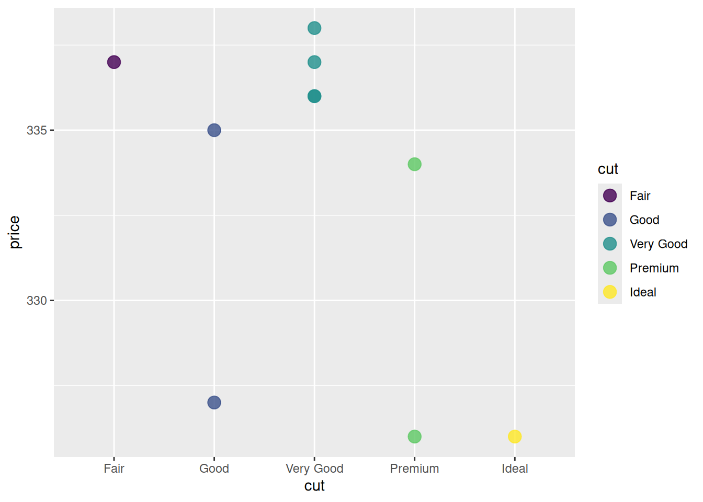

In the last exercise, we learned that the purpose of a Markdown file is to keep explanations for computational problems and the code we use to solve them next to each other in the same document.
We had a couple ‘chunks’ of text, code, text, code, etc, but we didn’t have anything very interesting to look at.
If we go a little farther with the tools available in R, and grab a dataset, R might make itself more worthwhile!
##Let’s view a dataset There’s a really handy sample dataset about diamonds that comes along with one of R’s most useful plotting tools!
The tool is called ggplot, so I’ll show you how to get the toolset and the dataset with a simple command.
#To read some pieces of code that other people have already written, we can borrow those codebooks from the R library. #Here, we borrow some instructions for making plots, which also includes the sample dataset called 'diamonds', by calling up the code using the 'library' function: library(ggplot2)#This is like checking out a codebook from the library - you get to keep it at hand as long as you're working in this space.#The 'head' command in bash has the same name in R, but it is a function too: head(diamonds)
carat cut color clarity depth table price x y z
1 0.23 Ideal E SI2 61.5 55 326 3.95 3.98 2.43
2 0.21 Premium E SI1 59.8 61 326 3.89 3.84 2.31
3 0.23 Good E VS1 56.9 65 327 4.05 4.07 2.31
4 0.29 Premium I VS2 62.4 58 334 4.20 4.23 2.63
5 0.31 Good J SI2 63.3 58 335 4.34 4.35 2.75
6 0.24 Very Good J VVS2 62.8 57 336 3.94 3.96 2.48
#To change the number of rows displayed, it looks like this: head(diamonds, n=10)
carat cut color clarity depth table price x y z
1 0.23 Ideal E SI2 61.5 55 326 3.95 3.98 2.43
2 0.21 Premium E SI1 59.8 61 326 3.89 3.84 2.31
3 0.23 Good E VS1 56.9 65 327 4.05 4.07 2.31
4 0.29 Premium I VS2 62.4 58 334 4.20 4.23 2.63
5 0.31 Good J SI2 63.3 58 335 4.34 4.35 2.75
6 0.24 Very Good J VVS2 62.8 57 336 3.94 3.96 2.48
7 0.24 Very Good I VVS1 62.3 57 336 3.95 3.98 2.47
8 0.26 Very Good H SI1 61.9 55 337 4.07 4.11 2.53
9 0.22 Fair E VS2 65.1 61 337 3.87 3.78 2.49
10 0.23 Very Good H VS1 59.4 61 338 4.00 4.05 2.39
#We also talked about how the function nrow() works just like the bash command (word count) that tells us how many lines are in a file: wc -lnrow(diamonds)
[1] 53940
##Let’s navigate a dataset In lecture we saw how you could find things in a dataframe by specifying rows and columns with this type of syntax:
dataframe[rows, columns]
In addition, you can put functions inside the row and column spots. The function we used as an example is the ‘combine’ function: c()
dataframe[c(1,3,5,7,9), ] returns the odd rows less than 10 from the dataframe
In fact, even grep is available in R as a function so you can search for patterns inside your data. Typically, you want to return the rows that match, because these are complete records of whatever thing your studying.
What does the code look like using the real data about the R diamonds? Let’s investigate:
#This is an example of some student code where they were looking for all the "Good" diamonds: pretty close! diamonds[grep("Good",diamonds)]
data frame with 0 columns and 53940 rows
#Putting results in a variable is good practice if we want to us them later. # Use the '<-' combined symbol to "stuff" your code result from the right side into the variable on the left side. You can name the variable whatever you want! We named it 'stud' here: stud <- diamonds[grep("Good",diamonds)]#Let us make a few modifications. #First, let's specify that we are looking in rows with a comma after the grep command#Then let's grep for the pattern in the "cut" column only. #To use column information inside the function, we can use SYNTAX like this:#diamonds$cut. That calls the column "by its name". stud2 <- diamonds[grep("Good",diamonds$cut),]stud2
carat cut color clarity depth table price x y z
3 0.23 Good E VS1 56.9 65.0 327 4.05 4.07 2.31
5 0.31 Good J SI2 63.3 58.0 335 4.34 4.35 2.75
6 0.24 Very Good J VVS2 62.8 57.0 336 3.94 3.96 2.48
7 0.24 Very Good I VVS1 62.3 57.0 336 3.95 3.98 2.47
8 0.26 Very Good H SI1 61.9 55.0 337 4.07 4.11 2.53
10 0.23 Very Good H VS1 59.4 61.0 338 4.00 4.05 2.39
11 0.30 Good J SI1 64.0 55.0 339 4.25 4.28 2.73
18 0.30 Good J SI1 63.4 54.0 351 4.23 4.29 2.70
19 0.30 Good J SI1 63.8 56.0 351 4.23 4.26 2.71
20 0.30 Very Good J SI1 62.7 59.0 351 4.21 4.27 2.66
21 0.30 Good I SI2 63.3 56.0 351 4.26 4.30 2.71
22 0.23 Very Good E VS2 63.8 55.0 352 3.85 3.92 2.48
23 0.23 Very Good H VS1 61.0 57.0 353 3.94 3.96 2.41
24 0.31 Very Good J SI1 59.4 62.0 353 4.39 4.43 2.62
25 0.31 Very Good J SI1 58.1 62.0 353 4.44 4.47 2.59
26 0.23 Very Good G VVS2 60.4 58.0 354 3.97 4.01 2.41
28 0.30 Very Good J VS2 62.2 57.0 357 4.28 4.30 2.67
29 0.23 Very Good D VS2 60.5 61.0 357 3.96 3.97 2.40
30 0.23 Very Good F VS1 60.9 57.0 357 3.96 3.99 2.42
31 0.23 Very Good F VS1 60.0 57.0 402 4.00 4.03 2.41
32 0.23 Very Good F VS1 59.8 57.0 402 4.04 4.06 2.42
33 0.23 Very Good E VS1 60.7 59.0 402 3.97 4.01 2.42
34 0.23 Very Good E VS1 59.5 58.0 402 4.01 4.06 2.40
35 0.23 Very Good D VS1 61.9 58.0 402 3.92 3.96 2.44
36 0.23 Good F VS1 58.2 59.0 402 4.06 4.08 2.37
37 0.23 Good E VS1 64.1 59.0 402 3.83 3.85 2.46
38 0.31 Good H SI1 64.0 54.0 402 4.29 4.31 2.75
39 0.26 Very Good D VS2 60.8 59.0 403 4.13 4.16 2.52
43 0.26 Good D VS2 65.2 56.0 403 3.99 4.02 2.61
44 0.26 Good D VS1 58.4 63.0 403 4.19 4.24 2.46
45 0.32 Good H SI2 63.1 56.0 403 4.34 4.37 2.75
47 0.32 Very Good H SI2 61.8 55.0 403 4.35 4.42 2.71
48 0.32 Good H SI2 63.8 56.0 403 4.36 4.38 2.79
49 0.25 Very Good E VS2 63.3 60.0 404 4.00 4.03 2.54
50 0.29 Very Good H SI2 60.7 60.0 404 4.33 4.37 2.64
51 0.24 Very Good F SI1 60.9 61.0 404 4.02 4.03 2.45
58 0.30 Very Good I SI1 62.6 57.0 405 4.25 4.28 2.67
59 0.30 Very Good I SI1 63.0 57.0 405 4.28 4.32 2.71
60 0.30 Good I SI1 63.2 55.0 405 4.25 4.29 2.70
68 0.31 Very Good G SI1 63.3 57.0 553 4.33 4.30 2.73
71 0.24 Very Good D VVS1 61.5 60.0 553 3.97 4.00 2.45
72 0.30 Very Good H SI1 63.1 56.0 554 4.29 4.27 2.70
75 0.30 Good H SI1 63.7 57.0 554 4.28 4.26 2.72
76 0.26 Very Good F VVS2 59.2 60.0 554 4.19 4.22 2.49
77 0.26 Very Good E VVS2 59.9 58.0 554 4.15 4.23 2.51
78 0.26 Very Good D VVS2 62.4 54.0 554 4.08 4.13 2.56
79 0.26 Very Good D VVS2 62.8 60.0 554 4.01 4.05 2.53
80 0.26 Very Good E VVS1 62.6 59.0 554 4.06 4.09 2.55
81 0.26 Very Good E VVS1 63.4 59.0 554 4.00 4.04 2.55
82 0.26 Very Good D VVS1 62.1 60.0 554 4.03 4.12 2.53
85 0.26 Good E VVS1 57.9 60.0 554 4.22 4.25 2.45
94 0.71 Very Good E VS2 62.4 57.0 2759 5.68 5.73 3.56
95 0.78 Very Good G SI2 63.8 56.0 2759 5.81 5.85 3.72
96 0.70 Good E VS2 57.5 58.0 2759 5.85 5.90 3.38
97 0.70 Good F VS1 59.4 62.0 2759 5.71 5.76 3.40
99 0.73 Very Good E SI1 61.6 59.0 2760 5.77 5.78 3.56
101 0.75 Very Good D SI1 63.2 56.0 2760 5.80 5.75 3.65
114 0.74 Very Good G SI1 62.2 59.0 2762 5.73 5.82 3.59
123 0.70 Very Good F VS2 61.7 63.0 2762 5.64 5.61 3.47
128 0.61 Very Good D VVS2 59.6 57.0 2763 5.56 5.58 3.32
132 0.71 Very Good D SI1 63.6 58.0 2764 5.64 5.68 3.60
134 0.70 Very Good E VS2 62.6 60.0 2765 5.62 5.65 3.53
135 0.77 Very Good H VS1 61.3 60.0 2765 5.88 5.90 3.61
137 0.71 Very Good F VS1 60.1 62.0 2765 5.74 5.77 3.46
143 0.70 Very Good D VS2 61.8 55.0 2767 5.68 5.72 3.52
144 0.70 Very Good F VS1 60.0 57.0 2767 5.80 5.87 3.50
146 0.70 Good H VVS2 62.1 64.0 2767 5.62 5.65 3.50
147 0.71 Very Good G VS1 63.3 59.0 2768 5.52 5.61 3.52
148 0.73 Very Good D SI1 60.2 56.0 2768 5.83 5.87 3.52
149 0.70 Very Good D SI1 61.1 58.0 2768 5.66 5.73 3.48
155 0.76 Very Good F SI1 62.9 57.0 2770 5.79 5.81 3.65
162 0.72 Very Good H VVS2 60.3 56.0 2771 5.81 5.83 3.51
163 0.73 Very Good F SI1 61.7 60.0 2771 5.79 5.82 3.58
166 0.73 Very Good H VVS1 60.4 59.0 2772 5.83 5.89 3.54
167 0.80 Very Good F SI2 61.0 57.0 2772 6.01 6.03 3.67
170 0.71 Good E VS2 59.2 61.0 2772 5.80 5.88 3.46
173 1.17 Very Good J I1 60.2 61.0 2774 6.83 6.90 4.13
176 0.83 Good I VS2 64.6 54.0 2774 5.85 5.88 3.79
177 0.74 Very Good F VS2 61.3 61.0 2775 5.80 5.84 3.57
178 0.72 Very Good G VS2 63.7 56.4 2776 5.62 5.69 3.61
185 0.72 Good G VS2 59.7 60.5 2776 5.80 5.84 3.47
187 0.70 Very Good D VS1 62.7 58.0 2777 5.66 5.73 3.57
189 0.71 Very Good F VS2 62.8 57.0 2777 5.64 5.69 3.56
190 0.71 Good F VS2 63.8 58.0 2777 5.61 5.64 3.59
191 0.71 Good F VS2 57.8 60.0 2777 5.87 5.90 3.40
201 0.70 Very Good E SI1 59.9 63.0 2777 5.76 5.70 3.43
204 0.70 Good E VS2 64.1 59.0 2777 5.64 5.59 3.60
207 0.70 Very Good E SI1 63.2 60.0 2777 5.60 5.51 3.51
209 0.73 Very Good H VS2 60.8 56.0 2779 5.82 5.84 3.55
211 0.70 Very Good F VS2 63.6 57.0 2780 5.61 5.65 3.58
219 0.72 Very Good H VS1 60.6 63.0 2782 5.83 5.76 3.51
220 0.53 Very Good D VVS2 57.5 64.0 2782 5.34 5.37 3.08
222 0.70 Good E VS1 57.2 62.0 2782 5.81 5.77 3.31
224 0.75 Very Good D SI2 63.1 58.0 2782 5.78 5.73 3.63
231 0.72 Very Good F VS2 63.0 54.0 2784 5.69 5.73 3.60
232 0.79 Very Good H VS1 63.7 56.0 2784 5.85 5.92 3.75
233 0.72 Very Good F VS2 63.6 58.0 2787 5.66 5.69 3.61
236 0.70 Very Good H VVS1 60.5 60.0 2788 5.74 5.77 3.48
237 0.83 Very Good I VS1 61.1 60.0 2788 6.07 6.10 3.72
239 0.71 Good D VS2 63.3 56.0 2788 5.64 5.68 3.58
240 0.77 Good G VS1 59.4 64.0 2788 5.97 5.92 3.53
244 0.77 Good F SI1 64.2 52.0 2789 5.81 5.77 3.72
245 0.76 Good E SI1 63.7 54.0 2789 5.76 5.85 3.70
248 1.05 Very Good J SI2 63.2 56.0 2789 6.49 6.45 4.09
252 0.81 Good G SI2 61.0 61.0 2789 5.94 5.99 3.64
262 0.87 Very Good I SI1 63.6 55.8 2791 6.07 6.10 3.87
271 0.79 Very Good G SI1 60.6 57.0 2793 5.98 6.06 3.65
272 0.70 Very Good E VS2 62.9 57.0 2793 5.66 5.69 3.57
273 0.70 Good E VS2 64.1 55.0 2793 5.60 5.66 3.61
276 0.79 Very Good E SI1 63.2 56.0 2794 5.91 5.86 3.72
277 0.71 Very Good E VS2 60.7 56.0 2795 5.81 5.82 3.53
280 0.72 Good F VS1 60.7 60.0 2795 5.74 5.72 3.48
286 0.73 Good E SI1 63.2 58.0 2796 5.70 5.76 3.62
287 0.81 Very Good H SI2 61.3 59.0 2797 5.94 6.01 3.66
288 0.81 Very Good E SI1 60.3 60.0 2797 6.07 6.10 3.67
300 0.80 Very Good H VS2 63.4 60.0 2797 5.92 5.82 3.72
302 0.83 Very Good E SI2 58.0 62.0 2799 6.19 6.25 3.61
305 0.60 Very Good G IF 61.6 56.0 2800 5.43 5.46 3.35
306 0.90 Good I SI2 62.2 59.0 2800 6.07 6.11 3.79
308 0.90 Very Good I SI2 61.3 56.0 2800 6.17 6.23 3.80
311 0.83 Very Good H SI1 62.5 59.0 2800 5.95 6.02 3.74
321 0.71 Good F VS2 57.8 60.0 2801 5.90 5.87 3.40
322 0.71 Good F VS2 63.8 58.0 2801 5.64 5.61 3.59
326 0.87 Very Good G SI2 59.9 58.0 2802 6.19 6.23 3.72
330 0.70 Very Good F VS2 62.9 58.0 2803 5.63 5.65 3.55
331 0.74 Very Good E SI1 63.5 56.0 2803 5.74 5.79 3.66
334 0.70 Good G VS1 65.1 58.0 2803 5.56 5.59 3.63
341 0.71 Very Good G VS1 63.5 55.0 2803 5.66 5.64 3.59
343 0.71 Very Good E VS2 63.8 58.0 2804 5.62 5.66 3.60
344 0.71 Very Good E VS2 64.0 57.0 2804 5.66 5.68 3.63
345 0.80 Very Good E SI2 62.5 56.0 2804 5.88 5.96 3.70
346 0.70 Very Good D SI1 62.3 58.0 2804 5.69 5.73 3.56
348 0.72 Very Good F VS1 62.2 58.0 2804 5.75 5.70 3.56
361 0.82 Good G VS2 64.0 57.0 2805 5.92 5.89 3.78
362 0.81 Very Good G SI1 62.5 60.0 2806 5.89 5.94 3.69
363 0.75 Very Good H VVS1 60.6 58.0 2806 5.85 5.90 3.56
365 0.71 Very Good F VS1 62.2 58.0 2807 5.66 5.72 3.54
366 0.71 Very Good F VS1 60.0 57.0 2807 5.84 5.90 3.52
368 0.80 Very Good H VS2 62.8 57.0 2808 5.87 5.91 3.70
369 0.70 Very Good F VS1 62.0 57.0 2808 5.64 5.71 3.52
371 0.75 Very Good G VS2 63.4 56.0 2808 5.78 5.74 3.65
373 0.73 Very Good D SI1 63.1 57.0 2808 5.74 5.70 3.61
374 0.81 Very Good F SI1 63.1 59.0 2809 5.85 5.79 3.67
378 0.70 Very Good F VS1 61.8 56.0 2810 5.63 5.70 3.50
379 0.70 Very Good F VS1 59.9 60.0 2810 5.77 5.84 3.48
381 0.70 Good F VS1 62.8 61.0 2810 5.57 5.61 3.51
382 0.80 Good G SI1 62.7 57.0 2810 5.84 5.93 3.69
383 0.75 Very Good F SI1 63.4 58.0 2811 5.72 5.76 3.64
384 0.83 Very Good D SI1 63.5 54.0 2811 5.98 5.95 3.79
387 0.70 Very Good G VS1 63.0 60.0 2812 5.57 5.64 3.53
388 0.70 Very Good F VS2 59.5 58.0 2812 5.75 5.85 3.45
389 0.70 Good E SI1 63.5 59.0 2812 5.49 5.53 3.50
390 0.70 Very Good F VS2 61.7 58.0 2812 5.63 5.69 3.49
395 0.32 Very Good I SI1 63.1 56.0 554 4.39 4.36 2.76
400 0.30 Very Good H SI1 63.3 56.0 554 4.29 4.27 2.71
401 0.30 Good H SI1 63.8 55.0 554 4.26 4.20 2.70
403 0.30 Very Good H SI1 63.4 60.0 554 4.25 4.23 2.69
404 0.32 Good I SI1 63.9 55.0 554 4.36 4.34 2.78
406 0.29 Very Good E VS1 61.9 55.0 555 4.28 4.33 2.66
407 0.29 Very Good E VS1 62.4 55.0 555 4.20 4.25 2.63
408 0.31 Very Good F SI1 61.8 58.0 555 4.32 4.35 2.68
416 0.43 Very Good E I1 58.4 62.0 555 4.94 5.00 2.90
417 0.32 Very Good F VS2 61.4 58.0 556 4.37 4.42 2.70
421 0.70 Very Good F VS2 62.3 58.0 2812 5.64 5.72 3.54
422 0.70 Very Good F VS2 60.9 61.0 2812 5.66 5.71 3.46
428 0.84 Very Good E SI1 63.4 55.0 2813 6.00 5.95 3.79
429 0.91 Good I VS2 64.3 58.0 2813 6.09 6.05 3.90
433 0.55 Very Good D VVS1 61.5 56.0 2815 5.23 5.27 3.23
434 0.76 Very Good F SI2 58.5 62.0 2815 5.93 6.01 3.49
446 0.78 Very Good I VVS2 61.4 56.0 2816 5.91 5.95 3.64
448 0.71 Good D VS1 63.4 55.0 2816 5.61 5.69 3.58
462 0.71 Good E SI1 62.8 64.0 2817 5.60 5.54 3.50
474 0.72 Very Good G VS1 63.8 58.0 2819 5.64 5.68 3.61
476 0.70 Good F VS1 59.7 63.0 2819 5.76 5.79 3.45
477 0.86 Good F SI2 64.3 60.0 2819 5.97 5.95 3.83
483 0.73 Good E SI1 63.6 57.0 2821 5.72 5.70 3.63
487 0.73 Very Good E SI1 63.2 58.0 2821 5.76 5.70 3.62
500 0.90 Good J VS2 64.0 61.0 2822 6.04 6.03 3.86
505 0.70 Good E SI1 61.4 64.0 2822 5.71 5.66 3.49
511 0.79 Very Good D SI2 62.8 59.0 2823 5.86 5.90 3.69
512 0.90 Good I SI1 63.8 57.0 2823 6.06 6.13 3.89
519 0.74 Good E VS1 63.1 58.0 2824 5.73 5.75 3.62
524 0.73 Very Good G VS1 62.0 57.0 2825 5.75 5.80 3.58
529 0.70 Good E VS1 57.2 59.0 2826 5.94 5.88 3.38
532 0.70 Very Good D VS2 63.3 56.0 2826 5.60 5.58 3.54
534 0.90 Very Good I SI2 63.5 56.0 2826 6.17 6.07 3.88
537 0.70 Very Good D SI1 62.3 59.0 2827 5.67 5.70 3.54
538 0.72 Good D VS2 64.0 54.0 2827 5.68 5.70 3.64
545 0.80 Good E SI2 63.7 54.0 2829 5.91 5.87 3.75
550 0.71 Very Good E VS2 62.7 59.0 2830 5.65 5.70 3.56
551 0.77 Very Good H SI1 61.7 56.0 2830 5.84 5.89 3.62
557 0.76 Very Good E SI2 60.8 60.0 2831 5.89 5.98 3.61
562 0.72 Very Good F VS2 62.5 58.0 2832 5.71 5.75 3.58
563 0.91 Very Good I SI2 62.8 61.0 2832 6.15 6.18 3.87
568 0.90 Good J SI1 64.3 63.0 2832 6.05 6.01 3.88
569 0.80 Very Good I VS2 62.0 58.0 2833 5.86 5.95 3.66
570 0.56 Very Good E IF 61.0 59.0 2833 5.28 5.34 3.24
571 0.70 Very Good D VS2 59.6 61.0 2833 5.77 5.80 3.45
578 0.51 Very Good D VVS1 59.9 58.0 2834 5.16 5.19 3.10
581 0.90 Very Good J SI1 63.4 54.0 2834 6.17 6.14 3.90
590 0.82 Very Good H SI1 60.7 56.0 2836 6.04 6.06 3.67
591 0.71 Good E VS2 62.8 60.0 2836 5.60 5.65 3.53
595 0.76 Very Good H SI1 60.9 55.0 2838 5.92 5.94 3.61
602 0.70 Very Good E SI1 63.5 59.0 2838 5.53 5.49 3.50
606 0.74 Very Good E SI1 60.0 57.0 2839 5.85 5.89 3.52
621 0.77 Very Good H VS1 61.0 60.0 2840 5.90 5.87 3.59
622 0.75 Very Good F SI2 59.8 56.0 2840 5.85 5.92 3.52
629 0.71 Very Good D VS1 63.4 55.0 2841 5.69 5.61 3.58
630 0.73 Very Good D SI1 63.9 57.0 2841 5.66 5.71 3.63
633 0.82 Very Good F SI2 59.7 57.0 2841 6.12 6.14 3.66
642 0.70 Very Good E VS2 60.2 62.0 2843 5.71 5.75 3.45
643 0.70 Very Good E VS2 62.7 58.0 2843 5.65 5.67 3.55
644 0.71 Very Good E VS2 59.4 58.0 2843 5.76 5.82 3.44
645 0.81 Very Good F SI2 63.2 58.0 2843 5.91 5.92 3.74
646 0.71 Very Good D SI1 61.5 58.0 2843 5.73 5.79 3.54
648 0.73 Very Good F VS1 61.8 59.0 2843 5.73 5.79 3.56
652 0.73 Very Good E SI1 57.7 61.0 2844 5.92 5.96 3.43
653 0.70 Very Good E VS1 62.0 59.0 2844 5.65 5.68 3.51
655 1.01 Good I I1 63.1 57.0 2844 6.35 6.39 4.02
657 0.70 Very Good E VS2 61.8 59.0 2845 5.65 5.68 3.50
658 0.70 Very Good E VS2 58.9 60.0 2845 5.83 5.85 3.44
659 0.80 Good H VS2 63.4 60.0 2845 5.92 5.82 3.72
662 0.72 Very Good F VS1 60.2 59.0 2846 5.79 5.84 3.50
665 1.01 Good H I1 64.2 61.0 2846 6.25 6.18 3.99
668 0.70 Good F VS2 59.1 61.0 2846 5.76 5.84 3.43
672 0.84 Very Good H SI1 61.2 57.0 2847 6.10 6.12 3.74
675 0.70 Very Good G VVS2 62.9 59.0 2848 5.61 5.68 3.55
678 0.79 Good E SI1 64.1 54.0 2849 5.86 5.84 3.75
679 0.74 Very Good E VS1 63.1 58.0 2849 5.75 5.73 3.62
680 0.70 Very Good E VS2 61.0 60.0 2850 5.74 5.77 3.51
683 1.20 Very Good H I1 63.1 60.0 2850 6.75 6.67 4.23
684 0.80 Very Good F SI1 63.4 57.0 2851 5.89 5.82 3.71
686 0.87 Very Good F SI2 61.0 63.0 2851 6.22 6.07 3.75
689 0.58 Very Good E IF 60.6 59.0 2852 5.37 5.43 3.27
693 0.91 Very Good I SI1 63.5 57.0 2852 6.12 6.07 3.87
695 0.71 Good G VS1 63.5 55.0 2853 5.64 5.66 3.59
700 0.78 Very Good H VS1 61.9 57.1 2854 5.87 5.95 3.66
701 0.70 Very Good E VS1 62.4 56.0 2854 5.64 5.70 3.54
706 0.91 Good J VS2 64.2 58.0 2854 6.12 6.09 3.92
710 0.73 Very Good F VS2 62.5 57.0 2855 5.70 5.75 3.58
711 1.03 Good J SI1 63.6 57.0 2855 6.38 6.29 4.03
724 0.34 Good G VS2 57.5 61.0 556 4.60 4.66 2.66
725 0.34 Good E SI1 63.3 57.0 556 4.44 4.47 2.82
726 0.34 Good E SI1 63.5 55.0 556 4.44 4.47 2.83
727 0.34 Good E SI1 63.4 55.0 556 4.44 4.46 2.82
728 0.34 Very Good G VS2 59.6 62.0 556 4.54 4.56 2.71
730 0.32 Good E VS2 64.1 54.0 556 4.34 4.37 2.79
749 0.33 Good I SI1 63.6 53.0 557 4.43 4.40 2.81
754 0.70 Good E VVS2 60.1 63.0 2857 5.68 5.71 3.42
755 0.90 Very Good G SI2 63.1 58.0 2857 6.08 6.02 3.82
760 0.81 Very Good F SI1 61.3 57.0 2858 6.02 6.05 3.70
761 0.81 Very Good F SI1 61.7 57.0 2858 6.00 6.05 3.72
765 0.71 Very Good E VS2 63.5 59.0 2858 5.68 5.59 3.58
770 0.70 Good E VVS2 63.6 62.0 2858 5.61 5.58 3.56
780 0.71 Very Good F VS2 61.3 61.0 2860 5.68 5.73 3.50
781 0.90 Very Good J SI2 63.6 58.0 2860 6.07 6.10 3.87
792 0.70 Very Good D SI1 62.5 55.0 2862 5.67 5.72 3.56
793 0.80 Very Good F SI1 62.6 58.0 2862 5.90 5.92 3.70
794 0.80 Very Good D SI2 62.5 59.0 2862 5.88 5.92 3.69
796 0.71 Very Good F VVS1 63.2 60.0 2862 5.65 5.61 3.56
798 0.70 Very Good E VS2 58.7 63.0 2862 5.73 5.69 3.35
804 0.91 Good I VS2 64.3 58.0 2863 6.05 6.09 3.90
822 0.83 Very Good I VS2 61.6 58.0 2865 6.05 6.07 3.73
824 0.56 Very Good D VVS1 62.0 56.0 2866 5.25 5.30 3.27
825 0.56 Very Good D VVS1 61.8 55.0 2866 5.27 5.31 3.27
829 0.71 Very Good H VVS1 62.9 57.0 2867 5.67 5.69 3.57
844 0.75 Very Good E SI1 63.1 56.0 2868 5.78 5.70 3.62
859 0.73 Very Good E SI1 61.3 58.0 2871 5.76 5.83 3.55
860 0.73 Good E SI1 63.6 57.0 2871 5.70 5.72 3.63
864 0.70 Good D SI1 62.5 56.7 2872 5.59 5.62 3.51
865 0.75 Very Good D SI1 60.7 55.0 2872 5.87 5.92 3.58
867 0.70 Very Good G SI2 59.0 62.0 2872 5.79 5.81 3.42
869 0.70 Good E SI1 61.4 64.0 2872 5.66 5.71 3.49
872 0.70 Very Good D SI1 60.2 60.0 2872 5.75 5.82 3.48
873 0.72 Very Good E VS2 58.3 57.0 2872 5.89 5.94 3.45
875 0.84 Good G SI1 65.1 55.0 2872 5.88 5.97 3.86
876 0.76 Very Good F VS2 62.0 58.0 2873 5.80 5.86 3.62
877 0.77 Very Good E SI1 63.2 58.0 2873 5.80 5.84 3.68
883 0.90 Good J SI1 64.0 61.0 2873 6.00 5.96 3.83
903 0.72 Very Good H VS1 62.2 54.0 2877 5.74 5.76 3.57
906 0.70 Good H VVS1 62.7 56.0 2877 5.60 5.66 3.53
907 0.70 Good F VS1 59.1 62.0 2877 5.82 5.86 3.44
908 0.79 Very Good F SI1 62.8 59.0 2878 5.86 5.89 3.69
909 0.79 Very Good F SI1 62.7 60.0 2878 5.82 5.89 3.67
910 0.79 Very Good D SI2 59.7 58.0 2878 6.00 6.07 3.60
913 0.73 Very Good F SI1 61.4 56.0 2879 5.81 5.86 3.58
922 0.92 Very Good J SI2 58.7 61.0 2880 6.34 6.43 3.75
923 0.74 Very Good D SI1 63.9 57.0 2880 5.72 5.74 3.66
925 0.71 Very Good E VS2 60.0 59.0 2881 5.84 5.83 3.50
927 0.70 Very Good H IF 62.8 56.0 2882 5.62 5.65 3.54
933 0.90 Good H SI2 62.7 64.0 2883 6.09 6.00 3.79
936 0.84 Very Good F SI1 63.8 57.0 2885 5.95 6.00 3.81
943 0.71 Very Good D SI1 62.4 54.0 2887 5.71 5.79 3.59
946 0.72 Very Good G VVS2 62.5 58.0 2889 5.68 5.72 3.56
947 0.70 Very Good E VS2 63.5 54.0 2889 5.62 5.66 3.58
948 0.70 Very Good F VS1 62.2 58.0 2889 5.64 5.75 3.54
949 0.90 Good H SI2 63.5 58.0 2889 6.09 6.14 3.88
950 0.71 Very Good F VS1 62.8 56.0 2889 5.69 5.72 3.58
959 0.80 Good F SI1 63.8 59.0 2890 5.87 5.83 3.73
961 0.71 Very Good E VS2 61.2 58.0 2891 5.71 5.79 3.52
966 0.71 Good D VS2 62.3 61.0 2891 5.70 5.73 3.56
969 0.71 Very Good F VS1 62.6 55.0 2893 5.66 5.71 3.56
970 0.82 Very Good G SI2 62.5 56.0 2893 5.99 6.04 3.76
973 0.70 Very Good H VVS1 59.2 60.0 2893 5.87 5.78 3.45
975 0.82 Good G SI2 59.9 62.0 2893 6.02 6.04 3.61
976 0.82 Very Good G SI1 63.4 55.0 2893 6.00 5.93 3.78
978 0.81 Very Good E SI2 62.4 57.0 2894 5.91 5.99 3.71
981 0.71 Very Good G VS2 60.9 56.0 2895 5.75 5.78 3.51
982 0.70 Very Good F VS1 61.8 59.0 2895 5.66 5.76 3.53
984 0.74 Very Good G VS1 59.8 58.0 2896 5.85 5.89 3.51
985 0.77 Very Good G VS2 61.3 60.0 2896 5.81 5.91 3.59
986 0.77 Very Good G VS2 58.3 63.0 2896 6.00 6.05 3.51
992 1.01 Very Good I I1 63.1 57.0 2896 6.39 6.35 4.02
994 0.60 Very Good D VVS2 60.6 57.0 2897 5.48 5.51 3.33
998 0.72 Good F VS1 59.4 61.0 2897 5.82 5.89 3.48
1003 0.98 Good H SI2 57.9 56.0 2898 6.51 6.47 3.76
1010 0.70 Good G VVS1 59.9 61.0 2899 5.75 5.81 3.46
1011 0.70 Very Good F SI1 61.9 58.0 2900 5.71 5.72 3.54
1027 0.79 Very Good F SI1 63.0 54.0 2904 5.91 5.94 3.73
1028 0.79 Very Good D SI2 62.8 57.0 2904 5.85 5.90 3.69
1029 0.70 Very Good E VS1 58.4 59.0 2904 5.83 5.91 3.43
1031 0.70 Very Good G VVS2 59.3 62.0 2905 5.78 5.82 3.44
1032 0.70 Very Good G VVS2 63.4 59.0 2905 5.62 5.64 3.57
1033 0.70 Very Good G VVS2 63.3 59.0 2905 5.59 5.62 3.55
1034 0.71 Very Good G VS2 62.1 58.0 2905 5.65 5.71 3.53
1035 0.86 Very Good I VS1 61.2 58.0 2905 6.10 6.16 3.75
1037 0.91 Very Good J SI1 63.5 58.0 2905 6.17 6.12 3.90
1038 0.95 Good I SI2 63.8 57.0 2905 6.23 6.13 3.94
1040 0.74 Very Good D VS2 62.4 57.0 2906 5.74 5.80 3.60
1042 0.74 Good E SI1 62.8 61.0 2906 5.74 5.76 3.61
1055 0.25 Good F VS1 63.6 57.0 558 4.04 4.01 2.56
1060 0.31 Very Good I VS2 63.2 55.0 558 4.40 4.30 2.75
1072 0.31 Very Good I VS2 63.1 54.0 558 4.34 4.31 2.73
1076 0.31 Good H SI1 63.6 57.0 558 4.31 4.28 2.73
1081 0.82 Very Good H SI1 63.6 56.0 2908 5.90 5.95 3.77
1088 0.71 Very Good D VS1 62.9 57.0 2910 5.60 5.66 3.54
1092 0.77 Good F VS2 60.3 61.0 2911 5.89 5.96 3.57
1093 0.73 Good E VS2 64.2 54.0 2912 5.68 5.72 3.66
1094 0.70 Good E VS2 58.7 63.0 2912 5.69 5.73 3.35
1095 0.73 Good E VS2 63.2 56.0 2912 5.75 5.76 3.64
1100 0.70 Very Good D VS2 60.7 60.0 2913 5.72 5.74 3.48
1104 0.71 Very Good D SI1 61.7 56.0 2913 5.68 5.80 3.54
1110 0.80 Very Good F SI1 63.5 55.0 2914 5.86 5.89 3.73
1112 0.83 Very Good I VS2 62.0 55.0 2915 6.03 6.06 3.74
1113 0.77 Very Good G SI1 63.6 57.0 2915 5.79 5.88 3.71
1114 0.80 Very Good G SI2 62.0 55.0 2915 5.94 6.01 3.70
1116 0.73 Very Good H VS1 60.8 57.0 2916 5.80 5.83 3.54
1121 0.71 Very Good F VS2 59.5 58.0 2918 5.82 5.87 3.48
1122 0.80 Very Good H VS2 61.2 53.0 2918 5.98 6.05 3.68
1125 0.83 Very Good D SI2 63.1 57.0 2918 5.95 5.90 3.74
1126 0.72 Very Good G VS1 60.5 57.0 2919 5.80 5.83 3.52
1127 0.80 Very Good H SI1 62.5 56.0 2919 5.92 5.96 3.71
1129 0.70 Good F VS1 63.8 58.0 2919 5.61 5.58 3.57
1136 0.74 Very Good H VVS2 60.5 60.0 2921 5.79 5.81 3.51
1137 0.71 Very Good E VS2 59.9 59.0 2921 5.77 5.81 3.47
1138 0.71 Very Good E VS2 60.7 60.0 2921 5.75 5.78 3.50
1139 0.71 Very Good D SI1 60.1 60.0 2921 5.76 5.79 3.47
1142 0.71 Very Good E VS2 63.7 58.0 2922 5.60 5.64 3.58
1143 0.71 Very Good E VS2 63.3 59.0 2922 5.62 5.66 3.57
1144 0.68 Very Good F VS1 59.7 57.0 2922 5.79 5.76 3.45
1147 0.72 Very Good E VS2 63.0 57.0 2923 5.69 5.73 3.60
1148 0.72 Very Good E VS2 63.2 58.0 2923 5.67 5.72 3.60
1149 0.70 Very Good E SI1 61.8 59.0 2923 5.63 5.69 3.50
1150 0.75 Very Good E SI1 62.3 58.0 2923 5.78 5.81 3.61
1151 0.75 Very Good E SI1 61.5 58.0 2923 5.82 5.86 3.59
1156 0.75 Good E SI1 58.3 60.0 2923 5.94 5.99 3.48
1159 0.80 Very Good D SI1 58.2 63.0 2925 6.07 6.03 3.52
1160 0.70 Very Good F VS1 64.5 58.0 2925 5.55 5.59 3.59
1161 0.51 Very Good E IF 63.3 58.0 2925 5.03 5.08 3.20
1165 0.81 Good D SI2 63.6 55.0 2926 5.91 5.86 3.74
1168 0.77 Very Good H VS1 63.3 57.0 2927 5.79 5.83 3.68
1171 0.70 Very Good F VS2 61.3 54.0 2928 5.72 5.76 3.52
1172 0.70 Very Good D VS2 60.8 59.0 2928 5.67 5.71 3.46
1173 0.74 Very Good E SI1 61.0 58.0 2929 5.82 5.85 3.56
1174 0.80 Very Good G VS2 61.1 57.0 2929 6.01 6.07 3.69
1177 0.71 Very Good E VS2 61.3 60.0 2930 5.74 5.71 3.51
1183 0.90 Very Good E SI2 58.7 63.0 2930 6.23 6.20 3.65
1186 0.70 Very Good G VVS2 60.8 57.0 2931 5.72 5.76 3.49
1187 0.72 Very Good F VS2 63.3 57.0 2931 5.69 5.72 3.61
1191 0.70 Very Good F VVS2 63.2 58.0 2932 5.66 5.60 3.56
1192 0.72 Very Good G VVS2 62.2 57.0 2933 5.67 5.72 3.54
1193 0.59 Very Good D VVS2 60.6 59.0 2933 5.44 5.49 3.31
1196 0.75 Good D SI2 57.6 56.0 2933 5.98 6.07 3.47
1197 0.90 Good H SI2 62.7 64.0 2934 6.00 6.09 3.79
1202 0.70 Very Good G VVS2 61.8 60.0 2936 5.63 5.69 3.50
1203 0.81 Very Good H SI1 60.2 58.0 2936 6.06 6.10 3.66
1210 0.71 Very Good H VVS1 62.7 57.0 2938 5.66 5.72 3.57
1211 0.71 Very Good H VVS1 62.7 59.0 2938 5.65 5.67 3.55
1213 0.73 Very Good F VS2 62.7 58.0 2939 5.73 5.75 3.60
1214 0.73 Very Good G VS1 60.7 57.0 2939 5.76 5.83 3.52
1215 0.83 Very Good F SI2 61.9 56.0 2939 5.99 6.02 3.72
1224 0.70 Good F VVS2 63.1 57.0 2940 5.59 5.66 3.55
1225 1.24 Very Good J I1 61.9 55.0 2940 6.85 6.92 4.26
1226 0.70 Very Good F VVS2 62.6 59.0 2940 5.60 5.64 3.52
1229 1.00 Good H I1 57.6 61.0 2940 6.67 6.60 3.82
1232 0.79 Very Good E SI2 59.2 59.0 2941 6.04 6.06 3.58
1233 0.80 Good F SI1 63.8 59.0 2941 5.83 5.87 3.73
1234 0.81 Very Good F SI2 62.7 58.0 2942 5.92 5.95 3.72
1242 0.74 Very Good H VVS2 61.3 58.0 2944 5.80 5.85 3.57
1244 0.57 Very Good D VVS1 60.4 57.0 2945 5.39 5.44 3.27
1245 0.79 Very Good H VS2 61.5 55.0 2945 5.89 5.94 3.64
1246 0.78 Very Good D SI1 62.4 58.0 2945 5.86 5.90 3.67
1247 0.85 Good G SI1 64.9 56.0 2945 5.95 5.98 3.87
1248 0.71 Very Good E VS1 63.3 59.0 2946 5.64 5.67 3.58
1249 0.71 Very Good E VS1 62.7 57.0 2946 5.69 5.73 3.58
1254 0.78 Very Good H VS1 61.7 56.0 2947 5.92 5.94 3.66
1263 0.82 Good H VS2 62.4 54.0 2947 5.97 6.04 3.75
1272 0.72 Very Good E VS2 63.0 56.0 2949 5.66 5.73 3.59
1277 0.81 Very Good I VS1 62.7 58.0 2950 5.90 5.96 3.72
1281 0.72 Very Good D VS1 62.7 58.0 2951 5.65 5.68 3.55
1285 0.70 Very Good E VS2 62.4 58.0 2952 5.66 5.68 3.54
1286 0.70 Very Good E VS2 63.4 59.0 2952 5.63 5.67 3.58
1287 0.70 Very Good E VS2 61.8 59.0 2952 5.63 5.67 3.49
1288 0.70 Very Good E VS1 61.3 60.0 2952 5.68 5.70 3.49
1295 0.70 Good E VS1 61.0 61.0 2952 5.69 5.72 3.48
1296 0.80 Very Good H VS2 59.1 59.0 2953 6.02 6.07 3.57
1298 0.75 Good F VS1 64.4 59.0 2953 5.67 5.72 3.66
1299 0.71 Very Good E VS2 59.6 60.0 2954 5.80 5.85 3.47
1304 0.82 Very Good D SI1 63.1 58.0 2954 5.97 5.95 3.76
1307 0.70 Very Good F VS2 62.4 57.0 2956 5.67 5.71 3.55
1308 0.74 Very Good H VS1 61.4 56.0 2956 5.81 5.84 3.57
1309 0.74 Very Good H VS1 62.3 56.0 2956 5.75 5.78 3.59
1310 0.95 Good I SI2 63.8 57.0 2956 6.13 6.23 3.94
1311 0.91 Very Good J SI1 62.8 59.0 2956 6.14 6.19 3.87
1313 0.71 Good F VVS2 58.2 60.0 2956 5.89 5.94 3.44
1319 0.72 Good G VS1 58.0 57.8 2958 5.85 5.87 3.40
1321 0.56 Very Good D VVS1 60.1 58.0 2959 5.36 5.42 3.24
1322 0.70 Very Good F VS1 60.1 58.0 2959 5.73 5.79 3.46
1326 0.71 Very Good H VVS2 61.8 56.0 2960 5.70 5.73 3.53
1327 0.70 Very Good D VS2 63.0 56.0 2960 5.61 5.69 3.56
1328 0.70 Good D VS2 63.4 57.0 2960 5.60 5.67 3.57
1333 0.71 Good F VVS2 58.9 61.0 2960 5.80 5.90 3.44
1335 0.77 Very Good H VS1 62.8 58.0 2961 5.75 5.78 3.62
1351 0.91 Very Good E SI2 58.6 63.0 2963 6.38 6.32 3.72
1352 0.71 Very Good E VS2 62.9 57.0 2964 5.68 5.70 3.58
1353 0.71 Very Good E SI1 62.9 55.0 2964 5.64 5.68 3.56
1354 0.71 Very Good D SI1 59.4 59.0 2964 5.78 5.81 3.44
1355 0.70 Good E VS1 63.6 58.0 2964 5.61 5.56 3.55
1359 0.90 Good F SI2 64.2 62.0 2964 6.08 6.00 3.88
1372 0.73 Very Good G VS2 62.1 59.0 2966 5.68 5.73 3.54
1373 0.85 Very Good E SI2 63.1 58.0 2966 6.02 6.00 3.79
1377 0.70 Very Good E VS1 61.3 56.0 2967 5.68 5.71 3.49
1378 0.70 Very Good E VS1 61.5 56.0 2967 5.69 5.75 3.52
1379 0.86 Very Good G SI2 62.6 56.0 2967 6.01 6.07 3.78
1384 0.30 Very Good H VVS2 62.0 56.0 559 4.28 4.30 2.66
1385 0.31 Very Good G VS2 62.6 56.0 559 4.33 4.37 2.72
1386 0.31 Very Good G VS2 61.4 55.0 559 4.38 4.41 2.69
1387 0.31 Very Good G VS2 60.9 57.0 559 4.37 4.39 2.67
1402 0.25 Very Good E VVS2 62.0 56.0 560 4.05 4.08 2.52
1403 0.25 Very Good E VVS1 61.5 56.0 560 4.06 4.08 2.50
1404 0.25 Very Good F IF 61.5 56.0 560 4.04 4.06 2.48
1405 0.27 Very Good F IF 60.4 58.0 560 4.18 4.20 2.53
1411 0.75 Very Good E SI1 60.2 60.0 2968 5.89 5.93 3.56
1419 0.72 Very Good G VS1 60.6 56.0 2970 5.84 5.87 3.55
1420 0.70 Good F VS1 63.8 58.0 2970 5.58 5.61 3.57
1423 1.04 Good I SI2 59.9 64.0 2970 6.51 6.45 3.88
1425 0.81 Very Good E SI1 63.8 58.0 2972 5.85 5.97 3.77
1428 0.90 Very Good H SI2 63.1 60.0 2972 6.14 6.09 3.86
1430 0.90 Very Good J SI2 63.3 59.0 2973 6.08 6.12 3.86
1434 0.81 Very Good E SI1 59.5 60.0 2973 6.05 6.09 3.61
1435 0.70 Good E VS1 59.8 62.0 2973 5.74 5.80 3.45
1438 0.90 Good H SI1 64.2 60.0 2974 6.05 6.02 3.87
1441 0.70 Very Good F VS1 62.1 57.0 2975 5.69 5.72 3.54
1443 0.82 Very Good E SI2 63.3 56.0 2975 5.99 5.95 3.78
1451 0.71 Very Good G VVS2 60.8 58.0 2977 5.75 5.77 3.50
1463 0.70 Good D SI1 61.3 61.0 2980 5.63 5.69 3.47
1464 0.64 Good F IF 58.6 61.0 2980 5.69 5.71 3.34
1468 0.90 Good E SI2 58.7 63.0 2982 6.20 6.23 3.65
1472 0.71 Very Good G VS1 60.8 63.0 2982 5.76 5.68 3.48
1475 0.90 Very Good J VS2 63.1 57.0 2984 6.12 6.06 3.84
1477 0.70 Very Good D VS2 63.1 56.0 2985 5.62 5.69 3.57
1480 0.77 Very Good G VS1 62.8 58.0 2986 5.78 5.84 3.65
1487 0.60 Very Good F IF 60.1 54.0 2988 5.50 5.58 3.33
1488 1.03 Very Good G I1 63.2 58.0 2988 6.44 6.34 4.04
1492 0.76 Very Good G VS2 62.1 54.0 2990 5.88 5.94 3.67
1493 0.72 Very Good E VS2 62.9 57.0 2990 5.68 5.73 3.59
1494 0.57 Good E VVS1 59.1 65.0 2990 5.34 5.43 3.18
1497 0.70 Very Good E VS2 62.8 56.0 2992 5.66 5.68 3.56
1500 0.69 Very Good F VVS2 61.5 60.0 2993 5.64 5.67 3.48
1501 0.87 Very Good H SI2 61.0 56.0 2993 6.15 6.19 3.77
1502 0.75 Very Good E SI1 63.6 56.0 2993 5.73 5.75 3.65
1508 0.71 Very Good F VS2 59.6 56.0 2994 5.84 5.88 3.49
1509 0.71 Very Good G VS1 59.3 55.0 2994 5.88 5.95 3.51
1510 0.81 Very Good G VS2 63.1 58.0 2994 5.88 5.84 3.70
1517 0.88 Very Good I VS1 63.3 55.0 2996 6.11 6.06 3.85
1526 0.70 Very Good D VS2 59.7 59.0 2999 5.82 5.78 3.46
1527 0.73 Very Good G VS1 62.4 58.1 2999 5.71 5.75 3.58
1536 0.93 Good J VS2 63.6 61.0 3000 6.16 6.08 3.89
1538 0.90 Very Good I SI2 62.5 58.0 3001 6.10 6.15 3.83
1540 0.72 Very Good D SI1 61.5 58.0 3001 5.74 5.78 3.54
1542 0.70 Good D VS1 63.6 60.0 3001 5.61 5.52 3.54
1543 0.70 Very Good D VS1 63.4 59.0 3001 5.58 5.55 3.53
1545 0.75 Very Good H VVS2 60.6 57.0 3002 5.86 5.89 3.56
1546 0.83 Very Good E SI1 62.1 58.0 3002 6.01 6.04 3.74
1547 0.77 Very Good E SI2 60.4 58.0 3002 5.91 5.95 3.58
1549 0.89 Good H SI2 63.3 59.0 3002 6.04 6.09 3.84
1550 0.72 Good F VS1 63.8 58.0 3002 5.68 5.63 3.61
1564 0.75 Very Good E SI1 61.1 59.0 3005 5.85 5.90 3.59
1566 0.80 Very Good H SI1 63.0 57.0 3005 5.89 5.95 3.73
1569 0.91 Very Good I SI2 63.4 58.0 3006 6.08 6.12 3.87
1570 0.91 Very Good G SI2 62.8 59.0 3006 6.09 6.14 3.84
1572 0.71 Very Good E VS1 63.2 60.0 3006 5.63 5.60 3.55
1583 0.91 Very Good F SI1 63.1 60.0 3007 6.13 6.10 3.86
1584 0.70 Very Good D VS1 60.4 58.0 3008 5.71 5.78 3.47
1588 0.71 Very Good E VS1 63.7 58.0 3009 5.63 5.68 3.60
1589 0.71 Very Good E VS1 62.1 57.0 3009 5.67 5.69 3.53
1590 0.71 Very Good E VS1 63.4 58.0 3009 5.64 5.68 3.59
1591 0.74 Very Good E SI1 61.3 58.0 3009 5.80 5.84 3.57
1593 0.83 Very Good F SI1 62.1 58.0 3010 5.98 6.06 3.74
1596 0.73 Very Good G VS1 60.7 55.0 3011 5.87 5.89 3.57
1597 1.00 Very Good G I1 62.5 62.0 3011 6.42 6.35 3.99
1610 0.78 Very Good G VS2 61.3 60.0 3012 5.89 5.96 3.63
1615 0.80 Very Good F SI1 63.9 56.0 3013 5.84 5.87 3.74
1617 0.71 Very Good F VS1 62.1 53.0 3013 5.70 5.77 3.56
1624 0.73 Very Good D SI1 60.8 59.0 3014 5.80 5.85 3.54
1626 0.90 Good G SI2 63.7 62.0 3014 6.07 6.01 3.85
1627 0.84 Very Good G SI2 62.8 57.0 3015 6.00 6.04 3.78
1628 0.91 Very Good E SI2 58.6 63.0 3015 6.32 6.38 3.72
1631 0.72 Very Good D VS2 62.1 59.0 3016 5.70 5.73 3.55
1634 0.90 Good F SI2 64.2 62.0 3016 6.00 6.08 3.88
1638 0.70 Very Good G VS1 60.1 60.0 3017 5.73 5.76 3.45
1639 0.71 Very Good F VS1 61.8 60.0 3017 5.66 5.70 3.51
1642 0.50 Good D VVS2 62.4 64.0 3017 5.03 5.06 3.14
1643 1.12 Very Good G I1 61.2 63.0 3017 6.68 6.59 4.05
1644 0.70 Good F VVS1 63.2 58.0 3018 5.58 5.62 3.54
1645 1.03 Very Good G I1 60.8 57.0 3018 6.51 6.55 3.97
1649 0.70 Good E VS1 60.2 61.0 3018 5.71 5.75 3.45
1650 1.02 Very Good F SI2 63.3 56.0 3018 6.38 6.31 4.02
1656 0.73 Very Good F SI1 61.3 56.0 3023 5.78 5.84 3.56
1659 0.90 Good H SI2 63.1 60.0 3024 6.09 6.14 3.86
1660 0.90 Good H SI2 63.1 55.0 3024 6.08 6.13 3.85
1662 0.90 Very Good J VS2 63.1 59.0 3024 6.09 6.05 3.83
1663 0.90 Good J VS2 63.9 58.0 3024 6.15 6.08 3.91
1667 0.75 Good D SI1 63.6 58.0 3024 5.77 5.65 3.63
1669 0.72 Very Good G VS1 60.1 63.0 3024 5.86 5.82 3.51
1671 0.65 Very Good D VVS2 57.7 60.0 3025 5.69 5.74 3.30
1672 0.70 Very Good G VS2 61.8 55.0 3026 5.69 5.74 3.53
1679 0.77 Good H VVS2 57.9 61.0 3027 6.07 6.01 3.50
1680 0.70 Very Good F VVS2 58.5 60.0 3028 5.82 5.94 3.44
1685 1.01 Good E I1 63.8 57.0 3032 6.40 6.33 4.06
1686 1.01 Very Good H SI2 63.5 55.0 3032 6.32 6.27 4.00
1688 0.71 Very Good D VS2 63.0 57.0 3033 5.67 5.70 3.58
1692 0.70 Good D VS2 64.1 59.0 3033 5.56 5.49 3.54
1693 0.70 Very Good D VS2 63.2 60.0 3033 5.61 5.56 3.53
1694 0.70 Good D VS2 63.9 58.0 3033 5.62 5.58 3.58
1698 0.91 Good I SI2 60.2 59.0 3034 6.24 6.29 3.77
1700 0.72 Very Good E VS2 63.8 57.0 3035 5.66 5.69 3.62
1705 0.80 Very Good H VVS2 62.9 56.0 3036 5.90 5.96 3.73
1710 0.70 Very Good G VVS1 63.3 57.0 3037 5.59 5.63 3.55
1711 0.32 Good E SI1 63.3 56.0 561 4.34 4.35 2.75
1713 0.40 Good H SI2 63.7 59.0 561 4.64 4.69 2.97
1718 0.32 Very Good G VS2 60.2 57.0 561 4.42 4.45 2.67
1719 0.32 Good G VS2 63.3 54.0 561 4.36 4.39 2.77
1720 0.32 Good H VS1 63.1 57.0 561 4.34 4.37 2.75
1725 0.32 Very Good H VS1 63.0 57.0 561 4.32 4.35 2.73
1727 0.32 Good G VS2 63.1 57.0 561 4.30 4.35 2.73
1728 0.32 Very Good H VS1 63.0 57.0 561 4.37 4.39 2.76
1730 0.32 Very Good H VS1 61.7 58.0 561 4.37 4.41 2.71
1732 0.32 Very Good E SI1 60.1 60.0 561 4.42 4.47 2.67
1735 0.32 Good E SI1 63.4 55.0 561 4.35 4.36 2.76
1736 0.32 Very Good G VS2 62.6 58.0 561 4.37 4.39 2.74
1745 0.70 Very Good G VVS2 61.0 59.0 3039 5.67 5.70 3.47
1747 0.77 Very Good D SI1 62.1 58.0 3040 5.84 5.89 3.64
1752 0.81 Good I VS1 59.4 56.0 3042 5.97 6.11 3.59
1754 0.72 Very Good G VVS2 60.4 58.0 3043 5.77 5.82 3.50
1757 0.77 Very Good F SI1 59.6 60.0 3044 5.95 5.97 3.55
1759 0.71 Very Good F VS1 62.2 55.0 3045 5.68 5.74 3.56
1760 0.71 Very Good F VS1 61.2 57.0 3045 5.73 5.77 3.52
1761 0.78 Very Good F SI1 62.4 58.0 3045 5.83 5.86 3.65
1762 0.71 Very Good D VS2 62.8 56.0 3045 5.67 5.70 3.57
1766 0.75 Very Good D SI1 59.7 62.0 3046 5.89 5.94 3.53
1767 0.70 Good G VVS2 61.1 61.0 3046 5.67 5.69 3.47
1768 0.79 Very Good F SI1 61.5 58.0 3047 5.94 5.97 3.66
1773 0.82 Very Good F SI1 63.9 56.9 3048 5.85 5.92 3.76
1774 0.75 Very Good D SI1 61.8 57.0 3048 5.78 5.81 3.58
1777 0.72 Good E VS1 57.9 60.0 3048 5.97 5.91 3.44
1778 0.72 Very Good E VS1 63.1 56.0 3048 5.70 5.65 3.58
1785 0.62 Very Good D VVS2 58.1 63.0 3050 5.59 5.66 3.27
1786 0.80 Very Good E SI1 63.1 56.0 3050 5.93 5.83 3.71
1789 0.82 Good E SI2 61.8 56.0 3050 5.95 5.99 3.69
1791 1.02 Good E I1 63.1 60.0 3051 6.31 6.40 4.01
1792 0.66 Very Good G IF 60.5 59.0 3051 5.69 5.74 3.46
1793 0.70 Very Good D VS2 62.5 55.0 3052 5.65 5.71 3.55
1795 0.70 Very Good G VVS2 60.2 61.0 3052 5.66 5.74 3.43
1797 0.70 Very Good D VS2 62.6 58.0 3053 5.67 5.70 3.56
1798 0.71 Very Good E VS2 59.9 59.0 3053 5.79 5.83 3.48
1799 0.70 Very Good F VS1 62.8 59.0 3053 5.65 5.69 3.56
1804 0.79 Very Good E SI1 63.2 56.0 3053 5.91 5.83 3.71
1808 0.70 Very Good D VS1 62.9 60.0 3054 5.62 5.67 3.55
1813 0.78 Very Good E SI1 60.9 57.0 3055 5.93 5.97 3.62
1814 0.65 Very Good D VVS2 59.9 58.0 3056 5.63 5.69 3.39
1818 0.90 Very Good I SI2 61.5 61.0 3057 6.13 6.16 3.78
1819 0.92 Very Good D SI2 60.2 61.0 3057 6.27 6.32 3.79
1821 0.76 Good F VS1 59.9 61.0 3057 5.89 5.98 3.56
1822 0.90 Good I SI2 60.7 58.0 3057 6.17 6.21 3.76
1824 0.91 Good F SI2 63.9 56.0 3058 6.11 6.06 3.89
1827 0.72 Very Good F VS1 62.1 59.0 3059 5.69 5.74 3.55
1828 0.81 Very Good E SI2 62.9 56.0 3059 5.87 5.90 3.70
1829 0.71 Very Good E VS1 61.8 56.0 3059 5.74 5.78 3.56
1830 1.03 Very Good G I1 62.4 57.0 3060 6.41 6.45 4.01
1831 0.90 Good G SI2 63.6 57.0 3060 6.10 6.04 3.86
1832 0.74 Very Good H VVS1 62.4 57.0 3061 5.76 5.81 3.61
1833 0.70 Very Good E VS1 61.1 55.0 3061 5.72 5.77 3.51
1834 0.71 Very Good E VS1 63.3 56.0 3061 5.64 5.68 3.58
1835 0.90 Very Good J SI1 63.8 56.0 3061 6.11 6.14 3.91
1837 0.91 Good I SI2 57.9 60.0 3061 6.46 6.39 3.72
1845 0.70 Very Good E VS1 62.2 57.0 3063 5.63 5.68 3.52
1846 0.70 Very Good E VS1 62.5 56.0 3063 5.64 5.68 3.54
1847 0.70 Good E VS1 59.4 61.0 3063 5.79 5.83 3.45
1848 0.71 Very Good E VS1 63.3 59.0 3064 5.64 5.68 3.58
1853 0.72 Very Good E VS2 63.0 58.0 3065 5.69 5.73 3.60
1856 0.85 Very Good D SI2 61.4 60.0 3066 6.05 6.13 3.74
1862 0.73 Very Good E VS2 63.1 55.0 3066 5.77 5.71 3.62
1863 0.90 Good G SI2 63.7 62.0 3067 6.01 6.07 3.85
1865 0.70 Very Good E VS1 63.4 60.0 3068 5.63 5.66 3.58
1867 0.85 Very Good I VS2 60.0 57.0 3070 6.10 6.16 3.68
1868 0.80 Very Good G SI1 62.9 56.0 3070 5.88 5.95 3.72
1869 0.80 Very Good E SI2 62.6 59.0 3070 5.84 5.91 3.68
1870 0.92 Good J SI2 59.0 63.0 3070 6.30 6.35 3.73
1871 0.80 Very Good G SI1 62.1 56.0 3071 6.01 5.85 3.68
1873 0.71 Good G VVS1 62.7 61.0 3072 5.64 5.68 3.55
1874 0.70 Very Good G VVS1 63.1 56.0 3073 5.64 5.67 3.57
1875 0.79 Very Good F SI1 58.5 61.0 3073 6.03 6.08 3.54
1881 0.70 Good D VS2 58.0 65.0 3073 5.81 5.73 3.39
1882 0.78 Very Good G VS2 61.7 58.0 3074 5.87 5.92 3.64
1885 0.90 Good G SI1 63.7 56.0 3074 6.10 6.06 3.87
1886 0.72 Very Good D VS2 61.8 58.0 3075 5.73 5.76 3.55
1887 0.72 Very Good D VS2 62.6 59.0 3075 5.69 5.72 3.57
1888 0.71 Very Good F SI2 61.4 56.0 3075 5.71 5.73 3.51
1889 0.70 Very Good D SI1 62.4 57.0 3075 5.64 5.67 3.53
1894 0.79 Very Good E SI1 60.4 59.0 3077 5.97 5.99 3.61
1895 0.79 Very Good E SI1 63.7 58.0 3077 5.79 5.85 3.71
1899 0.75 Good D SI1 63.6 58.0 3078 5.65 5.77 3.63
1903 0.94 Good I SI2 63.8 60.0 3079 6.21 6.14 3.94
1905 1.00 Very Good E I1 62.3 58.0 3080 6.33 6.38 3.96
1913 0.79 Very Good D SI2 63.2 57.0 3081 5.81 5.86 3.69
1917 0.80 Very Good F SI1 63.5 58.0 3082 5.89 5.85 3.73
1918 0.91 Very Good H SI1 63.4 55.0 3082 6.18 6.15 3.91
1921 0.70 Good D VS2 57.7 60.0 3082 5.83 5.86 3.37
1922 0.91 Very Good J VS1 63.5 55.0 3082 6.22 6.12 3.92
1929 0.72 Very Good F VS1 63.2 57.0 3083 5.69 5.73 3.61
1931 0.71 Very Good D VS2 61.8 55.0 3084 5.72 5.74 3.54
1932 0.72 Very Good E SI2 61.0 59.0 3084 5.73 5.78 3.51
1937 0.75 Good E VS2 62.6 58.0 3084 5.73 5.78 3.60
1938 0.90 Good E SI2 64.1 57.0 3084 6.09 6.07 3.90
1939 0.90 Very Good E SI2 63.4 62.0 3084 6.02 6.00 3.81
1947 0.90 Very Good E SI2 63.1 54.0 3084 6.20 6.17 3.90
1950 0.75 Very Good D SI1 63.9 56.0 3085 5.73 5.75 3.67
1953 0.70 Good D VS2 63.9 58.0 3087 5.58 5.62 3.58
1954 0.70 Good D VS2 63.2 60.0 3087 5.56 5.61 3.53
1955 0.91 Very Good H SI1 63.0 57.0 3087 6.10 6.19 3.87
1956 0.70 Good D VS2 64.1 59.0 3087 5.49 5.56 3.54
1959 1.01 Good J SI2 63.7 60.0 3088 6.40 6.29 4.05
1960 1.01 Very Good J SI2 63.3 53.0 3088 6.35 6.31 4.01
1977 0.98 Very Good H SI2 63.4 57.0 3091 6.41 6.32 4.04
1978 0.70 Very Good D VS2 60.7 58.0 3092 5.70 5.73 3.47
1981 0.80 Very Good F SI1 63.1 58.0 3093 5.89 5.93 3.73
1986 0.70 Very Good E VS1 63.4 57.0 3095 5.63 5.67 3.58
1987 0.81 Very Good G SI1 62.3 59.0 3095 5.93 5.98 3.71
1990 0.71 Very Good D VS2 63.1 59.0 3096 5.64 5.67 3.57
1991 0.71 Very Good D VS2 63.0 58.0 3096 5.65 5.68 3.57
1992 0.77 Good H VVS1 63.1 57.0 3096 5.83 5.86 3.69
1998 1.29 Good I I1 64.2 54.0 3098 6.93 6.83 4.42
1999 0.90 Very Good I SI2 60.4 58.0 3099 6.25 6.31 3.79
2006 0.72 Very Good D SI1 60.5 57.0 3102 5.85 5.89 3.55
2007 0.90 Very Good J VS1 62.6 55.0 3102 6.11 6.13 3.83
2014 0.81 Very Good H VS1 63.6 57.0 3104 5.87 5.90 3.74
2015 0.71 Very Good F VVS1 63.3 58.0 3104 5.67 5.64 3.58
2022 0.90 Very Good H SI2 59.5 63.0 3105 6.31 6.26 3.74
2024 0.90 Very Good H SI2 61.1 63.0 3105 6.19 6.12 3.76
2025 1.52 Good E I1 57.3 58.0 3105 7.53 7.42 4.28
2026 1.52 Good E I1 57.3 58.0 3105 7.53 7.42 4.28
2031 0.90 Very Good H SI2 63.4 60.0 3105 6.08 6.03 3.84
2034 0.90 Good H SI2 64.1 58.0 3105 6.05 6.02 3.87
2037 0.79 Good E SI1 63.2 56.0 3107 5.83 5.91 3.71
2038 0.70 Very Good E VS1 63.4 56.0 3107 5.60 5.63 3.56
2040 0.70 Good D VS1 60.4 63.0 3107 5.73 5.76 3.47
2041 0.32 Good E SI1 63.2 56.0 561 4.35 4.38 2.76
2048 0.32 Very Good E SI1 61.6 56.0 561 4.39 4.41 2.71
2050 0.32 Very Good G VS2 62.4 59.0 561 4.33 4.36 2.71
2051 0.32 Good E SI1 63.1 56.0 561 4.36 4.39 2.76
2052 0.32 Very Good H VS1 61.7 61.0 561 4.38 4.43 2.72
2055 0.32 Very Good E SI1 62.8 57.0 561 4.34 4.39 2.74
2057 0.32 Very Good H VS1 60.5 59.0 561 4.41 4.42 2.67
2058 0.32 Very Good E SI1 62.2 57.0 561 4.38 4.43 2.74
2061 0.32 Very Good E VS2 60.5 58.0 561 4.40 4.42 2.67
2062 0.32 Very Good H VS1 62.9 54.0 561 4.37 4.41 2.76
2072 0.90 Good I VS2 62.4 65.0 3107 6.12 6.09 3.81
2073 0.90 Very Good G SI2 63.3 59.0 3107 6.12 6.07 3.86
2079 0.70 Very Good E VS1 62.0 60.0 3109 5.61 5.64 3.49
2082 1.01 Good H I1 63.2 58.0 3110 6.33 6.39 4.02
2083 0.76 Very Good E VS2 61.0 58.0 3111 5.88 5.93 3.60
2084 1.01 Good H SI2 64.1 56.0 3111 6.37 6.30 4.06
2086 0.68 Very Good F VVS2 57.3 60.0 3112 5.83 5.89 3.36
2087 0.91 Very Good J VS2 61.6 58.0 3112 6.23 6.28 3.85
2089 0.71 Very Good E VS1 59.8 58.0 3112 5.78 5.82 3.47
2090 0.71 Very Good H IF 63.0 57.0 3112 5.63 5.70 3.57
2092 0.71 Very Good G VVS2 61.2 58.0 3113 5.68 5.72 3.49
2093 0.78 Very Good G VS2 62.6 58.0 3113 5.81 5.89 3.66
2095 0.90 Good H SI2 60.4 61.0 3114 6.14 6.22 3.73
2096 0.90 Very Good G SI2 60.1 60.0 3114 6.22 6.32 3.77
2099 0.90 Good H SI2 64.3 58.0 3114 5.97 6.03 3.86
2101 0.86 Very Good H SI1 63.8 56.0 3115 6.02 6.05 3.85
2102 0.70 Good E VS2 60.3 60.0 3115 5.69 5.75 3.45
2103 0.90 Good H SI2 64.3 60.0 3115 6.00 6.10 3.89
2105 0.80 Good F VS1 63.3 55.0 3116 5.87 5.92 3.73
2106 0.90 Good F SI2 63.3 57.0 3116 6.08 6.14 3.87
2107 0.90 Good F SI2 63.2 59.0 3116 6.06 6.13 3.85
2112 0.83 Very Good F SI1 63.1 58.0 3118 5.98 5.94 3.76
2115 0.90 Very Good J VS2 61.9 59.0 3119 6.14 6.20 3.82
2122 0.90 Very Good I SI1 63.2 56.0 3120 6.15 6.12 3.88
2124 0.76 Good G VS1 60.3 60.7 3121 5.86 5.90 3.55
2126 0.90 Very Good I SI1 63.5 59.0 3121 6.10 6.05 3.86
2129 0.71 Very Good E SI1 60.0 56.0 3122 5.85 5.78 3.49
2132 0.92 Good I SI1 57.4 65.0 3122 6.42 6.48 3.70
2133 0.90 Very Good G SI2 64.2 56.0 3123 6.04 6.11 3.90
2139 0.77 Very Good G VS2 62.8 59.0 3124 5.81 5.84 3.66
2141 0.84 Very Good E SI2 62.1 58.0 3125 6.02 6.09 3.76
2143 0.94 Good D SI2 57.9 61.0 3125 6.48 6.43 3.74
2144 0.90 Good H SI1 60.5 64.0 3125 6.18 6.11 3.72
2147 0.57 Very Good D VVS1 62.8 56.0 3126 5.27 5.31 3.32
2150 1.13 Good G I1 63.4 58.0 3127 6.58 6.61 4.18
2151 0.70 Very Good G VS1 61.6 57.0 3127 5.69 5.73 3.52
2152 0.70 Very Good G VS1 61.9 57.0 3127 5.68 5.71 3.53
2158 0.75 Very Good F VS1 63.2 57.0 3129 5.78 5.74 3.64
2160 0.97 Good J VS2 64.3 58.0 3129 6.25 6.22 4.01
2165 0.70 Very Good D VS2 61.2 60.0 3131 5.73 5.77 3.52
2166 0.71 Very Good D VS2 60.3 62.0 3131 5.69 5.76 3.45
2171 0.94 Good I SI2 63.8 60.0 3134 6.14 6.21 3.94
2175 0.80 Very Good D VS2 63.1 57.0 3135 5.94 5.89 3.73
2191 1.01 Very Good G SI1 62.0 63.0 3137 6.34 6.25 3.90
2192 0.79 Very Good E SI1 63.3 56.3 3138 5.85 5.88 3.71
2193 0.74 Very Good D SI1 61.5 59.0 3138 5.76 5.82 3.56
2194 0.72 Very Good D VS2 63.1 59.0 3139 5.67 5.70 3.59
2195 0.90 Very Good E SI2 60.7 61.0 3139 6.16 6.22 3.76
2196 0.90 Good E SI2 64.1 57.0 3139 6.07 6.09 3.90
2197 0.90 Good E SI2 63.4 62.0 3139 6.00 6.02 3.81
2198 0.90 Very Good E SI2 59.5 61.0 3139 6.24 6.30 3.73
2203 0.72 Good E VS2 60.8 62.0 3140 5.73 5.78 3.50
2206 1.02 Very Good E I1 60.6 63.0 3141 6.46 6.52 3.93
2214 0.68 Very Good G IF 62.7 56.0 3143 5.56 5.60 3.50
2216 0.80 Very Good H VS1 62.7 56.0 3144 5.88 5.96 3.71
2217 1.21 Good E I1 57.2 62.0 3144 7.01 6.95 3.99
2218 0.70 Very Good E VS1 62.8 57.0 3145 5.65 5.68 3.56
2219 0.71 Very Good D VS1 58.1 62.0 3145 5.84 5.89 3.41
2220 0.84 Very Good D SI2 63.6 57.0 3145 5.95 6.00 3.80
2222 0.90 Very Good J VS2 63.5 56.0 3145 6.12 6.10 3.88
2233 0.72 Good F VVS2 61.3 65.0 3145 5.76 5.72 3.52
2235 0.71 Very Good F VS2 63.3 57.0 3146 5.65 5.69 3.59
2237 0.92 Very Good J VS2 60.9 62.0 3146 6.26 6.31 3.83
2238 0.80 Very Good E SI1 62.9 60.0 3146 5.87 5.89 3.70
2241 0.73 Good E VS1 63.7 59.0 3146 5.67 5.69 3.62
2245 0.70 Good E VS1 61.2 58.0 3148 5.66 5.72 3.48
2246 0.70 Good E VS1 58.7 60.0 3148 5.79 5.83 3.41
2248 0.91 Good G SI2 62.5 60.0 3149 6.05 6.08 3.79
2249 1.03 Good J SI2 64.1 62.0 3149 6.37 6.33 4.07
2252 0.94 Very Good F SI2 62.3 59.0 3150 6.23 6.32 3.91
2253 0.88 Very Good E SI2 59.1 58.0 3150 6.22 6.30 3.70
2257 0.77 Very Good H VS1 62.2 57.0 3152 5.81 5.86 3.63
2259 0.83 Very Good H VS1 63.1 60.0 3153 5.91 5.98 3.75
2260 0.90 Good D SI2 63.9 60.0 3153 6.07 6.11 3.89
2263 0.92 Good E SI2 62.0 64.0 3153 6.20 6.16 3.83
2264 0.70 Very Good E VVS2 59.2 61.0 3154 5.79 5.84 3.44
2265 0.70 Very Good E VS1 62.2 55.0 3154 5.65 5.67 3.52
2266 0.70 Very Good E VS1 63.6 57.0 3154 5.61 5.65 3.58
2267 0.95 Very Good J SI1 63.4 55.0 3154 6.25 6.21 3.95
2279 0.80 Very Good G VS1 59.5 63.0 3158 6.11 6.05 3.61
2283 0.90 Very Good H SI2 62.8 57.0 3160 6.15 6.20 3.88
2284 0.77 Very Good D SI1 58.6 59.0 3160 6.00 6.04 3.53
2285 0.90 Good H SI2 63.4 60.0 3160 6.03 6.08 3.84
2286 0.90 Very Good H SI2 62.9 57.0 3160 6.09 6.16 3.85
2287 0.90 Good H SI2 62.4 61.0 3160 6.03 6.11 3.79
2288 0.90 Very Good H SI2 59.5 63.0 3160 6.26 6.31 3.74
2290 0.90 Very Good H SI2 61.1 63.0 3160 6.12 6.19 3.76
2291 0.90 Very Good H SI2 59.2 61.0 3160 6.23 6.27 3.70
2298 0.76 Very Good E VS2 63.0 59.0 3162 5.76 5.79 3.64
2299 0.90 Good I VS2 62.4 65.0 3162 6.09 6.12 3.81
2300 0.90 Good G SI2 63.3 59.0 3162 6.07 6.12 3.86
2301 0.90 Very Good H SI2 63.0 55.0 3162 6.10 6.16 3.86
2303 0.74 Good E VS2 63.9 54.0 3163 5.77 5.81 3.70
2304 0.74 Good E VS2 63.5 56.0 3163 5.75 5.80 3.67
2305 0.78 Good F VS1 64.0 54.0 3163 5.86 5.82 3.74
2312 0.77 Very Good D SI1 60.3 58.0 3166 5.89 5.96 3.57
2313 0.73 Good F VVS2 58.2 63.0 3166 5.87 6.01 3.46
2324 1.01 Very Good H I1 63.2 58.0 3167 6.39 6.33 4.02
2327 0.91 Very Good J SI2 62.4 61.0 3169 6.13 6.20 3.85
2330 0.76 Very Good G VS2 61.1 57.0 3170 5.84 5.95 3.60
2331 0.92 Very Good J SI1 62.6 58.0 3170 6.18 6.22 3.88
2341 0.83 Very Good G SI1 62.3 58.0 3171 5.97 6.01 3.73
2354 0.70 Very Good E SI1 63.9 57.0 3173 5.55 5.66 3.58
2359 0.71 Very Good F VS1 62.9 55.0 3175 5.68 5.71 3.58
2365 0.70 Good E VS1 63.6 58.0 3175 5.67 5.62 3.59
2368 0.90 Very Good I SI1 61.8 58.0 3176 6.20 6.26 3.85
2369 0.90 Good I SI1 63.5 59.0 3176 6.05 6.10 3.86
2376 0.32 Very Good H VS1 63.0 55.0 561 4.40 4.42 2.78
2378 0.32 Very Good I VVS2 63.0 57.0 561 4.33 4.37 2.74
2379 0.32 Very Good G VS2 62.8 58.0 561 4.31 4.35 2.72
2382 0.32 Very Good G VS2 59.9 57.0 561 4.47 4.51 2.69
2383 0.32 Very Good H VS1 62.8 58.0 561 4.35 4.37 2.74
2384 0.32 Very Good E SI1 62.2 58.0 561 4.36 4.39 2.72
2386 0.40 Good H SI2 63.8 57.0 561 4.67 4.70 2.99
2395 0.32 Very Good H VS1 62.8 55.0 561 4.35 4.41 2.75
2398 0.32 Very Good G VS2 62.0 59.0 561 4.37 4.41 2.72
2399 0.26 Very Good F VVS1 61.3 58.0 562 4.13 4.16 2.54
2403 0.70 Very Good E VS1 63.8 57.0 3177 5.61 5.65 3.59
2405 0.67 Very Good G VVS1 62.0 56.0 3178 5.60 5.62 3.48
2411 0.81 Good D SI1 63.9 58.0 3179 5.90 5.85 3.75
2412 1.50 Good G I1 57.4 62.0 3179 7.56 7.39 4.29
2413 0.74 Very Good E VS2 61.8 58.0 3180 5.79 5.82 3.59
2414 0.93 Very Good J VS2 61.1 59.0 3180 6.32 6.34 3.87
2415 0.87 Very Good H SI1 62.2 57.0 3180 6.05 6.11 3.78
2422 0.91 Very Good J SI2 62.0 56.0 3181 6.18 6.23 3.85
2428 0.73 Very Good D VS2 63.5 58.0 3182 5.68 5.72 3.62
2432 0.72 Very Good E SI1 63.3 56.0 3183 5.67 5.71 3.60
2437 0.73 Very Good E VS2 62.9 58.0 3184 5.70 5.75 3.60
2446 0.90 Very Good E SI2 63.4 56.0 3187 6.15 5.99 3.85
2447 1.03 Good J SI2 56.2 62.0 3188 6.69 6.73 3.77
2448 0.90 Very Good J VS1 62.5 56.0 3188 6.11 6.21 3.85
2449 0.75 Good G VVS1 58.4 56.0 3188 5.98 6.06 3.52
2451 0.91 Very Good G SI2 60.3 59.0 3189 6.23 6.28 3.77
2470 0.71 Very Good E VS1 62.1 60.0 3192 5.65 5.71 3.53
2471 0.71 Very Good E VS1 61.5 57.0 3192 5.74 5.77 3.54
2474 0.91 Good H VS2 63.8 59.0 3192 5.99 5.96 3.82
2475 1.00 Good H SI2 62.0 64.0 3192 6.43 6.29 3.94
2480 0.90 Good J VVS2 57.4 61.0 3193 6.42 6.37 3.67
2481 0.70 Good D VS1 60.4 63.0 3193 5.68 5.74 3.45
2483 0.90 Good H SI2 63.6 60.0 3193 6.11 6.06 3.87
2485 0.83 Very Good G VS2 62.7 58.0 3195 5.97 6.03 3.76
2489 0.83 Good G VS2 63.7 60.9 3195 5.84 5.92 3.75
2490 0.91 Very Good F SI1 63.5 58.0 3195 6.15 6.10 3.89
2491 0.91 Very Good F SI1 63.3 60.0 3195 6.10 6.06 3.85
2493 0.90 Good I SI1 63.0 53.0 3196 6.08 6.15 3.85
2495 0.90 Very Good J VS1 62.9 56.0 3197 6.13 6.18 3.87
2497 0.77 Very Good G VS1 61.1 54.0 3197 5.91 5.94 3.62
2508 1.02 Very Good E I1 60.6 63.0 3199 6.52 6.46 3.93
2512 0.73 Very Good F VS1 62.0 57.0 3200 5.73 5.75 3.56
2515 0.90 Good H SI1 63.8 57.0 3201 6.07 6.13 3.89
2521 0.71 Very Good D VS2 59.7 55.0 3203 5.85 5.88 3.50
2522 1.04 Good H I1 63.9 58.0 3203 6.35 6.42 4.08
2523 1.04 Very Good H I1 61.6 61.0 3203 6.45 6.47 3.98
2524 0.70 Very Good F VVS1 63.3 62.0 3204 5.67 5.57 3.56
2527 1.04 Good J SI2 63.8 56.0 3204 6.36 6.32 4.05
2528 0.70 Very Good F VVS2 60.5 60.0 3205 5.70 5.73 3.46
2543 0.75 Very Good E VS2 62.8 55.0 3206 5.77 5.79 3.63
2547 0.70 Good F VVS1 59.9 62.0 3206 5.69 5.74 3.42
2548 0.83 Very Good F SI1 63.0 55.0 3207 5.95 5.96 3.75
2551 0.77 Very Good H VVS2 61.1 56.0 3208 5.89 5.92 3.61
2552 0.70 Very Good G VVS1 62.4 59.0 3208 5.63 5.66 3.52
2553 0.70 Very Good D VS1 60.1 60.0 3208 5.73 5.76 3.45
2554 0.90 Very Good H SI2 61.5 59.0 3208 6.15 6.20 3.80
2555 0.93 Very Good J VS2 63.3 61.0 3208 6.19 6.14 3.90
2556 0.80 Very Good H VS1 61.7 62.0 3209 5.89 5.94 3.65
2557 0.90 Very Good I VS2 62.5 57.0 3209 6.12 6.20 3.85
2565 0.90 Good F SI2 64.3 57.0 3210 6.16 6.06 3.93
2567 0.91 Good J VS1 64.2 60.0 3210 6.01 5.95 3.84
2569 0.90 Very Good I SI1 63.1 54.0 3211 6.13 6.16 3.88
2582 0.95 Good D SI2 56.5 61.0 3214 6.53 6.50 3.68
2588 0.71 Very Good E VS2 60.7 58.0 3217 5.73 5.81 3.50
2591 0.71 Very Good D VS2 62.4 59.0 3217 5.68 5.73 3.56
2592 1.00 Very Good I SI2 62.4 63.0 3217 6.35 6.44 3.99
2593 0.90 Very Good F SI2 62.8 54.0 3217 6.05 6.15 3.83
2598 0.71 Very Good F VS1 60.6 60.0 3218 5.68 5.73 3.46
2599 0.90 Good E SI2 62.0 63.0 3218 6.09 6.14 3.79
2601 1.18 Very Good E I1 59.9 63.0 3219 6.80 6.85 4.09
2602 0.72 Very Good F VS1 63.3 57.0 3219 5.68 5.75 3.62
2603 0.72 Very Good F VS1 62.8 58.0 3219 5.70 5.73 3.59
2604 0.72 Very Good F VS1 63.3 58.0 3219 5.66 5.71 3.60
2607 0.90 Very Good I SI1 62.6 58.0 3220 6.08 6.15 3.83
2608 0.90 Very Good I SI1 60.5 58.0 3220 6.22 6.27 3.78
2609 0.75 Very Good F VS1 60.9 59.0 3220 5.83 5.87 3.56
2612 0.71 Very Good D VS2 63.1 58.0 3222 5.67 5.70 3.59
2618 0.90 Very Good J SI1 63.6 57.0 3225 6.07 6.10 3.87
2619 0.68 Good G VVS1 61.9 55.0 3225 5.63 5.68 3.50
2621 0.74 Very Good F VS1 61.7 57.0 3226 5.79 5.85 3.59
2623 0.73 Very Good E VS1 62.3 58.0 3226 5.72 5.74 3.57
2625 0.90 Good G SI1 57.7 62.0 3226 6.29 6.23 3.61
2629 0.86 Very Good H SI1 59.7 59.0 3228 6.14 6.23 3.69
2632 0.72 Very Good F VS1 62.2 57.0 3229 5.70 5.74 3.56
2640 0.91 Good H SI1 63.7 60.0 3229 6.16 6.09 3.90
2644 0.75 Good E VS1 63.1 55.0 3231 5.80 5.83 3.67
2646 0.90 Very Good J VS1 62.3 56.0 3231 6.19 6.23 3.87
2647 0.70 Very Good D VS1 62.9 60.0 3231 5.57 5.62 3.52
2649 0.59 Very Good D VVS1 61.8 57.0 3234 5.37 5.41 3.33
2650 1.00 Good J SI2 62.7 58.0 3234 6.28 6.32 3.95
2652 1.05 Very Good E I1 62.2 61.0 3234 6.48 6.51 4.04
2655 0.70 Very Good F VVS2 58.7 63.0 3234 5.82 5.79 3.41
2659 0.70 Very Good G VVS2 60.0 60.0 3235 5.78 5.85 3.49
2660 0.80 Very Good H VS2 63.1 57.0 3235 5.87 5.92 3.72
2662 0.70 Very Good E VS1 61.9 61.0 3235 5.59 5.65 3.48
2668 0.89 Very Good I VS2 63.1 55.0 3238 6.09 6.17 3.87
2669 0.72 Very Good F VS2 61.6 58.0 3238 5.75 5.78 3.55
2670 0.76 Very Good F VS2 62.5 58.0 3238 5.79 5.83 3.63
2671 0.91 Very Good G SI2 62.0 59.0 3238 6.19 6.22 3.85
2675 0.70 Good D VS1 57.8 60.0 3239 5.85 5.87 3.39
2677 0.70 Very Good D VS1 61.5 55.0 3239 5.70 5.74 3.52
2679 0.90 Very Good E SI2 63.2 61.0 3239 6.06 5.99 3.81
2680 0.77 Very Good G VS1 62.3 58.0 3240 5.82 5.86 3.64
2681 0.77 Very Good D SI1 59.9 59.0 3241 5.90 5.95 3.55
2684 0.90 Very Good H SI1 63.2 61.0 3242 6.12 6.03 3.84
2685 0.77 Very Good G VS1 60.9 55.0 3243 5.90 5.96 3.61
2686 0.81 Very Good E SI1 61.9 58.0 3243 5.92 5.97 3.68
2689 0.90 Good G SI2 64.1 56.0 3246 6.12 6.08 3.91
2692 0.90 Good I VS2 63.7 61.0 3246 6.10 6.06 3.87
2694 0.90 Good I VS2 63.8 55.0 3246 6.16 6.07 3.90
2695 0.90 Good G SI2 63.8 59.0 3246 6.05 6.02 3.85
2696 0.90 Very Good G SI2 63.4 59.0 3246 6.08 6.04 3.84
2697 0.90 Good G SI2 63.8 56.0 3246 6.16 6.13 3.92
2708 0.39 Very Good H SI2 62.4 59.0 562 4.58 4.65 2.88
2709 0.29 Very Good F VVS1 61.5 56.0 563 4.26 4.30 2.63
2713 0.32 Very Good G VS2 60.9 58.0 564 4.42 4.45 2.70
2719 0.32 Good E SI1 62.5 61.0 564 4.32 4.35 2.71
2720 0.26 Good D VVS2 63.6 56.0 564 4.06 4.09 2.59
2722 0.26 Very Good E VVS2 58.9 61.0 564 4.16 4.19 2.46
2723 0.26 Very Good E VVS2 60.8 61.0 564 4.12 4.13 2.51
2724 0.26 Very Good E VVS2 61.7 61.0 564 4.08 4.12 2.53
2725 0.26 Good F VVS1 63.3 57.0 564 4.05 4.07 2.57
2731 0.90 Good G SI2 64.1 63.0 3246 6.02 5.99 3.85
2734 0.70 Very Good F VVS2 62.5 58.0 3247 5.63 5.67 3.53
2735 0.70 Very Good D VS1 62.8 59.0 3247 5.63 5.68 3.55
2747 0.83 Very Good H VS2 61.7 59.0 3249 5.95 6.02 3.69
2749 0.76 Good E VS2 63.2 56.0 3249 5.82 5.86 3.69
2752 0.81 Good G VS2 62.9 58.0 3250 5.88 5.94 3.72
2753 0.90 Good H SI2 63.6 60.0 3250 6.06 6.11 3.87
2754 0.90 Very Good H SI2 59.6 59.0 3250 6.38 6.24 3.76
2755 0.90 Very Good H SI2 62.4 58.0 3250 6.11 6.16 3.83
2757 0.83 Good E SI1 63.7 59.0 3250 5.95 5.89 3.77
2759 0.90 Good G SI1 64.2 58.0 3250 6.04 6.01 3.87
2762 0.90 Very Good I SI1 63.3 59.0 3251 6.14 6.05 3.86
2771 0.70 Very Good F VVS1 63.3 56.0 3252 5.70 5.64 3.59
2776 0.90 Good G SI2 61.8 56.0 3253 6.11 6.16 3.79
2777 0.78 Good D SI1 60.1 61.0 3253 5.92 5.89 3.55
2782 0.90 Very Good H SI2 64.1 59.0 3255 5.97 6.07 3.86
2785 0.90 Very Good G SI2 62.2 60.0 3256 6.09 6.20 3.82
2791 0.91 Very Good J VS2 61.0 58.0 3258 6.22 6.30 3.82
2792 0.78 Very Good D SI1 62.5 58.0 3258 5.86 5.89 3.67
2795 1.00 Good F SI2 59.4 64.0 3259 6.52 6.48 3.86
2796 0.75 Very Good E SI1 59.2 59.0 3260 5.93 5.97 3.52
2798 0.70 Very Good F VVS1 63.0 60.0 3261 5.59 5.62 3.53
2799 0.76 Very Good E SI1 60.4 58.0 3261 5.91 5.97 3.59
2801 1.04 Good H I1 63.9 58.0 3261 6.42 6.35 4.08
2803 0.90 Very Good D SI2 59.0 61.0 3262 6.28 6.32 3.72
2808 0.72 Very Good F VS1 63.4 57.0 3264 5.68 5.70 3.61
2813 0.70 Very Good F VS1 62.8 56.0 3265 5.64 5.66 3.55
2814 1.00 Good F SI2 63.6 62.0 3265 6.25 6.20 3.96
2818 1.00 Very Good I VS2 63.2 58.0 3265 6.43 6.32 4.03
2819 1.00 Good J VVS2 63.7 57.0 3265 6.34 6.31 4.03
2827 0.90 Good F SI2 64.3 57.0 3267 6.06 6.16 3.93
2828 0.90 Good F SI2 63.1 57.0 3267 6.11 6.18 3.88
2829 0.90 Good F SI2 63.2 57.0 3267 6.09 6.15 3.87
2830 0.90 Good F SI2 61.9 62.0 3267 6.07 6.12 3.77
2832 0.70 Good D VVS2 63.3 54.0 3267 5.60 5.64 3.56
2833 0.78 Very Good F SI1 62.4 55.0 3267 5.85 5.89 3.66
2834 0.80 Very Good F SI1 61.6 56.0 3267 5.96 6.00 3.68
2837 0.75 Very Good F VS1 57.9 62.0 3268 5.96 6.00 3.46
2840 0.90 Good G SI2 58.4 55.0 3269 6.34 6.39 3.72
2841 0.70 Very Good F VVS1 59.3 62.0 3270 5.74 5.77 3.41
2842 0.72 Very Good E VS2 59.8 57.0 3270 5.84 5.89 3.51
2843 0.75 Very Good F VS1 62.3 57.0 3270 5.83 5.88 3.65
2849 0.90 Very Good I SI1 61.4 55.0 3271 6.19 6.28 3.83
2853 0.80 Very Good H VS1 60.9 57.0 3273 5.98 6.02 3.65
2855 0.80 Good E VS2 63.4 56.0 3273 5.88 5.92 3.74
2856 0.80 Good E VS2 64.5 56.0 3273 5.80 5.86 3.76
2857 0.90 Very Good I SI1 61.7 58.0 3274 6.17 6.21 3.82
2858 0.90 Good E SI1 62.2 65.0 3274 6.13 6.08 3.80
2862 0.70 Very Good F VVS2 61.6 63.0 3275 5.65 5.69 3.49
2867 1.01 Very Good G SI2 63.2 58.0 3275 6.42 6.35 4.04
2869 0.70 Very Good G VVS1 62.8 56.0 3276 5.63 5.67 3.55
2870 0.83 Very Good H VS2 59.4 59.0 3276 6.08 6.11 3.62
2871 1.00 Very Good I SI2 60.8 63.0 3276 6.41 6.34 3.88
2873 1.00 Very Good I SI2 62.4 63.0 3276 6.44 6.35 3.99
2879 0.70 Good E VS1 61.3 62.0 3277 5.64 5.72 3.48
2880 0.92 Good D SI2 57.8 63.0 3277 6.40 6.36 3.69
2882 1.18 Very Good E I1 59.9 63.0 3278 6.85 6.80 4.09
2886 0.71 Very Good G VVS2 62.8 58.0 3281 5.69 5.75 3.59
2889 0.82 Very Good E SI1 63.1 58.0 3282 5.95 6.00 3.77
2890 0.90 Good H SI1 66.1 57.0 3282 5.94 5.99 3.94
2893 0.91 Very Good G SI2 63.2 61.0 3282 6.27 6.01 3.88
2895 0.92 Good F SI2 64.2 58.0 3282 6.14 6.11 3.93
2896 0.91 Good G SI2 63.6 59.0 3282 6.15 6.11 3.90
2897 0.91 Very Good G SI2 63.3 57.0 3282 6.12 6.08 3.86
2901 0.80 Very Good F VS2 63.3 59.8 3283 5.79 5.83 3.68
2906 0.80 Good F VS2 60.5 62.3 3283 5.97 6.01 3.62
2907 0.80 Good G VS1 63.2 60.1 3283 5.77 5.85 3.67
2911 0.89 Good E SI2 61.6 60.9 3284 6.13 6.24 3.82
2916 1.04 Good J VS2 58.2 64.0 3285 6.64 6.53 3.85
2917 0.96 Very Good I SI2 62.7 58.0 3286 6.20 6.24 3.90
2918 0.91 Good G SI1 64.3 60.0 3286 6.12 6.04 3.91
2919 0.91 Very Good G SI2 62.1 55.0 3287 6.16 6.21 3.84
2923 0.91 Good I VS2 64.2 55.0 3287 6.13 6.09 3.92
2925 0.73 Very Good G VVS2 61.4 58.0 3288 5.83 5.86 3.59
2926 1.01 Very Good G I1 62.4 59.0 3288 6.35 6.41 3.98
2928 1.03 Very Good H SI2 63.1 56.0 3288 6.43 6.38 4.04
2929 0.91 Very Good J VS2 61.6 59.0 3290 6.13 6.25 3.81
2930 0.90 Good H SI1 64.2 59.0 3290 6.05 6.01 3.87
2934 0.91 Good J VS2 61.3 61.0 3290 6.18 6.25 3.81
2937 0.77 Good E VS2 63.4 57.0 3291 5.80 5.84 3.69
2941 0.86 Very Good G SI1 62.9 55.0 3293 6.04 6.08 3.81
2942 1.00 Very Good J SI2 62.8 63.0 3293 6.26 6.19 3.19
2943 0.80 Very Good E SI1 63.1 57.0 3293 5.94 5.86 3.72
2944 1.00 Very Good J SI2 63.2 62.0 3293 6.32 6.27 3.98
2953 0.90 Very Good H SI2 62.1 56.0 3295 6.13 6.23 3.84
2954 0.70 Very Good E VVS2 60.7 56.0 3295 5.77 5.82 3.52
2955 0.83 Very Good E SI1 63.8 54.0 3295 5.96 6.04 3.83
2961 1.07 Very Good H SI2 61.8 63.0 3296 6.57 6.47 4.03
2967 1.02 Good J SI2 63.1 58.0 3298 6.34 6.38 4.01
2968 0.91 Very Good D SI2 62.7 59.0 3298 6.16 6.22 3.88
2969 0.78 Good D VS2 64.0 54.0 3298 5.82 5.86 3.74
2970 0.78 Very Good D VS2 58.5 56.0 3298 6.08 6.12 3.57
2972 0.91 Very Good J VS2 62.6 55.0 3299 6.17 6.19 3.87
2973 1.01 Very Good I SI2 61.5 62.0 3299 6.37 6.41 3.93
2983 1.00 Very Good E I1 63.0 57.0 3300 6.32 6.35 3.99
2987 0.90 Very Good H SI2 61.7 60.0 3301 6.17 6.24 3.83
2991 0.91 Good H VS2 56.9 61.0 3302 6.41 6.24 3.60
2993 0.90 Very Good G SI2 62.1 58.0 3303 6.08 6.13 3.79
2995 0.90 Good I VS2 63.8 55.0 3303 6.07 6.16 3.90
2996 0.90 Good G SI2 63.8 59.0 3303 6.02 6.05 3.85
2997 0.90 Good I VS2 63.7 61.0 3303 6.06 6.10 3.87
2998 0.90 Good G SI2 63.4 59.0 3303 6.04 6.08 3.84
2999 0.90 Very Good G SI2 59.2 57.0 3303 6.30 6.36 3.75
3000 0.90 Good G SI2 63.8 56.0 3303 6.13 6.16 3.92
3008 0.76 Good G IF 64.6 61.0 3304 5.72 5.80 3.72
3011 1.00 Very Good D SI2 63.4 58.0 3304 6.33 6.30 4.01
3012 1.00 Good D SI2 64.0 54.0 3304 6.29 6.24 4.01
3016 0.53 Very Good D VVS1 61.2 55.0 3307 5.21 5.26 3.21
3017 0.73 Very Good E VS2 61.5 58.0 3307 5.71 5.80 3.54
3018 0.90 Good G SI1 64.2 58.0 3307 6.01 6.04 3.87
3022 0.90 Very Good I SI1 62.3 56.0 3308 6.12 6.18 3.83
3025 0.81 Very Good F SI1 62.2 56.0 3308 5.97 5.99 3.72
3026 0.66 Very Good E VVS1 61.8 55.0 3309 5.60 5.66 3.48
3030 1.01 Very Good I SI2 63.2 58.0 3309 6.34 6.31 4.00
3033 0.26 Very Good H VVS2 63.4 55.0 565 4.06 4.05 2.57
3035 0.41 Good J VS2 64.0 59.0 565 4.64 4.71 2.99
3037 0.30 Good G VS1 63.4 55.0 565 4.26 4.32 2.72
3038 0.30 Good G VS1 63.5 58.0 565 4.21 4.26 2.69
3039 0.30 Good F VS2 63.4 59.0 565 4.23 4.25 2.69
3040 0.30 Very Good G VS1 60.2 62.0 565 4.30 4.31 2.59
3041 0.30 Good G VS1 63.3 56.0 565 4.28 4.31 2.72
3042 0.30 Very Good G VS1 62.0 60.0 565 4.27 4.31 2.66
3044 0.30 Very Good G VS1 60.8 61.0 565 4.31 4.34 2.63
3045 0.27 Very Good G VVS1 60.1 58.0 566 4.21 4.23 2.53
3046 0.27 Very Good G VVS1 62.9 55.0 566 4.12 4.15 2.60
3047 0.27 Very Good G VVS1 62.5 56.0 566 4.14 4.16 2.59
3048 0.27 Very Good G VVS1 61.0 56.0 566 4.21 4.25 2.57
3049 0.27 Very Good G VVS1 62.9 55.0 566 4.13 4.15 2.60
3050 0.27 Very Good G IF 60.8 57.0 566 4.20 4.22 2.56
3057 0.34 Very Good F SI1 59.4 62.0 566 4.54 4.59 2.71
3058 0.34 Very Good F SI1 63.0 54.0 566 4.48 4.50 2.83
3059 0.38 Very Good J VS2 60.5 60.0 566 4.64 4.68 2.82
3061 0.70 Good F VVS1 63.3 56.0 3310 5.64 5.70 3.59
3071 0.70 Good D VVS2 63.6 57.0 3312 5.61 5.58 3.56
3073 0.84 Good G VS2 63.6 59.0 3312 5.94 5.89 3.76
3075 0.96 Good J VS2 63.9 58.0 3312 6.27 6.21 3.99
3079 0.70 Good D VVS2 63.7 55.0 3312 5.66 5.61 3.59
3084 0.95 Very Good J VS2 63.5 56.0 3314 6.24 6.27 3.97
3085 0.81 Very Good H VS1 62.2 57.0 3314 5.91 5.94 3.69
3086 0.75 Very Good E VS1 61.5 54.0 3314 5.88 5.82 3.60
3089 0.84 Good G VS1 63.6 57.0 3316 5.98 5.93 3.79
3092 0.77 Very Good E VS1 62.0 56.0 3318 5.88 5.92 3.66
3093 0.90 Good F SI2 63.2 56.0 3318 6.15 6.20 3.90
3094 0.90 Good F SI2 63.2 58.0 3318 6.09 6.12 3.86
3105 0.83 Very Good F SI1 61.9 58.0 3322 5.97 6.01 3.71
3108 0.69 Very Good G VVS1 60.8 55.0 3323 5.74 5.77 3.50
3109 0.71 Very Good F VS2 63.0 54.0 3323 5.70 5.72 3.60
3110 0.74 Very Good E VS2 62.8 58.0 3323 5.73 5.76 3.61
3113 0.92 Very Good I SI1 63.3 58.0 3323 6.18 6.14 3.90
3115 0.91 Good H SI1 63.8 56.0 3323 6.09 6.04 3.87
3117 0.81 Good D SI1 64.1 54.0 3324 5.92 5.96 3.81
3118 0.90 Very Good H SI2 62.0 58.0 3324 6.11 6.12 3.79
3135 0.74 Very Good G VVS1 63.2 56.0 3328 5.74 5.72 3.62
3144 0.71 Very Good F VVS2 63.6 56.0 3332 5.65 5.70 3.61
3145 0.71 Very Good D VS1 64.1 57.0 3332 5.64 5.66 3.62
3150 0.90 Good E SI1 63.8 61.0 3332 6.08 6.05 3.87
3153 0.60 Very Good F VVS1 61.2 58.0 3333 5.42 5.46 3.33
3154 0.71 Very Good D VS1 62.5 58.0 3333 5.68 5.71 3.56
3156 0.90 Very Good I VS2 58.4 62.0 3334 6.29 6.35 3.69
3157 0.90 Very Good I VS2 58.4 62.0 3334 6.29 6.35 3.69
3158 0.78 Very Good E VS2 61.7 58.0 3334 5.90 5.93 3.65
3161 0.95 Very Good H SI2 59.0 59.0 3335 6.38 6.51 3.77
3162 0.92 Good D SI2 57.8 63.0 3335 6.36 6.40 3.69
3170 0.61 Very Good E IF 61.7 58.0 3337 5.39 5.47 3.35
3173 0.72 Very Good F VVS2 63.4 56.0 3338 5.68 5.71 3.61
3174 0.90 Very Good I VS2 62.0 63.0 3338 6.13 6.03 3.77
3178 0.71 Very Good E VVS2 63.4 58.0 3340 5.64 5.69 3.59
3179 0.91 Good G SI2 63.6 59.0 3340 6.11 6.15 3.90
3180 0.91 Very Good I VS2 63.0 58.0 3340 6.07 6.15 3.85
3181 0.91 Good G SI2 63.2 61.0 3340 6.01 6.27 3.88
3182 0.92 Good F SI2 64.2 58.0 3340 6.11 6.14 3.93
3183 0.91 Good G SI2 63.3 57.0 3340 6.08 6.12 3.86
3185 1.02 Good I SI2 57.1 62.0 3342 6.66 6.58 3.78
3190 0.90 Very Good E SI2 63.4 60.0 3342 6.07 6.02 3.83
3196 0.71 Very Good E VS2 62.5 58.0 3344 5.69 5.73 3.57
3198 0.91 Good G SI1 64.3 60.0 3344 6.04 6.12 3.91
3200 0.92 Very Good I SI1 63.7 58.0 3345 6.12 6.18 3.92
3214 0.90 Good H SI2 61.3 61.0 3348 6.11 6.16 3.76
3217 1.01 Good I SI2 64.1 58.0 3349 6.26 6.31 4.03
3218 0.91 Good D SI2 64.1 62.0 3349 6.06 6.01 3.87
3220 0.77 Very Good F VS1 62.8 58.0 3350 5.79 5.86 3.66
3221 0.90 Very Good G SI2 63.5 57.0 3350 6.09 6.13 3.88
3222 0.90 Good G SI2 58.5 61.0 3350 6.28 6.33 3.69
3223 0.77 Very Good D VS2 63.0 58.0 3351 5.81 5.85 3.67
3224 0.94 Very Good G SI2 62.3 59.0 3351 6.20 6.26 3.88
3234 0.73 Very Good E VS1 62.1 60.0 3353 5.71 5.79 3.57
3235 0.90 Very Good G SI2 63.1 59.0 3353 6.11 6.16 3.87
3237 0.90 Good I VS2 58.5 66.0 3353 6.23 6.25 3.65
3238 0.90 Good G SI2 61.3 60.0 3353 6.13 6.20 3.78
3241 0.71 Very Good F VVS2 62.1 60.0 3354 5.69 5.72 3.54
3242 1.07 Good F I1 64.3 59.0 3354 6.37 6.42 4.11
3250 0.89 Very Good F SI2 60.2 60.0 3356 6.18 6.21 3.73
3254 0.90 Good H SI1 63.8 58.0 3357 6.05 6.12 3.88
3256 0.91 Good D SI1 64.0 59.0 3357 6.13 6.02 3.89
3258 0.74 Very Good E VS1 63.4 55.0 3357 5.78 5.76 3.66
3259 0.90 Very Good J VS1 60.4 58.0 3358 6.22 6.27 3.77
3260 0.70 Very Good E VS1 60.7 57.0 3358 5.72 5.75 3.48
3263 1.02 Very Good J SI2 63.1 58.0 3359 6.38 6.34 4.01
3271 1.00 Good I SI1 64.3 57.0 3360 6.29 6.25 4.03
3272 1.00 Very Good I SI2 58.3 63.0 3360 6.53 6.50 3.80
3277 1.00 Very Good I SI1 59.3 63.0 3360 6.52 6.47 3.85
3285 0.82 Good F VS2 60.9 62.2 3363 5.97 6.04 3.66
3288 0.91 Good F SI1 64.0 57.0 3363 6.17 6.08 3.92
3292 0.75 Very Good E VS2 62.3 56.0 3365 5.79 5.84 3.62
3293 0.95 Very Good J VS1 62.4 57.0 3365 6.25 6.29 3.91
3294 0.83 Very Good E SI1 63.5 58.0 3365 5.93 5.98 3.78
3295 0.80 Good E VS2 63.3 59.0 3365 5.82 5.87 3.70
3297 0.71 Very Good D VS2 61.9 59.0 3366 5.68 5.72 3.53
3299 0.76 Very Good H IF 62.6 57.0 3367 5.80 5.83 3.64
3300 0.90 Very Good F SI2 62.4 57.0 3368 6.11 6.16 3.83
3301 0.90 Very Good F SI2 63.0 56.0 3368 6.09 6.16 3.86
3302 0.90 Very Good F SI2 62.6 56.0 3368 6.13 6.17 3.85
3304 0.69 Good D VVS2 61.5 61.0 3369 5.61 5.65 3.46
3305 0.80 Very Good F VS2 63.2 55.0 3369 5.90 5.88 3.72
3309 0.73 Very Good E VS1 60.9 61.0 3370 5.79 5.81 3.53
3310 0.84 Good G VS2 63.6 59.0 3370 5.89 5.94 3.76
3312 0.90 Very Good D SI2 58.1 60.0 3371 6.24 6.26 3.63
3313 0.90 Very Good D SI2 61.0 61.0 3371 6.15 6.17 3.76
3321 0.82 Very Good E SI1 62.0 60.0 3373 5.96 6.00 3.71
3324 0.72 Very Good E VVS2 59.3 60.0 3374 5.87 5.83 3.47
3326 0.70 Very Good D VS1 62.8 58.0 3375 5.65 5.68 3.56
3327 0.72 Very Good D VS1 64.1 57.0 3375 5.68 5.71 3.65
3330 0.71 Very Good E VVS2 61.7 60.0 3376 5.70 5.74 3.53
3331 0.93 Good F SI2 61.3 62.0 3376 6.17 6.26 3.81
3343 0.50 Good D IF 63.2 59.0 3378 4.99 5.04 3.17
3344 0.50 Very Good D IF 62.9 59.0 3378 4.99 5.09 3.17
3348 0.95 Very Good I SI1 63.5 58.0 3378 6.19 6.16 3.92
3349 0.91 Very Good E SI2 63.4 58.0 3379 6.15 6.09 3.88
3353 0.70 Good G VVS1 58.5 62.0 3380 5.80 5.82 3.40
3356 0.80 Very Good G VS1 63.5 57.0 3381 5.87 5.91 3.74
3358 0.92 Good I SI1 63.3 58.0 3382 6.14 6.18 3.90
3359 0.91 Very Good H SI2 63.4 57.0 3382 6.10 6.18 3.89
3361 0.30 Very Good I SI1 61.2 58.0 405 4.28 4.31 2.63
3363 0.31 Very Good I VS2 59.3 59.0 406 4.38 4.42 2.61
3364 0.30 Very Good I VS2 62.7 56.0 407 4.27 4.28 2.68
3365 0.30 Very Good I VS2 60.7 56.0 407 4.32 4.34 2.63
3366 0.25 Very Good G VS2 61.9 57.0 407 4.05 4.08 2.51
3367 0.25 Very Good G VS2 63.0 54.0 407 4.04 4.06 2.55
3368 0.27 Very Good E VS1 63.8 60.0 407 4.03 4.09 2.59
3369 0.27 Very Good E SI1 61.2 57.0 407 4.20 4.23 2.58
3378 0.31 Very Good G SI2 62.3 57.0 408 4.33 4.37 2.71
3379 0.31 Good G SI2 63.2 55.0 408 4.31 4.33 2.73
3383 0.31 Very Good I SI1 61.4 61.0 408 4.34 4.39 2.68
3384 0.31 Very Good G SI2 63.0 57.0 408 4.32 4.35 2.73
3385 0.31 Good I SI1 63.5 56.0 408 4.28 4.32 2.73
3386 0.31 Very Good G SI2 61.8 59.0 408 4.30 4.34 2.67
3389 0.31 Very Good F SI2 63.0 58.0 408 4.34 4.36 2.74
3390 0.31 Very Good I SI1 63.0 57.0 408 4.32 4.34 2.73
3391 0.34 Very Good F SI1 62.8 56.0 566 4.42 4.46 2.79
3392 0.27 Very Good E VVS2 59.7 61.0 567 4.24 4.27 2.54
3393 0.27 Very Good E VVS2 59.4 64.0 567 4.16 4.19 2.48
3394 0.35 Very Good H VS2 60.1 56.0 567 4.61 4.64 2.78
3395 0.27 Very Good F IF 59.4 61.0 567 4.23 4.26 2.52
3400 0.30 Very Good I VS1 61.8 63.0 567 4.29 4.26 2.64
3404 0.40 Good J VS1 64.0 56.0 567 4.66 4.69 2.99
3405 0.31 Good D VS2 63.6 56.0 567 4.26 4.32 2.73
3406 0.33 Good D SI1 63.1 55.0 567 4.38 4.40 2.77
3407 0.33 Good D SI1 63.1 55.0 567 4.42 4.46 2.80
3417 0.30 Very Good D VS2 61.0 57.0 568 4.32 4.34 2.64
3418 0.36 Good H VS2 63.7 55.0 568 4.49 4.52 2.87
3419 0.36 Very Good H VS2 61.0 60.0 568 4.55 4.60 2.79
3422 0.90 Very Good I VS2 63.2 54.0 3382 6.10 6.08 3.85
3431 0.78 Very Good E SI1 59.8 57.0 3385 5.98 6.02 3.59
3435 0.91 Very Good G SI2 64.0 61.0 3387 6.05 6.08 3.88
3436 0.91 Very Good G SI2 62.0 58.0 3387 6.13 6.20 3.82
3440 0.90 Very Good H SI1 62.3 63.0 3387 6.13 6.06 3.80
3445 0.90 Very Good H SI1 63.4 58.0 3387 6.16 6.11 3.89
3449 0.91 Very Good G SI2 61.8 59.0 3388 6.17 6.23 3.83
3450 0.90 Very Good H SI1 63.0 55.0 3388 6.12 6.16 3.87
3451 0.90 Very Good H SI1 63.2 59.0 3388 6.08 6.14 3.86
3455 0.74 Very Good G VS1 60.9 59.0 3389 5.90 5.86 3.58
3460 0.90 Good E SI1 63.8 61.0 3391 6.05 6.08 3.87
3461 0.90 Very Good G SI2 61.2 57.0 3391 6.19 6.23 3.80
3465 0.84 Very Good I VVS2 61.7 56.0 3392 6.03 6.07 3.74
3470 0.77 Good F VS1 59.3 56.0 3393 5.98 6.03 3.56
3471 0.71 Good F IF 62.1 62.0 3393 5.68 5.79 3.56
3473 0.76 Very Good G VVS2 61.5 59.0 3394 5.83 5.91 3.61
3474 0.94 Very Good H SI2 61.9 57.0 3394 6.21 6.29 3.87
3476 1.01 Good I SI1 58.4 64.0 3394 6.51 6.48 3.79
3479 1.05 Very Good J SI2 60.9 60.0 3395 6.51 6.59 3.99
3483 0.79 Very Good F VS1 58.6 57.0 3398 6.08 6.14 3.58
3484 0.90 Good H SI1 63.2 61.0 3398 6.12 6.03 3.84
3486 0.90 Very Good G SI2 62.3 58.0 3398 6.15 6.20 3.85
3488 0.90 Very Good I VS2 62.4 58.0 3398 6.12 6.16 3.83
3489 0.90 Good I VS2 62.5 59.0 3398 6.06 6.13 3.81
3490 0.90 Good I VS1 62.8 57.0 3398 6.07 6.16 3.84
3493 1.01 Good J SI1 62.8 58.0 3399 6.28 6.33 3.96
3494 1.01 Good I SI2 62.6 59.0 3399 6.24 6.35 3.94
3495 1.01 Good I SI2 61.8 62.0 3399 6.28 6.35 3.90
3499 0.90 Good E SI1 64.3 62.0 3400 6.00 6.07 3.88
3503 0.90 Good E SI2 63.2 57.0 3401 6.06 6.15 3.86
3504 0.90 Good E SI2 63.4 60.0 3401 6.02 6.07 3.83
3505 0.78 Very Good F VS1 60.6 57.0 3401 5.95 6.00 3.62
3515 0.81 Very Good H VS1 62.5 57.0 3404 5.94 5.96 3.72
3520 0.91 Very Good F SI2 63.0 59.0 3405 6.12 6.17 3.87
3521 0.72 Very Good G IF 63.3 54.0 3405 5.64 5.73 3.60
3524 0.71 Very Good D VS1 63.2 57.0 3406 5.63 5.67 3.57
3526 0.90 Very Good I SI1 61.0 58.0 3407 6.19 6.23 3.79
3527 0.90 Very Good I SI1 61.8 56.0 3407 6.19 6.24 3.84
3530 1.04 Good J SI1 64.2 58.0 3407 6.42 6.34 4.10
3532 0.91 Good D SI2 64.1 62.0 3408 6.01 6.06 3.87
3533 0.91 Very Good H SI2 58.4 63.0 3408 6.29 6.24 3.66
3539 0.73 Very Good D VS2 60.5 59.0 3411 5.76 5.84 3.51
3541 1.01 Good I SI2 64.1 58.0 3411 6.31 6.26 4.03
3545 0.74 Very Good G VVS2 61.3 56.0 3413 5.85 5.90 3.60
3549 0.76 Very Good E VS1 62.1 58.0 3415 5.84 5.89 3.64
3551 0.77 Very Good F VVS2 63.5 59.0 3415 5.77 5.72 3.65
3552 1.07 Good F I1 64.3 59.0 3415 6.42 6.37 4.11
3553 1.21 Good G I1 64.0 59.0 3415 6.78 6.73 4.32
3555 0.74 Good E VS1 63.4 55.0 3416 5.76 5.78 3.66
3556 0.74 Very Good E VS1 62.8 59.0 3416 5.68 5.76 3.59
3557 0.92 Very Good H SI2 62.8 59.0 3417 6.14 6.16 3.86
3562 0.90 Very Good J VS1 62.4 58.0 3418 6.15 6.19 3.85
3564 0.93 Good F SI2 59.4 61.0 3418 6.24 6.25 3.71
3566 1.09 Very Good E SI2 63.1 58.0 3418 6.51 6.46 4.09
3567 0.80 Very Good D VS2 60.6 63.0 3419 5.94 5.90 3.59
3571 0.70 Good E VS1 58.4 61.0 3419 5.85 5.89 3.43
3572 0.70 Good E VS1 58.4 60.0 3419 5.84 5.87 3.42
3573 0.96 Very Good D SI2 60.2 63.0 3419 6.36 6.30 3.81
3574 0.96 Good D SI2 64.0 62.0 3419 6.16 6.13 3.93
3575 0.72 Very Good F VVS2 63.6 59.0 3420 5.65 5.70 3.61
3576 0.78 Very Good E VS1 60.9 57.0 3420 5.94 5.88 3.59
3577 0.71 Very Good D VS1 62.0 61.0 3420 5.71 5.74 3.55
3580 0.93 Very Good F SI2 63.5 58.0 3420 6.14 6.05 3.87
3587 0.90 Good E SI2 61.9 62.0 3422 6.14 6.18 3.81
3588 1.00 Good J VS2 57.6 58.0 3422 6.59 6.56 3.79
3590 0.91 Good F SI1 64.0 57.0 3423 6.08 6.17 3.92
3595 0.90 Good J VS2 57.9 63.0 3423 6.32 6.35 3.67
3596 0.90 Good J VS2 62.3 64.0 3423 6.09 6.17 3.82
3597 1.09 Good G SI2 57.4 61.0 3424 6.82 6.75 3.89
3599 0.90 Good D SI2 63.5 62.0 3425 6.09 6.13 3.88
3601 0.71 Very Good G VS1 62.0 53.0 3425 5.72 5.76 3.56
3603 0.93 Good G SI2 64.5 56.3 3425 6.08 6.14 3.94
3604 0.91 Good H SI1 63.9 60.0 3425 6.13 6.08 3.90
3605 1.04 Good J SI2 64.2 59.0 3425 6.47 6.38 4.13
3607 1.00 Very Good G SI2 58.2 63.0 3427 6.53 6.49 3.79
3609 1.02 Good H SI2 58.6 64.0 3427 6.32 6.26 3.68
3611 0.90 Good F SI1 64.3 57.0 3427 6.08 6.01 3.89
3614 0.77 Good D VS2 64.3 56.0 3428 5.84 5.77 3.73
3616 0.77 Very Good D VS2 63.1 57.0 3428 5.86 5.83 3.69
3619 0.70 Very Good E VVS2 61.5 58.0 3429 5.67 5.71 3.50
3620 0.78 Very Good F VS2 62.2 58.0 3429 5.86 5.90 3.66
3623 0.80 Good F VS2 63.2 55.0 3429 5.88 5.90 3.72
3637 0.79 Very Good D SI1 59.7 57.0 3432 5.96 5.99 3.57
3639 0.91 Very Good G SI2 60.4 61.0 3435 6.21 6.28 3.77
3642 0.79 Good F VS1 57.7 58.0 3436 6.06 6.14 3.52
3643 0.90 Very Good G SI2 64.2 60.0 3437 6.02 6.09 3.89
3644 0.90 Very Good H SI1 62.8 58.0 3437 6.13 6.16 3.86
3645 0.90 Very Good H SI1 62.8 57.0 3437 6.14 6.18 3.87
3650 0.91 Very Good E SI2 58.5 60.0 3438 6.31 6.34 3.70
3651 0.91 Very Good E SI2 60.0 60.0 3438 6.23 6.28 3.75
3658 0.73 Very Good F VVS2 61.9 59.0 3442 5.72 5.84 3.58
3662 0.82 Very Good I VVS1 62.8 58.0 3443 5.95 5.99 3.75
3663 0.76 Good D VS2 63.5 55.0 3443 5.81 5.85 3.70
3667 1.22 Very Good J SI2 63.5 58.0 3443 6.80 6.75 4.30
3669 0.71 Very Good H IF 60.2 61.0 3444 5.76 5.80 3.48
3673 0.90 Very Good I VS2 61.4 58.0 3445 6.16 6.26 3.81
3674 0.90 Very Good G SI2 62.0 59.0 3445 6.14 6.19 3.82
3676 0.90 Very Good G SI2 61.1 55.0 3445 6.21 6.26 3.81
3678 0.70 Good F VVS2 62.5 58.0 3445 5.68 5.75 3.57
3679 0.91 Very Good G SI1 63.1 63.0 3445 6.16 6.11 3.87
3686 0.90 Very Good H SI1 62.6 58.0 3447 6.08 6.12 3.82
3687 0.90 Very Good I VS1 62.6 58.0 3447 6.14 6.17 3.85
3688 0.90 Good I VS1 62.8 59.0 3447 6.11 6.18 3.86
3689 0.90 Good H SI1 62.8 62.0 3447 6.05 6.09 3.81
3690 0.90 Very Good H SI1 61.0 59.0 3447 6.11 6.16 3.74
3691 0.90 Very Good H SI1 62.3 63.0 3447 6.06 6.13 3.80
3692 0.90 Very Good H SI1 58.7 59.0 3447 6.30 6.35 3.71
3694 0.90 Good H SI1 62.1 61.0 3447 6.07 6.11 3.78
3697 0.72 Very Good G VVS2 60.1 60.0 3449 5.79 5.82 3.49
3698 1.04 Very Good I SI2 61.6 58.0 3449 6.47 6.58 4.02
3699 0.90 Very Good E SI2 64.2 54.0 3449 6.08 6.11 3.91
3700 0.90 Good E SI1 63.8 56.0 3449 6.17 6.09 3.91
3702 1.00 Good E SI2 64.3 58.0 3450 6.18 6.11 3.95
3713 0.93 Very Good H SI2 61.9 57.0 3452 6.25 6.31 3.89
3714 0.90 Very Good G SI2 63.1 55.0 3452 6.16 6.13 3.88
3715 0.84 Very Good E SI1 58.8 58.0 3453 6.16 6.28 3.66
3719 0.90 Good F SI2 63.9 55.0 3453 6.15 6.12 3.92
3721 0.30 Very Good E VS1 63.0 57.0 568 4.25 4.29 2.69
3722 0.36 Good H VS2 63.5 54.0 568 4.55 4.59 2.90
3724 0.36 Good I VS1 63.3 56.0 568 4.51 4.56 2.87
3727 0.30 Good D VS2 63.1 58.0 568 4.26 4.30 2.70
3729 0.30 Good E VS1 63.2 57.0 568 4.26 4.29 2.70
3730 0.36 Very Good H VS2 60.0 62.0 568 4.58 4.62 2.76
3731 0.36 Very Good I VS1 60.9 61.0 568 4.58 4.61 2.80
3732 0.36 Very Good I VS1 60.3 60.0 568 4.58 4.64 2.78
3734 0.26 Very Good E VVS2 60.5 55.0 569 4.10 4.16 2.50
3740 0.41 Good G SI2 63.7 55.0 570 4.70 4.75 3.01
3741 0.30 Good F VS1 63.7 56.0 570 4.26 4.28 2.72
3746 0.30 Very Good F VS1 61.0 60.0 570 4.30 4.22 2.60
3750 0.36 Very Good I VVS2 59.7 55.0 571 4.65 4.69 2.79
3754 0.96 Good H SI2 56.7 62.0 3454 6.51 6.39 3.66
3755 1.02 Very Good E I1 60.4 62.0 3455 6.47 6.52 3.92
3765 0.90 Very Good F SI2 63.1 58.0 3457 6.13 6.11 3.86
3766 0.90 Very Good F SI2 63.1 56.0 3457 6.18 6.12 3.88
3769 1.04 Very Good J SI2 62.8 57.0 3459 6.44 6.50 4.06
3774 0.82 Very Good G VS1 63.3 56.0 3460 5.96 5.98 3.78
3775 0.80 Very Good F VS1 63.7 56.0 3460 5.87 5.90 3.75
3777 0.71 Very Good F VVS1 61.8 55.0 3461 5.71 5.77 3.55
3783 1.01 Good G SI2 64.0 59.0 3461 6.34 6.31 4.05
3787 1.01 Very Good J SI2 63.5 59.0 3462 6.30 6.36 4.02
3788 0.81 Very Good D SI1 63.1 57.0 3462 5.91 5.94 3.74
3791 0.91 Very Good D SI2 62.0 62.0 3463 6.16 6.25 3.85
3793 0.70 Good D VS1 60.4 62.0 3463 5.73 5.76 3.47
3794 0.71 Very Good E VS1 62.6 59.0 3464 5.68 5.76 3.58
3795 0.71 Very Good E VS1 61.6 59.0 3464 5.65 5.72 3.50
3796 0.90 Very Good I SI2 60.5 56.0 3464 6.22 6.24 3.77
3799 0.71 Good E VS1 59.4 61.0 3464 5.80 5.89 3.47
3800 1.00 Good I SI2 63.9 60.0 3465 6.26 6.30 4.01
3802 1.00 Very Good J SI1 61.9 62.0 3465 6.33 6.36 3.93
3804 0.71 Very Good D VS1 62.9 56.0 3465 5.65 5.70 3.57
3805 0.90 Very Good F SI2 63.4 60.0 3465 6.06 6.09 3.85
3807 0.90 Good F SI2 65.9 60.0 3465 5.98 6.01 3.95
3808 0.90 Good H SI1 64.4 58.0 3465 6.04 6.08 3.90
3809 1.25 Good I SI2 60.5 64.0 3465 6.91 6.82 4.15
3810 1.03 Good G SI2 63.9 60.0 3466 6.33 6.37 4.06
3811 0.73 Good E VS1 59.0 61.0 3466 5.88 5.92 3.48
3813 0.90 Very Good F SI2 61.3 60.0 3468 6.18 6.22 3.80
3822 0.90 Good F SI2 57.9 62.0 3470 6.23 6.35 3.64
3824 0.80 Very Good F VS2 62.1 60.0 3471 5.86 5.92 3.66
3825 0.80 Very Good F VS1 63.6 56.0 3471 5.83 5.94 3.74
3829 0.73 Good E VS1 60.8 61.0 3471 5.77 5.80 3.52
3833 0.88 Very Good H VS2 63.2 57.0 3472 6.08 6.15 3.87
3834 0.78 Very Good G VS1 61.5 55.0 3472 5.92 5.97 3.66
3835 1.00 Good H SI2 63.7 58.0 3472 6.28 6.15 3.96
3838 0.90 Very Good D SI2 60.3 63.0 3473 6.22 6.12 3.72
3839 0.90 Good D SI2 60.3 64.0 3473 6.14 6.10 3.69
3843 0.90 Very Good I VS2 63.1 57.0 3473 6.12 6.09 3.85
3848 0.74 Very Good D VS2 59.8 58.0 3476 5.90 5.94 3.54
3849 0.70 Very Good D VS1 61.6 58.0 3477 5.67 5.73 3.51
3850 0.80 Good F VS1 59.0 60.9 3477 6.03 6.04 3.56
3852 0.91 Very Good J VS2 61.9 59.0 3478 6.11 6.16 3.80
3866 0.90 Very Good G SI2 60.3 63.0 3478 6.33 6.25 3.79
3869 0.96 Very Good D SI2 60.2 63.0 3480 6.30 6.36 3.81
3872 0.90 Very Good H SI2 61.2 57.0 3481 6.21 6.27 3.82
3873 0.90 Very Good H SI2 62.3 61.0 3481 6.15 6.17 3.84
3876 0.90 Very Good E SI2 63.7 56.0 3482 6.08 6.13 3.89
3879 1.02 Very Good J SI1 61.9 60.0 3483 6.37 6.42 3.96
3880 0.90 Very Good I VS1 63.2 57.0 3484 6.10 6.05 3.84
3882 0.90 Very Good I VS1 63.5 57.0 3484 6.06 6.03 3.84
3883 0.90 Good H SI1 63.1 63.0 3484 6.04 6.10 3.83
3884 1.01 Good I VS1 64.2 60.0 3484 6.35 6.27 4.05
3886 1.01 Good E I1 61.5 65.0 3484 6.28 6.21 3.84
3887 0.91 Good H SI1 63.9 60.0 3485 6.08 6.13 3.90
3892 0.77 Very Good E VS1 59.4 61.0 3488 5.98 5.94 3.54
3893 0.90 Very Good I VS2 63.4 57.0 3489 6.07 6.10 3.86
3894 0.90 Very Good I VS2 63.4 56.0 3489 6.09 6.12 3.87
3895 0.77 Very Good D VS2 61.2 59.0 3489 5.86 5.91 3.60
3896 0.77 Good D VS2 63.1 57.0 3489 5.83 5.86 3.69
3897 0.90 Very Good G SI2 61.4 58.0 3489 6.16 6.21 3.80
3898 0.91 Very Good F SI2 63.1 56.0 3489 6.13 6.17 3.88
3902 0.90 Good G SI2 62.7 59.0 3489 6.04 6.12 3.81
3904 0.73 Very Good E VS1 61.5 57.0 3492 5.78 5.83 3.57
3905 0.90 Very Good H SI2 62.1 58.0 3492 6.10 6.18 3.81
3907 0.72 Very Good D VS2 62.9 58.0 3493 5.67 5.71 3.58
3909 0.71 Very Good F VVS2 60.6 58.0 3494 5.76 5.79 3.50
3914 0.72 Very Good E VVS2 61.3 60.0 3495 5.73 5.76 3.52
3922 0.91 Very Good F SI2 63.5 56.0 3496 6.16 6.12 3.89
3923 0.74 Very Good E SI1 59.9 56.0 3497 5.89 5.93 3.54
3927 1.51 Good G I1 64.0 59.0 3497 7.29 7.17 4.63
3928 0.74 Very Good D VS2 62.2 59.0 3498 5.80 5.84 3.62
3933 1.01 Very Good J SI1 62.9 57.0 3499 6.35 6.37 4.00
3936 0.90 Very Good H SI1 63.3 58.0 3500 6.04 6.13 3.85
3937 0.93 Good H VS1 59.1 64.0 3500 6.36 6.27 3.73
3943 0.80 Very Good D SI1 62.9 60.0 3502 5.89 5.94 3.72
3949 0.90 Very Good I SI2 61.5 57.0 3503 6.16 6.19 3.80
3958 0.90 Good D SI1 61.9 64.0 3505 6.09 6.00 3.74
3959 0.91 Good G SI1 63.1 63.0 3506 6.11 6.16 3.87
3961 1.01 Very Good G SI2 63.1 55.0 3507 6.36 6.31 4.00
3963 0.81 Very Good G VS1 63.1 58.0 3507 5.92 5.96 3.75
3968 1.19 Very Good E I1 60.2 61.0 3508 6.87 6.91 4.15
3970 0.90 Very Good E SI1 63.5 55.0 3508 6.22 6.12 3.92
3972 0.55 Good D IF 58.0 62.0 3509 5.31 5.41 3.12
3974 0.90 Good E SI1 63.8 56.0 3510 6.09 6.17 3.91
3975 1.15 Very Good G I1 61.2 58.0 3510 6.74 6.80 4.14
3976 0.90 Very Good E SI1 62.9 57.0 3510 6.11 6.17 3.86
3978 0.73 Very Good E VVS2 63.4 58.0 3511 5.68 5.70 3.61
3983 1.01 Good G SI2 60.8 63.0 3512 6.36 6.40 3.88
3985 0.90 Good G SI1 63.9 60.0 3512 6.10 6.07 3.89
3986 0.90 Very Good G SI1 63.2 62.0 3512 6.19 6.09 3.88
3992 1.06 Very Good I SI2 58.4 62.0 3515 6.65 6.70 3.90
3998 0.76 Very Good E VS2 63.4 58.0 3517 5.76 5.82 3.67
4002 0.94 Very Good F SI2 62.4 58.0 3518 6.17 6.23 3.87
4005 0.90 Very Good I VS2 63.3 58.0 3519 6.07 6.13 3.86
4006 0.90 Very Good F SI2 60.3 57.0 3519 6.27 6.34 3.80
4007 0.90 Very Good F SI2 61.1 54.0 3519 6.27 6.29 3.84
4008 0.90 Very Good F SI2 61.4 57.0 3519 6.21 6.24 3.82
4009 0.90 Very Good F SI2 61.6 58.0 3519 6.15 6.23 3.81
4010 0.90 Good F SI2 63.1 58.0 3519 6.11 6.13 3.86
4011 0.90 Very Good F SI2 62.4 59.0 3519 6.12 6.16 3.83
4012 0.90 Very Good F SI2 62.3 58.0 3519 6.16 6.19 3.85
4013 0.90 Good F SI2 63.1 56.0 3519 6.12 6.18 3.88
4014 0.79 Very Good F SI1 62.9 57.0 3519 5.86 5.94 3.71
4017 0.91 Good E SI2 63.1 61.0 3520 6.04 6.14 3.84
4018 0.91 Good H SI1 63.8 60.0 3520 6.00 6.16 3.88
4024 0.96 Good G SI1 56.6 63.0 3522 6.52 6.39 3.67
4027 0.71 Good D VS1 59.2 56.0 3524 5.84 5.85 3.46
4031 0.90 Very Good E SI2 63.2 59.0 3526 6.10 6.15 3.87
4033 0.95 Very Good E SI2 58.7 63.0 3527 6.43 6.37 3.76
4036 0.82 Very Good G VS2 62.1 56.0 3528 5.94 5.98 3.70
4038 1.00 Good H SI2 63.9 58.0 3528 6.36 6.28 4.03
4040 1.00 Good I SI2 63.9 60.0 3528 6.30 6.26 4.01
4051 0.24 Very Good E SI1 59.9 58.0 571 4.06 4.10 2.44
4061 0.32 Good D SI2 64.1 54.0 571 4.37 4.34 2.79
4062 0.34 Very Good E SI2 63.1 56.0 571 4.51 4.46 2.83
4064 0.31 Good D SI1 63.5 57.0 571 4.28 4.32 2.73
4067 0.31 Good D SI1 63.4 55.0 571 4.28 4.30 2.72
4070 0.31 Very Good D SI1 63.0 55.0 571 4.32 4.34 2.73
4073 0.31 Good D SI1 63.5 56.0 571 4.29 4.31 2.73
4076 0.31 Very Good D SI1 61.7 59.0 571 4.31 4.35 2.67
4078 0.31 Good D SI1 63.1 57.0 571 4.30 4.32 2.72
4080 0.31 Good D SI1 63.4 58.0 571 4.32 4.35 2.75
4081 0.91 Very Good G SI2 60.0 57.0 3531 6.27 6.32 3.78
4085 1.01 Good F SI2 63.8 57.0 3532 6.31 6.36 4.04
4088 0.90 Very Good D SI2 60.3 63.0 3534 6.12 6.22 3.72
4089 0.90 Very Good D SI2 60.6 61.0 3534 6.14 6.20 3.74
4090 0.90 Very Good D SI2 63.0 58.0 3534 6.12 6.16 3.87
4091 0.90 Good D SI2 60.3 64.0 3534 6.10 6.14 3.69
4092 0.78 Very Good D VS2 63.0 58.0 3534 5.80 5.86 3.67
4093 1.02 Good J SI2 63.4 56.0 3534 6.36 6.42 4.05
4094 1.02 Very Good J SI2 62.6 60.0 3534 6.39 6.42 4.01
4095 0.92 Very Good F SI2 60.6 63.0 3534 6.34 6.25 3.81
4096 0.90 Very Good I VS2 62.1 61.0 3535 6.08 6.12 3.79
4097 0.82 Very Good G VS2 59.8 56.0 3535 6.13 6.18 3.68
4098 0.84 Very Good G VS2 62.0 56.0 3535 6.07 6.09 3.77
4102 0.70 Very Good F VVS1 60.6 60.0 3536 5.67 5.70 3.45
4104 0.70 Good F VVS1 61.2 61.0 3536 5.71 5.79 3.52
4105 1.00 Good J SI2 57.8 61.0 3536 6.54 6.58 3.79
4111 0.91 Good E SI2 63.9 61.0 3538 6.03 6.09 3.87
4113 0.90 Good H VS2 64.0 57.0 3538 6.14 6.11 3.92
4118 0.79 Very Good E VS2 62.7 56.0 3539 5.85 5.88 3.68
4120 0.90 Very Good G SI2 62.4 55.0 3539 6.13 6.17 3.84
4121 0.91 Good F SI2 63.8 59.0 3539 6.04 6.09 3.87
4122 0.93 Good D SI2 63.4 59.0 3540 6.15 6.18 3.91
4126 0.64 Very Good E VVS2 61.8 59.0 3541 5.51 5.53 3.41
4128 1.00 Good G SI2 58.1 65.0 3541 6.48 6.46 3.76
4131 0.70 Very Good G IF 58.5 60.0 3543 5.83 5.87 3.42
4132 0.75 Very Good E VS1 61.9 58.0 3543 5.83 5.86 3.62
4136 0.81 Very Good G VS1 62.6 55.0 3544 5.92 5.97 3.72
4137 0.95 Very Good I SI1 61.0 61.0 3544 6.29 6.37 3.86
4148 1.01 Good E SI2 63.9 58.0 3546 6.31 6.37 4.05
4149 1.04 Very Good H SI2 62.4 58.0 3546 6.40 6.49 4.02
4158 0.96 Good H SI2 60.1 64.0 3548 6.43 6.35 3.84
4159 0.76 Very Good G VVS2 62.3 57.0 3549 5.79 5.84 3.62
4161 0.72 Very Good E VS2 60.0 57.0 3550 5.81 5.86 3.50
4164 0.75 Very Good F VVS2 61.1 55.0 3551 5.85 5.90 3.59
4165 0.90 Very Good F SI2 60.8 55.0 3552 6.25 6.28 3.81
4175 1.01 Good J VS2 63.3 54.0 3555 6.34 6.42 4.04
4180 0.90 Very Good F SI2 63.4 58.0 3556 6.08 6.01 3.83
4188 0.80 Very Good F VS1 63.6 57.0 3559 5.82 5.91 3.73
4191 0.70 Good D VS2 59.9 59.0 3561 5.69 5.73 3.42
4192 0.93 Very Good I VS1 62.5 58.0 3562 6.20 6.25 3.89
4196 0.93 Very Good I VS2 63.5 57.0 3563 6.13 6.21 3.92
4197 0.78 Very Good F VS1 63.3 56.0 3563 5.84 5.89 3.71
4198 1.01 Very Good I SI1 63.1 58.0 3563 6.38 6.33 4.01
4200 1.01 Very Good F SI2 63.4 60.0 3563 6.33 6.26 3.99
4204 0.78 Very Good E VS1 61.0 55.0 3564 5.94 5.96 3.63
4209 0.73 Very Good E VVS2 60.2 60.0 3565 5.81 5.85 3.51
4212 0.73 Very Good G VVS1 60.2 61.0 3567 5.83 5.89 3.53
4213 0.90 Good D SI1 61.9 64.0 3567 6.00 6.09 3.74
4214 0.70 Very Good D VS1 61.2 56.0 3567 5.68 5.75 3.50
4215 0.91 Very Good H VS2 63.1 56.0 3567 6.20 6.13 3.89
4219 0.90 Very Good F SI2 62.7 59.0 3569 6.10 6.18 3.85
4220 0.90 Very Good F SI2 62.4 58.0 3569 6.15 6.19 3.85
4221 1.00 Good D SI2 64.0 59.0 3569 6.24 6.29 4.01
4223 0.72 Good D VS1 63.3 55.0 3570 5.69 5.75 3.62
4224 0.90 Good E SI1 63.5 55.0 3570 6.12 6.22 3.92
4227 0.90 Very Good I VS2 63.2 56.0 3570 6.15 6.09 3.87
4231 0.91 Very Good D SI2 58.3 60.0 3573 6.33 6.40 3.71
4233 1.10 Very Good I SI1 63.5 57.0 3573 6.55 6.53 4.15
4234 0.90 Good G SI1 63.2 62.0 3574 6.09 6.19 3.88
4235 0.90 Good G SI1 63.9 60.0 3574 6.07 6.10 3.89
4238 1.00 Very Good H SI2 59.1 62.0 3575 6.47 6.50 3.83
4240 0.93 Very Good J VS2 62.8 56.0 3576 6.14 6.22 3.88
4244 0.90 Good H SI1 59.0 62.0 3577 6.23 6.27 3.69
4245 0.84 Good E SI1 61.9 61.0 3577 6.03 6.05 3.74
4246 1.01 Very Good G SI2 60.8 63.0 3577 6.40 6.36 3.88
4251 0.78 Good E SI1 59.4 62.0 3578 6.02 6.07 3.59
4253 0.91 Very Good I VS2 62.5 58.0 3579 6.13 6.19 3.85
4257 0.71 Very Good E VVS2 61.5 61.0 3580 5.70 5.75 3.52
4258 0.90 Very Good I SI1 62.3 58.0 3580 6.12 6.17 3.83
4259 0.90 Very Good I VS1 63.3 59.0 3580 6.10 6.06 3.85
4261 1.00 Good J VS2 64.3 59.0 3580 6.27 6.21 4.01
4262 0.90 Very Good I VS2 61.6 57.0 3581 6.13 6.17 3.79
4264 0.90 Very Good G SI2 59.9 60.0 3581 6.19 6.23 3.72
4265 0.90 Very Good G SI2 60.9 56.0 3581 6.18 6.24 3.78
4267 1.04 Good F SI2 64.0 60.0 3581 6.38 6.33 4.07
4272 0.71 Good G IF 57.8 62.0 3583 5.82 5.95 3.40
4275 0.90 Very Good E SI2 61.0 59.0 3584 6.14 6.18 3.76
4278 0.90 Good E SI2 63.6 59.0 3584 6.05 6.09 3.86
4280 1.00 Good H SI2 63.9 55.0 3584 6.41 6.34 4.07
4290 0.92 Very Good E SI1 63.3 57.0 3586 6.22 6.17 3.92
4298 0.95 Very Good E SI2 58.7 63.0 3590 6.37 6.43 3.76
4301 1.08 Very Good F SI2 63.1 59.0 3590 6.51 6.46 4.09
4304 1.01 Very Good J SI2 61.9 59.0 3592 6.34 6.38 3.94
4305 1.01 Very Good H SI2 63.4 57.0 3592 6.39 6.32 4.03
4306 0.90 Very Good G SI2 62.6 60.0 3593 6.10 6.16 3.84
4307 0.82 Very Good D SI1 61.3 56.0 3593 6.02 6.06 3.70
4312 0.90 Very Good H SI1 61.9 59.0 3595 6.17 6.21 3.83
4313 0.90 Very Good H SI1 62.3 58.0 3595 6.16 6.19 3.85
4317 0.90 Good E SI2 63.7 63.0 3595 6.05 6.10 3.87
4318 0.90 Good E SI2 61.6 61.0 3595 6.12 6.16 3.78
4319 0.90 Good E SI2 64.1 58.0 3595 6.04 6.09 3.89
4320 0.90 Good E SI2 65.8 60.0 3595 5.94 5.97 3.92
4321 0.84 Very Good G VS2 61.8 57.0 3596 6.04 6.07 3.74
4322 0.90 Very Good G SI1 61.6 59.0 3597 6.13 6.19 3.80
4325 1.01 Good F SI2 63.8 57.0 3597 6.36 6.31 4.04
4338 1.02 Very Good J SI2 63.4 56.0 3599 6.42 6.36 4.05
4340 0.90 Good H VS2 64.0 57.0 3601 6.11 6.14 3.92
4342 0.78 Very Good E VS1 60.0 56.0 3601 6.00 6.03 3.61
4343 1.02 Very Good J SI2 61.1 61.0 3601 6.44 6.50 3.95
4344 0.90 Very Good F SI2 61.6 56.0 3601 6.22 6.29 3.85
4355 1.04 Very Good I SI2 59.6 57.0 3603 6.60 6.62 3.94
4357 0.80 Very Good F VS1 63.8 55.0 3603 5.84 5.89 3.74
4358 0.83 Very Good F VS1 63.3 56.0 3603 5.99 5.92 3.77
4362 0.90 Good D VS2 57.9 62.0 3604 6.33 6.24 3.64
4364 0.90 Good F SI1 63.9 58.0 3604 6.12 6.08 3.90
4365 0.90 Very Good I VS2 62.3 64.0 3605 6.10 6.13 3.81
4366 1.01 Very Good D SI2 59.1 63.0 3605 6.54 6.59 3.88
4367 0.90 Very Good F SI2 63.4 59.0 3605 6.07 6.11 3.86
4372 0.73 Very Good G VVS1 62.9 59.0 3606 5.70 5.78 3.61
4374 0.73 Very Good E VS1 63.0 60.0 3607 5.68 5.72 3.59
4376 1.03 Good D SI2 63.8 54.0 3607 6.36 6.30 4.04
4381 0.31 Very Good D SI1 61.1 57.0 571 4.35 4.36 2.66
4382 0.31 Very Good D SI1 62.1 58.0 571 4.30 4.33 2.68
4384 0.31 Very Good D SI1 62.9 57.0 571 4.27 4.32 2.70
4387 0.31 Good D SI1 63.5 56.0 571 4.29 4.31 2.73
4388 0.31 Very Good D SI1 60.0 61.0 571 4.41 4.43 2.65
4391 0.31 Very Good D SI1 62.9 56.0 571 4.31 4.34 2.72
4392 0.31 Very Good I VVS1 62.8 55.0 571 4.33 4.36 2.73
4395 0.31 Good D SI1 63.5 58.0 571 4.27 4.30 2.72
4396 0.31 Very Good D SI1 63.0 54.0 571 4.32 4.35 2.73
4397 0.31 Good D SI1 63.7 54.0 571 4.31 4.35 2.76
4400 0.31 Very Good D SI1 60.2 56.0 571 4.37 4.40 2.64
4406 0.31 Good I VVS1 63.1 59.0 571 4.25 4.31 2.70
4407 0.31 Good D SI1 63.9 54.0 571 4.27 4.30 2.74
4411 0.91 Good G SI2 63.6 56.0 3610 6.14 6.09 3.89
4412 0.72 Very Good H VVS1 59.9 57.0 3610 5.83 5.86 3.50
4413 1.01 Very Good I SI1 58.8 58.0 3610 6.52 6.57 3.85
4416 0.96 Good H SI2 56.7 62.0 3611 6.51 6.39 3.66
4418 1.01 Good E SI2 63.9 58.0 3611 6.37 6.31 4.05
4420 0.71 Very Good F VVS2 62.0 56.0 3612 5.71 5.74 3.55
4423 0.92 Very Good D SI2 62.5 59.0 3613 6.20 6.24 3.89
4427 0.72 Very Good G IF 60.7 56.0 3614 5.78 5.81 3.52
4428 1.00 Good J SI1 58.7 62.0 3614 6.47 6.51 3.81
4430 0.91 Very Good G SI2 62.9 54.0 3615 6.14 6.22 3.89
4431 0.90 Very Good G SI1 63.8 53.0 3615 6.10 6.16 3.91
4432 0.90 Very Good G SI1 63.4 54.0 3615 6.11 6.16 3.89
4435 0.90 Good G SI1 64.5 57.0 3615 6.04 6.09 3.91
4436 0.90 Good G SI1 65.0 57.0 3615 5.96 6.01 3.89
4439 0.74 Very Good E VVS2 61.9 59.0 3616 5.74 5.77 3.56
4440 0.73 Good F VVS2 59.5 61.0 3616 5.80 5.83 3.46
4441 1.00 Good J SI1 59.5 61.0 3616 6.46 6.52 3.86
4446 0.92 Very Good G SI2 59.4 62.0 3618 6.34 6.36 3.77
4447 0.91 Very Good I VVS2 63.5 59.0 3618 6.10 6.06 3.86
4454 0.72 Very Good D VS1 59.4 56.0 3619 5.85 5.90 3.49
4456 1.01 Very Good J VS2 63.3 54.0 3620 6.42 6.34 4.04
4457 1.01 Good I VS2 63.6 57.0 3620 6.30 6.21 3.98
4458 1.01 Good G SI2 63.8 56.0 3620 6.32 6.22 4.00
4464 0.82 Very Good F VS2 58.7 58.0 3621 6.10 6.20 3.61
4465 0.90 Good F SI2 61.3 59.0 3621 6.12 6.15 3.76
4466 0.70 Very Good D VVS2 62.3 56.0 3622 5.66 5.70 3.54
4467 0.70 Very Good D VVS2 61.1 57.0 3622 5.70 5.75 3.50
4468 0.70 Very Good F VVS1 63.1 58.0 3622 5.60 5.66 3.55
4474 0.70 Very Good E IF 63.4 58.0 3622 5.64 5.59 3.56
4477 0.94 Very Good H SI2 62.7 61.0 3624 6.21 6.24 3.90
4478 0.90 Very Good F SI1 63.1 58.0 3624 6.09 6.15 3.86
4482 0.92 Very Good F SI2 59.9 60.0 3625 6.26 6.29 3.76
4487 0.90 Good E SI1 60.8 65.0 3625 6.31 6.18 3.80
4488 0.71 Very Good F VVS1 62.7 58.0 3626 5.67 5.72 3.57
4489 1.01 Good G SI2 63.6 58.0 3626 6.31 6.37 4.03
4490 1.01 Good G SI2 63.7 58.0 3626 6.31 6.35 4.03
4491 0.90 Good H SI2 64.5 58.0 3627 6.00 5.96 3.86
4504 0.90 Very Good F SI2 60.3 63.0 3630 6.28 6.21 3.77
4507 0.91 Very Good E SI2 62.5 59.0 3632 6.16 6.23 3.87
4508 0.90 Very Good D SI2 59.8 53.0 3632 6.20 6.25 3.72
4509 0.91 Good E SI2 64.3 57.0 3632 6.00 6.04 3.87
4511 1.02 Good F SI2 59.6 64.0 3633 6.58 6.55 3.91
4514 1.02 Good F SI2 64.2 61.0 3633 6.30 6.21 4.02
4515 0.94 Very Good D SI2 62.0 57.0 3634 6.28 6.34 3.91
4518 1.00 Good D SI2 64.0 59.0 3634 6.29 6.24 4.01
4523 1.00 Good D SI2 63.9 56.0 3634 6.32 6.27 4.02
4530 0.91 Very Good E SI2 60.3 59.0 3638 6.28 6.25 3.78
4531 1.02 Good J SI2 62.2 61.0 3639 6.41 6.48 4.01
4534 1.14 Good I SI1 63.9 58.0 3639 6.64 6.60 4.23
4536 0.76 Very Good F VVS2 62.9 58.0 3640 5.76 5.85 3.65
4537 1.03 Very Good J SI2 63.1 57.0 3640 6.41 6.43 4.05
4540 1.00 Good H SI2 64.1 61.0 3640 6.36 6.27 4.05
4542 1.00 Good I SI1 57.6 61.0 3640 6.56 6.52 3.77
4543 1.00 Good H SI2 63.8 55.0 3640 6.28 6.24 4.00
4544 1.00 Very Good I SI1 63.3 54.0 3640 6.39 6.34 4.03
4547 1.00 Good H SI2 63.8 57.0 3640 6.32 6.28 4.02
4548 0.82 Very Good E VS2 62.6 60.0 3641 5.91 5.97 3.72
4552 0.90 Very Good J VS1 62.4 57.0 3643 6.13 6.18 3.84
4553 0.90 Very Good D SI2 58.8 59.0 3643 6.24 6.28 3.68
4554 0.77 Very Good D VS1 62.4 58.0 3643 5.82 5.87 3.65
4555 0.81 Very Good E SI1 61.9 60.0 3643 5.87 5.95 3.66
4556 0.90 Very Good H SI1 63.0 58.0 3643 6.13 6.18 3.88
4558 0.90 Good I VS1 63.3 59.0 3644 6.06 6.10 3.85
4560 0.90 Very Good I VS1 62.2 58.0 3644 6.13 6.18 3.83
4561 0.93 Very Good G SI2 60.8 62.0 3644 6.29 6.34 3.84
4566 1.16 Good G SI2 63.7 57.0 3644 6.59 6.56 4.19
4567 1.00 Good G SI2 61.4 61.0 3646 6.32 6.35 3.89
4576 0.92 Good E SI1 63.3 57.0 3649 6.17 6.22 3.92
4577 0.90 Very Good G SI1 63.6 57.0 3649 6.09 6.12 3.88
4578 0.90 Very Good G SI1 63.5 59.0 3649 6.07 6.11 3.87
4581 0.93 Very Good J VS1 63.0 53.0 3651 6.22 6.26 3.93
4583 1.00 Good G SI2 57.8 64.0 3651 6.55 6.50 3.77
4586 0.80 Very Good F VS2 62.3 57.0 3653 5.91 5.94 3.69
4587 0.91 Very Good F SI2 61.6 59.0 3653 6.14 6.24 3.81
4589 0.76 Very Good G VVS2 62.1 56.0 3655 5.81 5.85 3.63
4590 1.01 Good J VS2 62.8 58.0 3655 6.30 6.35 3.97
4593 1.07 Very Good G SI2 63.5 59.0 3655 6.52 6.46 4.12
4595 0.90 Very Good I VS1 63.3 58.0 3656 6.07 6.10 3.85
4599 1.02 Good H SI2 64.0 57.0 3656 6.41 6.37 4.09
4603 0.91 Very Good F SI2 62.4 58.0 3659 6.17 6.21 3.86
4604 0.90 Good F SI1 62.8 64.0 3659 6.18 5.99 3.82
4606 0.90 Good E SI2 59.9 61.0 3660 6.16 6.20 3.70
4607 0.91 Good D SI2 63.3 62.0 3660 6.01 6.09 3.83
4610 0.90 Very Good E SI2 62.4 57.0 3662 6.13 6.17 3.84
4613 0.90 Very Good E SI2 62.6 60.0 3662 6.09 6.18 3.84
4616 1.22 Very Good H I1 61.6 56.0 3663 6.80 6.87 4.21
4617 0.89 Good F SI1 64.3 55.0 3663 6.12 6.01 3.90
4619 0.91 Very Good I VS2 61.0 57.0 3664 6.20 6.26 3.80
4620 0.87 Very Good D SI1 60.2 60.0 3664 6.12 6.17 3.70
4626 1.27 Very Good I I1 60.2 62.0 3665 7.00 7.05 4.23
4628 1.01 Good J SI1 63.6 54.0 3665 6.44 6.36 4.07
4629 0.91 Very Good J VS1 62.1 55.0 3666 6.16 6.24 3.85
4630 0.90 Good I VS1 63.5 61.0 3666 5.96 6.01 3.80
4632 0.70 Very Good D VS2 60.6 60.0 3668 5.71 5.75 3.47
4633 0.78 Very Good D VS2 62.2 56.0 3668 5.85 5.91 3.66
4636 1.03 Very Good F SI2 63.1 57.0 3668 6.42 6.38 4.04
4637 0.73 Very Good F VVS2 63.8 59.0 3669 5.69 5.72 3.64
4639 0.85 Very Good D SI1 60.3 57.0 3669 6.09 6.22 3.71
4641 0.90 Good G SI1 57.7 65.0 3669 6.25 6.29 3.62
4642 0.90 Good G SI1 65.2 58.0 3669 6.00 6.06 3.93
4645 0.90 Good G SI1 63.7 60.0 3669 6.11 6.07 3.88
4647 0.90 Very Good G SI1 63.1 59.0 3669 6.15 6.11 3.87
4648 0.90 Good I IF 63.7 64.0 3669 6.07 6.02 3.85
4649 0.90 Good G SI1 63.7 58.0 3669 6.12 6.09 3.89
4650 0.90 Good H VS1 64.0 59.0 3669 6.05 6.01 3.86
4651 0.90 Good G SI1 63.8 59.0 3669 6.08 6.05 3.87
4652 0.90 Very Good G SI1 63.2 59.0 3669 6.10 6.05 3.84
4665 0.71 Very Good D VVS2 62.7 59.0 3670 5.64 5.69 3.55
4670 1.01 Good D SI2 63.8 61.0 3671 6.13 6.06 3.89
4673 1.01 Very Good D SI2 59.1 63.0 3671 6.59 6.54 3.88
4675 0.78 Very Good D VS2 59.8 60.0 3672 5.97 6.03 3.59
4676 1.00 Good F SI2 60.6 62.0 3672 6.36 6.45 3.88
4680 0.80 Very Good G VS1 62.7 56.0 3673 5.90 5.94 3.71
4689 1.01 Very Good E SI2 63.3 58.0 3674 6.40 6.31 4.02
4694 1.00 Good G SI2 63.4 60.0 3676 6.22 6.34 3.98
4698 1.01 Very Good I SI1 63.2 55.0 3676 6.40 6.32 4.02
4699 1.01 Good I SI1 64.1 59.0 3676 6.24 6.21 3.99
4704 1.10 Very Good F I1 59.8 61.0 3678 6.65 6.70 3.99
4705 0.90 Very Good F SI1 63.6 58.0 3679 6.10 6.13 3.89
4707 0.92 Very Good E SI2 63.2 54.0 3679 6.29 6.25 3.96
4708 1.00 Good J SI1 63.9 60.0 3679 6.26 6.19 3.98
4711 0.31 Very Good I VVS1 62.2 60.0 571 4.30 4.32 2.68
4713 0.31 Good D SI1 63.5 55.0 571 4.27 4.30 2.72
4715 0.28 Very Good E VVS2 64.0 54.0 572 4.11 4.17 2.65
4716 0.28 Very Good E VVS2 60.1 62.0 572 4.25 4.27 2.56
4717 0.28 Very Good F VVS1 58.9 62.0 572 4.27 4.32 2.53
4728 0.33 Very Good I SI1 63.2 58.0 572 4.38 4.36 2.76
4729 0.33 Good I SI1 63.6 57.0 572 4.42 4.39 2.80
4730 0.42 Very Good G SI2 59.5 61.0 573 4.85 4.90 2.90
4743 0.90 Very Good G SI1 63.0 57.0 3681 6.13 6.19 3.88
4744 1.01 Very Good G SI2 62.0 58.0 3682 6.41 6.46 3.99
4749 0.93 Very Good I SI1 58.9 60.0 3685 6.43 6.48 3.80
4755 0.91 Very Good F SI2 61.2 59.0 3688 6.20 6.22 3.80
4759 0.90 Very Good E SI1 60.7 61.0 3689 6.17 6.19 3.75
4760 0.81 Very Good F VS1 62.7 56.0 3689 5.92 5.98 3.73
4761 0.90 Good D SI1 63.6 63.0 3689 6.07 6.03 3.85
4764 0.90 Good D SI1 64.1 56.0 3689 6.07 6.04 3.88
4765 0.90 Good D SI1 63.9 57.0 3689 6.10 6.04 3.88
4768 0.71 Good D VS1 64.2 58.0 3690 5.65 5.60 3.61
4770 1.00 Good J SI1 61.7 62.0 3690 6.37 6.40 3.94
4773 0.94 Very Good D SI2 60.9 62.0 3691 6.22 6.30 3.81
4774 0.71 Very Good F VVS1 61.8 58.0 3692 5.63 5.73 3.51
4775 0.77 Very Good F VS2 62.6 55.0 3692 5.85 5.88 3.67
4778 1.03 Very Good F SI2 63.3 59.0 3692 6.35 6.32 4.01
4785 1.10 Good H SI2 57.6 61.0 3696 6.82 6.73 3.90
4786 1.00 Good E SI2 57.7 65.0 3696 6.55 6.59 3.79
4787 1.20 Very Good H I1 58.6 57.0 3696 6.96 7.01 4.09
4788 0.90 Good F SI1 64.0 59.0 3696 5.97 5.99 3.83
4791 1.00 Good E SI1 57.6 65.0 3696 6.47 6.44 3.72
4795 1.50 Good I I1 63.7 61.0 3696 7.22 7.10 4.57
4799 0.90 Very Good E SI2 63.5 58.0 3697 6.08 6.14 3.88
4804 1.01 Good J SI1 63.6 54.0 3699 6.44 6.36 4.07
4805 0.90 Very Good F SI1 63.8 54.0 3699 6.09 6.13 3.90
4806 0.90 Very Good F SI1 63.4 57.0 3699 6.06 6.11 3.86
4807 0.90 Good F SI1 58.0 58.0 3699 6.24 6.28 3.63
4809 1.12 Very Good G SI2 63.4 57.0 3700 6.51 6.47 4.12
4812 0.90 Good H VS2 63.6 61.0 3701 6.03 5.97 3.80
4816 0.71 Good F VS1 61.8 57.0 3701 5.73 5.76 3.55
4819 0.91 Very Good E SI2 62.8 61.0 3703 6.07 6.09 3.82
4820 0.91 Very Good I SI1 62.8 57.0 3703 6.09 6.18 3.85
4830 0.73 Very Good F VVS2 62.1 57.0 3705 5.74 5.76 3.57
4831 0.85 Very Good F VS2 62.2 56.0 3705 6.01 6.08 3.76
4833 0.90 Very Good D SI2 62.9 59.0 3706 6.06 6.15 3.84
4834 0.92 Very Good D SI2 63.7 57.0 3707 6.12 6.21 3.93
4837 0.90 Very Good I VS2 58.7 60.0 3709 6.28 6.35 3.71
4838 0.90 Very Good I VS2 60.7 59.0 3709 6.23 6.26 3.79
4839 0.90 Very Good I VS2 63.0 60.0 3709 6.15 6.17 3.88
4840 0.90 Very Good I VS2 59.9 58.0 3709 6.17 6.22 3.71
4841 1.01 Very Good F SI2 59.5 57.0 3709 6.61 6.66 3.95
4844 0.91 Very Good H SI1 63.4 59.0 3710 6.12 6.09 3.87
4859 0.91 Very Good G SI1 63.5 61.0 3710 6.10 6.05 3.86
4866 0.92 Very Good G SI2 62.4 60.0 3713 6.18 6.22 3.87
4870 1.02 Good H SI2 64.3 60.0 3713 6.36 6.25 4.06
4872 1.00 Very Good G SI2 63.1 63.0 3713 6.33 6.23 3.96
4873 1.02 Very Good H SI2 63.4 63.0 3713 6.36 6.32 4.02
4879 0.90 Very Good E SI2 61.6 58.0 3715 6.18 6.23 3.82
4880 0.90 Very Good E SI2 62.2 54.0 3715 6.13 6.21 3.84
4884 0.97 Good J VS2 60.0 56.0 3717 6.40 6.46 3.86
4886 1.01 Good I VS2 57.1 63.0 3717 6.60 6.56 3.76
4887 0.75 Very Good E VS2 63.0 57.0 3718 5.81 5.78 3.65
4888 0.90 Very Good G SI1 63.6 57.0 3718 6.07 6.13 3.88
4890 0.90 Good I VVS2 64.8 55.0 3718 6.04 6.15 3.95
4893 0.72 Very Good E VVS2 62.0 58.0 3719 5.71 5.74 3.55
4894 0.73 Very Good F VVS1 60.6 56.0 3720 5.79 5.83 3.52
4895 0.90 Very Good I VS2 61.2 57.0 3720 6.15 6.20 3.78
4896 0.80 Very Good F VS1 62.6 57.0 3720 5.90 5.98 3.72
4897 0.80 Very Good F VS1 62.3 57.0 3720 5.92 5.95 3.70
4903 0.96 Very Good G SI2 62.6 59.0 3723 6.18 6.29 3.90
4906 0.92 Good I VS1 60.9 63.0 3723 6.27 6.34 3.84
4909 0.70 Very Good E VVS1 62.5 56.0 3724 5.63 5.70 3.54
4910 0.70 Very Good E VVS1 60.9 59.0 3724 5.67 5.81 3.50
4911 0.90 Very Good F SI1 61.6 56.0 3724 6.14 6.20 3.80
4912 0.90 Good F SI1 63.1 57.0 3724 6.12 6.15 3.87
4913 0.92 Very Good G SI1 63.8 57.0 3724 6.13 6.16 3.92
4916 0.90 Good E SI2 62.1 63.0 3724 6.09 6.12 3.79
4918 0.70 Very Good G IF 63.0 59.0 3725 5.58 5.62 3.53
4921 1.21 Good E I1 63.3 63.0 3726 6.67 6.72 4.24
4922 0.91 Very Good F SI2 61.4 60.0 3726 6.13 6.16 3.77
4925 0.90 Good H SI1 57.1 56.0 3726 6.33 6.28 3.60
4926 1.08 Very Good E SI2 63.5 56.0 3726 6.53 6.48 4.13
4928 1.03 Very Good J SI2 58.0 60.0 3729 6.64 6.67 3.86
4930 1.11 Very Good J VS2 63.2 59.0 3730 6.55 6.46 4.11
4931 0.90 Very Good I SI1 60.6 56.0 3730 6.23 6.28 3.79
4932 0.90 Good H SI1 61.4 60.0 3730 6.06 6.12 3.74
4935 0.91 Good D SI1 64.0 58.0 3730 6.09 6.06 3.89
4939 0.98 Very Good H SI2 62.1 59.0 3731 6.33 6.39 3.95
4949 1.15 Good J SI2 63.8 60.0 3733 6.63 6.56 4.21
4950 1.01 Good G SI1 64.3 55.0 3733 6.34 6.31 4.07
4951 0.90 Good F SI1 61.0 62.0 3733 6.17 6.26 3.79
4956 0.90 Good G SI1 62.8 59.0 3734 6.08 6.12 3.83
4957 0.90 Good G SI1 63.8 59.0 3734 6.05 6.08 3.87
4959 0.90 Good G SI1 63.2 59.0 3734 6.05 6.10 3.84
4960 0.91 Very Good H SI1 62.2 60.0 3734 6.16 6.22 3.85
4961 0.90 Good I IF 63.7 64.0 3734 6.02 6.07 3.85
4962 0.90 Good H VS1 64.0 59.0 3734 6.01 6.05 3.86
4963 0.90 Very Good G SI1 62.0 61.0 3734 6.07 6.13 3.78
4964 0.90 Good G SI1 63.1 59.0 3734 6.11 6.15 3.87
4965 0.90 Good G SI1 63.7 58.0 3734 6.09 6.12 3.89
4966 0.90 Good G SI1 63.7 60.0 3734 6.07 6.11 3.88
4967 0.91 Very Good H SI1 62.8 58.0 3734 6.13 6.16 3.86
4968 0.91 Very Good I VS1 61.9 57.0 3734 6.19 6.24 3.85
4969 0.90 Good H SI1 58.9 61.0 3734 6.27 6.36 3.72
4974 1.14 Good I SI2 60.0 65.0 3735 6.80 6.75 4.06
4978 0.90 Good E SI2 63.0 58.0 3736 6.08 6.11 3.84
4979 0.80 Very Good H VVS1 61.9 56.0 3737 5.93 5.96 3.69
4980 1.01 Good E SI2 63.9 58.0 3737 6.37 6.31 4.05
4982 0.93 Very Good G SI2 62.7 57.0 3738 6.21 6.26 3.91
4986 1.19 Very Good G SI2 63.4 56.0 3739 6.69 6.56 4.20
4987 1.00 Good H SI2 63.2 60.0 3740 6.27 6.30 3.97
4993 0.90 Good D SI2 63.8 58.0 3740 6.13 6.09 3.90
4995 0.90 Good D SI2 63.6 57.0 3740 6.07 6.03 3.85
4998 0.90 Good I VVS1 63.9 63.0 3741 6.04 6.07 3.87
4999 1.08 Good J SI2 63.2 59.0 3742 6.40 6.57 4.10
5000 1.05 Very Good I SI2 62.3 59.0 3742 6.42 6.46 4.01
5002 1.09 Very Good D SI2 63.4 59.0 3742 6.59 6.54 4.16
5005 1.03 Good D SI2 57.2 59.0 3743 6.66 6.63 3.80
5008 0.92 Good E SI2 61.8 59.0 3744 6.11 6.19 3.80
5009 0.78 Very Good F VS1 61.7 55.0 3744 5.89 5.94 3.65
5010 0.93 Good D SI2 59.2 62.0 3744 6.36 6.38 3.77
5011 1.02 Very Good J SI2 63.3 56.0 3745 6.38 6.42 4.05
5017 0.90 Very Good J VVS1 60.4 60.0 3746 6.23 6.28 3.78
5019 0.93 Very Good E SI2 63.0 58.0 3746 6.16 6.18 3.89
5022 0.91 Very Good F SI2 63.3 54.0 3746 6.22 6.14 3.91
5026 0.91 Good I VS2 58.0 62.0 3747 6.32 6.38 3.68
5027 0.90 Very Good E SI1 62.5 60.0 3748 6.09 6.13 3.82
5030 1.01 Very Good J SI1 62.9 56.0 3749 6.35 6.40 4.01
5039 0.90 Good F VS1 63.8 56.0 3750 5.99 5.92 3.80
5051 0.31 Good H SI1 63.6 57.0 573 4.33 4.32 2.75
5056 0.31 Very Good H SI1 63.1 57.0 573 4.34 4.31 2.73
5061 0.34 Very Good F SI2 63.3 54.0 574 4.48 4.46 2.83
5067 0.30 Good G SI1 63.8 56.0 574 4.30 4.26 2.73
5072 0.95 Good F SI2 59.7 57.0 3750 6.41 6.45 3.84
5078 0.91 Very Good E SI2 63.8 60.0 3751 6.05 6.09 3.87
5083 0.90 Very Good G SI1 63.3 56.0 3752 6.08 6.11 3.86
5084 0.90 Very Good G SI1 63.8 57.0 3752 6.04 6.13 3.88
5086 0.90 Good G SI1 60.0 61.0 3752 6.19 6.22 3.72
5087 1.00 Good E SI2 57.9 59.0 3752 6.65 6.51 3.80
5089 1.06 Very Good J SI2 62.0 58.0 3754 6.45 6.53 4.04
5092 0.90 Good D SI1 64.1 56.0 3755 6.04 6.07 3.88
5093 0.90 Good D SI1 63.6 63.0 3755 6.03 6.07 3.85
5095 1.03 Very Good G SI2 63.0 60.0 3755 6.35 6.39 4.01
5096 1.02 Very Good J SI2 62.9 59.0 3755 6.34 6.41 4.01
5099 0.91 Very Good H SI2 63.3 58.0 3756 6.11 6.06 3.85
5101 1.01 Good J SI2 59.5 62.0 3756 6.42 6.46 3.83
5115 0.71 Very Good E VVS2 60.3 52.0 3760 5.80 5.87 3.52
5120 0.72 Very Good F VVS1 62.1 55.0 3762 5.72 5.78 3.57
5121 0.91 Very Good H SI1 62.7 56.0 3762 6.14 6.18 3.86
5123 0.92 Very Good F SI2 62.9 58.0 3763 6.18 6.22 3.90
5124 0.91 Very Good E SI2 62.9 56.0 3763 6.14 6.17 3.87
5125 0.91 Very Good G SI1 63.4 59.0 3763 6.20 6.14 3.91
5130 0.91 Good D SI2 64.7 57.0 3763 6.02 6.04 3.90
5132 1.00 Good E SI2 57.7 65.0 3763 6.59 6.55 3.79
5136 1.00 Good I VS1 64.0 53.0 3763 6.34 6.28 4.04
5141 1.00 Very Good E SI2 63.2 56.0 3763 6.40 6.32 4.02
5144 1.00 Very Good E SI2 63.5 56.0 3763 6.37 6.30 4.02
5145 0.90 Very Good I VS2 62.8 52.0 3764 6.19 6.23 3.90
5148 0.93 Very Good I VS2 63.1 58.0 3766 6.19 6.21 3.91
5153 1.01 Good F SI2 64.0 56.0 3768 6.25 6.32 4.02
5154 1.01 Good F SI2 63.1 58.0 3768 6.34 6.38 4.01
5157 1.02 Very Good I SI2 63.4 57.0 3769 6.37 6.40 4.05
5159 1.00 Good J VS2 58.7 61.0 3769 6.50 6.52 3.82
5160 0.90 Good F SI2 58.0 57.0 3770 6.34 6.41 3.70
5161 0.90 Very Good F SI2 62.0 61.0 3770 6.14 6.16 3.81
5162 0.90 Very Good F SI2 61.4 62.0 3770 6.11 6.20 3.78
5164 1.01 Very Good I SI2 62.1 56.0 3770 6.41 6.45 3.99
5165 0.90 Very Good H SI1 60.8 57.0 3770 6.22 6.25 3.79
5167 1.02 Good H SI2 57.9 61.0 3770 6.75 6.68 3.89
5168 0.91 Very Good H SI1 63.4 56.0 3771 6.18 6.10 3.89
5169 0.91 Very Good E SI2 63.0 56.0 3772 6.12 6.16 3.87
5170 0.90 Very Good H SI1 61.7 57.0 3772 6.21 6.26 3.85
5173 1.02 Good D SI2 58.9 65.0 3773 6.54 6.59 3.87
5177 0.83 Very Good I VVS1 61.8 56.0 3774 6.00 6.03 3.72
5178 1.29 Very Good F I1 58.2 61.0 3774 7.11 7.15 4.15
5186 0.90 Good G SI1 63.8 61.0 3774 6.09 6.05 3.87
5190 0.90 Good H VS2 63.6 55.0 3775 6.14 6.09 3.89
5193 0.91 Very Good G VS2 62.7 63.0 3776 6.05 6.00 3.78
5194 0.91 Good G SI1 63.5 61.0 3776 6.05 6.10 3.86
5199 0.90 Good F SI1 62.7 58.0 3780 6.11 6.13 3.84
5200 0.90 Good F SI1 62.9 57.0 3780 6.08 6.13 3.84
5201 0.90 Very Good F SI1 61.3 58.0 3780 6.08 6.13 3.74
5203 1.04 Very Good D SI2 63.1 58.0 3780 6.39 6.33 4.01
5205 1.00 Good J SI1 63.8 59.0 3780 6.34 6.27 4.02
5220 0.91 Good D SI2 63.8 58.0 3781 6.09 6.04 3.87
5224 1.07 Very Good J SI2 61.6 54.0 3783 6.57 6.59 4.05
5228 0.92 Good I VS2 59.6 61.0 3785 6.28 6.34 3.76
5230 1.02 Good I SI2 63.6 56.0 3786 6.37 6.40 4.06
5233 0.77 Very Good D VS2 59.6 57.0 3787 6.01 6.03 3.59
5234 0.90 Very Good G SI2 63.2 58.0 3787 6.05 6.10 3.84
5235 0.90 Very Good F SI2 62.4 59.0 3787 6.10 6.17 3.83
5240 0.92 Good F SI2 63.7 64.0 3787 6.13 6.08 3.89
5246 1.00 Very Good F SI2 62.7 58.0 3789 6.30 6.36 3.97
5247 1.00 Very Good F SI2 61.7 58.0 3789 6.32 6.36 3.91
5248 0.90 Very Good D SI2 64.0 58.0 3789 6.06 6.11 3.90
5253 1.24 Very Good J SI2 63.1 60.0 3791 6.79 6.74 4.27
5255 1.01 Very Good I SI2 59.2 59.0 3792 6.52 6.62 3.89
5256 1.01 Very Good I SI2 61.4 63.0 3792 6.33 6.38 3.90
5257 0.90 Good G VS2 63.9 61.0 3792 6.01 5.97 3.83
5259 1.01 Very Good J SI2 62.7 55.0 3793 6.42 6.44 4.03
5262 1.12 Very Good E SI2 60.9 63.0 3794 6.59 6.65 4.03
5264 0.82 Very Good E VS2 60.4 61.0 3795 6.06 6.09 3.67
5266 1.21 Very Good E I1 63.3 63.0 3795 6.72 6.67 4.24
5267 1.03 Good J VS2 63.7 56.0 3795 6.42 6.35 4.07
5268 0.90 Good E SI1 63.9 57.0 3795 6.12 6.08 3.90
5269 1.01 Very Good G SI2 62.7 58.0 3796 6.32 6.43 4.00
5270 1.02 Very Good J VS2 59.3 58.0 3796 6.56 6.62 3.91
5271 0.91 Good D SI1 64.0 58.0 3796 6.06 6.09 3.89
5272 0.79 Very Good E VVS1 63.1 60.0 3796 5.88 5.84 3.70
5278 0.72 Very Good E VVS2 60.5 55.0 3798 5.82 5.85 3.53
5279 0.79 Very Good D VS1 58.8 60.0 3798 6.03 6.08 3.56
5280 0.90 Very Good D SI2 62.5 58.0 3798 6.12 6.16 3.84
5283 0.90 Good D SI2 59.5 62.0 3798 6.20 6.23 3.70
5284 0.71 Very Good D VVS2 62.3 60.0 3799 5.65 5.71 3.54
5285 1.00 Good F SI2 64.1 58.0 3799 6.35 6.26 4.04
5287 1.00 Very Good F SI2 63.2 59.0 3799 6.31 6.25 3.97
5289 0.92 Very Good H SI1 60.6 60.0 3800 6.28 6.33 3.82
5293 0.78 Very Good D VS1 63.2 58.0 3800 5.87 5.81 3.69
5294 0.90 Good E SI1 63.8 56.0 3800 6.12 6.05 3.88
5296 0.90 Good G VS2 64.0 59.0 3801 6.04 6.08 3.88
5299 1.00 Good F SI2 63.4 60.0 3801 6.28 6.33 4.00
5304 1.01 Very Good E SI2 63.4 58.0 3801 6.43 6.34 4.05
5308 0.90 Very Good F SI2 61.8 60.0 3803 6.13 6.14 3.79
5320 0.90 Good D SI2 62.3 58.0 3806 6.05 6.27 3.84
5321 0.90 Very Good D SI2 61.0 59.0 3806 6.14 6.18 3.76
5322 0.90 Good D SI2 63.8 58.0 3806 6.09 6.13 3.90
5323 0.79 Very Good F VS1 61.0 55.0 3806 6.01 6.03 3.67
5326 0.61 Good F SI2 62.5 65.0 3807 5.36 5.29 3.33
5327 0.71 Very Good E VVS1 63.0 57.0 3808 5.66 5.70 3.58
5332 0.84 Very Good D SI1 59.2 59.0 3809 6.18 6.21 3.67
5333 1.04 Very Good J SI2 63.5 59.0 3810 6.37 6.42 4.06
5335 0.90 Very Good H VS2 61.6 63.0 3810 6.14 6.10 3.77
5336 1.08 Very Good J SI2 63.2 59.0 3810 6.57 6.40 4.10
5342 1.02 Good F SI2 63.3 61.0 3811 6.28 6.32 3.99
5349 0.90 Very Good D SI1 62.4 63.0 3812 6.13 6.04 3.80
5351 0.93 Good D SI1 63.8 59.0 3812 6.21 6.15 3.94
5355 1.05 Very Good E SI2 62.2 59.0 3816 6.44 6.51 4.03
5356 1.18 Very Good D I1 61.5 62.0 3816 6.73 6.88 4.19
5358 0.84 Very Good D SI1 62.9 58.0 3816 5.93 6.02 3.76
5361 0.90 Good G SI1 64.1 59.4 3816 6.04 6.08 3.88
5362 0.90 Good G SI1 62.2 62.5 3816 6.08 6.10 3.78
5367 0.75 Very Good E VS2 60.4 56.0 3817 5.90 5.96 3.58
5368 0.92 Very Good G SI1 61.5 60.0 3817 6.19 6.26 3.83
5370 0.90 Very Good D SI2 63.2 57.0 3818 6.08 6.10 3.85
5371 0.30 Very Good D SI2 63.2 57.0 574 4.24 4.21 2.67
5377 0.34 Good I SI1 63.7 54.0 574 4.48 4.43 2.84
5384 0.34 Very Good F SI2 63.5 56.0 574 4.48 4.44 2.83
5390 0.30 Very Good G SI1 59.5 63.0 574 4.32 4.29 2.56
5400 0.30 Very Good D SI2 63.3 57.0 574 4.30 4.26 2.71
5404 1.01 Very Good I SI2 63.1 54.0 3818 6.39 6.35 4.02
5407 1.00 Good E SI2 63.7 61.0 3819 6.27 6.32 4.01
5410 1.00 Good H VS2 63.9 57.0 3819 6.32 6.26 4.02
5420 1.05 Good H SI2 63.9 56.0 3822 6.44 6.37 4.09
5423 1.01 Good J VS1 63.2 62.0 3823 6.29 6.33 3.99
5424 1.01 Good I SI2 62.6 59.0 3823 6.34 6.43 4.00
5425 0.92 Very Good D SI2 63.3 59.0 3823 6.18 6.12 3.89
5432 1.01 Good F SI2 63.0 60.0 3827 6.28 6.35 3.98
5434 0.79 Very Good E VS1 62.2 55.0 3827 5.95 6.01 3.72
5435 0.53 Very Good D IF 59.8 60.0 3827 5.22 5.28 3.14
5438 0.91 Very Good D SI2 59.3 60.0 3828 6.28 6.33 3.74
5441 0.77 Very Good G VVS2 62.8 58.0 3829 5.84 5.78 3.65
5442 0.91 Very Good G SI1 63.0 57.0 3830 6.14 6.20 3.89
5444 0.90 Very Good E SI1 63.2 57.0 3830 6.15 6.12 3.88
5446 0.90 Very Good J SI1 63.4 59.0 3830 6.14 6.10 3.88
5453 0.80 Very Good E VS1 63.2 54.0 3831 5.88 5.93 3.73
5457 1.01 Very Good I SI1 62.0 58.0 3832 6.43 6.47 4.00
5459 0.76 Very Good E VVS2 60.6 59.0 3833 5.85 5.94 3.57
5460 1.01 Very Good I SI2 61.4 59.0 3833 6.42 6.45 3.95
5464 1.23 Very Good H I1 61.9 60.6 3835 6.79 6.85 4.22
5465 1.00 Good J VS2 62.0 61.0 3835 6.36 6.45 3.97
5466 1.00 Good I SI1 65.2 56.0 3836 6.21 6.27 4.07
5467 0.91 Very Good D SI2 63.9 56.0 3837 6.06 6.09 3.88
5473 0.93 Very Good H SI1 59.3 61.0 3838 6.33 6.39 3.77
5474 1.02 Good E SI2 62.8 64.0 3838 6.36 6.32 3.98
5477 1.12 Good I SI2 64.3 60.0 3838 6.59 6.56 4.23
5481 0.81 Very Good E VS2 62.8 57.0 3839 5.90 5.95 3.72
5482 1.02 Good D SI2 57.5 62.0 3839 6.60 6.62 3.80
5483 0.93 Good D SI2 64.5 58.0 3839 6.11 6.14 3.95
5485 0.90 Very Good G SI1 61.3 60.0 3841 6.14 6.17 3.77
5486 0.90 Very Good G SI1 62.0 58.0 3841 6.14 6.18 3.82
5491 0.90 Very Good G SI2 59.8 61.0 3842 6.32 6.28 3.77
5492 0.90 Very Good F SI1 62.8 56.0 3842 6.11 6.15 3.85
5494 1.06 Good I SI2 58.7 60.0 3842 6.65 6.71 3.92
5495 1.02 Good D SI2 58.9 65.0 3842 6.59 6.54 3.87
5497 0.92 Good D SI2 60.3 61.0 3843 6.29 6.38 3.82
5498 0.90 Very Good I VS1 62.6 58.0 3844 6.09 6.15 3.83
5499 1.04 Good J VS2 57.4 60.0 3844 6.76 6.72 3.87
5505 1.11 Good J SI1 63.6 58.0 3846 6.48 6.57 4.15
5509 1.08 Very Good F SI2 63.4 55.0 3847 6.53 6.50 4.13
5513 0.91 Very Good D SI2 62.3 57.0 3848 6.14 6.22 3.85
5514 0.91 Good D SI2 63.8 58.0 3848 6.04 6.09 3.87
5515 0.90 Very Good F SI1 63.6 58.0 3848 6.08 6.12 3.88
5518 1.00 Good I SI1 63.8 58.0 3850 6.28 6.32 4.02
5519 1.00 Good H SI2 63.4 61.0 3850 6.29 6.33 4.00
5520 1.00 Very Good H SI2 60.2 61.0 3850 6.44 6.48 3.89
5524 1.01 Very Good G SI2 61.9 55.0 3852 6.43 6.46 3.99
5525 1.01 Good G SI2 63.7 58.0 3852 6.31 6.35 4.03
5526 1.01 Good G SI2 62.8 57.0 3852 6.30 6.34 3.97
5527 1.01 Good G SI2 63.4 57.0 3852 6.32 6.37 4.02
5529 1.01 Good J SI1 58.8 57.0 3853 6.57 6.63 3.88
5530 0.91 Very Good H VS2 63.1 59.0 3853 6.16 6.13 3.88
5533 0.92 Very Good F SI2 62.1 59.0 3854 6.21 6.26 3.87
5535 0.90 Very Good F SI1 61.7 60.0 3854 6.19 6.22 3.83
5539 0.91 Good H SI1 58.2 59.0 3855 6.36 6.40 3.71
5541 0.73 Very Good D VS1 62.2 56.0 3856 5.72 5.75 3.57
5550 1.02 Good I SI2 63.6 56.0 3856 6.40 6.37 4.06
5554 1.01 Very Good E SI2 59.4 59.0 3857 6.49 6.51 3.86
5555 1.02 Very Good J SI1 62.5 58.0 3857 6.37 6.43 4.00
5556 1.00 Very Good F SI2 63.5 55.0 3858 6.37 6.32 4.03
5558 1.00 Good F SI2 56.7 60.0 3858 6.62 6.58 3.74
5563 1.00 Good F SI2 59.8 65.0 3858 6.58 6.43 3.90
5566 1.00 Good F SI2 59.4 64.0 3858 6.36 6.29 3.76
5567 0.90 Good G VS2 63.9 61.0 3859 5.97 6.01 3.83
5569 1.00 Good G SI2 59.7 63.0 3860 6.43 6.50 3.86
5575 0.94 Very Good D SI2 59.0 59.0 3862 6.34 6.41 3.76
5578 0.90 Very Good E SI1 62.9 55.0 3863 6.18 6.22 3.90
5579 0.90 Very Good E SI1 63.6 57.0 3863 6.08 6.12 3.88
5585 1.12 Very Good E SI2 60.9 63.0 3864 6.65 6.59 4.03
5590 1.50 Good F I1 63.7 59.0 3864 7.29 7.18 4.62
5591 1.17 Good D SI2 57.4 59.0 3866 7.02 6.95 4.01
5594 0.90 Very Good E SI1 62.3 61.0 3868 6.12 6.17 3.83
5600 0.85 Very Good E VS2 60.2 60.0 3871 6.09 6.14 3.68
5602 1.01 Good G SI1 62.2 65.0 3871 6.34 6.30 3.93
5605 0.96 Good F VS2 63.7 54.0 3871 6.24 6.19 3.96
5608 0.90 Very Good I VVS1 63.4 57.0 3872 6.09 6.12 3.87
5610 0.74 Very Good E VS1 62.1 53.4 3872 5.80 5.82 3.61
5611 0.90 Very Good E SI2 59.4 58.0 3872 6.31 6.35 3.76
5613 0.92 Very Good F SI2 62.8 56.0 3873 6.19 6.23 3.90
5619 1.00 Good H SI2 63.2 59.0 3874 6.24 6.29 3.96
5620 1.02 Very Good F SI2 58.7 63.0 3875 6.49 6.46 3.80
5623 0.91 Very Good E SI2 62.8 59.0 3876 6.10 6.16 3.85
5629 0.90 Very Good H VS2 61.2 61.0 3878 6.14 6.21 3.78
5630 0.90 Very Good H VS2 61.6 63.0 3878 6.10 6.14 3.77
5631 0.90 Very Good H VS2 63.0 61.0 3878 6.05 6.14 3.84
5632 0.90 Very Good H VS2 62.8 58.0 3878 6.13 6.17 3.86
5633 1.00 Good H SI2 63.9 55.0 3878 6.25 6.33 4.02
5634 1.00 Good I SI1 60.5 57.0 3878 6.40 6.46 3.89
5636 0.91 Very Good F SI1 60.1 58.0 3879 6.30 6.35 3.80
5637 1.02 Very Good J SI1 63.1 60.0 3879 6.35 6.40 4.02
5642 0.90 Very Good I VS1 62.0 61.0 3880 6.12 6.18 3.81
5643 0.90 Good D SI1 62.4 63.0 3880 6.04 6.13 3.80
5644 0.90 Very Good D SI1 62.1 60.0 3880 6.14 6.20 3.83
5645 0.90 Very Good D SI1 61.6 54.0 3880 6.18 6.25 3.83
5646 0.93 Very Good D SI1 60.8 60.0 3880 6.24 6.30 3.81
5647 1.20 Very Good J SI2 59.6 62.0 3880 6.90 6.95 4.13
5648 1.12 Good J SI1 63.7 61.0 3880 6.50 6.54 4.15
5649 1.00 Good E SI2 63.3 56.0 3880 6.30 6.36 4.01
5654 0.90 Good F SI1 63.6 59.0 3881 6.12 6.07 3.88
5657 0.90 Very Good F SI1 63.2 61.0 3881 6.13 6.09 3.86
5658 0.90 Very Good F SI1 63.1 58.0 3881 6.18 6.12 3.88
5660 1.05 Good J VS1 57.8 64.0 3881 6.74 6.67 3.88
5662 0.90 Good H VS2 63.6 58.0 3881 6.11 6.09 3.88
5664 0.91 Very Good H VS1 62.7 63.0 3881 6.10 6.03 3.80
5667 1.11 Very Good I SI2 63.7 58.0 3882 6.57 6.53 4.17
5670 1.29 Very Good J SI2 63.5 57.0 3884 6.89 6.87 4.37
5672 0.91 Very Good G SI1 62.2 57.0 3884 6.12 6.17 3.82
5673 0.90 Good E SI1 58.1 64.0 3884 6.26 6.28 3.64
5674 1.02 Good H SI2 63.7 58.0 3884 6.28 6.24 3.99
5679 1.01 Very Good I SI2 61.8 60.0 3885 6.34 6.37 3.93
5680 0.91 Very Good F SI1 62.2 55.0 3885 6.18 6.23 3.86
5681 1.01 Good F SI2 62.5 59.0 3886 6.31 6.37 3.96
5682 1.01 Good F SI2 62.7 61.0 3886 6.28 6.38 3.97
5683 0.94 Very Good E SI2 62.0 58.0 3886 6.23 6.29 3.88
5687 0.91 Very Good H VS2 61.6 60.0 3887 6.19 6.21 3.82
5688 0.70 Very Good F IF 61.5 58.0 3887 5.65 5.70 3.49
5689 1.01 Very Good H SI2 60.6 61.0 3888 6.38 6.45 3.89
5690 1.01 Very Good I SI1 62.8 58.0 3888 6.37 6.40 4.01
5691 1.01 Very Good I SI1 62.1 58.0 3888 6.38 6.44 3.98
5692 1.01 Good H SI2 63.9 58.0 3888 6.32 6.35 4.05
5693 1.01 Very Good I SI1 60.3 57.0 3888 6.51 6.53 3.93
5694 1.01 Very Good I SI1 62.0 54.0 3888 6.36 6.51 3.99
5698 1.00 Good E SI2 63.7 61.0 3889 6.32 6.27 4.01
5701 0.30 Very Good D SI2 63.4 56.0 574 4.29 4.26 2.71
5707 0.33 Good E VS2 57.3 59.0 574 4.60 4.62 2.64
5708 0.25 Very Good F VVS2 59.0 58.0 575 4.10 4.14 2.43
5709 0.25 Very Good F VVS2 59.4 57.0 575 4.10 4.12 2.44
5710 0.25 Very Good F VVS2 61.8 58.0 575 4.05 4.07 2.51
5711 0.25 Very Good F VVS2 61.0 58.0 575 4.02 4.05 2.46
5712 0.25 Very Good F VVS2 60.4 59.0 575 4.09 4.12 2.48
5713 0.25 Very Good F VVS2 63.2 57.0 575 3.99 4.01 2.53
5714 0.27 Very Good E VVS2 58.6 61.0 575 4.27 4.30 2.51
5715 0.25 Very Good E VVS2 60.2 59.0 575 4.07 4.14 2.47
5716 0.25 Very Good E VVS2 62.7 59.0 575 4.01 4.03 2.52
5717 0.27 Very Good E VVS2 61.9 58.0 575 4.10 4.14 2.55
5718 0.25 Very Good E VVS2 59.8 59.0 575 4.07 4.09 2.44
5719 0.25 Very Good E VVS2 62.1 58.0 575 4.03 4.06 2.51
5720 0.25 Very Good E VVS2 63.0 57.0 575 4.00 4.06 2.54
5721 0.25 Very Good E VVS2 60.9 59.0 575 4.03 4.11 2.48
5722 0.25 Very Good E VVS2 61.9 59.0 575 3.99 4.02 2.48
5723 0.25 Very Good E VVS2 63.4 58.0 575 3.97 4.01 2.53
5724 0.25 Very Good E VVS2 63.0 55.0 575 4.00 4.03 2.53
5725 0.25 Very Good E VVS2 60.5 59.0 575 4.06 4.10 2.47
5726 0.25 Very Good D VVS2 58.8 59.0 575 4.11 4.16 2.43
5727 0.27 Very Good D VVS2 64.6 53.0 575 4.04 4.10 2.63
5728 0.25 Very Good D VVS2 61.3 59.0 575 4.07 4.12 2.51
5729 0.25 Very Good E VVS1 59.7 58.0 575 4.13 4.14 2.47
5730 0.25 Very Good E VVS1 60.7 58.0 575 4.07 4.10 2.48
5731 0.90 Very Good H VS2 60.8 58.0 3890 6.18 6.22 3.77
5732 1.09 Very Good D SI2 61.9 61.0 3890 6.54 6.58 4.06
5734 0.90 Good H VS2 64.3 60.0 3890 6.02 6.04 3.88
5735 0.92 Good D SI2 63.3 59.0 3891 6.12 6.18 3.89
5736 0.91 Very Good G SI2 63.4 60.0 3891 6.11 6.06 3.86
5739 1.03 Good H SI2 65.0 57.0 3892 6.30 6.32 4.10
5741 0.90 Very Good F SI1 61.1 56.0 3893 6.23 6.30 3.83
5742 0.90 Good F SI1 61.3 60.0 3893 6.13 6.18 3.77
5744 0.91 Good F SI1 66.1 57.0 3893 5.99 6.03 3.97
5746 1.18 Very Good E I1 62.5 58.0 3894 6.62 6.75 4.18
5747 1.00 Good D SI2 64.3 53.0 3894 6.29 6.34 4.06
5748 0.90 Very Good E VS2 63.4 59.0 3894 6.19 6.11 3.90
5750 0.98 Very Good E SI2 61.1 60.0 3895 6.31 6.36 3.87
5751 1.01 Good G SI2 64.5 61.0 3895 6.24 6.31 4.05
5752 1.01 Good F SI2 61.5 61.0 3895 6.33 6.38 3.91
5753 0.90 Good E SI2 61.3 61.0 3895 6.13 6.17 3.77
5755 0.93 Good F SI2 63.4 54.0 3896 6.19 6.24 3.94
5762 1.01 Good F SI2 63.7 60.0 3897 6.37 6.29 4.02
5763 1.01 Very Good F SI2 63.5 56.0 3897 6.38 6.35 4.04
5765 1.01 Good F SI2 64.3 57.0 3897 6.32 6.25 4.04
5766 0.78 Very Good E VS1 61.5 60.0 3898 5.86 5.92 3.62
5767 0.90 Very Good F SI1 63.4 56.0 3898 6.06 6.12 3.86
5768 0.90 Good F SI1 62.4 55.0 3898 6.17 6.21 3.86
5774 1.05 Good G SI2 63.7 59.0 3898 6.41 6.37 4.07
5778 1.11 Very Good J SI1 62.0 58.0 3901 6.57 6.62 4.09
5782 0.90 Very Good E SI2 62.6 58.0 3902 6.10 6.16 3.84
5783 0.90 Very Good E SI2 61.1 58.0 3902 6.12 6.26 3.78
5785 0.90 Good H VS2 64.1 56.0 3902 6.00 6.05 3.86
5786 0.72 Very Good E VVS1 61.2 58.0 3903 5.75 5.79 3.53
5787 1.03 Very Good F SI2 60.2 55.0 3903 6.53 6.59 3.95
5788 1.01 Good H SI2 57.9 59.0 3903 6.64 6.59 3.83
5792 1.01 Very Good J SI2 62.2 58.0 3905 6.37 6.40 3.97
5794 1.00 Good F SI2 63.7 57.0 3906 6.32 6.36 4.04
5795 1.00 Very Good F SI2 62.4 56.0 3906 6.31 6.35 3.95
5796 1.00 Very Good F SI2 61.9 59.0 3906 6.39 6.44 3.97
5797 1.01 Very Good J SI2 62.8 59.0 3906 6.34 6.37 3.99
5799 1.00 Good G SI2 64.2 57.0 3906 6.25 6.27 4.02
5800 0.71 Very Good E VVS1 57.9 61.0 3907 5.88 5.96 3.43
5803 1.24 Very Good J SI2 63.3 60.0 3908 6.83 6.75 4.29
5804 0.90 Very Good G SI2 60.8 57.0 3909 6.20 6.24 3.78
5806 1.02 Good D SI2 63.8 59.0 3909 6.43 6.33 4.07
5807 1.02 Good D SI2 57.5 62.0 3909 6.62 6.60 3.80
5808 0.90 Very Good G VS2 59.0 58.0 3910 6.25 6.29 3.70
5809 0.91 Very Good D SI2 60.8 58.0 3910 6.26 6.31 3.82
5811 0.77 Very Good E VS2 60.4 58.0 3911 5.94 6.01 3.61
5813 0.91 Very Good D SI2 63.4 59.0 3911 6.12 6.15 3.89
5820 1.39 Very Good I I1 62.6 57.0 3914 7.10 7.15 4.46
5828 1.11 Good J SI1 63.6 58.0 3916 6.57 6.48 4.15
5829 0.92 Good D SI2 63.9 55.0 3916 6.14 6.09 3.91
5831 0.77 Very Good F VVS2 60.6 60.0 3917 5.89 5.92 3.58
5833 1.10 Good F SI2 63.7 58.0 3918 6.48 6.45 4.12
5834 0.90 Good G VS2 62.9 62.0 3918 6.02 6.06 3.80
5835 0.90 Very Good D SI2 63.5 58.0 3918 6.08 6.17 3.89
5839 0.90 Very Good G SI1 62.6 60.0 3919 6.09 6.14 3.83
5840 0.90 Very Good H VS2 63.1 60.0 3919 6.12 6.08 3.85
5841 0.90 Good H VS2 64.0 58.0 3919 6.11 6.07 3.90
5845 0.92 Very Good F SI1 63.8 56.0 3920 6.12 6.17 3.92
5847 1.00 Good I SI1 62.9 64.0 3920 6.27 6.23 3.93
5848 1.00 Very Good G SI2 63.3 56.0 3920 6.38 6.29 4.01
5851 1.00 Very Good H SI2 63.4 61.0 3920 6.33 6.29 4.00
5852 1.00 Good I SI1 63.8 58.0 3920 6.32 6.28 4.02
5853 1.00 Good J VS1 58.1 64.0 3920 6.63 6.51 3.82
5854 1.00 Good I SI1 63.7 64.0 3920 6.33 6.27 4.01
5856 0.70 Very Good D VVS1 61.5 63.0 3920 5.78 5.64 3.51
5860 0.91 Good H VS2 63.1 59.0 3921 6.13 6.16 3.88
5862 0.90 Good G SI1 60.2 63.0 3921 6.16 6.20 3.72
5866 0.78 Very Good D VS1 61.5 57.0 3923 5.92 5.95 3.65
5869 1.01 Good G SI2 63.7 58.0 3923 6.35 6.31 4.03
5871 0.91 Very Good H VS2 63.7 57.0 3924 6.10 6.12 3.89
5874 0.90 Very Good E SI2 61.6 59.0 3924 6.18 6.26 3.83
5875 1.04 Very Good J SI2 63.2 58.6 3924 6.35 6.39 4.03
5876 0.91 Good F SI1 63.7 58.0 3924 6.17 6.10 3.91
5877 0.91 Good F SI1 63.7 58.0 3924 6.09 6.02 3.86
5881 1.01 Good H SI2 65.7 60.0 3926 6.17 6.19 4.06
5882 1.02 Very Good I SI1 60.4 58.0 3927 6.52 6.56 3.95
5884 1.02 Very Good H SI2 62.4 59.0 3927 6.37 6.42 3.99
5885 1.02 Very Good I SI1 62.9 58.0 3927 6.36 6.42 4.02
5888 1.03 Good G SI2 63.7 60.0 3929 6.28 6.35 4.02
5893 0.90 Good G SI1 57.8 58.0 3931 6.42 6.38 3.70
5901 1.01 Good D SI2 64.0 59.0 3932 6.28 6.34 4.04
5905 0.93 Very Good G SI1 62.5 57.8 3933 6.15 6.28 3.87
5907 0.90 Good E SI1 60.8 65.0 3933 6.14 6.17 3.74
5911 0.91 Very Good F SI1 61.4 58.0 3936 6.19 6.23 3.81
5912 0.91 Very Good E SI2 62.4 58.0 3936 6.11 6.14 3.82
5915 0.92 Good D SI2 59.0 58.0 3936 6.31 6.36 3.74
5920 0.94 Very Good F SI2 62.6 57.0 3938 6.25 6.27 3.92
5921 1.02 Good H SI2 58.2 60.0 3940 6.49 6.57 3.80
5922 1.00 Good G SI2 57.4 60.0 3941 6.63 6.53 3.78
5923 1.00 Good G SI2 64.0 55.0 3941 6.30 6.26 4.02
5937 1.01 Very Good F SI2 60.8 63.0 3945 6.32 6.38 3.86
5938 1.01 Very Good F SI2 62.5 61.0 3945 6.33 6.37 3.97
5939 0.90 Very Good G SI1 62.9 56.0 3945 6.11 6.17 3.86
5941 0.90 Good E SI1 62.6 62.0 3945 6.15 6.18 3.86
5944 0.90 Good I VVS2 62.9 61.0 3946 6.10 6.14 3.85
5945 0.93 Good I VS2 58.2 60.0 3946 6.41 6.48 3.75
5946 1.02 Very Good E SI2 63.6 59.0 3947 6.23 6.28 3.98
5948 0.74 Very Good F VVS2 61.5 55.1 3948 5.82 5.85 3.59
5951 0.90 Good E VS2 63.7 58.0 3948 6.06 6.09 3.87
5952 1.01 Good G SI2 61.1 62.0 3948 6.38 6.48 3.93
5955 1.00 Good G SI2 63.8 56.0 3949 6.23 6.31 4.00
5956 0.90 Good F SI1 63.1 58.0 3950 6.12 6.18 3.88
5957 0.90 Very Good F SI1 62.5 62.0 3950 6.08 6.11 3.81
5958 0.90 Very Good F SI1 62.6 60.0 3950 6.10 6.14 3.83
5959 0.90 Good F SI1 63.3 60.0 3950 6.09 6.11 3.86
5960 0.90 Very Good F SI1 62.0 59.0 3950 6.13 6.17 3.81
5961 0.90 Very Good F SI1 62.6 57.0 3950 6.16 6.20 3.87
5962 0.90 Good F SI1 57.5 60.0 3950 6.33 6.37 3.65
5963 0.90 Good F SI1 63.6 59.0 3950 6.07 6.12 3.88
5964 0.90 Very Good F SI1 61.7 60.0 3950 6.16 6.22 3.82
5965 0.90 Good F SI1 63.2 61.0 3950 6.09 6.13 3.86
5967 0.90 Very Good F SI1 60.4 60.0 3950 6.23 6.29 3.78
5968 0.90 Good F SI1 57.6 60.0 3950 6.34 6.37 3.66
5970 0.90 Very Good F SI1 63.7 58.0 3950 6.05 6.10 3.87
5971 0.90 Very Good F SI1 63.4 58.0 3950 6.09 6.12 3.87
5972 0.90 Very Good F SI1 62.5 60.0 3950 6.05 6.11 3.80
5973 0.90 Very Good F SI1 62.3 55.0 3950 6.14 6.18 3.84
5974 0.76 Good D VS1 63.7 56.0 3950 5.81 5.77 3.69
5978 1.12 Good J SI1 63.7 61.0 3951 6.54 6.50 4.15
5982 0.96 Very Good G SI2 63.1 56.0 3951 6.29 6.22 3.95
5983 0.72 Very Good F VVS2 59.2 63.0 3952 5.77 5.86 3.44
5984 1.13 Good F SI2 64.0 58.0 3952 6.52 6.58 4.19
5985 1.01 Very Good J SI1 58.9 59.0 3952 6.56 6.62 3.88
5989 0.80 Very Good F VS2 61.3 55.0 3954 5.93 6.01 3.66
5990 0.90 Very Good F SI1 62.5 59.0 3954 6.06 6.13 3.81
5992 0.90 Good F SI1 64.7 54.0 3954 6.04 6.08 3.92
5995 1.11 Very Good I SI2 61.2 61.0 3956 6.65 6.69 4.08
5998 1.06 Very Good H SI2 62.6 58.0 3958 6.46 6.52 4.06
6002 1.01 Good H SI2 63.9 58.0 3959 6.35 6.32 4.05
6005 1.01 Good D SI2 63.6 61.0 3959 6.35 6.33 4.03
6006 1.01 Very Good H SI2 63.4 55.0 3959 6.35 6.29 4.01
6007 1.01 Good I SI1 63.6 55.0 3959 6.39 6.31 4.04
6008 0.97 Very Good G SI2 59.8 58.0 3960 6.38 6.42 3.83
6010 0.91 Very Good G SI1 63.6 57.0 3961 6.09 6.12 3.88
6015 0.91 Very Good F SI1 62.7 56.0 3963 6.11 6.17 3.85
6016 0.94 Very Good E SI2 62.0 60.0 3963 6.19 6.22 3.85
6018 0.90 Very Good H VS1 62.6 55.0 3964 6.14 6.19 3.86
6019 0.90 Very Good H VS1 62.7 56.0 3964 6.15 6.20 3.87
6020 1.21 Very Good I SI2 63.4 62.0 3964 6.84 6.69 4.31
6022 1.18 Very Good E I1 63.3 57.0 3965 6.70 6.64 4.22
6024 1.00 Good D SI2 64.3 60.0 3965 6.22 6.19 3.99
6025 1.00 Good D SI2 64.3 53.0 3965 6.34 6.29 4.06
6027 1.00 Very Good D SI2 63.2 56.0 3965 6.38 6.33 4.02
6028 1.00 Very Good D SI2 60.8 63.0 3965 6.41 6.36 3.88
6029 1.00 Good G SI1 62.2 65.0 3965 6.28 6.22 3.89
6031 0.25 Very Good E VVS1 60.0 56.0 575 4.10 4.14 2.47
6032 0.25 Very Good E VVS1 60.2 59.0 575 4.11 4.13 2.48
6033 0.33 Very Good I VS1 59.9 62.0 575 4.48 4.57 2.71
6034 0.30 Very Good E VS2 62.1 62.0 575 4.21 4.26 2.63
6039 0.25 Good E VVS1 61.3 61.0 575 4.04 4.08 2.49
6040 0.37 Good F SI1 63.7 55.0 575 4.55 4.59 2.91
6041 0.32 Very Good G VS2 61.9 56.0 576 4.36 4.39 2.71
6063 0.77 Very Good G VVS1 62.7 54.0 3966 5.84 5.89 3.67
6064 1.01 Very Good G SI2 61.8 58.0 3966 6.36 6.39 3.94
6065 1.01 Very Good G SI2 62.1 61.0 3966 6.27 6.38 3.93
6066 1.01 Very Good G SI2 63.0 58.0 3966 6.29 6.34 3.98
6070 1.13 Very Good E SI2 59.4 62.0 3967 6.78 6.83 4.04
6071 0.92 Very Good F SI1 63.5 58.0 3967 6.16 6.12 3.90
6077 0.91 Very Good E SI2 62.8 59.0 3968 6.13 6.16 3.86
6080 1.02 Very Good D SI2 61.3 62.0 3971 6.42 6.46 3.95
6081 1.01 Good H SI2 63.5 60.0 3971 6.23 6.31 3.98
6086 0.90 Good I VVS1 62.4 61.0 3972 6.05 6.09 3.79
6088 0.91 Good E SI1 64.0 61.0 3973 6.01 6.06 3.86
6089 0.70 Very Good F VVS2 61.3 59.0 3974 5.69 5.73 3.50
6090 1.02 Very Good F SI2 59.6 59.0 3974 6.51 6.54 3.89
6092 1.00 Very Good H SI2 63.1 58.0 3975 6.29 6.36 3.99
6093 0.90 Very Good D SI2 62.2 57.0 3975 6.11 6.15 3.81
6094 0.90 Very Good D SI2 61.2 54.0 3975 6.25 6.29 3.84
6097 0.96 Good H SI2 61.6 59.0 3975 6.24 6.29 3.86
6103 0.90 Good G VS2 63.2 58.0 3976 6.09 6.16 3.87
6104 1.23 Good D I1 63.7 58.0 3977 6.72 6.79 4.30
6105 0.97 Very Good F SI2 59.6 59.0 3977 6.41 6.47 3.84
6106 0.90 Very Good F SI2 62.0 59.0 3977 6.20 6.10 3.81
6107 0.90 Good G VS1 64.5 57.0 3977 6.01 6.08 3.90
6108 1.00 Good F SI2 63.7 57.0 3977 6.36 6.32 4.04
6113 0.91 Good H VS2 62.7 62.0 3979 6.11 6.21 3.86
6114 1.02 Very Good I SI2 62.8 56.0 3980 6.42 6.38 4.02
6117 1.08 Good J VS2 64.3 58.0 3980 6.46 6.44 4.15
6119 0.81 Very Good G VVS2 63.5 55.0 3981 5.90 5.94 3.76
6123 1.02 Very Good F SI2 61.1 62.0 3984 6.49 6.54 3.98
6124 0.83 Very Good D VS1 61.3 57.2 3984 6.02 6.11 3.72
6135 0.92 Very Good G SI1 62.5 60.0 3986 6.19 6.26 3.89
6136 0.91 Very Good E SI2 60.5 59.0 3986 6.26 6.34 3.81
6137 1.13 Very Good I SI2 59.1 63.0 3987 6.85 6.82 4.04
6143 0.90 Good H VS2 63.1 60.0 3989 6.08 6.12 3.85
6144 0.90 Very Good H VS2 62.6 58.0 3989 6.14 6.22 3.87
6145 0.90 Very Good H VS2 62.1 57.0 3989 6.16 6.23 3.85
6146 0.90 Good H VS2 61.9 58.0 3989 6.14 6.18 3.81
6147 0.90 Very Good D SI2 59.5 58.0 3989 6.28 6.33 3.75
6150 1.05 Good F SI2 63.6 59.0 3989 6.40 6.36 4.06
6156 0.90 Good G VS2 62.0 63.0 3990 6.06 6.13 3.78
6160 1.00 Very Good J SI2 62.8 54.0 3991 6.35 6.43 4.01
6161 1.00 Very Good H SI2 64.1 54.0 3991 6.30 6.33 4.05
6162 0.91 Very Good F SI1 63.7 58.0 3991 6.08 6.11 3.88
6164 1.00 Good H SI2 63.2 60.0 3991 6.27 6.33 3.98
6165 1.00 Good H SI2 59.0 61.0 3991 6.42 6.46 3.80
6170 0.90 Very Good I VS2 59.3 59.0 3992 6.27 6.30 3.73
6173 0.90 Very Good F SI1 59.6 63.0 3992 6.24 6.17 3.70
6174 0.90 Good F SI1 63.9 59.0 3992 6.09 6.06 3.88
6175 0.90 Very Good F SI1 63.4 62.0 3992 6.05 6.00 3.82
6178 0.81 Very Good F VVS2 63.1 56.0 3992 5.99 5.90 3.75
6179 0.90 Good F SI1 63.9 58.0 3992 6.08 6.03 3.87
6180 0.91 Good F SI1 63.7 58.0 3993 6.10 6.17 3.91
6181 0.74 Very Good E VVS1 63.5 58.0 3993 5.78 5.72 3.65
6184 0.91 Very Good I VS2 61.5 58.0 3994 6.20 6.23 3.82
6186 0.91 Good F SI1 64.4 60.0 3994 6.05 6.10 3.91
6187 1.06 Very Good H SI2 62.6 60.0 3996 6.43 6.47 4.04
6190 0.85 Very Good E VS2 63.6 56.0 3997 5.97 6.01 3.81
6193 0.90 Very Good D SI1 61.1 63.0 3997 6.21 6.17 3.78
6194 0.90 Very Good D SI1 62.4 63.0 3997 6.18 6.15 3.85
6195 0.90 Very Good D SI1 62.5 63.0 3997 6.14 6.11 3.83
6197 0.90 Very Good D SI1 63.2 62.0 3997 6.13 6.06 3.85
6199 1.01 Very Good I SI2 63.7 57.0 3998 6.32 6.36 4.04
6200 1.01 Very Good J SI1 62.8 57.0 3998 6.37 6.41 4.01
6201 0.91 Very Good H SI1 59.2 60.0 3998 6.30 6.41 3.76
6203 1.02 Good I SI1 64.2 53.0 3998 6.30 6.26 4.03
6206 1.02 Very Good H SI2 63.5 60.0 3998 6.33 6.24 3.99
6208 1.01 Good H SI2 63.7 55.0 3999 6.32 6.37 4.04
6212 1.07 Very Good I SI1 58.4 60.0 4001 6.68 6.78 3.93
6215 1.03 Good G SI2 63.7 60.0 4001 6.35 6.28 4.02
6216 0.80 Very Good G VVS2 62.5 56.0 4002 5.95 5.98 3.73
6217 0.99 Very Good J SI1 60.3 57.0 4002 6.44 6.49 3.90
6218 0.70 Very Good D VS1 59.3 55.0 4003 5.86 5.83 3.47
6219 0.89 Very Good E SI1 62.7 57.0 4003 6.08 6.13 3.83
6221 1.01 Very Good F SI2 60.7 57.0 4004 6.42 6.46 3.91
6222 1.01 Good F SI2 63.1 58.0 4004 6.34 6.38 4.01
6223 1.00 Good E SI2 60.5 61.0 4004 6.31 6.38 3.84
6224 1.00 Very Good E SI2 58.8 62.0 4004 6.50 6.53 3.83
6225 1.00 Very Good E SI2 59.5 63.0 4004 6.41 6.47 3.83
6226 1.00 Very Good E SI2 59.1 61.0 4004 6.39 6.44 3.79
6227 1.02 Very Good H SI2 58.3 61.0 4004 6.57 6.63 3.85
6228 1.02 Very Good H SI2 63.5 58.0 4004 6.34 6.38 4.04
6229 0.90 Very Good F SI1 63.3 55.0 4004 6.05 6.08 3.84
6230 0.90 Good F SI1 58.8 60.0 4004 6.22 6.26 3.67
6232 1.01 Good D SI2 64.0 59.0 4004 6.34 6.28 4.04
6235 0.75 Very Good E VVS2 62.8 57.0 4005 5.74 5.78 3.62
6236 0.90 Good F SI1 62.6 58.0 4006 6.10 6.14 3.83
6244 0.91 Very Good I VS2 59.9 58.0 4008 6.35 6.27 3.78
6249 0.90 Good G SI1 62.5 62.0 4008 6.04 6.09 3.79
6250 0.90 Very Good F SI1 63.0 61.0 4009 6.09 6.14 3.85
6252 1.05 Very Good E SI2 61.7 59.0 4010 6.52 6.58 4.04
6253 1.17 Good G SI2 63.6 62.0 4010 6.65 6.55 4.20
6256 0.92 Very Good E SI2 62.1 58.0 4011 6.18 6.22 3.85
6262 1.01 Good F SI2 58.3 60.0 4011 6.64 6.66 3.88
6263 1.01 Good F SI2 59.4 60.0 4011 6.44 6.49 3.84
6265 0.91 Very Good H VS2 63.5 57.0 4012 6.12 6.16 3.90
6268 0.90 Good F SI2 61.9 59.0 4013 6.09 6.12 3.78
6269 1.04 Very Good F SI2 63.2 58.0 4013 6.39 6.34 4.02
6272 0.71 Very Good D VVS2 61.7 58.0 4014 5.71 5.74 3.53
6276 1.00 Very Good H SI2 63.0 61.0 4015 6.31 6.35 3.99
6277 1.00 Good I SI1 63.2 56.0 4015 6.31 6.37 4.01
6280 0.90 Good F SI1 59.3 56.0 4016 6.27 6.32 3.73
6281 1.01 Good I VS1 63.8 57.0 4016 6.31 6.23 4.00
6282 1.01 Very Good F SI2 60.8 63.0 4017 6.38 6.32 3.86
6286 0.97 Very Good I VS2 62.2 55.9 4018 6.34 6.29 3.94
6290 0.97 Good H SI1 62.1 60.0 4020 6.24 6.29 3.89
6292 0.90 Very Good H VS1 62.5 56.0 4021 6.13 6.19 3.85
6293 0.90 Very Good H VS1 63.0 62.0 4021 6.09 6.00 3.81
6294 1.15 Very Good J SI2 63.6 57.0 4021 6.60 6.64 4.21
6296 0.70 Very Good D VVS2 62.8 60.0 4022 5.65 5.69 3.56
6300 0.90 Good G VS2 63.6 59.0 4022 6.10 6.04 3.86
6306 1.50 Good H I1 64.0 56.0 4022 7.18 7.05 4.56
6308 1.01 Very Good H SI2 63.9 56.0 4023 6.29 6.38 4.05
6311 0.56 Very Good D IF 62.5 59.0 4025 5.26 5.30 3.30
6312 1.13 Good F SI2 64.0 58.0 4025 6.58 6.52 4.19
6316 1.00 Good E SI2 64.0 54.0 4026 6.31 6.26 4.01
6320 1.01 Good F SI2 61.3 62.0 4028 6.44 6.48 3.96
6322 1.11 Very Good H SI2 63.4 55.0 4028 6.54 6.51 4.14
6323 1.00 Good H VS2 63.8 59.0 4028 6.28 6.26 4.00
6324 1.11 Very Good H SI2 61.5 59.0 4029 6.56 6.61 4.05
6333 0.91 Very Good E SI1 61.9 61.0 4031 6.11 6.14 3.79
6339 0.57 Very Good D IF 61.3 57.0 4032 5.33 5.41 3.29
6343 1.00 Very Good I SI1 60.4 63.0 4032 6.44 6.37 3.87
6346 1.01 Good E SI1 64.2 56.0 4032 6.31 6.27 4.04
6348 1.00 Good I VVS2 57.4 59.0 4032 6.61 6.53 3.77
6350 0.93 Very Good I VS1 62.6 59.0 4033 6.17 6.20 3.87
6352 1.00 Very Good F SI2 63.4 55.0 4033 6.30 6.38 4.02
6353 0.90 Very Good E SI1 60.1 58.0 4034 6.25 6.29 3.77
6357 1.00 Very Good F SI2 63.4 58.0 4036 6.31 6.25 3.98
6361 0.32 Very Good I VS2 63.2 56.0 576 4.38 4.32 2.75
6365 0.32 Very Good I VS2 63.4 55.0 576 4.37 4.33 2.76
6367 0.32 Very Good H SI1 63.1 54.0 576 4.42 4.36 2.77
6371 0.32 Very Good H SI1 63.1 55.0 576 4.37 4.34 2.75
6376 0.25 Very Good F VVS2 62.0 59.0 576 3.99 4.04 2.49
6377 0.25 Very Good F VVS1 60.7 59.0 576 4.07 4.10 2.48
6385 0.25 Very Good E VVS1 62.9 59.0 576 3.99 4.02 2.52
6387 0.25 Good E VVS2 63.1 56.0 576 4.00 4.05 2.54
6389 0.25 Very Good E VVS1 62.9 58.0 576 4.01 4.03 2.53
6394 0.92 Very Good F SI1 62.9 56.0 4037 6.20 6.24 3.91
6395 0.92 Very Good F SI1 62.7 57.0 4037 6.14 6.20 3.87
6396 1.00 Very Good F SI2 62.9 59.0 4037 6.27 6.38 3.98
6407 1.02 Very Good H SI2 60.9 58.0 4039 6.41 6.53 3.94
6408 1.02 Very Good H SI2 61.1 61.0 4039 6.48 6.51 3.97
6414 0.91 Very Good D SI1 63.1 61.0 4041 6.16 6.10 3.87
6415 1.05 Very Good H SI2 61.4 58.0 4042 6.54 6.58 4.03
6416 1.00 Very Good H SI2 62.5 58.0 4042 6.27 6.36 3.95
6419 1.00 Good I SI1 65.6 56.0 4042 6.23 6.30 4.11
6437 0.91 Very Good G SI1 62.8 58.0 4045 6.15 6.18 3.87
6440 1.29 Very Good G SI2 63.2 54.0 4045 6.96 6.94 4.39
6443 1.01 Very Good I SI2 63.7 56.0 4047 6.33 6.38 4.05
6446 1.01 Good G SI2 59.2 65.0 4047 6.35 6.41 3.78
6450 0.91 Very Good F SI1 62.3 60.0 4049 6.08 6.15 3.81
6452 1.01 Good F SI2 65.7 58.0 4049 6.12 6.20 4.05
6453 1.14 Very Good F I1 61.3 55.8 4050 6.74 6.76 4.13
6455 1.23 Good D I1 63.7 58.0 4050 6.79 6.72 4.30
6459 1.01 Very Good H SI1 62.5 58.0 4052 6.37 6.42 4.00
6460 0.99 Good F SI2 63.3 54.0 4052 6.36 6.43 4.05
6465 1.00 Good F SI2 61.8 58.0 4053 6.43 6.48 3.99
6467 1.17 Good J SI1 63.9 55.0 4054 6.66 6.73 4.28
6468 0.90 Very Good E SI1 61.8 60.0 4054 6.14 6.20 3.81
6469 0.90 Very Good E SI1 62.2 60.0 4054 6.14 6.17 3.83
6470 0.90 Very Good F SI1 59.8 54.0 4054 6.25 6.32 3.76
6471 0.90 Very Good F SI1 63.3 57.0 4054 6.10 6.16 3.88
6472 0.91 Very Good F SI2 60.9 58.0 4054 6.28 6.20 3.80
6476 0.90 Good G VS2 62.1 59.0 4054 6.02 6.16 3.78
6477 0.90 Good E SI1 62.4 62.0 4054 6.13 6.17 3.84
6481 1.06 Very Good G SI2 63.4 61.0 4057 6.46 6.37 4.07
6483 1.22 Very Good J SI2 62.2 60.0 4058 6.77 6.89 4.25
6485 0.90 Very Good G SI1 62.7 59.0 4059 6.12 6.17 3.85
6489 1.03 Very Good G SI2 63.1 58.0 4060 6.41 6.37 4.03
6490 1.01 Good G SI2 63.7 59.0 4060 6.31 6.38 4.04
6491 0.96 Very Good D SI2 60.0 60.0 4060 6.43 6.47 3.87
6492 1.25 Very Good H SI2 63.5 57.0 4060 6.73 6.65 4.25
6493 1.06 Good H SI1 57.2 60.0 4060 6.84 6.74 3.88
6495 0.90 Good F SI1 63.9 59.0 4062 6.06 6.09 3.88
6497 0.90 Very Good E VS2 61.1 63.0 4062 6.20 6.17 3.78
6502 0.97 Very Good F SI2 59.9 59.0 4063 6.38 6.45 3.84
6505 0.90 Very Good H VS2 62.1 60.0 4064 6.11 6.20 3.82
6506 1.01 Very Good D SI2 62.9 59.0 4064 6.29 6.37 3.98
6507 1.01 Good G SI1 63.1 55.0 4064 6.31 6.33 3.99
6508 1.01 Very Good G SI1 62.3 59.0 4064 6.34 6.37 3.96
6509 0.96 Very Good H SI1 63.1 58.0 4064 6.20 6.25 3.93
6517 1.10 Good E SI2 63.3 56.0 4065 6.53 6.58 4.15
6519 1.00 Good D SI2 64.3 59.0 4065 6.21 6.30 4.02
6520 0.91 Very Good H VS1 61.7 56.0 4066 6.22 6.25 3.85
6521 0.91 Very Good H VS1 62.7 63.0 4066 6.10 6.03 3.80
6522 1.12 Very Good J SI2 58.5 60.0 4066 6.83 6.89 4.01
6523 1.10 Very Good G SI2 63.4 56.0 4066 6.56 6.54 4.15
6525 0.91 Good F SI1 58.0 57.0 4067 6.36 6.47 3.72
6526 0.90 Very Good D SI1 62.4 63.0 4068 6.15 6.18 3.85
6527 0.90 Very Good D SI1 61.8 61.0 4068 6.16 6.20 3.82
6528 0.90 Very Good D SI1 62.5 63.0 4068 6.11 6.14 3.83
6529 0.90 Very Good D SI1 61.1 63.0 4068 6.17 6.21 3.78
6530 0.90 Good D SI1 63.2 62.0 4068 6.06 6.13 3.85
6531 0.90 Very Good D SI1 62.8 59.0 4068 6.06 6.10 3.82
6539 1.18 Good E SI2 63.6 57.0 4071 6.74 6.72 4.28
6543 1.01 Very Good F SI2 63.1 57.0 4072 6.37 6.30 4.00
6546 0.90 Good H VS1 60.6 61.0 4072 6.13 6.19 3.73
6548 1.01 Good H SI2 63.7 55.0 4072 6.37 6.32 4.04
6550 1.01 Very Good I SI1 63.4 62.0 4072 6.25 6.18 3.94
6552 1.01 Good F SI2 63.6 59.0 4072 6.38 6.34 4.04
6557 0.90 Very Good F SI1 61.6 58.0 4074 6.12 6.26 3.81
6560 1.11 Very Good I SI2 63.1 57.0 4075 6.59 6.54 4.14
6564 1.01 Good F SI2 56.9 60.0 4077 6.68 6.64 3.79
6565 1.00 Good E SI2 61.5 64.0 4077 6.29 6.22 3.85
6570 1.00 Very Good E SI2 59.5 63.0 4077 6.47 6.41 3.83
6580 0.90 Good D SI2 64.0 59.0 4078 6.04 6.09 3.88
6581 0.90 Very Good D SI2 62.9 56.0 4078 6.09 6.19 3.86
6586 1.09 Very Good I SI2 63.8 57.0 4078 6.50 6.55 4.16
6593 1.01 Good G SI2 63.5 58.0 4079 6.34 6.39 4.04
6596 1.00 Very Good I SI2 60.7 59.0 4080 6.40 6.46 3.90
6597 0.91 Very Good G SI1 63.5 58.0 4081 6.15 6.04 3.87
6598 0.90 Very Good G VS2 63.5 62.0 4081 6.07 6.11 3.87
6599 1.00 Very Good F SI2 62.8 57.0 4081 6.37 6.44 4.02
6600 1.00 Good I VS2 62.6 59.0 4081 6.28 6.33 3.95
6601 1.00 Very Good F SI2 62.9 59.0 4081 6.30 6.39 3.99
6602 1.00 Very Good F SI2 62.6 58.0 4081 6.31 6.37 3.97
6603 1.00 Good F SI2 63.8 58.0 4081 6.28 6.33 4.02
6604 1.00 Good F SI2 62.7 57.0 4081 6.29 6.34 3.96
6605 0.93 Very Good F SI1 58.8 60.0 4081 6.37 6.49 3.78
6607 0.91 Very Good F SI2 60.6 56.0 4081 6.27 6.30 3.81
6608 1.00 Good H SI2 63.0 56.0 4081 6.31 6.38 4.00
6609 0.90 Very Good H VS2 63.3 59.0 4082 6.05 6.01 3.82
6610 1.00 Very Good F SI2 60.2 59.0 4082 6.41 6.48 3.88
6621 1.10 Very Good I SI2 62.8 57.0 4083 6.56 6.63 4.14
6623 1.04 Very Good G SI2 60.3 62.0 4084 6.50 6.56 3.94
6624 1.02 Very Good I SI2 62.6 56.0 4084 6.41 6.44 4.02
6626 1.10 Good G SI2 64.2 56.0 4084 6.55 6.51 4.19
6627 1.11 Very Good J SI1 63.3 61.0 4084 6.56 6.49 4.13
6628 1.28 Good H SI2 56.8 62.0 4086 7.22 7.16 4.08
6630 0.92 Good D SI1 63.6 57.0 4086 6.14 6.09 3.89
6631 1.00 Good H SI1 56.8 65.0 4086 6.61 6.49 3.72
6633 1.00 Very Good F SI1 63.2 54.0 4088 6.30 6.23 3.96
6637 1.00 Very Good I SI1 63.2 56.0 4088 6.37 6.31 4.01
6638 0.90 Very Good I VS2 61.4 58.0 4089 6.22 6.25 3.83
6641 0.92 Good G SI1 60.6 60.0 4089 6.29 6.32 3.82
6649 0.90 Very Good E SI1 63.1 61.0 4092 6.18 6.14 3.89
6653 0.90 Very Good E SI1 63.1 60.0 4092 6.18 6.14 3.89
6654 0.90 Good G VS2 63.6 59.0 4093 6.04 6.10 3.86
6655 0.90 Very Good G VS2 59.6 61.0 4093 6.20 6.25 3.71
6656 1.02 Good H SI1 57.1 61.0 4093 6.57 6.66 3.78
6662 0.70 Very Good D VS1 60.3 58.0 4095 5.76 5.79 3.48
6663 1.03 Good F SI2 57.7 63.0 4095 6.68 6.64 3.84
6671 0.95 Very Good J VVS2 60.5 59.0 4098 6.33 6.36 3.84
6675 0.90 Very Good I VVS1 61.3 59.0 4099 6.17 6.20 3.79
6677 0.90 Very Good F SI1 62.8 59.0 4099 6.10 6.16 3.85
6680 1.03 Very Good H SI2 60.9 57.0 4101 6.50 6.58 3.98
6685 1.03 Good F SI2 61.7 63.0 4101 6.46 6.51 4.00
6688 1.11 Very Good E SI2 61.6 61.0 4102 6.61 6.66 4.09
6689 1.11 Very Good E SI2 61.7 63.0 4102 6.54 6.65 4.07
6690 1.20 Very Good J SI2 61.8 56.0 4102 6.81 6.85 4.22
6692 0.31 Very Good I SI1 60.7 60.0 408 4.33 4.37 2.64
6696 0.31 Good I SI1 63.3 53.0 408 4.30 4.32 2.73
6698 0.31 Good I SI1 63.8 55.0 408 4.31 4.34 2.76
6699 0.31 Good G SI2 63.3 54.0 408 4.29 4.34 2.73
6701 0.35 Good J SI1 63.3 56.0 409 4.50 4.53 2.86
6702 0.25 Very Good E VS2 59.7 61.0 409 4.08 4.10 2.44
6704 0.25 Very Good D VS1 62.1 60.0 410 4.03 4.05 2.51
6709 0.24 Very Good E VS1 62.5 55.0 412 3.96 3.98 2.48
6711 0.31 Good J VS1 61.9 61.0 412 4.29 4.34 2.67
6712 0.27 Very Good E VS1 60.6 59.0 413 4.19 4.22 2.55
6713 0.27 Very Good D VS1 62.2 58.0 413 4.14 4.15 2.58
6714 0.30 Very Good G SI1 60.1 58.0 413 4.31 4.34 2.60
6715 0.30 Very Good D SI2 62.3 58.0 413 4.26 4.28 2.66
6721 0.23 Very Good D VS2 60.2 57.0 577 4.02 4.07 2.43
6734 0.31 Very Good H VVS2 62.6 56.0 578 4.33 4.36 2.72
6735 0.31 Very Good H VVS2 61.2 55.0 578 4.41 4.44 2.70
6737 0.30 Very Good E VS1 61.5 57.0 578 4.28 4.31 2.64
6738 0.40 Very Good F SI2 62.6 53.0 579 4.70 4.75 2.96
6739 0.40 Very Good F SI2 62.1 57.0 579 4.70 4.74 2.93
6744 0.33 Very Good G VS2 60.6 61.0 579 4.46 4.49 2.71
6745 0.33 Good E SI1 63.4 55.0 579 4.37 4.40 2.78
6746 0.33 Very Good E SI1 60.2 58.0 579 4.49 4.55 2.72
6747 0.33 Good E SI1 63.8 55.0 579 4.36 4.38 2.79
6748 0.33 Very Good E SI1 60.3 60.0 579 4.47 4.49 2.70
6751 1.00 Good F SI2 65.7 62.0 4102 6.15 6.21 4.06
6758 0.90 Very Good F SI1 63.1 56.0 4103 6.17 6.12 3.88
6759 0.91 Very Good G VS2 64.0 56.6 4105 6.09 6.15 3.92
6763 1.01 Good E SI1 64.3 59.0 4106 6.28 6.31 4.05
6766 1.30 Very Good J VS2 63.3 57.0 4106 6.98 6.96 4.41
6767 1.00 Very Good I SI2 62.6 57.0 4107 6.37 6.40 4.00
6771 0.91 Very Good F SI1 62.2 57.0 4108 6.19 6.25 3.87
6773 0.90 Good G VS1 65.8 59.0 4108 6.00 6.04 3.96
6775 0.93 Very Good G SI1 61.5 57.0 4111 6.23 6.33 3.86
6777 1.05 Very Good H SI2 63.8 58.0 4112 6.38 6.45 4.09
6779 0.91 Good D SI1 63.1 61.0 4113 6.10 6.16 3.87
6780 1.09 Very Good F SI2 58.5 59.0 4113 6.75 6.80 3.96
6781 0.93 Very Good E SI2 62.5 58.0 4113 6.21 6.24 3.89
6782 1.00 Good G SI2 57.6 62.0 4113 6.62 6.55 3.79
6791 0.70 Very Good E VVS1 61.9 58.0 4114 5.60 5.67 3.49
6794 0.90 Good I VVS1 63.6 58.0 4114 6.14 6.10 3.89
6797 0.90 Very Good G VS1 61.5 56.0 4116 6.15 6.20 3.80
6798 1.01 Good H SI1 64.0 58.0 4116 6.31 6.37 4.06
6799 1.01 Good H SI1 63.4 58.0 4116 6.37 6.41 4.05
6800 0.73 Very Good D VS1 61.1 59.0 4116 5.79 5.86 3.56
6802 0.92 Good H VS1 62.3 63.0 4116 6.18 6.30 3.88
6808 0.90 Good D SI1 64.4 60.0 4117 5.95 6.00 3.85
6809 0.80 Very Good E VS1 60.7 60.0 4118 6.00 6.09 3.67
6814 1.01 Very Good E SI2 63.1 61.0 4118 6.34 6.27 3.98
6817 1.01 Good E SI2 63.7 55.0 4118 6.38 6.31 4.05
6822 0.90 Good F SI1 62.5 59.0 4119 6.10 6.13 3.82
6823 0.90 Very Good F SI1 62.7 59.0 4119 6.12 6.16 3.85
6824 1.01 Very Good F SI2 62.8 58.0 4119 6.31 6.36 3.98
6826 1.01 Good F SI2 58.2 63.0 4119 6.51 6.55 3.80
6827 1.01 Very Good J VS2 59.3 59.0 4120 6.50 6.58 3.88
6831 0.90 Good D SI1 63.8 58.0 4120 6.13 6.09 3.90
6833 1.01 Very Good F SI2 62.7 56.0 4121 6.35 6.40 4.00
6834 1.01 Good I VS2 62.8 59.0 4121 6.34 6.40 4.00
6835 1.01 Very Good F SI2 62.2 58.0 4121 6.36 6.40 3.97
6836 1.01 Good F SI2 63.6 59.0 4121 6.34 6.37 4.04
6837 1.01 Very Good F SI2 61.0 60.0 4121 6.44 6.48 3.94
6840 0.91 Very Good D SI2 61.5 56.0 4123 6.22 6.27 3.84
6844 0.90 Very Good F VS2 62.7 62.0 4124 6.11 6.17 3.85
6846 0.90 Good G VS2 64.9 61.0 4124 5.91 5.99 3.86
6849 1.00 Good H SI2 62.7 58.0 4125 6.31 6.33 3.96
6850 1.00 Very Good E SI2 62.8 59.0 4125 6.30 6.34 3.97
6852 1.00 Very Good I SI1 63.0 58.0 4125 6.30 6.33 3.98
6853 1.04 Very Good G SI2 62.7 57.0 4125 6.40 6.46 4.03
6855 0.91 Good G VS2 59.9 61.0 4125 6.20 6.33 3.75
6857 0.80 Very Good F VVS2 62.7 58.0 4126 5.88 5.92 3.70
6858 0.90 Very Good I VS1 62.6 59.0 4126 6.11 6.15 3.84
6873 0.90 Very Good H VS2 63.7 61.0 4129 6.04 6.07 3.86
6875 1.01 Very Good I VS1 63.1 56.0 4129 6.42 6.36 4.03
6876 1.01 Good J VS1 60.4 64.0 4129 6.48 6.44 3.90
6879 0.90 Very Good D SI1 60.1 58.0 4130 6.27 6.30 3.78
6882 1.16 Good F SI2 60.8 65.0 4131 6.78 6.75 4.11
6886 1.06 Very Good I SI2 62.8 56.0 4132 6.47 6.55 4.09
6891 1.01 Very Good J SI1 63.3 55.0 4133 6.34 6.32 4.01
6893 1.10 Good I SI1 63.1 61.0 4133 6.49 6.56 4.12
6897 0.90 Very Good E VS2 61.1 63.0 4134 6.17 6.20 3.78
6901 0.90 Very Good G VS2 63.4 59.0 4135 6.08 6.13 3.87
6902 0.82 Very Good E VS2 62.8 59.0 4135 5.92 5.93 3.72
6905 0.90 Good G VS2 64.4 62.0 4135 5.97 6.02 3.86
6907 1.01 Good G SI2 63.7 59.0 4135 6.38 6.31 4.04
6908 0.90 Very Good H VS1 61.5 59.0 4136 6.13 6.19 3.79
6909 0.90 Very Good H VS1 61.8 56.0 4136 6.16 6.18 3.81
6910 0.96 Very Good H VS2 61.2 57.0 4136 6.34 6.38 3.89
6911 0.90 Very Good H VS1 62.7 57.0 4136 6.14 6.18 3.86
6912 0.90 Very Good H VS1 63.0 59.0 4136 6.10 6.13 3.85
6913 0.96 Very Good G SI1 62.0 59.0 4136 6.26 6.32 3.90
6914 1.02 Very Good J SI1 61.4 58.0 4137 6.47 6.50 3.98
6920 1.00 Good H SI1 56.8 65.0 4138 6.61 6.49 3.72
6925 0.91 Very Good E SI1 63.5 57.0 4138 6.11 6.07 3.87
6927 1.01 Good G SI1 64.2 56.0 4138 6.38 6.26 4.05
6930 0.97 Very Good G SI1 60.2 61.0 4140 6.40 6.46 3.87
6931 1.01 Good F SI2 64.9 60.0 4140 6.20 6.25 4.04
6932 1.01 Good F SI2 58.2 61.0 4140 6.47 6.53 3.78
6933 1.10 Very Good E SI2 63.3 56.0 4140 6.58 6.53 4.15
6941 1.50 Good G I1 63.7 57.0 4140 7.28 7.21 4.62
6943 0.82 Very Good F VVS2 63.1 59.0 4141 5.91 5.97 3.75
6944 0.91 Very Good F SI1 62.0 59.0 4141 6.20 6.22 3.85
6946 1.00 Very Good G SI2 62.4 60.0 4142 6.31 6.36 3.95
6947 0.96 Very Good F SI2 60.9 57.0 4142 6.38 6.42 3.90
6949 0.91 Very Good H VVS2 63.6 56.0 4143 6.11 6.13 3.89
6953 0.90 Very Good E SI1 62.0 62.0 4144 6.11 6.21 3.82
6954 0.93 Very Good G SI1 62.3 58.0 4144 6.20 6.29 3.90
6963 0.90 Good E SI1 60.4 58.0 4147 6.12 6.24 3.73
6964 1.00 Very Good I SI1 63.1 58.0 4149 6.30 6.35 3.99
6965 1.01 Good H SI2 64.8 58.0 4149 6.24 6.29 4.06
6966 1.01 Good E SI2 63.3 58.0 4149 6.29 6.35 4.00
6969 0.91 Good G VS1 64.1 59.0 4150 6.10 6.13 3.92
6970 1.01 Good G SI2 62.4 60.0 4150 6.32 6.38 3.96
6977 0.90 Very Good E SI1 63.1 58.0 4151 6.12 6.02 3.83
6979 1.08 Very Good J SI2 62.5 60.0 4152 6.51 6.57 4.09
6981 1.01 Very Good J SI1 61.3 57.0 4153 6.45 6.50 3.97
6985 1.09 Good F SI1 61.0 64.0 4154 6.58 6.63 4.03
6986 1.01 Very Good G SI2 63.5 58.0 4154 6.39 6.34 4.04
6988 0.90 Very Good H VS2 62.0 57.0 4155 6.10 6.16 3.80
6991 0.90 Very Good H VS2 61.8 56.0 4155 6.18 6.25 3.84
6992 0.90 Very Good H VS2 62.7 59.0 4155 6.10 6.15 3.84
6993 1.02 Very Good I SI2 63.2 60.0 4155 6.37 6.41 4.04
6994 1.00 Good F SI2 57.3 61.0 4155 6.64 6.59 3.79
6997 1.00 Good F SI2 63.8 58.0 4155 6.33 6.28 4.02
7002 1.00 Good I VS2 59.7 64.0 4155 6.51 6.45 3.87
7003 1.00 Good D SI1 57.6 62.0 4155 6.62 6.50 3.78
7008 0.90 Good H VS2 61.5 61.0 4156 6.15 6.24 3.81
7009 0.90 Very Good H VS2 62.2 58.0 4157 6.11 6.18 3.82
7015 0.90 Very Good F SI1 63.2 56.0 4158 6.16 6.09 3.87
7016 0.92 Good D SI1 63.6 57.0 4158 6.09 6.14 3.89
7017 0.92 Good D SI1 63.1 58.0 4158 6.11 6.16 3.87
7018 1.00 Good F SI1 63.7 58.0 4158 6.29 6.34 4.02
7019 1.05 Very Good H SI2 63.0 59.0 4158 6.44 6.48 4.07
7024 1.12 Good G SI2 56.7 62.0 4158 6.91 6.86 3.90
7030 1.02 Good G SI2 59.9 58.0 4159 6.48 6.55 3.90
7035 0.90 Very Good I VVS1 63.5 58.0 4161 6.06 6.09 3.86
7039 1.02 Very Good F SI2 63.0 58.0 4162 6.38 6.44 4.04
7040 1.02 Very Good F SI2 60.4 60.0 4162 6.49 6.53 3.93
7042 1.02 Very Good F SI2 59.9 62.0 4162 6.50 6.53 3.90
7043 1.06 Very Good G SI2 61.1 62.0 4162 6.55 6.61 4.02
7044 1.02 Very Good F SI2 62.0 59.0 4162 6.33 6.42 3.95
7045 1.02 Very Good F SI2 60.2 61.0 4162 6.48 6.52 3.91
7046 1.02 Good F SI2 63.8 53.0 4162 6.37 6.46 4.09
7049 0.93 Very Good G SI2 62.9 56.0 4163 6.20 6.23 3.91
7056 0.33 Very Good E SI1 62.7 56.0 579 4.39 4.45 2.77
7059 0.33 Very Good E SI1 60.7 57.0 579 4.43 4.47 2.70
7061 0.33 Very Good G VS2 60.9 56.0 579 4.46 4.50 2.73
7063 0.33 Very Good G VS2 62.0 58.0 579 4.42 4.45 2.75
7065 0.33 Very Good G VS2 59.3 61.0 579 4.49 4.51 2.67
7066 0.33 Good I VVS2 63.7 56.0 579 4.36 4.40 2.79
7070 0.33 Very Good E SI1 59.1 58.0 579 4.51 4.56 2.68
7071 0.33 Very Good G VS2 60.8 62.0 579 4.42 4.46 2.70
7074 0.33 Very Good G VS2 61.1 59.0 579 4.43 4.47 2.72
7076 0.33 Very Good H VS1 60.0 61.0 579 4.48 4.52 2.70
7085 0.90 Good E SI1 63.1 61.0 4165 6.14 6.18 3.89
7086 0.90 Very Good E SI1 61.3 57.0 4165 6.24 6.29 3.84
7087 0.90 Very Good E SI1 59.8 58.0 4165 6.21 6.26 3.73
7088 0.90 Very Good E SI1 61.8 59.0 4165 6.11 6.16 3.79
7089 0.93 Good D SI2 61.4 63.0 4165 6.22 6.26 3.83
7090 0.90 Good E SI1 58.3 61.0 4165 6.24 6.29 3.65
7092 1.01 Very Good I SI1 62.9 58.0 4166 6.34 6.37 4.00
7095 1.01 Good F SI2 63.7 59.0 4166 6.28 6.38 4.03
7096 1.01 Very Good H SI2 58.8 58.0 4166 6.57 6.62 3.88
7098 1.00 Good H VS2 57.8 59.0 4166 6.53 6.47 3.75
7102 1.02 Good H SI1 57.1 61.0 4167 6.66 6.57 3.78
7105 1.08 Very Good F SI2 63.3 59.0 4167 6.48 6.44 4.09
7107 1.01 Good E SI2 63.3 58.0 4168 6.30 6.36 4.01
7109 0.92 Very Good D SI2 62.4 60.0 4168 6.21 6.25 3.89
7110 1.11 Very Good I SI2 62.6 55.0 4168 6.65 6.71 4.18
7112 1.11 Very Good E SI2 60.0 61.0 4170 6.66 6.71 4.01
7115 0.70 Very Good E VVS1 61.6 61.0 4171 5.70 5.73 3.52
7116 1.01 Very Good I SI2 62.9 55.0 4171 6.37 6.42 4.02
7119 1.01 Good E SI2 57.5 63.0 4171 6.56 6.58 3.78
7120 1.01 Good I SI1 61.7 58.0 4171 6.33 6.40 3.93
7123 1.00 Very Good H SI2 61.6 58.0 4172 6.43 6.47 3.97
7126 0.90 Very Good H VS2 62.7 59.0 4173 6.11 6.17 3.85
7127 1.14 Very Good J SI1 63.3 55.0 4173 6.60 6.67 4.20
7129 0.90 Good E SI1 60.7 63.0 4173 6.07 6.13 3.70
7130 0.92 Very Good H VS2 63.4 57.0 4173 6.17 6.11 3.89
7131 0.92 Very Good H VS2 63.1 57.0 4173 6.20 6.17 3.90
7136 1.04 Very Good I SI1 62.5 62.0 4175 6.39 6.45 4.01
7139 1.01 Very Good G SI2 62.9 56.0 4176 6.36 6.39 4.01
7141 1.03 Good D SI2 57.6 58.0 4177 6.60 6.67 3.82
7144 1.11 Very Good E SI2 61.7 63.0 4177 6.65 6.54 4.07
7145 0.90 Good D SI1 63.8 57.0 4178 6.12 6.07 3.89
7146 1.01 Good E SI1 63.8 60.0 4179 6.31 6.36 4.04
7148 1.02 Good F SI2 64.1 60.0 4179 6.25 6.29 4.02
7153 1.04 Very Good F SI2 62.3 58.0 4181 6.44 6.50 4.03
7154 1.00 Very Good E SI2 63.7 60.0 4181 6.24 6.32 4.00
7155 1.22 Good G SI2 64.0 61.0 4181 6.75 6.68 4.30
7158 1.01 Good E SI1 64.3 59.0 4181 6.31 6.28 4.05
7160 0.90 Very Good G VS2 62.4 60.0 4182 6.07 6.11 3.80
7163 0.97 Good F SI2 59.1 62.0 4182 6.49 6.54 3.85
7169 0.92 Very Good E SI1 63.2 58.0 4183 6.18 6.16 3.90
7170 0.91 Good G VS2 63.6 58.0 4183 6.14 6.10 3.89
7173 0.92 Good E SI1 63.7 57.0 4183 6.14 6.11 3.90
7175 1.00 Good E SI2 59.9 63.0 4184 6.45 6.50 3.88
7177 1.01 Very Good H SI2 58.9 60.0 4185 6.62 6.58 3.89
7178 1.01 Good G SI2 63.8 53.0 4185 6.41 6.31 4.06
7179 1.01 Very Good I SI1 63.4 55.0 4185 6.39 6.35 4.04
7181 1.01 Very Good G SI1 63.3 57.0 4185 6.37 6.35 4.02
7182 0.90 Very Good H VVS2 62.9 58.0 4186 6.10 6.15 3.85
7183 0.90 Very Good F VS2 61.2 59.0 4186 6.20 6.26 3.81
7184 0.96 Very Good E SI2 62.6 60.0 4186 6.26 6.32 3.94
7185 1.01 Very Good I SI1 59.7 60.0 4186 6.49 6.55 3.89
7188 0.96 Very Good I VS2 59.6 59.0 4187 6.36 6.42 3.81
7189 0.90 Good I VVS1 63.6 58.0 4187 6.10 6.14 3.89
7190 1.01 Very Good F SI2 62.4 58.0 4187 6.37 6.42 3.99
7191 0.90 Very Good D SI1 63.4 53.0 4187 6.10 6.17 3.89
7192 0.90 Good D SI1 62.0 62.0 4187 6.06 6.10 3.77
7193 0.91 Very Good E SI1 63.7 59.0 4188 6.13 6.17 3.92
7194 0.91 Very Good F SI1 63.1 60.0 4188 6.13 6.17 3.88
7197 1.01 Very Good I SI1 63.6 58.0 4189 6.31 6.36 4.03
7200 1.01 Good J VS1 61.5 61.0 4189 6.39 6.45 3.95
7202 1.04 Very Good I SI1 64.1 57.0 4190 6.35 6.38 4.08
7203 0.90 Good E SI1 57.9 60.0 4190 6.30 6.34 3.66
7205 0.86 Very Good D VS2 62.8 55.0 4191 6.07 6.13 3.83
7206 1.21 Very Good J VS2 62.4 58.0 4191 6.79 6.83 4.25
7207 0.91 Very Good E SI1 63.3 56.0 4191 6.12 6.17 3.89
7208 0.91 Very Good E SI1 58.8 59.0 4191 6.34 6.39 3.74
7210 1.04 Good D SI2 57.6 63.0 4191 6.67 6.70 3.85
7211 1.01 Good H SI1 64.0 58.0 4191 6.37 6.31 4.06
7213 1.01 Very Good H SI1 63.4 58.0 4191 6.41 6.37 4.05
7220 1.10 Very Good I SI2 62.6 59.0 4192 6.53 6.57 4.10
7221 1.21 Good J SI2 63.7 55.0 4192 6.75 6.81 4.32
7223 1.04 Very Good I SI1 63.2 54.0 4193 6.49 6.42 4.08
7224 0.91 Very Good H VS2 58.3 59.0 4193 6.35 6.47 3.74
7225 0.90 Good D SI1 63.8 58.0 4193 6.09 6.13 3.90
7226 1.04 Good H SI2 57.9 58.0 4193 6.72 6.68 3.88
7229 1.07 Good I VS2 63.8 60.0 4194 6.41 6.38 4.08
7231 0.95 Very Good G SI2 62.6 58.0 4194 6.17 6.23 3.88
7232 1.01 Very Good J SI1 63.0 54.0 4194 6.35 6.41 4.02
7236 0.90 Good G VS2 63.6 58.0 4194 6.12 6.08 3.88
7239 1.13 Very Good I SI2 59.9 57.0 4195 6.76 6.80 4.06
7240 1.01 Good G SI1 63.6 58.0 4195 6.29 6.35 4.02
7241 1.00 Very Good G SI2 60.0 62.0 4195 6.45 6.48 3.88
7249 1.06 Very Good I SI1 62.7 56.0 4197 6.46 6.50 4.06
7253 1.01 Good F SI2 63.6 59.0 4197 6.37 6.34 4.04
7255 1.01 Good I VS2 63.9 59.0 4197 6.29 6.26 4.01
7256 1.01 Good F SI2 64.3 59.0 4197 6.33 6.26 4.05
7258 0.70 Good D VVS1 59.2 59.0 4198 5.76 5.79 3.42
7262 1.01 Good F SI1 64.2 58.0 4199 6.31 6.33 4.06
7263 1.05 Very Good J SI1 62.5 58.0 4199 6.47 6.52 4.06
7267 1.25 Very Good H SI2 63.2 60.0 4199 6.87 6.81 4.32
7272 1.04 Very Good G SI2 60.9 58.0 4200 6.52 6.58 3.99
7274 1.04 Very Good G SI2 62.9 58.0 4200 6.43 6.47 4.06
7275 1.00 Very Good H SI2 63.3 57.0 4200 6.37 6.30 4.01
7277 1.00 Good H SI1 63.7 55.0 4200 6.33 6.29 4.02
7280 1.00 Very Good I SI1 63.3 58.0 4200 6.34 6.30 4.00
7286 0.90 Very Good H VS1 60.5 63.0 4201 6.13 6.16 3.72
7287 1.07 Very Good G SI2 58.5 61.0 4201 6.59 6.71 3.89
7289 1.07 Very Good G SI2 59.9 59.0 4201 6.61 6.67 3.98
7291 0.91 Very Good H VS2 59.9 62.0 4201 6.26 6.33 3.77
7292 0.91 Very Good H VS2 62.8 58.0 4201 6.15 6.17 3.87
7294 0.90 Very Good E SI1 62.1 59.0 4201 6.13 6.17 3.82
7297 1.21 Good E I1 64.0 57.0 4201 6.73 6.67 4.29
7298 1.10 Very Good I SI2 60.5 59.0 4202 6.65 6.71 4.04
7299 1.11 Very Good I SI2 61.1 58.0 4202 6.63 6.69 4.07
7301 1.00 Good I VS1 63.8 56.0 4202 6.35 6.32 4.04
7302 0.90 Good E VS2 64.0 58.0 4203 6.07 6.02 3.87
7304 1.05 Good E SI2 63.2 59.0 4204 6.36 6.43 4.04
7305 1.00 Good F SI2 62.0 59.0 4204 6.32 6.36 3.93
7308 0.84 Very Good D SI1 59.9 54.0 4205 6.20 6.23 3.72
7310 0.91 Good H VVS2 65.5 57.0 4205 6.01 6.11 3.97
7312 1.13 Very Good J VS2 62.0 59.0 4206 6.62 6.66 4.12
7314 1.00 Very Good G SI2 62.8 57.0 4207 6.31 6.37 3.98
7317 1.02 Very Good F SI2 60.0 60.0 4207 6.53 6.57 3.93
7318 1.02 Good H SI2 63.1 59.0 4207 6.37 6.43 4.04
7320 1.01 Very Good I SI1 60.9 59.0 4207 6.39 6.45 3.91
7322 1.01 Very Good H VS2 63.1 62.0 4208 6.18 6.15 3.89
7323 1.01 Good H VS2 63.9 58.0 4208 6.26 6.22 3.99
7330 0.91 Good G VS1 63.6 60.0 4209 6.11 6.03 3.86
7331 0.91 Very Good G VS1 63.2 58.0 4209 6.15 6.07 3.86
7332 0.91 Very Good G VS1 63.4 54.0 4209 6.24 6.07 3.90
7333 0.90 Very Good G VS2 62.4 61.0 4210 6.13 6.17 3.84
7334 0.90 Very Good G VS2 61.0 60.0 4210 6.21 6.24 3.80
7335 0.90 Good G VS2 60.8 56.0 4210 6.14 6.19 3.75
7336 1.01 Good G SI2 62.8 61.0 4210 6.31 6.37 3.98
7337 0.85 Very Good D VS2 61.8 56.0 4211 6.06 6.08 3.75
7338 0.91 Very Good E SI1 60.5 61.0 4211 6.19 6.23 3.76
7339 0.91 Very Good E SI1 61.9 61.0 4211 6.10 6.12 3.78
7341 0.91 Very Good E SI1 62.4 57.0 4211 6.11 6.23 3.85
7342 0.91 Good E SI1 63.5 57.0 4211 6.07 6.11 3.87
7343 1.01 Good G SI2 63.7 56.0 4211 6.26 6.34 4.01
7345 1.01 Very Good I SI1 62.7 56.0 4212 6.36 6.43 4.01
7349 0.79 Very Good D VS1 62.4 60.0 4213 5.86 5.88 3.66
7351 1.00 Good E SI1 59.8 65.0 4213 6.56 6.45 3.89
7353 0.93 Very Good D SI2 60.6 59.0 4214 6.30 6.34 3.83
7354 0.93 Very Good D SI2 62.6 57.0 4214 6.20 6.26 3.90
7359 1.10 Very Good J SI2 61.9 55.0 4217 6.59 6.63 4.09
7360 1.00 Good G SI1 63.9 58.0 4218 6.26 6.32 4.02
7361 1.00 Good G SI1 63.1 56.0 4218 6.31 6.41 4.01
7362 1.00 Good D SI2 61.5 63.0 4218 6.27 6.32 3.87
7363 1.00 Good D SI2 57.8 58.0 4218 6.55 6.61 3.80
7364 1.00 Good D SI2 63.5 59.0 4218 6.32 6.35 4.02
7365 1.00 Very Good G SI1 58.6 63.0 4218 6.56 6.58 3.85
7366 1.03 Very Good F SI2 61.1 59.0 4218 6.51 6.58 4.00
7367 0.96 Very Good F SI2 59.8 59.0 4218 6.38 6.45 3.84
7370 1.01 Good F SI2 63.2 58.0 4221 6.30 6.43 4.02
7371 1.01 Good F SI2 63.3 57.0 4221 6.37 6.39 4.04
7379 0.97 Very Good F SI2 62.9 57.0 4223 6.28 6.31 3.96
7380 0.90 Good G VS1 63.9 57.0 4223 6.08 6.03 3.87
7384 0.33 Very Good G VS2 59.4 61.0 579 4.49 4.53 2.68
7385 0.33 Very Good E SI1 63.0 54.0 579 4.38 4.42 2.77
7386 0.33 Very Good G VS2 62.1 56.0 579 4.41 4.44 2.75
7387 0.33 Very Good H VS1 59.7 59.0 579 4.52 4.53 2.70
7389 0.33 Very Good I VVS2 62.1 56.0 579 4.41 4.45 2.75
7390 0.33 Very Good H VS1 60.2 62.0 579 4.44 4.47 2.68
7391 0.33 Very Good E SI1 62.0 60.0 579 4.38 4.43 2.73
7397 0.33 Very Good H VS1 62.9 59.0 579 4.35 4.40 2.75
7403 0.33 Very Good G VS2 62.8 54.0 579 4.40 4.42 2.77
7404 0.33 Very Good G VS2 62.6 58.0 579 4.36 4.40 2.74
7405 0.33 Very Good G VS2 62.6 56.0 579 4.38 4.41 2.75
7406 0.33 Good E SI1 63.3 56.0 579 4.41 4.43 2.80
7410 0.33 Very Good E SI1 60.6 60.0 579 4.41 4.44 2.68
7412 1.06 Very Good F SI2 60.0 59.0 4224 6.60 6.63 3.97
7413 0.91 Very Good H VS1 63.4 56.0 4224 6.18 6.12 3.90
7417 0.98 Good F SI1 56.8 64.0 4226 6.68 6.52 3.75
7423 0.71 Very Good E VVS1 62.8 59.0 4228 5.66 5.71 3.57
7424 0.92 Very Good H VS1 61.0 62.0 4228 6.26 6.32 3.84
7425 0.92 Very Good H VS1 62.9 58.0 4228 6.17 6.20 3.89
7426 0.92 Very Good H VS1 61.7 62.0 4228 6.20 6.12 3.80
7427 1.01 Very Good G SI2 63.3 56.0 4228 6.26 6.33 3.99
7431 1.02 Very Good H SI2 62.6 60.0 4229 6.30 6.38 3.97
7433 0.90 Good E SI1 59.8 64.0 4229 6.14 6.21 3.69
7440 1.09 Good F SI1 61.0 64.0 4230 6.63 6.58 4.03
7443 0.90 Very Good F SI1 63.0 60.0 4232 6.09 6.13 3.85
7444 0.90 Good F SI1 64.2 56.0 4232 6.02 6.10 3.89
7446 0.92 Very Good E SI1 60.7 59.0 4232 6.25 6.28 3.80
7448 1.07 Good F SI2 58.7 64.0 4232 6.64 6.68 3.91
7449 1.20 Very Good J VS2 63.1 56.0 4232 6.77 6.71 4.25
7452 1.14 Good G SI2 63.7 60.0 4233 6.69 6.60 4.24
7454 0.90 Good H VS1 64.1 57.0 4234 6.07 6.04 3.88
7455 0.78 Very Good D VS1 60.5 55.0 4234 6.00 6.03 3.64
7457 1.01 Good D SI2 64.0 56.0 4234 6.25 6.29 4.01
7458 0.96 Good G SI1 57.6 59.0 4234 6.53 6.56 3.77
7460 0.90 Very Good H VS1 63.5 59.0 4234 6.13 6.10 3.88
7464 0.90 Good F VS2 63.6 59.0 4234 6.11 6.06 3.87
7470 1.00 Very Good F SI1 63.1 59.0 4234 6.29 6.22 3.95
7476 1.10 Very Good I SI1 60.4 61.0 4235 6.69 6.73 4.05
7479 1.07 Very Good I SI1 60.7 61.0 4237 6.55 6.60 3.99
7487 1.02 Good F SI2 63.8 53.0 4238 6.46 6.37 4.09
7492 1.01 Good I VS2 62.5 59.0 4239 6.30 6.37 3.96
7496 0.91 Very Good D SI1 61.5 59.0 4239 6.18 6.25 3.82
7497 0.90 Very Good E SI1 61.5 62.0 4239 6.15 6.20 3.80
7499 0.70 Very Good E VVS2 61.7 57.0 4240 5.68 5.71 3.51
7505 1.08 Very Good G SI2 59.8 57.0 4241 6.66 6.72 4.00
7506 1.05 Very Good G SI2 62.5 60.0 4241 6.45 6.50 4.05
7507 1.08 Good G SI2 63.2 57.0 4241 6.50 6.54 4.12
7508 1.02 Very Good F SI2 60.3 59.0 4241 6.50 6.53 3.93
7509 1.05 Good G SI2 63.2 54.0 4241 6.49 6.52 4.11
7510 1.05 Very Good G SI2 61.6 60.0 4241 6.49 6.56 4.02
7514 0.90 Good F SI1 61.8 63.0 4241 6.21 6.18 3.83
7516 1.01 Good H SI1 60.6 61.0 4242 6.35 6.39 3.86
7517 1.01 Good H SI1 60.3 64.0 4242 6.49 6.52 3.92
7518 1.01 Very Good H SI1 62.7 59.0 4242 6.27 6.33 3.95
7531 1.01 Good F SI2 63.7 59.0 4242 6.38 6.28 4.03
7533 1.01 Very Good I SI1 61.2 59.0 4243 6.34 6.44 3.92
7536 0.92 Good G VS2 63.4 57.0 4243 6.17 6.23 3.93
7537 0.70 Very Good D VVS1 62.7 54.0 4244 5.67 5.71 3.57
7538 1.04 Very Good F SI2 62.8 55.0 4244 6.41 6.48 4.05
7539 1.09 Very Good D SI2 59.2 63.0 4244 6.67 6.71 3.96
7540 1.01 Very Good I SI2 63.5 57.0 4244 6.35 6.37 4.04
7542 1.10 Good F SI2 63.8 56.0 4244 6.53 6.48 4.15
7543 1.01 Very Good E SI2 63.3 58.0 4244 6.36 6.30 4.01
7544 1.02 Good D SI2 57.7 64.0 4246 6.70 6.62 3.84
7547 0.92 Good H VS2 63.4 57.0 4247 6.11 6.17 3.89
7548 0.96 Very Good G SI1 63.2 57.0 4247 6.27 6.23 3.95
7551 1.01 Very Good G SI2 61.0 58.0 4249 6.43 6.48 3.94
7552 1.01 Very Good G SI2 62.0 58.0 4249 6.37 6.41 3.96
7556 1.01 Very Good H SI1 63.4 55.0 4249 6.32 6.27 3.99
7558 1.15 Very Good E SI2 61.7 60.0 4250 6.70 6.78 4.16
7559 1.03 Good E SI2 63.8 62.0 4250 6.30 6.37 4.04
7565 1.04 Very Good D SI2 58.2 59.0 4252 6.62 6.67 3.87
7566 1.02 Very Good H SI2 63.4 54.0 4252 6.37 6.43 4.06
7571 0.91 Very Good D SI1 59.3 58.0 4253 6.33 6.38 3.77
7572 0.92 Very Good D SI1 60.7 58.0 4253 6.27 6.39 3.84
7574 0.90 Good F VS2 59.8 61.0 4253 6.18 6.22 3.71
7575 0.90 Good F VS2 63.3 57.0 4253 6.04 6.09 3.84
7576 0.92 Very Good E SI1 63.0 57.0 4254 6.17 6.21 3.90
7577 0.90 Very Good H VS2 60.0 56.0 4255 6.30 6.34 3.79
7578 1.00 Very Good F SI2 62.9 56.0 4255 6.36 6.42 4.02
7579 1.00 Very Good F SI2 59.9 61.0 4255 6.42 6.46 3.86
7580 1.06 Very Good I SI1 62.8 56.0 4255 6.47 6.52 4.08
7582 1.00 Very Good F SI2 61.6 62.0 4255 6.30 6.37 3.90
7583 1.26 Good J SI1 63.9 58.0 4255 6.78 6.74 4.32
7585 0.93 Very Good F SI1 59.8 58.0 4256 6.32 6.39 3.80
7589 1.01 Good E SI1 63.8 60.0 4256 6.36 6.31 4.04
7590 0.91 Good E SI1 63.7 64.0 4256 6.09 6.03 3.86
7596 0.91 Good G VS2 63.6 58.0 4257 6.10 6.14 3.89
7598 1.04 Good F SI2 58.5 61.0 4257 6.63 6.68 3.89
7599 1.06 Good E SI2 58.8 61.0 4257 6.63 6.67 3.91
7601 0.90 Very Good H VS2 63.6 58.0 4258 6.10 6.14 3.89
7602 0.92 Good E SI1 63.7 57.0 4258 6.11 6.14 3.90
7603 0.92 Good E SI1 63.2 58.0 4258 6.16 6.18 3.90
7607 1.00 Good E SI2 61.5 61.0 4258 6.35 6.43 3.93
7608 0.84 Very Good G VVS2 60.4 55.0 4259 6.07 6.12 3.68
7614 1.01 Very Good D SI2 60.8 61.0 4260 6.45 6.50 3.94
7616 1.01 Very Good D SI2 59.8 57.0 4260 6.51 6.57 3.91
7617 1.01 Good D SI2 57.6 62.0 4260 6.56 6.66 3.81
7618 1.01 Good D SI2 61.5 56.0 4260 6.36 6.42 3.93
7619 1.01 Very Good D SI2 58.9 56.0 4260 6.55 6.59 3.87
7620 1.01 Very Good D SI2 61.8 57.0 4260 6.42 6.47 3.98
7621 1.01 Good D SI2 63.1 54.0 4260 6.37 6.43 4.04
7625 1.01 Very Good J VS1 61.3 57.0 4262 6.43 6.50 3.96
7626 1.01 Very Good H SI2 61.5 62.0 4262 6.35 6.44 3.93
7627 0.80 Very Good E VS2 61.6 57.0 4263 5.95 5.97 3.67
7631 0.96 Very Good G SI1 60.3 57.0 4265 6.35 6.38 3.84
7633 0.91 Good D SI1 64.6 58.0 4265 6.02 6.12 3.92
7635 1.00 Good E SI2 63.7 61.0 4265 6.27 6.20 3.97
7638 1.06 Very Good I SI1 60.4 59.0 4267 6.56 6.61 3.98
7641 0.90 Very Good F VS2 64.2 59.0 4268 6.07 6.11 3.91
7643 1.03 Very Good H SI2 62.3 57.0 4268 6.43 6.48 4.02
7644 0.90 Good F VS2 65.0 58.0 4268 6.03 6.06 3.93
7645 0.90 Good F VS2 64.5 60.0 4268 6.03 6.07 3.90
7650 0.90 Very Good G VS2 61.9 56.0 4269 6.17 6.23 3.84
7651 0.90 Very Good G VS2 61.3 59.0 4269 6.15 6.21 3.79
7652 0.90 Very Good G VS2 60.9 59.0 4269 6.18 6.24 3.78
7654 0.90 Good G VS2 63.6 58.0 4269 6.08 6.12 3.88
7655 1.00 Very Good F SI2 63.3 58.0 4269 6.26 6.29 3.97
7659 1.21 Good J SI2 63.7 55.0 4269 6.81 6.75 4.32
7662 1.01 Very Good F SI2 63.4 54.0 4270 6.42 6.39 4.06
7666 1.01 Very Good E SI2 63.3 57.0 4270 6.39 6.31 4.02
7667 1.01 Very Good G SI1 63.5 60.0 4271 6.41 6.38 3.92
7670 1.11 Very Good I SI1 61.9 59.0 4273 6.58 6.64 4.09
7672 1.00 Very Good H SI2 59.7 58.0 4273 6.48 6.55 3.89
7673 1.00 Good I SI1 58.0 58.0 4273 6.56 6.62 3.82
7677 1.20 Very Good F SI2 63.3 59.0 4274 6.70 6.66 4.23
7678 0.74 Good D VVS1 59.2 62.6 4274 5.85 5.87 3.47
7679 1.01 Good H SI1 64.6 56.0 4274 6.17 6.21 4.00
7690 0.90 Very Good G VS2 58.4 61.0 4276 6.33 6.38 3.71
7691 1.10 Very Good H SI1 63.0 58.0 4276 6.53 6.59 4.13
7692 1.10 Very Good H SI1 62.1 58.0 4276 6.59 6.61 4.10
7693 1.08 Very Good I SI1 60.5 60.0 4276 6.61 6.67 4.02
7696 1.00 Good H SI1 64.9 56.0 4276 6.24 6.31 4.07
7697 1.01 Good F SI1 64.2 58.0 4276 6.33 6.31 4.06
7698 1.01 Good F SI1 64.1 60.0 4276 6.21 6.16 3.97
7709 0.90 Good E VS2 64.0 58.0 4278 6.02 6.07 3.87
7730 0.30 Very Good H VVS2 63.0 56.0 581 4.24 4.27 2.68
7731 0.30 Very Good H VVS2 62.0 59.0 581 4.27 4.34 2.67
7732 0.30 Very Good G VS1 62.6 56.0 581 4.29 4.31 2.69
7736 0.34 Good F SI1 61.9 56.0 581 4.50 4.52 2.79
7739 0.38 Very Good I SI1 60.2 60.0 581 4.65 4.68 2.81
7747 0.91 Good F SI1 63.9 55.0 4279 6.10 6.17 3.92
7748 0.91 Very Good F SI1 59.7 55.0 4279 6.33 6.36 3.79
7753 0.92 Very Good G SI1 61.8 54.0 4281 6.25 6.37 3.90
7757 1.05 Very Good E SI2 63.2 59.0 4281 6.43 6.36 4.04
7758 1.13 Very Good F SI2 62.3 59.0 4282 6.65 6.68 4.15
7759 1.03 Very Good F SI1 62.5 59.0 4282 6.41 6.45 4.02
7761 1.11 Very Good J VS2 61.8 56.0 4283 6.59 6.64 4.09
7762 1.10 Very Good J SI2 61.8 58.0 4283 6.60 6.63 4.09
7763 1.03 Very Good H SI2 62.8 59.0 4283 6.40 6.43 4.03
7767 0.91 Good G VS1 63.4 54.0 4284 6.07 6.24 3.90
7768 0.91 Good G VS1 63.6 60.0 4284 6.03 6.11 3.86
7769 0.91 Good G VS1 63.2 58.0 4284 6.07 6.15 3.86
7771 0.91 Very Good E SI1 62.1 60.0 4284 6.21 6.25 3.87
7772 1.02 Very Good F SI2 60.9 58.0 4284 6.43 6.55 3.95
7777 1.02 Very Good H SI2 63.1 59.0 4284 6.43 6.37 4.04
7787 1.01 Good E SI2 61.4 64.0 4285 6.29 6.42 3.90
7788 1.02 Very Good E SI2 58.7 63.0 4286 6.61 6.55 3.86
7789 0.90 Very Good E SI1 62.9 56.0 4286 6.09 6.12 3.84
7791 0.90 Very Good E SI2 59.9 57.0 4288 6.25 6.34 3.77
7792 0.71 Good D VS2 63.6 54.0 4289 5.70 5.75 3.64
7793 0.91 Very Good E SI1 63.9 57.0 4289 6.05 6.12 3.89
7794 0.90 Very Good D SI1 62.1 60.0 4289 6.11 6.19 3.82
7795 1.04 Very Good I SI1 62.0 57.0 4290 6.47 6.50 4.02
7799 1.04 Good E SI2 62.3 62.0 4290 6.40 6.44 4.00
7802 1.02 Very Good G SI2 62.9 59.0 4291 6.38 6.40 4.02
7804 1.02 Very Good G SI2 61.6 61.0 4291 6.46 6.47 3.98
7805 0.90 Very Good D SI1 61.8 59.0 4291 6.13 6.16 3.80
7807 1.03 Very Good J VS1 63.4 58.0 4292 6.36 6.42 4.05
7808 1.05 Very Good I SI1 63.5 58.0 4292 6.46 6.43 4.09
7809 0.85 Very Good F VS1 62.0 55.0 4293 6.08 6.14 3.78
7812 1.18 Very Good J SI2 63.5 57.0 4294 6.68 6.74 4.26
7814 1.01 Very Good J SI1 62.2 57.0 4295 6.35 6.39 3.96
7816 1.00 Very Good D SI2 61.5 63.0 4295 6.32 6.27 3.87
7817 1.00 Good D SI2 57.8 58.0 4295 6.61 6.55 3.80
7818 1.00 Very Good D SI2 63.5 59.0 4295 6.35 6.32 4.02
7820 1.00 Very Good G SI1 63.1 56.0 4295 6.41 6.31 4.01
7822 1.00 Very Good D SI2 63.3 60.0 4295 6.29 6.19 3.95
7825 0.90 Very Good G VS2 60.5 60.0 4296 6.20 6.24 3.76
7826 0.90 Good G VS2 61.5 61.0 4296 6.18 6.21 3.81
7828 0.90 Very Good G VS1 62.4 58.0 4297 6.14 6.16 3.84
7830 0.91 Good H VS1 63.4 56.0 4298 6.12 6.18 3.90
7831 1.01 Very Good F SI2 61.8 56.0 4298 6.43 6.38 3.96
7833 1.01 Very Good E SI2 63.4 59.0 4299 6.32 6.26 3.99
7834 1.01 Very Good F SI2 63.2 58.0 4299 6.43 6.30 4.02
7835 1.01 Very Good F SI2 63.3 57.0 4299 6.39 6.37 4.04
7837 1.20 Very Good I SI1 63.1 61.0 4301 6.65 6.58 4.18
7840 1.01 Good F SI2 61.5 62.0 4302 6.41 6.46 3.96
7842 0.91 Very Good D SI1 62.8 57.0 4303 6.12 6.17 3.86
7843 1.02 Very Good H SI2 59.7 58.0 4303 6.53 6.57 3.91
7845 0.77 Very Good F VVS1 61.1 57.0 4304 5.91 5.94 3.62
7846 0.93 Very Good E SI1 62.8 56.0 4304 6.19 6.24 3.90
7847 0.80 Very Good E VVS2 62.9 59.0 4304 5.88 5.95 3.72
7848 1.01 Very Good F SI2 59.1 57.0 4304 6.57 6.62 3.90
7850 0.90 Very Good D SI1 63.3 57.0 4304 6.12 6.07 3.86
7854 0.90 Very Good D SI1 61.0 63.0 4304 6.13 6.10 3.73
7855 0.90 Very Good D SI1 63.5 57.0 4304 6.15 6.11 3.89
7859 1.00 Good H VS2 63.6 57.0 4305 6.35 6.26 4.01
7860 1.01 Very Good H SI1 62.5 58.0 4306 6.35 6.38 3.98
7861 1.01 Very Good H SI1 62.3 57.0 4306 6.36 6.42 3.98
7863 1.11 Very Good E SI2 62.3 58.0 4307 6.64 6.68 4.15
7864 1.07 Very Good I SI1 61.8 60.0 4307 6.52 6.56 4.04
7865 1.00 Good E SI2 62.1 61.0 4307 6.36 6.40 3.96
7867 1.00 Very Good E SI2 62.5 59.0 4308 6.31 6.37 3.96
7870 0.90 Very Good G VS2 63.1 56.0 4309 6.14 6.04 3.84
7871 0.90 Good G VS2 63.7 60.0 4309 6.02 5.98 3.82
7872 0.90 Good F VS2 63.6 59.0 4309 6.06 6.11 3.87
7873 0.90 Good H VS1 63.5 59.0 4309 6.10 6.13 3.88
7874 0.90 Very Good H VS1 62.9 58.0 4309 6.06 6.12 3.83
7875 0.90 Very Good H VS1 62.1 59.0 4309 6.09 6.14 3.80
7876 0.90 Good F VS2 63.8 55.0 4309 6.09 6.13 3.90
7878 0.91 Good H VS2 59.9 61.0 4309 6.18 6.24 3.72
7881 0.90 Very Good G VS2 63.3 54.0 4309 6.19 6.11 3.89
7884 1.04 Very Good H SI1 63.2 57.0 4310 6.45 6.40 4.06
7886 0.66 Very Good D VVS2 60.7 59.0 4311 5.60 5.67 3.42
7887 1.00 Very Good E SI2 61.9 59.0 4311 6.39 6.43 3.97
7888 1.00 Very Good E SI2 60.7 59.0 4311 6.38 6.44 3.89
7890 1.00 Very Good E SI2 62.2 59.0 4312 6.35 6.38 3.96
7891 1.21 Very Good J SI1 62.7 57.0 4312 6.72 6.77 4.23
7892 1.00 Very Good E SI2 60.6 61.0 4312 6.39 6.44 3.89
7893 1.00 Good E SI2 63.3 55.0 4312 6.25 6.29 3.97
7894 1.12 Very Good I SI1 60.6 60.0 4312 6.73 6.77 4.09
7895 1.10 Good I SI1 57.7 60.0 4312 6.82 6.77 3.92
7902 1.00 Good D SI1 64.3 62.0 4312 6.18 6.13 3.96
7905 1.01 Very Good I SI1 63.1 57.0 4313 6.32 6.36 4.00
7911 1.07 Very Good E SI1 60.4 63.0 4314 6.67 6.60 4.01
7912 1.03 Very Good G SI2 63.0 57.0 4315 6.40 6.42 4.04
7913 0.90 Very Good E SI1 62.6 58.0 4315 6.11 6.15 3.84
7914 0.90 Very Good E SI1 62.6 61.0 4315 6.06 6.11 3.81
7915 0.90 Very Good E SI1 63.0 56.0 4315 6.11 6.15 3.86
7919 0.90 Good E VS2 64.2 59.0 4315 6.02 6.10 3.89
7921 0.91 Very Good G VS2 59.5 58.0 4316 6.26 6.34 3.75
7922 1.00 Very Good H SI2 61.7 55.0 4316 6.40 6.46 3.97
7923 1.11 Very Good J SI1 62.4 57.7 4316 6.57 6.64 4.12
7925 1.04 Very Good H SI1 63.1 58.0 4316 6.43 6.37 4.04
7931 0.84 Very Good F VVS2 60.4 62.0 4318 6.10 6.15 3.70
7934 1.02 Good D SI2 61.5 61.0 4318 6.34 6.41 3.92
7936 1.08 Very Good G SI2 63.2 57.0 4318 6.54 6.50 4.12
7939 1.05 Very Good G SI2 63.2 54.0 4318 6.52 6.49 4.11
7943 1.02 Very Good F SI2 63.0 58.0 4319 6.37 6.43 4.03
7950 0.90 Very Good G SI1 62.4 59.0 4320 6.10 6.15 3.82
7953 1.01 Good H SI1 60.3 64.0 4320 6.52 6.49 3.92
7956 1.07 Very Good G SI2 62.9 59.0 4321 6.51 6.58 4.12
7958 1.00 Very Good E SI2 59.8 58.0 4321 6.47 6.53 3.89
7959 1.00 Very Good E SI2 59.6 59.0 4321 6.48 6.51 3.87
7960 1.00 Very Good E SI2 63.9 57.0 4321 6.24 6.27 4.00
7962 1.04 Good F SI2 64.2 56.0 4321 6.39 6.36 4.09
7964 1.06 Good E SI2 63.9 60.0 4321 6.45 6.41 4.11
7965 1.09 Very Good D SI2 59.2 63.0 4322 6.71 6.67 3.96
7968 1.16 Very Good J VS2 63.7 56.0 4323 6.63 6.68 4.24
7972 0.90 Very Good H VS1 62.2 57.0 4324 6.10 6.15 3.81
7973 0.90 Very Good H VS1 63.2 59.0 4324 6.08 6.11 3.85
7974 0.90 Very Good H VS1 62.2 59.0 4324 6.14 6.18 3.83
7976 1.27 Good F I1 59.2 64.0 4324 7.06 6.99 4.16
7978 0.93 Very Good E SI2 60.5 57.0 4325 6.32 6.37 3.84
7985 1.03 Good H SI1 63.1 56.0 4326 6.35 6.39 4.02
7986 1.03 Very Good H SI1 58.6 61.0 4326 6.60 6.64 3.88
7987 1.01 Good G SI1 63.2 55.0 4326 6.32 6.40 4.02
7988 0.92 Good F SI1 64.0 56.0 4326 6.12 6.17 3.93
7992 1.03 Very Good E SI2 60.7 63.0 4326 6.48 6.44 3.92
7994 1.01 Good G SI2 63.8 56.0 4327 6.32 6.28 4.02
7995 0.92 Very Good D SI2 61.6 58.0 4327 6.19 6.22 3.82
8008 0.90 Very Good H VS2 62.3 59.0 4328 6.10 6.17 3.82
8009 0.90 Very Good H VS1 62.5 58.0 4328 6.08 6.14 3.82
8017 1.19 Very Good J SI2 63.4 56.8 4329 6.70 6.79 4.27
8025 1.04 Very Good H SI2 60.2 60.0 4332 6.52 6.57 3.94
8026 1.01 Very Good F SI2 62.2 58.0 4332 6.33 6.38 3.95
8027 1.01 Very Good F SI2 62.1 58.0 4332 6.35 6.41 3.96
8034 0.91 Very Good F SI2 62.5 58.0 4334 6.10 6.16 3.83
8037 0.90 Good D VS2 62.6 65.0 4334 6.10 6.04 3.80
8041 0.39 Good J VS2 63.3 56.0 581 4.60 4.63 2.92
8043 0.39 Very Good G SI2 62.7 54.0 581 4.64 4.71 2.93
8051 0.25 Very Good F VVS2 61.2 55.0 583 4.10 4.14 2.52
8052 0.23 Very Good F VVS2 61.4 56.0 583 3.94 3.97 2.43
8053 0.23 Very Good F VVS2 61.5 56.0 583 3.95 4.00 2.44
8054 0.23 Very Good F VVS2 61.6 57.0 583 3.96 3.99 2.45
8055 0.23 Very Good F VVS1 61.8 57.0 583 3.94 3.96 2.44
8056 0.23 Very Good F VVS1 62.3 55.0 583 3.93 3.96 2.46
8057 0.23 Very Good F VVS1 62.8 54.0 583 3.92 3.94 2.47
8058 0.23 Very Good E VVS1 62.4 54.0 583 3.95 3.98 2.47
8059 0.23 Very Good E VVS1 62.2 57.0 583 3.93 3.96 2.45
8060 0.36 Very Good H VS2 61.0 55.0 583 4.62 4.66 2.83
8068 0.31 Good G VS1 63.3 57.0 583 4.28 4.31 2.72
8069 0.31 Good F VS2 63.5 55.0 583 4.31 4.32 2.74
8072 0.74 Good F VVS1 58.4 60.0 4336 6.03 6.06 3.53
8073 1.01 Very Good J VS2 60.6 59.0 4337 6.42 6.45 3.90
8076 1.01 Very Good D SI2 63.1 54.0 4338 6.43 6.37 4.04
8077 1.01 Good D SI2 63.6 57.0 4338 6.34 6.30 4.02
8079 1.01 Good D SI2 57.6 62.0 4338 6.66 6.56 3.81
8087 0.72 Very Good E VVS1 60.8 58.0 4339 5.79 5.83 3.53
8088 1.01 Good F SI1 63.4 55.0 4339 6.35 6.42 4.05
8089 1.01 Good F SI1 64.2 58.0 4339 6.24 6.29 4.02
8090 1.07 Very Good G SI2 64.6 60.0 4340 6.35 6.40 4.12
8094 1.02 Very Good H SI2 62.6 57.0 4341 6.42 6.46 4.03
8100 0.91 Good E VS2 63.1 58.0 4345 6.13 6.19 3.89
8102 1.01 Very Good J SI1 61.9 58.0 4346 6.36 6.40 3.95
8103 1.20 Good D I1 63.6 60.0 4346 6.72 6.67 4.26
8108 1.02 Very Good H SI1 62.8 59.0 4348 6.33 6.38 3.99
8109 1.00 Very Good D SI2 62.3 56.0 4348 6.33 6.39 3.96
8110 1.13 Very Good I VS2 61.6 57.0 4348 6.73 6.78 4.16
8112 1.09 Very Good H SI2 60.9 57.0 4349 6.64 6.69 4.06
8117 0.93 Very Good H VS2 62.8 59.0 4351 6.13 6.16 3.86
8119 1.01 Very Good E SI2 60.4 60.0 4352 6.48 6.57 3.94
8121 1.34 Very Good H SI2 61.1 63.0 4352 7.08 7.01 4.30
8122 1.18 Very Good J SI2 62.2 58.0 4353 6.74 6.79 4.21
8125 0.90 Good E VS1 64.8 54.0 4353 6.12 6.07 3.95
8126 1.02 Very Good J VS2 63.9 57.9 4354 6.28 6.33 4.03
8133 1.01 Very Good E SI2 61.8 56.0 4355 6.42 6.50 3.99
8134 1.01 Very Good E SI2 62.4 58.0 4355 6.36 6.42 3.99
8135 1.01 Very Good E SI2 59.6 61.0 4355 6.56 6.59 3.92
8136 1.01 Very Good E SI2 62.8 57.0 4355 6.35 6.38 4.00
8137 1.01 Good E SI2 63.3 58.0 4355 6.37 6.39 4.04
8138 1.01 Very Good F SI2 63.4 56.0 4355 6.40 6.34 4.04
8140 0.97 Good I VS2 64.5 61.0 4355 6.16 6.21 3.99
8148 1.01 Good F SI1 63.6 58.0 4355 6.36 6.28 4.02
8151 1.10 Very Good I SI1 62.7 58.0 4356 6.54 6.58 4.11
8152 1.02 Good F SI2 59.2 58.0 4356 6.51 6.56 3.87
8154 1.06 Good F SI2 62.2 61.0 4357 6.47 6.53 4.04
8156 0.90 Very Good G VS1 62.4 55.0 4358 6.11 6.17 3.83
8160 1.10 Good D SI2 57.0 62.0 4361 6.91 6.84 3.92
8161 1.10 Very Good D SI2 58.6 63.0 4361 6.76 6.69 3.94
8163 0.70 Very Good D VVS1 63.4 59.0 4362 5.63 5.64 3.57
8165 1.08 Very Good G SI2 60.3 58.0 4362 6.65 6.72 4.03
8169 0.90 Good D SI1 61.1 62.0 4362 6.20 6.24 3.80
8171 0.71 Very Good D VVS2 61.0 56.0 4363 5.75 5.79 3.52
8172 1.01 Very Good E SI2 63.5 55.0 4363 6.32 6.38 4.03
8178 1.04 Very Good F SI2 62.4 54.0 4364 6.46 6.53 4.05
8192 1.02 Good F SI2 61.4 61.0 4368 6.40 6.44 3.94
8205 0.90 Very Good G VS2 62.5 58.0 4369 6.10 6.15 3.83
8206 1.01 Very Good H SI1 62.6 58.0 4369 6.34 6.44 4.00
8209 1.01 Good F SI1 65.5 58.0 4369 6.11 6.25 4.05
8210 0.91 Very Good H VS1 62.1 59.0 4370 6.17 6.20 3.84
8211 0.90 Good F VS2 62.4 58.0 4370 6.08 6.10 3.80
8212 0.90 Good F VS2 63.1 57.0 4370 6.13 6.16 3.88
8214 1.02 Very Good G SI2 63.1 60.0 4370 6.41 6.34 4.02
8220 1.09 Very Good J VS2 62.3 59.0 4372 6.56 6.63 4.11
8221 1.06 Very Good H SI2 62.8 57.0 4372 6.49 6.57 4.10
8223 1.00 Very Good F SI2 61.3 61.0 4372 6.36 6.39 3.91
8224 1.00 Very Good F SI2 61.6 61.0 4372 6.33 6.36 3.91
8229 1.00 Good F SI1 64.0 57.0 4372 6.29 6.33 4.04
8230 1.00 Very Good F SI2 61.1 61.0 4372 6.35 6.38 3.89
8235 1.12 Very Good H SI2 62.5 58.0 4373 6.58 6.63 4.13
8236 1.02 Very Good F SI2 60.0 57.0 4373 6.53 6.57 3.93
8240 1.03 Very Good G SI2 62.2 56.0 4374 6.46 6.49 4.03
8248 1.04 Very Good G SI2 62.6 58.0 4375 6.42 6.49 4.04
8249 1.01 Very Good I SI1 60.0 62.0 4375 6.41 6.53 3.88
8253 0.93 Good G SI1 63.8 58.0 4375 6.14 6.09 3.90
8260 1.00 Very Good H SI2 62.0 57.0 4379 6.40 6.34 3.95
8261 0.90 Very Good F SI1 61.4 58.0 4379 6.18 6.23 3.81
8264 0.90 Very Good H VS2 63.0 57.0 4381 6.09 6.13 3.85
8265 0.90 Good D SI1 63.5 57.0 4381 6.11 6.15 3.89
8266 0.90 Very Good D SI1 61.0 63.0 4381 6.10 6.13 3.73
8267 0.90 Good D SI1 63.3 57.0 4381 6.07 6.12 3.86
8269 0.90 Very Good D SI1 59.4 62.0 4381 6.19 6.24 3.69
8270 0.90 Very Good D SI1 61.5 58.0 4381 6.15 6.21 3.80
8271 0.90 Very Good D SI1 62.6 58.0 4381 6.11 6.15 3.84
8272 0.90 Good D SI1 63.2 55.0 4381 6.10 6.14 3.87
8273 0.90 Very Good D SI1 62.7 56.0 4381 6.12 6.16 3.85
8274 0.90 Very Good D SI1 61.2 60.0 4381 6.14 6.19 3.77
8275 0.90 Good H VVS1 64.3 59.0 4381 6.04 6.09 3.90
8281 0.90 Very Good E SI1 63.2 54.0 4382 6.10 6.17 3.88
8282 0.90 Good G VVS1 64.0 55.0 4382 6.05 6.02 3.86
8284 0.90 Good D SI2 62.2 63.0 4382 6.14 6.23 3.85
8286 1.00 Very Good F SI2 62.2 55.0 4383 6.39 6.44 3.99
8290 1.01 Very Good F SI2 62.3 59.0 4384 6.31 6.37 3.95
8294 1.13 Very Good J SI1 63.5 59.0 4385 6.62 6.55 4.18
8301 0.90 Very Good G VS2 61.5 60.0 4386 6.13 6.16 3.78
8303 1.00 Good F SI2 60.2 65.0 4386 6.38 6.41 3.85
8309 1.00 Good H SI1 62.7 60.0 4389 6.24 6.30 3.93
8310 1.00 Very Good H SI1 62.2 60.0 4389 6.34 6.45 3.98
8311 1.00 Good H SI1 63.4 56.0 4389 6.34 6.37 4.03
8313 1.00 Good H SI1 63.9 56.0 4389 6.28 6.31 4.02
8314 1.00 Good H SI1 61.2 62.0 4389 6.32 6.36 3.88
8315 0.91 Very Good D SI1 63.5 56.0 4389 6.13 6.18 3.91
8319 1.00 Very Good E SI2 63.3 55.0 4390 6.29 6.25 3.97
8323 1.13 Very Good J SI1 62.9 57.7 4391 6.60 6.64 4.16
8325 1.08 Good F SI2 58.0 61.0 4391 6.72 6.77 3.91
8329 1.00 Very Good E SI2 62.5 55.0 4392 6.38 6.41 4.00
8330 1.00 Good E SI2 61.0 61.0 4394 6.37 6.44 3.91
8333 1.16 Good F SI2 63.7 63.0 4395 6.55 6.63 4.20
8334 1.00 Very Good H SI2 63.7 58.0 4395 6.31 6.35 4.03
8336 0.90 Good G VS1 61.0 62.0 4395 6.16 6.24 3.78
8339 0.90 Very Good F VS2 59.6 59.0 4397 6.27 6.31 3.75
8342 1.01 Good G SI2 59.3 62.0 4397 6.51 6.58 3.88
8344 1.02 Very Good E SI2 60.5 58.0 4398 6.54 6.58 3.97
8345 1.02 Good E SI2 63.3 59.0 4398 6.32 6.42 4.03
8346 1.02 Very Good E SI2 62.8 55.0 4398 6.40 6.43 4.03
8347 1.02 Very Good E SI2 62.9 56.0 4398 6.36 6.43 4.02
8348 1.02 Very Good E SI2 63.0 57.0 4398 6.39 6.44 4.04
8350 1.02 Very Good E SI2 59.6 59.0 4398 6.54 6.59 3.91
8351 1.05 Very Good E SI2 62.9 57.0 4398 6.47 6.51 4.08
8359 0.77 Very Good F VVS1 60.2 58.0 4399 5.93 5.97 3.58
8361 1.01 Good E SI1 64.1 59.0 4399 6.31 6.35 4.06
8362 1.01 Good E SI1 64.1 62.0 4399 6.19 6.26 3.99
8363 1.01 Very Good E SI1 61.0 56.0 4399 6.47 6.54 3.97
8364 1.01 Good E SI1 59.3 64.0 4399 6.47 6.49 3.84
8366 0.90 Very Good G VS2 63.8 58.0 4400 6.08 6.12 3.89
8367 0.90 Very Good G VS2 58.8 61.0 4400 6.28 6.30 3.70
8368 0.90 Very Good F VS2 63.4 58.0 4400 6.07 6.11 3.86
8369 1.00 Good E SI2 63.5 54.0 4400 6.35 6.41 4.05
8371 0.31 Very Good F VS2 60.7 61.0 583 4.36 4.40 2.66
8372 0.31 Good F VS2 63.7 59.0 583 4.26 4.31 2.73
8376 0.31 Very Good F VS2 63.0 57.0 583 4.27 4.33 2.71
8377 0.31 Good F VS2 63.6 54.0 583 4.28 4.33 2.74
8378 0.31 Very Good G VS1 58.2 61.0 583 4.42 4.45 2.58
8380 0.31 Very Good F VS2 58.3 61.0 583 4.44 4.48 2.60
8386 0.35 Good F SI1 63.6 54.0 583 4.51 4.52 2.87
8387 0.35 Good F SI1 63.1 56.0 583 4.46 4.51 2.83
8389 0.35 Very Good F SI1 61.7 58.0 583 4.51 4.54 2.79
8390 0.26 Very Good E VVS2 60.9 58.0 584 4.13 4.15 2.52
8391 0.32 Very Good E SI1 59.9 57.0 584 4.47 4.49 2.68
8392 0.32 Very Good E SI1 62.3 55.0 584 4.36 4.38 2.72
8395 0.37 Good H VS2 63.1 55.0 584 4.59 4.63 2.91
8396 0.37 Very Good H VS2 59.5 61.0 584 4.64 4.67 2.77
8397 0.37 Good H VS2 63.7 55.0 584 4.54 4.56 2.90
8400 0.30 Very Good E VS2 61.6 61.0 585 4.26 4.31 2.64
8403 0.90 Very Good G SI1 62.9 54.0 4401 6.14 6.16 3.87
8407 0.90 Good G VS1 63.9 60.0 4401 6.14 6.09 3.91
8414 0.92 Good F VS2 63.1 57.0 4404 6.11 6.16 3.87
8415 1.02 Very Good E SI2 63.1 59.0 4404 6.33 6.39 4.01
8416 1.02 Very Good E SI2 60.7 62.0 4404 6.44 6.47 3.92
8417 0.97 Very Good H SI1 62.8 55.0 4404 6.25 6.30 3.94
8419 1.21 Very Good I SI1 63.3 60.0 4404 6.76 6.69 4.26
8421 1.15 Very Good I SI2 62.0 58.0 4405 6.69 6.73 4.16
8424 1.00 Good H SI1 61.6 61.0 4405 6.29 6.35 3.89
8425 0.93 Good G SI1 58.8 61.0 4405 6.36 6.39 3.75
8429 0.92 Good E VS2 58.9 57.0 4406 6.35 6.38 3.75
8431 1.03 Very Good H SI1 63.4 62.0 4406 6.46 6.27 4.05
8432 1.13 Good D SI2 60.7 64.0 4406 6.68 6.63 4.00
8434 1.08 Very Good F SI2 62.6 56.0 4407 6.55 6.61 4.12
8438 0.70 Good D VVS1 61.0 61.0 4407 5.69 5.72 3.48
8440 0.90 Good H VS1 62.4 55.0 4409 6.09 6.16 3.82
8445 1.01 Very Good I SI1 63.5 59.0 4412 6.36 6.31 4.02
8448 1.01 Very Good H VS1 63.5 56.0 4412 6.32 6.27 4.00
8451 1.06 Very Good J VS2 62.6 59.0 4413 6.49 6.57 4.09
8453 1.07 Very Good H SI2 62.8 57.0 4413 6.50 6.58 4.11
8454 1.00 Very Good G SI1 62.6 57.0 4413 6.31 6.37 3.97
8456 1.01 Good E SI2 56.7 61.0 4413 6.68 6.70 3.79
8458 1.03 Very Good G SI2 63.5 56.0 4413 6.37 6.33 4.03
8460 1.02 Good E SI2 64.2 59.0 4414 6.26 6.20 4.00
8461 1.02 Very Good E SI2 58.7 63.0 4414 6.61 6.55 3.86
8463 1.10 Very Good H SI1 62.5 56.0 4414 6.56 6.63 4.12
8464 1.03 Very Good F SI2 61.8 59.0 4414 6.43 6.48 3.99
8465 1.03 Very Good F SI2 62.0 58.0 4414 6.43 6.51 4.01
8467 1.03 Good F SI2 59.0 59.0 4414 6.55 6.60 3.88
8468 1.08 Very Good E SI2 59.8 59.0 4415 6.65 6.73 4.00
8469 1.01 Very Good F SI2 60.0 59.0 4416 6.48 6.61 3.93
8470 1.01 Very Good F SI2 62.4 58.0 4416 6.37 6.41 3.99
8471 1.01 Good F SI2 63.2 59.0 4416 6.35 6.38 4.02
8479 1.01 Good F SI2 63.9 54.0 4416 6.33 6.44 4.08
8480 1.01 Very Good F SI2 62.7 59.0 4416 6.35 6.40 4.00
8481 1.01 Very Good F SI2 62.8 60.0 4416 6.33 6.40 4.00
8482 1.00 Good G SI1 62.2 62.0 4416 6.34 6.39 3.96
8486 0.95 Very Good D SI2 60.1 61.0 4418 6.35 6.37 3.82
8487 1.15 Very Good H SI2 61.4 58.0 4418 6.70 6.75 4.13
8488 1.01 Very Good I SI1 62.1 59.0 4418 6.36 6.42 3.97
8490 0.90 Very Good E VS2 62.8 57.0 4419 6.13 6.16 3.86
8491 1.00 Very Good D SI2 63.7 55.0 4419 6.32 6.37 4.04
8492 0.90 Very Good D SI1 59.5 57.0 4419 6.19 6.34 3.73
8495 0.90 Good D SI1 61.9 62.0 4419 6.15 6.17 3.81
8499 1.10 Very Good H SI2 62.9 58.0 4422 6.53 6.56 4.12
8504 0.91 Very Good F VS1 63.1 59.0 4423 6.19 6.14 3.89
8508 1.35 Good I SI2 57.9 60.0 4423 7.33 7.29 4.23
8514 1.01 Very Good F SI2 60.0 55.0 4425 6.56 6.53 3.93
8517 0.93 Good G VS1 63.8 59.0 4425 6.21 6.15 3.94
8519 1.00 Very Good E SI2 62.6 58.0 4426 6.33 6.39 3.98
8520 1.04 Very Good I SI1 61.9 58.0 4426 6.45 6.47 4.00
8523 1.04 Good F SI2 63.1 60.0 4427 6.35 6.42 4.03
8524 1.05 Very Good G SI2 63.5 57.0 4427 6.39 6.43 4.07
8525 1.04 Very Good F SI2 60.0 61.0 4427 6.50 6.57 3.92
8529 1.00 Good D SI2 58.1 65.0 4427 6.54 6.48 3.78
8530 1.00 Good G SI1 64.3 58.0 4427 6.25 6.22 4.01
8531 0.90 Very Good H VS1 62.5 58.0 4428 6.09 6.13 3.82
8536 0.91 Very Good D SI1 63.0 59.0 4429 6.11 6.15 3.86
8537 1.05 Very Good G SI1 59.1 57.0 4429 6.63 6.73 3.95
8538 0.91 Very Good G SI1 60.2 58.0 4429 6.29 6.31 3.79
8540 0.91 Very Good H VS2 60.8 58.0 4430 6.21 6.25 3.79
8543 0.90 Very Good H VVS2 60.3 61.0 4432 6.22 6.25 3.76
8544 0.90 Good F VS2 63.3 57.0 4432 6.11 6.15 3.88
8546 1.01 Very Good H SI1 61.8 61.0 4432 6.40 6.47 3.98
8547 1.01 Very Good H SI1 62.1 60.0 4432 6.40 6.44 3.99
8548 1.01 Very Good H SI1 61.9 57.0 4432 6.36 6.41 3.95
8549 1.01 Good H SI1 63.1 60.0 4432 6.37 6.41 4.03
8552 0.91 Very Good E SI1 63.1 58.0 4434 6.17 6.12 3.88
8555 1.01 Very Good E SI2 63.3 58.0 4434 6.39 6.37 4.04
8556 0.91 Very Good F VS2 63.4 55.0 4434 6.22 6.18 3.93
8563 1.04 Very Good H SI2 62.9 57.0 4435 6.39 6.45 4.04
8564 1.01 Very Good G SI2 59.3 61.0 4435 6.56 6.52 3.88
8565 1.01 Very Good G SI2 62.1 60.0 4435 6.38 6.35 3.95
8566 0.90 Very Good G SI1 62.2 58.0 4435 6.15 6.20 3.84
8567 1.00 Very Good E SI2 60.5 59.0 4435 6.44 6.48 3.91
8572 1.00 Good E SI1 63.1 64.0 4435 6.31 6.25 3.96
8573 0.90 Very Good F SI1 58.0 63.0 4435 6.33 6.25 3.65
8574 1.00 Very Good E SI1 63.1 58.0 4435 6.34 6.20 3.95
8578 1.05 Very Good F SI2 62.1 58.0 4436 6.47 6.50 4.03
8580 1.01 Good E SI2 60.7 62.0 4436 6.43 6.49 3.92
8581 1.13 Very Good G SI2 60.0 61.0 4437 6.71 6.78 4.05
8582 0.91 Very Good F SI1 60.4 59.0 4437 6.22 6.26 3.77
8584 1.15 Good F SI2 63.8 57.0 4437 6.65 6.60 4.23
8586 1.01 Very Good I VS2 61.3 56.0 4438 6.53 6.45 3.98
8587 0.90 Very Good D SI1 60.9 57.0 4438 6.22 6.26 3.80
8593 0.56 Very Good D IF 60.7 56.0 4440 5.34 5.36 3.25
8595 1.01 Good E SI2 63.9 55.0 4440 6.38 6.33 4.08
8598 0.90 Very Good F SI2 61.0 61.0 4441 6.14 6.18 3.76
8601 1.03 Good D SI1 64.3 58.0 4441 6.31 6.28 4.05
8602 1.03 Good D SI1 64.3 58.0 4441 6.31 6.28 4.05
8603 1.11 Very Good I SI2 62.5 58.0 4442 6.59 6.65 4.14
8607 1.20 Very Good G SI2 61.8 60.0 4443 6.78 6.85 4.21
8608 1.20 Very Good G SI2 61.5 58.0 4443 6.83 6.85 4.21
8610 1.02 Good E SI1 63.7 62.0 4443 6.31 6.40 4.05
8611 1.02 Good E SI1 63.1 57.0 4443 6.37 6.43 4.04
8612 0.84 Very Good D VS1 60.6 57.0 4443 6.06 6.15 3.70
8615 0.91 Very Good D SI1 62.0 60.0 4444 6.12 6.20 3.82
8616 0.80 Good E VS1 60.2 54.0 4444 6.04 6.01 3.63
8619 1.01 Very Good E SI2 62.0 60.0 4445 6.36 6.41 3.96
8620 1.00 Good I VVS1 56.5 62.0 4445 6.58 6.55 3.71
8623 1.07 Good F SI2 61.3 65.0 4446 6.59 6.41 4.00
8625 0.90 Very Good D SI1 63.4 57.0 4447 6.13 6.10 3.88
8629 0.90 Very Good E VS1 63.0 55.0 4449 6.08 6.15 3.85
8630 1.03 Very Good F SI2 62.2 56.0 4449 6.51 6.48 4.04
8633 1.01 Very Good H SI1 62.3 63.0 4449 6.30 6.23 3.90
8635 1.04 Very Good J VS2 59.5 59.0 4451 6.59 6.66 3.94
8636 1.07 Very Good I SI1 62.6 58.0 4451 6.49 6.57 4.09
8638 0.93 Good G SI1 63.8 58.0 4452 6.09 6.14 3.90
8650 1.00 Good F SI1 64.0 57.0 4452 6.33 6.29 4.04
8653 1.07 Good E SI2 60.0 62.0 4453 6.57 6.62 3.96
8657 0.90 Very Good H VS1 62.1 57.0 4455 6.17 6.23 3.85
8659 1.20 Very Good I SI2 61.9 59.0 4455 6.77 6.84 4.21
8660 1.20 Very Good J SI1 60.5 59.0 4455 6.79 6.84 4.12
8662 1.16 Very Good H SI2 59.6 59.0 4455 6.85 6.87 4.09
8663 1.16 Very Good H SI2 63.2 57.0 4455 6.66 6.70 4.22
8667 1.17 Very Good H SI2 63.1 58.0 4455 6.72 6.64 4.22
8676 1.11 Good H SI2 63.5 60.3 4456 6.49 6.58 4.15
8677 1.11 Very Good H SI2 59.8 60.0 4456 6.66 6.75 4.01
8678 0.96 Good H VS1 63.9 54.0 4456 6.27 6.22 3.99
8680 1.01 Good D SI2 63.5 61.0 4457 6.33 6.37 4.03
8683 1.10 Good G SI2 60.5 61.0 4457 6.69 6.74 4.06
8697 1.02 Good D SI2 64.1 58.0 4459 6.25 6.32 4.03
8699 0.90 Good G VS1 63.6 58.0 4460 6.12 6.09 3.88
8700 0.90 Good G VS1 63.7 56.0 4460 6.15 6.07 3.89
8701 0.30 Very Good G VS1 60.8 56.0 585 4.35 4.37 2.65
8702 0.30 Very Good G VS1 62.1 55.0 585 4.28 4.31 2.67
8703 0.38 Very Good F SI2 61.2 57.0 585 4.67 4.71 2.87
8705 0.28 Very Good G VVS1 61.9 55.0 586 4.18 4.20 2.60
8706 0.28 Very Good G VVS1 60.7 56.0 586 4.27 4.29 2.60
8723 0.31 Good I VS1 63.9 55.0 586 4.30 4.28 2.74
8725 0.31 Good H VS2 63.8 56.0 586 4.33 4.29 2.75
8726 0.38 Very Good D SI1 62.0 55.0 586 4.67 4.72 2.91
8727 0.27 Very Good E VVS2 61.8 59.0 586 4.14 4.18 2.57
8730 0.27 Good E VVS1 63.9 57.0 586 4.07 4.10 2.61
8740 1.24 Very Good G SI2 63.3 57.0 4462 6.85 6.79 4.32
8741 0.90 Very Good E SI1 59.8 55.0 4463 6.30 6.34 3.78
8742 0.90 Good E SI1 63.9 55.0 4463 6.08 6.13 3.90
8743 0.90 Very Good E SI1 61.6 57.0 4463 6.19 6.25 3.83
8744 0.90 Good E SI1 63.9 57.0 4463 6.05 6.10 3.88
8747 0.91 Good G VVS2 64.1 58.0 4464 6.10 6.06 3.90
8748 1.06 Very Good I SI2 61.4 56.5 4465 6.55 6.58 4.03
8749 1.06 Very Good H SI2 61.7 59.5 4465 6.51 6.53 4.02
8752 0.90 Very Good H VS1 61.7 58.0 4466 6.18 6.26 3.84
8753 1.20 Good J VS2 63.7 58.0 4466 6.61 6.68 4.23
8754 1.03 Very Good G SI2 61.4 54.0 4466 6.52 6.57 4.02
8755 0.91 Very Good D SI1 63.2 59.0 4466 6.11 6.14 3.87
8756 0.91 Very Good D SI1 60.2 60.0 4466 6.22 6.27 3.76
8757 0.91 Very Good D SI1 62.1 59.0 4466 6.10 6.18 3.81
8758 0.90 Very Good D SI1 61.7 60.0 4466 6.14 6.17 3.80
8759 0.90 Very Good D SI1 62.8 59.0 4466 6.12 6.18 3.86
8760 0.90 Very Good D SI1 62.5 59.0 4466 6.13 6.19 3.85
8763 0.90 Good F VS2 62.6 57.0 4466 6.07 6.19 3.84
8764 1.00 Good G SI1 62.5 62.0 4466 6.32 6.36 3.96
8765 1.01 Good D VS2 64.1 57.0 4466 6.32 6.22 4.02
8766 1.00 Very Good H SI1 63.6 54.0 4467 6.33 6.37 4.04
8771 0.80 Very Good H VVS1 62.9 58.0 4468 5.82 5.88 3.68
8772 1.01 Good D SI2 64.6 59.0 4468 6.23 6.30 4.05
8773 1.01 Good D SI2 65.1 57.0 4468 6.27 6.32 4.10
8776 1.00 Good H SI1 57.9 54.0 4469 6.68 6.62 3.85
8779 0.90 Good D SI1 58.5 63.0 4469 6.21 6.30 3.66
8780 1.00 Very Good H SI1 63.4 56.0 4469 6.37 6.34 4.03
8784 1.00 Very Good H SI1 60.0 63.0 4469 6.37 6.34 3.81
8788 1.00 Good H SI1 63.9 56.0 4469 6.31 6.28 4.02
8789 1.14 Very Good J SI2 62.4 57.0 4470 6.66 6.70 4.17
8793 1.06 Very Good D SI2 60.9 58.0 4471 6.57 6.63 4.02
8796 1.04 Very Good E SI2 60.7 59.0 4472 6.50 6.54 3.96
8798 1.01 Very Good D SI2 63.4 57.0 4472 6.40 6.31 4.03
8800 1.03 Very Good G SI2 59.2 63.0 4473 6.55 6.60 3.89
8802 1.00 Good E SI1 63.8 55.0 4474 6.34 6.31 4.03
8803 1.00 Very Good F SI1 63.1 56.0 4474 6.36 6.34 4.01
8805 1.01 Very Good H SI2 63.5 58.0 4475 6.29 6.37 4.02
8806 1.01 Very Good I SI1 64.2 55.0 4475 6.28 6.34 4.05
8807 1.01 Good H SI1 60.5 56.0 4475 6.43 6.49 3.91
8811 1.20 Good I SI2 64.1 57.0 4476 6.70 6.62 4.27
8812 1.20 Very Good J SI1 63.1 61.0 4476 6.66 6.58 4.18
8813 1.02 Good H SI1 63.9 55.0 4476 6.37 6.40 4.08
8814 1.02 Very Good H SI1 60.3 59.0 4476 6.44 6.50 3.90
8816 1.02 Very Good H SI1 61.9 61.0 4476 6.34 6.42 3.95
8818 1.16 Good F SI2 63.7 63.0 4476 6.63 6.55 4.20
8820 1.01 Very Good H VS2 61.9 62.0 4477 6.37 6.45 3.97
8822 1.23 Very Good G SI2 61.0 63.0 4477 6.91 6.85 4.20
8823 1.02 Good E SI2 64.3 58.0 4478 6.36 6.26 4.06
8825 1.03 Very Good D SI2 61.8 60.0 4478 6.42 6.45 3.98
8826 1.12 Very Good G SI2 63.3 58.0 4478 6.70 6.63 4.22
8833 1.02 Good I VS1 63.7 58.0 4478 6.33 6.26 4.01
8837 1.02 Very Good E SI2 63.3 59.0 4478 6.42 6.32 4.03
8839 1.01 Good F SI1 63.3 58.0 4479 6.31 6.40 4.02
8840 1.01 Good E SI2 63.2 59.0 4479 6.34 6.38 4.02
8842 0.90 Good G VS1 63.9 60.0 4479 6.09 6.14 3.91
8844 0.98 Very Good H SI2 62.2 60.0 4479 6.31 6.36 3.94
8848 1.01 Good E SI1 64.1 62.0 4480 6.26 6.19 3.99
8850 1.01 Good E SI1 64.1 59.0 4480 6.35 6.31 4.06
8853 1.01 Good E SI1 59.3 64.0 4480 6.49 6.47 3.84
8855 1.00 Very Good E SI2 63.5 54.0 4480 6.41 6.35 4.05
8859 1.08 Very Good H SI2 63.0 59.0 4481 6.51 6.54 4.11
8862 0.90 Very Good E VS2 63.3 59.0 4482 6.08 6.12 3.86
8868 1.15 Very Good H SI2 63.0 54.0 4483 6.64 6.73 4.21
8872 0.90 Very Good G VS2 58.5 59.0 4484 6.35 6.36 3.72
8874 1.01 Very Good F SI2 61.9 57.0 4484 6.42 6.35 3.95
8876 1.04 Very Good H SI1 58.9 63.0 4484 6.59 6.55 3.87
8879 0.90 Very Good H VVS1 63.5 57.0 4485 6.02 6.07 3.84
8882 0.90 Good G VVS2 62.6 63.0 4485 6.10 6.14 3.83
8883 1.04 Very Good E SI2 60.9 59.0 4486 6.58 6.62 4.02
8888 1.02 Very Good H SI1 63.5 55.0 4487 6.31 6.35 4.02
8889 0.94 Very Good G VS2 62.9 58.6 4488 6.10 6.25 3.89
8890 1.06 Good F SI1 57.0 64.0 4488 6.80 6.71 3.85
8891 1.06 Very Good F SI1 59.5 63.0 4488 6.62 6.59 3.93
8894 1.01 Good H SI1 57.1 58.0 4488 6.60 6.64 3.78
8898 1.01 Good H VS2 64.3 58.0 4489 6.27 6.20 4.01
8904 1.54 Good J I1 61.7 60.0 4492 7.26 7.32 4.50
8910 0.90 Very Good F VS2 61.7 57.0 4493 6.17 6.21 3.82
8911 0.90 Good F VS2 62.7 59.0 4493 6.10 6.14 3.84
8912 1.00 Good G SI2 61.7 63.0 4493 6.36 6.37 3.93
8918 0.80 Very Good E VS1 62.4 54.0 4495 5.98 5.94 3.72
8921 1.00 Good E SI2 63.3 58.0 4496 6.32 6.35 4.01
8923 1.00 Very Good H SI2 60.8 60.0 4496 6.44 6.49 3.93
8924 1.00 Good I SI1 61.0 60.0 4496 6.36 6.39 3.89
8925 1.01 Good H SI1 62.9 57.0 4496 6.27 6.36 3.97
8926 0.90 Very Good D SI1 62.3 58.0 4497 6.14 6.16 3.83
8931 1.10 Good I SI1 63.7 59.0 4497 6.56 6.50 4.16
8941 1.01 Very Good F SI2 63.2 59.0 4497 6.38 6.35 4.02
8944 1.12 Very Good H SI2 60.9 60.0 4498 6.71 6.76 4.10
8945 1.12 Very Good H SI2 62.9 58.0 4498 6.55 6.62 4.14
8946 1.01 Very Good G SI2 63.7 57.0 4498 6.30 6.35 4.03
8947 0.90 Very Good F SI1 59.1 59.0 4498 6.30 6.35 3.74
8948 1.19 Good J SI1 59.8 64.0 4498 6.94 6.90 4.14
8953 1.00 Good I VS1 63.9 56.0 4499 6.18 6.37 4.01
8956 1.02 Very Good G SI2 63.8 55.0 4501 6.37 6.40 4.07
8957 1.14 Good G SI2 63.7 58.0 4501 6.62 6.54 4.19
8959 0.91 Good F VS1 63.1 59.0 4502 6.14 6.19 3.89
8960 1.20 Very Good F SI2 63.2 58.0 4502 6.78 6.74 4.27
8963 0.93 Good G VS1 63.8 59.0 4503 6.15 6.21 3.94
8964 0.90 Very Good G VS2 60.2 59.0 4503 6.22 6.28 3.76
8966 1.03 Very Good F SI2 61.4 57.0 4503 6.53 6.60 4.03
8968 1.03 Very Good F SI2 62.4 59.0 4503 6.38 6.45 4.00
8969 0.76 Very Good F VVS1 62.1 57.0 4504 5.80 5.83 3.61
8970 0.76 Very Good F VVS1 59.6 58.0 4504 5.91 5.96 3.54
8971 0.90 Very Good F VS2 63.2 58.0 4504 6.11 6.16 3.88
8972 1.00 Good F SI1 63.6 62.0 4504 6.24 6.30 3.99
8973 1.00 Good F SI1 62.5 57.0 4504 6.28 6.39 3.96
8975 1.00 Very Good F SI1 61.4 60.0 4504 6.35 6.38 3.91
8976 0.97 Very Good G SI1 61.0 59.0 4504 6.36 6.40 3.89
8978 1.01 Good G SI1 63.8 56.0 4504 6.32 6.37 4.05
8980 1.01 Good E SI2 58.5 61.0 4506 6.51 6.55 3.82
8981 1.06 Very Good I SI1 60.2 59.0 4507 6.62 6.67 4.00
8985 0.90 Good F VS1 63.3 59.0 4508 6.03 6.07 3.83
8986 1.04 Very Good F SI2 63.1 60.0 4508 6.42 6.35 4.03
8994 1.00 Good H SI1 61.0 61.0 4510 6.36 6.42 3.90
8997 1.04 Very Good I VS2 61.9 58.0 4511 6.47 6.55 4.03
9000 0.91 Good E SI1 63.5 57.0 4512 6.11 6.14 3.89
9001 0.91 Very Good E SI1 62.5 61.0 4512 6.10 6.19 3.84
9002 0.91 Good E SI1 63.1 58.0 4512 6.12 6.17 3.88
9006 0.93 Very Good G SI1 61.7 56.0 4513 6.22 6.26 3.85
9009 1.01 Very Good H SI1 63.1 60.0 4513 6.41 6.37 4.03
9014 1.01 Very Good H SI1 63.5 62.0 4513 6.36 6.24 4.00
9015 0.91 Very Good H VS1 60.0 58.0 4514 6.29 6.38 3.80
9016 1.20 Very Good I SI2 60.3 57.0 4514 6.88 6.95 4.17
9018 0.90 Very Good D SI1 61.9 55.0 4514 6.18 6.22 3.84
9019 1.00 Very Good H VS2 63.3 60.0 4514 6.31 6.22 3.97
9023 0.90 Very Good G VS1 61.3 61.0 4515 6.15 6.25 3.80
9026 1.00 Very Good I VS1 63.3 55.0 4516 6.39 6.34 4.03
9027 1.05 Very Good G SI2 62.6 62.0 4516 6.45 6.49 4.05
9028 1.06 Very Good H SI2 62.4 54.0 4516 6.50 6.54 4.07
9044 0.31 Very Good E VS1 61.2 61.0 587 4.29 4.37 2.65
9046 0.39 Very Good H SI2 60.4 60.0 588 4.74 4.80 2.88
9047 0.33 Very Good F SI1 60.9 54.0 588 4.47 4.52 2.73
9048 0.40 Good E SI2 61.2 61.0 588 4.71 4.74 2.89
9049 0.28 Very Good E VS1 63.1 55.0 588 4.18 4.15 2.63
9050 0.35 Good E SI2 64.0 55.0 588 4.49 4.45 2.86
9060 0.32 Very Good D SI1 62.6 58.0 589 4.33 4.36 2.72
9064 1.28 Good H SI2 63.8 55.0 4516 6.84 6.79 4.35
9066 1.06 Good J VS2 63.5 60.1 4517 6.43 6.51 4.11
9067 1.02 Good H SI2 60.3 63.0 4517 6.45 6.49 3.90
9068 1.02 Very Good H SI1 58.4 62.0 4518 6.55 6.61 3.84
9073 1.03 Very Good H SI1 61.1 59.0 4520 6.50 6.56 3.99
9076 1.00 Good D SI2 62.8 61.0 4520 6.31 6.36 3.98
9077 1.20 Very Good G SI1 63.4 55.0 4520 6.72 6.65 4.24
9078 0.83 Very Good D VS1 58.2 59.0 4521 6.19 6.24 3.62
9080 1.02 Good H SI2 61.4 60.0 4521 6.44 6.49 3.97
9081 0.90 Very Good D VS2 63.5 61.0 4521 6.16 6.09 3.89
9085 1.11 Good H SI1 64.2 58.0 4523 6.47 6.53 4.17
9086 1.20 Very Good J SI2 61.2 58.0 4523 6.77 6.82 4.16
9087 0.90 Very Good D SI1 64.2 55.0 4523 6.09 6.16 3.93
9088 0.90 Very Good D SI1 63.0 58.0 4523 6.11 6.14 3.86
9092 0.91 Good E SI1 60.2 60.0 4523 6.17 6.26 3.74
9095 1.02 Very Good E SI1 63.1 57.0 4524 6.43 6.37 4.04
9099 1.01 Very Good I SI1 63.2 54.0 4525 6.41 6.35 4.03
9102 0.93 Very Good D SI1 60.8 59.0 4527 6.24 6.27 3.80
9103 1.01 Very Good D SI2 62.0 59.0 4528 6.36 6.40 3.96
9104 1.00 Good G SI1 62.5 65.0 4528 6.24 6.31 3.92
9105 1.00 Good G SI1 61.6 62.0 4528 6.37 6.45 3.95
9106 1.05 Good I VS2 63.1 58.0 4529 6.42 6.47 4.07
9111 0.90 Very Good G VS2 63.2 58.0 4531 6.11 6.17 3.88
9114 0.93 Very Good E SI1 63.1 57.0 4531 6.19 6.17 3.90
9115 1.02 Very Good I VS2 59.3 59.0 4532 6.56 6.60 3.90
9116 1.00 Very Good E SI2 63.2 56.0 4532 6.33 6.36 4.01
9117 1.11 Good E SI2 58.3 60.0 4532 6.76 6.83 3.96
9119 1.12 Very Good I SI2 61.2 59.0 4533 6.69 6.74 4.11
9120 0.93 Very Good F SI1 61.1 58.0 4534 6.26 6.30 3.84
9122 0.96 Good H VS1 63.9 54.0 4535 6.22 6.27 3.99
9124 1.00 Good E SI1 63.5 62.0 4535 6.27 6.40 4.02
9125 0.91 Very Good G VS1 63.1 61.0 4536 6.13 6.07 3.85
9135 1.10 Very Good I SI1 62.0 59.0 4537 6.54 6.59 4.07
9139 1.13 Very Good H SI2 59.8 59.0 4537 6.75 6.82 4.06
9140 1.13 Very Good H SI2 62.5 62.0 4537 6.59 6.66 4.14
9141 0.93 Very Good E SI1 62.5 58.0 4537 6.18 6.24 3.88
9143 1.12 Very Good H SI2 62.4 55.0 4538 6.63 6.68 4.15
9144 1.00 Very Good I SI1 63.3 56.0 4538 6.27 6.36 4.00
9145 1.01 Very Good D SI2 63.5 61.0 4538 6.37 6.33 4.03
9149 1.01 Good G SI1 63.5 64.0 4538 6.41 6.28 4.03
9151 1.10 Very Good E SI2 60.0 58.0 4539 6.72 6.75 4.04
9152 1.10 Very Good E SI2 60.9 60.0 4539 6.61 6.66 4.04
9155 0.90 Very Good G VS1 62.7 60.0 4540 6.06 6.13 3.82
9156 0.90 Good G VS1 63.6 58.0 4540 6.09 6.12 3.88
9157 0.90 Good G VS1 63.7 56.0 4540 6.07 6.15 3.89
9158 0.90 Very Good G VS1 62.3 60.0 4540 6.00 6.08 3.76
9159 1.02 Very Good E SI2 63.3 58.0 4540 6.31 6.40 4.02
9160 1.01 Very Good E SI2 60.0 60.0 4540 6.57 6.49 3.92
9161 1.00 Very Good D SI2 64.7 57.0 4541 6.29 6.36 4.09
9162 1.00 Good D SI2 64.5 59.0 4541 6.25 6.31 4.05
9168 0.98 Very Good G SI2 62.2 57.0 4542 6.33 6.37 3.95
9169 1.27 Good J SI2 66.0 59.0 4542 6.71 6.75 4.44
9170 0.90 Very Good G VS2 62.7 59.0 4543 6.09 6.16 3.84
9171 0.91 Good G VVS2 64.1 58.0 4543 6.06 6.10 3.90
9172 1.00 Very Good D SI2 59.5 62.0 4543 6.49 6.52 3.87
9173 1.00 Good D SI2 62.2 61.0 4543 6.30 6.36 3.94
9174 1.00 Good G SI1 63.3 60.0 4543 6.24 6.33 3.98
9175 1.00 Very Good D SI2 59.4 60.0 4543 6.48 6.56 3.87
9176 1.00 Very Good D SI2 61.6 58.0 4543 6.37 6.45 3.95
9177 1.00 Very Good D SI2 58.3 61.0 4543 6.54 6.59 3.83
9182 1.08 Very Good G SI2 62.9 59.0 4544 6.53 6.57 4.12
9185 1.10 Very Good J VS1 60.9 59.0 4545 6.65 6.74 4.08
9186 1.03 Very Good D SI2 60.9 57.0 4545 6.53 6.55 3.98
9187 0.90 Very Good F SI1 63.3 55.0 4545 6.18 6.12 3.89
9188 1.01 Good E SI1 63.5 58.0 4546 6.28 6.35 4.01
9193 0.90 Good G VS2 60.4 61.0 4547 6.23 6.32 3.79
9198 1.20 Good J VS2 63.7 58.0 4548 6.68 6.61 4.23
9201 1.01 Good F SI1 63.5 57.0 4549 6.29 6.33 4.01
9202 1.01 Very Good F SI1 63.0 57.0 4549 6.36 6.40 4.02
9205 1.05 Good I VS2 64.3 55.0 4550 6.46 6.42 4.14
9208 1.07 Very Good F SI2 59.4 60.0 4552 6.68 6.75 3.99
9209 1.02 Very Good H SI1 63.7 55.0 4552 6.31 6.38 4.04
9210 1.27 Good H SI2 63.6 58.0 4552 6.82 6.74 4.31
9217 0.91 Very Good D SI1 62.8 59.0 4556 6.17 6.21 3.89
9228 1.02 Good H SI1 63.9 55.0 4558 6.40 6.37 4.08
9233 1.02 Good D SI1 64.3 54.0 4558 6.32 6.27 4.05
9234 1.19 Very Good H SI2 63.4 58.0 4558 6.79 6.76 4.29
9236 1.01 Good H SI1 63.3 58.0 4559 6.37 6.40 4.04
9237 1.01 Very Good H SI1 63.0 60.0 4559 6.33 6.36 4.00
9239 1.01 Very Good H SI1 62.8 58.0 4559 6.36 6.38 4.00
9240 1.01 Good H SI1 63.4 58.0 4559 6.34 6.38 4.03
9242 1.01 Good H SI1 60.3 64.0 4559 6.50 6.53 3.93
9244 1.21 Good J SI2 60.4 56.0 4559 6.84 6.93 4.16
9247 1.01 Very Good H VS2 63.3 57.0 4559 6.32 6.27 3.99
9251 0.96 Very Good F SI1 60.6 62.0 4560 6.35 6.39 3.86
9252 0.90 Very Good E SI1 63.2 58.0 4560 6.12 6.10 3.86
9254 1.05 Good D SI2 60.0 63.0 4560 6.59 6.64 3.97
9259 1.10 Very Good H SI2 59.8 60.0 4561 6.70 6.77 4.03
9260 0.91 Very Good D SI1 60.8 60.0 4561 6.24 6.21 3.79
9263 1.01 Very Good E SI2 63.2 59.0 4561 6.38 6.34 4.02
9267 0.92 Very Good E SI1 62.1 58.0 4562 6.15 6.22 3.84
9271 1.01 Very Good E SI1 61.1 57.0 4563 6.44 6.50 3.95
9273 1.01 Good E SI1 64.5 56.0 4563 6.24 6.29 4.04
9275 1.04 Very Good H SI1 62.8 57.0 4564 6.44 6.48 4.06
9276 1.01 Very Good D SI2 59.7 58.0 4564 6.55 6.61 3.93
9277 1.01 Very Good D SI2 61.4 60.0 4564 6.33 6.38 3.90
9280 0.90 Very Good G VVS2 63.0 58.0 4565 6.07 6.15 3.85
9283 1.01 Very Good E SI2 60.9 58.0 4566 6.45 6.49 3.94
9285 1.01 Good E SI2 60.2 60.0 4566 6.37 6.42 3.85
9286 0.91 Good H VS1 57.8 61.0 4566 6.40 6.36 3.69
9290 1.00 Good H SI1 61.5 64.0 4568 6.38 6.41 3.93
9291 1.00 Good H VS2 62.7 54.0 4569 6.26 6.31 3.94
9293 0.79 Very Good E VVS1 62.8 60.0 4570 5.80 5.89 3.67
9294 1.06 Very Good E SI2 61.7 62.0 4570 6.50 6.54 4.02
9302 1.00 Good E SI1 63.9 57.0 4573 6.31 6.34 4.04
9303 1.32 Good J SI1 63.5 57.0 4573 6.95 6.98 4.42
9304 1.03 Very Good H SI1 63.5 53.0 4573 6.43 6.46 4.09
9306 1.00 Very Good H SI1 62.4 58.0 4574 6.37 6.42 3.99
9307 1.01 Good H SI1 62.9 55.0 4574 6.35 6.41 4.01
9310 1.01 Very Good E SI2 62.2 58.0 4575 6.36 6.43 3.98
9311 1.00 Very Good E SI2 60.6 60.0 4576 6.33 6.40 3.86
9312 1.12 Very Good H SI1 63.1 56.0 4576 6.62 6.59 4.17
9322 0.90 Very Good D SI1 62.5 59.0 4579 6.11 6.15 3.83
9328 1.00 Very Good E SI2 63.3 58.0 4579 6.35 6.32 4.01
9330 0.90 Very Good E VS2 59.1 62.0 4580 6.24 6.28 3.70
9331 0.90 Good F VS1 63.5 57.0 4580 6.06 6.09 3.86
9332 0.90 Very Good E VS2 62.2 59.0 4580 6.13 6.18 3.83
9333 0.90 Good E VS2 63.1 58.0 4580 6.11 6.15 3.87
9334 0.90 Very Good E VS2 62.9 57.0 4580 6.16 6.18 3.88
9335 1.20 Very Good J SI2 61.8 60.0 4580 6.76 6.83 4.20
9336 1.03 Very Good D SI2 63.7 56.0 4580 6.32 6.39 4.05
9342 1.01 Very Good E SI2 63.3 58.0 4581 6.37 6.30 4.01
9343 1.00 Good I VS1 63.9 56.0 4581 6.37 6.18 4.01
9345 1.03 Good J VS1 60.1 62.4 4582 6.43 6.49 3.88
9346 1.24 Very Good J SI2 62.2 58.0 4583 6.82 6.94 4.28
9348 1.02 Very Good D SI2 58.6 63.0 4583 6.56 6.54 3.84
9349 1.09 Very Good I SI2 62.5 57.0 4584 6.56 6.58 4.11
9350 1.11 Very Good H SI2 59.0 59.0 4584 6.79 6.82 4.02
9359 1.16 Very Good I SI1 62.9 58.0 4586 6.64 6.69 4.19
9360 1.00 Good F SI1 63.6 62.0 4586 6.30 6.24 3.99
9362 0.32 Very Good D SI1 62.8 56.0 589 4.37 4.42 2.76
9366 0.32 Good D SI1 63.1 57.0 589 4.37 4.38 2.76
9367 0.32 Good D SI1 63.1 56.0 589 4.34 4.38 2.75
9368 0.32 Good D SI1 63.7 55.0 589 4.35 4.38 2.78
9370 0.32 Very Good D SI1 58.3 58.0 589 4.49 4.54 2.63
9371 0.32 Very Good D SI1 62.8 56.0 589 4.34 4.35 2.73
9378 0.32 Very Good I VVS1 63.0 58.0 589 4.32 4.38 2.74
9382 0.32 Good D SI1 63.5 55.0 589 4.31 4.35 2.75
9384 0.32 Very Good D SI1 58.9 60.0 589 4.47 4.49 2.64
9386 0.32 Good D SI1 63.6 56.0 589 4.34 4.37 2.77
9387 0.32 Good D SI1 63.3 57.0 589 4.37 4.38 2.77
9388 0.32 Good D SI1 63.8 56.0 589 4.33 4.35 2.77
9390 0.32 Good D SI1 63.2 54.0 589 4.36 4.38 2.76
9393 1.17 Good I SI1 60.0 64.0 4586 6.91 6.83 4.12
9394 1.00 Good F SI1 64.1 60.0 4586 6.25 6.19 3.99
9398 1.00 Very Good F SI1 58.1 63.0 4586 6.45 6.36 3.72
9403 1.00 Good F SI1 63.8 58.0 4586 6.28 6.22 3.99
9405 0.91 Very Good D SI1 63.1 59.0 4586 6.14 6.10 3.86
9410 0.90 Very Good H VS2 62.3 59.0 4588 6.13 6.17 3.83
9411 1.01 Very Good J VS1 59.5 59.0 4588 6.54 6.60 3.91
9412 1.01 Very Good D SI2 62.2 60.0 4588 6.40 6.43 3.99
9413 1.01 Very Good G SI1 62.9 61.0 4588 6.36 6.40 4.01
9414 1.01 Good D SI2 63.9 57.0 4588 6.29 6.36 4.04
9415 1.01 Good G SI1 63.6 57.0 4588 6.33 6.37 4.04
9416 1.01 Very Good D SI2 58.3 59.0 4588 6.63 6.67 3.88
9417 1.01 Very Good G SI1 62.9 54.0 4588 6.41 6.47 4.05
9419 1.01 Good G SI1 63.5 60.0 4588 6.30 6.33 4.01
9420 1.01 Very Good G SI1 59.6 61.0 4588 6.47 6.52 3.87
9421 1.01 Good G SI1 63.4 58.0 4588 6.28 6.33 4.00
9422 1.01 Very Good D SI2 60.3 57.0 4588 6.51 6.56 3.94
9423 1.01 Good G SI1 63.9 57.0 4588 6.30 6.37 4.05
9425 1.01 Very Good D SI2 61.8 60.0 4588 6.37 6.41 3.95
9426 1.01 Very Good D SI2 62.8 59.0 4588 6.34 6.44 4.01
9428 0.91 Very Good G VS1 60.9 54.0 4590 6.27 6.38 3.85
9429 1.20 Very Good J VS2 62.5 57.0 4590 6.72 6.79 4.22
9432 1.09 Very Good G SI2 62.1 57.0 4591 6.58 6.63 4.10
9436 1.00 Good H SI2 57.9 62.0 4592 6.53 6.49 3.77
9438 1.00 Good H VVS2 59.5 64.0 4592 6.44 6.41 3.82
9439 0.90 Very Good H VVS2 63.7 57.0 4592 6.09 6.02 3.86
9440 0.90 Very Good H VS1 62.3 59.0 4592 6.12 6.17 3.83
9448 1.02 Very Good F SI1 63.0 58.0 4594 6.36 6.40 4.02
9449 1.02 Good F SI1 63.5 57.0 4594 6.35 6.40 4.05
9450 1.00 Very Good D SI2 62.8 58.0 4595 6.29 6.39 3.98
9451 0.90 Very Good I IF 62.6 59.0 4596 6.12 6.15 3.84
9453 1.00 Good H SI1 63.8 53.0 4596 6.39 6.27 4.04
9457 0.90 Very Good E VS2 63.8 55.0 4598 6.11 6.18 3.92
9458 1.09 Very Good D SI2 62.2 59.0 4598 6.46 6.49 4.03
9459 1.38 Good J SI2 63.7 58.0 4598 7.06 7.01 4.48
9462 0.90 Very Good G VS2 62.5 57.0 4600 6.12 6.14 3.83
9463 1.51 Very Good J I1 63.3 57.0 4600 7.31 7.23 4.60
9466 0.90 Good D VS2 63.5 61.0 4601 6.09 6.16 3.89
9467 0.90 Very Good G VVS1 62.3 58.0 4601 6.14 6.21 3.85
9470 1.07 Good J VS2 61.7 57.7 4602 6.55 6.58 4.05
9473 1.20 Very Good H SI1 61.4 63.0 4603 6.76 6.72 4.14
9477 1.02 Very Good H SI1 62.6 59.0 4604 6.38 6.43 4.01
9479 1.02 Good H SI1 63.5 58.0 4604 6.36 6.39 4.05
9484 1.02 Very Good H VS2 60.0 63.0 4604 6.54 6.49 3.91
9485 1.02 Very Good H VS2 63.3 55.0 4604 6.40 6.33 4.03
9487 0.91 Very Good F VS2 60.8 57.0 4606 6.24 6.25 3.80
9488 1.01 Very Good D SI2 62.7 58.0 4606 6.31 6.39 3.98
9489 1.01 Good D SI2 64.5 58.0 4606 6.18 6.26 4.01
9490 1.11 Good H SI1 64.2 58.0 4606 6.53 6.47 4.17
9491 1.10 Very Good E SI2 60.1 62.0 4607 6.65 6.69 4.01
9492 1.05 Very Good H SI1 59.5 58.0 4608 6.61 6.69 3.96
9493 1.05 Good H SI1 63.1 60.0 4608 6.42 6.49 4.07
9496 1.00 Good F SI1 58.1 64.0 4608 6.56 6.60 3.82
9497 1.01 Good E SI1 64.7 57.0 4608 6.22 6.29 4.05
9498 1.07 Very Good E SI2 60.5 61.0 4609 6.55 6.61 3.98
9500 1.01 Good H SI1 63.7 56.0 4610 6.34 6.33 4.08
9502 0.93 Good E SI1 63.1 57.0 4611 6.17 6.19 3.90
9503 0.91 Good E SI1 63.6 57.0 4611 6.13 6.10 3.89
9512 1.05 Very Good I VS2 63.1 58.0 4612 6.47 6.42 4.07
9513 1.22 Good J SI1 63.8 57.0 4612 6.77 6.72 4.30
9520 1.14 Very Good H SI2 63.3 57.0 4615 6.60 6.63 4.19
9522 1.01 Good H SI1 59.4 60.0 4616 6.49 6.54 3.87
9524 0.90 Very Good F VS2 61.6 63.0 4617 6.13 6.17 3.79
9525 0.90 Very Good F VS2 62.2 57.0 4617 6.17 6.24 3.86
9526 0.90 Good F VS2 64.3 57.0 4617 6.07 6.09 3.91
9527 0.90 Very Good H VVS2 61.8 60.0 4617 6.11 6.15 3.79
9528 1.02 Very Good H SI1 63.0 58.0 4617 6.34 6.40 4.01
9529 1.01 Very Good H SI1 60.2 60.0 4617 6.50 6.48 3.91
9535 1.01 Very Good F SI1 63.0 58.0 4619 6.31 6.39 4.00
9536 1.01 Good F SI1 62.4 59.0 4619 6.30 6.42 3.97
9537 1.01 Very Good F SI1 61.9 57.0 4619 6.37 6.42 3.96
9538 1.01 Good E SI1 63.2 59.0 4619 6.25 6.28 3.96
9539 1.01 Very Good H SI1 58.5 56.0 4619 6.60 6.69 3.89
9544 1.50 Good I I1 62.6 63.0 4620 7.19 7.25 4.52
9545 1.00 Good D SI2 63.3 56.0 4620 6.35 6.38 4.03
9546 1.00 Good E SI2 63.5 56.0 4620 6.31 6.38 4.03
9547 1.00 Very Good E SI2 61.4 61.0 4620 6.36 6.41 3.92
9549 1.00 Very Good F SI1 60.3 61.0 4620 6.38 6.43 3.86
9550 1.00 Very Good E SI2 62.4 57.0 4620 6.33 6.40 3.97
9555 1.00 Very Good I VS2 63.5 56.0 4620 6.33 6.30 4.01
9559 0.92 Very Good F SI1 62.2 55.0 4621 6.19 6.26 3.87
9560 1.01 Very Good H SI1 62.6 61.0 4622 6.36 6.39 3.99
9566 1.12 Very Good H SI2 61.8 58.0 4624 6.62 6.68 4.11
9569 1.00 Good I VS1 59.6 61.0 4624 6.48 6.53 3.88
9571 1.01 Very Good I VS2 61.9 61.0 4626 6.36 6.41 3.95
9573 1.00 Very Good G SI1 63.3 60.0 4626 6.33 6.24 3.98
9584 0.90 Very Good F VS2 63.1 59.0 4627 6.13 6.05 3.84
9585 1.00 Very Good D SI2 63.2 57.0 4628 6.24 6.32 3.97
9591 1.09 Very Good F SI2 58.6 63.0 4629 6.73 6.78 3.96
9592 1.00 Very Good E SI2 63.0 54.0 4630 6.33 6.37 4.00
9602 1.01 Very Good F SI1 63.5 58.0 4632 6.29 6.24 3.98
9604 1.01 Good F SI1 57.4 57.0 4632 6.52 6.48 3.73
9605 1.02 Good D SI2 63.4 59.0 4633 6.37 6.41 4.05
9606 1.02 Very Good G SI1 63.0 55.0 4633 6.40 6.45 4.05
9609 1.02 Very Good D SI2 61.5 56.0 4633 6.47 6.51 3.99
9612 1.02 Very Good G SI1 62.0 57.0 4633 6.41 6.50 4.00
9613 1.02 Very Good D SI2 60.3 58.0 4633 6.48 6.52 3.92
9614 1.00 Good J VVS1 63.5 59.0 4633 6.29 6.34 4.01
9616 1.06 Very Good F SI2 62.6 60.0 4634 6.54 6.44 4.06
9620 1.20 Very Good J SI2 61.4 55.0 4636 6.85 6.92 4.23
9622 1.20 Good J VS2 64.3 56.0 4637 6.65 6.57 4.25
9623 0.90 Very Good F VS2 63.4 57.0 4637 6.19 6.08 3.89
9625 1.20 Very Good H SI1 63.3 56.0 4637 6.75 6.72 4.26
9626 0.90 Very Good H VVS2 59.9 61.0 4637 6.29 6.19 3.74
9627 1.00 Good H VS2 63.6 61.0 4637 6.21 6.25 3.96
9631 1.21 Very Good G SI1 63.4 60.0 4637 6.68 6.63 4.22
9639 1.09 Very Good I SI1 63.2 59.0 4639 6.54 6.50 4.12
9640 1.17 Good D SI2 57.8 62.0 4639 6.97 6.91 4.01
9642 1.10 Very Good I SI1 61.2 61.0 4640 6.61 6.66 4.01
9644 1.09 Very Good I SI1 61.4 58.0 4640 6.61 6.69 4.08
9645 1.00 Very Good I VS1 63.3 55.0 4641 6.39 6.34 4.03
9647 1.01 Good G SI1 62.8 58.0 4641 6.36 6.29 3.97
9657 1.01 Very Good H SI1 63.4 58.0 4642 6.38 6.34 4.03
9660 1.01 Good H SI1 60.3 64.0 4642 6.53 6.50 3.93
9661 1.01 Very Good H SI1 63.3 58.0 4642 6.40 6.37 4.04
9664 0.90 Very Good E VS2 63.0 57.0 4643 6.07 6.15 3.85
9665 1.00 Very Good F SI1 62.5 56.0 4643 6.38 6.42 4.00
9668 0.70 Very Good E VVS1 63.2 57.0 4644 5.62 5.67 3.57
9672 1.00 Good E SI1 63.9 55.0 4646 6.28 6.34 4.03
9680 1.00 Very Good I SI1 58.5 61.0 4649 6.51 6.55 3.82
9686 1.14 Very Good F SI2 62.9 59.0 4652 6.62 6.64 4.17
9688 1.22 Very Good J SI2 62.6 58.0 4652 6.78 6.84 4.26
9689 1.17 Very Good H SI1 63.1 56.0 4652 6.76 6.71 4.25
9690 1.00 Very Good H VS2 63.3 62.0 4652 6.37 6.29 4.01
9692 0.32 Very Good D SI1 62.3 55.0 589 4.38 4.42 2.74
9695 0.32 Good D SI1 63.3 57.0 589 4.36 4.39 2.77
9696 0.32 Very Good D SI1 62.7 57.0 589 4.34 4.37 2.73
9700 0.40 Good J VS1 63.5 56.0 589 4.69 4.70 2.98
9701 0.32 Very Good D SI1 63.0 58.0 589 4.36 4.40 2.76
9708 0.32 Very Good I VVS1 60.1 61.0 589 4.40 4.45 2.66
9709 0.34 Good F VS2 64.3 53.0 589 4.44 4.48 2.87
9711 0.34 Very Good H VS1 62.3 57.0 590 4.45 4.48 2.78
9712 0.26 Very Good F SI1 59.6 55.0 590 4.18 4.24 2.51
9713 0.35 Very Good F SI1 61.0 55.0 590 4.60 4.63 2.81
9714 0.38 Very Good E SI2 62.5 61.0 590 4.59 4.63 2.88
9721 1.01 Very Good G SI1 62.4 58.0 4653 6.39 6.44 4.00
9724 1.15 Very Good H SI2 61.9 57.0 4654 6.68 6.72 4.15
9729 0.90 Good F VS2 60.0 58.0 4655 6.21 6.26 3.74
9730 0.75 Very Good D VVS2 59.4 59.0 4656 5.88 5.94 3.51
9733 1.08 Very Good E SI2 60.2 58.0 4656 6.61 6.68 4.00
9734 1.08 Good E SI2 63.7 57.0 4656 6.49 6.54 4.15
9737 1.16 Very Good I SI1 61.5 60.4 4657 6.71 6.76 4.14
9740 1.32 Very Good J SI1 63.5 57.0 4657 6.98 6.95 4.42
9744 1.20 Good J SI2 63.3 54.4 4659 6.72 6.78 4.27
9745 1.01 Very Good H SI1 63.5 57.0 4659 6.31 6.35 4.02
9752 0.94 Very Good E SI1 62.4 56.0 4661 6.24 6.27 3.90
9753 0.94 Very Good E SI1 61.8 56.0 4661 6.29 6.33 3.90
9756 1.13 Very Good H SI2 62.7 55.0 4661 6.61 6.69 4.17
9758 1.23 Very Good F SI2 60.9 58.0 4661 6.93 6.96 4.23
9759 1.15 Very Good H SI2 63.7 56.0 4661 6.63 6.66 4.23
9760 1.00 Very Good D SI2 62.5 58.0 4661 6.35 6.44 4.00
9765 0.90 Very Good H VS2 62.6 57.0 4662 6.11 6.09 3.82
9778 0.90 Very Good H VVS1 62.1 59.0 4664 6.17 6.19 3.84
9781 0.91 Very Good H VVS2 62.9 58.0 4665 6.14 6.17 3.87
9782 0.86 Very Good E VS2 62.3 56.0 4665 6.05 6.08 3.78
9784 1.19 Very Good I SI1 63.2 58.0 4665 6.82 6.70 4.27
9786 1.01 Very Good I VS2 62.3 60.0 4666 6.33 6.41 3.97
9787 1.01 Very Good E SI2 59.5 59.0 4666 6.54 6.58 3.90
9789 1.01 Very Good D SI1 62.4 58.0 4666 6.39 6.47 4.01
9793 1.01 Very Good E SI2 61.5 56.0 4666 6.45 6.47 3.97
9795 1.01 Good E SI2 63.7 58.0 4666 6.32 6.36 4.04
9802 0.90 Very Good G VVS2 62.6 55.0 4668 6.12 6.19 3.85
9803 0.90 Very Good D VS2 63.0 62.0 4668 6.06 6.13 3.84
9804 0.90 Good G VVS2 62.6 58.0 4668 6.10 6.13 3.83
9805 1.03 Very Good E SI2 62.1 59.0 4668 6.43 6.46 4.00
9806 0.91 Very Good E SI2 63.2 56.0 4668 6.08 6.14 3.86
9809 1.01 Very Good H SI1 63.3 56.0 4669 6.35 6.39 4.03
9810 1.21 Good F SI2 63.7 64.0 4669 6.73 6.63 4.25
9815 0.91 Very Good H VS1 59.4 63.0 4670 6.32 6.28 3.74
9818 1.03 Good D SI2 59.3 58.0 4671 6.57 6.61 3.91
9821 1.01 Good G SI1 60.7 59.0 4672 6.35 6.40 3.87
9823 1.01 Very Good G SI1 63.5 60.0 4672 6.33 6.30 4.01
9825 1.01 Very Good G SI1 63.4 58.0 4672 6.33 6.28 4.00
9826 1.01 Good G SI1 63.9 57.0 4672 6.37 6.30 4.05
9829 1.01 Good G SI1 63.6 57.0 4672 6.37 6.33 4.04
9835 1.01 Good D SI2 63.9 57.0 4672 6.36 6.29 4.04
9838 1.12 Very Good H SI1 63.1 56.0 4673 6.62 6.59 4.17
9840 1.10 Good F SI2 60.5 61.0 4674 6.61 6.67 4.02
9846 0.92 Very Good D SI1 62.9 56.0 4676 6.18 6.22 3.90
9852 1.74 Very Good H I1 63.2 55.0 4677 7.62 7.59 4.80
9855 0.90 Very Good F VS2 61.9 57.0 4678 6.17 6.23 3.84
9857 0.90 Very Good F VS2 61.7 56.0 4678 6.18 6.21 3.82
9859 1.02 Very Good F SI1 63.5 57.0 4678 6.40 6.35 4.05
9860 1.18 Good G SI1 64.2 62.0 4678 6.60 6.51 4.25
9861 1.02 Good F SI1 63.7 61.0 4678 6.27 6.23 3.98
9864 1.03 Very Good D SI2 61.3 61.0 4679 6.46 6.49 3.97
9865 1.03 Good G SI1 63.2 58.0 4679 6.38 6.43 4.05
9867 1.03 Very Good D SI2 62.8 56.0 4679 6.43 6.46 4.05
9871 0.70 Very Good E IF 60.3 59.0 4679 5.72 5.76 3.46
9873 1.00 Good F SI1 60.1 65.0 4679 6.40 6.44 3.86
9875 1.28 Good G SI2 63.6 57.0 4679 6.78 6.73 4.29
9876 1.01 Very Good H SI1 59.8 61.0 4680 6.54 6.51 3.90
9878 0.90 Very Good F VS2 62.6 58.0 4681 6.08 6.13 3.82
9879 1.01 Very Good I SI1 62.1 58.0 4681 6.37 6.39 3.96
9880 1.04 Very Good H SI1 59.7 60.0 4682 6.55 6.58 3.92
9882 0.90 Good D VS2 65.8 58.0 4682 5.99 6.01 3.95
9884 1.09 Good D SI2 63.8 60.0 4682 6.57 6.49 4.16
9886 1.10 Very Good H SI1 63.5 55.0 4682 6.55 6.49 4.14
9891 0.90 Very Good H VS1 63.6 55.0 4685 6.15 6.11 3.90
9892 0.90 Very Good H VS1 62.8 59.0 4685 6.07 6.15 3.84
9893 1.08 Very Good G SI2 62.8 56.0 4685 6.48 6.60 4.11
9894 1.00 Very Good E SI2 59.6 62.0 4685 6.45 6.51 3.86
9897 0.90 Good H VS2 58.2 59.0 4685 6.36 6.33 3.69
9898 1.01 Good E SI2 58.7 63.0 4685 6.52 6.60 3.85
9907 1.05 Very Good I SI1 62.6 56.0 4688 6.49 6.45 4.05
9909 1.02 Very Good H SI1 63.5 58.0 4688 6.39 6.36 4.05
9913 1.02 Very Good H SI1 63.2 57.0 4688 6.44 6.38 4.05
9916 1.10 Very Good H SI1 63.0 57.0 4689 6.50 6.54 4.11
9920 1.13 Very Good H SI1 63.3 56.0 4689 6.65 6.62 4.20
9921 1.01 Very Good F SI2 62.5 58.0 4690 6.39 6.41 4.00
9922 1.01 Very Good D SI2 60.1 60.0 4690 6.41 6.47 3.87
9924 1.21 Very Good J VS2 63.0 57.0 4691 6.73 6.77 4.25
9927 1.01 Good E SI1 63.3 57.0 4692 6.33 6.37 4.02
9930 1.05 Very Good H SI1 63.1 60.0 4692 6.49 6.42 4.07
9933 1.05 Very Good H SI1 63.5 57.0 4692 6.47 6.44 4.10
9934 1.01 Very Good H VS2 63.3 58.0 4692 6.33 6.27 3.99
9937 0.90 Very Good D SI1 59.6 62.0 4693 6.19 6.22 3.70
9938 0.90 Very Good D SI1 62.4 61.0 4693 6.13 6.17 3.84
9940 0.90 Very Good D SI1 62.8 59.0 4693 6.14 6.18 3.87
9941 1.01 Very Good I SI1 61.4 62.0 4693 6.39 6.45 3.94
9945 0.96 Good D SI1 61.0 61.0 4693 6.29 6.33 3.85
9953 0.90 Very Good G VVS1 63.3 58.0 4697 6.05 6.14 3.86
9954 1.00 Very Good D SI1 60.1 60.0 4697 6.47 6.55 3.91
9955 1.09 Good F SI2 60.3 61.0 4698 6.64 6.69 4.02
9963 1.09 Good H SI1 62.4 64.0 4700 6.61 6.51 4.09
9965 1.14 Very Good J VS1 60.0 60.0 4702 6.76 6.81 4.07
9966 1.00 Very Good H SI1 62.3 60.0 4702 6.34 6.38 3.96
9969 1.25 Very Good J SI1 62.5 57.0 4702 6.83 6.86 4.28
9970 1.14 Good I SI1 63.5 56.0 4702 6.58 6.62 4.19
9971 1.00 Good H SI1 63.7 60.0 4702 6.30 6.33 4.02
9973 1.00 Very Good H SI1 62.7 59.0 4702 6.30 6.37 3.97
9976 1.04 Very Good G SI2 60.6 57.0 4703 6.56 6.60 3.99
9977 1.02 Very Good H SI1 63.5 56.0 4703 6.36 6.43 4.06
9978 1.20 Good H SI2 64.1 57.0 4704 6.68 6.65 4.27
9980 1.02 Very Good G SI1 62.9 56.0 4704 6.36 6.40 4.01
9984 1.00 Very Good F SI1 63.1 57.0 4704 6.37 6.33 4.01
9989 1.20 Very Good I SI1 63.3 57.0 4704 6.70 6.66 4.23
9995 1.00 Very Good D SI2 63.3 56.0 4704 6.38 6.35 4.03
9996 1.00 Very Good E SI2 63.5 56.0 4704 6.38 6.31 4.03
10002 1.01 Very Good H SI1 63.1 59.0 4705 6.34 6.43 4.03
10003 1.03 Good H SI1 59.3 56.0 4705 6.57 6.66 3.92
10007 0.90 Very Good E VS2 60.4 60.0 4707 6.23 6.29 3.78
10008 0.90 Very Good E VS2 62.2 56.0 4707 6.12 6.17 3.82
10009 0.90 Very Good E VS2 63.0 58.0 4707 6.13 6.16 3.87
10010 1.01 Very Good G SI1 62.4 60.0 4707 6.34 6.39 3.97
10012 1.01 Very Good H SI1 63.3 57.0 4707 6.41 6.36 4.04
10018 0.90 Very Good E VS2 60.6 60.0 4709 6.14 6.27 3.76
10026 0.30 Good D SI2 60.8 65.0 414 4.26 4.29 2.60
10027 0.23 Very Good G VVS1 61.3 59.0 414 3.94 3.96 2.42
10028 0.23 Very Good G VVS1 60.2 59.0 415 4.00 4.01 2.41
10029 0.29 Good F VS1 62.1 56.0 415 4.24 4.26 2.64
10032 0.33 Good H SI2 63.5 57.0 416 4.36 4.39 2.78
10035 0.24 Very Good F VS1 62.0 56.0 417 3.94 3.99 2.46
10038 0.34 Very Good H SI2 58.6 62.0 417 4.60 4.62 2.70
10039 0.30 Good G SI1 63.2 55.0 417 4.26 4.29 2.70
10041 0.34 Good F SI2 63.9 56.0 417 4.40 4.43 2.82
10042 0.26 Very Good G VS1 61.9 56.0 418 4.07 4.10 2.53
10043 0.26 Very Good G VS1 62.1 56.0 418 4.07 4.11 2.54
10047 0.31 Very Good I SI1 62.8 60.0 418 4.29 4.31 2.70
10050 0.31 Very Good I SI1 62.3 58.0 418 4.35 4.38 2.72
10053 0.27 Very Good F VVS2 62.3 59.0 591 4.14 4.18 2.59
10054 0.27 Very Good F VVS2 60.8 59.0 591 4.17 4.19 2.54
10055 0.26 Very Good F VVS1 61.2 60.0 591 4.13 4.14 2.53
10056 0.27 Very Good F VVS1 62.0 55.0 591 4.16 4.16 2.59
10057 0.27 Very Good E VVS1 62.4 55.0 591 4.18 4.22 2.62
10062 0.35 Good F SI2 63.8 56.0 591 4.48 4.45 2.85
10065 0.32 Very Good H SI1 63.1 58.0 591 4.36 4.33 2.74
10067 0.32 Very Good H SI1 63.5 57.0 591 4.39 4.34 2.77
10068 0.32 Very Good H SI1 63.4 55.0 591 4.38 4.36 2.77
10072 0.32 Good H SI1 63.7 55.0 591 4.33 4.30 2.75
10075 0.40 Good J VS2 64.0 57.0 591 4.67 4.70 3.00
10076 0.29 Very Good F VVS2 60.8 63.0 592 4.28 4.31 2.61
10077 0.31 Very Good F VS1 61.8 58.0 592 4.29 4.35 2.67
10081 1.07 Good D SI2 61.0 62.0 4710 6.60 6.68 4.05
10083 0.95 Very Good E SI1 62.8 59.0 4711 6.21 6.25 3.91
10084 1.23 Very Good H SI2 63.2 58.0 4711 6.80 6.74 4.28
10085 1.20 Very Good G SI2 61.2 59.0 4712 6.78 6.84 4.17
10088 1.00 Good F SI1 63.3 61.0 4712 6.29 6.31 3.99
10089 1.00 Very Good F SI1 61.8 59.0 4712 6.33 6.38 3.93
10090 1.02 Good E SI2 63.4 57.0 4712 6.41 6.43 4.07
10091 1.02 Good E SI2 63.2 56.0 4712 6.37 6.41 4.04
10092 1.02 Very Good D SI2 62.7 59.0 4712 6.36 6.44 4.01
10093 0.90 Good F SI1 63.6 55.0 4712 6.15 6.12 3.90
10096 0.90 Very Good D VS2 63.2 58.0 4712 6.16 6.09 3.87
10100 1.31 Very Good G SI2 63.4 58.0 4714 6.91 6.80 4.35
10101 0.90 Very Good F VS2 63.2 59.0 4715 6.08 6.04 3.83
10102 0.90 Very Good F VS2 63.2 57.0 4715 6.12 6.07 3.85
10104 1.10 Very Good F SI2 59.1 57.0 4715 6.72 6.82 4.00
10105 0.73 Very Good D VVS1 61.8 61.0 4716 5.70 5.73 3.53
10106 1.07 Very Good H SI2 62.1 58.0 4716 6.53 6.57 4.07
10109 1.00 Very Good J VVS1 63.5 59.0 4717 6.34 6.29 4.01
10112 0.90 Good D VS2 57.7 61.0 4717 6.34 6.32 3.65
10114 1.02 Very Good G SI1 63.2 59.0 4718 6.41 6.37 4.04
10119 1.02 Very Good D SI2 63.4 59.0 4718 6.41 6.37 4.05
10122 1.01 Very Good G SI1 60.0 58.0 4719 6.51 6.55 3.92
10123 1.01 Very Good G SI1 60.2 58.0 4719 6.50 6.59 3.94
10124 1.01 Good D SI2 63.6 57.0 4719 6.35 6.39 4.05
10126 1.01 Very Good D SI2 61.5 56.0 4719 6.39 6.46 3.95
10127 1.00 Very Good E SI1 61.0 61.0 4719 6.40 6.45 3.92
10132 0.91 Very Good D VS2 62.7 59.0 4720 6.13 6.16 3.85
10135 1.06 Very Good F SI1 62.5 58.0 4721 6.46 6.50 4.05
10137 0.92 Very Good H VS1 59.7 63.0 4721 6.34 6.29 3.77
10138 1.00 Good H VS2 63.6 61.0 4722 6.25 6.21 3.96
10141 1.04 Very Good G SI1 59.2 61.0 4724 6.63 6.68 3.94
10142 1.12 Very Good I SI1 61.7 58.1 4724 6.60 6.66 4.09
10148 1.25 Good I SI2 63.9 56.0 4725 6.81 6.77 4.34
10150 1.00 Very Good G SI2 62.6 58.0 4725 6.34 6.38 3.98
10156 1.01 Very Good D SI2 61.9 58.0 4727 6.43 6.49 4.00
10157 1.02 Very Good H SI1 61.6 58.0 4727 6.49 6.54 4.01
10158 1.00 Good D SI2 61.1 61.0 4727 6.37 6.43 3.91
10159 1.23 Good J VS2 63.6 60.0 4727 6.77 6.73 4.29
10160 1.07 Very Good I SI1 59.1 59.0 4728 6.68 6.71 3.96
10162 0.90 Very Good D VS2 58.8 61.0 4729 6.27 6.32 3.70
10164 1.05 Good F SI1 57.9 62.0 4729 6.68 6.73 3.88
10168 1.50 Good G I1 64.0 61.0 4731 7.15 7.04 0.00
10170 1.00 Good H VS1 62.1 64.0 4732 6.40 6.18 3.91
10173 1.00 Very Good H VS1 63.3 53.0 4732 6.37 6.29 4.01
10185 1.00 Good G SI1 63.9 60.0 4737 6.22 6.27 3.99
10187 1.24 Very Good J SI2 60.4 61.0 4737 6.85 6.92 4.16
10191 0.95 Very Good E SI1 61.6 56.0 4738 6.31 6.36 3.90
10193 1.00 Very Good I VS2 64.0 54.0 4739 6.28 6.34 4.04
10194 0.90 Good D VS2 62.6 62.0 4739 6.11 6.15 3.84
10198 0.91 Very Good F VS1 63.5 56.0 4739 6.18 6.14 3.91
10202 0.90 Very Good H VVS2 62.4 58.0 4740 6.12 6.15 3.83
10208 1.00 Very Good G SI1 59.3 63.0 4741 6.44 6.48 3.83
10212 1.08 Good E SI2 63.7 57.0 4742 6.54 6.49 4.15
10219 1.15 Very Good H SI2 62.0 58.0 4743 6.66 6.70 4.14
10221 1.01 Very Good H SI1 62.7 58.0 4743 6.36 6.34 3.98
10224 1.01 Good E SI1 62.6 61.0 4743 6.38 6.43 4.01
10230 0.91 Good G VS1 64.1 60.0 4744 6.11 6.06 3.90
10231 1.03 Very Good H SI2 61.3 56.0 4745 6.50 6.53 3.99
10236 0.91 Very Good D SI1 62.3 60.0 4746 6.15 6.21 3.85
10237 1.03 Very Good G SI1 61.0 58.0 4746 6.50 6.54 3.98
10245 1.00 Very Good F SI2 63.3 60.0 4749 6.32 6.25 3.98
10246 1.01 Good H SI1 63.4 59.0 4749 6.28 6.34 4.00
10248 1.01 Good H SI1 63.1 59.0 4749 6.32 6.36 4.00
10249 1.01 Good H SI1 63.7 60.0 4749 6.30 6.35 4.03
10250 1.01 Very Good I SI1 63.3 54.0 4749 6.34 6.36 4.02
10262 1.01 Good E SI2 63.7 58.0 4751 6.36 6.32 4.04
10272 1.20 Good I SI1 63.1 58.0 4752 6.66 6.72 4.22
10273 1.20 Very Good J SI1 61.4 59.0 4752 6.82 6.87 4.20
10277 1.00 Very Good D SI2 62.8 58.0 4753 6.33 6.37 3.99
10279 1.21 Very Good J VS2 59.9 59.0 4754 6.86 6.92 4.13
10282 0.96 Very Good F SI1 62.1 62.0 4755 6.24 6.32 3.90
10287 1.01 Very Good I VS1 62.2 60.0 4756 6.39 6.35 3.96
10291 1.00 Good G SI1 57.2 59.0 4758 6.66 6.62 3.80
10293 1.20 Very Good D SI2 63.5 59.0 4758 6.61 6.56 4.18
10296 0.91 Very Good E VS2 62.2 60.0 4759 6.13 6.21 3.84
10297 1.01 Good F SI1 63.5 59.0 4759 6.30 6.39 4.03
10298 1.01 Very Good F SI1 62.8 58.0 4759 6.35 6.43 4.01
10299 1.01 Very Good I SI1 62.9 58.0 4759 6.36 6.40 4.01
10301 0.90 Very Good E SI1 62.8 58.0 4760 6.09 6.13 3.84
10302 1.01 Very Good D SI2 62.9 60.0 4760 6.35 6.46 4.03
10304 1.00 Good I VS2 61.7 60.2 4761 6.29 6.35 3.90
10307 1.02 Very Good I VS2 59.3 59.0 4762 6.57 6.62 3.91
10308 1.18 Very Good I SI2 63.5 57.0 4763 6.75 6.80 4.30
10310 0.90 Good H VVS1 63.8 59.0 4763 6.13 6.09 3.90
10311 1.05 Very Good E SI2 63.3 57.0 4763 6.50 6.46 4.10
10316 1.03 Very Good G SI1 63.2 58.0 4764 6.43 6.38 4.05
10323 1.03 Very Good G SI1 63.1 57.0 4764 6.45 6.41 4.06
10329 1.15 Very Good J VS2 62.9 57.0 4766 6.73 6.63 4.20
10330 1.13 Very Good I SI1 61.5 60.0 4766 6.68 6.72 4.12
10331 1.12 Good I VS2 63.8 55.0 4766 6.57 6.63 4.21
10332 1.02 Very Good G SI1 60.8 60.0 4766 6.50 6.55 3.97
10333 1.01 Good E SI1 64.3 59.0 4766 6.31 6.34 4.07
10334 1.01 Very Good E SI1 58.6 58.0 4766 6.52 6.58 3.84
10335 1.01 Very Good E SI1 62.9 59.0 4766 6.30 6.38 3.99
10336 1.09 Good F SI2 63.2 58.0 4766 6.49 6.54 4.12
10339 1.15 Very Good H SI2 63.2 58.0 4767 6.64 6.68 4.21
10342 1.03 Very Good G SI2 63.9 59.0 4769 6.33 6.39 4.07
10343 1.06 Very Good G SI2 61.0 57.0 4769 6.58 6.61 4.02
10344 1.11 Very Good E SI2 62.0 58.0 4769 6.61 6.68 4.12
10350 0.90 Good E VS2 63.7 54.0 4770 6.13 6.15 3.91
10352 0.90 Good F VS1 62.8 57.0 4770 6.04 6.10 3.81
10376 1.00 Very Good E SI2 61.2 58.0 4777 6.37 6.41 3.91
10379 0.90 Good F VS2 62.8 58.0 4778 6.04 6.09 3.81
10382 0.32 Good F SI1 63.8 59.0 593 4.33 4.29 2.75
10383 0.41 Very Good H SI2 61.5 59.0 593 4.80 4.82 2.96
10384 0.37 Very Good E SI1 61.4 60.0 593 4.60 4.62 2.83
10385 0.36 Very Good E SI1 63.5 58.0 593 4.46 4.49 2.84
10397 0.31 Very Good G SI1 63.1 59.0 593 4.33 4.29 2.72
10400 0.31 Very Good G SI1 63.2 54.0 593 4.33 4.31 2.73
10402 0.31 Very Good G SI1 63.2 57.0 593 4.30 4.27 2.71
10405 0.31 Good D SI2 63.7 58.0 593 4.30 4.27 2.73
10407 0.31 Good G SI1 63.6 57.0 593 4.33 4.29 2.74
10415 0.90 Very Good G VS1 62.7 56.0 4780 6.10 6.14 3.84
10416 0.99 Very Good E SI2 61.8 59.0 4780 6.30 6.33 3.90
10417 1.00 Very Good E SI2 62.9 60.0 4781 6.30 6.35 3.98
10419 1.01 Good G SI1 63.3 59.0 4781 6.24 6.31 3.97
10422 1.22 Good H SI2 61.5 64.0 4782 6.93 6.87 4.25
10426 1.09 Good H SI1 63.2 57.0 4784 6.54 6.57 4.14
10430 1.09 Very Good H SI1 61.8 58.0 4784 6.58 6.63 4.08
10431 1.14 Very Good I VS2 62.5 59.0 4785 6.63 6.66 4.15
10432 1.06 Very Good H SI1 62.8 58.0 4785 6.47 6.49 4.07
10435 1.16 Very Good H SI2 61.8 58.0 4785 6.75 6.81 4.19
10436 1.16 Very Good I SI1 62.7 57.0 4785 6.67 6.76 4.21
10437 1.20 Very Good I SI1 61.7 56.0 4785 6.82 6.76 4.19
10439 0.91 Very Good F SI1 62.3 58.0 4785 6.14 6.19 3.84
10440 1.00 Good D SI1 65.1 54.0 4786 6.23 6.27 4.07
10445 1.00 Good H SI1 57.5 62.0 4788 6.51 6.47 3.73
10447 1.01 Very Good G SI1 59.9 56.0 4788 6.45 6.60 3.91
10449 1.00 Good H SI1 63.7 60.0 4788 6.33 6.30 4.02
10457 1.14 Very Good I SI1 63.5 56.0 4788 6.62 6.58 4.19
10462 1.24 Very Good J SI2 62.8 58.0 4789 6.77 6.83 4.27
10463 1.08 Very Good I VS1 62.5 57.0 4790 6.51 6.54 4.08
10466 0.94 Good D SI1 63.6 56.0 4790 6.25 6.20 3.96
10467 1.10 Very Good E SI1 61.3 58.0 4791 6.64 6.71 4.09
10468 1.21 Very Good I SI2 62.1 59.0 4791 6.80 6.86 4.24
10469 1.21 Very Good I SI2 59.9 58.0 4791 6.91 6.94 4.15
10470 1.04 Very Good H SI1 62.2 57.0 4791 6.42 6.48 4.01
10477 1.22 Very Good J VS2 61.9 57.0 4793 6.82 6.87 4.24
10479 1.01 Very Good I SI1 63.5 53.0 4794 6.32 6.40 4.04
10481 0.91 Very Good E VS2 59.4 59.0 4795 6.30 6.36 3.76
10482 0.90 Very Good E SI1 61.7 58.0 4795 6.15 6.20 3.81
10487 1.02 Good H SI1 63.4 57.0 4796 6.36 6.42 4.05
10488 1.02 Very Good H SI1 62.9 59.0 4796 6.38 6.41 4.02
10491 1.05 Very Good E SI2 60.5 58.0 4797 6.55 6.60 3.98
10495 0.76 Very Good E IF 61.9 56.0 4798 5.83 5.85 3.62
10505 1.00 Very Good F SI1 63.3 61.0 4798 6.31 6.29 3.99
10509 1.01 Very Good D SI2 60.5 58.0 4799 6.45 6.50 3.92
10511 1.03 Very Good H SI1 60.4 58.0 4800 6.48 6.56 3.94
10512 0.63 Very Good D IF 59.6 59.0 4800 5.55 5.59 3.32
10520 0.90 Very Good D VS2 60.9 62.0 4804 6.11 6.18 3.74
10523 1.01 Very Good I SI1 64.4 54.0 4805 6.31 6.40 4.09
10526 1.01 Good D SI2 63.6 57.0 4805 6.39 6.35 4.05
10527 1.00 Good G VS1 63.7 60.0 4805 6.38 6.31 4.04
10532 1.01 Good D SI2 63.6 56.0 4805 6.38 6.33 4.04
10536 1.00 Very Good E SI1 63.4 58.0 4805 6.29 6.26 3.98
10538 1.01 Good E SI2 58.5 61.0 4807 6.51 6.61 3.84
10552 1.01 Very Good F SI1 62.7 56.0 4812 6.37 6.39 4.00
10554 1.02 Very Good E SI1 60.5 63.0 4813 6.48 6.54 3.94
10558 1.21 Very Good J VS2 60.9 58.0 4816 6.86 6.91 4.19
10559 1.11 Very Good G SI2 58.5 61.0 4816 6.74 6.80 3.96
10560 1.08 Very Good F SI1 61.3 57.0 4816 6.62 6.60 4.05
10563 1.01 Good F SI1 61.6 63.0 4816 6.42 6.47 3.97
10571 1.11 Good I VS1 59.2 64.0 4817 6.80 6.77 4.02
10575 1.03 Good I VS2 60.0 62.0 4819 6.51 6.55 3.92
10581 1.01 Very Good D SI1 59.1 61.0 4821 6.46 6.50 3.83
10582 1.01 Very Good H VS2 62.2 56.0 4821 6.35 6.44 3.98
10583 1.01 Very Good H VS2 62.6 61.0 4821 6.35 6.40 3.99
10584 1.01 Very Good H VS2 62.5 57.0 4821 6.37 6.44 4.00
10586 1.01 Very Good D SI1 62.7 58.0 4821 6.34 6.38 3.99
10587 1.01 Good D SI1 64.1 60.0 4821 6.27 6.30 4.03
10589 0.91 Good F VS1 63.5 56.0 4823 6.14 6.18 3.91
10590 0.91 Very Good E VS2 61.6 58.0 4823 6.18 6.20 3.81
10591 0.91 Very Good E VS2 62.9 55.0 4823 6.13 6.17 3.87
10592 0.91 Very Good E VS2 58.4 63.0 4823 6.31 6.32 3.69
10593 0.91 Very Good E VS2 62.8 59.0 4823 6.15 6.17 3.87
10594 0.91 Good E VS2 56.3 64.0 4823 6.37 6.42 3.60
10596 1.07 Very Good E SI2 61.6 56.0 4824 6.54 6.60 4.05
10597 1.21 Good J SI2 61.1 60.8 4824 6.83 6.89 4.18
10598 1.00 Good G SI1 63.9 60.0 4824 6.27 6.22 3.99
10603 0.98 Very Good H VS2 59.9 60.0 4826 6.45 6.38 3.84
10604 1.17 Very Good I SI1 62.6 58.0 4826 6.64 6.71 4.18
10605 1.17 Very Good H SI2 62.7 56.0 4826 6.68 6.74 4.21
10606 1.17 Good H SI2 63.8 58.0 4826 6.57 6.73 4.24
10609 1.10 Very Good H SI1 61.6 56.0 4827 6.61 6.66 4.09
10611 1.00 Very Good G SI1 59.3 63.0 4827 6.48 6.44 3.83
10613 1.04 Good F SI1 63.1 57.0 4828 6.36 6.41 4.03
10614 1.20 Good G SI1 63.5 60.0 4828 6.68 6.74 4.26
10626 1.00 Very Good H SI1 62.8 56.0 4830 6.33 6.37 3.99
10627 1.00 Very Good H SI1 62.2 59.0 4830 6.32 6.35 3.94
10633 1.01 Very Good E SI1 63.2 59.0 4830 6.28 6.25 3.96
10636 1.20 Very Good H SI2 60.7 60.0 4831 6.81 6.89 4.16
10639 1.07 Good H SI1 58.1 60.0 4832 6.72 6.78 3.92
10644 1.11 Very Good G VS2 63.4 56.0 4834 6.62 6.54 4.18
10645 1.03 Very Good H SI1 60.8 60.0 4836 6.47 6.50 3.94
10647 1.01 Very Good H SI1 63.1 59.0 4836 6.36 6.32 4.00
10648 1.01 Very Good H SI1 63.4 59.0 4836 6.34 6.28 4.00
10649 1.01 Good H SI1 63.7 60.0 4836 6.35 6.30 4.03
10658 1.00 Good G VS2 56.7 62.0 4838 6.64 6.59 3.75
10661 1.20 Very Good I SI1 63.1 58.0 4838 6.72 6.66 4.22
10670 1.01 Good H VS2 64.2 55.0 4839 6.38 6.34 4.08
10673 1.08 Very Good E SI2 59.5 59.0 4840 6.71 6.78 4.01
10674 1.14 Very Good I SI1 62.6 55.0 4840 6.66 6.72 4.19
10679 0.90 Very Good H VVS2 59.7 62.0 4842 6.20 6.23 3.71
10680 1.00 Very Good H VS2 63.0 59.0 4842 6.43 6.34 4.02
10683 1.03 Good H SI1 63.3 57.0 4843 6.39 6.41 4.05
10685 1.00 Very Good G SI1 62.6 59.0 4844 6.29 6.33 3.95
10686 0.82 Very Good G IF 61.9 57.0 4844 5.96 6.00 3.70
10687 1.00 Good F SI1 63.8 57.0 4844 6.21 6.29 3.99
10688 1.00 Good F SI1 64.9 57.0 4844 6.25 6.32 4.08
10693 1.05 Good H SI1 59.2 60.0 4845 6.59 6.62 3.91
10697 0.90 Very Good F VS2 62.3 59.0 4846 6.10 6.16 3.82
10698 0.90 Very Good D SI1 60.4 59.0 4846 6.21 6.24 3.76
10700 1.01 Very Good F SI1 63.5 59.0 4846 6.39 6.30 4.03
10701 0.72 Very Good E VVS1 61.2 57.0 4847 5.73 5.78 3.53
10702 1.20 Good G SI2 63.1 57.0 4847 6.73 6.77 4.26
10703 0.90 Good H VVS1 63.8 59.0 4847 6.09 6.13 3.90
10704 1.11 Very Good G SI2 63.2 56.0 4848 6.61 6.56 4.16
10705 1.03 Very Good I SI1 63.0 55.0 4848 6.37 6.42 4.03
10706 0.91 Very Good G VVS2 63.4 58.0 4849 6.10 6.14 3.88
10707 1.09 Very Good H SI1 61.7 59.0 4849 6.53 6.59 4.05
10716 0.31 Good D SI2 63.7 55.0 593 4.35 4.32 2.76
10717 0.31 Very Good D SI2 63.1 54.0 593 4.38 4.33 2.75
10723 0.31 Good D SI2 63.6 54.0 593 4.34 4.31 2.75
10727 0.31 Good D SI2 63.9 57.0 593 4.33 4.28 2.75
10731 0.32 Very Good E VS2 61.6 58.0 594 4.40 4.47 2.73
10741 1.01 Very Good J VVS2 62.2 56.0 4850 6.37 6.42 3.98
10742 1.15 Very Good I SI1 62.5 60.0 4851 6.68 6.72 4.19
10743 1.05 Very Good E SI2 62.3 56.0 4851 6.47 6.54 4.05
10744 1.00 Very Good F SI1 61.4 62.0 4851 6.32 6.36 3.89
10745 1.00 Good F SI1 63.6 58.0 4851 6.27 6.31 4.00
10747 1.00 Very Good F SI1 62.8 59.0 4851 6.32 6.36 3.98
10748 1.00 Good F SI1 63.4 61.0 4851 6.29 6.35 4.01
10751 1.12 Very Good G SI2 60.2 59.0 4852 6.70 6.85 4.08
10752 0.99 Very Good F SI2 61.2 56.0 4852 6.40 6.45 3.93
10754 1.01 Very Good F SI2 62.7 55.0 4853 6.32 6.40 3.99
10755 1.09 Very Good F SI2 63.2 58.0 4853 6.54 6.49 4.12
10756 1.01 Good E SI1 64.3 59.0 4853 6.34 6.31 4.07
10758 1.12 Good I VS2 63.8 55.0 4853 6.63 6.57 4.21
10760 1.01 Good E SI1 60.9 64.0 4853 6.29 6.22 3.81
10765 1.01 Very Good E SI1 63.1 55.0 4853 6.41 6.34 4.02
10772 1.01 Very Good H SI1 61.8 60.0 4855 6.38 6.44 3.96
10777 1.08 Very Good E SI2 63.4 56.0 4857 6.55 6.50 4.14
10779 1.01 Very Good I VS1 59.7 58.0 4858 6.53 6.57 3.91
10780 0.90 Very Good E VS2 62.7 56.0 4858 6.13 6.21 3.87
10785 1.00 Good G SI1 61.9 61.0 4859 6.36 6.40 3.95
10791 1.07 Very Good G SI1 60.5 62.0 4861 6.60 6.69 4.02
10792 1.07 Very Good D SI2 62.6 61.0 4861 6.42 6.49 4.04
10793 1.07 Good G SI1 63.1 59.0 4861 6.45 6.49 4.08
10794 1.22 Very Good J SI2 60.5 58.5 4861 6.84 6.96 4.17
10797 1.24 Good G SI2 63.7 60.0 4861 6.77 6.70 4.30
10800 1.00 Good H VS2 63.7 59.0 4861 6.30 6.26 4.00
10805 0.99 Very Good G SI1 62.8 56.0 4863 6.34 6.36 3.99
10807 1.31 Good G SI2 63.8 56.0 4864 7.03 6.89 4.44
10810 1.00 Very Good E SI1 61.9 62.0 4864 6.34 6.40 3.94
10811 1.00 Very Good E SI1 62.1 57.0 4864 6.35 6.40 3.96
10816 1.01 Good H SI2 63.0 61.0 4865 6.32 6.29 3.97
10819 1.00 Very Good D SI2 62.6 57.0 4867 6.37 6.40 4.00
10820 1.01 Very Good H SI1 59.3 62.0 4868 6.57 6.55 3.89
10823 1.16 Very Good I VS2 62.6 59.0 4869 6.63 6.69 4.17
10825 0.84 Very Good D VS1 60.1 58.0 4869 6.12 6.15 3.69
10826 1.01 Very Good F SI1 60.8 59.0 4869 6.49 6.53 3.96
10828 1.23 Good J SI1 63.1 57.6 4870 6.74 6.80 4.27
10830 1.11 Very Good H SI1 62.0 55.0 4871 6.61 6.68 4.12
10835 1.09 Very Good H SI1 63.2 57.0 4871 6.57 6.54 4.14
10839 0.90 Very Good G VS1 61.7 60.0 4872 6.11 6.20 3.80
10852 1.07 Very Good I VS2 62.5 56.0 4873 6.50 6.53 4.07
10853 1.01 Very Good H SI1 63.6 56.0 4873 6.31 6.37 4.03
10862 1.14 Very Good G SI2 62.4 60.0 4875 6.60 6.67 4.14
10863 1.02 Very Good H SI1 61.2 57.0 4875 6.47 6.53 3.98
10866 1.01 Very Good H SI1 61.8 59.0 4876 6.37 6.41 3.95
10867 1.01 Very Good H SI1 60.0 58.0 4876 6.54 6.60 3.94
10871 1.11 Good D SI2 60.1 63.0 4877 6.68 6.70 4.02
10873 1.10 Very Good I VS1 61.0 59.0 4878 6.65 6.67 4.06
10874 1.28 Good J SI1 63.4 59.0 4878 6.84 6.89 4.35
10875 1.05 Good E SI1 64.2 61.0 4878 6.33 6.41 4.09
10876 1.06 Very Good H SI1 62.2 58.0 4878 6.45 6.53 4.04
10879 0.93 Very Good G VS1 62.1 59.0 4879 6.16 6.21 3.84
10881 1.03 Very Good H SI1 61.4 57.0 4879 6.45 6.54 3.99
10890 1.00 Good G SI1 64.4 54.0 4882 6.29 6.32 4.06
10900 1.02 Very Good H SI1 63.4 57.0 4884 6.42 6.36 4.05
10905 1.21 Very Good G SI2 58.9 61.0 4887 6.91 6.98 4.09
10907 1.06 Good I VS1 58.8 62.0 4887 6.65 6.72 3.93
10910 0.75 Very Good E VVS1 62.3 57.0 4889 5.73 5.83 3.60
10913 1.14 Very Good H SI1 59.2 58.0 4890 6.80 6.86 4.04
10914 1.01 Very Good F SI1 59.8 59.0 4890 6.39 6.43 3.83
10915 1.01 Very Good G SI1 63.0 57.0 4890 6.28 6.35 3.98
10922 1.20 Very Good J SI1 61.3 59.0 4891 6.83 6.90 4.21
10926 0.96 Very Good G VS1 60.5 63.0 4892 6.32 6.28 3.81
10930 0.80 Very Good E VVS2 62.8 57.0 4893 5.93 5.95 3.73
10931 1.05 Very Good I VS2 63.2 56.0 4895 6.47 6.51 4.10
10932 1.23 Very Good J VS2 62.9 59.0 4896 6.80 6.85 4.29
10935 0.90 Very Good F VS1 62.1 58.0 4898 6.15 6.19 3.83
10936 0.90 Good F VS1 62.8 60.0 4898 6.11 6.15 3.85
10938 1.01 Very Good F SI1 59.5 62.0 4899 6.45 6.53 3.86
10939 1.01 Very Good F SI1 61.0 61.0 4899 6.44 6.47 3.94
10940 1.01 Good F SI1 63.3 59.0 4899 6.38 6.42 4.05
10941 1.01 Good F SI1 63.6 58.0 4899 6.31 6.37 4.03
10942 1.01 Very Good F SI1 59.7 61.0 4899 6.49 6.55 3.89
10943 1.01 Good F SI1 63.7 57.0 4899 6.35 6.40 4.06
10944 1.01 Good F SI1 63.8 59.0 4899 6.29 6.32 4.02
10945 1.01 Good F SI1 63.5 59.0 4899 6.29 6.38 4.02
10951 1.06 Very Good H SI1 60.2 59.0 4900 6.60 6.55 3.96
10953 0.97 Good F SI1 60.1 65.0 4900 6.46 6.36 3.85
10958 1.00 Very Good F SI2 62.6 59.0 4901 6.34 6.38 3.98
10959 1.02 Very Good E SI1 60.5 63.0 4901 6.54 6.48 3.94
10960 0.94 Very Good D SI1 58.4 58.0 4902 6.41 6.51 3.77
10961 0.94 Very Good D SI1 60.7 60.0 4902 6.27 6.32 3.82
10964 1.03 Very Good G SI1 63.1 58.0 4903 6.41 6.37 4.03
10966 0.78 Very Good E VVS1 61.3 60.0 4904 5.86 5.92 3.61
10967 1.02 Very Good D SI2 60.9 61.0 4904 6.47 6.53 3.96
10968 1.14 Very Good J VS1 61.5 59.0 4905 6.64 6.75 4.11
10969 1.08 Very Good G SI1 60.6 58.0 4906 6.58 6.73 4.03
10970 1.04 Very Good D SI2 58.6 58.0 4906 6.65 6.72 3.92
10976 1.01 Good D SI1 64.1 60.0 4909 6.30 6.27 4.03
10978 1.01 Good H VS2 59.6 64.0 4909 6.53 6.45 3.87
10984 1.04 Very Good H VS2 63.2 58.0 4911 6.45 6.42 4.07
10985 1.01 Good E SI1 63.4 59.0 4912 6.34 6.38 4.03
10986 1.01 Good E SI1 63.1 60.0 4912 6.34 6.37 4.01
10987 1.01 Very Good E SI1 62.6 57.0 4912 6.36 6.41 4.00
10988 1.01 Very Good E SI1 62.4 60.0 4912 6.32 6.35 3.95
10991 0.91 Very Good G VVS2 62.1 60.0 4913 6.14 6.19 3.83
10993 1.12 Very Good I VS2 63.9 52.0 4914 6.58 6.65 4.23
10994 1.11 Very Good E SI2 62.8 55.0 4914 6.60 6.62 4.15
10995 0.91 Very Good E SI1 62.3 59.0 4914 6.18 6.21 3.86
10997 1.17 Good H SI2 63.8 58.0 4914 6.73 6.57 4.24
10999 0.90 Good G VVS2 63.6 58.0 4914 6.11 6.10 3.88
11001 1.17 Good I SI1 63.6 61.0 4914 6.66 6.64 4.23
11006 1.14 Very Good E SI2 62.6 56.0 4915 6.63 6.69 4.17
11007 1.15 Very Good F SI2 63.1 63.0 4915 6.67 6.57 4.18
11012 1.01 Very Good G SI1 62.6 59.0 4916 6.38 6.30 3.97
11015 1.01 Very Good G SI1 60.6 57.0 4916 6.49 6.52 3.94
11019 1.00 Good E SI1 60.4 61.0 4916 6.37 6.44 3.87
11020 1.00 Good E SI1 59.3 61.0 4916 6.42 6.53 3.84
11027 0.91 Very Good F VS2 62.1 58.0 4917 6.19 6.24 3.86
11032 0.90 Very Good E VS2 62.1 55.0 4919 6.14 6.23 3.84
11033 1.00 Very Good G SI1 61.4 57.0 4919 6.45 6.42 3.95
11036 1.09 Good H SI1 63.6 56.0 4920 6.53 6.56 4.16
11038 0.90 Very Good E SI1 60.3 58.0 4921 6.26 6.32 3.79
11049 0.37 Good I VS2 64.0 56.0 595 4.58 4.45 2.89
11050 0.32 Very Good H VVS2 62.4 56.0 596 4.35 4.37 2.72
11051 0.28 Very Good F VVS2 61.8 60.0 596 4.16 4.19 2.58
11052 0.28 Very Good E VVS2 63.6 56.0 596 4.13 4.17 2.64
11053 0.28 Very Good E VVS2 61.4 60.0 596 4.18 4.22 2.58
11054 0.32 Very Good I VVS1 60.9 57.0 596 4.45 4.48 2.71
11055 0.28 Very Good D VVS1 60.3 62.0 596 4.22 4.24 2.55
11062 0.28 Good F VVS2 61.2 62.0 596 4.16 4.21 2.56
11063 0.35 Good F VS2 57.9 60.0 596 4.65 4.68 2.70
11065 0.34 Good E SI1 63.9 56.0 596 4.44 4.48 2.85
11067 0.34 Very Good G VS2 62.9 55.0 596 4.45 4.52 2.82
11073 0.91 Very Good H VS2 62.6 57.0 4922 6.15 6.21 3.87
11074 1.13 Very Good E SI1 62.7 57.0 4922 6.62 6.65 4.16
11075 0.91 Very Good G SI1 62.8 56.0 4922 6.16 6.20 3.88
11078 0.90 Very Good F VS2 62.3 58.0 4924 6.14 6.16 3.83
11081 0.93 Very Good F VS2 62.7 58.0 4925 6.21 6.27 3.91
11082 0.90 Very Good E VS2 60.4 59.0 4925 6.26 6.30 3.79
11090 1.00 Good D SI1 63.8 53.0 4928 6.35 6.40 4.07
11091 1.01 Good E SI1 56.9 61.0 4928 6.65 6.60 3.77
11098 1.21 Very Good I SI2 60.0 58.0 4929 6.89 6.97 4.16
11103 1.19 Good J VS1 63.6 54.0 4931 6.78 6.74 4.30
11104 1.02 Very Good H SI1 62.8 58.0 4932 6.37 6.43 4.02
11105 1.02 Very Good H SI1 62.2 58.0 4932 6.42 6.48 4.01
11109 1.03 Very Good H SI1 63.3 57.0 4932 6.41 6.39 4.05
11111 1.08 Very Good I SI1 62.2 57.0 4933 6.57 6.54 4.08
11113 1.14 Very Good G SI2 59.5 59.0 4935 6.79 6.85 4.06
11115 1.00 Good E SI1 62.4 59.0 4936 6.35 6.40 3.98
11116 1.02 Good F SI1 64.3 58.0 4936 6.28 6.32 4.05
11120 1.05 Good H SI1 63.2 56.0 4937 6.47 6.51 4.10
11124 1.29 Very Good G SI2 63.3 61.0 4937 6.84 6.80 4.32
11125 1.10 Very Good H SI1 62.4 58.0 4938 6.58 6.62 4.12
11128 0.90 Very Good H VS1 63.0 55.0 4939 6.18 6.13 3.88
11139 1.00 Very Good F SI1 63.4 61.0 4939 6.35 6.29 4.01
11141 1.00 Good F SI1 63.6 58.0 4939 6.31 6.27 4.00
11143 1.15 Very Good D SI2 63.5 58.0 4939 6.73 6.69 4.26
11156 1.21 Very Good H SI1 63.5 58.0 4944 6.73 6.63 4.24
11157 0.90 Very Good D SI2 62.5 55.0 4946 6.16 6.20 3.86
11160 1.02 Good F SI1 63.3 58.0 4948 6.35 6.39 4.03
11161 1.02 Good D SI1 56.9 62.0 4948 6.64 6.69 3.79
11162 1.02 Very Good F SI1 62.5 57.0 4948 6.35 6.41 3.99
11163 1.04 Very Good I SI1 62.9 54.0 4948 6.42 6.49 4.06
11167 1.07 Very Good G SI1 63.1 59.0 4949 6.49 6.45 4.08
11171 1.25 Very Good I SI2 61.0 60.0 4950 6.93 6.98 4.24
11176 1.12 Very Good F SI2 61.5 58.0 4953 6.63 6.68 4.09
11177 1.00 Very Good H SI1 61.9 58.0 4953 6.30 6.37 3.92
11178 1.26 Good I SI2 63.7 58.0 4953 6.84 6.79 4.34
11197 1.14 Very Good D SI2 59.2 61.0 4957 6.82 6.84 4.04
11203 1.09 Very Good I VS2 62.0 56.0 4959 6.57 6.59 4.08
11204 1.13 Very Good H SI1 60.1 60.0 4959 6.73 6.77 4.06
11206 1.01 Very Good H VS2 61.0 63.0 4959 6.38 6.41 3.90
11209 1.01 Good H VS2 63.5 61.0 4959 6.24 6.32 3.99
11215 1.23 Very Good J VS2 62.8 59.0 4960 6.75 6.82 4.26
11216 0.90 Very Good F VS1 62.5 58.0 4961 6.10 6.15 3.83
11217 0.90 Very Good F VS1 62.4 59.0 4961 6.10 6.15 3.82
11220 1.00 Very Good F SI1 59.4 60.0 4961 6.47 6.52 3.86
11221 1.00 Good F SI1 57.9 62.0 4961 6.55 6.58 3.80
11223 0.90 Very Good H VVS2 63.5 55.0 4963 6.14 6.08 3.88
11224 1.20 Very Good J VS2 62.6 57.0 4963 6.72 6.80 4.23
11225 1.11 Good I VS2 63.6 58.0 4963 6.52 6.57 4.16
11226 1.03 Very Good D SI2 63.3 58.0 4963 6.38 6.42 4.05
11228 1.02 Good G SI1 63.6 58.0 4964 6.34 6.39 4.05
11229 1.02 Very Good D SI2 58.8 58.0 4964 6.62 6.68 3.91
11230 1.02 Very Good D SI2 62.8 55.0 4964 6.38 6.46 4.03
11231 1.02 Very Good G SI1 62.8 57.0 4964 6.35 6.38 4.00
11232 1.03 Very Good H SI2 62.8 59.0 4964 6.41 6.46 4.04
11236 1.32 Very Good I SI2 60.9 59.0 4965 7.02 7.19 4.33
11240 1.55 Good G I1 63.6 58.0 4965 7.34 7.29 4.65
11245 1.10 Good I VS1 63.7 60.0 4967 6.61 6.45 4.16
11246 1.28 Very Good J SI1 63.4 59.0 4967 6.89 6.84 4.35
11247 1.05 Good E SI1 64.2 61.0 4967 6.41 6.33 4.09
11254 1.01 Very Good F SI1 62.1 57.0 4969 6.41 6.48 4.00
11255 1.01 Very Good F SI1 61.3 59.0 4969 6.44 6.47 3.96
11257 1.22 Very Good J SI1 58.8 61.0 4969 6.94 7.00 4.10
11266 1.05 Very Good H VS1 63.4 57.0 4969 6.48 6.45 4.10
11269 1.01 Very Good F SI1 60.3 60.0 4972 6.46 6.55 3.92
11270 1.06 Very Good E SI2 62.1 56.0 4972 6.52 6.59 4.07
11274 1.11 Very Good H SI2 63.2 58.0 4973 6.64 6.53 4.16
11285 1.05 Very Good I VS2 62.4 59.0 4975 6.48 6.51 4.05
11286 1.00 Very Good E SI2 58.7 59.0 4975 6.50 6.58 3.84
11289 0.90 Very Good H VVS1 62.3 59.0 4977 6.09 6.15 3.81
11290 1.01 Good D SI1 62.9 57.0 4977 6.34 6.37 4.00
11291 1.29 Very Good F SI2 63.4 57.0 4977 6.92 6.77 4.35
11294 1.00 Very Good H VS2 60.7 60.0 4978 6.55 6.49 3.96
11295 1.00 Very Good H VS2 59.6 59.0 4978 6.47 6.54 3.88
11296 1.27 Very Good H SI2 63.1 57.0 4978 6.88 6.84 4.33
11305 0.90 Very Good D VS2 63.3 59.0 4981 6.12 6.17 3.89
11317 1.05 Very Good I VS2 63.2 59.0 4986 6.47 6.44 4.08
11318 1.01 Good E SI1 63.3 58.0 4986 6.37 6.39 4.04
11319 1.01 Very Good E SI1 62.6 57.0 4986 6.38 6.43 4.01
11330 1.50 Good E I1 62.4 64.0 4989 7.22 7.26 4.52
11331 1.26 Very Good J SI1 61.8 58.0 4989 6.88 6.91 4.26
11335 1.00 Good E SI1 62.6 61.0 4989 6.29 6.32 3.95
11336 1.01 Good F SI1 63.6 58.0 4989 6.37 6.31 4.03
11337 1.01 Good F SI1 63.7 57.0 4989 6.40 6.35 4.06
11339 1.01 Very Good F SI1 63.3 59.0 4989 6.42 6.38 4.05
11340 1.01 Good F SI1 63.8 59.0 4989 6.32 6.29 4.02
11342 1.01 Good F SI1 60.5 64.0 4989 6.48 6.45 3.91
11343 1.01 Good F SI1 58.8 64.0 4989 6.58 6.51 3.85
11345 1.01 Good F SI1 57.8 58.0 4989 6.65 6.60 3.83
11347 1.01 Very Good F SI1 63.5 59.0 4989 6.38 6.29 4.02
11350 1.21 Very Good J SI1 61.6 59.0 4990 6.80 6.83 4.20
11353 1.21 Very Good H SI2 61.1 60.0 4991 6.86 6.91 4.21
11356 1.23 Good J SI2 63.2 57.5 4992 6.74 6.82 4.29
11357 0.99 Very Good D SI2 62.5 57.0 4993 6.30 6.34 3.95
11358 1.30 Very Good J VS1 63.2 57.0 4994 6.91 6.86 4.35
11360 1.06 Very Good F SI1 62.3 56.0 4995 6.50 6.57 4.07
11361 1.00 Very Good H SI1 62.0 54.0 4995 6.43 6.47 4.00
11362 1.00 Very Good H SI1 61.8 57.0 4995 6.39 6.42 3.96
11363 1.03 Very Good F SI1 61.5 59.0 4996 6.42 6.49 3.97
11364 1.10 Very Good G SI1 62.3 58.0 4997 6.55 6.61 4.10
11365 1.10 Very Good G SI1 59.4 58.0 4997 6.72 6.79 4.01
11366 1.10 Good G SI1 63.4 57.0 4997 6.52 6.55 4.14
11367 1.00 Very Good G SI1 59.6 60.0 4997 6.43 6.49 3.85
11370 1.13 Good F SI2 56.5 62.0 4998 6.93 6.88 3.90
11371 0.40 Very Good G SI2 61.9 61.0 596 4.69 4.74 2.92
11377 0.34 Very Good E SI1 60.3 57.0 596 4.53 4.56 2.74
11378 0.40 Very Good J VS2 62.9 57.0 596 4.70 4.75 2.97
11379 0.34 Good E SI1 63.2 55.0 596 4.46 4.49 2.83
11380 0.34 Very Good E SI1 62.9 56.0 596 4.45 4.48 2.81
11381 0.40 Good G SI2 63.1 59.0 596 4.65 4.70 2.95
11385 0.34 Very Good I VVS2 61.3 57.0 596 4.49 4.52 2.76
11390 0.34 Very Good G VS2 61.2 62.0 596 4.44 4.48 2.73
11395 0.30 Very Good I VVS2 63.0 57.0 596 4.24 4.27 2.68
11397 0.34 Very Good E SI1 59.6 57.0 596 4.52 4.61 2.72
11404 1.00 Very Good H VS2 63.3 53.0 5000 6.42 6.37 4.05
11407 1.01 Very Good I SI2 62.2 59.0 5000 6.36 6.41 3.97
11408 1.01 Very Good I SI2 63.4 57.0 5000 6.30 6.39 4.02
11409 1.11 Very Good G SI1 60.3 60.0 5000 6.62 6.67 4.01
11419 0.90 Good G VVS2 63.6 58.0 5001 6.10 6.11 3.88
11420 0.90 Very Good E VS1 62.3 56.0 5001 6.10 6.19 3.83
11425 1.00 Good G VS2 64.1 58.0 5002 6.22 6.32 4.02
11426 1.00 Good G VS2 63.6 58.0 5002 6.26 6.35 4.01
11427 1.01 Very Good E SI1 63.4 59.0 5002 6.38 6.34 4.03
11428 1.01 Very Good E SI1 63.1 60.0 5002 6.37 6.34 4.01
11436 1.00 Very Good D SI1 62.8 58.0 5005 6.35 6.39 4.00
11437 1.00 Good D SI1 60.4 64.0 5005 6.30 6.39 3.83
11438 1.00 Good D SI1 61.9 65.0 5005 6.31 6.36 3.92
11440 1.15 Good H SI1 60.2 61.0 5005 6.74 6.84 4.09
11444 0.92 Very Good F VS1 61.0 60.0 5006 6.25 6.27 3.82
11461 1.00 Very Good I VS1 61.1 59.9 5009 6.37 6.41 3.90
11462 1.11 Very Good H SI1 62.0 56.0 5010 6.61 6.65 4.11
11463 1.03 Very Good E SI1 61.3 60.0 5010 6.51 6.53 4.00
11464 1.01 Very Good F SI1 62.8 60.0 5010 6.32 6.38 3.99
11465 1.01 Very Good F SI1 63.1 59.0 5010 6.30 6.37 4.00
11466 1.09 Good H SI1 63.6 56.0 5010 6.56 6.53 4.16
11471 1.02 Very Good I VS2 62.1 59.0 5013 6.37 6.44 3.98
11476 1.00 Good D SI1 64.8 58.0 5013 6.23 6.27 4.05
11477 1.08 Very Good F SI1 62.9 57.0 5014 6.53 6.54 4.11
11478 1.13 Very Good F SI2 59.1 59.0 5014 6.81 6.87 4.04
11479 1.14 Very Good E SI2 60.2 58.0 5014 6.71 6.78 4.06
11482 1.21 Very Good I SI2 63.2 57.0 5014 6.70 6.66 4.22
11485 1.11 Good D SI2 58.0 62.0 5015 6.77 6.81 3.94
11486 1.20 Very Good H SI2 61.9 57.0 5016 6.78 6.85 4.22
11487 1.20 Very Good J VS1 59.1 61.0 5016 6.94 7.00 4.12
11491 1.13 Very Good F SI1 61.2 59.0 5017 6.72 6.75 4.12
11492 1.13 Very Good F SI1 61.0 58.0 5017 6.69 6.75 4.10
11494 1.08 Very Good E SI2 62.9 59.0 5018 6.44 6.53 4.08
11495 1.28 Good H SI2 63.6 56.0 5018 6.92 6.78 4.37
11497 1.00 Good I VS1 63.7 56.0 5018 6.34 6.32 4.03
11500 1.02 Very Good F SI1 61.9 58.0 5019 6.43 6.49 4.00
11501 1.05 Very Good G SI1 59.7 58.0 5019 6.60 6.66 3.96
11505 1.00 Very Good I VS2 61.9 59.0 5020 6.35 6.38 3.94
11506 1.06 Very Good H SI1 62.6 58.0 5020 6.40 6.51 4.04
11511 1.01 Good G SI1 63.7 60.0 5021 6.28 6.32 4.01
11512 1.01 Good G SI1 63.2 59.0 5021 6.32 6.36 4.01
11520 1.03 Very Good G SI1 62.6 56.0 5024 6.41 6.44 4.02
11521 1.17 Very Good G SI1 63.3 61.0 5025 6.65 6.59 4.19
11522 1.00 Very Good E SI1 63.3 56.0 5026 6.31 6.39 4.02
11523 1.01 Very Good H SI1 61.9 59.0 5026 6.40 6.43 3.97
11533 1.05 Very Good H SI1 63.2 56.0 5027 6.51 6.47 4.10
11537 1.01 Very Good H VS2 62.1 57.0 5028 6.39 6.45 3.99
11542 1.21 Good I VS2 64.1 61.0 5028 6.70 6.66 4.28
11543 1.21 Good J VVS2 63.7 56.0 5028 6.71 6.67 4.26
11544 1.03 Very Good E SI1 62.6 58.0 5029 6.42 6.49 4.04
11545 1.22 Very Good J SI1 62.2 59.0 5029 6.77 6.80 4.22
11546 0.86 Good D VVS1 64.3 53.0 5029 6.02 6.12 3.89
11548 1.00 Very Good F SI1 63.8 56.0 5030 6.25 6.29 4.00
11555 1.14 Very Good F SI2 59.2 63.0 5033 6.78 6.86 4.04
11556 0.91 Very Good D SI1 62.8 58.0 5033 6.16 6.19 3.88
11559 1.16 Very Good E SI2 62.4 55.0 5034 6.69 6.77 4.20
11562 1.01 Very Good H VS2 63.1 56.0 5034 6.41 6.36 4.03
11564 1.09 Very Good E SI2 60.9 59.0 5035 6.61 6.75 4.07
11567 1.12 Very Good I VS1 59.6 58.0 5036 6.82 6.77 4.05
11568 1.00 Very Good H SI1 61.5 59.0 5036 6.35 6.40 3.92
11570 1.23 Very Good G SI2 60.8 59.0 5037 6.88 6.97 4.21
11575 1.02 Very Good F SI1 63.3 58.0 5038 6.39 6.35 4.03
11576 1.02 Very Good F SI1 62.1 63.0 5038 6.48 6.36 3.99
11580 0.90 Very Good D SI1 60.6 59.0 5040 6.23 6.28 3.79
11581 1.20 Good I SI1 65.0 59.0 5040 6.51 6.57 4.25
11586 1.20 Very Good I SI1 63.1 59.0 5040 6.70 6.67 4.22
11589 1.01 Very Good I VS1 63.4 57.0 5041 6.32 6.39 4.03
11592 1.11 Very Good D SI2 61.3 60.0 5042 6.54 6.60 4.03
11593 1.11 Very Good D SI2 59.9 57.0 5042 6.72 6.74 4.03
11598 1.16 Very Good D SI2 62.5 60.0 5044 6.64 6.70 4.17
11603 1.04 Good F SI1 63.4 59.0 5045 6.40 6.44 4.07
11604 1.24 Very Good J SI1 61.6 60.0 5045 6.89 6.95 4.26
11606 1.00 Very Good H VS2 59.7 59.0 5046 6.52 6.57 3.91
11607 1.24 Very Good I SI1 62.5 57.0 5046 6.84 6.89 4.29
11609 1.15 Very Good H SI1 60.9 57.0 5047 6.72 6.80 4.12
11610 1.05 Very Good H SI1 60.2 62.0 5047 6.52 6.57 3.94
11611 1.30 Very Good J SI2 61.1 61.0 5047 6.95 7.00 4.26
11612 1.02 Very Good H SI1 64.4 59.0 5047 6.24 6.36 4.06
11615 1.06 Very Good H SI1 59.1 58.0 5048 6.66 6.71 3.95
11617 1.20 Good G SI2 63.6 54.0 5049 6.71 6.75 4.28
11619 1.01 Very Good G SI1 62.8 56.0 5049 6.35 6.43 4.01
11621 1.03 Very Good H SI1 60.4 60.0 5050 6.41 6.53 3.91
11624 1.01 Very Good H VS2 61.0 63.0 5050 6.41 6.38 3.90
11625 1.01 Very Good H VS2 63.5 61.0 5050 6.32 6.24 3.99
11628 1.01 Good D VS1 56.8 61.0 5050 6.50 6.45 3.68
11630 1.01 Good G VS2 60.2 65.0 5050 6.55 6.48 3.92
11632 1.00 Very Good E SI1 63.3 57.0 5051 6.30 6.36 4.01
11633 1.00 Very Good E SI1 63.1 57.0 5051 6.36 6.39 4.02
11634 1.01 Very Good G SI1 63.4 58.0 5051 6.29 6.40 4.02
11639 1.01 Good G SI1 58.4 61.0 5051 6.51 6.61 3.83
11640 1.00 Good E SI1 57.5 62.0 5051 6.50 6.58 3.76
11642 0.88 Very Good F VVS2 62.0 59.0 5052 6.09 6.13 3.79
11643 1.13 Very Good E SI2 60.3 58.0 5052 6.78 6.86 4.11
11645 1.20 Good J VS2 63.7 56.0 5053 6.67 6.62 4.23
11646 1.14 Very Good H VS2 59.9 57.0 5053 6.78 6.81 4.07
11648 1.11 Good I VS2 63.6 58.0 5054 6.57 6.52 4.16
11649 1.01 Good D SI1 63.9 62.0 5055 6.25 6.31 4.01
11650 1.01 Good D SI1 63.9 61.0 5055 6.28 6.31 4.02
11651 1.01 Very Good D SI1 58.1 61.0 5055 6.59 6.66 3.85
11652 1.01 Very Good H VS1 59.6 58.0 5055 6.46 6.50 3.86
11653 1.01 Very Good H VS1 63.0 55.0 5055 6.35 6.41 4.02
11654 1.01 Good D SI1 63.9 60.0 5055 6.29 6.32 4.03
11656 1.02 Good G SI1 63.6 58.0 5055 6.39 6.34 4.05
11666 1.14 Good I VS1 63.3 56.0 5056 6.60 6.68 4.20
11667 1.01 Good I VS1 59.0 63.5 5056 6.50 6.57 3.86
11668 1.22 Very Good J VS1 59.0 63.0 5056 7.05 7.02 4.15
11672 0.91 Very Good E VS1 62.8 60.0 5057 6.08 6.11 3.83
11675 1.00 Very Good F SI1 61.8 58.0 5058 6.37 6.44 3.96
11677 1.02 Very Good F SI1 63.1 55.0 5058 6.45 6.38 4.05
11681 1.00 Good E SI1 64.2 58.0 5061 6.25 6.28 4.02
11687 1.37 Very Good J SI2 60.7 60.0 5063 7.07 7.19 4.33
11692 1.34 Very Good E SI2 62.1 63.0 5065 7.06 7.01 4.37
11693 1.01 Very Good J VVS2 63.7 57.0 5067 6.31 6.35 4.03
11694 1.01 Very Good I VS2 62.9 56.0 5067 6.38 6.43 4.03
11695 1.01 Very Good I VS2 60.9 59.0 5067 6.42 6.45 3.92
11696 1.01 Very Good F SI2 61.0 60.0 5067 6.42 6.46 3.93
11699 0.90 Good E VS1 62.2 60.0 5068 6.12 6.16 3.82
11700 1.29 Very Good J VS2 61.3 60.0 5068 6.96 6.98 4.27
11711 0.40 Very Good J VS2 62.5 60.0 596 4.67 4.71 2.93
11712 0.40 Very Good J VS2 60.9 62.0 596 4.73 4.76 2.89
11718 0.40 Good I SI1 63.2 55.0 596 4.68 4.72 2.97
11723 0.34 Very Good H VS1 61.3 56.0 596 4.48 4.53 2.76
11725 0.34 Good H VS1 63.1 57.0 596 4.40 4.44 2.79
11726 0.34 Good G VS2 63.1 57.0 596 4.43 4.47 2.81
11731 1.44 Very Good E I1 61.1 62.0 5068 7.15 7.23 4.39
11732 1.00 Good G VS2 62.7 58.0 5068 6.24 6.33 3.94
11735 1.04 Very Good G SI1 61.8 59.0 5070 6.49 6.55 4.03
11738 1.09 Very Good I VS2 62.6 57.0 5072 6.55 6.62 4.12
11740 1.22 Very Good I SI2 62.9 56.0 5072 6.79 6.84 4.29
11741 1.05 Very Good H SI1 63.2 59.0 5072 6.39 6.46 4.06
11743 1.10 Very Good E SI2 63.0 56.0 5073 6.59 6.55 4.14
11749 1.02 Very Good F SI1 60.2 60.0 5077 6.55 6.61 3.96
11751 1.01 Very Good E SI1 63.3 58.0 5077 6.39 6.37 4.04
11755 1.01 Very Good F SI1 62.4 60.0 5078 6.35 6.40 3.98
11756 1.01 Very Good F SI1 62.7 56.0 5078 6.39 6.36 4.00
11767 1.10 Very Good I VS1 60.2 59.0 5082 6.67 6.71 4.03
11768 1.20 Good H SI2 62.2 62.0 5082 6.69 6.75 4.18
11769 1.00 Very Good E SI1 61.1 60.0 5082 6.42 6.47 3.94
11770 1.00 Very Good E SI1 60.9 59.0 5082 6.38 6.43 3.90
11771 1.00 Good E SI1 63.7 60.0 5082 6.24 6.29 3.99
11772 1.20 Very Good J SI1 62.5 58.0 5082 6.74 6.79 4.23
11778 1.20 Very Good J SI1 61.8 57.7 5083 6.78 6.91 4.23
11782 1.01 Very Good E SI1 63.1 57.0 5085 6.33 6.44 4.03
11783 1.20 Good H SI2 59.7 63.0 5085 6.84 6.87 4.09
11785 1.13 Very Good E SI1 60.8 58.0 5086 6.71 6.77 4.10
11786 0.92 Very Good D SI1 62.0 58.0 5086 6.18 6.21 3.84
11794 1.12 Very Good G SI1 62.5 58.0 5088 6.60 6.64 4.14
11795 1.12 Very Good G SI1 59.5 62.0 5088 6.76 6.81 4.04
11796 1.18 Very Good E SI2 62.5 60.0 5088 6.70 6.74 4.20
11797 1.03 Good D SI1 60.1 62.0 5088 6.55 6.53 3.93
11806 1.06 Very Good E SI1 61.4 58.0 5090 6.53 6.62 4.04
11819 1.00 Good D SI1 64.2 60.0 5093 6.22 6.28 4.01
11823 1.12 Good H SI1 59.8 61.0 5094 6.72 6.85 4.06
11826 1.08 Good E SI1 63.1 59.0 5096 6.49 6.53 4.11
11831 1.21 Good J VS2 61.0 64.0 5096 6.89 6.79 4.17
11837 1.00 Good D SI1 60.4 64.0 5096 6.39 6.30 3.83
11844 1.31 Very Good J SI2 61.8 59.0 5100 6.96 7.02 4.32
11846 0.95 Very Good D SI1 63.7 55.0 5101 6.20 6.24 3.96
11851 0.90 Very Good G VVS2 59.8 60.0 5102 6.23 6.28 3.74
11852 0.90 Very Good E VS1 60.7 61.0 5102 6.21 6.24 3.78
11866 1.01 Very Good F SI1 63.2 56.0 5107 6.32 6.37 4.01
11867 1.01 Very Good F SI1 62.0 56.0 5107 6.41 6.47 3.99
11874 1.20 Very Good I VVS2 61.7 63.0 5107 6.72 6.70 4.13
11875 1.50 Good J SI2 63.7 58.0 5107 7.19 7.13 4.56
11878 1.25 Good J SI1 63.6 57.0 5110 6.86 6.81 4.35
11879 0.95 Very Good G VS1 61.7 58.0 5111 6.26 6.34 3.89
11880 1.21 Very Good I SI2 62.0 56.0 5111 6.79 6.86 4.23
11884 0.99 Very Good F SI1 62.5 58.0 5112 6.36 6.38 3.98
11887 1.00 Very Good E SI1 63.3 57.0 5113 6.28 6.32 3.99
11888 1.01 Good G SI1 63.7 60.0 5113 6.32 6.28 4.01
11889 1.01 Very Good G SI1 63.2 59.0 5113 6.36 6.32 4.01
11892 1.20 Very Good H SI1 63.3 57.0 5114 6.75 6.70 4.26
11894 1.20 Very Good G SI2 62.6 60.0 5116 6.68 6.74 4.20
11895 1.20 Very Good G SI2 59.7 59.0 5116 6.89 6.94 4.13
11898 1.01 Very Good G VS2 62.8 58.0 5119 6.35 6.42 4.01
11899 1.00 Very Good F SI1 60.5 60.0 5119 6.38 6.45 3.88
11905 1.00 Very Good H VS2 62.9 57.0 5121 6.31 6.35 3.98
11907 0.90 Very Good F SI1 62.3 57.0 5122 6.13 6.16 3.83
11908 1.00 Very Good F SI1 63.5 56.0 5122 6.28 6.35 4.01
11909 1.01 Very Good D SI1 62.2 58.0 5122 6.36 6.40 3.97
11913 0.90 Very Good D SI1 62.3 53.0 5123 6.20 6.22 3.87
11920 1.30 Good J SI2 62.9 56.0 5124 6.90 6.94 4.35
11940 1.09 Very Good H SI1 60.6 60.0 5131 6.61 6.68 4.03
11941 1.02 Very Good H SI1 59.9 58.0 5131 6.57 6.66 3.96
11944 1.10 Good H SI1 63.6 58.0 5131 6.55 6.50 4.15
11945 1.01 Good E SI1 63.6 60.0 5132 6.32 6.38 4.04
11946 1.01 Good E SI1 63.7 58.0 5132 6.32 6.36 4.04
11947 1.01 Very Good D SI1 61.5 54.0 5132 6.40 6.47 3.96
11948 1.01 Good E SI1 63.4 60.0 5132 6.30 6.34 4.01
11949 1.01 Very Good E SI1 58.2 59.0 5132 6.54 6.59 3.82
11950 1.01 Very Good E SI1 62.8 60.0 5132 6.38 6.39 4.01
11958 0.90 Very Good G VS1 61.4 57.0 5135 6.20 6.24 3.82
11959 1.21 Very Good J VS2 62.2 59.0 5136 6.79 6.84 4.24
11961 1.04 Very Good F SI1 63.4 59.0 5137 6.44 6.40 4.07
11964 1.00 Very Good H VS2 63.3 53.0 5139 0.00 0.00 0.00
11971 1.20 Very Good J VS2 59.9 60.0 5140 6.98 6.95 4.17
11975 1.50 Very Good J I1 63.3 58.0 5141 7.27 7.23 4.59
11976 1.20 Good G SI2 63.6 54.0 5141 6.75 6.71 4.28
11984 1.06 Very Good F SI1 61.2 57.0 5142 6.58 6.68 4.06
11985 1.20 Very Good J SI1 61.2 55.0 5142 6.84 6.88 4.20
11986 1.07 Very Good H SI1 59.2 61.0 5143 6.65 6.67 3.94
11991 0.91 Very Good E VS2 61.1 58.0 5145 6.20 6.28 3.81
11994 1.24 Good H SI1 62.0 65.0 5146 6.88 6.84 4.25
11997 1.13 Very Good E SI2 63.4 59.0 5147 6.53 6.59 4.16
11999 1.01 Good D SI1 63.9 60.0 5147 6.32 6.29 4.03
12000 1.01 Good D SI1 63.9 62.0 5147 6.31 6.25 4.01
12001 1.01 Good D SI1 63.9 61.0 5147 6.31 6.28 4.02
12007 1.00 Good G VS2 63.8 59.0 5148 6.26 6.34 4.02
12008 0.90 Very Good G VS1 61.5 56.0 5148 6.20 6.23 3.82
12009 1.14 Very Good I VS1 63.3 56.0 5148 6.68 6.60 4.20
12015 0.90 Very Good E VS1 61.1 59.0 5151 6.14 6.20 3.77
12020 1.04 Very Good F SI1 59.7 59.0 5152 6.67 6.56 3.95
12032 0.40 Good I SI1 63.9 57.0 596 4.66 4.70 2.99
12038 0.40 Very Good I SI1 59.8 57.0 596 4.80 4.83 2.88
12039 0.34 Very Good E SI1 62.9 55.0 596 4.47 4.50 2.82
12041 0.34 Very Good E SI1 63.0 55.0 596 4.42 4.47 2.80
12042 0.40 Good G SI2 63.2 56.0 596 4.70 4.73 2.98
12043 0.40 Good I SI1 63.2 54.0 596 4.67 4.69 2.96
12045 0.40 Good G SI2 63.4 59.0 596 4.64 4.66 2.95
12047 0.34 Good E SI1 63.3 56.0 596 4.41 4.44 2.80
12048 0.34 Very Good E SI1 59.0 60.0 596 4.56 4.62 2.71
12051 0.34 Good I VVS2 63.1 56.0 596 4.43 4.47 2.81
12055 0.34 Very Good G VS2 60.3 54.0 596 4.53 4.56 2.74
12057 0.26 Very Good F VVS2 60.0 59.0 597 4.11 4.15 2.48
12058 0.26 Very Good F VVS2 63.2 54.0 597 4.05 4.08 2.57
12059 0.26 Very Good F VVS2 59.9 59.0 597 4.12 4.20 2.49
12060 0.26 Very Good E VVS2 63.0 58.0 597 4.08 4.11 2.58
12069 1.08 Very Good H VS2 62.2 57.0 5155 6.50 6.55 4.06
12070 1.02 Very Good F SI1 60.7 59.0 5155 6.49 6.55 3.96
12083 1.22 Very Good J VS2 60.8 56.0 5160 6.95 6.91 4.21
12084 0.90 Very Good F VS2 62.7 58.0 5160 6.12 6.19 3.86
12091 1.06 Very Good G SI1 63.4 58.0 5163 6.44 6.47 4.09
12092 1.17 Very Good E SI2 62.5 59.0 5163 6.65 6.70 4.17
12101 1.01 Very Good I VS1 61.7 59.0 5165 6.45 6.51 4.00
12102 1.09 Very Good E SI2 62.2 58.0 5165 6.54 6.61 4.09
12108 1.01 Good H VS2 63.1 59.0 5166 6.30 6.34 3.99
12112 1.01 Very Good D SI2 64.0 56.0 5166 6.30 6.38 4.06
12117 0.90 Very Good F VS1 61.5 55.0 5167 6.25 6.28 3.85
12119 1.09 Good F SI2 60.8 61.4 5167 6.59 6.64 4.02
12124 1.18 Good D SI2 60.7 63.0 5168 6.77 6.81 4.12
12125 1.00 Very Good D VS2 63.4 59.0 5169 6.35 6.30 4.01
12136 1.01 Very Good H SI1 63.0 57.0 5172 6.34 6.36 4.00
12139 1.20 Very Good D SI2 63.2 60.0 5174 6.65 6.54 4.17
12140 1.00 Very Good E SI1 63.5 61.0 5174 6.33 6.24 3.99
12143 1.01 Very Good F SI1 62.7 57.0 5174 6.32 6.38 3.98
12144 1.01 Very Good F SI1 61.0 57.0 5174 6.44 6.54 3.96
12147 1.00 Good E SI1 63.7 60.0 5174 6.29 6.24 3.99
12148 1.00 Good D VS2 62.1 64.0 5174 6.38 6.35 3.95
12155 1.30 Good J VS2 63.6 59.0 5175 6.87 6.90 4.38
12156 1.00 Very Good E SI1 63.1 59.0 5175 6.34 6.40 4.02
12164 1.13 Very Good H SI2 62.0 58.0 5179 6.67 6.71 4.15
12171 1.69 Very Good J I1 60.2 61.0 5182 7.70 7.79 4.66
12176 0.92 Very Good G VVS2 62.3 57.0 5183 6.19 6.27 3.88
12178 1.20 Very Good G SI2 62.1 56.0 5183 6.79 6.87 4.24
12180 1.02 Good E SI1 63.2 61.0 5183 6.31 6.37 4.01
12188 1.01 Very Good H VS2 62.0 59.0 5186 6.45 6.48 4.01
12189 1.15 Very Good D SI2 61.8 61.0 5186 6.62 6.69 4.11
12192 1.31 Very Good I SI2 59.6 60.0 5187 7.09 7.17 4.25
12195 1.08 Very Good E SI1 63.1 59.0 5189 6.53 6.49 4.11
12199 1.21 Very Good H SI2 62.1 60.0 5190 6.77 6.82 4.22
12200 1.21 Very Good I SI1 61.2 62.0 5190 6.81 6.84 4.18
12203 1.23 Very Good I SI2 62.6 59.0 5191 6.78 6.86 4.27
12205 1.01 Very Good G SI1 63.7 60.0 5192 6.31 6.35 4.03
12206 1.11 Very Good H SI1 60.8 60.0 5192 6.62 6.77 4.07
12207 1.11 Very Good H SI1 63.2 58.0 5192 6.53 6.61 4.15
12210 1.22 Very Good H SI2 63.1 59.0 5192 6.81 6.75 4.28
12212 1.15 Very Good E SI2 63.1 63.0 5193 6.63 6.53 4.15
12216 0.90 Very Good D VS1 58.9 59.0 5195 6.22 6.31 3.69
12218 1.10 Very Good I VS1 60.8 58.3 5196 6.63 6.68 4.04
12227 1.25 Good I SI2 63.3 55.8 5197 6.83 6.87 4.34
12230 1.00 Very Good F SI1 61.6 61.0 5197 6.30 6.37 3.90
12231 1.05 Very Good G SI1 61.6 57.0 5197 6.51 6.54 4.02
12232 1.01 Good H SI1 59.5 62.0 5197 6.49 6.55 3.88
12233 1.02 Good D SI1 57.2 54.0 5198 6.66 6.62 3.80
12236 1.02 Very Good D SI1 63.2 58.0 5198 6.41 6.35 4.03
12237 1.01 Good G VS2 63.1 55.0 5199 6.36 6.38 4.02
12243 0.90 Good E VS1 62.7 58.0 5201 6.07 6.12 3.82
12244 0.92 Very Good D VS1 60.6 61.0 5202 6.21 6.29 3.79
12249 1.01 Very Good H VS2 61.6 60.0 5204 6.46 6.39 3.96
12266 1.50 Good H SI2 64.0 61.0 5208 7.18 7.14 4.58
12267 1.50 Good H SI2 64.0 61.0 5208 7.18 7.14 4.58
12270 1.00 Good H VS2 56.9 63.0 5208 6.60 6.57 3.75
12272 1.29 Very Good J SI1 61.2 58.0 5209 6.97 7.02 4.28
12274 0.92 Very Good E VS1 61.3 57.0 5210 6.22 6.27 3.83
12275 1.21 Very Good J VS2 61.5 58.0 5211 6.85 6.90 4.23
12276 1.26 Good J VS2 63.2 57.3 5211 6.81 6.86 4.32
12277 1.20 Very Good H SI2 58.8 61.0 5211 6.94 6.98 4.09
12278 1.20 Very Good I SI1 62.9 57.0 5211 6.73 6.78 4.25
12279 1.20 Good I SI1 62.3 58.0 5211 6.66 6.72 4.17
12280 1.20 Good I SI1 63.9 56.0 5211 6.62 6.69 4.25
12284 1.36 Very Good J SI2 62.6 58.0 5215 7.00 7.12 4.42
12286 1.01 Very Good E SI1 62.0 61.0 5216 6.38 6.42 3.97
12288 1.23 Very Good J VS2 62.9 58.0 5217 6.75 6.83 4.27
12289 1.02 Very Good H VS2 62.5 56.0 5217 6.42 6.45 4.02
12295 0.90 Very Good F VS2 61.8 57.0 5218 6.16 6.23 3.83
12296 1.10 Very Good F VS2 63.5 55.0 5218 6.58 6.52 4.16
12302 1.00 Good H VS1 61.8 61.0 5219 6.40 6.31 3.93
12303 1.02 Good D SI1 61.0 63.0 5219 6.48 6.54 3.97
12309 1.13 Very Good I VS1 61.7 54.0 5220 6.71 6.74 4.15
12312 1.20 Very Good H SI2 63.5 57.0 5221 6.67 6.71 4.25
12316 1.11 Good I VVS2 60.1 64.0 5221 6.73 6.62 4.02
12317 1.02 Very Good F SI1 62.2 56.0 5222 6.39 6.43 3.99
12319 1.28 Very Good F SI2 62.5 55.0 5223 6.91 7.00 4.35
12323 1.01 Very Good E SI1 59.5 60.0 5224 6.49 6.55 3.88
12324 1.01 Very Good E SI1 62.3 60.0 5224 6.36 6.39 3.97
12325 1.01 Very Good E SI1 59.9 59.0 5224 6.46 6.49 3.88
12326 1.27 Very Good J SI1 60.9 59.0 5224 6.96 7.04 4.26
12327 0.91 Good F VVS2 62.6 61.0 5225 6.12 6.19 3.85
12328 1.20 Very Good J VS1 62.9 60.0 5226 6.64 6.69 4.19
12330 1.10 Very Good D SI2 61.6 57.0 5226 6.61 6.67 4.09
12331 1.20 Very Good I SI1 61.2 62.0 5226 6.75 6.84 4.16
12332 1.01 Good E SI1 63.6 60.0 5226 6.38 6.32 4.04
12333 1.01 Very Good E SI1 63.4 60.0 5226 6.34 6.30 4.01
12334 1.01 Good E SI1 63.7 58.0 5226 6.36 6.32 4.04
12344 1.01 Very Good F VS2 63.1 57.0 5226 6.39 6.29 4.00
12346 1.01 Very Good E SI1 63.1 58.0 5226 6.40 6.31 4.01
12347 1.00 Very Good G VS2 62.8 57.0 5227 6.33 6.37 3.99
12348 1.00 Very Good D SI2 60.5 60.0 5227 6.41 6.44 3.89
12352 1.01 Very Good E SI1 62.4 58.0 5229 6.36 6.40 3.99
12354 1.01 Good H VS2 60.8 61.0 5229 6.43 6.50 3.93
12355 1.24 Very Good H SI2 61.0 59.0 5231 6.93 7.00 4.25
12356 1.04 Very Good E SI1 60.8 60.0 5231 6.49 6.56 3.97
12357 1.01 Very Good G SI1 62.7 58.0 5231 6.35 6.40 4.00
12358 1.24 Very Good J SI1 60.0 59.0 5231 6.99 7.04 4.21
12361 0.26 Very Good E VVS2 63.0 58.0 597 4.00 4.03 2.53
12362 0.26 Very Good E VVS2 61.5 58.0 597 4.08 4.12 2.52
12363 0.26 Very Good E VVS2 62.6 58.0 597 4.07 4.11 2.56
12364 0.26 Very Good D VVS2 59.1 59.0 597 4.21 4.28 2.51
12365 0.26 Very Good D VVS2 60.4 59.0 597 4.15 4.19 2.52
12366 0.26 Very Good F VVS1 58.7 58.0 597 4.24 4.25 2.49
12367 0.26 Very Good F VVS1 62.0 59.0 597 4.08 4.15 2.55
12368 0.26 Very Good E VVS1 61.4 58.0 597 4.12 4.15 2.54
12369 0.26 Very Good E VVS1 59.9 58.0 597 4.17 4.18 2.50
12377 0.26 Good E VVS1 59.4 61.0 597 4.13 4.15 2.46
12378 0.26 Good E IF 59.6 61.0 597 4.13 4.16 2.47
12380 0.39 Very Good G SI2 63.2 57.0 597 4.65 4.57 2.92
12381 0.30 Very Good G VVS2 60.4 59.0 598 4.33 4.35 2.62
12391 1.02 Very Good E SI1 58.9 58.0 5232 6.51 6.54 3.84
12395 1.01 Good E SI1 64.2 59.0 5232 6.27 6.19 4.00
12398 1.22 Very Good H SI2 62.9 59.0 5233 6.66 6.76 4.22
12402 1.12 Very Good D SI2 61.2 60.0 5233 6.63 6.67 4.07
12403 1.01 Good E SI1 58.6 62.0 5233 6.58 6.60 3.86
12404 1.01 Good E SI1 57.9 57.0 5233 6.60 6.67 3.84
12405 1.20 Very Good J VS2 58.7 60.0 5234 6.93 6.96 4.08
12411 1.05 Very Good H VS2 63.3 58.0 5236 6.42 6.48 4.08
12412 1.19 Good I SI1 63.7 57.2 5236 6.69 6.73 4.28
12413 1.14 Very Good E SI2 61.5 58.0 5236 6.66 6.73 4.12
12414 1.12 Very Good H SI1 62.3 55.0 5236 6.64 6.69 4.15
12422 1.00 Very Good E SI1 61.7 57.0 5239 6.34 6.47 3.95
12427 1.03 Very Good F SI1 60.6 63.0 5241 6.47 6.50 3.93
12428 1.03 Very Good F SI1 58.0 60.0 5241 6.68 6.74 3.89
12432 1.00 Good G VS2 63.8 58.0 5242 6.37 6.29 4.04
12434 0.90 Very Good F VS1 60.7 57.0 5242 6.16 6.23 3.76
12436 1.30 Good J SI1 64.0 58.0 5242 6.91 6.84 4.40
12438 1.00 Good G VS2 58.6 65.0 5242 6.61 6.53 3.85
12448 1.12 Very Good D SI2 59.3 59.0 5243 6.76 6.80 4.02
12451 1.02 Very Good E SI1 63.5 55.0 5245 6.30 6.37 4.02
12452 1.21 Very Good I SI1 62.9 56.0 5245 6.73 6.79 4.25
12453 1.34 Very Good G SI2 63.2 57.0 5245 6.98 6.95 4.40
12455 1.20 Very Good F SI2 62.2 62.0 5247 6.70 6.77 4.19
12456 1.00 Very Good H SI1 62.1 58.0 5247 6.44 6.45 4.00
12459 1.01 Very Good F SI1 60.7 58.0 5248 6.40 6.51 3.92
12460 1.12 Very Good I VS2 62.9 55.9 5249 6.59 6.62 4.16
12470 1.20 Very Good G SI2 62.5 57.0 5250 6.73 6.84 4.24
12476 1.01 Good E SI1 63.6 57.0 5251 6.27 6.30 4.00
12477 1.33 Good J VS2 57.4 62.0 5251 7.30 7.23 4.17
12478 1.01 Very Good D SI2 59.9 61.0 5252 6.46 6.50 3.88
12482 1.21 Good I SI1 62.7 59.0 5252 6.63 6.71 4.18
12485 1.07 Very Good H VS2 61.5 57.0 5254 6.57 6.63 4.06
12486 1.00 Good H VS2 60.9 61.0 5254 6.38 6.42 3.90
12487 1.05 Very Good D SI1 61.6 61.0 5255 6.50 6.55 4.02
12489 1.02 Very Good H VS2 63.3 60.0 5255 6.42 6.38 4.05
12494 1.08 Very Good F SI1 58.2 63.0 5256 6.69 6.78 3.92
12495 1.20 Very Good J VS1 63.6 59.0 5257 6.67 6.72 4.26
12496 1.20 Very Good H SI2 62.9 56.0 5257 6.74 6.77 4.25
12497 1.00 Very Good E SI1 59.6 60.0 5257 6.58 6.51 3.90
12498 1.15 Very Good E SI2 60.0 59.0 5257 6.78 6.82 4.08
12499 1.20 Very Good I SI1 63.2 58.0 5257 6.71 6.75 4.25
12502 1.06 Very Good F SI2 61.8 56.4 5258 6.51 6.56 4.04
12506 0.91 Very Good E VS1 61.9 59.0 5259 6.17 6.23 3.84
12511 0.92 Good D SI1 60.2 56.0 5259 6.28 6.32 3.79
12513 1.01 Very Good H VS2 63.2 58.0 5260 6.34 6.26 3.98
12517 1.01 Very Good H VS2 63.1 59.0 5260 6.34 6.30 3.99
12526 1.07 Very Good H VS2 62.7 57.0 5264 6.48 6.53 4.08
12530 1.04 Very Good D SI2 62.9 58.0 5265 6.41 6.47 4.05
12532 1.03 Very Good H VS2 62.0 58.0 5266 6.45 6.51 4.02
12536 1.21 Very Good J VS1 60.9 60.0 5267 6.87 6.90 4.19
12543 1.30 Good J VS2 63.6 59.0 5269 6.90 6.87 4.38
12547 1.15 Very Good H SI1 62.4 57.0 5270 6.68 6.71 4.18
12548 1.01 Good D SI1 58.5 64.0 5271 6.40 6.45 3.76
12549 0.95 Good E VS2 57.7 58.0 5272 6.47 6.52 3.75
12560 1.01 Good G SI1 59.8 61.0 5277 6.45 6.49 3.87
12568 1.02 Very Good E SI1 63.2 61.0 5278 6.37 6.31 4.01
12571 1.01 Good G VS2 63.8 57.0 5279 6.27 6.34 4.02
12573 0.90 Very Good F VS1 62.5 58.0 5279 6.12 6.17 3.84
12574 1.20 Good I SI1 63.5 60.7 5280 6.71 6.75 4.27
12576 1.13 Very Good G SI1 60.9 60.0 5280 6.67 6.76 4.09
12577 1.20 Very Good H SI2 62.1 59.0 5280 6.75 6.80 4.21
12579 1.20 Very Good H SI2 62.0 58.0 5280 6.76 6.91 4.24
12581 1.20 Very Good I SI1 62.6 58.2 5280 6.71 6.74 4.21
12591 1.04 Good E SI1 63.5 56.0 5285 6.37 6.41 4.06
12592 1.04 Very Good H SI1 62.0 58.0 5285 6.42 6.48 4.00
12597 1.08 Very Good H SI1 63.4 57.0 5286 6.54 6.51 4.14
12600 1.02 Very Good F SI1 60.9 57.0 5287 6.52 6.56 3.98
12601 1.00 Very Good H SI1 60.9 58.0 5287 6.43 6.46 3.93
12607 1.23 Good J VS2 63.6 57.0 5290 6.74 6.79 4.30
12608 1.21 Good I VS2 63.4 57.0 5290 6.72 6.79 4.28
12609 1.21 Very Good F SI2 61.5 61.0 5290 6.77 6.82 4.18
12610 1.21 Very Good F SI2 62.7 57.0 5290 6.74 6.81 4.25
12611 1.04 Very Good F SI1 60.1 62.0 5290 6.54 6.60 3.95
12613 1.02 Very Good G SI1 61.3 56.0 5291 6.43 6.53 3.97
12626 1.05 Very Good H VS2 63.2 58.0 5292 6.46 6.39 4.06
12639 1.06 Very Good I VS1 58.5 58.3 5293 6.66 6.79 3.94
12641 1.06 Very Good D SI2 60.1 58.0 5293 6.60 6.64 3.98
12642 1.06 Good I VS1 57.5 62.0 5293 6.71 6.83 3.90
12644 1.01 Very Good G VS2 63.1 55.0 5294 6.38 6.36 4.02
12649 1.01 Very Good G VS1 63.1 59.0 5294 6.32 6.23 3.96
12654 1.00 Good E SI1 63.2 57.0 5299 6.36 6.39 4.03
12660 1.02 Good F SI1 63.2 59.0 5301 6.35 6.38 4.02
12661 1.02 Very Good F SI1 62.8 55.0 5301 6.40 6.43 4.03
12666 1.02 Very Good I VS1 62.2 60.0 5302 6.40 6.43 3.99
12667 0.91 Very Good F VS1 62.4 59.0 5302 6.15 6.16 3.84
12671 1.07 Very Good E SI2 61.7 58.0 5304 6.54 6.56 4.04
12673 1.01 Very Good H VS1 64.0 54.0 5305 6.30 6.38 4.06
12674 0.90 Very Good E VS2 62.5 58.0 5305 6.14 6.18 3.85
12675 1.09 Very Good G SI1 60.2 60.0 5305 6.66 6.70 4.02
12684 1.21 Very Good G SI2 62.7 59.0 5308 6.66 6.74 4.20
12685 1.01 Good F SI1 63.9 59.0 5309 6.29 6.32 4.03
12686 1.20 Good G SI2 62.1 60.0 5310 6.72 6.78 4.19
12692 0.26 Very Good E VVS2 61.7 60.0 599 4.11 4.12 2.54
12693 0.38 Very Good G SI1 57.5 60.0 599 4.83 4.88 2.79
12701 0.26 Good E VVS2 63.1 59.0 599 4.04 4.08 2.56
12703 0.26 Very Good E VVS1 62.9 58.0 599 4.06 4.08 2.56
12717 0.40 Good D SI2 64.0 56.0 599 4.64 4.70 2.99
12720 0.29 Very Good D VVS2 59.1 61.0 600 4.33 4.37 2.57
12729 1.50 Good F I1 60.6 62.0 5313 7.22 7.24 4.38
12730 1.03 Very Good D SI1 60.5 61.0 5313 6.43 6.47 3.90
12732 1.16 Good H SI1 64.2 58.6 5314 6.61 6.66 4.26
12734 1.18 Good D SI2 61.7 63.0 5315 6.67 6.72 4.13
12743 0.91 Good F VVS2 64.0 61.0 5317 6.06 6.13 3.90
12747 1.28 Good I VS2 58.2 64.0 5319 7.09 7.03 4.11
12750 1.10 Very Good D SI2 61.1 58.0 5320 6.61 6.69 4.06
12751 1.00 Very Good D SI1 63.2 59.0 5320 6.29 6.40 4.01
12753 1.20 Very Good G SI2 62.9 54.0 5321 6.76 6.79 4.26
12757 1.00 Very Good E SI1 59.4 63.0 5322 6.47 6.42 3.83
12758 1.20 Very Good I VS1 63.1 58.0 5322 6.70 6.62 4.20
12762 1.21 Very Good H SI2 62.6 61.0 5324 6.70 6.75 4.21
12763 1.21 Very Good I SI1 62.1 56.0 5324 6.76 6.92 4.25
12765 0.90 Very Good F VS1 61.2 56.0 5324 6.18 6.23 3.80
12770 1.33 Very Good J SI1 64.0 53.0 5327 6.93 7.01 4.46
12773 1.06 Very Good E SI1 59.6 57.0 5328 6.62 6.67 3.96
12778 1.22 Very Good F SI1 63.5 56.0 5329 6.79 6.75 4.30
12779 1.27 Very Good F SI2 61.0 61.0 5330 6.95 7.01 4.26
12780 1.00 Good E SI1 58.2 61.0 5330 6.53 6.57 3.81
12784 0.90 Very Good D VS1 60.3 58.0 5331 6.23 6.28 3.77
12786 1.01 Good H VS2 64.4 58.0 5331 6.18 6.24 4.00
12788 1.00 Good D SI1 58.5 64.0 5331 6.53 6.49 3.81
12794 1.02 Very Good H VS2 60.2 62.0 5335 6.46 6.54 3.91
12797 1.11 Very Good H SI1 62.5 58.0 5335 6.61 6.64 4.14
12798 1.34 Very Good J SI2 62.7 56.0 5335 7.05 7.08 4.43
12804 1.01 Very Good E SI1 62.3 56.0 5339 6.36 6.42 3.98
12805 1.01 Very Good E SI1 61.1 57.0 5339 6.43 6.46 3.94
12807 1.01 Very Good E SI2 60.2 60.0 5340 6.46 6.50 3.90
12809 1.00 Very Good D SI1 62.3 59.0 5342 6.26 6.29 3.91
12810 0.91 Very Good D SI1 62.0 59.0 5342 6.19 6.16 3.83
12815 1.00 Good E SI1 57.2 62.0 5345 6.59 6.56 3.76
12822 1.21 Very Good I SI1 62.8 57.0 5346 6.73 6.80 4.25
12831 1.00 Very Good E SI1 59.6 60.0 5351 6.43 6.48 3.85
12832 1.00 Very Good E SI1 61.2 60.0 5351 6.39 6.42 3.92
12835 1.20 Very Good H SI2 62.0 58.0 5352 6.73 6.79 4.19
12836 1.20 Very Good I SI1 63.8 57.0 5352 6.64 6.72 4.26
12840 1.04 Very Good G VS2 61.4 63.0 5353 6.51 6.55 4.01
12841 1.03 Very Good G SI1 59.4 60.0 5353 6.61 6.66 3.94
12848 1.22 Good J VS1 58.5 61.0 5356 6.94 7.00 4.08
12849 0.90 Good E VS1 59.3 56.0 5356 6.27 6.32 3.73
12858 1.12 Very Good G SI1 61.1 59.0 5361 6.69 6.73 4.10
12862 1.11 Good J IF 58.3 62.0 5361 6.77 6.84 3.97
12864 1.25 Very Good H SI2 62.7 57.0 5362 6.82 6.86 4.29
12870 1.21 Very Good G SI2 59.3 59.0 5364 6.97 7.00 4.14
12881 1.14 Very Good H SI1 62.9 59.0 5367 6.62 6.64 4.17
12882 1.07 Very Good H SI1 60.4 58.0 5367 6.67 6.73 4.05
12887 1.13 Very Good J VS1 62.1 59.0 5370 6.64 6.71 4.14
12889 1.05 Very Good H VS2 59.0 59.0 5370 6.68 6.71 3.95
12892 1.27 Very Good I SI2 59.7 57.0 5371 6.99 7.04 4.19
12893 1.01 Very Good E SI1 61.5 60.0 5372 6.39 6.42 3.94
12894 1.16 Very Good G SI1 60.5 60.0 5372 6.86 6.77 4.12
12896 1.20 Very Good D SI2 63.1 57.0 5373 6.68 6.75 4.24
12904 1.12 Very Good F SI1 61.4 63.0 5374 6.70 6.68 4.11
12905 1.12 Very Good H SI2 61.7 59.0 5375 6.67 6.71 4.13
12906 1.08 Very Good H SI1 61.8 53.0 5375 6.62 6.63 4.09
12910 1.20 Very Good J VS1 63.1 59.0 5376 6.75 6.65 4.23
12922 1.00 Good E VS2 64.0 58.0 5376 6.24 6.20 3.99
12926 1.01 Good F SI1 62.4 59.0 5378 6.29 6.33 3.94
12928 1.01 Good E SI1 64.3 59.0 5379 6.23 6.28 4.02
12929 1.04 Very Good E SI1 63.5 56.0 5381 6.41 6.37 4.06
12931 1.31 Very Good J SI1 62.5 55.0 5382 6.97 7.05 4.38
12933 1.02 Very Good H VS2 62.4 57.0 5383 6.43 6.35 3.99
12934 1.01 Very Good F SI1 61.9 58.0 5383 6.41 6.44 3.98
12935 1.11 Very Good F SI1 60.1 61.0 5384 6.64 6.74 4.06
12937 1.00 Good E SI1 58.0 60.0 5384 6.48 6.52 3.77
12941 1.00 Very Good G VS2 60.0 55.0 5385 6.41 6.52 3.88
12946 1.01 Very Good D SI1 60.8 57.0 5386 6.58 6.54 3.99
12949 1.23 Good J VS2 63.6 57.0 5386 6.79 6.74 4.30
12950 0.90 Very Good E SI1 61.4 56.0 5387 6.19 6.23 3.81
12956 1.21 Very Good I VS2 63.4 57.0 5387 6.79 6.72 4.28
12962 1.00 Very Good D SI1 62.1 58.0 5390 6.34 6.45 3.97
12963 1.00 Very Good D SI1 62.1 61.0 5390 6.30 6.32 3.92
12964 1.00 Very Good D SI1 61.3 54.0 5390 6.37 6.39 3.91
12966 1.19 Very Good J SI1 60.0 57.0 5390 6.93 6.89 4.15
12967 0.92 Good G VVS2 58.8 57.0 5390 6.32 6.37 3.73
12972 1.02 Very Good H VS2 60.6 60.0 5393 6.55 6.48 3.95
12973 1.01 Very Good H VS2 61.6 57.0 5393 6.41 6.44 3.96
12974 1.03 Very Good E SI2 61.7 54.9 5393 6.46 6.52 4.01
12975 1.03 Very Good D SI1 61.8 57.0 5393 6.49 6.53 4.02
12978 0.91 Good G SI1 57.7 58.0 5394 6.33 6.40 3.67
12979 1.01 Very Good D SI1 59.8 56.0 5394 6.57 6.60 3.94
12987 1.00 Very Good E SI1 63.2 57.0 5396 6.39 6.36 4.03
12990 1.22 Very Good E SI1 63.4 56.0 5397 6.79 6.76 4.29
12992 1.02 Very Good F SI1 63.2 59.0 5398 6.38 6.35 4.02
13008 1.05 Very Good H SI1 60.5 58.0 5406 6.55 6.60 3.98
13009 1.21 Good H SI1 63.8 64.0 5407 6.72 6.63 4.26
13011 1.49 Good I SI2 64.3 59.0 5407 7.20 7.10 4.60
13014 1.00 Good F VS2 64.4 56.0 5407 6.23 6.28 4.03
13015 1.20 Very Good H SI2 60.2 58.0 5408 6.88 6.94 4.16
13016 1.13 Very Good D SI2 62.3 60.0 5408 6.59 6.70 4.14
13017 1.20 Very Good I SI1 62.2 55.0 5408 6.75 6.92 4.25
13018 1.20 Very Good I SI1 60.0 60.0 5408 6.81 6.89 4.11
13019 1.20 Very Good I SI1 62.8 57.0 5408 6.70 6.74 4.22
13021 0.30 Very Good E VS2 61.6 54.0 600 4.29 4.32 2.65
13024 0.31 Good E VS1 59.0 63.0 600 4.44 4.47 2.63
13025 0.26 Very Good H VVS2 63.3 58.0 600 4.08 4.04 2.57
13030 0.23 Very Good F VVS2 58.1 63.0 600 4.08 4.04 2.36
13032 0.41 Good G I1 63.8 56.0 600 4.74 4.70 3.01
13036 0.38 Very Good F SI2 61.0 61.0 600 4.61 4.67 2.83
13037 0.36 Very Good F SI1 60.3 58.0 600 4.60 4.65 2.79
13042 0.36 Very Good F SI1 61.9 59.0 600 4.51 4.54 2.80
13047 0.26 Very Good E VS2 62.8 58.0 601 4.00 4.06 2.53
13048 0.38 Very Good I SI1 59.7 62.0 601 4.70 4.74 2.82
13058 1.01 Very Good E SI1 59.6 61.0 5411 6.47 6.51 3.87
13059 1.01 Very Good E SI1 62.8 57.0 5411 6.35 6.39 4.00
13063 1.01 Good E SI1 63.2 59.0 5411 6.27 6.35 3.99
13066 1.23 Good H SI2 63.8 57.4 5412 6.72 6.78 4.31
13077 1.00 Very Good E SI1 63.7 55.0 5413 6.35 6.40 4.06
13078 1.06 Very Good H VS2 60.7 59.0 5415 6.56 6.63 4.00
13079 1.01 Good H VS1 63.8 59.0 5416 6.30 6.34 4.03
13080 1.01 Very Good E SI1 62.8 59.0 5416 6.41 6.45 4.04
13083 1.50 Good H SI2 63.8 57.0 5416 7.21 7.14 4.58
13088 1.01 Good G VS2 64.4 58.0 5418 6.23 6.31 4.04
13092 1.00 Good F VS2 63.1 56.0 5420 6.27 6.31 3.97
13100 1.01 Very Good D SI1 60.7 58.0 5422 6.49 6.45 3.93
13101 0.81 Very Good D VVS2 63.9 56.0 5423 5.79 5.91 3.74
13103 1.02 Very Good E SI1 60.6 59.0 5424 6.47 6.49 3.93
13111 1.24 Very Good J VS1 59.1 62.0 5427 7.06 7.04 4.17
13116 1.31 Good H SI2 64.1 57.0 5429 6.90 6.84 4.41
13118 1.02 Very Good F SI1 59.4 60.0 5430 6.48 6.59 3.88
13125 1.01 Good E VS2 63.8 59.0 5430 6.26 6.22 3.98
13126 1.22 Good I VS2 57.2 60.0 5431 7.07 7.01 4.03
13130 1.01 Very Good H SI1 62.9 56.0 5433 6.34 6.41 4.01
13131 1.01 Very Good H SI1 61.2 60.0 5433 6.41 6.44 3.93
13137 1.06 Very Good G SI1 61.3 60.0 5435 6.53 6.55 4.01
13145 1.05 Very Good G SI1 60.2 58.0 5438 6.57 6.61 3.97
13147 1.11 Good G SI2 59.7 61.0 5438 6.72 6.69 4.00
13155 1.01 Good D SI1 63.8 58.0 5443 6.34 6.38 4.06
13157 1.01 Good D SI1 61.7 62.0 5443 6.30 6.34 3.90
13159 1.01 Very Good D SI1 62.9 59.0 5443 6.39 6.43 4.03
13160 1.01 Good D SI1 63.1 60.0 5443 6.32 6.39 4.01
13161 1.01 Good D SI1 61.8 60.0 5443 6.35 6.37 3.93
13162 1.01 Very Good D SI1 61.6 60.0 5443 6.43 6.47 3.97
13163 1.20 Very Good H SI1 63.5 58.0 5443 6.69 6.73 4.26
13166 1.24 Very Good I VS1 61.4 63.0 5444 6.89 6.88 4.23
13171 1.06 Very Good E SI1 63.7 55.0 5445 6.45 6.49 4.12
13175 1.31 Good I SI2 63.6 55.1 5446 6.92 6.98 4.42
13176 1.04 Very Good H VS2 60.9 58.0 5447 6.50 6.60 3.99
13177 1.12 Very Good E SI1 58.8 61.0 5447 6.74 6.80 3.98
13178 1.37 Good I VS2 64.1 58.0 5449 6.92 6.90 4.43
13180 1.11 Very Good H VS2 62.4 58.0 5450 6.57 6.69 4.14
13181 1.31 Very Good J SI1 62.3 55.0 5450 6.98 7.02 4.36
13183 1.20 Very Good D SI2 62.6 57.0 5451 6.74 6.84 4.25
13184 1.18 Very Good I VS1 62.2 57.0 5451 6.72 6.76 4.19
13186 1.04 Very Good G VS2 61.4 63.0 5451 6.55 6.51 4.01
13188 1.21 Very Good J VS1 62.6 57.0 5452 6.71 6.80 4.23
13189 1.21 Very Good I SI1 62.9 55.0 5452 6.69 6.76 4.23
13191 0.92 Very Good E VS1 60.9 61.0 5453 6.22 6.25 3.80
13196 1.27 Very Good J VS2 61.8 60.0 5455 6.90 6.94 4.28
13197 1.03 Very Good I VS1 62.9 53.0 5455 6.45 6.50 4.07
13198 1.02 Very Good H SI1 61.0 59.0 5455 6.48 6.53 3.97
13202 1.24 Very Good I SI1 60.4 58.0 5456 6.95 7.02 4.22
13203 1.06 Very Good H VS1 62.2 59.0 5456 6.47 6.52 4.04
13204 1.02 Very Good E SI1 63.2 60.0 5456 6.33 6.42 4.03
13208 1.21 Very Good I SI1 60.6 56.0 5457 6.89 6.97 4.20
13217 1.20 Good I SI1 64.4 61.0 5458 6.52 6.59 4.22
13220 1.14 Very Good H SI1 63.1 58.0 5458 6.69 6.60 4.19
13225 1.01 Very Good E SI1 60.0 60.0 5461 6.43 6.51 3.88
13226 1.01 Very Good E SI1 62.1 56.0 5461 6.43 6.48 4.01
13230 1.29 Very Good I SI1 62.2 58.0 5463 6.94 6.99 4.33
13243 1.00 Good D SI1 64.9 53.0 5469 6.27 6.30 4.08
13246 1.20 Very Good G SI2 60.2 63.0 5474 6.81 6.84 4.11
13249 0.90 Very Good D VS2 62.3 56.0 5476 6.14 6.18 3.84
13250 1.20 Very Good I SI1 62.6 57.0 5476 6.74 6.77 4.23
13256 1.01 Very Good E SI1 64.1 56.0 5479 6.29 6.35 4.05
13257 1.06 Very Good H VS2 62.4 56.0 5480 6.49 6.56 4.07
13258 1.05 Very Good G SI1 62.0 56.0 5480 6.47 6.55 4.04
13259 0.90 Good F VVS2 61.8 63.0 5480 6.14 6.19 3.81
13262 1.13 Very Good F SI1 60.6 60.0 5481 6.67 6.76 4.07
13263 1.00 Good G SI1 62.2 63.0 5483 6.36 6.41 3.97
13266 1.00 Good G VS2 63.7 59.0 5484 6.38 6.33 4.05
13268 0.91 Very Good G VS2 62.3 59.0 5484 6.13 6.17 3.83
13269 1.00 Good G VS2 63.7 57.0 5484 6.32 6.28 4.01
13270 1.00 Good G VS2 56.6 61.0 5484 6.65 6.61 3.75
13276 1.24 Very Good H SI2 63.2 55.0 5486 6.88 6.83 4.33
13279 1.01 Good F VS2 57.3 62.0 5487 6.63 6.59 3.79
13280 1.14 Good H SI1 62.8 58.0 5487 6.62 6.67 4.17
13293 1.20 Very Good I SI2 63.7 56.0 5490 6.66 6.71 4.26
13294 1.23 Good H SI1 63.7 59.0 5490 6.76 6.71 4.29
13295 1.06 Very Good F SI1 59.6 60.0 5491 6.61 6.68 3.96
13296 1.06 Very Good F SI1 58.8 57.0 5491 6.67 6.76 3.95
13300 1.05 Good H VS2 63.7 58.0 5492 6.40 6.45 4.09
13302 1.05 Very Good E SI1 62.2 56.0 5494 6.49 6.56 4.06
13307 1.02 Good D SI1 63.3 58.0 5497 6.35 6.39 4.03
13309 1.02 Good D SI1 63.5 61.0 5497 6.27 6.35 4.01
13310 1.24 Very Good I SI2 61.6 59.0 5497 6.87 6.90 4.24
13311 1.01 Very Good G SI1 62.9 58.0 5497 6.35 6.40 4.01
13313 1.01 Good G VS2 62.0 61.0 5497 6.29 6.38 3.93
13314 1.03 Very Good D SI1 62.6 58.0 5498 6.44 6.49 4.05
13317 1.01 Very Good E SI1 62.9 60.0 5499 6.35 6.43 4.02
13318 1.01 Good E SI1 63.3 55.0 5499 6.37 6.42 4.05
13319 1.01 Very Good E SI1 62.8 57.0 5499 6.37 6.41 4.01
13320 1.01 Very Good E SI1 62.9 58.0 5499 6.35 6.41 4.01
13323 1.00 Good G VS2 63.3 60.0 5500 6.29 6.37 4.01
13324 1.25 Very Good I SI1 58.9 58.0 5500 7.04 7.08 4.16
13325 1.02 Very Good F SI1 59.8 58.0 5500 6.49 6.55 3.90
13327 1.01 Good D SI1 57.6 60.0 5501 6.59 6.64 3.81
13330 0.90 Very Good H VS2 62.6 59.0 5502 6.07 6.16 3.83
13335 1.12 Very Good G SI2 61.2 58.0 5504 6.65 6.69 4.08
13336 0.90 Very Good F VVS2 61.0 63.0 5504 6.13 6.09 3.73
13344 1.00 Good F VS2 63.4 56.0 5505 6.27 6.35 4.00
13345 1.00 Very Good F VS2 61.9 59.0 5505 6.34 6.38 3.94
13350 1.02 Very Good E SI1 63.1 61.0 5508 6.42 6.35 4.03
13351 0.24 Very Good D VS2 60.2 59.0 419 4.03 4.04 2.43
13352 0.27 Very Good D VS2 63.0 57.0 419 4.06 4.10 2.57
13353 0.24 Very Good E VS2 60.1 58.0 419 4.01 4.04 2.42
13354 0.24 Very Good E VS2 63.5 53.0 419 3.96 3.98 2.52
13355 0.24 Very Good E VS2 62.1 58.0 419 4.00 4.02 2.49
13356 0.24 Very Good E VS2 63.1 56.0 419 3.95 3.98 2.50
13357 0.24 Very Good E VS2 63.0 58.0 419 3.94 3.97 2.49
13358 0.24 Very Good E VS2 61.5 58.0 419 4.02 4.05 2.48
13359 0.24 Very Good E VS2 62.1 59.0 419 3.98 4.01 2.48
13360 0.24 Very Good F VS2 61.4 58.0 419 3.99 4.05 2.47
13361 0.24 Very Good F VS2 62.4 58.0 419 3.98 4.00 2.49
13362 0.24 Very Good F VS2 62.9 58.0 419 3.94 4.01 2.50
13363 0.24 Very Good F VS2 59.6 58.0 419 4.08 4.11 2.44
13364 0.24 Very Good F VS2 61.9 59.0 419 3.98 4.00 2.47
13365 0.24 Very Good F VS1 59.9 58.0 419 4.02 4.06 2.42
13366 0.24 Very Good F VS1 63.0 58.0 419 3.92 3.95 2.48
13367 0.24 Very Good F VS1 62.5 58.0 419 3.95 3.96 2.47
13368 0.24 Very Good F VS1 63.0 59.0 419 3.93 3.97 2.49
13369 0.24 Very Good E VS1 62.4 59.0 419 3.94 3.98 2.47
13370 0.24 Very Good E VS1 59.8 58.0 419 4.02 4.11 2.43
13371 0.24 Very Good D VS1 61.4 58.0 419 3.99 4.02 2.46
13372 0.24 Very Good D VS1 62.2 58.0 419 3.95 3.99 2.47
13373 0.24 Very Good D VS1 62.9 56.0 419 3.96 3.99 2.50
13377 0.26 Very Good D VS2 59.6 63.0 420 4.13 4.16 2.47
13378 0.26 Very Good D VS1 63.3 57.0 420 4.03 4.06 2.56
13388 0.35 Good D SI1 63.3 56.0 601 4.50 4.53 2.86
13394 0.32 Very Good F VS2 59.7 62.0 602 4.38 4.43 2.63
13395 0.32 Good F VS2 63.3 57.0 602 4.34 4.38 2.76
13397 0.32 Very Good F VS2 58.8 62.0 602 4.43 4.48 2.62
13400 0.32 Very Good F VS2 63.0 57.0 602 4.33 4.37 2.74
13402 0.32 Very Good G VS1 61.2 62.0 602 4.41 4.45 2.71
13404 0.32 Very Good F VS2 61.2 58.0 602 4.38 4.41 2.69
13406 0.35 Very Good H VS1 60.0 57.0 603 4.57 4.60 2.75
13407 0.30 Very Good E VS2 62.7 53.0 603 4.32 4.35 2.72
13408 0.30 Very Good F VS1 63.1 59.0 603 4.20 4.27 2.67
13409 0.40 Very Good J SI1 58.9 59.0 603 4.84 4.87 2.86
13411 1.18 Very Good H SI1 60.1 59.0 5508 6.83 6.88 4.11
13422 1.00 Very Good G SI1 62.3 62.0 5511 6.34 6.38 3.96
13423 0.90 Very Good D VS1 63.4 58.0 5511 6.15 6.09 3.88
13424 1.32 Very Good J SI2 61.7 60.0 5513 6.95 7.01 4.31
13425 1.20 Good F SI2 59.0 60.0 5514 6.90 6.97 4.09
13426 1.08 Very Good H VS2 62.9 59.0 5515 6.47 6.56 4.10
13428 1.01 Good H VS1 63.8 59.0 5515 6.34 6.30 4.03
13430 1.08 Very Good H SI1 63.2 58.0 5516 6.57 6.49 4.13
13435 1.20 Very Good G SI2 61.7 59.0 5518 6.81 6.86 4.22
13437 1.01 Very Good G VS2 62.5 60.0 5519 6.31 6.37 3.96
13441 1.06 Very Good F SI1 63.4 58.0 5520 6.51 6.42 4.10
13445 1.00 Very Good F SI1 63.3 58.0 5521 6.34 6.36 4.02
13446 1.10 Very Good H SI1 62.9 57.0 5521 6.54 6.59 4.13
13448 1.00 Very Good G SI1 61.0 56.7 5522 6.44 6.47 3.94
13449 1.20 Very Good I SI1 62.6 59.0 5522 6.75 6.71 4.21
13453 1.10 Very Good I VS2 61.8 58.0 5524 6.59 6.62 4.08
13454 1.08 Very Good H VS2 58.1 62.0 5524 6.72 6.74 3.91
13456 1.04 Very Good F SI1 62.9 54.0 5525 6.46 6.49 4.07
13459 1.03 Good D SI1 57.7 62.0 5526 6.63 6.65 3.83
13460 1.13 Very Good G SI1 63.1 58.0 5526 6.65 6.59 4.18
13463 1.00 Very Good F SI1 63.3 58.0 5528 6.28 6.39 4.01
13466 1.27 Very Good J VS2 62.7 58.0 5530 6.88 6.91 4.32
13467 0.91 Very Good E VS1 61.8 60.0 5530 6.17 6.20 3.82
13468 1.13 Very Good I VS2 60.7 58.0 5531 6.72 6.75 4.09
13473 1.01 Very Good D SI1 59.7 57.0 5533 6.53 6.56 3.91
13475 1.01 Very Good E SI1 59.5 57.0 5534 6.56 6.62 3.92
13487 1.04 Good G VS2 61.4 65.0 5535 6.53 6.47 3.99
13490 1.16 Very Good H VS2 63.0 57.0 5537 6.64 6.66 4.19
13491 1.15 Very Good G SI1 61.3 62.0 5538 6.68 6.72 4.11
13492 1.01 Good G VS2 63.2 64.0 5538 6.34 6.28 3.99
13495 1.09 Very Good E SI1 62.5 57.0 5539 6.55 6.61 4.11
13504 1.01 Very Good D SI1 61.5 61.0 5542 6.37 6.47 3.95
13509 1.01 Good D SI1 63.8 58.0 5543 6.38 6.34 4.06
13510 1.01 Very Good D SI1 63.1 60.0 5543 6.39 6.32 4.01
13517 1.00 Very Good E VS2 62.4 62.0 5544 6.33 6.39 3.97
13519 1.00 Good G VS2 62.9 56.0 5544 6.33 6.39 4.00
13520 1.00 Very Good G VS2 62.7 58.0 5544 6.34 6.42 4.00
13521 1.20 Good E SI2 63.3 55.0 5544 6.73 6.77 4.27
13522 1.01 Good H SI1 60.1 61.0 5544 6.50 6.47 3.90
13523 1.01 Good D SI1 65.1 57.0 5544 6.30 6.32 4.11
13524 1.00 Good H VS1 61.3 64.0 5544 6.39 6.33 3.90
13534 1.00 Good D SI1 60.5 60.0 5546 6.37 6.42 3.87
13539 0.90 Very Good D VS1 63.0 58.0 5547 6.11 6.14 3.86
13544 1.13 Very Good H VS2 61.4 61.0 5548 6.67 6.71 4.11
13545 0.96 Very Good D SI1 59.9 58.0 5548 6.40 6.46 3.85
13549 1.23 Very Good G SI2 63.4 58.0 5550 6.80 6.77 4.30
13552 1.09 Very Good H VS2 63.0 54.0 5551 6.61 6.54 4.14
13553 1.03 Very Good D SI1 63.0 59.0 5551 6.39 6.44 4.04
13562 1.02 Very Good E SI1 59.2 56.0 5553 6.57 6.63 3.91
13567 1.05 Good H VS1 63.3 57.0 5555 6.40 6.45 4.07
13574 1.21 Very Good G SI2 59.6 60.0 5556 6.92 6.94 4.13
13575 1.01 Very Good E SI1 60.0 60.0 5556 6.45 6.49 3.88
13582 1.00 Very Good I VS1 60.8 59.0 5557 6.39 6.44 3.90
13583 1.04 Very Good D SI1 63.4 55.0 5557 6.41 6.46 4.08
13588 1.21 Very Good G SI2 62.8 60.0 5558 6.70 6.77 4.23
13589 1.01 Very Good H VS2 62.8 59.0 5559 6.33 6.38 3.99
13592 1.01 Good F VS2 63.1 56.0 5560 6.28 6.37 3.99
13593 1.01 Very Good F VS2 61.0 59.0 5560 6.39 6.46 3.92
13595 1.07 Good F SI1 63.4 56.0 5561 6.51 6.52 4.13
13597 1.29 Very Good I VS1 61.1 58.0 5562 6.98 7.03 4.28
13598 1.18 Very Good G SI2 62.4 56.0 5562 6.80 6.83 4.25
13599 1.19 Very Good D SI2 63.5 57.0 5562 6.67 6.75 4.26
13603 1.02 Very Good H VS2 62.4 57.0 5565 6.35 6.40 3.98
13604 1.02 Very Good E VS2 62.8 59.0 5565 6.39 6.44 4.03
13605 1.20 Very Good H SI1 62.8 58.0 5567 6.73 6.80 4.25
13606 1.17 Good D SI2 60.4 65.0 5567 6.81 6.77 4.10
13612 1.09 Very Good F SI1 62.3 57.0 5570 6.55 6.61 4.10
13613 1.20 Good I VS1 57.8 61.0 5570 7.02 6.96 4.04
13615 1.00 Very Good E SI1 62.4 59.0 5571 6.36 6.42 3.99
13620 0.95 Very Good G VS1 59.9 58.0 5572 6.37 6.41 3.83
13624 1.08 Good E SI1 58.4 60.0 5575 6.71 6.74 3.93
13625 1.11 Very Good J VS1 59.9 56.0 5576 6.80 6.77 4.07
13626 1.16 Good H SI1 64.0 58.0 5576 6.56 6.63 4.22
13633 1.35 Very Good I SI2 58.6 63.0 5579 7.28 7.19 4.24
13640 1.31 Very Good I SI2 60.8 57.0 5582 7.06 7.12 4.31
13644 1.37 Very Good I SI2 63.0 57.0 5584 6.98 7.05 4.42
13645 1.13 Very Good F SI1 63.2 56.0 5584 6.66 6.69 4.22
13646 1.24 Very Good I SI1 60.0 59.0 5584 6.98 7.01 4.20
13647 1.17 Very Good H VS2 59.6 59.0 5585 6.84 6.88 4.09
13650 1.33 Very Good H SI2 63.5 57.0 5586 6.99 6.88 4.40
13651 1.15 Very Good G SI1 62.2 59.0 5587 6.66 6.71 4.16
13654 1.09 Very Good J VVS1 63.9 56.0 5588 6.47 6.51 4.15
13655 1.27 Good J VS1 63.4 60.0 5588 6.80 6.85 4.33
13660 1.24 Very Good H SI2 61.2 57.0 5592 6.87 7.02 4.25
13661 1.00 Good F VS2 62.5 57.0 5592 6.34 6.42 3.99
13663 1.05 Good H VS2 63.7 58.0 5592 6.45 6.40 4.09
13664 1.01 Very Good H VS1 62.0 60.0 5593 6.43 6.38 3.97
13666 1.14 Very Good E SI2 60.0 54.0 5593 6.74 6.97 4.11
13668 1.19 Very Good H SI1 60.8 59.0 5595 6.84 6.87 4.17
13669 1.19 Very Good H SI1 62.7 61.0 5595 6.66 6.73 4.20
13671 1.17 Very Good G SI2 61.2 58.0 5595 6.84 6.86 4.19
13675 0.91 Very Good D VS1 62.5 56.0 5597 6.14 6.18 3.85
13676 1.21 Good G SI1 63.8 58.0 5597 6.75 6.64 4.27
13677 1.02 Very Good H VS1 62.8 59.0 5598 6.34 6.47 4.02
13678 1.02 Good H VS1 59.8 63.0 5598 6.54 6.61 3.93
13679 1.02 Very Good D SI1 63.3 58.0 5598 6.39 6.35 4.03
13680 1.02 Very Good D SI1 63.5 61.0 5598 6.35 6.27 4.01
13683 1.01 Good G VS2 63.6 60.0 5599 6.30 6.35 4.02
13685 1.01 Good G VS2 63.2 57.0 5599 6.30 6.35 4.00
13686 1.01 Good G VS2 63.9 54.0 5599 6.31 6.37 4.05
13695 1.00 Very Good G VS2 63.3 60.0 5600 6.37 6.29 4.01
13696 1.00 Very Good G VS2 61.8 59.0 5600 6.29 6.37 3.91
13697 1.01 Very Good D SI1 59.0 59.0 5600 6.57 6.59 3.88
13699 1.00 Good G VS2 63.4 61.0 5600 6.23 6.29 3.97
13700 1.20 Good I VS1 64.8 58.0 5600 6.60 6.65 4.29
13703 1.04 Good G VS2 61.4 65.0 5601 6.53 6.47 3.99
13704 1.29 Very Good H SI2 63.8 57.0 5601 6.80 6.87 4.36
13705 1.51 Good E I1 57.5 59.0 5601 7.56 7.51 4.33
13706 1.20 Good J VS1 64.1 57.0 5601 6.68 6.74 4.30
13709 1.11 Good F SI1 62.1 61.0 5602 6.58 6.62 4.10
13724 0.32 Good G VS2 56.7 64.0 603 4.52 4.55 2.57
13725 0.30 Good E VS2 59.7 63.0 603 4.32 4.35 2.59
13734 0.28 Very Good E VVS2 60.2 58.0 604 4.24 4.27 2.56
13735 0.27 Very Good F VVS1 61.8 55.0 604 4.13 4.16 2.56
13746 1.21 Very Good J VS1 59.3 57.0 5604 6.98 7.04 4.16
13748 1.04 Very Good D SI1 61.5 58.0 5605 6.48 6.53 4.00
13749 1.04 Good D SI1 63.7 58.0 5605 6.39 6.43 4.08
13750 1.01 Good F VS1 62.9 64.0 5606 6.38 6.28 3.98
13755 1.00 Good F VS2 64.2 58.0 5606 6.32 6.26 4.04
13757 1.20 Very Good G SI1 63.0 57.0 5607 6.70 6.75 4.24
13761 1.20 Very Good G SI2 63.1 57.0 5609 6.68 6.79 4.25
13764 1.35 Good I VS2 59.2 65.0 5610 7.18 7.13 4.23
13766 1.31 Very Good I SI2 63.5 55.0 5612 6.97 6.89 4.40
13769 1.35 Very Good J SI1 61.1 61.0 5613 7.10 7.13 4.35
13772 1.05 Very Good H VS2 63.3 56.0 5614 6.48 6.41 4.08
13774 0.93 Very Good E VS2 61.4 58.0 5616 6.22 6.29 3.84
13775 1.01 Good F VS2 64.2 54.0 5616 6.24 6.31 4.03
13781 1.00 Very Good H VS1 64.2 53.0 5619 6.27 6.34 4.05
13782 1.01 Very Good D SI1 61.1 58.0 5619 6.46 6.51 3.96
13785 1.03 Very Good H VS2 59.9 59.0 5620 6.50 6.52 3.90
13789 1.00 Very Good D SI1 59.2 62.0 5621 6.49 6.54 3.86
13790 1.00 Very Good D SI1 62.2 58.0 5621 6.34 6.45 3.98
13791 1.00 Good G VS2 63.1 58.0 5621 6.31 6.39 4.01
13792 1.19 Very Good F SI2 58.8 60.0 5622 6.93 6.98 4.09
13793 1.01 Very Good D SI1 63.3 57.0 5622 6.33 6.37 4.02
13799 1.00 Very Good G VS2 60.6 60.0 5623 6.40 6.50 3.91
13806 1.13 Very Good H VS2 61.7 56.0 5625 6.65 6.73 4.13
13811 1.06 Very Good H VS1 61.9 58.0 5627 6.57 6.49 4.04
13812 1.01 Very Good E SI1 63.0 57.0 5627 6.28 6.36 3.98
13813 1.01 Good E SI1 58.1 59.0 5627 6.57 6.65 3.84
13814 1.25 Very Good J VS1 60.4 60.0 5628 6.99 7.08 4.25
13815 1.25 Very Good J VS1 61.8 58.0 5628 6.89 6.93 4.27
13819 1.12 Good E SI1 64.3 57.0 5630 6.56 6.50 4.20
13826 1.00 Very Good E VS2 63.5 56.0 5633 6.37 6.32 4.03
13830 1.25 Very Good H SI2 61.6 54.0 5637 6.85 6.95 4.25
13831 1.25 Very Good H SI2 61.2 62.0 5637 6.84 6.95 4.22
13833 1.01 Very Good H VS2 60.7 58.0 5638 6.47 6.51 3.94
13835 1.20 Very Good F SI1 63.1 58.0 5638 6.75 6.68 4.24
13837 0.90 Very Good G VVS2 61.4 60.0 5640 6.18 6.23 3.81
13843 1.00 Good D SI1 64.2 56.0 5642 6.23 6.29 4.02
13846 1.19 Very Good I VS1 59.9 61.0 5644 6.85 6.91 4.12
13848 1.00 Good G VS2 63.7 59.0 5645 6.38 6.33 4.05
13850 1.20 Very Good E SI2 63.3 55.0 5645 6.77 6.73 4.27
13851 1.00 Good G VS2 64.0 56.0 5645 6.33 6.25 4.03
13852 1.00 Very Good G VS2 63.2 58.0 5645 6.33 6.27 3.98
13853 1.00 Good D VS2 63.6 56.0 5645 6.38 6.27 4.02
13860 1.00 Very Good D SI1 63.1 56.0 5645 6.34 6.30 3.99
13861 1.00 Very Good D SI1 63.1 56.0 5645 6.34 6.30 3.99
13862 1.15 Very Good H VS2 62.4 56.0 5646 6.66 6.68 4.16
13863 1.15 Good H VS2 63.1 56.0 5646 6.62 6.70 4.20
13864 1.01 Good E SI1 64.0 56.0 5646 6.33 6.36 4.06
13868 1.51 Good E I1 63.6 60.0 5647 7.30 7.26 4.63
13878 1.01 Very Good F VS2 63.5 58.0 5650 6.35 6.32 4.02
13882 1.31 Very Good I SI2 60.9 58.0 5652 7.03 7.07 4.29
13884 0.90 Very Good G VVS2 62.1 57.0 5653 6.14 6.20 3.84
13889 1.28 Very Good I SI2 62.6 58.0 5654 6.87 6.89 4.32
13890 1.01 Very Good D SI1 63.2 58.0 5654 6.28 6.34 3.99
13894 1.01 Good G VS2 60.3 57.0 5655 6.46 6.51 3.91
13897 1.01 Very Good D SI2 62.0 57.0 5656 6.41 6.46 3.99
13903 1.05 Very Good H VS1 63.3 57.0 5657 6.45 6.40 4.07
13905 1.07 Very Good J VVS2 60.0 60.0 5661 6.57 6.59 3.95
13906 1.07 Very Good H VS1 62.5 56.0 5661 6.52 6.60 4.10
13908 1.04 Very Good E SI1 59.6 59.0 5662 6.56 6.59 3.92
13909 1.01 Very Good F VS2 63.3 56.0 5662 6.36 6.34 4.02
13913 1.06 Very Good H SI1 59.3 59.0 5664 6.66 6.70 3.96
13918 1.23 Very Good H SI1 63.0 55.0 5665 6.72 6.78 4.27
13920 1.23 Very Good J VVS2 61.2 57.0 5665 6.86 6.92 4.22
13921 1.20 Very Good G SI1 63.2 59.0 5665 6.77 6.74 4.27
13924 1.05 Very Good F SI1 59.7 60.0 5666 6.63 6.71 3.98
13929 1.10 Very Good F SI1 60.5 60.0 5667 6.65 6.67 4.03
13931 1.00 Good G VS2 59.9 57.0 5667 6.45 6.51 3.88
13932 1.00 Good H VS1 60.2 63.0 5668 6.43 6.47 3.88
13933 1.27 Very Good J SI1 63.2 55.0 5669 6.89 6.87 4.35
13937 0.90 Very Good G IF 63.1 58.0 5670 6.18 6.09 3.87
13939 1.00 Very Good D SI1 59.8 59.0 5671 6.47 6.51 3.88
13940 0.99 Very Good D SI1 62.6 57.0 5671 6.34 6.37 3.98
13944 1.21 Very Good I SI1 61.8 59.0 5672 6.75 6.78 4.18
13948 1.18 Very Good H SI1 62.6 55.0 5674 6.76 6.79 4.24
13956 1.16 Very Good G SI1 60.7 59.0 5678 6.74 6.87 4.13
13958 1.16 Good H SI1 64.0 58.0 5678 6.63 6.56 4.22
13959 1.01 Very Good G VS2 62.5 57.0 5679 6.37 6.40 3.99
13964 1.01 Very Good E SI1 63.4 58.0 5684 6.32 6.37 4.02
13966 1.01 Very Good H VVS2 59.6 63.0 5684 6.55 6.47 3.88
13969 1.01 Very Good H VS1 60.9 55.0 5687 6.53 6.57 3.99
13971 1.85 Very Good H I1 63.3 56.0 5688 7.80 7.75 4.92
13972 1.04 Very Good E SI1 62.8 59.0 5689 6.46 6.41 4.04
13974 1.23 Good D SI2 60.5 64.0 5689 6.94 6.88 4.18
13979 1.27 Very Good J VS1 63.4 60.0 5690 6.85 6.80 4.33
13986 1.16 Very Good D SI1 61.8 58.0 5695 6.72 6.78 4.17
13990 1.01 Very Good G VS2 62.4 58.0 5696 6.37 6.41 3.99
13996 1.20 Very Good G SI2 62.0 60.0 5698 6.78 6.76 4.20
13997 1.19 Very Good H SI1 63.3 55.0 5698 6.76 6.69 4.26
14004 1.25 Very Good I SI1 62.1 58.0 5699 6.86 6.90 4.27
14009 1.01 Good F VS2 65.2 57.0 5700 6.19 6.23 4.05
14010 1.01 Good D SI1 58.4 62.0 5700 6.48 6.50 3.79
14012 1.02 Very Good F SI1 63.7 56.0 5701 6.34 6.41 4.06
14013 1.01 Very Good G VS2 63.2 57.0 5701 6.35 6.30 4.00
14014 1.01 Good G VS2 63.6 60.0 5701 6.35 6.30 4.02
14015 1.01 Good G VS2 63.9 54.0 5701 6.37 6.31 4.05
14016 1.01 Very Good G VS2 63.2 55.0 5701 6.39 6.34 4.02
14017 1.01 Good G VS2 63.7 56.0 5701 6.40 6.32 4.05
14018 1.01 Good G VS2 57.5 62.0 5701 6.58 6.53 3.77
14021 1.00 Good G VS2 63.1 61.0 5702 6.33 6.38 4.01
14022 1.00 Good G VS2 63.4 57.0 5702 6.27 6.31 3.99
14023 1.00 Very Good G VS2 63.0 59.0 5702 6.36 6.40 4.02
14024 1.00 Very Good G VS2 62.9 56.0 5702 6.27 6.42 3.99
14032 1.01 Very Good D SI2 63.1 54.0 5703 6.39 6.35 4.02
14039 1.02 Good G VS1 57.3 59.0 5706 6.71 6.65 3.83
14041 0.31 Very Good F VS2 61.1 58.1 605 4.33 4.37 2.66
14056 0.30 Very Good G VS1 62.3 59.0 605 4.27 4.30 2.67
14058 0.30 Very Good F VS2 62.7 58.0 605 4.25 4.30 2.68
14062 0.30 Good H VVS2 63.5 55.0 605 4.25 4.28 2.71
14064 0.30 Good G VS1 63.4 58.0 605 4.23 4.25 2.69
14069 0.30 Very Good F VS2 62.8 56.0 605 4.29 4.31 2.70
14070 0.30 Good H VVS2 63.6 56.0 605 4.26 4.29 2.72
14072 1.04 Good D SI1 63.7 58.0 5708 6.43 6.39 4.08
14074 1.02 Very Good D SI1 62.7 60.0 5709 6.34 6.39 3.99
14078 1.01 Very Good I SI1 60.1 59.0 5712 6.44 6.47 3.88
14082 1.01 Very Good F SI1 63.5 57.0 5713 6.38 6.31 4.03
14083 1.06 Very Good D SI1 59.4 57.0 5713 6.65 6.72 3.97
14088 1.27 Very Good H SI2 60.6 59.0 5715 6.97 7.00 4.23
14094 1.32 Very Good H SI1 63.5 57.0 5717 6.88 6.92 4.38
14100 1.00 Very Good E SI1 59.2 59.0 5718 6.49 6.55 3.86
14103 1.00 Very Good E VS2 62.8 63.0 5720 6.28 6.33 3.96
14105 1.22 Very Good D SI2 62.2 58.0 5721 6.85 6.91 4.28
14111 1.36 Very Good J SI1 62.0 59.0 5723 7.01 7.06 4.36
14112 1.00 Good G VS2 63.0 58.0 5723 6.25 6.35 3.97
14115 1.00 Very Good G VS2 63.1 58.0 5723 6.39 6.31 4.01
14118 1.20 Very Good I VS2 62.5 59.0 5724 6.73 6.77 4.22
14119 1.01 Good E SI1 63.9 56.0 5724 6.37 6.31 4.05
14121 1.24 Very Good H SI2 64.0 56.0 5725 6.79 6.83 4.36
14122 1.21 Very Good I VS1 60.6 60.0 5726 6.89 6.85 4.16
14131 1.10 Very Good H VS2 63.1 57.0 5729 6.60 6.52 4.14
14133 1.01 Good F VS2 63.3 55.0 5731 6.32 6.39 4.02
14134 1.01 Very Good D SI1 62.9 58.0 5731 6.33 6.38 4.00
14135 1.01 Very Good D SI1 62.6 56.0 5731 6.36 6.39 3.99
14137 0.91 Very Good F VVS2 62.6 59.0 5733 6.10 6.16 3.84
14138 1.02 Very Good D SI1 62.8 58.0 5733 6.37 6.41 4.01
14141 1.26 Very Good H SI2 62.2 57.0 5736 6.86 6.90 4.28
14142 1.04 Very Good H VS2 60.4 56.0 5738 6.55 6.59 3.97
14146 1.22 Very Good E SI2 63.3 56.0 5739 6.78 6.75 4.28
14155 1.01 Very Good F SI1 60.6 60.0 5743 6.37 6.43 3.88
14157 1.00 Good H VS1 60.1 62.0 5743 6.38 6.47 3.86
14166 1.01 Very Good G VS2 62.7 61.0 5747 6.32 6.35 3.97
14167 1.01 Good D SI1 58.3 59.0 5747 6.59 6.61 3.85
14174 1.15 Very Good H VS2 63.1 56.0 5750 6.70 6.62 4.20
14180 1.07 Very Good H SI1 62.3 57.0 5752 6.53 6.64 4.10
14182 0.90 Very Good G IF 60.1 59.0 5754 6.22 6.26 3.75
14183 1.00 Very Good D SI1 60.5 58.0 5755 6.42 6.48 3.90
14187 1.01 Good G VS2 58.9 61.0 5756 6.46 6.55 3.83
14188 0.90 Very Good D VS1 63.0 58.0 5757 6.11 6.15 3.86
14189 0.90 Very Good D VS1 63.0 56.0 5757 6.13 6.18 3.88
14190 1.07 Good H VS2 63.8 57.0 5758 6.54 6.47 4.15
14191 1.02 Very Good G VS2 63.5 56.0 5758 6.43 6.38 4.07
14196 1.35 Very Good J VS1 62.1 56.0 5759 7.04 7.10 4.39
14197 1.01 Very Good G VS2 60.7 61.0 5759 6.42 6.46 3.91
14198 1.01 Very Good G VS2 61.9 59.0 5759 6.34 6.38 3.94
14199 1.01 Very Good G VS2 61.5 56.0 5759 6.41 6.47 3.96
14200 1.00 Very Good F VS2 62.7 56.0 5759 6.29 6.34 3.96
14201 1.01 Very Good G VS2 61.6 61.0 5759 6.36 6.46 3.95
14204 1.01 Very Good G VS2 59.9 60.0 5759 6.46 6.52 3.89
14205 1.01 Very Good G VS2 63.0 56.0 5759 6.35 6.41 4.02
14206 1.01 Very Good E SI1 61.9 56.0 5759 6.33 6.41 3.94
14210 1.28 Good J VS1 59.1 62.0 5759 7.06 7.16 4.20
14211 1.01 Very Good E VS2 59.3 59.0 5760 6.50 6.56 3.87
14219 1.23 Very Good I SI1 60.5 58.0 5763 6.90 6.94 4.19
14223 1.68 Good E I1 64.3 60.0 5765 7.44 7.48 4.80
14227 1.00 Very Good G VS2 59.0 62.0 5766 6.49 6.56 3.85
14228 1.00 Good G VS2 59.3 61.0 5766 6.51 6.57 3.88
14232 1.04 Good E SI1 63.8 58.0 5766 6.46 6.39 4.10
14233 1.07 Very Good D SI1 61.8 61.0 5767 6.54 6.57 4.05
14239 1.03 Good H SI2 63.8 63.0 5768 6.36 6.30 4.04
14242 1.11 Good F SI1 63.1 56.0 5769 6.59 6.63 4.17
14243 1.10 Very Good F SI1 58.9 63.0 5769 6.73 6.78 3.98
14244 1.05 Very Good E SI1 60.7 56.0 5770 6.54 6.60 3.99
14246 0.90 Good G IF 63.1 58.0 5771 6.09 6.18 3.87
14247 1.09 Very Good E SI1 62.8 56.0 5771 6.53 6.60 4.12
14248 1.29 Very Good I SI1 63.6 57.0 5771 6.88 6.92 4.39
14259 1.25 Very Good H SI2 62.8 55.0 5775 6.82 6.87 4.30
14264 1.01 Very Good E VS2 61.7 56.0 5777 6.41 6.45 3.97
14266 1.02 Very Good D SI1 63.3 60.0 5778 6.33 6.38 4.02
14269 1.01 Very Good G VS2 62.9 60.0 5779 6.28 6.35 3.97
14271 0.92 Very Good D SI1 60.8 58.0 5779 6.24 6.27 3.80
14272 1.20 Good H SI1 63.7 58.0 5779 6.72 6.68 4.27
14277 1.11 Very Good H SI1 61.9 58.0 5780 6.63 6.65 4.11
14282 1.24 Very Good J VS1 62.1 58.0 5783 6.85 6.96 4.29
14283 1.24 Very Good J VS1 62.4 59.4 5783 6.81 6.89 4.27
14284 1.24 Very Good I VS2 60.1 59.0 5783 6.95 7.02 4.20
14287 1.06 Very Good H VS2 62.5 57.0 5783 6.47 6.49 4.05
14288 1.09 Very Good G VS2 59.9 56.0 5783 6.59 6.73 3.99
14289 1.00 Good E SI1 61.6 62.0 5784 6.35 6.42 3.93
14291 1.33 Very Good J VS2 62.7 59.0 5785 6.97 7.01 4.38
14292 1.01 Good F VS1 64.0 56.0 5786 6.37 6.32 4.06
14294 1.34 Very Good J SI2 62.3 61.0 5787 6.97 7.05 4.37
14296 1.21 Good E SI2 64.0 62.0 5787 6.65 6.59 4.24
14298 1.23 Very Good I VS2 59.7 58.0 5789 6.94 7.02 4.17
14299 1.01 Very Good F SI1 62.3 55.0 5789 6.38 6.42 3.99
14306 0.90 Very Good D VS1 59.1 60.0 5795 6.24 6.28 3.70
14316 1.16 Very Good H SI2 62.8 59.0 5799 6.70 6.64 4.19
14320 1.03 Very Good E VS2 61.3 61.0 5800 6.46 6.53 3.98
14326 1.02 Very Good D SI1 64.2 58.0 5803 6.32 6.35 4.07
14327 1.00 Very Good F SI1 61.0 60.0 5804 6.38 6.43 3.91
14333 1.08 Very Good E SI2 63.0 56.0 5805 6.50 6.52 4.10
14339 1.00 Very Good G VS2 63.4 57.0 5806 6.31 6.27 3.99
14340 1.00 Very Good G VS2 63.1 61.0 5806 6.38 6.33 4.01
14348 1.50 Very Good G I1 60.3 61.0 5808 7.34 7.39 4.44
14351 1.24 Good E SI2 58.5 57.0 5809 7.03 7.10 4.13
14354 1.01 Very Good D SI1 61.8 58.0 5812 6.33 6.38 3.93
14359 1.02 Very Good E SI1 62.6 58.0 5814 6.40 6.45 4.02
14362 1.01 Very Good D SI1 61.6 59.0 5815 6.42 6.47 3.97
14364 1.18 Very Good H SI1 63.3 55.0 5815 6.75 6.72 4.26
14365 1.02 Good G VS2 63.6 57.0 5816 6.38 6.41 4.07
14370 1.20 Very Good I SI1 62.4 59.0 5816 6.73 6.79 4.22
14372 0.30 Good H VVS2 63.6 55.0 605 4.24 4.28 2.71
14375 0.30 Very Good H VVS2 61.0 61.0 605 4.30 4.32 2.63
14380 0.30 Very Good G VS1 62.2 59.0 605 4.24 4.28 2.65
14383 0.30 Very Good G VS1 62.8 58.0 605 4.26 4.28 2.68
14384 0.30 Very Good G VS1 62.8 59.0 605 4.23 4.27 2.67
14388 0.30 Very Good G VS1 60.3 62.0 605 4.30 4.33 2.60
14389 0.30 Good H VVS2 63.7 55.0 605 4.24 4.27 2.71
14390 0.30 Good G VS1 63.1 58.0 605 4.24 4.28 2.69
14391 0.30 Very Good H VVS2 62.8 57.0 605 4.22 4.25 2.66
14392 0.30 Very Good G VS1 62.8 57.0 605 4.25 4.29 2.68
14393 0.30 Very Good G VS1 62.9 58.0 605 4.27 4.32 2.70
14394 0.30 Very Good G VS1 62.5 55.0 605 4.25 4.32 2.68
14395 0.30 Very Good G VS1 62.9 60.0 605 4.26 4.29 2.69
14396 0.30 Good H VVS2 63.4 57.0 605 4.21 4.24 2.68
14398 0.30 Very Good G VS1 62.8 57.0 605 4.24 4.26 2.67
14399 0.30 Good G VS1 63.6 55.0 605 4.26 4.29 2.72
14401 1.01 Good F VS2 63.1 59.0 5817 6.31 6.37 4.00
14402 0.95 Good G VVS2 57.7 59.7 5817 6.50 6.58 3.77
14406 1.20 Good I VS1 61.7 62.0 5818 6.65 6.74 4.13
14407 1.20 Good I VS1 59.6 61.0 5818 6.84 6.89 4.09
14408 1.14 Very Good F SI1 61.0 60.0 5819 6.67 6.74 4.09
14409 1.00 Good E VS2 63.7 56.0 5819 6.37 6.34 4.05
14410 1.07 Very Good H VS2 61.3 58.0 5820 6.59 6.62 4.05
14414 1.05 Very Good D SI1 60.5 56.0 5821 6.59 6.70 4.00
14415 1.08 Good D SI1 63.8 59.0 5821 6.39 6.47 4.10
14425 1.01 Good E SI1 64.0 60.0 5823 6.38 6.28 4.05
14428 0.91 Very Good D VS2 59.6 58.0 5825 6.32 6.34 3.77
14429 1.19 Good F SI1 57.6 60.0 5825 6.98 7.02 4.03
14430 1.21 Very Good H SI1 62.4 58.0 5826 6.83 6.79 4.25
14437 1.01 Good E VS2 65.6 55.0 5829 6.16 6.22 4.06
14438 1.00 Good F VS1 64.8 59.0 5829 6.17 6.23 4.02
14439 1.15 Very Good H VS2 60.3 59.0 5831 6.75 6.79 4.08
14441 1.16 Good J VVS2 61.6 57.0 5831 6.79 6.85 4.20
14445 1.30 Very Good J VS2 61.6 56.0 5832 7.02 7.07 4.34
14448 1.01 Very Good D SI1 62.5 61.0 5832 6.34 6.40 3.98
14449 1.01 Very Good D SI1 62.8 60.0 5832 6.36 6.42 4.01
14453 1.20 Very Good H VS2 63.2 55.0 5833 6.74 6.67 4.24
14456 1.50 Good H SI2 57.3 62.0 5833 7.55 7.50 4.31
14457 1.23 Good I VS1 63.6 59.0 5834 6.76 6.85 4.33
14458 1.37 Very Good I SI2 62.2 59.0 5834 7.07 7.17 4.43
14460 1.24 Very Good I VS2 62.7 55.0 5836 6.82 6.87 4.29
14467 1.01 Very Good G VS2 61.6 56.0 5839 6.40 6.46 3.96
14468 1.02 Very Good D SI1 62.7 57.0 5839 6.42 6.50 4.05
14477 1.09 Very Good H VS1 60.2 61.0 5845 6.66 6.70 4.02
14484 1.26 Very Good H VS2 63.1 58.0 5849 6.91 6.81 4.34
14486 1.25 Very Good F SI2 58.0 63.0 5851 7.16 7.06 4.13
14487 1.00 Very Good D SI1 63.2 60.0 5851 6.31 6.35 4.00
14493 1.20 Very Good H VS1 63.1 57.0 5853 6.69 6.65 4.20
14494 1.00 Very Good H VS2 61.3 63.0 5854 6.38 6.40 3.92
14498 0.90 Good G IF 61.8 61.0 5855 6.12 6.17 3.80
14499 1.23 Very Good I SI1 63.1 56.0 5855 6.91 6.79 4.32
14504 1.24 Very Good H SI2 60.0 58.0 5858 6.99 7.05 4.21
14506 1.00 Very Good G VS2 61.5 58.0 5860 6.36 6.39 3.92
14507 1.00 Good G VS2 63.5 59.0 5860 6.23 6.33 3.99
14510 1.01 Very Good H VS2 61.2 57.0 5861 6.49 6.41 3.95
14511 1.01 Very Good F SI1 62.4 59.0 5861 6.37 6.42 3.99
14516 1.00 Good G VS1 64.2 61.0 5863 6.23 6.29 4.02
14523 1.00 Good F VS2 64.0 59.0 5864 6.29 6.25 4.03
14530 1.21 Very Good I VS1 59.4 60.0 5865 6.90 6.97 4.12
14531 1.00 Very Good E SI1 60.1 60.0 5865 6.45 6.49 3.89
14532 1.21 Very Good I VS1 61.2 58.0 5866 6.85 6.91 4.21
14536 1.20 Very Good H SI1 62.4 57.0 5868 6.76 6.80 4.23
14540 1.21 Very Good H SI1 63.1 60.0 5871 6.74 6.69 4.24
14541 1.18 Good D SI2 59.7 61.0 5871 6.83 6.88 4.09
14542 1.68 Good E I1 64.3 60.0 5871 7.48 7.44 4.80
14544 1.04 Good F SI1 63.6 59.0 5871 6.40 6.36 4.06
14555 1.20 Very Good F SI2 62.8 57.0 5880 6.73 6.78 4.24
14573 1.00 Very Good H VS2 64.7 56.0 5883 6.23 6.29 4.05
14575 1.20 Very Good I VS2 61.7 59.0 5884 6.83 6.88 4.23
14576 1.03 Very Good I SI2 63.5 58.0 5884 6.38 6.40 4.06
14577 1.20 Very Good H SI2 61.5 58.0 5884 6.78 6.84 4.19
14579 1.21 Very Good E SI1 61.0 60.0 5885 6.83 6.88 4.18
14584 1.01 Very Good G VS2 60.0 57.0 5886 6.53 6.60 3.94
14587 0.90 Very Good E VS2 61.3 58.0 5887 6.16 6.23 3.80
14599 1.23 Good H SI1 63.9 56.0 5889 6.81 6.77 4.34
14609 1.21 Good H SI1 63.6 56.0 5893 6.63 6.68 4.23
14612 1.01 Very Good H VS2 60.2 60.0 5897 6.46 6.50 3.90
14614 1.29 Good J VS2 58.2 61.0 5898 7.07 7.12 4.13
14617 1.14 Good E SI1 60.9 64.0 5899 6.78 6.68 4.09
14620 1.01 Very Good F VS2 62.9 56.0 5902 6.38 6.41 4.02
14621 1.01 Good F VS2 60.1 60.0 5902 6.46 6.51 3.90
14622 1.50 Very Good J SI2 58.7 60.0 5902 7.46 7.54 4.40
14627 1.01 Very Good H VS1 59.1 59.0 5904 6.50 6.59 3.87
14629 1.00 Good G VS1 64.4 58.0 5906 6.23 6.29 4.03
14638 1.01 Very Good H VS2 59.7 64.0 5911 6.45 6.48 3.86
14642 1.33 Very Good J VS2 63.9 57.0 5913 6.91 6.96 4.43
14643 1.20 Good D SI1 63.5 55.0 5913 6.70 6.78 4.28
14645 1.10 Very Good H VS2 61.3 58.0 5914 6.63 6.74 4.10
14649 1.00 Very Good G VVS2 63.5 55.0 5914 6.36 6.30 4.02
14651 1.00 Very Good E VS1 63.2 53.0 5914 6.40 6.33 4.02
14652 1.20 Good E VS2 63.7 57.0 5914 6.71 6.64 4.25
14656 1.50 Good J SI1 64.0 56.0 5914 7.21 7.16 4.60
14657 1.11 Very Good D SI1 61.6 57.0 5915 6.66 6.59 4.08
14659 1.31 Very Good I SI2 62.7 58.0 5916 6.88 6.94 4.33
14661 1.05 Very Good G VS2 61.7 55.0 5917 6.50 6.56 4.03
14662 1.20 Very Good G SI1 62.9 57.0 5918 6.73 6.79 4.25
14664 1.01 Very Good G VS2 61.6 58.0 5919 6.40 6.45 3.96
14665 1.01 Very Good G VS2 59.1 58.0 5919 6.56 6.63 3.90
14666 1.01 Very Good G VS2 63.0 57.0 5919 6.35 6.42 4.02
14670 1.00 Good G VS1 63.9 55.0 5920 6.28 6.34 4.03
14671 1.28 Very Good I SI1 63.6 54.0 5920 6.87 6.90 4.38
14674 1.00 Good G VS1 58.6 62.0 5921 6.50 6.53 3.82
14676 1.21 Very Good D SI2 60.9 58.0 5922 6.83 6.89 4.18
14677 1.02 Good G VS2 63.6 57.0 5922 6.41 6.38 4.07
14681 1.27 Good I VS2 63.3 63.0 5923 6.82 6.87 4.33
14683 1.03 Very Good D SI1 62.5 59.0 5924 6.45 6.48 4.04
14690 1.08 Good D SI1 63.8 59.0 5927 6.47 6.39 4.10
14695 1.00 Very Good H VVS2 60.3 59.0 5929 6.41 6.46 3.88
14696 1.00 Very Good F VS2 62.9 59.0 5929 6.30 6.33 3.97
14697 1.00 Very Good F VS2 58.7 62.0 5929 6.51 6.60 3.85
14698 1.00 Good F VS2 63.7 59.0 5929 6.27 6.32 4.01
14700 1.02 Very Good F SI1 62.9 56.0 5930 6.39 6.43 4.03
14707 0.30 Very Good G VS1 62.9 60.0 605 4.18 4.22 2.64
14710 0.30 Good G VS1 63.8 55.0 605 4.25 4.28 2.72
14714 0.30 Very Good H VVS2 63.0 56.0 605 4.23 4.28 2.68
14719 0.30 Good H VVS2 63.1 60.0 605 4.24 4.28 2.69
14720 0.30 Good G VS1 63.6 54.0 605 4.25 4.31 2.72
14722 0.30 Very Good G VS1 61.2 59.0 605 4.28 4.32 2.63
14724 0.30 Very Good G VS1 61.4 58.0 605 4.32 4.35 2.66
14726 0.30 Very Good H VVS2 60.6 58.0 605 4.33 4.35 2.63
14729 0.30 Good G VS1 63.1 56.0 605 4.24 4.26 2.68
14730 0.30 Very Good F VS2 62.9 57.0 605 4.27 4.29 2.69
14733 1.21 Very Good I VS2 62.0 57.0 5931 6.78 6.83 4.22
14734 1.15 Very Good D SI1 61.7 58.0 5932 6.69 6.76 4.15
14740 1.15 Good H VS1 64.3 54.0 5935 6.66 6.62 4.27
14751 1.00 Very Good F VS2 62.1 58.0 5938 6.36 6.45 3.96
14755 1.00 Very Good G VS2 61.2 56.0 5939 6.47 6.38 3.93
14761 1.01 Very Good G VS2 63.1 57.0 5939 6.39 6.35 4.02
14763 1.00 Very Good G VS2 63.0 58.0 5940 6.33 6.40 4.01
14764 1.23 Good I VS1 63.6 59.0 5940 6.85 6.76 4.33
14766 1.20 Very Good I VS2 60.5 60.0 5941 6.86 6.93 4.17
14768 1.02 Good G VS2 63.7 57.0 5943 6.24 6.31 4.00
14769 1.01 Very Good G VS2 61.4 59.0 5944 6.42 6.48 3.96
14781 1.03 Very Good D SI1 61.2 54.0 5948 6.53 6.61 4.02
14786 1.09 Very Good H SI1 62.5 57.0 5950 6.49 6.54 4.07
14791 1.02 Good G VS1 64.3 57.0 5951 6.28 6.34 4.06
14795 1.05 Very Good D SI1 59.3 59.0 5952 6.63 6.69 3.95
14798 1.27 Very Good I SI1 63.1 59.0 5953 6.83 6.87 4.32
14799 1.01 Good E VS2 63.4 56.0 5954 6.35 6.37 4.03
14800 1.20 Very Good I VS2 62.3 56.0 5955 6.76 6.81 4.23
14801 1.20 Very Good I SI1 62.9 54.0 5955 6.75 6.77 4.25
14803 1.19 Very Good E SI1 58.0 63.0 5956 6.90 6.97 4.02
14812 1.04 Very Good G VS2 61.3 58.0 5964 6.45 6.53 3.98
14814 1.22 Very Good I VS1 61.6 60.0 5966 6.86 6.80 4.21
14815 1.12 Very Good D SI1 62.2 59.0 5966 6.65 6.67 4.14
14818 1.00 Very Good G VS2 63.5 59.0 5967 6.33 6.23 3.99
14825 1.01 Good E VS2 61.2 62.0 5972 6.34 6.38 3.89
14829 1.01 Very Good E SI1 63.1 57.0 5973 6.40 6.37 4.03
14831 1.55 Very Good E I1 61.6 58.0 5974 7.42 7.52 4.60
14835 1.25 Very Good I VS2 62.7 58.0 5975 6.74 6.95 4.29
14837 1.01 Very Good F SI1 61.3 60.0 5975 6.39 6.43 3.93
14838 1.20 Good H SI1 63.6 57.0 5975 6.79 6.74 4.30
14841 1.26 Very Good E SI2 62.9 59.0 5976 6.82 6.85 4.30
14844 1.02 Very Good H VS1 63.1 57.0 5977 6.38 6.44 4.04
14847 1.22 Very Good I VS2 63.3 57.0 5979 6.74 6.82 4.29
14848 1.51 Good D I1 57.0 64.0 5979 7.48 7.53 4.28
14857 1.00 Good E VS2 63.3 59.0 5984 6.29 6.34 4.00
14858 1.28 Very Good H SI2 60.2 58.0 5984 7.03 7.13 4.26
14860 1.20 Very Good I VS2 62.1 60.0 5986 6.78 6.72 4.19
14862 1.01 Good D VS2 60.1 64.0 5986 6.36 6.32 3.81
14863 1.44 Good G I1 63.2 54.8 5987 7.18 7.21 4.54
14864 1.05 Very Good G VS2 63.0 57.0 5987 6.48 6.51 4.09
14865 1.00 Very Good D SI1 59.3 61.0 5987 6.45 6.50 3.84
14866 1.01 Very Good F VS2 61.4 54.0 5988 6.40 6.47 3.95
14867 1.01 Very Good F VS2 59.9 61.0 5988 6.46 6.50 3.88
14868 1.01 Good H VVS2 63.3 57.0 5988 6.35 6.39 4.03
14871 1.01 Very Good F VS2 61.1 56.0 5988 6.49 6.56 3.99
14872 1.01 Good F VS2 63.6 59.0 5988 6.32 6.36 4.03
14873 1.01 Good F VS2 63.2 58.0 5988 6.33 6.36 4.01
14875 1.21 Very Good H SI2 61.1 55.7 5989 6.87 6.92 4.21
14878 1.54 Good I SI2 57.9 62.0 5989 7.63 7.50 4.38
14888 1.01 Very Good G VS1 63.1 57.0 5995 6.38 6.33 4.01
14894 0.96 Very Good E VS2 58.7 58.0 5997 6.47 6.51 3.81
14899 1.70 Very Good F I1 63.1 56.0 5998 7.62 7.51 4.78
14902 1.26 Very Good F SI2 63.4 55.0 5998 6.92 6.90 4.38
14904 1.01 Very Good G VS2 59.2 59.0 5999 6.52 6.59 3.88
14905 1.01 Good G VS2 63.1 59.0 5999 6.37 6.40 4.03
14909 1.20 Very Good H VS2 63.3 57.0 6000 6.78 6.68 4.26
14910 1.26 Very Good G SI2 61.3 55.0 6001 6.94 7.00 4.27
14912 1.07 Very Good D SI1 60.2 55.0 6002 6.64 6.68 4.01
14916 1.01 Good E VS2 65.4 56.0 6004 6.18 6.23 4.06
14922 1.50 Good G SI2 57.5 63.0 6006 7.53 7.49 4.32
14923 1.50 Good G SI2 57.5 63.0 6006 7.53 7.49 4.32
14924 1.50 Good G SI2 57.9 61.0 6006 7.52 7.48 4.35
14925 1.02 Very Good F VS2 63.3 58.0 6007 6.36 6.38 4.03
14926 1.27 Very Good I VS2 62.6 59.0 6007 6.86 6.95 4.32
14934 1.00 Very Good F VS2 61.6 56.0 6013 6.42 6.47 3.97
14941 1.01 Very Good G VS2 62.4 58.0 6019 6.42 6.40 4.00
14942 1.20 Very Good H SI1 58.9 60.0 6019 6.94 7.02 4.11
14943 1.20 Very Good H SI1 62.9 56.0 6019 6.74 6.80 4.26
14944 1.20 Very Good H SI1 62.5 59.0 6019 6.66 6.72 4.18
14945 1.20 Very Good H SI1 61.0 58.0 6019 6.84 6.92 4.20
14946 1.20 Very Good H SI1 61.2 57.0 6019 6.78 6.91 4.19
14947 1.20 Very Good H SI1 62.1 58.0 6019 6.72 6.77 4.19
14950 1.00 Good D SI1 64.1 57.0 6020 6.32 6.29 4.04
14951 1.00 Very Good F VS1 58.4 63.0 6021 6.58 6.47 3.81
14953 1.00 Very Good H VVS1 62.3 60.0 6022 6.28 6.36 3.94
14954 1.21 Very Good H SI1 62.8 56.0 6022 6.80 6.83 4.28
14955 1.21 Good H SI1 58.2 58.0 6022 6.98 7.01 4.07
14960 1.66 Good F I1 62.1 57.7 6025 7.56 7.60 4.71
14961 1.21 Good G VS1 63.7 57.0 6025 6.73 6.67 4.27
14968 1.05 Very Good G VS2 60.1 55.0 6028 6.65 6.73 4.02
14969 1.50 Very Good F I1 63.2 57.0 6028 7.29 7.24 4.59
14970 1.00 Good G VS1 63.9 55.0 6028 6.34 6.28 4.03
14972 1.00 Good F VS2 62.1 61.0 6030 6.31 6.38 3.94
14975 1.27 Very Good I VS2 63.3 63.0 6031 6.87 6.82 4.33
14976 1.25 Good F SI2 59.0 61.0 6032 7.01 7.06 4.15
14981 1.03 Very Good G VS2 62.1 57.0 6036 6.41 6.48 4.00
14982 1.03 Very Good G VS2 62.3 57.0 6036 6.43 6.51 4.03
14984 1.01 Very Good F VS2 58.5 60.0 6037 6.52 6.54 3.82
14985 1.01 Good F VS2 64.1 59.0 6037 6.16 6.23 3.97
14986 1.00 Good F VS2 63.7 59.0 6037 6.32 6.27 4.01
14992 1.23 Very Good H VS2 58.5 62.0 6039 6.98 7.00 4.09
14994 1.00 Very Good D SI1 61.4 63.0 6040 6.35 6.41 3.92
14998 1.35 Very Good I SI2 61.0 60.0 6041 7.09 7.15 4.34
15001 1.30 Good H SI2 63.7 57.0 6042 6.94 6.87 4.40
15002 1.01 Very Good E VS2 62.6 56.0 6043 6.39 6.43 4.01
15012 1.51 Good I SI1 63.8 57.0 6046 7.21 7.18 4.59
15013 1.51 Good I SI1 63.8 57.0 6046 7.21 7.18 4.59
15014 1.01 Very Good G VS2 61.9 58.0 6047 6.37 6.42 3.96
15015 1.02 Very Good F VS2 61.8 57.0 6047 6.40 6.44 3.97
15016 1.02 Very Good D SI1 62.8 56.0 6047 6.39 6.44 4.03
15029 1.00 Very Good G VS2 63.3 58.0 6048 6.39 6.27 4.01
15034 0.30 Very Good H VVS2 62.9 57.0 605 4.28 4.31 2.70
15035 0.30 Very Good G VS1 62.9 57.0 605 4.28 4.31 2.70
15037 0.30 Very Good F VS2 62.9 57.0 605 4.26 4.29 2.69
15038 0.30 Good G VS1 63.6 57.0 605 4.23 4.26 2.70
15040 0.30 Very Good F VS2 62.8 55.0 605 4.27 4.33 2.70
15043 0.30 Very Good F VS2 62.9 57.0 605 4.29 4.33 2.71
15044 0.30 Good G VS1 63.1 59.0 605 4.25 4.27 2.69
15045 0.30 Very Good F VS2 62.8 58.0 605 4.24 4.29 2.68
15048 0.30 Very Good H VVS2 60.8 58.0 605 4.34 4.37 2.65
15054 0.30 Very Good G VS1 62.4 58.0 605 4.22 4.24 2.64
15055 0.30 Very Good F VS2 62.8 58.0 605 4.25 4.28 2.68
15059 0.30 Good G VS1 63.3 56.0 605 4.26 4.30 2.71
15062 1.00 Good E VS2 57.4 58.0 6050 6.57 6.61 3.78
15065 1.18 Very Good F SI1 59.9 59.0 6053 6.85 6.87 4.11
15070 1.02 Good G VS2 63.2 57.0 6058 6.38 6.41 4.04
15072 1.02 Very Good G VS2 60.5 54.0 6058 6.48 6.57 3.95
15073 1.02 Very Good G VS2 62.1 59.0 6058 6.41 6.47 4.00
15074 1.21 Very Good H SI1 63.3 57.0 6058 6.77 6.70 4.26
15076 1.02 Good G VS1 64.3 57.0 6059 6.34 6.28 4.06
15081 1.07 Very Good F SI1 61.6 58.0 6061 6.54 6.60 4.05
15082 1.11 Very Good H VS1 63.2 57.0 6061 6.61 6.53 4.15
15083 1.02 Very Good G VS2 63.0 57.0 6062 6.37 6.39 4.02
15084 1.17 Very Good D SI2 60.9 60.0 6062 6.72 6.78 4.11
15085 1.06 Very Good D SI1 59.3 60.0 6062 6.64 6.71 3.96
15087 1.05 Very Good D SI1 59.3 58.0 6063 6.68 6.74 3.98
15088 1.49 Very Good F I1 62.6 53.6 6064 7.28 7.31 4.57
15092 1.01 Good G VS1 62.7 57.0 6066 6.33 6.42 4.00
15095 1.01 Good D VS2 64.2 60.0 6066 6.32 6.35 4.07
15102 1.05 Very Good G VS2 62.8 58.0 6070 6.44 6.48 4.06
15105 1.33 Very Good H SI2 60.8 59.0 6071 7.07 7.11 4.31
15106 1.22 Very Good H SI1 61.2 60.0 6071 6.83 6.90 4.20
15109 1.01 Very Good F VS2 61.0 57.0 6073 6.42 6.50 3.94
15110 1.01 Very Good F VS2 62.3 59.0 6073 6.37 6.44 3.99
15111 1.25 Very Good E SI2 60.8 55.0 6073 6.94 7.00 4.24
15113 1.00 Good E VS2 61.5 62.0 6073 6.37 6.42 3.93
15114 1.01 Very Good F SI1 62.9 57.0 6075 6.35 6.40 4.01
15115 1.24 Very Good I SI1 61.4 59.0 6075 6.86 6.92 4.23
15121 1.20 Very Good H SI1 60.8 58.0 6077 6.80 6.85 4.15
15127 1.32 Very Good J VS2 62.1 57.0 6079 7.01 7.04 4.36
15128 1.02 Good G VS2 63.8 59.0 6080 6.34 6.27 4.02
15131 1.01 Very Good F VS2 62.5 56.0 6083 6.40 6.44 4.01
15135 1.32 Very Good H SI2 63.0 59.0 6085 6.91 6.99 4.38
15136 1.20 Very Good F SI2 62.8 55.0 6085 6.74 6.80 4.25
15138 1.19 Very Good H VS2 61.1 58.0 6086 6.81 6.83 4.17
15143 0.94 Very Good G VVS1 63.3 57.0 6088 6.21 6.14 3.91
15144 1.35 Very Good H SI2 62.2 56.0 6088 7.02 7.06 4.38
15146 1.11 Good D SI1 57.8 61.0 6088 6.83 6.78 3.93
15147 1.51 Good D I1 57.0 64.0 6088 7.53 7.48 4.28
15149 1.01 Good F VS2 62.5 62.0 6089 6.32 6.38 3.97
15152 2.06 Good H I1 64.3 58.0 6091 8.03 7.99 5.15
15159 0.99 Very Good F VS2 61.8 57.0 6094 6.37 6.39 3.94
15160 1.04 Very Good G VS2 62.3 54.0 6095 6.49 6.55 4.06
15168 1.08 Very Good G VS2 63.2 60.0 6096 6.53 6.44 4.10
15174 1.01 Very Good H VVS2 63.3 57.0 6097 6.39 6.35 4.03
15180 1.01 Good F VS2 63.6 59.0 6097 6.36 6.32 4.03
15183 1.00 Very Good F VS1 58.1 62.0 6098 6.57 6.62 3.83
15184 1.00 Good F VS2 63.8 58.0 6098 6.28 6.32 4.02
15185 1.00 Very Good F VS1 58.4 63.0 6098 6.58 6.47 3.81
15186 1.20 Very Good E SI1 62.6 58.0 6098 6.73 6.78 4.23
15187 1.12 Very Good E SI1 61.3 63.0 6098 6.68 6.73 4.11
15191 1.29 Very Good I VS2 61.3 58.0 6099 6.98 7.04 4.30
15193 1.31 Very Good J VS1 63.7 55.0 6101 6.94 7.01 4.44
15194 1.07 Very Good G VS2 61.9 60.0 6101 6.48 6.55 4.03
15195 1.02 Very Good E VS2 60.3 60.0 6103 6.58 6.48 3.94
15196 1.02 Very Good I VS2 61.5 57.0 6104 6.40 6.44 3.95
15197 1.51 Good J SI2 58.1 64.0 6104 7.53 7.57 4.39
15199 1.01 Very Good G VS2 61.9 56.0 6105 6.34 6.42 3.95
15204 1.01 Very Good G VS2 63.1 60.0 6108 6.36 6.31 4.00
15208 1.01 Very Good G VS2 63.1 59.0 6108 6.40 6.37 4.03
15219 1.01 Good G VS2 64.0 59.0 6109 6.27 6.33 4.03
15221 1.15 Very Good F SI1 62.5 59.0 6110 6.62 6.69 4.16
15224 1.62 Good J SI2 64.2 62.0 6112 7.33 7.41 4.73
15227 1.25 Very Good H SI1 62.4 55.0 6113 6.85 6.89 4.29
15228 1.01 Good D VS2 67.0 57.0 6113 6.11 6.22 4.13
15230 1.00 Very Good D VS2 63.4 57.0 6115 6.36 6.32 4.02
15231 1.50 Very Good I SI2 63.2 52.0 6115 7.28 7.24 4.59
15242 1.07 Very Good E VS2 62.5 57.0 6120 6.53 6.60 4.10
15251 0.90 Good F VVS1 64.2 56.0 6124 6.07 6.02 3.88
15254 1.21 Very Good D SI2 62.3 59.0 6125 6.74 6.78 4.21
15256 1.02 Very Good G VS1 62.0 59.0 6126 6.39 6.45 3.98
15257 1.29 Very Good D SI2 61.9 58.0 6126 6.99 7.03 4.34
15258 1.01 Good G VS2 62.7 60.0 6126 6.27 6.32 3.95
15260 1.19 Very Good G SI1 62.8 57.0 6127 6.71 6.77 4.23
15261 1.01 Very Good E VS2 62.7 60.0 6128 6.31 6.38 3.98
15270 1.20 Very Good E SI2 61.4 58.0 6130 6.81 6.88 4.20
15271 1.05 Very Good H VS1 59.5 56.0 6132 6.62 6.68 3.96
15272 1.01 Very Good E SI1 63.6 56.0 6132 6.30 6.37 4.03
15273 1.12 Very Good D SI1 59.9 57.0 6132 6.76 6.80 4.06
15287 1.24 Very Good I VS2 60.0 58.0 6134 6.98 7.03 4.20
15292 1.04 Very Good D SI1 58.9 58.0 6138 6.66 6.69 3.93
15293 1.51 Very Good E I1 62.0 58.0 6139 7.31 7.37 4.55
15296 1.30 Very Good H SI2 62.8 58.0 6140 6.93 7.01 4.38
15302 1.29 Good D SI2 57.9 59.0 6140 7.22 7.18 4.17
15303 1.04 Very Good H VS1 61.2 55.0 6141 6.54 6.56 4.01
15306 1.40 Very Good J SI1 63.5 58.0 6145 7.05 7.09 4.49
15315 1.32 Good J VS1 62.6 62.0 6147 6.92 7.01 4.36
15316 1.37 Very Good G SI2 62.4 58.0 6148 7.00 7.10 4.40
15317 1.30 Very Good F SI2 61.1 58.0 6149 6.98 7.02 4.28
15318 1.30 Very Good F SI2 61.1 58.0 6149 6.98 7.02 4.28
15322 1.04 Good G VS1 58.9 64.0 6151 6.60 6.64 3.90
15323 1.01 Very Good G VS1 62.8 58.0 6152 6.34 6.37 3.99
15324 1.01 Very Good G VS1 61.9 58.0 6152 6.42 6.50 4.00
15326 1.33 Good D SI2 59.0 64.0 6152 7.22 7.12 4.23
15328 1.03 Very Good F VS2 62.3 59.0 6153 6.39 6.45 4.00
15333 1.19 Very Good D SI2 61.1 58.0 6157 6.84 6.88 4.19
15338 1.01 Very Good F VS2 62.7 56.0 6159 6.37 6.43 4.01
15339 1.01 Very Good F VS2 62.5 59.0 6159 6.38 6.42 4.00
15340 1.01 Very Good F VS2 62.0 59.0 6159 6.38 6.42 3.97
15341 1.01 Very Good F VS2 61.5 57.0 6159 6.40 6.48 3.96
15342 1.01 Good F VS2 63.1 60.0 6159 6.29 6.39 4.00
15343 1.01 Very Good F VS2 61.3 61.0 6159 6.34 6.38 3.90
15344 1.01 Very Good F VS2 61.7 57.0 6159 6.39 6.44 3.96
15346 1.01 Good E VS1 65.8 55.0 6159 6.20 6.23 4.09
15350 1.00 Good E VS2 57.4 58.0 6160 6.61 6.57 3.78
15351 1.27 Very Good H SI1 63.2 56.0 6162 6.92 6.88 4.36
15352 1.00 Good D VS2 65.7 55.0 6163 6.17 6.22 4.07
15355 1.03 Very Good G VS2 62.9 56.0 6164 6.43 6.45 4.05
15360 1.23 Good I SI1 60.7 61.0 6165 6.91 6.93 4.20
15363 0.30 Very Good G VS1 61.7 60.0 605 4.24 4.28 2.63
15365 0.30 Good G VS1 63.6 55.0 605 4.27 4.31 2.73
15366 0.30 Very Good G VS1 61.7 56.0 605 4.29 4.33 2.66
15367 0.30 Very Good G VS1 62.0 60.0 605 4.23 4.28 2.64
15369 0.30 Very Good G VS1 62.1 60.0 605 4.24 4.30 2.65
15373 0.27 Very Good E VVS2 61.2 60.0 606 4.16 4.17 2.55
15374 0.40 Very Good J VS1 62.1 57.0 606 4.69 4.72 2.92
15375 0.36 Very Good G SI1 61.8 57.8 606 4.52 4.58 2.81
15379 0.35 Good I SI1 63.6 56.0 606 4.53 4.50 2.87
15380 0.38 Very Good I VS1 60.1 60.0 606 4.66 4.72 2.82
15383 0.41 Good J VS2 64.3 55.0 606 4.66 4.70 3.01
15385 0.32 Very Good G VVS2 64.0 55.0 607 4.31 4.35 2.77
15386 0.29 Very Good G VVS1 61.6 56.0 607 4.24 4.27 2.62
15387 0.29 Very Good G VVS1 62.0 55.0 607 4.27 4.29 2.65
15388 0.29 Very Good G VVS1 61.5 57.0 607 4.24 4.27 2.62
15389 0.29 Very Good G VVS1 61.4 56.0 607 4.25 4.28 2.62
15391 1.29 Very Good I VS2 62.8 58.0 6166 6.89 6.93 4.34
15392 1.04 Very Good F VS2 59.6 62.0 6166 6.56 6.62 3.93
15393 1.04 Very Good H VVS2 59.1 60.0 6166 6.60 6.66 3.92
15395 1.20 Very Good I VS1 62.4 56.0 6167 6.78 6.74 4.22
15396 1.08 Very Good G VS2 62.0 57.0 6168 6.52 6.55 4.05
15398 1.02 Very Good G VS2 63.4 59.0 6169 6.32 6.30 4.00
15400 1.06 Very Good E SI1 59.8 56.0 6169 6.63 6.67 3.98
15402 1.02 Very Good G VS2 63.2 57.0 6169 6.41 6.38 4.04
15411 1.51 Very Good J SI2 63.2 58.0 6171 7.28 7.25 4.59
15415 1.05 Good D SI1 63.7 59.0 6174 6.42 6.38 4.08
15417 1.28 Good G SI1 57.6 62.0 6175 7.17 7.13 4.12
15420 1.01 Good D VS2 64.2 60.0 6176 6.35 6.32 4.07
15424 1.01 Good D VS2 64.0 58.0 6176 6.30 6.24 4.01
15428 1.04 Very Good G VS2 61.9 57.0 6177 6.46 6.50 4.01
15430 1.20 Very Good H VS1 62.0 57.0 6177 6.77 6.81 4.21
15431 1.04 Very Good G VS2 61.8 56.0 6177 6.47 6.50 4.01
15432 1.00 Good G VS1 62.4 62.0 6177 6.33 6.37 3.96
15433 1.11 Good E SI1 61.4 57.5 6178 6.62 6.66 4.08
15441 1.20 Good H SI1 64.2 60.0 6182 6.68 6.62 4.27
15442 1.00 Good F VS2 63.2 59.0 6183 6.30 6.35 4.00
15443 1.00 Very Good F VS2 62.2 57.0 6183 6.40 6.43 3.99
15444 1.00 Good H VVS1 63.5 60.0 6183 6.30 6.36 4.02
15445 1.00 Very Good F VS2 62.9 59.0 6183 6.40 6.47 4.02
15453 1.00 Good G VS1 63.9 60.0 6187 6.30 6.35 4.04
15455 1.21 Very Good H VS2 62.9 57.0 6189 6.75 6.80 4.26
15456 1.21 Very Good H VS2 62.9 57.0 6189 6.75 6.80 4.26
15457 1.00 Good D VS2 60.8 61.0 6189 6.33 6.40 3.87
15458 1.00 Good D VS2 62.8 61.0 6189 6.31 6.34 3.97
15459 1.00 Very Good D VS2 61.2 61.0 6190 6.35 6.39 3.90
15460 1.21 Very Good G SI1 62.2 60.0 6190 6.71 6.73 4.18
15465 1.20 Very Good I VS1 62.6 59.0 6192 6.69 6.73 4.20
15466 1.00 Good F VS2 62.4 60.0 6192 6.27 6.29 3.92
15467 1.14 Very Good F SI1 61.3 62.0 6194 6.71 6.77 4.13
15468 1.21 Very Good H SI1 62.2 56.0 6194 6.75 6.79 4.21
15469 1.00 Good H VVS2 63.7 52.0 6194 6.41 6.36 4.07
15472 1.02 Very Good F SI1 60.2 58.0 6195 6.49 6.54 3.92
15473 1.01 Very Good F VS2 59.1 59.0 6196 6.58 6.65 3.91
15474 1.00 Very Good D SI1 60.3 58.0 6196 6.44 6.49 3.90
15477 1.20 Very Good H SI1 62.4 60.0 6199 6.75 6.71 4.20
15486 1.33 Very Good I VS2 62.5 61.0 6203 6.99 7.02 4.38
15488 1.01 Very Good G VS2 62.5 59.0 6204 6.34 6.37 3.97
15489 1.01 Very Good F VS2 59.2 60.0 6204 6.46 6.51 3.84
15490 1.02 Very Good H VS1 61.4 56.5 6204 6.44 6.47 3.97
15493 1.00 Very Good E SI1 61.4 60.0 6207 6.40 6.44 3.94
15494 1.00 Very Good G VS2 62.7 59.0 6208 6.32 6.38 3.98
15495 0.90 Very Good D VS1 62.2 58.0 6208 6.14 6.18 3.83
15501 1.00 Good F VS2 63.8 58.0 6209 6.32 6.28 4.02
15503 1.20 Good F VS1 64.0 56.0 6209 6.63 6.58 4.23
15508 1.06 Very Good G VS2 60.1 58.0 6212 6.64 6.67 4.00
15509 1.06 Good G VS2 63.1 59.0 6212 6.45 6.48 4.08
15510 1.01 Very Good G VS2 60.2 58.0 6213 6.51 6.54 3.93
15516 1.51 Good J SI2 58.1 64.0 6215 7.57 7.53 4.39
15520 1.06 Very Good G VS2 59.4 59.0 6217 6.68 6.63 3.95
15521 1.03 Very Good F VS2 63.4 62.0 6218 6.34 6.31 4.01
15524 1.01 Very Good E VS2 62.9 58.0 6221 6.37 6.47 4.04
15525 1.01 Very Good E VS2 63.0 60.0 6221 6.32 6.35 3.99
15526 1.01 Good E VS2 62.5 58.0 6221 6.32 6.36 3.96
15527 1.01 Good E VS2 63.7 56.0 6221 6.27 6.29 4.00
15528 1.01 Good E VS2 62.6 58.0 6221 6.33 6.36 3.97
15531 1.00 Good F VS2 63.1 57.0 6223 6.32 6.36 4.00
15532 1.62 Good J SI2 64.2 62.0 6223 7.41 7.33 4.73
15535 1.05 Very Good E SI1 59.7 57.0 6224 6.63 6.71 3.98
15537 1.50 Good I SI1 63.8 56.0 6224 7.26 7.15 4.59
15541 1.21 Very Good H SI1 60.2 58.0 6229 6.89 6.93 4.16
15548 1.04 Very Good G VS2 63.4 55.0 6232 6.48 6.42 4.09
15549 1.23 Very Good F SI2 61.9 58.0 6233 6.77 6.79 4.20
15554 1.34 Very Good J VS1 61.7 59.0 6237 7.03 7.14 4.37
15555 1.34 Very Good J VS1 63.0 57.0 6237 6.90 7.01 4.38
15558 1.53 Good I SI2 63.9 59.0 6238 7.31 7.17 4.64
15561 1.01 Very Good G VS1 60.5 60.0 6239 6.44 6.52 3.92
15562 1.01 Very Good G VS1 60.7 63.0 6239 6.38 6.40 3.88
15571 1.00 Very Good E VS2 62.9 59.0 6245 6.27 6.38 3.98
15572 1.56 Good I SI1 64.0 57.0 6246 7.32 7.28 4.67
15573 1.56 Good G SI2 63.7 54.0 6246 7.35 7.31 4.67
15575 1.01 Good G VS1 58.7 62.0 6247 6.49 6.55 3.83
15576 1.00 Good E VS2 62.4 58.0 6248 6.33 6.40 3.97
15577 1.21 Very Good D SI2 62.4 58.0 6248 6.77 6.83 4.24
15578 1.00 Very Good H VVS2 62.6 56.0 6249 6.36 6.39 3.99
15581 1.01 Good E VS2 60.8 63.0 6250 6.44 6.46 3.92
15582 1.22 Good H SI2 63.5 56.0 6250 6.84 6.77 4.32
15586 1.00 Good D VS1 64.0 58.0 6250 6.27 6.21 3.99
15599 1.01 Very Good F VS2 58.8 63.0 6257 6.51 6.56 3.84
15600 1.01 Very Good F VS2 59.2 59.0 6257 6.49 6.61 3.88
15601 1.01 Very Good G VVS2 61.9 58.0 6257 6.38 6.48 3.98
15610 1.54 Good E I1 63.3 60.0 6261 7.26 7.30 4.61
15613 1.07 Very Good H VS1 62.5 56.0 6262 6.52 6.55 4.08
15614 1.12 Very Good F SI1 62.9 57.0 6262 6.60 6.62 4.16
15615 1.00 Very Good G VS1 62.4 60.0 6263 6.37 6.39 3.98
15616 1.31 Very Good H SI2 61.7 59.0 6263 6.96 7.01 4.31
15618 1.01 Very Good E VS2 61.7 60.0 6265 6.36 6.45 3.95
15619 1.51 Good I SI1 63.8 59.0 6266 7.27 7.21 4.62
15621 1.00 Good F VS2 63.3 55.0 6267 6.29 6.34 4.00
15622 1.01 Very Good F VS2 63.1 56.0 6267 6.41 6.37 4.03
15623 1.01 Very Good E SI1 60.8 59.0 6268 6.43 6.50 3.93
15625 1.01 Very Good D SI1 61.4 59.0 6270 6.37 6.43 3.93
15626 1.01 Very Good D SI1 63.6 59.0 6270 6.33 6.37 4.04
15632 1.01 Good F VS2 60.8 61.0 6271 6.42 6.45 3.91
15633 1.01 Very Good F VS2 63.1 60.0 6271 6.39 6.29 4.00
15644 1.00 Good E VS2 57.4 62.0 6272 6.56 6.53 3.76
15647 1.00 Good E VS2 63.8 58.0 6272 6.31 6.19 3.99
15649 1.07 Very Good G VS2 62.3 57.0 6274 6.56 6.47 4.06
15652 1.00 Good E SI1 61.1 58.0 6275 6.43 6.41 3.92
15655 1.22 Very Good G SI1 63.4 57.0 6278 6.74 6.77 4.28
15658 1.36 Very Good H SI2 61.5 58.0 6279 7.09 7.16 4.38
15661 1.00 Good E VS2 60.7 62.0 6279 6.33 6.46 3.88
15665 1.00 Very Good F VS2 62.5 58.0 6283 6.32 6.36 3.96
15667 1.01 Good G VS1 63.8 56.0 6283 6.27 6.34 4.02
15669 1.00 Very Good E VS2 64.0 59.0 6285 6.22 6.31 4.01
15671 1.18 Very Good G SI1 60.8 58.0 6286 6.81 6.85 4.15
15674 1.01 Very Good F VS2 58.8 59.0 6288 6.55 6.59 3.86
15675 1.01 Very Good F VS2 60.8 58.0 6288 6.44 6.49 3.93
15676 1.01 Very Good F VS2 59.4 61.0 6288 6.48 6.51 3.86
15680 1.01 Good F VS2 61.7 58.0 6288 6.30 6.34 3.90
15681 1.01 Good F VS2 62.1 58.0 6288 6.28 6.35 3.92
15683 0.90 Very Good E VVS2 62.2 60.0 6289 6.04 6.12 3.78
15684 1.01 Very Good F VS2 63.7 56.0 6289 6.29 6.34 4.02
15688 1.30 Very Good I VS2 62.7 57.0 6290 6.88 6.90 4.32
15703 0.31 Good F VS1 63.9 55.0 607 4.27 4.30 2.74
15704 0.24 Very Good F VVS2 61.8 56.0 608 4.01 4.04 2.48
15705 0.24 Very Good F VVS2 61.7 56.0 608 3.98 4.00 2.45
15706 0.24 Very Good F VVS2 60.6 59.0 608 4.04 4.06 2.45
15707 0.24 Very Good E VVS2 62.2 56.0 608 3.96 3.98 2.47
15708 0.24 Very Good E VVS2 62.4 54.0 608 3.96 3.99 2.48
15709 0.24 Very Good F VVS1 62.2 57.0 608 3.97 4.00 2.48
15710 0.24 Very Good F VVS1 62.3 56.0 608 3.97 4.01 2.49
15711 0.24 Very Good F VVS1 60.4 56.0 608 4.05 4.07 2.45
15712 0.24 Very Good F VVS1 62.5 55.0 608 3.98 4.02 2.49
15713 0.37 Very Good H VS2 63.5 59.0 608 4.51 4.55 2.88
15728 1.01 Very Good G VS2 63.5 57.0 6291 6.36 6.39 4.05
15735 1.03 Very Good H VS1 61.9 59.0 6294 6.44 6.49 4.00
15736 1.32 Very Good G SI2 62.9 57.0 6294 6.94 6.98 4.38
15741 1.00 Very Good G VS2 60.8 55.0 6296 6.46 6.49 3.94
15743 1.00 Very Good H VVS1 63.5 60.0 6296 6.36 6.30 4.02
15746 1.00 Very Good F VS2 63.2 59.0 6296 6.35 6.30 4.00
15747 1.21 Good J IF 62.1 60.0 6299 6.81 6.87 4.25
15752 1.32 Very Good I SI2 61.2 58.0 6300 7.12 7.06 4.34
15753 1.50 Very Good E SI2 63.5 60.0 6300 7.19 7.12 4.54
15758 1.50 Good E SI2 61.5 65.0 6300 7.21 7.17 4.42
15761 1.02 Very Good G VS1 62.6 58.0 6301 6.36 6.46 4.01
15762 1.16 Very Good F SI1 63.4 55.0 6301 6.73 6.65 4.24
15764 1.30 Very Good I SI1 62.3 58.0 6302 6.93 6.96 4.33
15771 1.50 Good J SI2 63.6 58.0 6306 7.18 7.25 4.59
15773 1.30 Very Good H SI1 63.4 57.0 6307 6.93 6.88 4.38
15777 1.01 Very Good E VS2 62.3 58.0 6310 6.39 6.45 4.00
15778 1.11 Very Good G VS2 62.3 58.0 6311 6.59 6.61 4.11
15781 1.00 Very Good E VS2 63.8 59.0 6315 6.25 6.32 4.01
15783 1.00 Good E VS2 64.1 54.0 6315 6.26 6.31 4.03
15784 1.45 Very Good J SI1 62.4 57.0 6316 7.16 7.23 4.49
15789 1.26 Very Good I SI1 61.9 58.0 6318 6.97 6.92 4.30
15790 1.00 Very Good F VS2 62.7 58.0 6319 6.38 6.41 4.01
15791 1.08 Very Good F VS2 63.1 57.0 6319 6.56 6.50 4.12
15793 1.26 Very Good H SI1 62.1 57.0 6320 6.88 6.94 4.29
15802 1.22 Very Good H SI1 62.4 57.0 6323 6.78 6.82 4.24
15803 1.22 Very Good H SI1 62.5 59.0 6323 6.79 6.82 4.25
15804 1.21 Very Good E SI1 62.9 58.0 6324 6.78 6.79 4.27
15810 1.06 Very Good G VS2 63.1 59.0 6325 6.48 6.45 4.08
15811 1.01 Very Good G VS1 62.7 56.0 6326 6.36 6.46 4.02
15812 1.30 Good D SI2 57.1 63.0 6327 7.22 7.27 4.14
15818 1.00 Good D SI1 64.1 56.0 6328 6.28 6.24 4.01
15823 1.01 Good F VS2 63.9 58.0 6330 6.32 6.39 4.06
15825 1.01 Good F VS2 60.6 62.0 6332 6.52 6.49 3.94
15829 1.04 Very Good G VS2 61.1 56.0 6334 6.54 6.56 4.01
15830 1.22 Very Good G SI1 62.1 58.0 6334 6.84 6.89 4.26
15835 1.01 Good E VS2 63.7 56.0 6335 6.29 6.27 4.00
15839 1.01 Very Good E VS2 63.1 60.0 6335 6.30 6.26 3.96
15841 1.17 Very Good H SI1 59.6 62.0 6336 6.88 6.82 4.08
15847 1.00 Very Good F VS2 62.2 55.0 6340 6.39 6.44 3.99
15853 1.04 Very Good F VS2 60.1 59.0 6342 6.56 6.61 3.96
15859 1.20 Good D SI2 63.7 52.0 6344 6.72 6.68 4.27
15863 1.20 Good D SI2 62.2 65.0 6344 6.75 6.70 4.18
15872 1.00 Good G VS1 63.6 59.0 6349 6.30 6.34 4.02
15875 1.20 Very Good H SI1 61.6 61.0 6350 6.81 6.77 4.18
15881 1.00 Good F VS2 63.9 62.0 6352 6.26 6.32 4.02
15882 1.10 Very Good D SI1 60.7 55.0 6352 6.71 6.74 4.08
15883 1.00 Very Good F VS2 62.9 55.0 6352 6.34 6.38 4.00
15891 1.01 Very Good G VS1 60.7 63.0 6353 6.40 6.38 3.88
15894 1.01 Very Good G VVS2 61.3 61.0 6354 6.32 6.47 3.92
15895 1.24 Very Good G SI2 60.5 60.0 6354 6.93 7.01 4.22
15900 1.07 Very Good G VS2 63.0 55.0 6355 6.50 6.55 4.11
15902 1.07 Very Good G VS2 60.5 56.0 6355 6.64 6.71 4.04
15903 1.07 Very Good G VS2 60.9 58.0 6355 6.56 6.60 4.01
15909 1.04 Good G VS1 63.8 57.0 6360 6.42 6.37 4.08
15911 1.04 Very Good F VS2 61.0 60.0 6361 6.54 6.48 3.97
15912 1.53 Good H I1 62.3 55.6 6361 7.34 7.38 4.59
15916 1.50 Good I SI2 65.0 55.0 6364 7.15 7.24 4.68
15917 1.02 Very Good E VS2 60.6 61.0 6366 6.44 6.47 3.91
15923 1.01 Very Good G VS1 62.3 60.0 6368 6.35 6.49 4.00
15924 1.53 Good J SI2 64.1 58.0 6368 7.30 7.18 4.64
15929 1.10 Very Good G VS2 61.9 57.0 6369 6.59 6.65 4.10
15930 1.38 Very Good H SI2 62.3 60.0 6369 7.07 7.12 4.42
15931 1.00 Good G VS2 59.1 62.0 6369 6.42 6.45 3.80
15933 1.01 Very Good G VVS2 62.1 63.0 6371 6.38 6.31 3.94
15937 1.05 Very Good D VS2 62.9 57.0 6373 6.39 6.51 4.06
15938 1.20 Very Good E SI1 63.2 57.0 6373 6.75 6.69 4.25
15940 1.00 Very Good E VS2 59.4 59.0 6377 6.44 6.46 3.83
15953 1.00 Very Good F VS2 63.3 55.0 6382 6.34 6.29 4.00
15957 1.00 Very Good G VS2 62.8 62.0 6386 6.28 6.33 3.96
15962 1.22 Very Good H SI1 63.5 55.0 6387 6.78 6.73 4.29
15963 1.09 Very Good G VS2 60.9 56.0 6388 6.67 6.70 4.07
15965 1.00 Very Good G VS2 63.8 58.0 6389 6.31 6.35 4.04
15967 1.00 Good D VS2 64.1 58.0 6389 6.24 6.33 4.03
15968 1.00 Good F VS1 64.2 60.0 6389 6.18 6.28 4.00
15974 1.51 Good J SI1 64.1 61.0 6394 7.16 7.19 4.60
15977 1.02 Very Good E SI1 62.7 60.0 6397 6.45 6.40 4.03
15978 1.36 Good E SI2 58.0 64.0 6397 7.26 7.19 4.19
15984 1.02 Good F VS2 64.2 59.0 6397 6.40 6.28 4.07
15988 1.01 Very Good E VS2 60.9 57.0 6399 6.41 6.47 3.92
15989 1.01 Good E VS2 63.3 60.0 6399 6.30 6.33 4.00
15990 1.01 Good E VS2 63.3 58.0 6399 6.35 6.38 4.03
15991 1.01 Very Good E VS2 62.0 55.0 6399 6.42 6.46 3.99
15992 1.01 Very Good E VS2 58.1 60.0 6399 6.51 6.58 3.80
15993 1.25 Very Good G SI2 61.4 59.0 6399 6.97 6.93 4.27
16008 1.04 Very Good F VS2 59.0 57.0 6405 6.64 6.69 3.93
16012 1.01 Very Good G VS2 61.6 60.0 6406 6.42 6.47 3.97
16013 1.01 Very Good G VS2 63.4 55.0 6406 6.35 6.40 4.04
16016 1.01 Good G VS1 59.2 63.0 6407 6.50 6.48 3.84
16017 1.22 Very Good G SI2 63.2 58.0 6409 6.82 6.76 4.29
16029 0.30 Very Good I VS1 63.4 54.0 608 4.32 4.29 2.73
16038 0.30 Very Good I VS1 63.3 59.0 608 4.23 4.20 2.67
16040 0.30 Good I VS1 63.7 58.0 608 4.25 4.23 2.70
16041 0.30 Very Good I VS1 63.5 57.0 608 4.29 4.24 2.71
16047 0.30 Very Good H VS2 63.5 54.0 608 4.30 4.27 2.72
16052 1.01 Good G VS1 63.2 61.0 6412 6.33 6.35 4.01
16057 1.08 Very Good G VS2 62.3 58.0 6415 6.50 6.54 4.06
16062 1.01 Good F VS2 63.1 60.0 6416 6.36 6.39 4.02
16063 1.01 Very Good F VS2 62.8 59.0 6416 6.33 6.41 4.00
16075 1.22 Very Good I VS2 59.6 58.0 6419 6.95 6.98 4.15
16079 1.22 Very Good G SI1 63.4 56.0 6421 6.75 6.78 4.29
16080 1.50 Good J SI2 63.6 58.0 6421 7.25 7.18 4.59
16081 1.20 Very Good H VS2 63.2 54.0 6423 6.73 6.78 4.27
16082 1.04 Very Good G VS2 62.8 56.0 6424 6.42 6.48 4.05
16090 1.01 Good D VS2 61.6 61.0 6429 6.43 6.45 3.97
16094 1.02 Very Good G VS2 60.9 56.0 6432 6.47 6.51 3.95
16095 1.00 Very Good G VS1 59.1 61.0 6435 6.48 6.54 3.85
16098 1.14 Very Good G VS2 63.2 56.0 6435 6.67 6.63 4.20
16101 1.00 Good G SI1 59.9 58.0 6437 6.44 6.48 3.87
16102 1.24 Very Good G SI1 61.8 59.0 6438 6.85 6.88 4.24
16104 1.01 Very Good F VS1 59.4 58.0 6439 6.46 6.54 3.86
16109 1.00 Very Good D VS2 63.1 59.0 6440 6.26 6.36 3.98
16111 1.25 Good F VS2 63.9 58.0 6440 6.76 6.71 4.31
16113 1.07 Very Good E VS2 60.4 58.0 6441 6.61 6.66 4.01
16118 1.33 Very Good J VS1 61.7 55.0 6442 7.07 7.12 4.38
16121 1.27 Very Good I VS2 62.4 58.0 6443 6.83 6.89 4.28
16123 1.30 Good D SI2 57.1 63.0 6443 7.27 7.22 4.14
16126 1.00 Good E VS2 60.6 65.0 6445 6.29 6.36 3.83
16128 1.01 Good F VS2 63.9 58.0 6446 6.39 6.32 4.06
16130 1.02 Very Good D VS2 63.9 59.0 6447 6.29 6.33 4.03
16133 1.01 Very Good G VS2 63.6 56.0 6449 6.34 6.39 4.05
16134 1.00 Very Good G VS2 62.4 58.0 6449 6.31 6.38 3.96
16139 1.01 Good D VS2 64.5 58.0 6449 6.27 6.31 4.06
16148 1.09 Very Good G VS1 59.7 63.0 6453 6.65 6.74 4.00
16150 1.31 Good I VS1 64.3 58.7 6455 6.84 6.87 4.41
16153 1.23 Very Good H SI1 61.0 59.0 6458 6.91 6.86 4.20
16162 1.23 Very Good H VS2 61.6 59.0 6459 6.84 6.86 4.22
16163 1.23 Very Good H VS2 60.6 59.0 6459 6.89 6.94 4.19
16168 1.02 Good E VS2 63.2 60.0 6462 6.29 6.34 3.99
16170 1.34 Very Good G SI2 62.2 56.0 6463 7.00 7.08 4.38
16172 1.14 Very Good D SI1 62.7 59.0 6464 6.64 6.67 4.17
16173 1.00 Good G VS1 63.6 59.0 6465 6.34 6.30 4.02
16176 0.90 Very Good E VVS2 62.0 55.0 6466 6.08 6.17 3.80
16178 1.00 Very Good F VS1 62.9 56.0 6468 6.38 6.43 4.03
16179 1.00 Very Good F VS1 62.6 57.0 6468 6.35 6.42 4.00
16180 1.20 Good H VS2 62.6 56.0 6468 6.73 6.76 4.22
16200 1.70 Good I I1 63.6 58.0 6474 7.52 7.48 4.77
16202 1.06 Good G VS1 63.4 57.0 6477 6.45 6.48 4.10
16206 1.02 Very Good F VS2 59.4 58.0 6479 6.52 6.62 3.90
16208 1.02 Very Good F VS2 61.7 58.0 6479 6.47 6.50 4.00
16210 1.02 Good F VS2 63.3 59.0 6479 6.37 6.40 4.04
16214 1.01 Very Good E VS2 63.1 56.0 6480 6.34 6.40 4.02
16218 1.33 Very Good H SI2 62.5 58.0 6482 7.04 6.97 4.38
16219 1.06 Very Good G VS2 61.7 57.0 6483 6.50 6.57 4.03
16225 1.05 Very Good G VS2 62.8 57.0 6486 6.45 6.49 4.06
16226 1.03 Very Good G VS1 60.6 58.0 6487 6.48 6.55 3.95
16229 1.01 Very Good E VS2 62.9 57.0 6488 6.37 6.43 4.02
16236 1.38 Very Good J VS2 62.7 56.0 6494 7.06 7.11 4.44
16240 1.10 Very Good H VVS2 59.7 57.8 6497 6.70 6.76 4.01
16241 1.01 Very Good G VS1 62.8 59.0 6499 6.34 6.37 3.99
16244 1.01 Good G VS1 63.2 58.0 6499 6.34 6.38 4.02
16246 1.01 Good G VS1 63.7 57.0 6499 6.32 6.37 4.04
16252 1.14 Very Good G VS2 61.3 57.0 6500 6.69 6.78 4.13
16254 1.01 Very Good E SI1 63.4 55.0 6501 6.38 6.42 4.06
16261 1.08 Good H VVS1 63.1 57.0 6504 6.52 6.57 4.13
16272 1.01 Good G VS1 64.0 60.0 6509 6.29 6.33 4.04
16273 1.01 Good E VS1 64.6 58.0 6509 6.22 6.29 4.04
16279 1.51 Good J SI1 64.1 61.0 6511 7.19 7.16 4.60
16284 3.00 Very Good H I1 63.1 55.0 6512 9.23 9.10 5.77
16285 1.33 Very Good I SI1 62.6 56.0 6513 6.97 7.03 4.38
16287 1.01 Very Good E VS2 63.3 58.0 6516 6.38 6.35 4.03
16288 1.01 Very Good E VS2 63.3 60.0 6516 6.33 6.30 4.00
16291 1.01 Very Good E VS2 61.1 62.0 6517 6.39 6.50 3.94
16292 1.01 Good E VS2 58.9 62.0 6517 6.55 6.63 3.88
16294 1.00 Very Good E VS2 62.6 60.0 6518 6.35 6.40 3.99
16299 2.00 Good J I1 63.6 62.0 6521 7.97 7.80 5.02
16300 1.01 Very Good E VS2 62.2 58.0 6522 6.36 6.41 3.97
16301 1.01 Very Good E VS2 60.4 58.0 6522 6.47 6.60 3.95
16302 1.01 Very Good E VS2 63.3 56.0 6522 6.34 6.37 4.02
16303 1.01 Good E VS2 58.0 60.0 6522 6.64 6.68 3.86
16304 1.50 Good J SI1 64.5 56.0 6523 7.09 7.18 4.60
16305 1.07 Very Good G VS2 62.9 59.0 6525 6.49 6.52 4.09
16307 1.19 Very Good F SI1 60.8 59.0 6526 6.85 6.89 4.18
16308 1.20 Very Good G SI1 62.8 60.0 6526 6.71 6.79 4.24
16309 1.20 Very Good G SI1 62.8 57.0 6526 6.68 6.73 4.21
16313 1.01 Very Good G VS1 63.2 61.0 6529 6.35 6.33 4.01
16314 1.01 Very Good G VS1 63.5 59.0 6529 6.36 6.31 4.02
16315 1.01 Good G VS1 63.7 56.0 6529 6.37 6.29 4.03
16319 1.22 Very Good F SI1 63.1 58.0 6530 6.80 6.74 4.27
16320 1.22 Very Good G SI2 59.2 61.0 6531 6.99 6.92 4.12
16330 1.01 Very Good F VS2 63.3 57.0 6533 6.41 6.33 4.03
16337 1.01 Very Good F VS2 63.1 60.0 6533 6.39 6.36 4.02
16340 1.20 Very Good E SI1 61.8 56.0 6534 6.75 6.82 4.19
16345 1.29 Very Good I VS2 61.8 58.0 6537 6.94 6.98 4.30
16346 1.03 Very Good G VS1 62.2 57.0 6539 6.42 6.47 4.01
16347 1.03 Very Good G VS1 63.0 56.0 6539 6.43 6.46 4.06
16350 1.01 Very Good F VS2 63.2 59.0 6540 6.30 6.36 4.00
16352 0.30 Very Good H VS2 63.5 58.0 608 4.27 4.24 2.70
16358 0.30 Very Good H VS2 63.5 59.0 608 4.27 4.20 2.69
16359 0.30 Good D VS2 64.1 57.0 608 4.25 4.21 2.71
16365 0.33 Very Good I VVS1 61.7 61.0 608 4.43 4.45 2.74
16367 0.33 Very Good D SI1 60.0 59.0 608 4.47 4.50 2.69
16369 0.33 Very Good D SI1 61.5 60.0 608 4.41 4.44 2.72
16373 0.33 Very Good D SI1 62.8 56.0 608 4.39 4.43 2.77
16374 0.33 Very Good I VVS1 62.5 61.0 608 4.38 4.42 2.75
16375 0.33 Very Good D SI1 62.8 55.0 608 4.41 4.45 2.78
16377 0.28 Very Good E VVS2 58.7 60.0 608 4.31 4.34 2.54
16378 0.33 Very Good I VVS1 58.9 61.0 609 4.52 4.55 2.67
16379 0.29 Very Good F VVS1 59.8 61.0 609 4.31 4.35 2.59
16380 0.29 Very Good E VVS1 59.5 61.0 609 4.29 4.31 2.56
16383 1.04 Very Good G VS1 63.2 56.0 6541 6.39 6.46 4.06
16386 1.23 Very Good H SI1 62.3 58.0 6542 6.79 6.83 4.24
16389 1.03 Good F VS2 63.9 59.0 6543 6.35 6.38 4.07
16395 1.05 Very Good F VS2 62.0 56.0 6545 6.48 6.52 4.03
16397 1.23 Good G SI1 63.1 56.0 6545 6.78 6.81 4.29
16398 1.09 Very Good G VS1 62.5 59.0 6546 6.56 6.59 4.11
16399 1.51 Very Good J SI2 61.9 59.0 6546 7.26 7.31 4.51
16400 1.26 Very Good H SI1 60.6 60.0 6546 6.97 7.00 4.23
16406 1.21 Very Good G SI1 61.2 58.0 6549 6.84 6.91 4.21
16408 1.01 Very Good E VS2 62.9 57.0 6552 6.34 6.42 4.01
16410 1.00 Good F VS1 57.8 59.0 6552 6.57 6.59 3.80
16412 1.50 Good G SI2 63.6 58.0 6552 7.19 7.09 4.54
16413 1.00 Very Good G VS1 63.2 58.0 6552 6.32 6.27 3.98
16418 1.20 Very Good I VVS2 59.9 55.0 6558 6.88 6.94 4.14
16422 1.27 Very Good I SI1 60.7 61.0 6559 6.97 6.91 4.21
16423 1.21 Good G VVS2 63.8 55.0 6559 6.74 6.65 4.28
16433 1.01 Very Good D VS2 59.8 60.0 6563 6.42 6.46 3.85
16436 1.11 Very Good E SI1 62.4 57.0 6563 6.58 6.60 4.11
16437 1.01 Good D VS2 62.5 62.0 6563 6.26 6.34 3.94
16439 1.23 Very Good I VS1 63.1 58.0 6564 6.77 6.91 4.32
16443 1.21 Very Good H SI1 63.5 60.0 6566 6.65 6.61 4.21
16444 1.26 Very Good I VS1 61.8 61.0 6566 6.90 6.95 4.28
16445 1.28 Very Good F SI1 63.0 56.0 6566 6.90 7.03 4.39
16448 1.00 Good D SI1 59.9 62.0 6568 6.41 6.45 3.85
16449 1.02 Very Good G VS2 61.9 54.0 6569 6.45 6.48 4.00
16450 1.20 Very Good H SI1 62.3 57.0 6569 6.78 6.76 4.22
16453 1.09 Very Good G VS1 59.7 63.0 6570 6.74 6.65 4.00
16454 1.35 Very Good I SI1 59.5 58.0 6573 7.28 7.17 4.30
16458 1.01 Very Good E VS2 60.4 57.0 6577 6.45 6.49 3.91
16462 1.43 Very Good J VS2 62.8 56.0 6579 7.13 7.19 4.50
16468 1.02 Very Good E VS2 63.2 60.0 6580 6.34 6.29 3.99
16470 1.20 Very Good G VS2 63.3 57.0 6580 6.69 6.64 4.22
16474 1.02 Very Good E VS2 63.3 57.0 6582 6.37 6.43 4.05
16483 1.05 Very Good E VS2 63.5 57.0 6586 6.51 6.46 4.12
16497 2.01 Very Good H I1 58.1 63.0 6592 8.30 8.19 4.79
16498 1.11 Very Good G VS2 62.2 55.0 6593 6.61 6.67 4.13
16499 1.11 Very Good G VS2 60.8 58.0 6593 6.65 6.70 4.06
16501 1.06 Very Good G VS1 63.4 57.0 6595 6.48 6.45 4.10
16503 1.36 Very Good F SI1 62.8 53.0 6597 7.05 7.10 4.45
16504 1.02 Very Good D VS2 62.3 57.0 6597 6.41 6.47 4.01
16509 1.02 Very Good F VS2 63.3 59.0 6597 6.40 6.37 4.04
16511 1.53 Very Good H SI2 60.6 63.0 6597 7.43 7.38 4.49
16513 1.01 Very Good F VS2 60.0 63.0 6598 6.46 6.48 3.88
16516 1.00 Very Good E VS2 62.8 60.0 6600 6.32 6.36 3.98
16519 1.00 Very Good E VS2 62.8 57.0 6600 6.34 6.37 3.99
16521 1.00 Very Good E VS2 62.1 59.0 6600 6.34 6.38 3.95
16523 1.20 Very Good D SI2 62.9 59.0 6602 6.70 6.75 4.23
16525 1.33 Very Good G SI2 62.0 59.0 6603 7.10 7.04 4.38
16531 1.04 Good F VS2 63.7 58.0 6606 6.34 6.43 4.07
16534 1.01 Good E VS2 56.7 61.0 6606 6.71 6.66 3.79
16539 1.22 Very Good D SI2 59.0 58.0 6607 6.96 7.08 4.14
16546 1.37 Very Good G SI2 62.8 57.0 6609 7.06 7.12 4.45
16547 1.07 Very Good G VS1 58.6 60.0 6610 6.65 6.76 3.93
16551 1.02 Very Good E VS2 59.2 58.0 6612 6.52 6.58 3.88
16552 1.01 Good D VS1 61.1 56.0 6612 6.36 6.43 3.91
16553 1.01 Very Good G VS1 59.1 58.0 6613 6.56 6.63 3.90
16554 1.01 Very Good G VS1 62.2 53.0 6613 6.48 6.54 4.05
16556 1.01 Good G VS1 57.7 63.0 6613 6.55 6.65 3.81
16565 1.01 Very Good G VS1 63.2 58.0 6618 6.38 6.34 4.02
16569 1.01 Good G VS1 63.7 57.0 6618 6.37 6.32 4.04
16575 1.00 Very Good F VS2 61.1 60.0 6619 6.36 6.43 3.91
16583 1.01 Very Good E VS2 59.9 57.0 6622 6.52 6.57 3.92
16584 1.02 Very Good G VS1 62.4 58.0 6622 6.37 6.42 3.99
16586 1.08 Very Good H VVS1 63.1 57.0 6623 6.57 6.52 4.13
16587 1.24 Very Good H SI1 62.4 58.0 6625 6.93 6.82 4.29
16588 1.01 Good F VS1 61.8 57.0 6626 6.34 6.44 3.95
16592 1.06 Very Good F VS2 62.7 55.0 6627 6.54 6.50 4.09
16594 1.03 Very Good G VS1 60.7 58.0 6628 6.50 6.55 3.96
16595 1.39 Very Good G SI2 61.5 62.0 6628 7.09 7.16 4.38
16600 1.51 Very Good I SI2 63.1 60.0 6630 7.19 7.13 4.52
16601 1.01 Very Good D SI1 62.1 59.0 6630 6.37 6.41 3.97
16604 1.02 Very Good F VS2 59.9 56.0 6632 6.56 6.60 3.94
16605 1.01 Very Good G VS1 64.4 59.0 6632 6.26 6.31 4.05
16620 1.00 Very Good G VS1 62.4 57.0 6642 6.38 6.41 3.99
16630 1.01 Very Good F VS2 60.6 55.0 6649 6.50 6.56 3.96
16631 1.09 Good H VVS2 58.8 61.0 6651 6.72 6.78 3.97
16634 1.20 Very Good I VS1 62.8 54.5 6652 6.75 6.79 4.25
16637 1.21 Very Good I VVS2 61.1 57.0 6653 6.83 6.85 4.18
16641 1.20 Good E SI1 59.9 64.0 6653 6.84 6.79 4.08
16642 1.04 Good F VS1 63.9 55.0 6653 6.49 6.40 4.12
16648 1.27 Very Good I SI1 63.0 60.0 6654 6.86 6.80 4.30
16649 1.22 Very Good G SI1 61.8 58.0 6656 6.82 6.88 4.23
16651 1.02 Very Good F VS2 63.2 57.0 6659 6.34 6.41 4.03
16662 1.03 Very Good F VS1 61.7 56.0 6662 6.47 6.49 4.00
16663 1.56 Very Good J SI2 61.4 58.0 6662 7.40 7.45 4.56
16664 1.56 Very Good J SI2 62.0 57.0 6662 7.37 7.44 4.59
16666 1.03 Good F VS2 63.9 59.0 6662 6.38 6.35 4.07
16668 1.06 Very Good G VS1 62.8 54.0 6663 6.50 6.56 4.10
16669 1.06 Very Good G VS1 63.1 57.0 6663 6.42 6.49 4.07
16674 1.23 Very Good G SI1 63.1 56.0 6665 6.81 6.78 4.29
16676 1.01 Very Good E VS2 61.9 55.0 6666 6.38 6.44 3.97
16677 1.01 Very Good E VS2 62.9 58.0 6666 6.36 6.39 4.01
16678 1.01 Very Good E VS2 62.7 57.0 6666 6.31 6.36 3.97
16679 1.01 Good E VS2 63.5 58.0 6666 6.34 6.36 4.03
16680 1.01 Good E VS2 63.4 60.0 6666 6.31 6.37 4.02
16693 0.30 Very Good H SI1 62.2 60.0 421 4.24 4.28 2.65
16694 0.32 Good I SI1 63.5 57.0 421 4.30 4.33 2.74
16695 0.30 Very Good H SI1 62.6 58.0 421 4.22 4.28 2.66
16697 0.32 Good F SI2 63.1 56.0 421 4.34 4.38 2.75
16699 0.30 Very Good H SI1 62.9 57.0 421 4.28 4.31 2.70
16700 0.30 Good H SI1 63.7 56.0 421 4.20 4.22 2.68
16703 0.30 Very Good H SI1 61.6 62.0 421 4.24 4.30 2.63
16705 0.30 Very Good H SI1 59.4 63.0 421 4.35 4.40 2.60
16707 0.32 Very Good F SI2 62.6 56.0 421 4.37 4.41 2.75
16708 0.30 Good H SI1 63.4 58.0 421 4.26 4.29 2.71
16709 0.32 Good F SI2 63.5 56.0 421 4.35 4.37 2.77
16710 0.30 Very Good E SI2 61.7 61.0 421 4.29 4.33 2.66
16711 0.31 Very Good F VS2 58.8 58.0 609 4.45 4.49 2.63
16719 0.30 Very Good D VS2 62.9 55.0 610 4.31 4.34 2.72
16720 0.31 Very Good E VS1 64.0 55.0 610 4.29 4.33 2.76
16728 0.30 Very Good D VS1 61.2 55.0 610 4.32 4.34 2.65
16729 0.30 Good D VS1 64.3 56.0 610 4.22 4.27 2.73
16731 0.23 Very Good D VS1 61.5 58.0 611 3.93 3.98 2.43
16732 0.40 Very Good E SI2 58.7 57.0 611 4.88 4.94 2.88
16733 0.40 Very Good E SI2 61.6 55.0 611 4.75 4.83 2.95
16734 0.41 Good G SI2 63.6 54.0 611 4.70 4.74 3.00
16736 0.41 Good G SI2 63.4 58.0 611 4.70 4.73 2.99
16737 0.41 Good J VS2 63.4 56.0 611 4.70 4.73 2.99
16738 0.41 Good I SI1 63.8 57.0 611 4.67 4.70 2.99
16740 0.28 Very Good E VVS2 61.4 55.0 612 4.22 4.25 2.60
16742 1.01 Very Good E VS2 60.4 58.0 6666 6.47 6.51 3.92
16745 1.20 Very Good G SI1 63.5 56.0 6666 6.77 6.70 4.28
16749 1.01 Very Good G VS1 60.9 60.0 6669 6.47 6.43 3.93
16750 1.04 Very Good G VS1 63.1 57.0 6669 6.39 6.44 4.05
16756 1.45 Very Good J VS2 62.8 57.0 6671 7.14 7.17 4.49
16759 1.20 Very Good H VVS1 63.3 56.0 6672 6.75 6.70 4.26
16760 1.21 Very Good H VS2 62.9 58.0 6673 6.74 6.78 4.25
16767 1.40 Very Good I SI2 62.4 59.0 6677 7.12 7.17 4.46
16769 1.01 Very Good F VS1 63.9 55.0 6679 6.28 6.36 4.04
16772 1.14 Good G VS2 63.2 58.0 6681 6.63 6.67 4.20
16781 1.21 Very Good H VS2 62.8 57.0 6684 6.77 6.82 4.27
16785 1.31 Very Good I SI1 62.6 59.0 6686 6.97 6.86 4.33
16786 2.01 Good F I1 64.0 56.0 6686 7.93 7.91 5.07
16787 1.50 Good J SI1 59.1 64.0 6687 7.32 7.43 4.36
16794 1.04 Very Good H IF 62.0 55.0 6694 6.51 6.55 4.05
16795 1.02 Very Good G VS1 61.9 58.0 6694 6.44 6.48 4.00
16800 1.00 Very Good G VS1 60.6 63.0 6699 6.42 6.45 3.90
16801 1.00 Very Good F VS2 63.2 56.0 6701 6.32 6.37 4.01
16804 1.57 Very Good J SI2 62.1 60.0 6702 7.37 7.41 4.59
16808 1.20 Very Good E SI1 61.0 59.0 6703 6.91 6.83 4.19
16809 1.05 Good H IF 64.3 58.0 6703 6.50 6.35 4.13
16810 1.22 Very Good G SI1 62.4 57.0 6704 6.75 6.80 4.23
16813 1.06 Very Good G VS1 60.5 56.0 6707 6.65 6.60 4.01
16815 1.21 Very Good F SI1 59.4 56.0 6708 6.95 7.00 4.14
16816 1.10 Very Good F VS2 62.0 59.0 6708 6.56 6.60 4.08
16817 1.21 Good E SI1 64.2 58.0 6708 6.65 6.59 4.25
16818 1.08 Good G VS2 58.9 58.0 6708 6.69 6.75 3.96
16823 1.23 Very Good D SI2 62.3 58.0 6710 6.78 6.81 4.23
16824 1.20 Good H VS2 63.3 59.0 6710 6.74 6.78 4.28
16828 1.20 Very Good H VS1 61.8 56.0 6713 6.82 6.86 4.23
16829 1.22 Good I VS1 59.2 61.0 6713 7.01 6.95 4.13
16834 1.01 Very Good F VS2 63.6 59.0 6714 6.30 6.34 4.02
16835 1.01 Very Good E VS2 62.9 60.0 6714 6.36 6.40 4.01
16841 1.01 Very Good F VS1 61.0 58.0 6719 6.47 6.54 3.97
16846 1.20 Good G VS2 64.0 59.0 6720 6.80 6.63 4.30
16856 1.28 Very Good I VS1 62.8 57.0 6726 6.90 6.95 4.35
16863 1.04 Good F VS2 63.7 58.0 6727 6.43 6.34 4.07
16870 1.50 Good I SI2 58.5 60.0 6731 7.41 7.50 4.36
16871 1.00 Very Good E VS2 61.9 57.0 6732 6.35 6.38 3.94
16872 1.02 Very Good E VS2 58.4 57.0 6732 6.59 6.64 3.86
16874 1.01 Very Good H VVS1 60.6 56.0 6733 6.50 6.53 3.95
16875 1.03 Very Good F VS1 60.2 55.0 6733 6.62 6.56 3.97
16876 1.26 Very Good G SI1 63.0 59.0 6733 6.84 6.88 4.32
16877 1.26 Very Good G SI1 61.7 60.0 6733 6.85 6.90 4.24
16885 1.01 Very Good D VS2 62.9 58.0 6738 6.35 6.41 4.01
16886 1.02 Good G VS1 63.3 58.0 6738 6.38 6.42 4.05
16894 1.00 Very Good G VS2 62.2 58.0 6743 6.35 6.39 3.96
16896 1.18 Good G SI1 58.0 59.0 6743 6.98 7.03 4.06
16898 1.21 Very Good H VS2 62.1 60.0 6745 6.77 6.83 4.22
16899 1.00 Very Good D VS2 59.6 60.0 6745 6.52 6.57 3.90
16901 1.50 Good J SI2 60.9 62.0 6746 7.30 7.32 4.45
16902 1.21 Good H VS1 63.3 58.0 6748 6.72 6.77 4.27
16903 1.00 Good G VVS2 62.4 61.0 6748 6.32 6.30 3.94
16907 1.50 Good J SI2 63.6 57.0 6750 7.30 7.23 4.62
16911 1.07 Very Good H VVS2 61.3 56.0 6751 6.54 6.59 4.03
16915 1.02 Very Good E VS2 62.9 56.0 6752 6.37 6.47 4.04
16918 1.24 Very Good I VS1 59.4 58.0 6754 7.04 7.09 4.20
16919 1.01 Very Good E VS2 61.6 58.0 6754 6.43 6.49 3.98
16927 1.30 Very Good H SI1 62.3 58.0 6758 6.97 7.03 4.36
16930 1.01 Good G VS1 63.8 57.0 6759 6.35 6.38 4.06
16934 1.00 Very Good D VS2 62.6 58.0 6762 6.31 6.38 3.97
16935 1.02 Very Good E VS2 59.1 60.0 6762 6.61 6.51 3.88
16939 1.22 Very Good I VS1 62.9 53.8 6763 6.79 6.83 4.29
16940 1.47 Very Good J VS2 62.5 59.0 6763 7.18 7.23 4.50
16941 1.34 Very Good I SI1 61.1 59.0 6763 7.05 7.12 4.33
16943 1.04 Very Good G VVS1 58.2 60.0 6766 6.66 6.71 3.89
16944 1.05 Very Good G VS1 61.8 58.0 6766 6.50 6.55 4.03
16945 1.28 Very Good H SI2 60.4 61.0 6766 7.08 7.03 4.26
16949 1.01 Very Good F VS2 62.3 59.0 6770 6.37 6.41 3.98
16950 1.50 Very Good H SI2 63.3 57.0 6770 7.27 7.21 4.59
16951 1.50 Good H SI2 63.6 60.0 6770 7.30 7.23 4.63
16952 1.01 Very Good E VS2 64.0 56.0 6771 6.22 6.37 4.03
16954 1.01 Very Good G VS2 62.9 54.0 6773 6.35 6.40 4.00
16955 1.01 Very Good F VS2 61.6 57.0 6773 6.39 6.46 3.96
16956 1.51 Very Good J SI2 62.8 59.0 6773 7.23 7.26 4.55
16964 1.00 Good E VS2 63.1 56.0 6776 6.37 6.41 4.03
16965 1.10 Very Good E VS2 61.9 55.0 6776 6.61 6.67 4.11
16968 1.00 Very Good D VS2 63.5 57.0 6776 6.37 6.32 4.03
16970 1.01 Very Good H VVS1 61.1 58.0 6777 6.41 6.45 3.93
16971 1.08 Very Good G VS2 60.6 58.0 6777 6.65 6.71 4.05
16972 1.01 Very Good G VS1 58.8 58.0 6777 6.52 6.61 3.86
16978 1.07 Very Good G VS1 61.2 55.0 6780 6.63 6.67 4.07
16979 1.19 Very Good H VS2 60.5 59.0 6781 6.97 7.00 4.17
16980 1.37 Very Good G SI2 63.4 61.0 6781 6.95 7.03 4.43
16982 1.25 Good H SI1 63.7 58.0 6783 6.81 6.79 4.33
16987 1.02 Very Good D VS2 59.8 61.0 6785 6.54 6.61 3.93
16988 1.02 Very Good F VS1 61.3 59.0 6785 6.45 6.51 3.97
16990 1.03 Very Good G VS2 62.2 57.0 6786 6.43 6.46 4.01
16993 1.01 Very Good E VS2 63.5 58.0 6787 6.36 6.34 4.03
16996 1.01 Very Good E VS2 63.4 60.0 6787 6.37 6.31 4.02
16997 1.01 Very Good E VS2 63.2 57.0 6787 6.38 6.35 4.02
16998 1.01 Very Good F VS2 63.1 58.0 6787 6.40 6.35 4.02
17011 1.32 Very Good I VS1 63.5 58.0 6793 6.89 6.94 4.39
17013 1.15 Very Good H VVS2 58.8 58.0 6793 6.87 6.90 4.05
17016 1.20 Good G VS2 65.2 56.0 6793 6.61 6.67 4.33
17018 1.01 Very Good D VS2 63.3 58.0 6794 6.35 6.38 4.03
17019 1.01 Good F VS1 59.0 62.0 6794 6.56 6.60 3.88
17023 1.01 Very Good G VS1 63.1 55.0 6795 6.34 6.37 4.01
17026 1.02 Good D VS1 64.6 58.0 6797 6.22 6.28 4.04
17029 1.50 Good H SI2 59.8 61.0 6798 7.39 7.49 4.45
17032 1.05 Very Good E VS2 61.6 58.0 6803 6.48 6.53 4.01
17033 1.14 Very Good G VS2 63.2 58.0 6803 6.67 6.63 4.20
17035 0.90 Good E IF 63.6 56.0 6804 6.11 6.02 3.86
17041 0.28 Very Good E VVS1 60.9 60.0 612 4.25 4.26 2.59
17042 0.30 Very Good E VS2 60.7 63.0 612 4.32 4.35 2.63
17043 0.41 Very Good F SI2 62.6 54.0 612 4.75 4.77 2.98
17044 0.28 Very Good F IF 62.2 55.0 612 4.23 4.26 2.64
17057 0.28 Good E IF 64.6 58.0 612 4.09 4.12 2.65
17066 0.32 Very Good G SI1 63.5 56.0 612 4.38 4.35 2.77
17070 0.32 Very Good D SI2 63.4 56.0 612 4.38 4.36 2.77
17073 1.03 Very Good G VS2 58.8 63.0 6806 6.70 6.61 3.91
17075 1.05 Very Good F VS2 62.8 57.0 6808 6.45 6.48 4.06
17077 1.20 Very Good E SI1 61.0 58.0 6809 6.83 6.88 4.18
17081 1.10 Very Good F VS2 61.4 58.0 6810 6.63 6.73 4.10
17082 1.32 Very Good I SI1 62.1 57.0 6810 6.99 7.09 4.37
17085 1.28 Very Good D SI2 61.2 58.0 6811 6.96 7.09 4.30
17086 1.58 Very Good F SI2 63.2 57.0 6813 7.43 7.38 4.68
17087 1.20 Very Good G VS1 63.3 57.0 6814 6.77 6.71 4.26
17088 1.04 Very Good G VS1 63.4 59.0 6814 6.46 6.38 4.07
17089 1.20 Very Good H VS1 63.1 55.0 6814 6.82 6.77 4.29
17096 1.02 Very Good E VS2 62.5 57.0 6816 6.36 6.41 3.99
17101 1.00 Very Good G VVS2 64.9 57.0 6818 6.21 6.28 4.05
17102 1.06 Very Good G VS2 59.8 58.0 6818 6.64 6.70 3.99
17103 1.00 Very Good F VS2 63.4 58.0 6818 6.30 6.39 4.02
17104 1.51 Very Good I SI2 63.1 60.0 6819 7.19 7.13 4.52
17105 1.30 Very Good I VS1 62.6 57.0 6819 6.92 6.95 4.34
17106 1.19 Very Good H VS2 61.1 58.0 6819 6.78 6.83 4.16
17109 1.00 Good E VS1 60.6 63.0 6822 6.28 6.42 3.85
17111 1.06 Very Good F VS2 62.2 57.0 6823 6.53 6.58 4.08
17112 1.01 Very Good F VS1 59.9 59.0 6825 6.52 6.57 3.92
17113 1.01 Good F VS1 61.2 56.0 6825 6.42 6.49 3.95
17114 1.23 Very Good I VS2 61.2 59.0 6826 6.84 6.81 4.18
17116 1.09 Very Good G VS1 62.5 59.0 6827 6.54 6.57 4.10
17118 1.07 Good F VS2 57.6 60.0 6828 6.83 6.79 3.92
17120 1.32 Good E SI1 63.7 56.0 6830 6.96 6.88 4.41
17121 1.02 Very Good D VS2 63.7 55.0 6830 6.42 6.45 4.10
17123 1.15 Very Good G VS2 62.9 58.0 6831 6.62 6.70 4.19
17128 1.20 Very Good H VS2 63.3 59.0 6833 6.78 6.74 4.28
17131 0.80 Very Good D IF 63.3 57.0 6834 5.85 5.87 3.71
17141 1.00 Very Good F VS2 63.8 56.9 6841 6.29 6.36 4.04
17142 1.00 Good F VS2 61.1 61.0 6841 6.38 6.45 3.92
17144 1.01 Good E VS2 63.9 59.0 6843 6.31 6.34 4.04
17146 1.01 Good G VVS2 63.4 55.0 6843 6.34 6.41 4.04
17147 1.01 Very Good G VVS2 63.0 59.0 6843 6.34 6.41 4.01
17150 1.01 Very Good G VS1 62.5 56.0 6846 6.36 6.40 3.99
17151 1.50 Good H SI2 60.8 64.0 6846 7.27 7.20 4.40
17152 1.71 Good G SI2 63.7 57.0 6847 7.54 7.50 4.79
17153 1.23 Very Good H VS2 62.4 58.0 6848 6.80 6.85 4.26
17154 1.03 Very Good D VS1 59.6 61.0 6848 6.57 6.62 3.93
17158 1.51 Good J SI1 63.5 58.0 6851 7.24 7.29 4.61
17159 1.51 Very Good J SI1 61.2 62.0 6851 7.32 7.36 4.49
17166 2.00 Good G I1 63.9 58.0 6854 7.99 7.91 5.08
17167 1.26 Very Good I VS1 59.2 60.0 6855 7.09 7.02 4.18
17176 1.31 Good H SI1 57.9 62.0 6857 7.18 7.25 4.18
17181 1.35 Very Good E SI1 62.7 57.0 6860 7.01 7.05 4.41
17184 1.21 Good E SI1 63.6 58.0 6861 6.65 6.77 4.27
17185 1.02 Very Good G VS1 63.3 58.0 6861 6.42 6.38 4.05
17187 1.06 Very Good G VS1 63.0 56.0 6863 6.47 6.51 4.09
17188 1.02 Very Good D SI1 60.3 56.0 6863 6.55 6.57 3.96
17191 1.05 Very Good E VS2 62.2 57.0 6865 6.44 6.56 4.04
17192 1.00 Very Good G VS1 59.4 59.0 6867 6.52 6.54 3.88
17193 1.18 Very Good I IF 63.3 58.0 6867 6.69 6.73 4.25
17196 1.20 Very Good H VS2 62.5 59.0 6870 6.76 6.72 4.21
17198 1.21 Good H VS1 59.5 65.0 6871 6.88 6.84 4.08
17200 1.21 Very Good H VS1 63.3 58.0 6871 6.77 6.72 4.27
17202 0.90 Very Good D VVS2 62.6 59.0 6872 6.11 6.15 3.84
17203 1.20 Very Good F SI1 63.5 57.0 6872 6.65 6.74 4.25
17206 1.26 Good G SI1 63.2 61.0 6874 6.81 6.87 4.32
17209 1.00 Very Good E VS2 59.0 58.0 6875 6.49 6.53 3.84
17212 1.00 Very Good D VS2 62.6 56.0 6881 6.33 6.39 3.98
17214 1.01 Good G VS1 63.8 57.0 6882 6.38 6.35 4.06
17216 1.00 Very Good F VS1 62.1 60.0 6883 6.33 6.42 3.96
17217 1.35 Very Good I VS2 61.7 59.0 6884 7.05 7.09 4.36
17219 1.31 Very Good I VS1 62.3 58.0 6885 6.99 7.03 4.37
17222 1.21 Very Good H VS2 60.1 57.0 6887 6.88 6.97 4.16
17229 0.97 Very Good F VVS2 58.1 60.0 6889 6.49 6.53 3.78
17235 0.90 Very Good E VVS2 63.7 57.0 6892 6.10 6.12 3.89
17236 1.21 Very Good H SI1 60.4 58.0 6892 6.91 6.96 4.19
17238 1.42 Very Good I VS1 60.1 65.0 6894 7.28 7.20 4.35
17241 1.52 Good J SI1 63.6 60.0 6897 7.21 7.25 4.60
17249 1.01 Very Good D VS2 62.2 61.0 6905 6.37 6.43 3.98
17250 1.01 Very Good D VS2 60.4 58.0 6905 6.47 6.57 3.94
17251 1.01 Very Good G VS1 63.6 57.0 6905 6.30 6.35 4.02
17254 1.02 Very Good G VS2 60.5 60.0 6906 6.53 6.49 3.94
17256 1.21 Good G VS2 63.7 59.0 6906 6.59 6.67 4.22
17262 1.02 Very Good D VS2 63.4 54.0 6909 6.38 6.33 4.03
17263 1.00 Very Good F VS1 60.1 63.0 6910 6.42 6.45 3.87
17264 1.02 Very Good F VS2 62.8 57.0 6911 6.36 6.41 4.01
17266 1.01 Good D VS2 61.8 59.0 6912 6.28 6.35 3.90
17270 1.51 Very Good I SI2 63.2 58.0 6914 7.31 7.27 4.61
17271 1.02 Very Good E VS2 60.0 59.0 6915 6.54 6.59 3.94
17272 1.04 Very Good D VS1 60.8 58.0 6915 6.50 6.53 3.96
17273 1.61 Very Good G SI2 63.4 55.0 6915 7.47 7.35 4.70
17275 1.31 Very Good I VS2 61.2 58.0 6917 7.01 7.05 4.30
17288 1.12 Very Good F VS2 62.0 58.0 6925 6.63 6.69 4.13
17289 1.12 Good F VS2 63.8 57.0 6925 6.59 6.61 4.21
17291 1.00 Very Good F VS2 61.9 58.0 6927 6.41 6.49 3.99
17294 1.15 Very Good E VS2 62.9 56.0 6929 6.65 6.68 4.19
17296 1.03 Very Good G VS2 61.0 58.0 6931 6.50 6.54 3.98
17302 1.01 Good F VVS2 63.6 60.0 6932 6.31 6.36 4.03
17308 1.51 Good J VS2 64.0 58.0 6936 7.24 7.27 4.64
17311 1.01 Very Good G VS1 63.1 57.0 6936 6.32 6.39 4.01
17313 1.00 Very Good D VS2 61.2 60.0 6937 6.40 6.42 3.92
17314 1.19 Good E VS2 57.4 60.0 6937 6.90 7.00 3.99
17317 1.51 Very Good J SI1 62.9 59.0 6942 7.25 7.29 4.57
17319 1.01 Very Good F VS2 60.5 59.0 6944 6.51 6.54 3.95
17326 1.10 Very Good G VS1 60.3 62.0 6951 6.72 6.67 4.04
17331 1.11 Very Good G VS2 62.2 57.0 6953 6.55 6.60 4.09
17333 1.20 Very Good F SI1 63.3 58.0 6955 6.63 6.57 4.18
17336 1.01 Very Good E VS2 62.6 59.0 6956 6.35 6.39 3.99
17339 1.00 Very Good F VS2 62.8 57.0 6957 6.29 6.35 3.97
17342 1.00 Good E VS2 58.2 60.0 6958 6.52 6.54 3.80
17345 1.35 Very Good I VS2 62.1 62.0 6961 6.97 7.05 4.35
17347 1.72 Very Good F I1 60.5 59.0 6962 7.71 7.80 4.69
17351 1.22 Very Good G VS2 63.1 56.0 6962 6.82 6.80 4.30
17354 1.33 Good I VS1 63.7 56.0 6963 6.92 6.96 4.42
17359 1.56 Good J VS2 57.6 65.0 6966 7.60 7.62 4.38
17365 1.01 Very Good G VVS2 63.4 55.0 6968 6.41 6.34 4.04
17366 1.01 Good E VS2 63.9 59.0 6968 6.34 6.31 4.04
17370 1.39 Good F SI2 63.8 55.0 6969 7.05 7.08 4.51
17373 0.32 Good D SI2 63.9 58.0 612 4.33 4.31 2.76
17385 0.34 Good E SI2 63.7 55.0 612 4.46 4.43 2.83
17394 0.32 Good D SI2 63.7 56.0 612 4.34 4.33 2.76
17401 1.20 Good E SI1 64.0 61.0 6969 6.61 6.67 4.25
17404 1.71 Good F SI2 63.7 54.0 6971 7.60 7.49 4.81
17407 1.21 Very Good H VS1 63.4 55.0 6973 6.76 6.81 4.30
17408 1.20 Very Good F SI1 62.7 58.0 6973 6.74 6.72 4.22
17410 1.02 Very Good D VS2 62.7 58.0 6974 6.35 6.44 4.01
17413 1.01 Very Good G VVS2 63.3 57.0 6975 6.29 6.36 4.01
17415 1.51 Very Good J SI1 63.5 58.0 6976 7.29 7.24 4.61
17418 1.45 Very Good J VS2 62.6 58.0 6980 7.28 7.16 4.52
17424 1.52 Good J VS2 63.1 61.0 6982 7.19 7.23 4.55
17429 1.20 Very Good F SI1 61.9 58.0 6985 6.75 6.82 4.20
17430 1.50 Very Good J SI1 62.5 58.0 6987 7.24 7.29 4.54
17431 1.10 Very Good F VS2 61.1 57.0 6987 6.65 6.71 4.08
17432 1.50 Very Good J SI1 62.7 58.0 6987 7.22 7.26 4.54
17439 1.09 Very Good F VS2 61.4 54.0 6990 6.66 6.70 4.10
17442 1.01 Very Good E VS1 62.0 57.0 6996 6.46 6.38 3.98
17443 1.56 Very Good J SI2 58.3 63.0 6996 7.64 7.70 4.47
17444 1.40 Good H SI2 62.5 57.0 6996 7.07 7.11 4.43
17446 1.01 Very Good E VS1 62.1 58.0 6997 6.39 6.45 3.99
17447 1.23 Very Good H SI1 60.3 58.0 6997 6.93 6.96 4.19
17448 1.07 Very Good G VS1 60.9 55.0 6998 6.60 6.64 4.03
17449 1.01 Good D VS2 62.1 59.0 6998 6.28 6.35 3.92
17451 1.01 Very Good F VS1 62.8 58.0 6999 6.32 6.39 3.99
17453 1.01 Good F VS1 63.3 60.0 6999 6.32 6.35 4.01
17455 1.01 Good D VS2 63.1 60.0 6999 6.35 6.39 4.02
17457 1.26 Very Good G SI1 63.2 61.0 7000 6.87 6.81 4.32
17458 1.01 Very Good D VS2 60.6 56.0 7001 6.45 6.51 3.93
17459 1.01 Very Good F VS1 63.7 56.0 7001 6.27 6.33 4.01
17460 1.01 Good F VVS2 65.9 54.0 7001 6.18 6.27 4.10
17462 1.00 Very Good E VS1 61.2 57.0 7002 6.43 6.47 3.95
17464 1.06 Very Good G VS1 62.0 58.0 7003 6.51 6.56 4.05
17467 2.23 Very Good G I1 63.5 57.0 7006 8.24 8.20 5.22
17470 1.00 Good G VVS1 63.8 60.0 7007 6.31 6.35 4.04
17471 1.05 Very Good G VS1 62.3 56.0 7010 6.45 6.51 4.04
17476 1.00 Good F VVS2 56.5 63.0 7016 6.65 6.62 3.75
17483 1.01 Very Good G VS1 63.6 57.0 7021 6.34 6.36 4.04
17485 1.52 Good J SI1 63.6 60.0 7022 7.25 7.21 4.60
17487 2.01 Good H I1 63.9 59.0 7024 8.01 7.92 5.09
17490 2.05 Good G I1 56.9 58.0 7026 8.46 8.30 4.77
17491 1.00 Good D VS2 60.7 61.0 7026 6.40 6.46 3.90
17495 1.27 Very Good I VS1 60.6 59.0 7031 7.04 6.96 4.24
17504 1.01 Very Good F VS2 61.1 58.0 7037 6.45 6.51 3.96
17510 1.01 Very Good E VS1 62.2 56.0 7039 6.38 6.42 3.98
17511 1.15 Very Good H VS1 62.5 56.0 7040 6.65 6.72 4.18
17513 1.14 Good G VS1 63.4 58.0 7042 6.61 6.67 4.21
17519 1.21 Good G VS2 64.1 58.0 7047 6.74 6.67 4.30
17521 1.04 Good G VS1 63.8 57.0 7049 6.40 6.43 4.09
17522 1.04 Very Good G VS1 61.8 58.0 7049 6.50 6.55 4.03
17523 1.24 Very Good H SI1 60.8 60.0 7050 6.90 6.94 4.21
17524 1.12 Good F VS2 63.8 57.0 7051 6.61 6.59 4.21
17545 1.01 Good F VVS2 63.6 60.0 7059 6.36 6.31 4.03
17549 1.51 Good J VS2 64.0 58.0 7062 7.27 7.24 4.64
17553 1.19 Good E VS2 57.4 60.0 7064 7.00 6.90 3.99
17555 1.55 Very Good H SI1 63.2 57.0 7066 7.35 7.31 4.64
17556 1.55 Very Good H SI1 63.2 57.0 7066 7.35 7.31 4.64
17557 1.02 Good F VS1 63.7 57.0 7068 6.35 6.39 4.06
17564 1.20 Very Good H VS2 62.5 60.0 7072 6.72 6.78 4.22
17565 1.62 Very Good J SI2 61.6 60.0 7072 7.52 7.64 4.67
17573 1.17 Very Good G VS2 63.2 57.0 7076 6.73 6.71 4.25
17579 1.06 Very Good E VS2 61.0 60.0 7079 6.57 6.53 4.00
17581 1.01 Very Good F VS1 62.5 60.0 7079 6.36 6.41 3.99
17590 1.20 Very Good I VVS1 62.6 56.0 7080 6.70 6.74 4.21
17595 1.00 Good E VVS1 64.1 62.0 7084 6.29 6.26 4.02
17600 1.30 Very Good I VS2 61.8 56.0 7087 6.98 7.04 4.33
17607 1.33 Good I VS1 63.7 56.0 7090 6.96 6.92 4.42
17612 1.24 Very Good H VS1 62.6 54.0 7092 6.84 6.88 4.29
17613 1.30 Very Good H VS2 62.5 59.0 7092 6.93 6.96 4.34
17614 1.13 Very Good F VS1 61.6 58.0 7092 6.61 6.68 4.09
17615 1.18 Very Good D SI1 61.7 57.0 7093 6.80 6.84 4.21
17616 1.01 Very Good E VS2 60.4 60.0 7094 6.47 6.44 3.90
17618 1.01 Very Good E VS1 60.9 55.0 7094 6.48 6.58 3.98
17619 1.56 Good J VS2 57.6 65.0 7094 7.62 7.60 4.38
17624 1.20 Good E SI1 64.0 61.0 7096 6.67 6.61 4.25
17625 1.39 Good F SI2 63.8 55.0 7096 7.08 7.05 4.51
17626 1.01 Very Good F VS2 62.1 57.0 7098 6.38 6.43 3.98
17627 1.50 Very Good G SI2 63.2 58.0 7098 7.25 7.19 4.56
17636 1.03 Very Good D VS2 63.3 57.0 7102 6.39 6.44 4.06
17637 1.29 Good I VS2 57.9 61.0 7102 7.16 7.13 4.14
17641 1.24 Very Good G SI1 61.8 58.0 7106 6.90 6.96 4.28
17642 1.14 Very Good D SI1 60.2 60.0 7106 6.70 6.85 4.08
17644 1.01 Very Good F VS1 63.2 58.0 7107 6.32 6.34 4.00
17645 1.31 Very Good G SI2 62.2 58.0 7107 7.05 6.98 4.36
17649 1.52 Very Good J VS2 63.1 61.0 7109 7.23 7.19 4.55
17654 1.21 Very Good H VS2 59.1 59.0 7113 6.95 6.99 4.12
17656 1.00 Good D VS2 63.1 56.0 7114 6.36 6.40 4.02
17657 1.20 Very Good F VS2 62.4 58.0 7114 6.76 6.80 4.23
17662 1.07 Very Good F VS1 62.0 58.0 7118 6.57 6.59 4.08
17664 1.32 Very Good H SI1 62.4 58.0 7119 7.02 7.09 4.40
17672 1.32 Very Good I VS2 60.5 59.0 7125 7.02 7.06 4.26
17673 1.51 Very Good J SI1 60.6 57.0 7125 7.38 7.46 4.50
17674 1.27 Very Good H SI1 62.3 58.0 7125 6.87 6.94 4.30
17677 1.01 Very Good F VS1 63.3 60.0 7127 6.35 6.32 4.01
17679 1.01 Good E VS1 63.8 60.0 7127 6.25 6.23 3.98
17680 1.01 Very Good D VS2 63.1 60.0 7127 6.39 6.35 4.02
17682 1.44 Very Good H SI2 58.2 61.0 7128 7.45 7.51 4.35
17691 0.91 Very Good E VVS2 61.1 61.0 7131 6.24 6.20 3.80
17693 1.06 Very Good G VS1 61.7 57.0 7132 6.52 6.56 4.04
17696 1.00 Good G VVS1 63.8 60.0 7134 6.35 6.31 4.04
17697 1.01 Very Good F VS2 63.8 55.0 7135 6.31 6.38 4.05
17698 1.51 Very Good J SI1 62.4 58.0 7136 7.27 7.32 4.55
17700 1.01 Very Good G VVS2 62.5 54.0 7137 6.38 6.41 4.00
17705 0.31 Good H VVS1 63.7 56.0 612 4.30 4.33 2.75
17707 0.30 Very Good F VVS2 64.1 55.0 613 4.20 4.25 2.71
17708 0.30 Very Good F VVS2 64.2 56.0 613 4.22 4.26 2.72
17709 0.31 Very Good I VVS1 57.7 62.0 613 4.51 4.53 2.61
17710 0.32 Very Good F VS1 59.1 59.0 613 4.45 4.48 2.64
17717 0.30 Good F VVS2 66.0 55.0 613 4.19 4.21 2.77
17719 0.37 Very Good H SI1 62.6 63.0 613 4.60 4.50 2.85
17721 0.33 Very Good H VVS2 61.6 56.0 614 4.44 4.47 2.74
17722 0.33 Very Good H VVS2 61.9 55.0 614 4.44 4.46 2.75
17723 0.33 Very Good H VVS2 61.8 57.0 614 4.43 4.46 2.74
17724 0.33 Very Good H VVS2 61.9 56.0 614 4.44 4.47 2.76
17725 0.26 Very Good E VVS2 62.9 56.0 614 4.07 4.10 2.57
17729 0.30 Very Good D SI1 58.8 63.0 614 4.35 4.32 2.55
17730 0.35 Very Good H VS1 62.6 58.0 614 4.49 4.52 2.82
17731 1.01 Good G VVS2 62.4 61.0 7137 6.34 6.38 3.97
17732 1.01 Good G VVS2 63.2 59.0 7137 6.27 6.35 3.99
17735 1.51 Very Good I SI2 62.9 58.0 7139 7.24 7.30 4.57
17740 1.50 Very Good I SI1 60.2 63.0 7140 7.38 7.33 4.43
17741 1.20 Very Good I IF 59.1 61.0 7141 6.91 6.99 4.11
17743 1.23 Very Good E SI1 59.2 62.0 7143 7.00 7.05 4.16
17744 1.32 Good I VS1 59.2 58.0 7143 7.14 7.18 4.24
17746 1.00 Very Good E SI1 63.0 54.0 7145 6.36 6.40 4.02
17750 1.00 Very Good D VS2 61.5 63.0 7146 6.35 6.31 3.89
17751 1.46 Very Good I SI1 62.5 57.0 7146 7.15 7.19 4.48
17752 1.31 Good G SI1 63.4 56.5 7147 6.87 6.97 4.40
17753 1.19 Very Good H VS1 62.4 59.0 7147 6.73 6.79 4.22
17756 1.06 Very Good D VS2 59.6 60.0 7149 6.68 6.71 3.99
17757 0.92 Very Good D VVS2 62.8 58.0 7150 6.11 6.22 3.87
17758 1.50 Very Good I SI2 63.1 59.0 7150 7.24 7.15 4.54
17760 1.19 Very Good E VS2 59.2 60.0 7152 6.93 6.95 4.11
17761 1.22 Very Good H VS1 58.9 59.0 7152 6.96 7.02 4.12
17762 1.19 Good H VS1 60.8 61.0 7152 6.86 6.88 4.18
17766 1.64 Good G SI2 63.8 58.0 7154 7.45 7.41 4.74
17768 1.51 Very Good G SI2 63.1 58.0 7154 7.23 7.19 4.55
17777 1.50 Good H SI2 64.2 56.0 7161 7.20 7.26 4.64
17778 1.50 Very Good H SI2 62.0 63.0 7161 7.24 7.28 4.50
17782 1.51 Good J SI1 62.4 64.0 7162 7.31 7.23 4.54
17784 1.00 Very Good G VVS2 60.3 62.0 7163 6.41 6.45 3.88
17788 1.07 Very Good G VS1 62.8 58.0 7168 6.48 6.52 4.08
17795 1.14 Very Good G VS1 63.4 58.0 7171 6.67 6.61 4.21
17796 1.32 Very Good G SI2 61.6 57.0 7173 6.98 7.05 4.32
17797 1.10 Very Good F VS2 62.8 56.0 7174 6.56 6.59 4.13
17798 1.15 Very Good G VS2 60.1 60.0 7175 6.75 6.80 4.08
17802 1.27 Very Good H VS2 59.2 58.0 7176 7.07 7.15 4.21
17803 1.00 Very Good G VVS2 63.0 56.0 7177 6.37 6.40 4.02
17804 1.50 Good J VS2 61.7 56.0 7177 7.23 7.33 4.49
17805 1.50 Good J VS2 63.6 58.0 7177 7.20 7.23 4.59
17806 1.50 Very Good J VS2 60.5 63.0 7177 7.27 7.32 4.41
17809 1.04 Good G VS1 63.8 57.0 7177 6.43 6.40 4.09
17810 1.23 Very Good H VS2 60.2 63.0 7177 6.95 6.91 4.17
17812 1.01 Very Good G VS1 60.9 55.0 7179 6.46 6.51 3.95
17828 1.01 Very Good G VVS2 61.9 58.0 7188 6.38 6.44 3.97
17829 1.31 Very Good H SI1 60.3 58.0 7189 7.02 7.10 4.26
17832 1.00 Good E VS1 60.0 65.0 7190 6.48 6.43 3.87
17834 1.20 Very Good D SI1 60.7 58.0 7191 6.81 6.86 4.15
17839 1.01 Very Good E VS2 60.6 59.0 7195 6.43 6.47 3.91
17840 1.21 Very Good H VS1 60.4 59.0 7196 6.88 6.97 4.18
17843 1.02 Good F VS1 63.7 57.0 7197 6.39 6.35 4.06
17844 1.02 Good F VS1 57.9 59.0 7197 6.64 6.59 3.83
17845 1.36 Good F SI1 57.5 60.0 7197 7.36 7.31 4.22
17850 1.00 Good D VS2 63.9 56.0 7200 6.34 6.31 4.04
17851 1.22 Good H VS2 63.8 55.0 7201 6.77 6.71 4.30
17853 1.21 Very Good H SI1 59.6 60.0 7203 6.93 6.94 4.13
17857 1.00 Very Good F VS1 60.4 59.0 7204 6.40 6.51 3.90
17861 1.04 Very Good F VS1 63.0 56.0 7207 6.45 6.50 4.08
17863 1.51 Good J VS2 63.7 59.0 7207 7.12 7.20 4.56
17864 1.50 Good I SI1 64.2 56.0 7207 7.25 7.14 4.62
17865 1.51 Good F SI2 63.7 59.0 7208 7.15 7.26 4.59
17869 1.24 Good H VS2 58.3 58.0 7210 7.09 7.15 4.15
17870 1.50 Very Good I SI2 63.4 58.0 7211 7.15 7.21 4.55
17876 0.90 Good E VVS1 63.4 60.0 7214 6.06 6.11 3.86
17877 1.00 Very Good G VVS2 60.7 56.0 7215 6.50 6.51 3.95
17878 1.41 Very Good F SI2 61.4 59.0 7215 7.17 7.20 4.41
17880 1.50 Good G SI2 63.7 58.0 7216 7.15 7.22 4.58
17897 1.01 Very Good G VVS2 59.7 59.0 7226 6.50 6.56 3.90
17899 1.00 Good E VVS2 65.3 56.0 7226 6.19 6.24 4.06
17900 1.25 Very Good H VS2 62.9 60.0 7227 6.77 6.83 4.28
17904 1.34 Very Good D SI2 62.3 59.0 7230 6.99 7.03 4.37
17909 1.51 Good I SI1 63.9 63.0 7233 7.17 7.20 4.59
17910 1.03 Very Good F VS1 62.2 57.0 7233 6.47 6.51 4.04
17912 1.01 Good E VS1 63.4 58.0 7234 6.36 6.38 4.04
17913 1.01 Very Good G VVS2 63.0 59.0 7234 6.25 6.38 3.98
17914 1.01 Very Good G VVS2 62.8 58.0 7234 6.38 6.42 4.02
17915 1.01 Very Good G VVS2 59.4 58.0 7234 6.51 6.53 3.93
17918 1.70 Very Good H SI2 63.5 58.0 7235 7.50 7.43 4.74
17921 1.31 Good I VS2 62.5 56.0 7236 7.03 6.98 4.38
17924 1.52 Very Good J SI1 62.3 57.0 7239 7.32 7.38 4.58
17932 1.00 Very Good G VVS2 62.1 59.0 7242 6.34 6.45 3.97
17935 1.48 Very Good H SI2 62.3 58.0 7244 7.18 7.23 4.49
17939 1.21 Very Good H VS1 62.3 58.0 7246 6.71 6.74 4.19
17942 1.07 Good E VS2 63.1 56.0 7250 6.49 6.54 4.11
17945 1.03 Good E VS1 63.3 59.0 7251 6.40 6.45 4.07
17946 1.02 Very Good E VS1 58.9 59.0 7253 6.52 6.65 3.88
17950 1.51 Good I VVS2 63.6 58.0 7255 7.29 7.26 4.63
17955 1.02 Very Good D VS2 62.9 60.0 7257 6.37 6.42 4.02
17956 1.02 Very Good F VS1 61.9 59.0 7257 6.38 6.44 3.97
17958 1.01 Very Good F VS2 62.8 57.0 7258 6.34 6.44 4.01
17964 1.00 Very Good G VVS2 60.5 62.0 7260 6.39 6.44 3.88
17965 1.00 Good E VS1 63.6 59.0 7260 6.32 6.35 4.03
17973 1.01 Very Good G VVS2 63.2 59.0 7267 6.35 6.27 3.99
17975 1.32 Very Good H SI1 62.3 57.0 7270 7.04 6.99 4.37
17977 1.10 Very Good F VS2 62.7 58.5 7272 6.50 6.59 4.10
17979 1.20 Very Good G VS2 62.4 59.0 7273 6.68 6.74 4.19
17990 1.23 Very Good H VS1 61.3 53.0 7276 6.93 6.98 4.26
17992 1.05 Very Good F VS1 60.2 58.0 7276 6.62 6.74 4.02
17995 1.02 Very Good E SI1 63.7 55.0 7277 6.29 6.40 4.04
17998 1.01 Very Good D VS2 62.8 57.0 7278 6.33 6.40 4.00
17999 1.21 Very Good H VS1 62.0 58.0 7279 6.76 6.91 4.24
18000 1.21 Very Good H VS1 62.4 60.0 7279 6.73 6.79 4.22
18001 1.01 Good G VVS1 63.1 59.0 7279 6.33 6.42 4.02
18004 1.00 Very Good D VS2 59.8 60.0 7281 6.46 6.49 3.87
18005 1.09 Very Good G VS1 60.0 57.0 7281 6.68 6.71 4.02
18006 1.00 Very Good D VS1 60.0 60.0 7281 6.44 6.49 3.88
18008 1.32 Very Good H SI1 62.8 56.0 7283 6.94 7.00 4.38
18017 1.36 Very Good E SI2 61.7 59.0 7288 7.09 7.20 4.41
18019 1.01 Very Good E VS2 59.5 60.0 7290 6.50 6.54 3.88
18022 1.50 Good F SI2 64.1 55.0 7291 7.15 7.11 4.57
18023 1.50 Very Good H SI2 62.0 63.0 7291 7.28 7.24 4.50
18024 1.50 Good H SI2 64.2 56.0 7291 7.26 7.20 4.64
18027 1.50 Good H SI2 64.2 61.0 7291 7.15 7.10 4.57
18028 1.02 Very Good G VVS2 61.3 59.0 7292 6.46 6.53 3.98
18030 1.02 Good G VVS2 62.3 60.0 7292 6.38 6.49 4.01
18038 0.35 Very Good E SI1 62.7 57.0 614 4.47 4.52 2.82
18039 0.35 Very Good E SI1 61.9 58.0 614 4.49 4.52 2.79
18041 0.35 Very Good E SI1 62.9 58.0 614 4.48 4.52 2.83
18042 0.30 Good E VS2 63.4 56.0 614 4.26 4.29 2.71
18045 0.35 Very Good E SI1 60.7 59.0 614 4.52 4.57 2.76
18046 0.30 Very Good E VS2 62.6 62.0 614 4.21 4.25 2.65
18050 0.36 Very Good E SI1 59.9 60.0 615 4.59 4.62 2.76
18056 0.33 Very Good D VS2 60.8 60.0 615 4.52 4.46 2.73
18057 0.32 Very Good F VS1 62.2 55.0 616 4.37 4.39 2.72
18063 1.14 Very Good F VS2 58.3 60.0 7293 6.87 6.91 4.02
18064 1.01 Good E VVS2 64.2 57.0 7293 6.30 6.34 4.06
18076 1.01 Good D VS1 62.2 62.0 7303 6.29 6.41 3.95
18078 1.54 Good I SI2 63.3 60.0 7304 7.31 7.34 4.64
18079 1.25 Very Good H VS2 62.1 56.0 7305 6.91 6.96 4.31
18081 1.01 Very Good E VS1 62.6 57.0 7306 6.28 6.37 3.96
18082 1.01 Good G VVS2 58.2 55.0 7306 6.65 6.68 3.88
18083 1.50 Very Good J VS2 60.5 63.0 7308 7.32 7.27 4.41
18084 1.50 Good J VS2 63.6 58.0 7308 7.23 7.20 4.59
18086 1.20 Very Good E SI1 62.7 57.0 7310 6.70 6.79 4.23
18091 1.27 Very Good I VS2 59.2 60.0 7312 7.11 7.08 4.20
18092 1.23 Very Good H SI1 62.5 56.0 7313 6.79 6.82 4.25
18094 1.51 Good E SI2 64.3 58.0 7314 7.24 7.15 4.62
18098 1.20 Very Good G VS2 62.0 55.0 7318 6.80 6.84 4.23
18101 1.52 Very Good F SI2 63.1 60.0 7320 7.25 7.21 4.56
18115 1.01 Very Good E VS1 62.9 60.0 7332 6.33 6.43 4.01
18116 1.01 Good G VVS2 62.4 59.0 7332 6.32 6.37 3.96
18117 1.30 Very Good I VS1 62.1 59.0 7333 6.97 7.01 4.34
18129 1.41 Very Good H SI2 58.5 57.0 7339 7.36 7.44 4.33
18130 1.51 Good H SI2 59.9 64.0 7340 7.53 7.39 4.47
18135 1.00 Very Good F VS2 61.1 60.0 7343 6.40 6.46 3.93
18137 1.06 Very Good D VS2 62.8 55.0 7345 6.53 6.56 4.11
18138 1.40 Very Good F SI2 59.9 60.0 7345 7.29 7.38 4.44
18139 1.59 Very Good I SI2 61.9 58.0 7345 7.46 7.50 4.63
18143 1.54 Good J SI1 62.9 62.0 7349 7.30 7.36 4.61
18144 1.00 Very Good F VS1 63.7 57.0 7350 6.33 6.35 4.04
18158 1.46 Very Good J VS2 59.7 59.0 7358 7.36 7.39 4.40
18161 1.21 Good G VS2 59.1 61.0 7359 6.95 6.89 4.09
18165 1.50 Very Good H SI2 62.1 59.0 7365 7.24 7.28 4.51
18166 1.37 Very Good E SI2 62.5 59.0 7365 6.98 7.04 4.38
18167 1.51 Good I SI1 63.9 63.0 7365 7.20 7.17 4.59
18173 1.01 Very Good E VS1 63.4 58.0 7366 6.38 6.36 4.04
18174 1.00 Very Good E VS1 59.4 56.0 7367 6.53 6.56 3.89
18176 1.50 Good J VS2 59.6 60.0 7368 7.31 7.38 4.38
18178 1.01 Very Good F VS2 61.5 54.0 7370 6.45 6.50 3.98
18179 1.52 Good J VS2 63.3 56.0 7370 7.27 7.33 4.62
18180 1.52 Good J VS2 63.5 58.0 7370 7.24 7.28 4.61
18182 1.20 Very Good G VS2 63.1 57.0 7371 6.69 6.74 4.24
18186 1.22 Very Good F SI1 60.5 58.0 7372 6.91 6.97 4.20
18187 1.20 Very Good G SI1 61.9 58.0 7372 6.74 6.79 4.19
18192 1.09 Very Good G VS1 62.5 58.0 7378 6.49 6.59 4.09
18194 1.20 Good G VS2 62.2 58.0 7380 6.72 6.76 4.19
18195 1.51 Good D SI2 61.7 65.0 7384 7.31 7.38 4.53
18200 1.46 Very Good I SI1 62.8 57.0 7387 7.13 7.21 4.50
18204 1.32 Very Good H SI1 62.3 58.0 7389 6.96 7.00 4.35
18214 1.50 Very Good I SI2 60.8 58.0 7392 7.24 7.34 4.43
18215 1.50 Very Good I SI2 62.7 57.0 7392 7.28 7.35 4.59
18219 1.00 Good E VS1 63.6 59.0 7392 6.35 6.32 4.03
18226 1.04 Good F VS1 63.2 57.0 7399 6.41 6.44 4.06
18228 1.51 Very Good I SI2 62.5 59.0 7400 7.27 7.32 4.56
18230 1.50 Very Good J VS2 62.4 60.0 7402 7.21 7.32 4.53
18237 1.10 Very Good G VS2 61.9 56.7 7405 6.57 6.63 4.09
18238 1.53 Very Good I SI2 61.6 56.0 7406 7.39 7.45 4.57
18240 1.64 Very Good J SI2 62.5 58.0 7409 7.48 7.56 4.70
18245 1.01 Very Good F VS2 62.9 55.0 7411 6.36 6.42 4.02
18247 1.01 Very Good G VVS1 63.1 59.0 7412 6.42 6.33 4.02
18252 1.25 Very Good H VS2 60.3 54.0 7414 7.00 7.03 4.23
18255 0.97 Very Good G VVS1 61.9 54.0 7415 6.33 6.36 3.93
18256 1.07 Very Good D VS2 62.4 57.0 7415 6.51 6.59 4.09
18257 1.31 Very Good H VS2 61.4 59.0 7415 6.96 7.01 4.29
18261 1.21 Very Good G VS2 63.1 60.0 7416 6.72 6.66 4.22
18262 1.21 Very Good G VS2 63.1 58.0 7416 6.77 6.71 4.25
18264 1.51 Very Good J VS2 60.2 59.0 7418 7.35 7.36 4.43
18265 1.51 Good J VS2 62.8 59.0 7418 7.17 7.20 4.51
18266 1.51 Very Good J VS2 62.8 59.0 7418 7.20 7.28 4.55
18268 1.53 Very Good J VS2 62.9 59.0 7418 7.31 7.34 4.61
18276 1.01 Very Good D VS2 61.9 59.0 7422 6.35 6.44 3.96
18279 1.56 Very Good J SI1 59.6 58.0 7424 7.55 7.59 4.51
18284 1.21 Very Good H VS2 62.9 55.0 7426 6.75 6.80 4.26
18285 1.50 Very Good J VS2 63.3 57.0 7428 7.20 7.25 4.57
18288 1.01 Good G VVS2 63.1 56.0 7430 6.34 6.40 4.02
18292 1.17 Very Good F VS2 62.4 56.0 7432 6.71 6.76 4.20
18294 1.50 Good G SI1 58.4 65.0 7434 7.45 7.41 4.34
18295 1.19 Good D VS1 63.8 55.0 7437 6.68 6.64 4.25
18296 1.42 Good H SI2 61.8 61.0 7437 7.01 7.09 4.36
18297 1.54 Very Good I SI2 63.3 60.0 7437 7.34 7.31 4.64
18299 1.47 Very Good H SI2 59.1 56.0 7438 7.46 7.51 4.42
18300 1.47 Very Good H SI2 62.6 58.0 7438 7.17 7.24 4.51
18301 1.47 Very Good H SI2 59.3 59.0 7438 7.34 7.39 4.37
18307 1.51 Very Good I SI2 60.6 60.2 7441 7.32 7.37 4.45
18310 1.51 Very Good I SI2 63.5 60.0 7441 7.28 7.21 4.60
18313 1.21 Very Good H VS1 62.6 58.0 7445 6.71 6.75 4.21
18315 1.01 Very Good D VS2 63.1 58.0 7448 6.34 6.38 4.01
18316 1.00 Very Good F VS1 61.9 58.0 7450 6.34 6.37 3.94
18317 1.01 Very Good G VS1 59.3 57.0 7451 6.55 6.60 3.90
18320 1.00 Good G VVS2 63.1 58.0 7453 6.33 6.37 4.01
18321 1.00 Very Good G VVS2 59.5 61.0 7453 6.42 6.46 3.83
18322 1.54 Very Good J SI1 61.2 59.0 7453 7.41 7.45 4.55
18323 1.00 Very Good E VS1 63.0 56.0 7453 6.39 6.41 4.03
18325 1.34 Very Good D SI2 61.7 58.0 7453 7.04 7.10 4.36
18327 1.01 Very Good F VS1 62.9 58.0 7455 6.29 6.31 3.96
18329 1.07 Very Good G VVS2 61.6 57.0 7457 6.55 6.59 4.05
18336 1.50 Very Good H SI1 62.0 63.0 7459 7.24 7.19 4.47
18339 1.50 Very Good H SI1 63.5 58.0 7459 7.23 7.17 4.57
18343 1.70 Good I SI2 63.6 59.0 7464 7.62 7.52 4.80
18354 1.01 Good E VS1 63.6 54.0 7466 6.38 6.32 4.04
18355 1.52 Very Good J VS2 62.6 58.0 7467 7.28 7.31 4.57
18357 1.00 Good G VVS1 58.4 60.0 7467 6.55 6.61 3.84
18362 0.37 Very Good F SI1 62.4 59.0 616 4.56 4.60 2.86
18364 0.37 Very Good F SI1 62.5 58.0 616 4.52 4.57 2.84
18366 0.37 Very Good F SI1 62.3 59.0 616 4.57 4.61 2.86
18368 0.39 Good J VS1 63.1 56.0 616 4.62 4.70 2.94
18369 0.30 Good D VS2 63.5 53.0 616 4.30 4.33 2.74
18370 0.39 Very Good J VS1 61.0 62.0 616 4.66 4.71 2.86
18373 0.39 Good J VS1 63.5 58.0 616 4.59 4.64 2.93
18375 0.31 Very Good G VVS2 62.3 59.0 617 4.29 4.32 2.68
18377 0.29 Good E VVS2 63.2 60.0 617 4.17 4.19 2.64
18378 0.29 Good E VVS2 62.7 62.0 617 4.19 4.23 2.64
18379 0.42 Good D SI2 60.7 61.0 617 4.78 4.84 2.92
18380 0.40 Good E SI2 64.2 57.0 617 4.68 4.70 3.01
18382 0.32 Very Good E VS1 61.6 56.0 618 4.40 4.46 2.73
18383 0.31 Good F SI1 64.1 61.0 618 4.29 4.20 2.72
18388 0.29 Very Good E VS1 60.0 57.0 619 4.33 4.34 2.60
18389 0.29 Very Good E VS1 59.2 58.0 619 4.36 4.39 2.59
18390 0.32 Very Good D SI1 60.1 60.0 619 4.38 4.40 2.64
18396 1.51 Good J VS2 59.5 61.0 7476 7.45 7.62 4.48
18399 1.03 Very Good E VS1 61.5 58.0 7477 6.43 6.55 3.99
18400 1.26 Very Good H SI1 62.5 56.0 7477 6.88 6.93 4.31
18407 1.11 Good E VS2 58.5 58.0 7480 6.77 6.84 3.98
18408 1.04 Very Good G VVS2 62.8 54.0 7481 6.39 6.50 4.05
18411 1.50 Very Good H VS2 63.2 58.0 7484 7.26 7.21 4.57
18420 1.01 Very Good D VS2 59.8 60.0 7487 6.46 6.51 3.88
18424 1.50 Very Good J VS2 62.6 58.0 7492 7.25 7.29 4.55
18425 1.00 Good G VVS2 60.9 56.0 7492 6.49 6.52 3.96
18426 1.09 Good D VS1 63.9 57.0 7493 6.57 6.49 4.17
18431 1.50 Very Good H SI2 63.1 57.0 7495 7.16 7.27 4.55
18432 1.50 Good H SI2 63.6 58.0 7495 7.15 7.20 4.56
18435 1.00 Good D VS1 57.8 61.0 7500 6.62 6.56 3.81
18438 1.50 Good H SI2 64.3 57.0 7500 7.18 7.15 4.61
18440 1.41 Good D SI2 63.9 60.0 7501 7.08 7.00 4.50
18442 1.11 Very Good G VS1 61.5 57.6 7503 6.66 6.70 4.11
18443 1.02 Very Good E VS1 61.0 58.0 7503 6.46 6.52 3.96
18447 1.00 Very Good F VS1 61.6 56.0 7504 6.41 6.44 3.96
18450 1.52 Very Good J VS2 63.5 58.0 7504 7.28 7.24 4.61
18451 1.52 Very Good J VS2 63.3 56.0 7504 7.33 7.27 4.62
18452 1.52 Very Good I SI1 62.7 59.0 7506 7.26 7.34 4.58
18454 1.00 Very Good G VVS1 62.3 56.0 7507 6.29 6.40 3.95
18457 1.71 Good J SI2 63.9 59.0 7508 7.55 7.47 4.80
18461 1.10 Very Good F VS2 60.6 58.0 7509 6.67 6.77 4.07
18463 1.03 Very Good G VS1 61.3 56.1 7511 6.50 6.52 3.99
18465 1.07 Very Good F VS1 62.0 56.0 7513 6.51 6.55 4.05
18470 1.51 Good D SI2 61.7 65.0 7519 7.38 7.31 4.53
18475 1.05 Very Good E VS1 61.6 58.0 7521 6.53 6.56 4.03
18479 1.25 Very Good H VS2 63.3 57.0 7525 6.87 6.82 4.33
18487 1.00 Very Good G VVS2 62.3 58.0 7528 6.39 6.45 4.00
18489 1.01 Very Good G VVS2 63.0 61.0 7528 6.34 6.36 4.00
18490 1.01 Good E VS1 63.8 55.0 7528 6.32 6.41 4.06
18491 1.01 Good G VVS2 63.2 59.0 7528 6.34 6.38 4.02
18492 1.00 Very Good E VS1 62.3 53.0 7528 6.35 6.39 3.97
18495 1.00 Very Good E VS1 63.2 55.0 7532 6.34 6.29 3.99
18498 1.04 Very Good F VS1 63.2 57.0 7534 6.44 6.41 4.06
18505 1.02 Good D VS2 63.2 58.0 7539 6.36 6.40 4.03
18506 1.02 Very Good F VS1 62.8 58.0 7539 6.40 6.44 4.03
18507 1.02 Very Good F VS1 62.7 55.0 7539 6.37 6.43 4.01
18510 0.92 Very Good D VS1 61.9 58.0 7544 6.19 6.24 3.85
18511 1.51 Very Good J SI1 58.8 59.0 7544 7.47 7.56 4.42
18519 1.36 Good G SI1 64.3 59.0 7549 6.93 6.85 4.43
18520 1.35 Very Good H VS2 62.3 57.0 7549 7.06 7.12 4.42
18521 1.60 Very Good J SI1 62.7 58.0 7550 7.37 7.41 4.63
18538 1.56 Good H SI2 59.2 59.0 7554 7.46 7.54 4.44
18541 1.00 Good E VS1 60.1 63.0 7556 6.42 6.45 3.87
18542 1.51 Very Good J VS2 62.2 60.0 7557 7.27 7.32 4.54
18546 1.50 Very Good F SI2 63.1 54.0 7560 7.29 7.26 4.59
18553 1.24 Good E SI1 63.5 55.0 7563 6.82 6.86 4.35
18558 1.01 Very Good G VVS2 63.1 56.0 7565 6.40 6.34 4.02
18559 1.26 Very Good H VS2 63.8 52.0 7567 6.89 6.84 4.38
18560 1.30 Very Good F SI1 61.5 58.0 7567 6.99 7.06 4.32
18561 1.00 Very Good D VS1 61.2 62.0 7567 6.35 6.39 3.90
18562 1.21 Very Good G VS2 62.3 58.0 7568 6.76 6.80 4.22
18566 1.00 Good G VVS2 61.6 60.0 7572 6.34 6.38 3.92
18572 1.01 Very Good D VS1 63.1 58.0 7575 6.34 6.30 3.99
18578 1.51 Good I VS2 63.8 57.0 7577 7.24 7.18 4.60
18581 1.64 Very Good J SI2 63.0 58.0 7579 7.42 7.51 4.71
18585 1.09 Very Good G VVS2 59.8 61.0 7583 6.64 6.70 3.99
18586 1.56 Very Good H SI2 58.7 63.0 7583 7.73 7.55 4.49
18587 1.00 Very Good G VVS2 59.8 59.0 7584 6.47 6.51 3.88
18588 1.40 Very Good I VS1 61.6 59.0 7584 7.17 7.22 4.43
18589 1.56 Very Good I SI1 62.9 58.0 7584 7.31 7.35 4.61
18592 1.51 Very Good G SI1 63.1 56.0 7585 7.27 7.22 4.57
18593 1.02 Very Good F VS1 62.4 58.0 7587 6.42 6.47 4.02
18601 1.12 Very Good E VS2 62.8 57.0 7589 6.61 6.64 4.16
18602 1.54 Very Good I SI2 59.4 61.0 7589 7.49 7.56 4.47
18604 1.54 Very Good I SI2 60.1 61.0 7589 7.41 7.46 4.47
18605 1.16 Very Good G VS1 62.9 55.0 7589 6.65 6.74 4.21
18607 1.00 Very Good G VVS2 63.1 58.0 7589 6.37 6.33 4.01
18619 1.07 Very Good G VVS2 59.4 57.0 7597 6.74 6.69 3.99
18620 1.01 Very Good E VS1 63.9 58.0 7597 6.31 6.36 4.05
18623 1.09 Very Good F VS1 62.9 58.0 7598 6.51 6.55 4.11
18625 1.52 Very Good H SI2 63.1 55.0 7600 7.36 7.28 4.62
18629 1.02 Good E VS1 63.9 56.0 7602 6.33 6.38 4.06
18637 1.20 Good G VS2 63.3 58.0 7603 6.66 6.74 4.24
18640 1.00 Very Good E VS2 61.0 59.0 7607 6.41 6.48 3.93
18641 1.00 Very Good E VS2 62.9 57.0 7607 6.33 6.35 3.99
18646 1.07 Very Good G VS2 60.0 56.0 7611 6.67 6.69 4.01
18657 1.00 Very Good G VVS2 61.6 61.0 7623 6.35 6.38 3.92
18674 1.41 Very Good J VS1 59.4 59.0 7636 7.34 7.38 4.37
18675 1.61 Very Good I SI2 60.9 63.0 7636 7.50 7.54 4.58
18676 1.34 Very Good H SI1 62.4 58.0 7636 6.98 7.02 4.37
18679 1.51 Very Good J SI1 62.3 59.0 7637 7.22 7.28 4.52
18683 1.36 Good G SI1 63.8 55.0 7639 6.97 6.94 4.44
18686 1.53 Good E SI2 57.1 56.0 7643 7.69 7.65 4.38
18697 0.32 Good F VVS2 62.5 61.0 619 4.32 4.38 2.72
18699 0.30 Good E VS2 64.2 57.0 619 4.24 4.13 2.69
18700 0.41 Very Good D SI2 59.9 60.0 619 4.78 4.80 2.87
18701 0.36 Very Good D SI1 62.8 57.0 619 4.51 4.54 2.84
18703 0.36 Good D SI1 63.2 56.0 619 4.52 4.56 2.87
18704 0.35 Very Good I VVS2 61.3 56.0 620 4.52 4.54 2.78
18705 0.27 Very Good F VVS2 61.9 58.0 620 4.17 4.20 2.59
18706 0.27 Very Good F VVS2 60.1 58.0 620 4.17 4.22 2.52
18707 0.27 Very Good E VVS2 62.0 59.0 620 4.14 4.18 2.58
18708 0.27 Very Good E VVS2 62.5 59.0 620 4.09 4.14 2.57
18709 0.27 Very Good E VVS2 60.9 58.0 620 4.14 4.17 2.53
18710 0.27 Very Good E VVS2 61.7 58.0 620 4.12 4.15 2.55
18711 0.27 Very Good D VVS2 59.9 59.0 620 4.23 4.28 2.55
18712 0.27 Very Good D VVS2 61.6 59.0 620 4.15 4.16 2.56
18713 0.27 Very Good F VVS1 62.0 58.0 620 4.18 4.21 2.60
18714 0.27 Very Good E VVS1 60.9 59.0 620 4.17 4.21 2.55
18715 0.27 Very Good E VVS1 59.9 57.0 620 4.23 4.25 2.54
18716 0.27 Very Good E VVS1 62.6 58.0 620 4.11 4.16 2.59
18717 0.27 Very Good E VVS1 61.5 58.0 620 4.16 4.23 2.58
18718 0.30 Very Good G VS1 62.9 55.0 620 4.25 4.27 2.68
18719 0.30 Very Good G VS1 61.7 57.0 620 4.28 4.32 2.65
18720 0.30 Very Good G VS1 60.3 57.0 620 4.33 4.35 2.62
18721 1.40 Very Good I SI1 61.3 59.0 7644 7.19 7.23 4.42
18722 1.17 Very Good H IF 59.3 59.0 7644 6.92 6.98 4.12
18727 1.20 Very Good D SI1 62.4 58.0 7646 6.75 6.78 4.23
18733 1.01 Very Good D VS2 62.7 57.0 7652 6.36 6.39 4.00
18735 1.04 Very Good D VS2 61.2 56.0 7653 6.53 6.58 4.02
18738 1.34 Very Good H SI1 61.6 59.0 7655 7.04 7.09 4.35
18742 1.02 Very Good G VVS1 63.0 58.0 7657 6.40 6.43 4.04
18746 1.24 Very Good G VS2 61.5 58.0 7660 6.89 6.94 4.25
18749 1.15 Very Good D VS2 61.4 57.0 7662 6.70 6.78 4.14
18751 1.01 Good E VS1 63.6 57.0 7665 6.41 6.35 4.06
18754 1.01 Good E VS1 63.8 55.0 7665 6.41 6.32 4.06
18755 1.01 Very Good G VVS2 63.2 59.0 7665 6.38 6.34 4.02
18758 1.05 Very Good E VS1 59.8 59.0 7666 6.57 6.75 3.98
18759 1.20 Good F VS2 63.8 60.0 7666 6.60 6.65 4.23
18761 1.05 Very Good G VVS2 59.8 60.0 7667 6.54 6.61 3.93
18764 1.00 Good D VS1 62.7 62.0 7672 6.21 6.23 3.90
18767 1.22 Very Good H VS1 62.4 59.0 7673 6.91 6.85 4.29
18769 1.00 Very Good E VS1 63.0 58.0 7676 6.29 6.38 3.99
18771 1.53 Very Good J VS1 59.5 60.0 7677 7.55 7.65 4.52
18772 1.03 Very Good E VS1 62.8 55.0 7677 6.40 6.52 4.06
18778 1.02 Very Good D VS2 63.2 58.0 7677 6.40 6.36 4.03
18782 1.04 Very Good D VS2 63.1 54.0 7679 6.44 6.53 4.09
18786 1.00 Very Good G IF 62.2 61.0 7682 6.38 6.41 3.98
18787 1.02 Very Good F VS1 63.6 60.0 7682 6.25 6.33 4.00
18791 1.12 Very Good G VS1 62.2 59.0 7687 6.58 6.61 4.10
18797 1.00 Good E VVS2 64.1 57.0 7692 6.32 6.29 4.04
18799 1.54 Very Good J VS2 62.7 60.0 7695 7.34 7.37 4.61
18800 1.61 Very Good J SI1 61.7 60.0 7695 7.45 7.50 4.61
18801 1.06 Very Good G VVS2 62.9 56.0 7695 6.56 6.60 4.14
18805 1.51 Good F SI2 64.2 61.0 7695 7.24 7.19 4.63
18806 1.51 Good G SI2 63.7 57.0 7695 7.28 7.21 4.62
18811 1.06 Good F VS1 58.5 57.0 7699 6.68 6.73 3.92
18815 1.40 Very Good I VS2 59.2 60.0 7702 7.35 7.30 4.34
18817 1.61 Very Good J VS2 61.7 59.0 7703 7.46 7.51 4.62
18818 1.21 Very Good E SI1 62.2 60.0 7703 6.78 6.76 4.21
18819 1.06 Very Good F VS2 61.5 58.0 7706 6.53 6.57 4.03
18822 1.50 Very Good H SI1 63.4 57.0 7708 7.27 7.23 4.59
18823 1.00 Very Good F VS1 59.8 58.0 7710 6.49 6.53 3.89
18826 1.70 Very Good J SI1 59.1 61.0 7713 7.79 7.85 4.62
18828 1.50 Good H SI2 58.4 62.0 7714 7.44 7.49 4.36
18829 1.27 Very Good H VS2 62.6 57.0 7715 6.91 6.95 4.34
18832 1.01 Very Good F VVS2 62.5 63.0 7715 6.41 6.38 4.00
18834 1.00 Very Good D VS2 63.6 56.0 7717 6.30 6.35 4.02
18838 1.50 Good D SI2 61.1 64.0 7722 7.26 7.35 4.46
18839 1.50 Very Good I SI1 61.4 62.0 7722 7.26 7.33 4.48
18841 1.51 Very Good H SI2 60.8 58.0 7723 7.40 7.51 4.53
18842 1.51 Very Good H SI2 60.4 59.0 7723 7.27 7.30 4.40
18843 1.51 Good H SI2 63.1 60.0 7723 7.23 7.28 4.58
18844 1.02 Very Good G VVS2 62.5 59.0 7724 6.34 6.42 3.99
18845 1.00 Very Good G VVS1 57.8 59.0 7725 6.59 6.63 3.82
18848 1.50 Good F SI2 62.9 59.0 7727 7.19 7.32 4.56
18854 1.50 Very Good E SI2 63.3 57.0 7728 7.28 7.23 4.59
18859 1.53 Very Good J SI1 61.7 58.0 7730 7.43 7.47 4.60
18860 1.70 Very Good J VS2 63.2 58.0 7730 7.56 7.50 4.76
18866 1.51 Very Good E SI2 63.3 58.0 7737 7.19 7.16 4.54
18867 1.50 Good F SI2 62.4 55.0 7738 7.27 7.34 4.56
18868 1.02 Very Good E VS1 60.5 60.0 7738 6.49 6.54 3.94
18870 1.41 Good G SI1 63.7 57.0 7738 7.13 7.03 4.51
18872 1.64 Very Good J SI1 62.6 59.0 7739 7.45 7.51 4.68
18873 1.02 Very Good F VS1 61.3 58.0 7740 6.46 6.52 3.98
18877 1.72 Good J SI2 63.2 57.0 7741 7.56 7.60 4.79
18881 1.20 Very Good G VS2 63.3 58.0 7741 6.74 6.66 4.24
18883 1.00 Very Good G VS2 61.1 55.0 7743 6.44 6.50 3.95
18885 1.51 Very Good J VS2 61.0 58.0 7744 7.35 7.41 4.50
18891 1.30 Very Good H VS1 61.9 56.0 7747 6.97 7.05 4.34
18892 0.90 Very Good E IF 63.9 55.0 7747 6.05 6.09 3.88
18894 1.64 Very Good J SI2 62.0 59.0 7750 7.47 7.52 4.65
18896 1.04 Very Good E VS1 63.0 55.0 7751 6.45 6.50 4.08
18909 1.52 Very Good J SI1 59.9 57.0 7759 7.45 7.47 4.47
18920 1.07 Very Good E VS1 62.0 60.0 7768 6.49 6.58 4.05
18922 1.01 Good E VVS2 64.3 58.0 7769 6.34 6.28 4.06
18924 1.49 Very Good G SI2 62.5 58.0 7773 7.20 7.26 4.52
18926 1.50 Very Good H SI2 61.3 59.0 7774 7.38 7.41 4.53
18927 1.50 Very Good H SI2 62.3 60.0 7775 7.28 7.22 4.52
18928 1.61 Very Good I SI2 60.9 63.0 7775 7.54 7.50 4.58
18930 1.00 Very Good E VVS2 61.9 61.0 7777 6.38 6.42 3.96
18932 1.02 Very Good E VS1 60.1 59.0 7779 6.48 6.53 3.91
18939 1.01 Very Good D VS1 63.1 56.0 7785 6.38 6.33 4.01
18940 1.26 Very Good D SI1 59.9 59.0 7785 7.02 7.14 4.24
18942 1.21 Good F VS2 63.5 55.0 7786 6.71 6.77 4.28
18943 1.21 Very Good H VS1 62.8 54.4 7786 6.78 6.81 4.26
18944 1.21 Very Good G VS2 62.0 58.0 7787 6.73 6.82 4.20
18954 1.05 Very Good D VS2 59.7 58.0 7794 6.56 6.63 3.94
18957 1.53 Very Good I SI1 63.1 56.0 7797 7.32 7.26 4.60
18961 1.23 Very Good D SI1 59.7 58.0 7799 6.96 7.02 4.17
18962 1.02 Good G VVS2 63.1 59.0 7800 6.38 6.45 4.05
18967 1.16 Very Good F VS2 60.2 63.0 7803 6.79 6.70 4.07
18979 1.51 Very Good J SI1 60.9 59.0 7812 7.33 7.41 4.49
18983 1.57 Very Good J VS2 62.6 60.0 7813 7.34 7.41 4.62
18987 1.51 Good I SI2 63.6 60.0 7815 7.23 7.27 4.61
18988 1.13 Very Good G VS1 60.7 57.0 7815 6.68 6.72 4.07
19003 1.51 Very Good H SI2 62.3 58.0 7823 7.29 7.25 4.53
19007 1.05 Good E VS1 63.1 59.0 7826 6.45 6.49 4.08
19009 1.21 Very Good F VS2 63.3 58.0 7826 6.73 6.67 4.24
19010 1.21 Very Good F VS2 63.5 58.0 7826 6.76 6.73 4.28
19013 1.29 Good F SI1 63.8 60.0 7828 6.90 6.86 4.39
19014 1.57 Very Good J VS2 60.2 59.0 7832 7.53 7.61 4.56
19015 1.57 Very Good J VS2 62.6 59.0 7832 7.39 7.43 4.64
19019 2.11 Very Good G I1 63.2 57.0 7834 8.13 8.07 5.12
19020 1.01 Very Good F VVS2 60.7 59.0 7835 6.40 6.46 3.90
19021 0.30 Very Good E VS1 63.6 54.0 620 4.28 4.33 2.74
19028 0.35 Good H VVS2 60.4 56.0 620 4.57 4.59 2.77
19030 0.27 Very Good E VVS2 63.8 54.0 621 4.06 4.09 2.60
19031 0.41 Very Good G SI2 59.6 60.0 621 4.82 4.85 2.88
19043 0.30 Good D VS2 58.9 62.0 621 4.33 4.36 2.56
19044 0.41 Good J VS1 63.2 59.0 621 4.67 4.70 2.96
19045 0.33 Very Good G VS1 61.6 57.0 621 4.42 4.51 2.75
19047 0.30 Very Good E VVS2 61.1 62.0 622 4.28 4.33 2.63
19048 0.30 Very Good E VVS2 62.4 58.0 622 4.28 4.31 2.68
19049 0.30 Very Good E VVS2 63.2 56.0 622 4.23 4.28 2.69
19050 0.30 Very Good E VVS2 59.7 57.0 622 4.37 4.43 2.62
19051 1.59 Very Good I SI2 61.6 57.0 7835 7.51 7.56 4.64
19055 1.38 Very Good H SI1 63.2 56.0 7836 7.08 7.03 4.46
19058 1.50 Very Good J VVS2 62.8 62.0 7840 7.22 7.25 4.54
19061 1.51 Very Good I SI2 60.0 59.0 7841 7.45 7.52 4.49
19064 1.01 Very Good G VVS2 60.8 59.0 7847 6.42 6.50 3.93
19065 1.73 Good J SI1 63.8 60.0 7847 7.57 7.50 4.80
19068 1.51 Very Good E SI2 61.9 57.0 7848 7.35 7.41 4.57
19069 1.51 Good J VS1 60.6 55.0 7848 7.30 7.36 4.44
19071 1.51 Good J VS1 63.5 60.0 7848 7.23 7.29 4.61
19087 1.02 Very Good G VVS1 62.1 59.0 7861 6.36 6.39 3.96
19088 1.02 Good G VVS1 63.6 58.0 7861 6.37 6.40 4.06
19089 1.53 Very Good H SI1 63.1 56.0 7862 7.32 7.27 4.60
19090 1.50 Good D SI2 61.1 64.0 7862 7.35 7.26 4.46
19091 1.56 Good H SI1 63.7 57.0 7862 7.34 7.25 4.65
19093 1.08 Very Good G VVS2 63.1 56.0 7862 6.58 6.51 4.13
19096 1.11 Good D VS2 63.2 57.0 7863 6.61 6.64 4.18
19101 1.52 Very Good I SI2 59.8 62.0 7866 7.41 7.47 4.45
19107 1.51 Good F SI2 62.9 55.0 7875 7.22 7.28 4.56
19109 1.54 Very Good E SI2 59.0 62.0 7877 7.56 7.59 4.47
19110 1.00 Very Good D VS1 62.7 60.0 7877 6.31 6.36 3.97
19111 1.21 Very Good F SI1 60.2 60.0 7877 6.92 6.96 4.18
19118 1.01 Very Good G VVS2 63.3 57.0 7885 6.31 6.36 4.01
19124 1.50 Very Good H SI2 63.0 58.0 7888 7.20 7.25 4.55
19125 0.83 Very Good D IF 59.7 53.0 7889 6.14 6.23 3.69
19126 1.51 Very Good I SI1 63.1 56.0 7891 7.28 7.33 4.61
19127 1.39 Very Good I VS1 62.2 57.0 7893 7.17 7.10 4.44
19129 1.50 Good H SI2 63.4 59.0 7897 7.20 7.25 4.58
19132 1.06 Very Good E VS1 63.0 58.0 7900 6.46 6.49 4.08
19136 1.65 Very Good J SI1 61.7 56.0 7903 7.61 7.66 4.71
19143 1.21 Very Good G VS2 59.5 58.0 7906 6.96 7.03 4.16
19144 1.60 Very Good I SI2 62.2 59.0 7906 7.42 7.46 4.63
19147 1.20 Very Good D SI1 62.6 59.0 7909 6.71 6.75 4.21
19149 1.26 Very Good G SI1 63.3 58.0 7910 6.88 6.84 4.34
19151 1.67 Very Good J SI1 62.3 59.0 7911 7.59 7.63 4.74
19152 1.21 Good F VS2 63.7 58.0 7911 6.67 6.71 4.26
19154 1.01 Good F VVS2 62.7 61.0 7915 6.30 6.34 3.96
19155 1.51 Very Good D SI2 63.2 59.0 7915 7.25 7.18 4.56
19172 1.28 Very Good E SI1 59.8 59.1 7927 6.99 7.05 4.21
19173 1.21 Very Good F VS2 63.5 55.0 7928 6.77 6.71 4.28
19174 1.14 Very Good D VS2 58.7 60.0 7928 6.82 6.88 4.02
19177 1.51 Good H SI2 62.8 60.0 7929 7.22 7.26 4.55
19181 1.52 Good G SI2 63.1 58.0 7933 7.21 7.30 4.58
19188 1.37 Very Good I VS1 61.8 57.0 7939 7.09 7.14 4.40
19191 1.02 Very Good G VVS2 63.1 59.0 7942 6.45 6.38 4.05
19192 1.65 Very Good J SI1 61.5 58.0 7943 7.49 7.62 4.65
19195 1.00 Very Good G VVS1 60.7 58.0 7945 6.46 6.53 3.94
19199 1.51 Good H VS2 63.8 56.0 7949 7.24 7.17 4.60
19200 1.00 Very Good G VVS2 62.7 57.0 7950 6.32 6.37 3.98
19206 1.51 Very Good J VS1 63.7 55.0 7953 7.16 7.28 4.60
19211 1.01 Good D VS1 63.1 59.0 7955 6.34 6.37 4.01
19215 1.41 Very Good H SI1 62.9 57.0 7956 7.04 7.08 4.44
19216 1.25 Very Good F SI1 61.4 56.0 7956 6.91 6.94 4.25
19217 1.51 Good I SI2 63.6 60.0 7957 7.27 7.23 4.61
19218 2.01 Good H I1 61.7 63.0 7959 7.91 7.94 4.89
19223 1.30 Very Good E SI1 59.1 60.0 7963 7.12 7.17 4.22
19228 1.34 Very Good H VS2 61.4 58.0 7965 7.13 7.07 4.36
19232 1.05 Very Good E VS1 63.1 59.0 7969 6.49 6.45 4.08
19234 1.53 Very Good I SI1 63.3 58.0 7971 7.26 7.31 4.61
19237 1.17 Good G VS1 60.0 64.0 7972 6.82 6.77 4.08
19238 1.01 Very Good G IF 60.0 61.0 7974 6.41 6.45 3.86
19239 1.01 Very Good G IF 63.0 60.0 7974 6.31 6.35 3.99
19240 1.07 Very Good G VVS2 62.8 57.0 7975 6.46 6.56 4.09
19242 1.15 Very Good D VS1 62.9 54.0 7978 6.72 6.69 4.22
19247 1.50 Good D SI1 56.6 64.0 7980 7.51 7.43 4.23
19252 1.20 Very Good G VS2 62.2 57.0 7983 6.75 6.78 4.21
19255 1.30 Very Good G SI1 61.0 57.0 7985 7.01 7.06 4.29
19262 1.19 Very Good G VS1 59.1 58.0 7989 6.96 7.05 4.14
19265 1.53 Very Good H SI2 61.4 60.0 7991 7.36 7.43 4.54
19266 1.51 Very Good J VS1 63.5 60.0 7991 7.29 7.23 4.61
19268 1.09 Very Good G VS1 59.9 56.0 7992 6.74 6.81 4.06
19280 1.00 Very Good G IF 58.3 62.0 8002 6.51 6.57 3.81
19283 1.02 Good G VVS1 63.6 58.0 8005 6.40 6.37 4.06
19285 1.11 Very Good D VS2 63.2 57.0 8006 6.64 6.61 4.18
19286 1.00 Very Good F VVS1 63.0 56.0 8008 6.32 6.37 4.00
19291 1.02 Good F VS1 62.6 54.3 8011 6.41 6.45 4.02
19295 1.67 Good J SI1 58.8 61.0 8013 7.71 7.73 4.54
19296 1.50 Very Good J VS1 62.2 58.0 8014 7.19 7.27 4.50
19304 1.42 Good E SI2 60.1 61.0 8019 7.32 7.42 4.43
19306 1.65 Very Good H SI2 63.4 59.0 8020 7.53 7.49 4.76
19307 1.10 Very Good G VVS1 61.5 57.0 8020 6.61 6.66 4.08
19321 1.20 Very Good G VS2 63.5 57.0 8032 6.76 6.66 4.26
19322 1.20 Good G VS2 57.8 59.0 8032 7.06 7.00 4.06
19323 1.20 Very Good G VS2 63.1 57.0 8032 6.74 6.69 4.24
19335 1.20 Very Good H VS1 60.2 57.0 8039 6.88 6.95 4.16
19336 1.50 Very Good J VS1 61.7 58.0 8039 7.29 7.33 4.51
19338 1.26 Very Good G VS2 63.3 57.0 8040 6.88 6.93 4.37
19342 1.50 Good G SI2 64.3 57.0 8043 7.20 7.29 4.66
19348 1.56 Good I SI2 58.5 61.0 8048 7.58 7.63 4.45
19349 1.88 Good J SI2 57.9 59.0 8048 8.16 8.11 4.71
19350 1.51 Very Good J SI1 63.1 55.0 8049 7.25 7.32 4.60
19355 0.30 Good E VVS2 63.0 58.0 622 4.27 4.34 2.71
19356 0.30 Good E VVS2 61.1 61.0 622 4.32 4.36 2.65
19357 0.30 Good E VVS2 59.5 59.0 622 4.35 4.39 2.60
19358 0.27 Very Good E VVS2 63.0 56.0 622 4.12 4.14 2.60
19360 0.27 Very Good D VVS2 62.3 57.0 622 4.13 4.15 2.58
19365 0.27 Very Good E VVS2 59.0 59.0 622 4.24 4.27 2.51
19366 0.40 Very Good D SI2 63.0 59.0 622 4.64 4.69 2.94
19367 0.40 Good D SI2 63.1 57.0 622 4.72 4.75 2.99
19368 0.40 Good E SI2 63.9 57.0 622 4.65 4.71 2.99
19369 0.40 Good D SI2 63.4 59.0 622 4.67 4.70 2.97
19370 0.40 Good D SI2 63.8 54.0 622 4.70 4.73 3.01
19374 0.27 Very Good D VVS2 62.2 59.0 622 4.08 4.12 2.55
19377 0.40 Good D SI2 63.1 56.0 622 4.65 4.67 2.94
19378 0.40 Good E SI2 63.1 57.0 622 4.70 4.72 2.97
19379 0.40 Good E SI2 63.5 56.0 622 4.68 4.71 2.98
19380 0.40 Good D SI2 63.9 53.0 622 4.68 4.71 3.00
19382 1.51 Very Good F SI2 63.4 58.0 8050 7.29 7.22 4.60
19384 1.47 Very Good J VVS2 62.6 60.0 8055 7.17 7.24 4.51
19390 1.51 Very Good J VS1 61.4 57.0 8057 7.30 7.38 4.51
19391 1.58 Very Good J SI1 61.6 57.0 8057 7.47 7.54 4.62
19393 1.50 Very Good H SI1 62.9 56.0 8058 7.24 7.33 4.58
19395 1.53 Very Good J VS1 62.8 59.0 8058 7.31 7.34 4.60
19406 1.24 Very Good G VS2 59.1 59.0 8064 7.02 7.08 4.17
19414 1.43 Very Good H SI1 62.8 58.0 8069 7.08 7.13 4.46
19417 1.12 Very Good G VVS1 58.9 60.0 8072 6.78 6.91 4.03
19419 1.24 Very Good E SI1 61.7 59.0 8073 6.85 6.89 4.24
19420 1.51 Very Good I SI1 61.4 60.0 8073 7.37 7.33 4.51
19425 1.55 Good J VS1 62.3 56.0 8076 7.44 7.52 4.66
19426 1.00 Very Good D VS1 60.5 59.0 8077 6.43 6.46 3.90
19428 1.23 Very Good D SI1 62.3 57.0 8079 6.80 6.87 4.26
19431 1.00 Good F VVS2 60.7 62.0 8079 6.36 6.40 3.87
19433 1.50 Very Good I SI1 63.5 59.0 8081 7.16 7.08 4.52
19434 1.01 Very Good F VS1 62.6 56.0 8081 6.39 6.36 3.99
19437 1.03 Very Good F VS1 62.8 54.1 8089 6.39 6.48 4.05
19438 1.04 Very Good F VS1 61.6 60.0 8090 6.49 6.54 4.01
19446 1.53 Very Good G SI2 61.1 58.0 8095 7.38 7.41 4.52
19447 1.53 Good I SI1 63.1 57.0 8095 7.28 7.34 4.61
19449 1.51 Good I SI1 63.7 61.0 8097 7.11 7.15 4.54
19454 1.21 Good G VS2 63.8 56.0 8099 6.74 6.67 4.28
19456 1.01 Very Good D VS1 63.1 59.0 8101 6.37 6.34 4.01
19459 2.01 Very Good H I1 61.7 63.0 8104 7.94 7.91 4.89
19460 2.01 Good J SI1 64.3 54.0 8104 8.05 7.95 5.14
19463 1.56 Good J VS2 62.3 64.0 8107 7.41 7.36 4.60
19466 1.50 Good D SI2 63.4 59.0 8108 7.20 7.25 4.58
19467 1.77 Good J SI2 63.4 60.0 8109 7.61 7.65 4.84
19469 1.34 Good H VS2 59.1 60.0 8109 7.15 7.19 4.24
19475 1.50 Good H SI1 64.9 57.0 8112 7.08 7.15 4.62
19479 1.00 Very Good G VVS1 63.4 57.0 8115 6.33 6.36 4.02
19480 1.70 Good H SI2 63.6 56.0 8115 7.51 7.56 4.79
19489 1.20 Very Good G VS2 62.2 58.0 8124 6.75 6.79 4.21
19493 1.50 Very Good I SI1 60.3 60.0 8127 7.46 7.43 4.49
19496 1.14 Very Good F VS2 59.0 60.0 8131 6.84 6.81 4.03
19504 1.70 Good J VS2 63.6 59.0 8134 7.53 7.48 4.77
19506 1.00 Very Good G VVS2 63.0 54.0 8138 6.37 6.43 4.03
19507 1.00 Very Good D VS2 62.4 57.0 8138 6.36 6.40 3.98
19511 1.50 Good G SI2 57.9 61.0 8144 7.47 7.51 4.34
19514 1.70 Good J VS2 64.0 58.0 8146 7.41 7.47 4.76
19516 1.50 Very Good G SI2 61.3 63.0 8148 7.28 7.23 4.45
19519 1.20 Very Good G VS1 62.5 57.0 8150 6.84 6.75 4.25
19520 1.52 Very Good G SI2 60.9 57.0 8151 7.44 7.50 4.55
19527 1.50 Good I SI1 62.9 60.0 8161 7.12 7.16 4.49
19529 1.33 Very Good F SI1 63.3 56.0 8163 6.91 6.95 4.39
19532 1.50 Good H VS2 64.3 60.0 8165 7.16 7.08 4.58
19533 1.50 Good H VS2 63.9 59.0 8165 7.25 7.18 4.61
19534 1.50 Very Good E SI2 62.7 59.0 8167 7.22 7.30 4.55
19540 1.00 Very Good F VVS2 63.2 56.0 8172 6.35 6.30 4.00
19542 1.55 Very Good H SI2 62.5 61.0 8174 7.31 7.34 4.58
19547 1.50 Good F SI2 59.7 61.0 8181 7.39 7.44 4.43
19553 1.50 Very Good H SI2 62.5 60.0 8184 7.25 7.32 4.55
19554 1.11 Very Good G SI1 60.7 59.0 8184 6.60 6.65 4.02
19562 1.50 Good G SI2 64.3 57.0 8190 7.29 7.20 4.66
19563 1.04 Very Good D VS1 62.3 59.0 8192 6.39 6.48 4.01
19564 1.52 Very Good F SI2 62.3 59.0 8192 7.33 7.37 4.58
19567 1.52 Very Good H SI2 62.7 57.0 8194 7.32 7.36 4.60
19568 1.48 Very Good I VS2 63.0 58.0 8196 7.16 7.19 4.52
19580 1.51 Good I VS1 65.8 57.0 8210 7.09 7.17 4.69
19581 1.01 Very Good F VVS2 59.8 58.0 8212 6.47 6.55 3.89
19583 1.41 Good F SI1 63.7 58.0 8212 7.06 7.01 4.48
19586 1.51 Very Good I SI1 63.5 57.0 8214 7.19 7.24 4.58
19587 1.51 Very Good I SI1 62.8 59.0 8214 7.17 7.26 4.53
19588 1.00 Very Good F VVS2 61.4 58.0 8216 6.36 6.41 3.92
19591 1.52 Very Good J VS1 62.2 55.0 8217 7.35 7.42 4.59
19594 1.06 Very Good E VS1 59.6 60.0 8219 6.68 6.75 4.00
19596 1.51 Very Good H VS2 63.1 57.0 8219 7.24 7.21 4.56
19597 1.73 Good E I1 63.6 59.0 8220 7.56 7.60 4.82
19601 1.51 Very Good I VS2 63.1 56.0 8223 7.26 7.32 4.60
19605 1.04 Very Good G IF 61.7 58.0 8225 6.47 6.60 4.03
19608 1.00 Very Good F VVS2 61.1 55.0 8227 6.49 6.51 3.97
19613 1.20 Very Good F VS2 61.1 58.0 8232 6.82 6.86 4.18
19615 1.11 Very Good F VS1 62.1 58.0 8233 6.63 6.70 4.14
19618 1.27 Very Good H VS1 60.7 54.0 8235 7.01 7.05 4.27
19623 0.90 Good D VVS1 62.9 58.0 8239 6.01 6.10 3.81
19624 1.53 Very Good I SI1 63.1 57.0 8242 7.34 7.28 4.61
19625 1.51 Good I SI1 62.5 57.0 8242 7.25 7.32 4.55
19626 1.51 Good H SI2 61.0 56.0 8243 7.29 7.37 4.47
19628 1.51 Good I SI1 63.7 61.0 8245 7.15 7.11 4.54
19629 1.51 Good F SI2 63.8 59.0 8245 7.22 7.18 4.59
19630 1.00 Very Good G VVS1 62.3 55.0 8246 6.34 6.44 3.98
19636 1.50 Good I SI1 61.1 63.0 8254 7.27 7.34 4.46
19641 1.35 Very Good G VS1 63.4 56.0 8256 7.09 7.01 4.47
19642 2.04 Very Good I I1 59.3 61.0 8257 8.25 8.30 4.91
19644 1.77 Very Good J SI2 63.4 60.0 8257 7.65 7.61 4.84
19645 1.50 Good I SI1 63.1 54.0 8258 7.31 7.34 4.62
19650 1.31 Very Good H VS2 60.4 58.0 8261 7.04 7.09 4.27
19654 1.01 Very Good F VVS2 63.0 56.0 8265 6.34 6.40 4.01
19659 1.40 Very Good D SI2 61.8 54.0 8268 7.16 7.21 4.44
19661 1.53 Very Good E SI2 59.3 60.0 8270 7.44 7.46 4.42
19663 1.51 Good J VS1 61.5 59.0 8271 7.26 7.31 4.48
19667 1.50 Good J VVS2 63.3 57.0 8276 7.25 7.28 4.60
19672 1.52 Good G SI2 63.0 61.0 8280 7.25 7.28 4.58
19675 1.70 Good J VS2 63.6 59.0 8282 7.53 7.48 4.77
19678 1.41 Very Good H SI1 62.6 59.0 8283 7.08 7.14 4.45
19682 0.40 Very Good E SI2 58.7 59.0 622 4.78 4.82 2.82
19683 0.33 Very Good G VS2 61.5 59.4 623 4.45 4.49 2.75
19686 0.32 Very Good H VS1 58.9 63.0 624 4.46 4.40 2.61
19687 0.32 Very Good F VS2 61.5 59.7 624 4.32 4.39 2.68
19698 0.36 Very Good I SI1 63.1 57.0 624 4.55 4.51 2.86
19702 0.37 Very Good G SI2 63.4 57.0 624 4.57 4.55 2.89
19703 0.37 Very Good G SI2 63.3 55.0 624 4.61 4.58 2.91
19708 0.28 Good E VS2 63.7 60.0 625 4.23 4.18 2.68
19709 0.42 Very Good D SI2 58.6 58.0 625 4.91 4.98 2.90
19716 1.61 Very Good E SI2 61.9 57.0 8288 7.44 7.48 4.62
19718 1.50 Very Good E SI2 62.2 58.0 8291 7.31 7.35 4.56
19719 1.50 Very Good I SI1 63.1 59.0 8291 7.16 7.23 4.54
19727 1.24 Very Good G VS1 62.0 55.0 8298 6.89 6.95 4.29
19735 1.54 Very Good H SI2 62.3 56.0 8301 7.33 7.38 4.58
19742 1.27 Very Good D SI1 62.5 58.0 8312 6.87 6.92 4.31
19743 1.51 Good I SI1 63.7 58.0 8313 7.22 7.26 4.61
19746 1.14 Very Good E VS1 63.1 59.0 8315 6.63 6.61 4.18
19747 1.50 Good I VS2 61.9 60.0 8316 7.25 7.28 4.50
19750 1.02 Very Good E VS1 62.9 54.0 8317 6.38 6.46 4.04
19751 1.56 Very Good H SI2 59.9 59.0 8317 7.47 7.52 4.49
19761 1.01 Very Good F VS2 62.0 60.0 8330 6.36 6.39 3.95
19766 1.20 Very Good F VS2 62.6 56.0 8334 6.73 6.78 4.23
19769 1.01 Good D VS1 64.1 55.0 8339 6.29 6.38 4.06
19770 1.22 Very Good G VS2 62.3 58.0 8340 6.79 6.82 4.24
19780 1.50 Good J VS1 60.7 61.0 8347 7.27 7.30 4.42
19781 1.01 Very Good E VS1 59.4 59.0 8348 6.52 6.54 3.88
19784 1.15 Very Good G VVS2 58.4 59.0 8349 6.84 6.92 4.02
19787 1.64 Very Good F SI2 63.2 57.0 8357 7.56 7.47 4.75
19788 1.13 Very Good E VS2 61.9 61.0 8358 6.61 6.64 4.10
19790 1.00 Good E VVS1 63.4 59.0 8359 6.27 6.24 4.00
19792 1.16 Very Good G VVS2 62.3 59.0 8361 6.69 6.72 4.18
19805 1.73 Good E I1 63.6 59.0 8370 7.60 7.56 4.82
19808 1.51 Very Good H SI2 60.8 56.0 8372 7.41 7.46 4.52
19809 1.01 Very Good G VVS1 61.8 59.0 8373 6.47 6.41 3.98
19810 1.00 Good D VVS2 60.2 62.0 8374 6.42 6.46 3.88
19811 1.03 Very Good F VVS2 61.3 57.0 8375 6.49 6.53 3.99
19812 1.22 Very Good G VS2 62.7 58.0 8377 6.80 6.72 4.24
19814 1.60 Very Good F SI2 60.5 60.0 8377 7.52 7.55 4.56
19815 1.20 Good E VS2 63.6 57.0 8380 6.74 6.68 4.27
19818 1.75 Good H SI2 64.1 56.0 8385 7.59 7.55 4.85
19821 1.20 Good G VS1 63.6 58.0 8387 6.59 6.56 4.18
19824 1.50 Very Good J VVS2 63.3 56.0 8391 7.18 7.29 4.58
19837 1.01 Very Good E VVS2 61.6 58.0 8401 6.40 6.46 3.96
19842 1.21 Very Good F VS2 62.9 54.0 8403 6.78 6.82 4.28
19843 1.01 Very Good E VS1 60.4 60.0 8403 6.43 6.48 3.90
19845 1.23 Very Good H VVS1 62.5 58.0 8405 6.77 6.82 4.25
19847 1.12 Very Good G VVS1 60.9 57.0 8408 6.67 6.72 4.08
19848 1.52 Very Good H SI2 62.8 58.0 8408 7.25 7.30 4.57
19850 1.50 Very Good I SI1 63.1 54.0 8408 7.34 7.31 4.62
19852 1.18 Very Good G VS2 62.7 54.7 8411 6.74 6.77 4.23
19857 1.01 Good E VVS2 63.9 58.0 8415 6.31 6.37 4.05
19858 1.50 Very Good J VVS1 62.3 62.0 8415 7.16 7.23 4.48
19859 1.06 Very Good G IF 61.2 57.0 8415 6.52 6.56 4.00
19866 1.57 Very Good G SI2 61.1 61.0 8419 7.43 7.46 4.55
19875 1.50 Very Good J VVS2 63.3 57.0 8427 7.28 7.25 4.60
19879 1.12 Good F VVS2 57.9 57.0 8430 6.86 6.83 3.96
19882 1.50 Very Good F SI2 62.3 60.0 8431 7.29 7.34 4.56
19885 1.20 Very Good F VS2 61.1 59.0 8436 6.81 6.87 4.18
19887 1.03 Very Good D VS1 60.5 60.0 8437 6.52 6.57 3.96
19888 1.24 Very Good H VVS2 61.3 55.0 8438 6.94 6.96 4.26
19889 1.59 Good G SI1 63.8 56.0 8441 7.41 7.34 4.71
19890 1.20 Good G VS1 63.4 56.0 8442 6.70 6.74 4.26
19893 1.20 Very Good G VS1 60.2 60.0 8442 6.91 7.00 4.19
19894 1.20 Good G VS1 62.8 59.0 8442 6.64 6.70 4.19
19895 2.25 Very Good J SI2 60.6 63.0 8442 8.45 8.38 5.10
19896 1.51 Very Good H SI2 60.2 59.0 8444 7.33 7.43 4.44
19905 1.20 Very Good F VS2 62.9 55.0 8454 6.75 6.80 4.26
19908 1.53 Very Good G SI2 62.1 61.0 8455 7.28 7.30 4.53
19915 1.51 Very Good F SI2 63.2 60.0 8462 7.20 7.27 4.57
19917 1.51 Good I SI1 63.7 58.0 8464 7.26 7.22 4.61
19920 1.50 Good J VS1 64.1 55.0 8467 7.23 7.13 4.60
19921 1.00 Very Good F VVS2 63.2 56.0 8467 6.42 6.37 4.04
19924 1.56 Very Good I SI1 60.2 61.0 8470 7.50 7.59 4.54
19927 1.50 Very Good I SI1 60.7 58.0 8475 7.34 7.40 4.47
19945 1.20 Very Good G VS2 63.2 56.0 8491 6.82 6.75 4.29
19948 1.50 Good E SI2 64.5 58.0 8492 7.06 7.11 4.57
19949 1.66 Good J VS2 64.4 54.0 8496 7.45 7.54 4.83
19958 1.21 Very Good F VS2 61.6 58.0 8505 6.79 6.88 4.21
19964 1.08 Very Good D VS1 60.5 58.0 8513 6.53 6.63 3.98
19965 1.59 Very Good J VS1 60.1 60.0 8515 7.56 7.59 4.55
19966 1.59 Very Good J VS1 60.7 59.0 8515 7.49 7.54 4.56
19968 1.50 Good D SI2 62.4 61.0 8517 7.23 7.36 4.55
19970 1.50 Very Good D SI2 63.3 57.0 8518 7.27 7.20 4.58
19971 1.50 Good D SI2 63.8 58.0 8518 7.20 7.16 4.58
19973 1.16 Very Good E VS2 62.1 58.0 8520 6.63 6.70 4.14
19975 1.20 Good D VS2 62.4 60.0 8521 6.69 6.77 4.20
19978 1.51 Very Good J VS1 61.2 63.0 8524 7.31 7.24 4.45
19981 1.01 Very Good F VVS2 61.9 56.0 8525 6.42 6.48 3.99
19982 1.59 Very Good J VS2 62.9 58.1 8526 7.39 7.45 4.66
19984 1.11 Very Good F VS1 60.7 55.0 8528 6.69 6.71 4.07
19992 1.01 Very Good F VVS2 61.8 55.0 8532 6.36 6.45 3.96
19996 1.22 Good G VS2 59.9 61.0 8533 6.88 6.91 4.13
19997 1.54 Very Good I VS2 62.0 58.0 8537 7.38 7.43 4.59
19998 1.05 Very Good F VVS2 61.3 59.0 8537 6.48 6.56 4.00
19999 1.57 Very Good J VS2 62.0 58.0 8538 7.45 7.48 4.63
20000 1.50 Very Good E SI2 62.8 57.0 8538 7.17 7.23 4.52
20003 1.51 Very Good H SI1 63.5 55.0 8541 7.31 7.22 4.61
20011 0.30 Very Good H SI1 61.3 61.0 421 4.25 4.27 2.61
20012 0.32 Good G SI2 63.4 55.0 421 4.32 4.35 2.75
20014 0.32 Very Good I SI1 59.9 61.0 421 4.44 4.47 2.67
20016 0.30 Very Good H SI1 62.9 58.0 421 4.22 4.24 2.66
20017 0.30 Very Good H SI1 60.8 61.0 421 4.25 4.30 2.60
20018 0.30 Good H SI1 63.4 57.0 421 4.27 4.31 2.72
20020 0.30 Good H SI1 63.9 55.0 421 4.24 4.27 2.72
20021 0.30 Good E SI2 63.5 55.0 421 4.27 4.30 2.72
20022 0.32 Very Good I SI1 61.6 61.0 421 4.36 4.40 2.70
20024 0.32 Very Good G SI2 62.3 58.0 421 4.37 4.42 2.74
20025 0.32 Very Good G SI2 62.4 59.0 421 4.35 4.40 2.73
20026 0.32 Good F SI2 63.8 55.0 421 4.34 4.35 2.77
20028 0.30 Very Good E SI2 61.9 58.0 421 4.28 4.31 2.66
20029 0.30 Very Good H SI1 61.2 62.0 421 4.28 4.31 2.63
20030 0.32 Very Good J VS1 60.6 59.0 421 4.42 4.46 2.69
20031 0.30 Very Good H SI1 62.9 56.0 421 4.28 4.31 2.70
20032 0.32 Very Good G SI2 63.0 56.0 421 4.32 4.35 2.73
20033 0.30 Very Good H SI1 59.5 62.0 421 4.32 4.35 2.58
20035 0.30 Very Good E SI2 61.6 61.0 421 4.25 4.29 2.63
20036 0.30 Very Good H SI1 62.9 57.0 421 4.26 4.29 2.69
20038 0.30 Very Good E SI2 61.7 61.0 421 4.28 4.31 2.65
20039 0.30 Good H SI1 63.4 58.0 421 4.21 4.24 2.68
20052 0.31 Very Good G VS1 62.9 58.0 625 4.30 4.35 2.72
20056 0.31 Very Good F VS2 61.4 62.0 625 4.32 4.34 2.66
20057 0.31 Very Good F VS2 62.9 59.0 625 4.27 4.32 2.70
20059 0.31 Good G VS1 63.2 57.0 625 4.28 4.33 2.72
20061 0.31 Very Good F VS2 62.9 58.0 625 4.27 4.31 2.70
20062 0.31 Very Good G VS1 63.0 57.0 625 4.28 4.32 2.71
20067 0.31 Good G VS1 63.8 57.0 625 4.29 4.33 2.75
20071 1.27 Very Good G VS2 60.3 59.0 8549 6.97 7.09 4.24
20073 1.51 Very Good J VVS2 62.6 63.0 8550 7.24 7.29 4.55
20074 1.51 Good D SI2 64.1 61.0 8550 7.14 7.18 4.59
20077 1.00 Very Good F VVS2 60.0 62.0 8553 6.43 6.46 3.87
20078 1.00 Very Good F VVS2 62.9 55.0 8555 6.29 6.36 3.98
20080 1.50 Good I VS2 63.3 62.0 8555 7.08 7.19 4.52
20084 1.13 Very Good D VS2 62.9 58.0 8561 6.59 6.63 4.16
20087 1.20 Good E VS2 61.8 61.0 8563 6.69 6.71 4.14
20088 1.12 Very Good G VVS2 62.6 59.0 8564 6.58 6.61 4.13
20093 1.01 Good E VVS2 63.9 58.0 8569 6.37 6.31 4.05
20098 1.51 Very Good G SI2 63.2 55.0 8574 7.32 7.27 4.61
20100 1.25 Very Good G VS2 63.5 60.0 8575 6.74 6.64 4.25
20101 1.22 Very Good F VS2 62.3 57.0 8575 6.80 6.84 4.25
20104 1.20 Very Good G VS1 61.0 59.0 8577 6.81 6.86 4.17
20107 1.50 Very Good G SI2 60.7 61.0 8580 7.33 7.36 4.46
20108 1.50 Good I SI1 64.0 60.0 8580 7.13 7.25 4.60
20112 1.50 Very Good G SI2 58.5 62.0 8580 7.40 7.44 4.34
20113 1.25 Very Good G VS1 62.7 56.0 8580 6.81 6.93 4.31
20116 1.51 Very Good F SI2 62.7 60.0 8581 7.25 7.32 4.57
20126 1.50 Very Good I SI1 60.4 61.0 8590 7.35 7.39 4.45
20130 1.10 Very Good G IF 60.5 55.0 8592 6.77 6.71 4.08
20141 1.20 Very Good G VS1 63.4 56.0 8596 6.74 6.70 4.26
20164 1.58 Very Good H SI2 62.4 57.0 8620 7.36 7.45 4.62
20166 1.01 Very Good G IF 62.8 57.0 8621 6.39 6.42 4.02
20167 1.50 Very Good J VVS2 62.9 58.0 8622 7.25 7.31 4.58
20171 1.02 Very Good G IF 62.3 59.0 8624 6.36 6.45 3.99
20172 1.40 Good D SI1 63.8 60.0 8624 7.01 6.95 4.45
20174 1.02 Very Good F VVS2 59.4 59.0 8627 6.58 6.69 3.94
20176 1.29 Very Good H VS1 60.8 58.0 8629 7.01 7.04 4.27
20180 1.72 Very Good I SI2 63.4 57.0 8630 7.60 7.58 4.81
20187 1.22 Very Good G VS1 62.2 58.0 8633 6.75 6.81 4.22
20189 1.51 Very Good G SI2 60.5 54.6 8637 7.36 7.40 4.46
20190 1.51 Very Good I SI1 62.2 60.0 8637 7.23 7.30 4.52
20191 1.51 Very Good G SI2 62.8 56.0 8637 7.22 7.30 4.56
20193 1.51 Very Good I SI1 62.7 61.0 8637 7.27 7.33 4.58
20195 1.51 Very Good I SI1 62.6 60.0 8637 7.27 7.34 4.57
20198 1.00 Very Good E VVS2 61.0 62.0 8638 6.40 6.46 3.92
20205 1.35 Very Good H VVS2 63.1 56.0 8644 6.95 7.03 4.41
20206 1.55 Very Good I SI1 62.0 62.0 8644 7.33 7.47 4.59
20207 1.28 Very Good H VS1 61.2 55.0 8645 6.98 7.04 4.29
20214 1.01 Good F VVS2 60.3 62.0 8647 6.47 6.54 3.92
20218 1.09 Very Good G IF 62.9 57.0 8650 6.52 6.58 4.12
20223 1.43 Very Good H SI1 61.7 59.0 8654 7.23 7.29 4.48
20224 1.53 Very Good E SI2 63.1 59.0 8654 7.38 7.21 4.61
20225 1.04 Very Good G IF 60.7 58.0 8655 6.52 6.65 4.00
20226 1.54 Very Good I VS2 62.2 58.0 8656 7.32 7.37 4.57
20230 1.50 Very Good J VS1 61.3 59.0 8662 7.36 7.41 4.53
20231 1.50 Very Good I VS2 58.4 61.0 8662 7.42 7.48 4.35
20232 1.50 Very Good I VS2 63.0 57.0 8662 7.20 7.25 4.55
20234 1.47 Very Good H SI1 62.9 58.0 8663 7.18 7.23 4.53
20237 1.01 Very Good E VS1 57.7 62.0 8668 6.57 6.63 3.81
20242 1.24 Good G VS2 61.3 57.0 8672 6.78 6.88 4.19
20254 1.29 Very Good G VS2 58.7 58.0 8684 7.11 7.27 4.22
20265 1.19 Very Good G VVS2 61.8 59.0 8689 6.75 6.77 4.18
20266 1.71 Very Good J SI1 62.9 58.0 8690 7.58 7.64 4.79
20281 1.50 Very Good F SI2 63.1 63.0 8702 7.27 7.21 4.57
20282 1.50 Good I VS2 57.8 60.0 8702 7.54 7.50 4.35
20284 1.52 Very Good I SI1 62.6 60.0 8703 7.30 7.33 4.58
20285 1.73 Good J SI1 65.6 55.0 8703 7.42 7.47 4.88
20288 1.51 Very Good J VVS2 62.6 63.0 8706 7.29 7.24 4.55
20289 1.51 Good D SI2 64.1 61.0 8706 7.18 7.14 4.59
20290 1.01 Very Good F VVS1 63.4 55.0 8706 6.44 6.34 4.05
20297 1.21 Very Good F VS2 60.1 55.0 8711 6.91 7.01 4.18
20299 1.20 Very Good G VVS2 62.4 56.0 8712 6.68 6.74 4.19
20300 1.50 Very Good J VVS2 61.5 60.0 8712 7.27 7.31 4.48
20307 1.51 Good I VS2 62.9 57.0 8720 7.23 7.27 4.56
20310 1.10 Very Good G VVS1 60.4 57.0 8724 6.70 6.77 4.07
20316 1.74 Good I SI2 60.1 64.0 8731 7.82 7.71 4.67
20318 1.50 Good I VVS2 65.4 59.0 8732 7.09 7.14 4.65
20321 1.51 Very Good J VS2 59.7 59.0 8735 7.51 7.47 4.47
20322 1.50 Good I SI1 64.3 55.0 8736 7.24 7.19 4.64
20323 1.50 Good J VS1 63.3 57.0 8736 7.20 7.24 4.57
20324 1.50 Good I SI1 63.8 59.0 8736 7.21 7.11 4.57
20327 1.50 Very Good F VS2 63.4 61.0 8736 7.12 7.08 4.50
20331 1.50 Good I SI1 64.0 60.0 8736 7.25 7.13 4.60
20333 1.50 Good H VS1 64.3 57.0 8736 7.12 7.00 4.54
20343 1.21 Good G VS1 63.6 56.0 8741 6.80 6.72 4.30
20345 1.51 Good D SI2 61.5 61.0 8742 7.37 7.42 4.55
20350 1.02 Very Good E VVS2 60.3 58.0 8745 6.53 6.57 3.95
20352 1.04 Very Good E VVS2 62.4 58.0 8748 6.46 6.40 4.01
20354 1.50 Good H VS1 64.2 56.0 8749 7.30 7.09 4.62
20355 1.00 Good E VVS2 63.5 55.0 8750 6.31 6.36 4.02
20356 1.01 Good E VVS2 63.3 58.0 8752 6.31 6.39 4.02
20363 1.51 Very Good I SI1 63.0 59.0 8758 7.26 7.31 4.59
20371 0.31 Very Good G VS1 59.6 61.0 625 4.35 4.38 2.60
20373 0.31 Good F VS2 63.4 56.0 625 4.31 4.34 2.74
20375 0.31 Very Good F VS2 62.9 56.0 625 4.30 4.32 2.71
20376 0.31 Very Good G VS1 62.0 59.0 625 4.28 4.30 2.66
20379 0.31 Very Good H VVS2 61.4 58.0 625 4.32 4.37 2.67
20383 0.31 Good H VVS2 63.6 56.0 625 4.28 4.33 2.74
20384 0.31 Very Good H VVS2 62.8 57.0 625 4.30 4.33 2.71
20389 0.31 Good F VS2 63.4 56.0 625 4.29 4.32 2.73
20393 0.31 Good H VVS2 63.7 55.0 625 4.28 4.32 2.74
20394 0.31 Very Good G VS1 62.2 56.0 625 4.32 4.36 2.70
20395 0.31 Very Good F VS2 62.8 57.0 625 4.34 4.36 2.73
20396 0.31 Very Good G VS1 62.8 58.0 625 4.27 4.30 2.69
20404 1.20 Very Good E VS2 60.7 59.0 8769 6.79 6.86 4.14
20407 1.51 Very Good J VVS2 62.9 58.0 8770 7.21 7.33 4.57
20411 1.00 Very Good F VVS2 62.3 57.0 8772 6.34 6.41 3.97
20421 1.52 Good I VS2 63.3 61.0 8778 7.23 7.27 4.59
20427 1.50 Good I VS2 60.5 60.0 8780 7.26 7.32 4.41
20428 2.01 Good I SI2 63.8 57.0 8780 8.00 7.95 5.10
20430 1.58 Very Good I SI1 63.1 55.0 8782 7.42 7.45 4.69
20432 1.04 Very Good F VVS2 62.5 58.0 8785 6.37 6.46 4.01
20433 1.12 Very Good E VS1 60.8 58.0 8788 6.69 6.73 4.08
20434 1.51 Very Good J VVS2 60.6 58.0 8789 7.36 7.40 4.47
20436 1.50 Very Good H SI1 61.5 62.0 8791 7.24 7.30 4.47
20437 1.22 Very Good G IF 62.0 59.0 8793 6.80 6.85 4.23
20439 1.64 Very Good G SI2 60.9 57.0 8794 7.57 7.61 4.62
20440 1.52 Very Good I SI1 63.7 58.0 8794 7.23 7.30 4.63
20446 1.51 Good F VS2 64.0 59.0 8794 7.16 7.08 4.56
20450 1.22 Very Good G VS1 61.2 58.0 8795 6.84 6.86 4.19
20456 1.01 Very Good E VVS2 63.4 57.0 8797 6.45 6.33 4.05
20465 1.54 Very Good G SI2 61.5 61.0 8808 7.35 7.42 4.54
20474 1.48 Very Good H SI1 62.5 59.0 8815 7.16 7.23 4.50
20481 1.50 Very Good E SI2 63.1 57.0 8820 7.32 7.27 4.60
20482 1.50 Good F SI2 62.6 64.0 8820 7.25 7.19 4.52
20489 1.50 Good E SI1 64.1 56.0 8820 7.21 7.14 4.60
20493 1.50 Very Good E SI2 62.7 56.0 8827 7.33 7.38 4.61
20496 1.20 Very Good F VS2 62.4 58.0 8829 6.75 6.81 4.23
20501 1.71 Good J VS2 62.8 58.0 8831 7.48 7.55 4.72
20502 1.66 Very Good H SI1 63.3 59.0 8831 7.48 7.45 4.72
20505 1.51 Very Good I VS2 62.3 60.0 8836 7.29 7.35 4.56
20513 1.41 Very Good H VS2 62.5 58.0 8846 7.08 7.12 4.44
20518 1.01 Very Good E VVS2 63.1 57.0 8849 6.31 6.39 4.01
20521 1.25 Very Good E VS2 61.6 57.0 8851 6.90 6.94 4.26
20522 1.11 Very Good E VS1 61.6 57.0 8852 6.59 6.63 4.07
20524 1.52 Good I SI1 64.1 57.0 8852 7.26 7.21 4.64
20530 1.51 Good H SI1 62.2 61.0 8854 7.25 7.32 4.53
20533 1.51 Very Good I SI1 59.3 59.0 8856 7.49 7.59 4.47
20541 1.52 Good J VVS2 57.9 62.0 8861 7.61 7.63 4.41
20547 1.52 Good D SI2 63.2 58.0 8868 7.25 7.31 4.60
20548 1.52 Very Good D SI2 61.2 63.0 8868 7.31 7.39 4.50
20553 2.00 Very Good J SI2 62.1 63.0 8870 7.96 7.85 4.91
20556 1.70 Very Good J SI1 61.9 59.0 8870 7.59 7.64 4.71
20558 1.20 Very Good F VS2 63.5 57.0 8870 6.73 6.65 4.25
20562 1.55 Very Good G SI2 61.9 60.0 8873 7.31 7.36 4.54
20572 1.21 Very Good E VS2 61.5 59.0 8886 6.82 6.88 4.21
20584 1.54 Very Good F SI2 61.1 58.0 8893 7.36 7.47 4.53
20585 1.50 Very Good I VS2 62.5 59.0 8893 7.26 7.30 4.55
20587 1.28 Very Good G VS1 59.2 57.0 8895 7.05 7.13 4.20
20590 1.71 Very Good I SI2 62.7 58.0 8896 7.59 7.54 4.74
20591 1.50 Very Good J VS1 63.3 57.0 8896 7.24 7.20 4.57
20595 1.25 Good G VS1 63.4 55.0 8901 6.87 6.92 4.37
20596 1.66 Very Good I SI1 63.0 57.0 8901 7.45 7.50 4.71
20597 1.21 Good E VS1 61.7 58.0 8902 6.73 6.78 4.17
20599 1.51 Good H VS2 63.6 61.0 8904 7.08 7.03 4.49
20602 1.24 Very Good F VS2 60.9 60.0 8907 6.96 6.93 4.23
20604 1.50 Good E SI2 63.0 59.0 8910 7.18 7.24 4.54
20605 1.50 Good E SI2 63.9 58.0 8910 7.21 7.26 4.62
20606 1.50 Good I VS1 63.3 58.0 8910 7.19 7.24 4.57
20607 1.00 Very Good E VVS2 63.5 55.0 8910 6.36 6.31 4.02
20613 1.14 Very Good F VVS2 63.3 56.0 8912 6.56 6.71 4.20
20614 1.01 Very Good E VVS2 63.3 58.0 8912 6.39 6.31 4.02
20617 1.52 Good H SI1 64.1 59.0 8915 7.11 7.18 4.58
20618 1.51 Very Good E SI2 60.6 58.0 8916 7.41 7.43 4.50
20620 1.51 Very Good I VS1 61.1 63.0 8918 7.38 7.32 4.49
20623 1.50 Good I VS2 61.3 61.0 8920 7.31 7.38 4.50
20625 1.01 Very Good F VVS2 62.3 56.0 8922 6.38 6.42 3.99
20626 1.01 Very Good F VVS2 61.8 58.0 8922 6.44 6.48 3.99
20634 1.27 Very Good F VS2 60.7 61.0 8928 6.97 7.01 4.24
20636 1.20 Very Good G VVS1 63.3 59.0 8928 6.72 6.64 4.23
20637 1.24 Very Good F VS2 59.6 59.0 8929 7.00 7.07 4.19
20642 1.50 Very Good H SI1 62.9 57.0 8931 7.24 7.28 4.57
20645 1.50 Very Good H VS2 61.5 57.0 8936 7.32 7.37 4.52
20649 1.52 Very Good I VS2 63.3 61.0 8938 7.27 7.23 4.59
20650 1.02 Very Good F VVS2 62.9 59.0 8940 6.37 6.42 4.02
20651 1.27 Very Good G VVS2 62.5 57.0 8941 6.86 6.91 4.30
20652 1.25 Very Good G VS2 62.2 57.0 8941 6.84 6.88 4.27
20654 1.01 Good D VVS2 63.5 57.0 8943 6.32 6.35 4.02
20655 1.01 Good D VVS2 63.7 57.0 8943 6.29 6.36 4.03
20660 2.01 Very Good J SI2 59.3 63.0 8949 8.28 8.22 4.89
20661 1.00 Very Good F VVS2 63.0 59.0 8950 6.33 6.36 4.00
20664 1.39 Very Good H VS2 59.5 61.0 8951 7.27 7.33 4.34
20666 1.51 Good I VS2 62.2 59.0 8951 7.19 7.30 4.51
20667 1.51 Very Good I VS2 63.0 60.0 8952 7.25 7.30 4.58
20668 1.33 Very Good G VS2 61.7 59.0 8953 7.04 7.09 4.36
20676 1.01 Good F VVS2 61.1 65.0 8956 6.38 6.42 3.91
20683 1.00 Good E VVS2 57.8 61.0 8960 6.55 6.46 3.76
20684 1.12 Very Good G IF 60.9 57.0 8962 6.68 6.79 4.10
20687 1.21 Very Good D VS2 62.6 59.0 8969 6.72 6.79 4.23
20697 1.51 Very Good G SI2 61.7 54.0 8973 7.37 7.41 4.56
20698 1.12 Good G IF 59.6 56.0 8973 6.80 6.85 4.07
20699 1.50 Very Good I VS2 60.1 60.0 8974 7.38 7.35 4.43
20700 1.22 Very Good G VVS2 61.9 58.0 8975 6.84 6.85 4.24
20701 0.31 Very Good G VS1 62.9 57.0 625 4.30 4.32 2.71
20702 0.31 Very Good H VVS2 61.9 58.0 625 4.30 4.33 2.67
20712 0.31 Very Good G VS1 60.8 61.0 625 4.33 4.35 2.64
20716 0.31 Very Good H VVS2 61.9 58.0 625 4.33 4.36 2.69
20718 0.31 Good G VS1 63.7 56.0 625 4.27 4.30 2.73
20720 0.31 Very Good H VVS2 62.6 58.0 625 4.28 4.31 2.69
20724 0.31 Very Good F VS2 62.8 56.0 625 4.28 4.32 2.70
20725 0.31 Very Good F VS2 61.4 55.0 625 4.32 4.34 2.66
20730 0.31 Good G VS1 63.2 56.0 625 4.29 4.32 2.72
20731 1.51 Good I VS1 65.9 56.0 8975 7.02 7.09 4.65
20732 1.51 Good I VS1 64.0 60.0 8975 7.10 7.19 4.57
20735 1.01 Good E VVS2 63.3 55.0 8976 6.36 6.41 4.04
20746 1.20 Very Good F VS1 62.6 59.0 8983 6.64 6.71 4.18
20751 1.02 Very Good F VVS1 62.4 58.0 8990 6.38 6.41 3.99
20752 1.20 Good F VS2 62.3 57.0 8990 6.74 6.78 4.21
20754 1.59 Very Good E SI2 61.1 57.0 8994 7.48 7.54 4.59
20755 1.19 Good G VVS2 61.1 61.0 8995 6.86 6.83 4.18
20759 1.03 Very Good F VVS2 61.5 55.0 8998 6.48 6.57 4.01
20763 1.53 Very Good D SI2 62.9 56.0 9001 7.25 7.31 4.58
20764 1.01 Very Good E VVS2 61.5 58.0 9002 6.40 6.44 3.95
20767 1.61 Good H SI2 63.8 62.0 9005 7.35 7.38 4.70
20769 1.20 Very Good F VS2 61.8 58.0 9007 6.75 6.78 4.18
20772 1.50 Very Good D SI2 58.7 57.0 9009 7.42 7.48 4.37
20774 1.01 Good F VVS1 63.2 56.0 9012 6.33 6.39 4.02
20777 1.05 Very Good G IF 58.9 61.0 9013 6.64 6.67 3.92
20785 1.16 Very Good G VVS1 60.7 56.0 9023 6.77 6.83 4.13
20790 1.50 Good F SI2 61.2 63.0 9028 7.33 7.41 4.51
20791 1.52 Good F SI2 58.2 60.0 9028 7.52 7.63 4.41
20793 1.52 Very Good D SI2 63.2 58.0 9030 7.31 7.25 4.60
20794 1.52 Very Good D SI2 61.2 63.0 9030 7.39 7.31 4.50
20802 1.50 Very Good I VS1 62.8 58.0 9033 7.17 7.23 4.52
20803 1.62 Very Good D SI2 61.2 61.0 9034 7.53 7.60 4.63
20804 1.50 Very Good H SI1 61.4 57.0 9035 7.27 7.33 4.48
20807 1.58 Very Good G SI2 60.0 53.0 9037 7.59 7.64 4.57
20816 1.02 Very Good F VVS2 61.0 54.0 9043 6.53 6.58 4.00
20819 1.37 Very Good H VS1 62.0 59.0 9046 7.08 7.12 4.40
20821 1.10 Very Good G VVS2 60.5 55.7 9050 6.70 6.76 4.07
20826 1.76 Very Good J SI2 60.9 60.0 9053 7.79 7.83 4.76
20827 1.10 Very Good G IF 59.8 56.0 9053 6.75 6.82 4.06
20833 1.51 Very Good E SI2 62.8 59.0 9058 7.24 7.31 4.57
20835 1.01 Very Good G IF 61.1 56.0 9063 6.45 6.48 3.95
20836 1.01 Very Good F VVS2 61.1 58.0 9065 6.43 6.47 3.94
20839 2.28 Good J SI2 63.6 57.0 9068 8.37 8.32 5.31
20840 1.15 Very Good G VVS2 63.2 58.0 9068 6.68 6.61 4.20
20841 1.51 Good I SI1 63.9 59.0 9069 7.18 7.26 4.61
20843 1.51 Very Good G SI2 62.4 56.0 9069 7.25 7.29 4.54
20844 1.51 Good D SI2 62.1 60.0 9069 7.25 7.30 4.52
20846 1.78 Good G SI2 63.8 57.0 9071 7.73 7.62 4.90
20847 1.26 Very Good F VS2 61.4 59.0 9071 6.86 6.96 4.24
20849 1.50 Good E SI2 63.9 58.0 9072 7.26 7.21 4.62
20856 1.01 Very Good E VVS2 60.2 60.0 9076 6.46 6.50 3.90
20857 1.57 Very Good H SI2 58.6 62.0 9077 7.71 7.64 4.50
20869 1.41 Good H VS2 63.8 60.0 9088 7.04 7.12 4.52
20870 1.01 Very Good E VVS2 62.8 56.0 9089 6.34 6.39 4.00
20871 1.63 Very Good I SI1 62.0 54.0 9090 7.60 7.67 4.73
20876 1.59 Very Good G SI2 61.7 59.0 9094 7.41 7.46 4.59
20880 1.59 Good F SI2 63.6 57.0 9100 7.43 7.39 4.71
20885 1.29 Very Good G VS1 62.3 58.0 9105 6.98 7.01 4.36
20888 1.51 Very Good H SI2 62.3 58.0 9107 7.31 7.35 4.57
20894 1.50 Good G SI2 63.1 57.0 9116 7.25 7.29 4.59
20895 1.25 Very Good G VS1 60.7 56.0 9116 6.93 7.01 4.23
20899 1.51 Good I VS2 63.7 58.0 9116 7.23 7.21 4.60
20903 1.50 Very Good I VS2 58.2 60.0 9118 7.50 7.58 4.39
20908 1.79 Good G SI2 57.8 59.0 9122 8.07 7.94 4.63
20910 1.66 Very Good G SI2 58.5 62.0 9123 7.73 7.79 4.54
20914 1.34 Very Good G VS2 60.7 59.0 9127 7.04 7.07 4.28
20915 1.52 Very Good I SI1 62.8 62.0 9129 7.23 7.29 4.56
20916 1.52 Good I SI1 64.0 58.0 9129 7.20 7.27 4.63
20922 1.20 Very Good D VS2 63.5 58.0 9138 6.68 6.71 4.25
20927 1.00 Very Good E VVS2 59.5 59.0 9139 6.54 6.58 3.90
20928 1.00 Very Good E VVS2 61.6 60.0 9139 6.41 6.45 3.96
20929 1.20 Very Good G VVS1 60.9 59.0 9139 6.87 6.79 4.16
20933 1.51 Very Good E SI2 61.2 58.0 9140 7.30 7.35 4.48
20934 1.01 Very Good E VVS2 63.3 55.0 9140 6.41 6.36 4.04
20936 1.64 Very Good I SI1 62.3 58.0 9144 7.53 7.63 4.72
20941 1.51 Very Good F SI1 62.0 57.0 9150 7.30 7.38 4.55
20944 1.50 Very Good H SI1 62.6 57.0 9157 7.26 7.30 4.56
20945 1.26 Very Good G VVS2 62.1 58.0 9158 6.92 6.83 4.27
20946 1.70 Good H SI1 64.1 58.0 9158 7.54 7.51 4.83
20951 1.08 Very Good D VS1 60.2 58.0 9168 6.61 6.67 4.00
20952 1.20 Very Good G VVS2 60.7 60.0 9169 6.80 6.84 4.14
20955 1.61 Good H SI2 63.8 62.0 9169 7.38 7.35 4.70
20956 1.71 Very Good J VS2 62.6 55.0 9170 7.58 7.65 4.77
20960 1.50 Good D SI2 60.2 65.0 9173 7.37 7.34 4.43
20961 1.50 Very Good H VS1 63.3 59.0 9173 7.15 7.10 4.51
20964 1.21 Good E VS2 62.7 61.0 9176 6.67 6.72 4.20
20965 1.01 Very Good F VVS1 63.2 56.0 9176 6.39 6.33 4.02
20969 1.51 Very Good I VS2 60.4 58.0 9178 7.36 7.42 4.46
20970 1.36 Very Good H VS1 59.9 58.0 9178 7.16 7.20 4.30
20971 0.90 Very Good D IF 62.4 54.0 9182 6.17 6.21 3.86
20972 1.53 Very Good I SI1 63.0 58.0 9183 7.24 7.32 4.59
20973 1.51 Very Good I VS2 61.6 57.0 9185 7.28 7.34 4.50
20978 2.00 Good J SI1 64.1 58.0 9193 7.85 7.79 5.01
20979 1.23 Very Good E VS2 58.9 59.0 9193 6.98 7.05 4.13
20984 1.63 Very Good I SI1 61.9 60.0 9199 7.51 7.55 4.66
20986 1.00 Very Good F VVS1 62.5 57.0 9201 6.31 6.36 3.96
20987 1.20 Very Good F VS1 61.6 61.0 9203 6.81 6.86 4.21
20989 1.16 Very Good G VVS2 61.6 58.0 9205 6.67 6.73 4.13
20990 1.02 Very Good F VVS2 60.9 56.0 9205 6.44 6.50 3.94
21004 1.51 Good H SI1 61.8 61.0 9218 7.25 7.32 4.50
21005 1.51 Very Good H SI1 59.9 55.0 9218 7.44 7.52 4.48
21006 1.51 Very Good H SI1 61.7 61.0 9218 7.30 7.35 4.52
21009 1.00 Very Good E VVS2 63.0 58.0 9224 6.33 6.36 4.00
21018 1.56 Very Good I VS2 59.7 60.0 9231 7.53 7.58 4.51
21027 1.51 Good I SI1 63.9 59.0 9234 7.26 7.18 4.61
21029 1.50 Very Good F SI2 58.5 55.0 9236 7.51 7.56 4.41
21031 0.31 Very Good H VVS2 61.2 60.0 625 4.37 4.39 2.68
21032 0.31 Good F VS2 63.9 56.0 625 4.29 4.32 2.75
21036 0.31 Very Good F VS2 62.7 57.0 625 4.30 4.34 2.71
21037 0.31 Good G VS1 63.3 56.0 625 4.29 4.33 2.73
21039 0.31 Very Good F VS2 61.5 56.0 625 4.34 4.41 2.69
21040 0.31 Very Good H VVS2 62.4 58.0 625 4.28 4.31 2.68
21043 0.31 Good H VVS2 63.4 56.0 625 4.29 4.32 2.73
21045 0.31 Good G VS1 63.2 56.0 625 4.28 4.29 2.71
21053 0.31 Very Good G VS1 62.4 59.0 625 4.32 4.34 2.70
21060 0.31 Good G VS1 63.1 59.0 625 4.27 4.29 2.70
21062 1.50 Very Good H SI1 62.4 58.0 9237 7.29 7.26 4.54
21067 1.01 Very Good F VVS1 62.8 58.0 9243 6.35 6.39 4.00
21071 1.02 Very Good F VVS2 59.9 57.0 9246 6.54 6.59 3.93
21072 1.00 Very Good F IF 63.9 56.0 9248 6.31 6.34 4.04
21078 1.70 Very Good J SI1 63.2 57.0 9253 7.63 7.55 4.80
21082 1.04 Very Good D VVS2 58.3 61.0 9254 6.63 6.69 3.88
21084 1.41 Good H VS2 63.8 60.0 9254 7.12 7.04 4.52
21086 1.10 Very Good G VVS1 61.4 60.0 9257 6.59 6.67 4.07
21089 1.51 Good G SI1 63.1 56.0 9258 7.20 7.28 4.57
21092 1.22 Very Good G VS1 61.2 58.0 9261 6.85 6.90 4.21
21107 1.42 Very Good E SI1 61.1 62.0 9278 7.17 7.20 4.39
21108 1.50 Good I VS1 61.2 62.0 9278 7.26 7.32 4.46
21112 1.50 Very Good I VS1 60.8 63.0 9281 7.37 7.41 4.49
21113 1.50 Very Good E SI2 60.1 60.0 9281 7.35 7.42 4.44
21114 1.50 Good E SI2 63.3 57.0 9281 7.31 7.33 4.63
21115 1.50 Good E SI2 63.5 59.0 9281 7.25 7.28 4.61
21119 1.50 Very Good G SI2 63.1 57.0 9282 7.29 7.25 4.59
21121 1.51 Very Good I SI1 61.6 58.0 9283 7.35 7.30 4.51
21122 1.54 Very Good J VS1 63.5 57.0 9285 7.27 7.37 4.65
21126 1.52 Very Good I SI1 59.9 60.0 9290 7.46 7.49 4.48
21131 1.73 Very Good I SI2 62.0 58.0 9292 7.60 7.69 4.74
21138 1.52 Good I SI1 64.0 58.0 9295 7.27 7.20 4.63
21145 1.51 Good F SI2 63.4 57.0 9301 7.25 7.29 4.61
21147 1.51 Good I VVS1 64.0 60.0 9301 7.21 7.26 4.63
21149 1.35 Very Good G VS2 62.8 59.0 9302 7.01 7.04 4.41
21154 1.50 Very Good J VVS2 62.2 57.0 9306 7.25 7.31 4.53
21165 1.00 Very Good E VVS2 61.7 55.0 9324 6.38 6.42 3.95
21166 1.50 Good H SI1 57.9 62.0 9324 7.55 7.48 4.35
21172 1.20 Very Good F VS2 62.9 57.0 9331 6.78 6.71 4.24
21174 1.53 Very Good H SI1 60.4 60.0 9332 7.39 7.44 4.48
21175 1.51 Very Good H VVS2 63.1 56.0 9332 7.33 7.28 4.61
21184 1.76 Very Good H SI1 63.0 63.0 9336 7.65 7.63 4.81
21186 1.50 Good H SI1 60.8 60.0 9336 7.28 7.38 4.46
21187 1.20 Very Good G VVS2 62.1 58.0 9337 6.74 6.78 4.20
21192 1.50 Very Good I VS2 59.4 61.0 9342 7.41 7.45 4.41
21194 1.51 Good E SI2 63.1 58.0 9343 7.28 7.31 4.60
21195 1.51 Very Good I VS1 63.0 59.0 9343 7.28 7.30 4.59
21196 1.51 Very Good E SI2 61.1 60.0 9343 7.27 7.37 4.47
21197 1.51 Very Good E SI2 63.1 61.0 9343 7.25 7.30 4.59
21198 1.52 Very Good D SI2 60.9 59.0 9343 7.35 7.40 4.49
21201 1.94 Very Good I SI2 63.1 59.0 9344 8.01 7.89 5.02
21204 1.23 Very Good F VS1 60.6 58.0 9346 6.88 6.95 4.19
21210 1.50 Very Good I VS2 60.5 60.0 9354 7.31 7.40 4.45
21213 1.62 Very Good E SI2 60.8 59.0 9355 7.57 7.62 4.62
21214 1.21 Very Good G VVS2 62.9 59.0 9358 6.68 6.74 4.22
21222 1.52 Good G SI1 64.4 59.0 9368 7.18 7.25 4.65
21231 1.25 Very Good F VS2 62.5 59.0 9377 6.81 6.89 4.28
21234 1.70 Good J VS2 62.4 61.0 9380 7.47 7.53 4.68
21237 1.50 Very Good G SI2 63.1 57.0 9384 7.29 7.25 4.59
21242 1.52 Very Good D SI2 60.6 62.0 9389 7.37 7.42 4.48
21243 1.53 Very Good H SI2 61.2 55.9 9391 7.43 7.46 4.56
21246 1.50 Good H SI1 61.0 59.0 9394 7.31 7.39 4.48
21254 1.24 Good G VS1 60.2 63.0 9405 6.96 6.99 4.20
21257 1.57 Very Good H VS2 63.4 56.0 9407 7.46 7.40 4.71
21265 1.51 Very Good I VVS2 61.9 56.0 9416 7.35 7.38 4.56
21267 1.51 Very Good F SI1 63.2 57.0 9417 7.34 7.23 4.60
21275 1.55 Very Good G SI1 59.8 59.0 9428 7.45 7.47 4.46
21280 1.06 Very Good F IF 60.6 56.0 9433 6.62 6.69 4.03
21282 2.00 Very Good I SI2 63.1 56.0 9435 7.98 7.84 5.00
21287 1.57 Very Good I VS2 60.2 58.0 9443 7.51 7.57 4.54
21297 1.50 Very Good E SI2 63.5 59.0 9450 7.28 7.25 4.61
21298 1.43 Very Good D SI1 63.5 56.0 9450 7.24 7.09 4.55
21299 1.01 Very Good D VVS2 63.6 59.0 9451 6.25 6.32 4.00
21300 1.01 Good F IF 62.7 59.0 9451 6.30 6.42 3.99
21309 1.51 Very Good H SI1 58.5 59.0 9464 7.48 7.60 4.41
21313 1.51 Very Good I VS1 61.8 63.0 9467 7.28 7.34 4.52
21315 1.61 Good G VS2 63.8 58.0 9467 7.43 7.36 4.72
21319 1.51 Good I VVS1 64.0 60.0 9471 7.26 7.21 4.63
21321 1.51 Very Good F SI2 63.4 57.0 9471 7.29 7.25 4.61
21327 1.01 Very Good F VVS1 62.8 59.0 9474 6.37 6.43 4.02
21328 1.51 Very Good E SI1 61.8 57.0 9474 7.36 7.43 4.57
21329 1.51 Very Good E SI1 62.9 62.0 9474 7.21 7.31 4.57
21331 2.00 Very Good G SI2 63.5 57.0 9475 7.91 7.86 4.99
21332 1.22 Very Good E VS2 60.8 59.0 9475 6.87 6.91 4.19
21339 2.04 Very Good J SI2 63.4 55.0 9482 8.07 8.04 5.11
21343 1.21 Very Good G VVS2 60.4 56.0 9484 6.88 6.92 4.17
21345 1.00 Very Good D VVS2 61.3 58.0 9487 6.37 6.42 3.92
21348 1.00 Very Good F VVS1 61.7 57.0 9492 6.39 6.41 3.95
21350 1.56 Very Good I SI1 61.3 57.0 9494 7.48 7.54 4.60
21353 1.22 Very Good E VS2 59.5 60.0 9495 6.91 7.00 4.14
21354 1.02 Very Good E VVS1 62.6 56.0 9498 6.35 6.50 4.02
21359 1.63 Very Good H SI2 58.2 62.0 9504 7.77 7.72 4.51
21362 0.33 Good D VS2 63.5 56.0 625 4.36 4.40 2.78
21363 0.33 Good D VS2 63.6 56.0 625 4.38 4.42 2.80
21364 0.30 Very Good H VVS1 62.3 56.0 626 4.26 4.31 2.67
21373 0.34 Very Good D SI1 62.0 59.0 626 4.42 4.48 2.76
21375 0.34 Very Good D SI1 59.8 61.0 626 4.50 4.53 2.70
21376 0.34 Very Good D SI1 60.2 60.0 626 4.50 4.54 2.72
21379 0.34 Very Good D SI1 59.6 61.0 626 4.50 4.53 2.69
21381 0.34 Very Good D SI1 62.8 58.0 626 4.44 4.48 2.80
21383 0.34 Very Good D SI1 62.8 55.0 626 4.45 4.50 2.81
21386 0.42 Very Good I SI1 61.2 60.0 626 4.78 4.82 2.94
21387 0.34 Very Good I VVS1 61.9 58.0 626 4.43 4.52 2.77
21389 0.34 Very Good D SI1 59.6 59.0 626 4.55 4.57 2.72
21393 1.73 Very Good J VS2 60.9 59.0 9510 7.72 7.76 4.71
21395 1.51 Very Good I VS1 63.1 53.0 9513 7.34 7.25 4.60
21397 1.51 Very Good E SI2 63.4 59.0 9513 7.26 7.19 4.58
21398 1.51 Very Good E SI2 63.1 58.0 9513 7.31 7.28 4.60
21402 1.50 Very Good G SI1 62.2 58.0 9515 7.21 7.28 4.51
21406 1.50 Very Good I VS1 62.7 59.0 9519 7.19 7.26 4.53
21410 1.50 Very Good H SI1 61.6 57.0 9523 7.26 7.35 4.50
21417 1.62 Good I VS1 59.6 65.0 9526 7.69 7.59 4.55
21421 1.20 Very Good E VS2 60.6 56.0 9529 6.85 6.87 4.16
21426 1.50 Very Good I VS2 63.3 55.0 9533 7.30 7.26 4.61
21431 1.13 Very Good F VVS2 59.6 59.0 9539 6.82 6.87 4.08
21432 1.51 Good E SI1 65.5 56.0 9539 7.12 7.16 4.68
21434 1.90 Very Good J SI1 59.2 58.0 9540 8.10 8.21 4.83
21440 1.42 Good F VS2 63.7 57.0 9542 7.08 6.99 4.48
21446 1.50 Very Good E SI2 62.1 59.0 9548 7.26 7.33 4.53
21453 1.49 Very Good H VS2 62.7 60.0 9552 7.24 7.31 4.56
21454 1.52 Very Good F SI2 62.1 58.0 9552 7.26 7.34 4.53
21460 1.63 Good I SI1 63.7 58.0 9556 7.40 7.48 4.74
21461 1.63 Very Good G SI2 62.5 57.0 9556 7.54 7.57 4.72
21462 1.55 Very Good E SI2 59.5 56.0 9557 7.56 7.59 4.51
21471 1.51 Good I VS1 62.0 56.0 9569 7.23 7.29 4.50
21476 1.50 Very Good H SI1 58.8 63.0 9573 7.42 7.38 4.35
21478 1.20 Very Good F VS1 58.7 59.0 9574 6.89 7.07 4.10
21481 1.52 Very Good I VS1 62.2 63.0 9576 7.26 7.23 4.51
21489 1.51 Good I VS1 63.6 57.0 9581 7.14 7.21 4.56
21490 1.70 Very Good J VS2 62.9 58.0 9586 7.55 7.59 4.76
21493 1.20 Very Good F VS1 62.9 57.0 9586 6.73 6.78 4.25
21496 1.52 Very Good J VVS1 63.6 56.0 9593 7.26 7.33 4.64
21498 1.02 Very Good G VVS2 62.7 58.0 9596 6.36 6.40 4.00
21512 1.20 Very Good G VVS1 62.8 56.0 9609 6.73 6.75 4.23
21513 1.56 Good I VS2 57.2 62.0 9609 7.66 7.72 4.40
21515 1.50 Very Good I VS2 62.2 59.0 9611 7.34 7.30 4.55
21518 1.50 Very Good I VVS2 64.0 54.0 9618 7.19 7.27 4.63
21521 1.50 Good H VS2 64.0 58.0 9620 7.14 7.17 4.58
21530 1.51 Very Good D SI2 59.7 58.0 9627 7.43 7.48 4.45
21533 1.64 Very Good H SI2 60.7 59.0 9632 7.61 7.65 4.63
21537 1.51 Very Good I VS1 61.8 63.0 9640 7.34 7.28 4.52
21541 1.01 Very Good E VVS2 63.4 56.0 9642 6.32 6.37 4.02
21542 1.52 Very Good H SI1 60.9 59.0 9642 7.43 7.49 4.54
21544 1.50 Very Good G SI1 61.5 59.0 9645 7.31 7.39 4.52
21550 2.03 Good I SI2 63.8 63.0 9651 7.89 7.84 5.02
21552 1.21 Very Good F VS1 61.1 61.0 9656 6.79 6.87 4.17
21559 1.00 Good F IF 60.7 64.0 9660 6.42 6.40 3.89
21562 1.50 Very Good H SI1 60.7 63.0 9660 7.30 7.27 4.42
21564 1.51 Very Good G SI1 63.4 58.0 9664 7.19 7.30 4.59
21565 1.52 Very Good I SI1 62.0 58.0 9664 7.34 7.40 4.57
21567 2.68 Very Good I I1 63.5 56.0 9665 8.81 8.77 5.58
21568 1.01 Very Good F VVS1 62.8 60.0 9667 6.40 6.34 4.00
21571 1.51 Good D SI1 64.1 62.0 9674 7.21 7.15 4.60
21573 1.44 Good G VS1 63.6 58.0 9677 7.01 6.96 4.44
21575 1.06 Very Good E VVS2 63.4 55.0 9680 6.46 6.51 4.11
21576 1.07 Very Good D VS1 59.9 55.0 9681 6.69 6.71 4.01
21578 1.51 Good H SI1 61.8 62.0 9681 7.25 7.29 4.49
21583 1.62 Very Good I VS2 62.0 60.0 9683 7.50 7.57 4.67
21584 1.70 Very Good J VS1 63.6 58.0 9683 7.52 7.54 4.79
21585 1.45 Very Good I IF 60.6 61.0 9683 7.32 7.41 4.46
21589 1.23 Very Good F VS1 59.1 58.0 9694 7.06 7.09 4.18
21590 1.51 Very Good H SI1 62.1 59.0 9694 7.28 7.33 4.54
21596 1.57 Very Good D SI2 62.9 61.0 9698 7.37 7.41 4.65
21602 1.50 Good I VS1 57.2 62.0 9702 7.64 7.61 4.36
21603 1.50 Good I VS1 57.2 62.0 9702 7.64 7.61 4.36
21608 1.51 Very Good I VS1 60.5 60.0 9704 7.42 7.46 4.50
21612 1.04 Very Good E VVS2 62.8 58.0 9705 6.42 6.45 4.04
21614 1.22 Very Good G VVS2 59.3 58.0 9706 6.97 6.99 4.14
21615 1.50 Very Good H VS2 62.0 55.0 9706 7.26 7.37 4.57
21616 1.71 Very Good J VS1 61.2 59.0 9707 7.65 7.72 4.70
21628 1.50 Good D SI1 63.4 63.0 9718 7.19 7.23 4.57
21633 1.51 Very Good E SI2 58.8 58.0 9727 7.53 7.61 4.45
21635 1.02 Very Good F VVS2 63.7 59.0 9728 6.34 6.38 4.05
21636 1.35 Very Good G VS1 60.1 56.0 9729 7.16 7.21 4.32
21640 1.63 Good I SI1 63.7 58.0 9730 7.48 7.40 4.74
21641 1.51 Very Good E SI2 61.8 57.0 9731 7.34 7.32 4.53
21643 1.34 Very Good H VVS2 59.7 60.0 9735 7.19 7.22 4.30
21647 1.24 Very Good G VS1 60.2 58.0 9738 6.96 7.00 4.20
21648 1.00 Very Good D VVS2 59.9 61.0 9740 6.42 6.50 3.87
21649 1.00 Very Good D VVS2 63.0 59.0 9740 6.35 6.38 4.01
21650 1.51 Good G VS2 63.7 57.0 9741 7.21 7.18 4.58
21653 1.70 Very Good H SI2 63.8 55.0 9745 7.47 7.55 4.79
21661 1.50 Very Good I VS1 60.4 59.0 9759 7.35 7.42 4.46
21669 1.50 Good H SI1 64.3 60.0 9768 7.14 7.23 4.62
21672 1.46 Very Good F SI1 62.8 59.0 9770 7.13 7.18 4.49
21673 1.58 Good H SI1 63.1 58.0 9774 7.33 7.38 4.64
21674 1.58 Good I VS1 58.6 62.0 9775 7.59 7.66 4.47
21677 1.52 Very Good H SI1 63.4 55.0 9780 7.25 7.30 4.61
21678 2.01 Very Good I SI2 61.4 63.0 9781 8.19 7.96 4.96
21679 1.52 Very Good D SI2 59.1 58.0 9781 7.45 7.48 4.41
21681 1.50 Very Good D SI2 63.1 56.0 9783 7.17 7.28 4.56
21683 1.56 Good F SI2 57.5 58.0 9784 7.82 7.67 4.45
21685 1.56 Good I VS2 57.2 62.0 9784 7.72 7.66 4.40
21692 0.34 Good D SI1 63.1 57.0 626 4.44 4.46 2.81
21696 0.34 Very Good D SI1 62.0 56.0 626 4.43 4.47 2.76
21701 0.31 Very Good G VVS2 62.7 55.0 627 4.32 4.35 2.72
21702 0.41 Very Good J VS2 61.6 57.0 627 4.79 4.82 2.96
21714 0.33 Very Good E VS2 62.8 56.0 627 4.40 4.42 2.77
21715 0.33 Very Good E VS2 61.9 58.0 627 4.42 4.47 2.75
21716 0.28 Very Good F VVS2 60.2 58.0 628 4.26 4.28 2.57
21721 2.06 Very Good F I1 58.7 61.0 9789 8.31 8.33 4.88
21723 1.65 Very Good G SI2 62.2 58.0 9791 7.55 7.62 4.72
21724 1.86 Good G SI2 63.8 55.0 9791 7.79 7.73 4.95
21725 1.88 Very Good D SI2 63.2 60.0 9791 7.84 7.79 4.94
21726 1.11 Very Good F VVS2 60.8 57.0 9792 6.70 6.73 4.08
21730 1.31 Very Good F VS1 59.1 60.0 9797 7.13 7.18 4.23
21735 1.53 Very Good I VS2 62.8 59.0 9802 7.27 7.31 4.58
21736 1.26 Very Good E VS2 59.5 57.0 9802 7.03 7.15 4.22
21738 1.23 Very Good G VVS2 62.0 58.0 9803 6.77 6.82 4.21
21739 1.50 Very Good I VS2 60.8 58.0 9804 7.36 7.42 4.49
21740 1.07 Very Good F VVS1 60.2 58.0 9808 6.57 6.65 3.98
21742 1.01 Very Good F VVS1 61.4 58.0 9810 6.39 6.44 3.94
21746 1.00 Very Good E VVS2 59.1 58.0 9815 6.50 6.57 3.86
21747 1.50 Very Good F SI2 62.9 55.0 9817 7.26 7.28 4.57
21748 1.52 Very Good D SI2 58.6 59.0 9817 7.43 7.48 4.37
21750 1.55 Very Good H SI1 61.6 54.0 9818 7.41 7.47 4.58
21752 1.12 Very Good G IF 61.0 58.0 9820 6.70 6.72 4.09
21755 1.51 Good H VS2 64.0 59.0 9821 7.19 7.25 4.62
21756 1.51 Very Good H VS2 62.3 61.0 9821 7.27 7.30 4.54
21758 1.53 Very Good I VS1 59.3 58.0 9823 7.50 7.54 4.46
21761 1.50 Very Good I VVS2 63.3 58.0 9828 7.24 7.21 4.57
21762 1.50 Good I VS1 57.9 60.0 9828 7.48 7.44 4.32
21768 1.51 Good E SI2 63.2 56.0 9833 7.26 7.32 4.61
21774 1.30 Very Good G VS1 62.5 57.0 9837 6.92 6.96 4.34
21775 1.51 Very Good G SI1 62.9 58.0 9841 7.25 7.28 4.57
21777 1.70 Very Good I SI1 61.8 58.0 9845 7.55 7.66 4.70
21785 2.02 Very Good G SI2 63.3 57.0 9853 8.03 7.96 5.06
21790 1.56 Very Good I VS1 62.7 58.0 9857 7.42 7.37 4.64
21795 1.00 Good F IF 63.2 63.0 9867 6.24 6.26 3.95
21796 1.00 Very Good F VVS1 61.1 57.0 9870 6.36 6.51 3.93
21802 1.36 Very Good D SI1 59.5 61.0 9874 7.21 7.24 4.30
21806 1.21 Very Good G VVS2 60.4 56.0 9878 6.96 6.91 4.19
21807 1.50 Good H VS1 63.8 61.0 9878 7.17 7.12 4.56
21810 1.71 Good I SI1 63.2 57.0 9881 7.49 7.53 4.75
21813 1.24 Very Good F VS1 59.0 60.0 9885 7.00 7.07 4.15
21822 1.50 Good G SI1 60.2 61.0 9892 7.27 7.32 4.39
21824 1.50 Very Good D SI1 63.4 63.0 9895 7.23 7.19 4.57
21825 1.53 Very Good H VS1 59.5 63.0 9896 7.44 7.51 4.45
21828 1.52 Good H SI1 63.8 60.0 9898 7.24 7.30 4.64
21829 1.52 Good H SI1 63.6 57.0 9898 7.25 7.30 4.63
21830 1.76 Very Good I SI2 62.0 57.0 9898 7.70 7.74 4.78
21831 1.60 Very Good E SI2 62.0 57.0 9900 7.47 7.54 4.65
21832 1.50 Very Good E SI2 60.7 55.0 9900 7.39 7.44 4.50
21838 1.10 Very Good D VS1 59.7 58.0 9901 6.69 6.72 4.00
21844 1.50 Very Good F SI1 62.8 56.0 9904 7.26 7.33 4.58
21845 1.20 Very Good E VS1 59.4 56.0 9904 6.94 7.00 4.14
21848 1.01 Very Good F VVS1 62.1 58.0 9908 6.37 6.41 3.97
21849 1.50 Good I VVS2 63.3 58.0 9909 7.24 7.27 4.59
21862 1.59 Very Good I SI1 62.4 56.0 9925 7.46 7.48 4.66
21866 1.01 Very Good E VVS2 61.7 60.0 9930 6.32 6.35 3.91
21873 1.51 Very Good E SI2 62.3 62.0 9936 7.15 7.26 4.49
21875 1.21 Very Good G VVS2 59.3 58.0 9942 7.01 7.05 4.17
21877 1.60 Very Good H SI1 63.2 55.0 9946 7.46 7.41 4.70
21878 1.50 Good H SI1 64.3 60.0 9946 7.23 7.14 4.62
21886 1.50 Good G SI1 59.7 65.0 9954 7.46 7.34 4.42
21887 1.01 Very Good E VS1 63.1 56.0 9955 6.44 6.39 4.05
21890 1.50 Very Good D SI2 59.8 63.0 9959 7.44 7.38 4.43
21893 1.50 Very Good I VS2 63.8 59.0 9960 7.29 7.23 4.63
21896 1.01 Very Good D VVS2 60.2 58.0 9965 6.51 6.57 3.94
21897 1.01 Very Good F IF 59.6 62.0 9965 6.47 6.56 3.88
21900 1.20 Very Good G VVS1 61.8 55.0 9968 6.79 6.83 4.21
21902 1.53 Very Good G SI1 62.5 56.0 9971 7.32 7.36 4.59
21903 1.01 Very Good F IF 63.5 59.0 9972 6.29 6.41 4.03
21906 1.52 Very Good H SI1 62.5 59.0 9973 7.26 7.37 4.57
21908 1.71 Very Good H VS1 63.5 59.0 9974 7.59 7.52 4.80
21910 1.51 Very Good I VS1 60.7 60.0 9979 7.43 7.49 4.53
21911 1.80 Good I SI2 63.2 58.0 9979 7.66 7.75 4.87
21915 1.20 Very Good G IF 59.4 61.0 9987 6.92 6.95 4.12
21916 1.50 Very Good H SI1 61.0 55.0 9987 7.35 7.44 4.51
21920 1.50 Very Good G SI1 62.8 57.0 9996 7.19 7.30 4.55
21923 1.06 Very Good E VVS2 61.8 58.0 9997 6.52 6.56 4.04
21925 1.23 Very Good G VVS2 62.2 57.0 9999 6.80 6.87 4.25
21927 2.00 Good G SI2 64.2 60.0 9999 7.89 7.81 5.04
21928 1.51 Good H VS2 64.0 59.0 10000 7.25 7.19 4.62
21931 1.23 Very Good G VVS2 60.6 55.0 10004 6.93 7.02 4.23
21933 2.01 Very Good I SI2 61.4 63.0 10009 8.19 7.96 4.96
21934 1.21 Very Good F VS1 62.3 58.0 10009 6.76 6.85 4.24
21941 1.51 Very Good E SI2 63.2 56.0 10012 7.32 7.26 4.61
21947 1.01 Very Good F VVS1 62.9 57.0 10019 6.35 6.41 4.01
21948 1.50 Very Good G SI1 60.1 61.0 10019 7.28 7.40 4.41
21949 1.50 Very Good G SI1 62.1 58.0 10019 7.26 7.30 4.52
21951 1.26 Very Good G VVS2 60.9 56.0 10020 6.95 7.01 4.25
21957 1.50 Very Good H VS2 60.9 59.0 10023 7.37 7.43 4.51
21960 1.02 Very Good E IF 61.7 60.0 10029 6.38 6.52 3.98
21962 1.03 Very Good F IF 62.8 57.0 10032 6.40 6.47 4.04
21963 1.52 Very Good I VS1 62.9 59.9 10032 7.27 7.31 4.59
21965 1.23 Very Good F VS1 62.0 59.0 10035 6.84 6.87 4.25
21966 1.54 Very Good G SI1 61.3 59.0 10036 7.38 7.41 4.53
21967 1.50 Good G VS1 63.6 57.0 10036 7.23 7.14 4.57
21976 1.51 Very Good H VS1 61.5 54.0 10045 7.34 7.42 4.54
21977 1.50 Very Good E SI1 60.5 63.0 10046 7.42 7.35 4.48
21979 1.00 Very Good F IF 63.2 63.0 10046 6.26 6.24 3.95
21982 1.52 Very Good I VS2 62.3 58.0 10051 7.32 7.28 4.55
21986 1.51 Very Good H SI1 63.3 57.0 10053 7.23 7.34 4.61
22000 1.11 Very Good F VVS1 62.5 59.0 10069 6.59 6.63 4.13
22006 1.53 Very Good H VS1 59.5 63.0 10076 7.51 7.44 4.45
22010 1.60 Very Good H SI1 63.1 58.0 10078 7.45 7.39 4.68
22011 1.52 Good H SI1 63.6 57.0 10078 7.30 7.25 4.63
22012 1.52 Good H SI1 63.8 60.0 10078 7.30 7.24 4.64
22014 1.50 Very Good E SI2 63.5 60.0 10080 7.25 7.21 4.59
22030 0.32 Good G VS1 57.0 62.0 628 4.51 4.54 2.58
22032 0.34 Very Good H SI1 63.3 56.0 628 4.46 4.45 2.82
22034 0.34 Good H SI1 63.7 57.0 628 4.45 4.44 2.83
22043 0.31 Very Good I VS1 63.2 56.0 628 4.33 4.28 2.72
22047 0.31 Good I VS1 63.7 55.0 628 4.33 4.30 2.75
22049 0.31 Good I VS1 63.9 56.0 628 4.30 4.28 2.74
22050 0.31 Good I VS1 63.8 56.0 628 4.32 4.27 2.74
22057 1.72 Good G SI2 62.8 59.3 10084 7.55 7.62 4.76
22059 1.51 Good G SI1 63.3 58.0 10085 7.20 7.26 4.58
22060 1.74 Very Good H SI2 62.1 59.0 10086 7.65 7.78 4.79
22062 1.51 Good E SI1 60.4 61.0 10088 7.33 7.37 4.44
22063 1.82 Very Good J VS1 62.2 56.0 10090 7.83 7.96 4.91
22064 1.51 Very Good H VS2 61.9 57.0 10090 7.32 7.36 4.54
22067 1.50 Very Good I VVS2 63.3 58.0 10090 7.27 7.24 4.59
22073 1.31 Very Good E VS2 63.1 56.0 10094 6.95 6.90 4.37
22077 1.33 Good G VS1 62.8 60.0 10096 6.87 6.92 4.33
22079 1.75 Very Good I SI2 61.2 57.0 10098 7.71 7.76 4.73
22083 1.64 Good I SI1 57.9 61.0 10102 7.78 7.74 4.49
22086 1.59 Very Good I VS2 60.5 63.0 10106 7.52 7.45 4.53
22087 1.80 Very Good J SI1 61.4 55.0 10107 7.86 7.80 4.81
22091 1.58 Very Good I VS1 61.8 57.0 10112 7.50 7.56 4.64
22092 1.00 Very Good D VVS2 61.7 58.0 10113 6.37 6.41 3.94
22094 1.51 Very Good E SI1 63.1 56.0 10113 7.24 7.22 4.56
22097 1.51 Very Good G SI1 63.3 60.0 10116 7.20 7.24 4.57
22102 1.51 Good H VS1 59.9 61.0 10129 7.34 7.39 4.41
22104 1.52 Very Good I VS2 61.7 55.0 10130 7.39 7.32 4.54
22105 1.04 Very Good D VVS2 60.8 58.0 10130 6.49 6.53 3.96
22107 1.66 Very Good H SI1 62.8 56.0 10134 7.53 7.57 4.74
22108 1.50 Good F VS2 64.0 56.0 10134 7.18 7.13 4.64
22114 1.50 Very Good G SI1 63.1 59.0 10139 7.22 7.27 4.57
22115 1.11 Very Good F VVS1 59.7 55.0 10141 6.77 6.82 4.06
22117 1.52 Very Good H SI1 62.5 58.0 10145 7.28 7.34 4.57
22119 1.50 Very Good I IF 62.9 58.0 10147 7.21 7.31 4.57
22123 1.52 Very Good G SI1 62.5 58.0 10150 7.26 7.30 4.55
22128 1.80 Very Good I SI2 63.2 58.0 10161 7.75 7.66 4.87
22130 1.50 Very Good I VS1 62.2 59.0 10164 7.27 7.30 4.53
22132 1.54 Good I VS1 63.6 60.0 10164 7.30 7.33 4.65
22134 1.67 Very Good I VS2 60.7 60.0 10165 7.61 7.68 4.64
22135 1.70 Very Good J VS1 62.9 58.0 10165 7.54 7.67 4.79
22139 1.20 Very Good F VVS2 63.8 58.0 10173 6.67 6.69 4.26
22143 1.01 Good G VS2 63.6 56.0 10181 6.31 6.24 3.99
22148 2.01 Good I SI1 64.1 60.0 10184 7.92 7.88 5.06
22149 2.01 Good I SI1 64.1 60.0 10184 7.92 7.88 5.06
22150 2.01 Very Good H SI2 63.1 59.0 10184 7.96 7.88 5.00
22151 1.24 Very Good E VS1 62.0 58.0 10185 6.90 6.96 4.30
22159 1.57 Very Good H SI1 62.0 60.0 10200 7.40 7.44 4.60
22161 1.24 Very Good E VS1 59.9 61.0 10202 6.96 6.99 4.18
22163 1.08 Very Good F VVS1 61.0 58.0 10204 6.64 6.61 4.04
22164 1.50 Very Good H VS2 63.4 57.0 10206 7.27 7.20 4.59
22173 1.52 Very Good E SI2 63.3 58.0 10214 7.31 7.25 4.61
22176 1.51 Very Good I VS1 61.1 61.0 10215 7.32 7.37 4.49
22177 1.63 Very Good H SI1 59.8 60.0 10216 7.64 7.68 4.58
22178 1.51 Good G SI1 58.8 62.0 10216 7.40 7.49 4.38
22191 1.51 Very Good H VS2 62.8 58.0 10225 7.21 7.28 4.55
22192 1.37 Very Good G VS1 58.3 60.0 10226 7.30 7.35 4.27
22199 1.60 Very Good I VS1 62.3 59.0 10238 7.46 7.51 4.66
22206 1.70 Very Good H SI2 60.8 56.0 10255 7.67 7.72 4.68
22208 1.50 Good H VS1 63.4 59.0 10256 7.20 7.29 4.59
22211 1.04 Very Good F IF 63.0 55.0 10264 6.36 6.53 4.06
22216 1.50 Good G SI1 62.9 58.0 10271 7.17 7.30 4.55
22219 1.23 Very Good F VS1 60.8 58.0 10276 6.90 6.94 4.21
22220 1.51 Good H SI1 61.5 61.0 10277 7.29 7.34 4.50
22224 1.54 Very Good H SI1 62.2 58.0 10279 7.32 7.45 4.59
22228 1.21 Very Good F VS2 60.1 58.0 10283 6.85 6.92 4.14
22231 1.26 Very Good F VS1 62.5 58.0 10284 6.83 6.94 4.30
22232 1.25 Very Good E VS1 61.5 59.0 10285 6.91 6.95 4.26
22236 1.50 Good H VS2 63.6 58.0 10291 7.22 7.27 4.61
22237 1.50 Good H VS2 61.2 61.0 10291 7.25 7.32 4.46
22242 1.61 Very Good E SI2 62.6 60.0 10293 7.39 7.49 4.66
22247 1.50 Good D SI2 61.9 61.0 10302 7.31 7.38 4.55
22255 1.59 Very Good I VS2 61.1 58.6 10309 7.49 7.53 4.59
22261 1.51 Very Good H SI1 62.8 55.0 10314 7.29 7.32 4.59
22267 1.69 Very Good E SI2 62.6 59.0 10317 7.53 7.61 4.74
22270 1.51 Very Good H VS2 63.0 57.0 10319 7.25 7.30 4.58
22271 1.27 Very Good G VVS2 61.5 58.0 10321 6.90 6.96 4.26
22273 1.10 Very Good F VVS1 62.2 59.0 10329 6.56 6.69 4.12
22277 1.51 Very Good H SI1 60.6 59.0 10331 7.41 7.45 4.50
22286 1.57 Very Good I VS1 59.7 61.0 10336 7.51 7.62 4.52
22292 2.18 Very Good E I1 62.0 60.0 10340 8.25 8.33 5.14
22293 1.60 Very Good H SI2 61.1 57.0 10340 7.55 7.50 4.60
22295 1.70 Very Good I SI1 63.1 57.0 10341 7.51 7.46 4.72
22301 1.60 Very Good I VS2 60.0 58.0 10346 7.61 7.68 4.59
22302 1.00 Very Good F IF 60.1 57.0 10346 6.45 6.52 3.90
22305 1.54 Very Good I VS1 61.1 63.0 10349 7.43 7.36 4.52
22306 1.54 Good I VS1 63.6 60.0 10349 7.33 7.30 4.65
22310 1.40 Very Good G VS2 60.1 62.0 10351 7.16 7.25 4.33
22315 1.59 Very Good H SI1 62.2 58.0 10356 7.45 7.48 4.64
22316 1.50 Very Good E SI1 63.2 59.0 10356 7.24 7.20 4.56
22322 1.51 Very Good D SI2 63.3 58.0 10362 7.25 7.28 4.60
22329 1.50 Very Good F SI1 63.0 55.0 10372 7.27 7.31 4.59
22332 1.40 Very Good G VS2 62.2 61.0 10378 7.09 7.13 4.42
22335 1.50 Very Good H SI1 60.6 60.0 10380 7.45 7.36 4.49
22351 0.31 Very Good I VS1 63.5 57.0 628 4.28 4.26 2.71
22362 0.31 Very Good H VS2 63.2 57.0 628 4.35 4.32 2.74
22365 0.31 Very Good H VS2 60.5 63.0 628 4.37 4.33 2.63
22367 0.31 Very Good H VS2 63.5 57.0 628 4.34 4.32 2.75
22369 0.31 Very Good H VS2 63.2 58.0 628 4.33 4.31 2.73
22372 0.31 Very Good H VS2 63.1 58.0 628 4.34 4.31 2.73
22377 0.31 Very Good H VS2 63.1 57.0 628 4.32 4.27 2.71
22378 0.31 Very Good H VS2 63.1 57.0 628 4.31 4.28 2.71
22379 0.31 Very Good H VS2 63.1 58.0 628 4.32 4.27 2.71
22384 1.31 Very Good D VS2 59.5 61.0 10409 7.16 7.19 4.27
22392 2.00 Good G SI2 64.3 60.0 10416 7.87 7.83 5.05
22393 2.00 Good G SI2 64.3 60.0 10416 7.87 7.83 5.05
22395 1.43 Very Good G VS2 62.2 58.0 10419 7.15 7.18 4.46
22399 1.50 Very Good H VS2 58.9 59.0 10424 7.34 7.43 4.35
22402 1.50 Good G SI1 63.7 59.0 10428 7.19 7.23 4.59
22405 1.50 Good G SI1 64.2 58.0 10428 7.14 7.20 4.60
22406 1.52 Good H VS2 63.3 57.0 10428 7.32 7.33 4.64
22407 1.71 Very Good J VS1 61.9 59.0 10428 7.60 7.69 4.73
22409 1.21 Very Good E VS1 60.0 58.0 10430 6.89 6.97 4.16
22412 1.23 Very Good G VVS1 61.3 57.0 10435 6.88 6.96 4.24
22414 2.63 Very Good J I1 62.3 61.0 10437 8.76 8.81 5.47
22422 1.53 Very Good H SI1 61.3 56.0 10446 7.42 7.44 4.56
22423 1.57 Very Good I VS2 60.3 58.0 10447 7.58 7.55 4.56
22424 1.57 Very Good H SI1 59.6 58.0 10447 7.61 7.65 4.55
22427 1.01 Very Good D VVS2 62.5 59.0 10453 6.34 6.40 3.98
22435 1.09 Very Good F VVS1 61.4 58.0 10463 6.60 6.65 4.07
22436 1.00 Very Good E VVS1 62.7 54.0 10463 6.36 6.39 4.00
22439 1.53 Very Good H SI1 61.1 57.0 10468 7.44 7.45 4.55
22440 1.53 Very Good H SI1 61.0 61.0 10468 7.40 7.45 4.53
22446 1.53 Very Good H SI1 63.4 55.0 10473 7.30 7.34 4.64
22447 1.39 Very Good G VS2 62.6 56.0 10476 7.08 7.11 4.44
22448 1.01 Very Good F IF 61.9 59.0 10476 6.38 6.45 3.97
22449 1.72 Very Good J VS2 60.9 61.0 10477 7.77 7.79 4.74
22451 1.50 Good H VS2 63.6 58.0 10478 7.27 7.22 4.61
22453 1.50 Very Good F SI1 63.0 56.0 10479 7.28 7.32 4.60
22466 2.01 Very Good J SI2 63.3 56.0 10490 7.86 7.96 5.01
22469 1.60 Very Good I VS2 60.0 60.0 10497 7.55 7.59 4.54
22470 1.52 Very Good H VS1 59.8 57.0 10497 7.47 7.55 4.49
22472 1.69 Very Good I SI1 61.8 60.0 10497 7.58 7.61 4.69
22473 1.20 Very Good G IF 60.9 55.0 10497 6.90 6.93 4.21
22474 1.01 Very Good E VVS1 63.2 54.0 10498 6.41 6.31 4.02
22475 1.01 Very Good D VVS2 59.8 57.0 10499 6.49 6.58 3.91
22485 1.51 Good F SI1 64.2 57.0 10514 7.09 7.20 4.59
22486 1.04 Very Good F IF 59.8 56.0 10515 6.64 6.71 3.99
22488 1.54 Very Good I VVS2 62.7 57.0 10518 7.35 7.43 4.63
22491 1.62 Very Good H SI1 62.8 59.0 10521 7.40 7.45 4.66
22493 1.56 Very Good I VS1 58.2 59.0 10523 7.65 7.70 4.47
22494 2.00 Good D SI2 63.8 57.0 10528 7.93 7.88 5.04
22507 1.51 Very Good D SI2 61.7 59.0 10546 7.28 7.35 4.51
22510 1.55 Very Good H VS2 63.3 56.0 10546 7.38 7.32 4.65
22514 1.50 Very Good I VVS2 59.7 60.0 10551 7.46 7.62 4.50
22521 1.50 Very Good H VS2 61.6 55.0 10558 7.37 7.43 4.56
22527 1.01 Good E VVS1 63.1 59.0 10567 6.31 6.34 3.99
22528 1.62 Very Good H SI1 63.1 56.0 10567 7.38 7.51 4.70
22535 1.32 Very Good F VS1 60.3 57.0 10575 7.08 7.12 4.28
22536 1.51 Very Good G SI1 59.6 60.0 10576 7.42 7.45 4.43
22543 1.61 Very Good E SI2 60.4 58.0 10580 7.59 7.64 4.60
22550 1.50 Very Good H VS1 63.4 56.0 10584 7.29 7.25 4.61
22555 1.53 Very Good I VS1 62.8 55.0 10602 7.35 7.40 4.63
22559 1.58 Very Good H VS2 61.4 60.0 10608 7.49 7.44 4.58
22561 1.23 Very Good F VS1 59.3 59.0 10609 6.98 7.01 4.15
22565 1.50 Good G SI1 63.7 59.0 10618 7.23 7.19 4.59
22566 1.52 Very Good H VS2 63.3 57.0 10618 7.33 7.32 4.64
22567 1.50 Good G SI1 64.2 58.0 10618 7.20 7.14 4.60
22577 1.50 Very Good E SI1 58.6 62.0 10626 7.43 7.46 4.36
22578 1.51 Good H VS2 63.5 60.0 10628 7.24 7.27 4.61
22581 1.50 Very Good G SI1 63.6 58.0 10633 7.14 7.29 4.59
22583 1.75 Very Good I SI1 62.8 59.0 10635 7.62 7.66 4.80
22587 2.00 Good I VS2 64.0 60.0 10640 7.90 7.83 5.04
22590 1.02 Very Good E VVS1 60.2 60.0 10641 6.39 6.54 3.89
22595 1.60 Very Good D SI2 60.6 58.0 10646 7.55 7.61 4.59
22598 1.23 Very Good F VVS2 58.5 59.0 10650 6.98 7.07 4.11
22599 1.50 Very Good H VS1 63.4 59.0 10652 7.13 7.20 4.54
22600 1.30 Very Good G VS1 62.5 58.0 10654 6.90 6.95 4.33
22609 2.22 Very Good J SI2 61.2 63.0 10662 8.33 8.23 5.07
22613 1.09 Very Good F IF 61.1 58.0 10663 6.63 6.69 4.07
22614 1.52 Good F SI1 63.6 54.0 10664 7.33 7.22 4.63
22615 2.02 Good J SI2 64.4 60.0 10666 7.87 7.93 5.09
22620 1.50 Good G VS2 63.7 57.0 10669 7.29 7.25 4.63
22622 1.02 Very Good E VVS1 62.2 57.0 10672 6.40 6.59 4.04
22623 1.70 Very Good I SI1 61.9 62.0 10680 7.52 7.58 4.67
22625 1.50 Very Good H VS1 60.7 58.0 10681 7.35 7.42 4.48
22626 1.75 Very Good J VS1 61.5 59.0 10681 7.75 7.83 4.79
22627 1.17 Very Good D VS1 60.5 57.0 10681 6.79 6.86 4.13
22628 1.71 Very Good I SI1 62.4 59.0 10681 7.63 7.60 4.75
22630 1.57 Very Good I VS1 62.7 58.0 10682 7.41 7.43 4.65
22631 1.50 Very Good F SI1 63.4 60.0 10684 7.20 7.27 4.59
22632 1.59 Very Good D SI2 59.9 59.0 10685 7.60 7.52 4.53
22644 1.50 Good H VS2 63.9 60.0 10692 7.17 7.22 4.60
22646 1.01 Very Good E VVS1 61.6 58.0 10693 6.45 6.57 4.01
22650 1.01 Good E VVS1 63.1 57.0 10696 6.36 6.39 4.02
22651 1.51 Good E SI1 63.5 57.0 10696 7.23 7.28 4.61
22652 1.72 Very Good G SI2 62.4 59.0 10697 7.63 7.67 4.77
22654 1.10 Very Good F VVS1 59.8 54.0 10701 6.74 6.77 4.04
22655 1.82 Very Good I SI2 62.3 60.0 10701 7.71 7.76 4.82
22659 1.01 Very Good E VVS1 62.3 56.0 10704 6.41 6.47 4.01
22661 1.55 Very Good G SI1 59.2 59.0 10707 7.51 7.59 4.47
22665 1.02 Very Good E IF 63.5 58.0 10710 6.43 6.33 4.05
22666 1.55 Very Good I VS1 59.0 58.0 10711 7.56 7.63 4.48
22672 1.22 Very Good F VVS2 60.7 62.0 10719 6.81 6.84 4.14
22674 1.63 Very Good H SI1 62.5 58.0 10721 7.47 7.55 4.69
22679 1.75 Very Good H SI2 60.8 60.0 10727 7.72 7.80 4.72
22688 0.43 Good J SI2 63.7 57.0 629 4.79 4.76 3.04
22690 0.30 Very Good G VS1 62.5 59.0 629 4.32 4.25 2.68
22692 0.29 Very Good E VVS1 60.9 61.0 629 4.23 4.27 2.59
22693 0.38 Very Good I VVS1 62.6 59.0 630 4.60 4.64 2.89
22694 0.32 Very Good E VS1 64.0 56.0 630 4.33 4.36 2.78
22695 0.40 Very Good G SI2 62.9 57.0 630 4.68 4.70 2.95
22700 0.35 Good E SI2 63.9 55.0 630 4.50 4.48 2.87
22709 0.35 Very Good H SI1 63.1 58.0 630 4.51 4.46 2.83
22713 1.78 Very Good D SI2 63.4 60.0 10730 7.67 7.61 4.85
22714 1.23 Very Good E VS1 61.5 58.0 10730 6.88 6.93 4.25
22715 1.50 Very Good D SI2 64.0 56.0 10730 7.17 7.23 4.61
22739 1.01 Very Good E VVS1 63.1 59.0 10760 6.34 6.31 3.99
22740 1.73 Very Good I SI1 61.2 60.0 10761 7.65 7.67 4.69
22744 1.51 Good H VS2 64.2 58.5 10763 7.16 7.22 4.62
22748 1.50 Very Good F SI1 62.6 60.0 10766 7.18 7.27 4.52
22749 1.50 Good F SI1 63.4 58.0 10766 7.16 7.20 4.55
22752 1.54 Good H VS1 63.1 57.0 10769 7.34 7.40 4.65
22754 1.34 Very Good F VS1 59.7 60.0 10771 7.17 7.20 4.29
22757 2.01 Very Good H SI2 63.3 60.0 10772 7.84 7.77 4.94
22762 1.29 Very Good E VS1 61.8 57.0 10780 6.99 6.93 4.30
22769 1.40 Very Good F VS2 60.0 58.0 10790 7.24 7.29 4.36
22770 1.61 Good E SI2 60.9 62.0 10793 7.46 7.57 4.58
22772 1.70 Good I SI1 59.3 58.0 10796 7.72 7.77 4.59
22776 1.86 Very Good J VS2 62.5 55.0 10798 7.81 7.90 4.91
22778 1.01 Very Good D VVS2 63.0 56.0 10800 6.35 6.41 4.02
22779 1.01 Very Good F IF 59.2 60.0 10800 6.48 6.59 3.87
22787 1.70 Very Good J VVS1 62.9 60.0 10808 7.56 7.61 4.77
22793 1.51 Good H VS1 58.2 58.0 10819 7.49 7.56 4.38
22797 1.51 Very Good H VS2 63.5 60.0 10822 7.27 7.24 4.61
22798 1.74 Very Good I SI1 58.7 60.0 10823 7.84 7.90 4.62
22800 1.60 Very Good I VS1 58.6 58.0 10824 7.66 7.72 4.51
22812 1.23 Very Good F VVS2 62.4 58.0 10835 6.74 6.89 4.26
22814 1.51 Very Good F SI1 59.4 57.0 10838 7.48 7.57 4.47
22823 1.55 Very Good E SI1 62.4 58.0 10851 7.36 7.42 4.61
22832 3.00 Good I I1 57.0 64.0 10863 9.38 9.31 5.33
22835 1.50 Good E SI1 61.3 65.0 10868 7.17 7.23 4.41
22839 1.50 Very Good I VVS2 62.0 53.0 10873 7.30 7.34 4.54
22846 1.51 Good E SI2 58.9 61.0 10884 7.54 7.50 4.43
22849 1.50 Good H VS2 63.9 60.0 10886 7.22 7.17 4.60
22857 1.20 Very Good F VVS2 62.9 59.0 10891 6.72 6.76 4.24
22858 1.61 Very Good E SI2 63.0 59.9 10891 7.42 7.45 4.68
22859 1.51 Very Good E SI1 63.5 57.0 10891 7.28 7.23 4.61
22860 1.01 Very Good E VVS1 63.1 57.0 10891 6.39 6.36 4.02
22863 1.63 Good F SI1 57.7 60.0 10901 7.71 7.79 4.47
22865 2.00 Very Good J SI2 60.9 54.0 10907 8.12 8.17 4.96
22870 1.62 Very Good H VS2 62.6 58.0 10912 7.57 7.45 4.70
22876 1.05 Very Good E VVS1 59.5 60.0 10915 6.56 6.66 3.93
22881 1.26 Very Good G VVS1 60.2 59.0 10922 6.98 7.07 4.23
22886 1.50 Very Good E SI1 59.3 56.0 10929 7.43 7.51 4.43
22892 1.20 Very Good F VVS2 61.4 60.0 10931 6.79 6.83 4.18
22897 1.70 Very Good I VS2 63.0 58.0 10935 7.52 7.65 4.78
22899 1.91 Good I SI2 62.8 58.0 10937 7.82 7.89 4.93
22906 1.51 Very Good G SI1 61.5 54.0 10947 7.35 7.42 4.54
22909 1.51 Very Good H VS2 63.2 57.0 10950 7.18 7.32 4.58
22913 1.00 Very Good E IF 63.1 56.0 10954 6.32 6.39 4.01
22918 1.50 Very Good H VS2 62.8 57.0 10959 7.25 7.30 4.57
22922 1.25 Very Good G VVS1 60.6 60.0 10962 6.92 6.95 4.20
22925 1.50 Very Good F SI1 63.4 58.0 10962 7.20 7.16 4.55
22926 1.59 Very Good G SI1 59.5 61.0 10963 7.57 7.65 4.53
22929 1.02 Very Good F IF 62.5 58.0 10967 6.39 6.54 4.04
22931 1.44 Very Good D VS2 63.1 56.0 10967 7.15 7.12 4.50
22934 1.50 Very Good F SI1 61.2 57.0 10973 7.34 7.37 4.50
22940 1.20 Good F VVS1 63.6 57.0 10982 6.71 6.74 4.28
22946 1.01 Very Good E VVS1 63.6 55.0 10993 6.35 6.39 4.05
22950 1.50 Good F VS2 63.6 59.0 10995 7.13 7.22 4.56
22956 1.50 Very Good F SI1 63.9 58.0 11004 7.12 7.16 4.56
22963 1.41 Very Good F VS1 63.4 63.0 11010 7.13 6.97 4.47
22966 1.52 Very Good G SI1 62.4 60.0 11014 7.25 7.34 4.55
22968 1.59 Very Good I VS1 61.2 57.8 11018 7.50 7.52 4.60
22969 1.07 Very Good F IF 59.4 59.0 11019 6.64 6.70 3.96
22976 1.33 Good D VS2 63.6 58.0 11023 7.02 6.91 4.43
22978 1.50 Very Good H VS2 60.7 61.0 11025 7.34 7.41 4.48
22981 1.51 Very Good G SI1 59.6 60.0 11029 7.43 7.47 4.44
22986 2.00 Good J SI2 61.5 61.0 11036 7.97 8.06 4.93
22988 1.56 Very Good H VS2 63.1 60.0 11039 7.43 7.34 4.66
22992 2.00 Good G SI2 58.1 64.0 11041 8.30 8.27 4.81
23003 1.47 Very Good G VS2 62.7 56.0 11060 7.15 7.18 4.49
23010 1.51 Very Good H VS2 60.9 57.0 11068 7.39 7.43 4.51
23015 0.30 Very Good H VS1 63.2 58.0 630 4.26 4.22 2.68
23018 0.30 Very Good G VS2 63.1 58.0 630 4.27 4.23 2.68
23025 0.30 Very Good G VVS2 62.4 56.0 631 4.27 4.30 2.67
23026 0.30 Very Good G VVS2 60.3 57.0 631 4.35 4.36 2.63
23027 0.30 Very Good H VVS1 61.0 55.0 631 4.35 4.39 2.66
23040 0.33 Very Good D SI2 63.4 56.0 631 4.43 4.40 2.80
23042 1.53 Very Good E SI2 59.3 58.0 11069 7.54 7.57 4.48
23045 1.52 Good E SI1 63.5 58.0 11075 7.29 7.36 4.65
23046 1.51 Very Good H VS2 60.9 54.0 11077 7.38 7.41 4.50
23051 1.23 Very Good G VVS1 61.2 55.8 11081 6.90 6.94 4.23
23055 1.51 Good D SI1 64.9 60.0 11087 7.14 7.20 4.65
23056 1.51 Very Good I VVS1 63.0 59.0 11088 7.24 7.30 4.58
23059 2.20 Very Good H SI2 63.3 57.0 11088 8.28 8.17 5.21
23063 1.70 Very Good F SI2 63.4 57.0 11091 7.54 7.57 4.79
23065 1.52 Very Good G VS2 62.4 56.0 11093 7.26 7.36 4.56
23067 2.01 Good G SI2 63.6 59.0 11096 7.97 7.90 5.05
23080 1.31 Very Good G VVS2 62.2 59.0 11108 6.91 6.98 4.32
23084 2.01 Very Good J SI2 61.0 57.0 11110 8.09 8.14 4.95
23095 2.01 Good I VS2 59.0 64.0 11115 8.25 8.19 4.85
23098 2.34 Very Good H I1 62.4 55.4 11119 8.44 8.51 5.29
23107 1.24 Very Good F VVS2 62.0 55.0 11130 6.88 6.95 4.29
23110 1.10 Very Good D VVS2 61.7 56.0 11132 6.64 6.65 4.10
23113 1.70 Very Good H VVS2 63.2 56.0 11133 7.59 7.56 4.79
23118 1.67 Very Good H SI1 59.4 61.0 11146 7.73 7.78 4.61
23129 1.51 Very Good G SI1 62.9 57.0 11153 7.27 7.30 4.58
23141 1.51 Very Good G VS2 59.3 58.0 11161 7.32 7.49 4.39
23142 1.51 Very Good H VS1 61.8 59.0 11161 7.27 7.32 4.51
23149 1.51 Very Good H VS2 62.8 60.0 11166 7.25 7.28 4.56
23155 1.60 Very Good I VVS1 59.8 56.0 11170 7.60 7.68 4.57
23157 1.23 Very Good E VVS2 60.4 62.0 11175 6.88 6.93 4.17
23160 1.52 Very Good E SI1 63.5 58.0 11176 7.36 7.29 4.65
23164 1.53 Very Good H VS2 62.2 58.0 11178 7.30 7.34 4.55
23165 1.50 Good E SI1 58.9 61.0 11179 7.43 7.50 4.40
23168 1.70 Good G SI1 58.2 64.0 11180 7.89 7.85 4.58
23169 1.20 Good F VVS1 63.6 57.0 11182 6.74 6.71 4.28
23179 2.00 Very Good J SI1 63.3 59.0 11189 7.95 7.89 5.01
23182 1.70 Very Good I VS2 58.5 59.0 11190 7.81 7.89 4.59
23183 1.51 Very Good F SI1 62.4 55.0 11190 7.28 7.34 4.56
23186 1.50 Very Good E SI1 64.0 58.0 11194 7.21 7.23 4.62
23205 1.51 Good D SI1 63.6 61.0 11212 7.10 7.25 4.56
23207 1.28 Very Good G VVS1 60.3 59.0 11214 6.99 7.03 4.23
23208 1.00 Very Good E IF 62.5 55.0 11214 6.28 6.39 3.96
23209 1.50 Very Good G VS1 59.1 62.0 11216 7.38 7.42 4.37
23212 1.50 Very Good H VS2 60.0 62.0 11220 7.38 7.41 4.44
23216 1.71 Good F SI2 64.0 59.0 11225 7.53 7.44 4.79
23231 1.24 Very Good F VVS2 59.0 58.0 11234 6.98 7.03 4.13
23233 1.52 Good G VS2 63.3 57.0 11235 7.27 7.32 4.62
23242 1.71 Good I VS2 58.0 60.0 11250 7.85 7.90 4.57
23253 1.40 Very Good G VS1 62.6 58.0 11262 7.03 7.07 4.41
23255 1.51 Very Good E SI1 61.4 60.0 11263 7.30 7.38 4.51
23257 1.51 Very Good H VS1 63.2 60.0 11263 7.23 7.17 4.55
23260 1.53 Very Good F SI1 62.0 56.0 11267 7.39 7.47 4.61
23261 1.24 Very Good F VVS2 63.6 56.0 11268 6.75 6.80 4.31
23264 1.04 Very Good E IF 63.6 58.0 11269 6.41 6.43 4.08
23268 2.04 Very Good J SI2 61.7 57.0 11276 8.10 8.13 5.01
23271 1.55 Very Good D SI2 58.9 57.0 11284 7.59 7.63 4.48
23272 1.38 Very Good F VS1 61.4 61.0 11286 7.10 7.14 4.37
23274 1.50 Good G VS2 59.0 58.0 11294 7.41 7.45 4.38
23279 1.51 Very Good F SI1 62.1 55.0 11302 7.29 7.37 4.55
23282 1.50 Very Good H VVS2 62.7 58.0 11303 7.21 7.24 4.53
23283 1.53 Good E SI1 63.5 58.0 11303 7.29 7.35 4.65
23287 2.01 Good I SI2 56.9 59.0 11312 8.41 8.30 4.74
23289 2.08 Good I SI2 57.0 63.0 11313 8.49 8.45 4.83
23296 1.50 Very Good E SI1 59.4 59.0 11325 7.42 7.49 4.43
23298 1.11 Very Good E VVS1 60.2 59.0 11330 6.67 6.79 4.05
23299 1.59 Very Good H VS2 60.7 61.1 11333 7.50 7.56 4.57
23304 1.81 Good G SI2 58.9 55.0 11336 7.99 8.04 4.72
23306 1.52 Very Good G VS2 63.3 57.0 11338 7.32 7.27 4.62
23310 1.62 Very Good H SI1 62.2 58.0 11351 7.46 7.50 4.65
23312 1.50 Very Good D SI1 63.4 58.0 11352 7.16 7.25 4.57
23313 1.50 Very Good D SI1 63.5 57.0 11352 7.23 7.28 4.61
23321 1.55 Good H VS2 61.0 61.0 11364 7.42 7.47 4.54
23324 1.50 Good E SI1 63.0 54.0 11368 7.19 7.26 4.55
23334 1.53 Very Good F VS1 63.2 58.0 11379 7.33 7.30 4.62
23338 1.23 Very Good F VVS2 62.2 58.0 11382 6.81 6.86 4.25
23341 0.30 Very Good H SI1 61.3 58.0 421 4.29 4.33 2.64
23342 0.30 Very Good H SI1 63.0 54.0 421 4.27 4.30 2.70
23343 0.30 Very Good H SI2 63.4 55.0 422 4.26 4.22 2.69
23361 0.26 Very Good G VS2 61.7 57.0 423 4.11 4.15 2.55
23362 0.26 Very Good G VS1 62.4 56.0 423 4.08 4.10 2.55
23369 0.23 Good F VVS2 62.3 61.0 425 3.93 3.94 2.45
23370 0.23 Good F VVS2 64.5 55.0 425 3.83 3.86 2.48
23376 0.33 Very Good D SI2 63.3 53.0 631 4.42 4.39 2.79
23380 0.33 Very Good G SI1 63.2 57.0 631 4.44 4.39 2.79
23382 0.36 Good E SI1 63.1 58.0 631 4.49 4.54 2.85
23384 0.36 Very Good E SI1 60.8 59.0 631 4.56 4.59 2.78
23387 0.30 Good I IF 63.3 57.0 631 4.23 4.30 2.70
23388 0.30 Good I IF 63.3 56.0 631 4.21 4.26 2.68
23389 0.40 Very Good J VS1 63.0 58.0 631 4.66 4.70 2.95
23390 0.36 Very Good E SI1 62.9 56.0 631 4.52 4.57 2.86
23392 0.36 Very Good E SI1 62.4 55.0 631 4.52 4.55 2.83
23394 0.36 Very Good E SI1 61.3 56.0 631 4.58 4.62 2.82
23395 0.36 Very Good E VS2 59.9 55.0 631 4.66 4.69 2.80
23398 0.36 Very Good E VS2 62.9 56.0 631 4.52 4.54 2.85
23403 1.71 Very Good I VS2 63.4 59.0 11389 7.53 7.45 4.75
23404 2.02 Very Good I SI2 63.3 59.0 11390 7.93 8.00 5.04
23405 1.52 Very Good J VVS2 62.1 60.0 11392 7.33 7.36 4.56
23408 1.50 Good F SI1 60.5 62.0 11399 7.32 7.38 4.45
23409 2.00 Good I SI2 64.2 52.0 11400 7.91 7.88 5.07
23414 2.00 Very Good J SI1 61.9 59.0 11404 7.96 8.00 4.94
23417 2.01 Very Good J SI2 60.6 60.0 11406 8.11 8.19 4.94
23419 1.53 Very Good E SI1 63.5 58.0 11406 7.35 7.29 4.65
23425 1.86 Very Good H SI2 62.3 57.0 11416 7.82 7.85 4.88
23426 1.05 Very Good F IF 59.7 55.0 11417 6.66 6.73 4.00
23431 1.02 Very Good E IF 58.1 59.0 11420 6.71 6.75 3.91
23434 1.62 Very Good H VS2 59.6 59.0 11427 7.59 7.67 4.55
23437 1.18 Very Good F VVS2 60.1 58.0 11430 6.88 6.92 4.15
23440 1.70 Very Good D SI2 60.8 59.0 11431 7.76 7.83 4.75
23452 1.50 Very Good D SI1 62.7 59.0 11442 7.21 7.24 4.53
23453 1.50 Very Good D SI1 60.7 62.0 11442 7.30 7.33 4.44
23456 1.42 Very Good G VS1 62.7 55.0 11452 7.11 7.17 4.48
23457 1.53 Very Good H VS2 60.9 63.0 11452 7.37 7.41 4.50
23458 1.21 Very Good F VVS2 61.0 58.0 11455 6.89 6.92 4.21
23463 1.20 Very Good E VVS2 63.2 56.0 11456 6.73 6.78 4.27
23466 1.51 Very Good E SI1 62.8 59.0 11460 7.26 7.30 4.57
23467 1.51 Good E SI1 63.1 58.0 11460 7.23 7.28 4.58
23476 1.07 Very Good E IF 58.6 63.0 11475 6.70 6.79 3.95
23477 2.02 Very Good J SI2 63.5 57.0 11475 7.94 8.02 5.07
23479 1.28 Very Good G VVS2 59.5 56.0 11478 7.12 7.16 4.25
23485 1.51 Good E SI1 62.8 59.0 11487 7.16 7.20 4.51
23496 2.29 Very Good H SI2 63.4 57.0 11502 8.40 8.33 5.30
23498 1.50 Good G VS2 58.8 64.0 11508 7.43 7.40 4.36
23499 1.50 Good G VS2 63.8 56.0 11508 7.20 7.15 4.58
23501 2.00 Very Good J SI2 62.8 57.0 11510 8.02 8.05 5.04
23505 1.51 Very Good I VVS1 62.0 58.0 11512 7.27 7.31 4.52
23506 1.51 Good H VS1 59.1 58.0 11512 7.48 7.52 4.43
23507 1.70 Very Good I VS1 60.6 59.0 11514 7.64 7.67 4.64
23509 1.06 Very Good E IF 62.7 58.0 11518 6.48 6.54 4.08
23512 1.40 Good G VVS2 63.4 59.0 11519 7.04 7.12 4.49
23514 2.19 Good I SI2 63.7 57.0 11522 8.23 8.19 5.23
23518 1.50 Good G VS1 63.8 59.0 11524 7.16 7.22 4.59
23521 2.01 Good J VS1 63.7 59.0 11526 7.93 7.86 5.03
23523 1.54 Very Good H VS2 62.1 62.0 11527 7.31 7.38 4.56
23529 1.51 Very Good G VS2 62.1 57.0 11532 7.37 7.32 4.50
23530 1.50 Very Good E SI1 61.4 59.0 11533 7.24 7.41 4.50
23533 1.60 Very Good E SI2 62.5 54.0 11537 7.50 7.55 4.70
23540 3.00 Good E I1 64.2 65.0 11548 9.08 8.96 5.79
23543 2.01 Good J SI2 63.4 59.0 11554 7.95 7.99 5.05
23544 1.73 Very Good I SI1 60.9 59.0 11554 7.71 7.68 4.69
23545 1.50 Good E SI1 58.5 59.0 11554 7.45 7.49 4.37
23547 1.53 Very Good H VS2 60.9 63.0 11557 7.41 7.37 4.50
23549 1.51 Very Good F SI1 60.7 60.0 11560 7.39 7.43 4.50
23550 1.51 Very Good F SI1 62.8 59.0 11560 7.28 7.31 4.58
23551 1.51 Very Good F SI1 63.0 61.0 11560 7.27 7.30 4.59
23552 1.51 Good F SI1 60.9 61.0 11560 7.30 7.32 4.45
23553 1.70 Very Good H SI1 63.6 59.0 11560 7.46 7.55 4.77
23555 1.51 Very Good E SI1 63.1 58.0 11565 7.28 7.23 4.58
23559 2.01 Very Good J SI1 63.4 57.0 11566 7.97 7.89 5.03
23568 2.09 Good J VS2 57.2 64.0 11576 8.51 8.46 4.85
23569 1.50 Good G VS2 63.3 62.0 11577 7.08 7.20 4.52
23574 1.40 Very Good G VS1 59.9 56.0 11584 7.31 7.34 4.39
23576 1.50 Very Good E SI1 59.6 58.0 11586 7.38 7.41 4.41
23580 1.25 Very Good G VVS1 60.2 58.0 11589 6.97 7.04 4.22
23582 1.52 Very Good D SI1 62.0 58.0 11595 7.37 7.40 4.58
23586 1.28 Very Good F VVS2 62.0 57.0 11602 6.92 7.01 4.32
23587 1.55 Very Good H VS2 61.3 61.0 11602 7.39 7.46 4.55
23589 1.57 Very Good H VS1 62.8 60.0 11605 7.36 7.44 4.65
23596 1.59 Very Good G SI1 62.3 60.0 11613 7.42 7.49 4.64
23600 1.40 Very Good G VVS2 63.4 59.0 11624 7.12 7.04 4.49
23601 1.61 Very Good H VS2 59.4 58.0 11627 7.64 7.74 4.57
23604 1.09 Very Good F IF 61.4 56.0 11631 6.62 6.68 4.08
23612 1.72 Very Good E SI2 61.0 57.0 11638 7.67 7.76 4.71
23614 1.51 Very Good G VS2 61.5 59.0 11640 7.34 7.38 4.53
23615 1.51 Good G VS2 64.2 54.0 11640 7.18 7.27 4.64
23625 1.11 Very Good F VVS2 59.4 58.0 11650 6.74 6.79 4.02
23626 1.54 Very Good F SI1 58.8 60.0 11650 7.54 7.59 4.45
23630 1.50 Very Good H VVS1 63.8 57.0 11654 7.17 7.21 4.59
23636 2.01 Very Good J SI2 63.4 59.0 11660 7.99 7.95 5.05
23644 1.45 Very Good F VS2 62.6 58.0 11667 7.12 7.20 4.48
23646 1.03 Very Good D VVS2 62.7 58.0 11677 6.39 6.43 4.02
23648 1.52 Very Good H VS2 59.7 55.0 11681 7.45 7.42 4.44
23651 1.50 Very Good H VVS1 60.9 61.0 11688 7.36 7.39 4.49
23652 1.50 Very Good E SI1 60.8 58.0 11688 7.32 7.36 4.46
23653 1.50 Very Good E SI1 62.0 57.0 11690 7.25 7.33 4.52
23655 1.52 Good F VS2 64.2 59.0 11696 7.16 7.20 4.61
23657 2.01 Good J SI1 59.6 61.0 11703 8.08 8.14 4.83
23658 1.55 Very Good G VS2 63.1 57.0 11703 7.36 7.31 4.63
23660 1.54 Very Good G VS2 63.0 59.0 11708 7.30 7.36 4.62
23668 1.53 Very Good F SI1 58.5 59.0 11713 7.55 7.62 4.44
23670 1.24 Very Good F VVS1 62.7 61.0 11716 6.75 6.84 4.26
23671 1.59 Good F SI1 63.6 57.0 11716 7.39 7.43 4.71
23672 1.50 Very Good E SI1 61.9 59.0 11717 7.26 7.32 4.51
23676 1.53 Very Good H VS2 62.5 61.0 11722 7.28 7.38 4.58
23682 1.14 Very Good F VVS1 62.2 55.9 11737 6.67 6.69 4.16
23683 1.71 Very Good D SI2 62.1 58.0 11737 7.56 7.64 4.72
23687 2.06 Good J SI1 64.1 56.0 11746 7.97 8.09 5.15
23688 1.51 Good G VS2 64.2 54.0 11746 7.27 7.18 4.64
23690 1.50 Very Good H VVS2 62.9 59.0 11748 7.26 7.31 4.58
23691 2.19 Good I SI2 63.7 57.0 11756 8.23 8.19 5.23
23692 1.50 Very Good D SI1 61.0 61.0 11756 7.28 7.32 4.45
23693 1.50 Good D SI1 63.1 57.0 11756 7.24 7.31 4.59
23694 2.02 Very Good J SI2 62.4 55.0 11757 8.05 8.11 5.04
23695 2.02 Very Good J SI2 59.2 60.0 11757 8.27 8.39 4.91
23697 1.55 Very Good E SI1 60.1 58.0 11764 7.50 7.55 4.52
23698 2.06 Very Good J SI1 62.0 57.0 11764 8.11 8.17 5.05
23704 0.36 Very Good H VS1 60.8 59.0 631 4.59 4.62 2.80
23705 0.40 Good J VS1 63.2 57.0 631 4.70 4.73 2.98
23707 0.36 Very Good H VS1 61.6 59.0 631 4.52 4.57 2.80
23708 0.40 Good J VS1 63.4 58.0 631 4.61 4.64 2.93
23709 0.34 Very Good H VVS2 61.0 55.0 632 4.52 4.55 2.76
23713 0.30 Good D VS1 61.7 62.0 632 4.18 4.21 2.59
23714 0.25 Very Good F VVS2 61.6 57.0 633 4.05 4.07 2.50
23715 0.25 Very Good F VVS2 62.2 57.0 633 4.01 4.04 2.50
23716 0.25 Very Good F VVS2 60.1 57.0 633 4.10 4.13 2.47
23717 0.25 Very Good F VVS2 62.4 55.0 633 4.03 4.06 2.52
23718 0.25 Very Good F VVS2 61.6 57.0 633 4.05 4.08 2.50
23719 0.25 Very Good F VVS2 62.8 54.0 633 4.00 4.03 2.52
23720 0.29 Very Good E VVS2 61.4 58.0 633 4.25 4.31 2.63
23721 0.25 Very Good F VVS1 62.2 56.0 633 4.02 4.03 2.50
23722 0.25 Very Good F VVS1 60.8 57.0 633 4.08 4.10 2.48
23723 0.25 Very Good F VVS1 61.8 55.0 633 4.06 4.09 2.52
23724 0.25 Very Good F VVS1 61.1 57.0 633 4.05 4.08 2.48
23725 0.25 Very Good F VVS1 62.9 55.0 633 4.04 4.06 2.55
23726 0.25 Very Good E VVS1 62.3 55.0 633 4.04 4.06 2.52
23727 0.25 Very Good F IF 61.1 54.0 633 4.08 4.11 2.50
23728 0.25 Very Good E IF 61.3 56.0 633 4.10 4.13 2.53
23732 1.36 Very Good G VVS2 60.8 60.0 11774 7.12 7.16 4.34
23734 1.52 Very Good F SI1 61.4 59.0 11776 7.39 7.46 4.56
23735 2.01 Very Good H SI2 63.4 60.0 11780 7.97 7.89 5.03
23736 2.01 Very Good H SI2 63.4 60.0 11780 7.97 7.89 5.03
23739 1.83 Very Good F SI1 63.2 56.0 11782 7.78 7.73 4.90
23742 2.00 Very Good J SI2 61.9 55.0 11792 8.06 8.09 5.00
23743 2.00 Very Good J SI2 59.8 60.0 11792 8.09 8.13 4.85
23746 1.56 Very Good F SI1 60.7 59.0 11794 7.45 7.55 4.55
23751 1.50 Good E SI1 64.1 58.0 11795 7.24 7.15 4.61
23752 1.77 Very Good G SI1 63.1 57.0 11796 7.68 7.63 4.83
23756 1.56 Very Good H VS1 63.9 57.0 11804 7.30 7.37 4.69
23757 1.52 Good H VS1 63.5 60.0 11804 7.24 7.28 4.61
23759 1.06 Very Good D VVS1 61.8 57.0 11815 6.49 6.52 4.03
23764 2.10 Good I SI2 62.9 64.0 11818 8.15 8.10 5.11
23766 2.04 Good I SI1 57.7 64.0 11820 8.39 8.31 4.82
23769 1.65 Very Good H VS1 62.0 56.0 11823 7.53 7.59 4.68
23771 2.01 Very Good H SI1 63.1 56.0 11825 8.05 8.00 5.06
23772 1.51 Good H VVS2 63.1 59.0 11826 7.26 7.28 4.59
23775 2.45 Very Good H SI2 63.5 58.0 11830 8.70 8.58 5.49
23777 1.51 Very Good G SI1 60.3 57.0 11836 7.44 7.48 4.50
23782 1.73 Very Good I VS1 63.4 58.0 11843 7.57 7.60 4.81
23784 2.45 Very Good J SI2 60.6 63.0 11843 8.71 8.66 5.26
23785 1.71 Very Good D SI2 63.5 56.0 11844 7.58 7.51 4.79
23791 1.71 Very Good I VS2 62.8 59.0 11850 7.52 7.58 4.74
23793 1.46 Good E VS2 63.9 57.0 11851 7.06 7.12 4.53
23797 2.06 Good J SI1 64.1 56.0 11854 8.09 7.97 5.15
23804 1.50 Very Good D SI1 63.1 57.0 11863 7.31 7.24 4.59
23806 1.67 Very Good I VS1 61.6 59.1 11867 7.61 7.64 4.70
23810 1.70 Good H SI1 63.9 56.0 11869 7.61 7.53 4.84
23814 1.71 Very Good D SI2 63.5 59.0 11873 7.57 7.59 4.81
23815 1.53 Very Good D SI1 59.2 57.0 11873 7.52 7.55 4.46
23817 1.50 Very Good I VS1 63.3 54.0 11879 7.26 7.33 4.62
23831 1.52 Very Good H VVS2 63.0 60.0 11904 7.25 7.30 4.58
23834 1.52 Very Good H VS1 63.5 60.0 11912 7.28 7.24 4.61
23835 1.20 Very Good F VVS1 59.8 63.0 11913 6.82 6.80 4.07
23838 1.70 Good I VS1 58.0 60.0 11921 7.84 7.88 4.56
23840 1.01 Very Good D VVS1 63.9 56.0 11923 6.32 6.36 4.05
23841 1.51 Very Good G VS2 62.8 57.0 11923 7.25 7.30 4.57
23844 2.01 Very Good F SI2 63.3 59.0 11925 7.98 7.89 5.02
23848 1.50 Very Good D SI1 62.0 63.0 11933 7.27 7.31 4.52
23849 1.51 Very Good H VVS2 63.1 59.0 11934 7.28 7.26 4.59
23851 1.50 Very Good E VS2 61.9 57.0 11939 7.31 7.38 4.55
23854 1.36 Very Good F VS1 62.7 60.0 11946 7.05 7.02 4.41
23859 1.50 Good E SI1 63.9 54.0 11948 7.26 7.20 4.62
23862 2.01 Good I VS2 64.3 60.0 11954 7.91 7.86 5.07
23866 1.55 Very Good F SI1 63.1 56.0 11957 7.40 7.38 4.66
23875 2.03 Very Good J SI2 61.7 61.0 11968 8.04 8.18 5.00
23876 2.03 Very Good J SI2 60.9 60.0 11968 8.10 8.21 4.97
23879 1.82 Very Good G SI2 61.3 58.0 11971 7.83 7.94 4.83
23889 1.52 Very Good G VS2 63.4 58.0 11986 7.31 7.24 4.61
23892 2.00 Good J SI1 64.2 61.0 11988 7.72 7.69 4.95
23894 1.63 Very Good G SI1 62.5 58.0 11990 7.48 7.44 4.66
23895 1.57 Very Good F SI1 60.3 57.0 11998 7.55 7.60 4.57
23897 1.50 Very Good E SI1 60.4 59.0 12000 7.35 7.39 4.45
23899 1.50 Very Good G VS1 63.4 59.0 12005 7.25 7.19 4.58
23902 1.75 Very Good D SI2 60.7 57.0 12012 7.78 7.83 4.74
23904 1.50 Very Good G VS2 60.5 57.0 12014 7.39 7.43 4.48
23907 1.61 Very Good G SI1 62.6 56.0 12028 7.44 7.54 4.69
23908 2.12 Very Good J SI2 62.3 61.0 12030 8.16 8.21 5.10
23910 1.70 Very Good E SI2 63.3 57.0 12030 7.59 7.51 4.78
23915 1.74 Good H SI1 60.6 62.0 12032 7.74 7.80 4.71
23918 1.52 Very Good G VS2 62.9 60.0 12038 7.28 7.31 4.59
23931 1.50 Very Good D SI1 60.0 59.0 12060 7.41 7.46 4.46
23949 2.01 Very Good J SI1 61.6 60.0 12084 7.99 8.02 4.93
23950 2.01 Very Good J SI1 62.2 59.0 12084 7.93 8.01 4.96
23958 2.02 Very Good G SI2 63.1 57.0 12094 8.01 7.97 5.04
23960 2.04 Very Good J VS2 59.9 59.0 12095 8.25 8.32 4.96
23961 2.54 Very Good I SI2 63.4 56.0 12095 8.68 8.64 5.49
23962 1.56 Very Good H VVS2 63.3 58.0 12098 7.30 7.35 4.64
23966 2.18 Very Good F SI2 63.4 60.0 12099 8.20 8.17 5.19
23967 1.18 Very Good E VVS2 61.5 58.0 12100 6.78 6.87 4.20
23970 2.15 Very Good I SI2 63.4 56.0 12100 8.20 8.15 5.18
23972 1.51 Very Good H VS2 62.4 55.6 12108 7.28 7.33 4.56
23977 1.70 Good H VS2 63.3 57.0 12117 7.54 7.59 4.79
23979 2.10 Good H SI1 63.7 61.0 12121 8.10 8.07 5.15
23980 2.10 Good H SI1 63.7 61.0 12121 8.10 8.07 5.15
23984 1.51 Very Good F SI1 62.6 57.0 12141 7.25 7.31 4.56
23991 1.50 Very Good H VS1 59.6 60.0 12152 7.39 7.42 4.41
23997 1.50 Very Good G VS2 62.1 57.0 12156 7.21 7.31 4.51
24008 1.18 Very Good F VVS1 60.4 59.0 12175 6.82 6.86 4.13
24009 1.50 Very Good D SI1 61.0 59.0 12179 7.33 7.39 4.49
24021 1.40 Very Good E VS1 59.1 57.0 12196 7.28 7.38 4.33
24022 1.50 Very Good G VS2 61.2 61.0 12196 7.29 7.34 4.48
24023 2.10 Very Good J SI2 62.0 62.0 12196 8.17 8.23 5.08
24024 2.00 Very Good J SI1 62.2 59.0 12196 7.92 7.97 4.94
24025 1.80 Good F SI2 57.9 58.0 12196 8.08 8.13 4.69
24029 1.11 Very Good D VVS1 62.5 58.0 12200 6.67 6.60 4.15
24035 0.29 Good E VVS2 62.7 61.0 633 4.20 4.22 2.64
24036 0.29 Good F IF 56.8 65.0 633 4.37 4.40 2.49
24038 0.38 Very Good D SI2 61.1 58.0 633 4.62 4.68 2.84
24041 0.38 Very Good D SI2 59.2 61.0 633 4.67 4.72 2.78
24043 0.43 Very Good F SI2 58.3 62.0 633 4.91 4.97 2.88
24044 0.38 Good H SI1 63.3 57.0 633 4.58 4.62 2.91
24045 0.38 Very Good I VS2 61.5 58.0 633 4.61 4.62 2.84
24046 0.38 Very Good H SI1 61.2 62.0 633 4.62 4.66 2.84
24049 0.38 Very Good D SI2 62.1 55.0 633 4.62 4.65 2.88
24050 0.38 Very Good E SI2 61.6 57.0 633 4.61 4.65 2.85
24051 0.36 Very Good F VS2 63.1 56.0 634 4.50 4.53 2.85
24052 0.30 Very Good G VVS1 62.8 55.0 635 4.28 4.31 2.70
24062 1.56 Very Good F SI1 61.0 58.0 12207 7.41 7.48 4.54
24073 2.21 Very Good J SI2 60.6 62.0 12215 8.37 8.45 5.10
24074 2.01 Good H SI2 57.6 60.0 12215 8.32 8.23 4.76
24076 2.18 Very Good I SI2 63.3 58.0 12220 8.22 8.18 5.19
24077 2.00 Very Good I SI2 63.7 61.0 12221 7.85 7.97 5.04
24078 1.71 Good E SI1 63.8 58.0 12224 7.54 7.48 4.79
24080 1.51 Very Good E SI1 60.3 58.0 12224 7.43 7.47 4.49
24085 1.70 Very Good H VS2 63.3 57.0 12228 7.59 7.54 4.79
24087 2.01 Very Good H SI2 63.2 59.0 12229 8.04 8.00 5.07
24098 1.50 Very Good E SI1 59.3 60.0 12247 7.40 7.50 4.42
24099 1.72 Good D SI2 63.4 62.0 12248 7.53 7.59 4.79
24101 1.20 Very Good E VVS2 59.5 54.0 12253 6.98 6.96 4.15
24103 1.70 Very Good H VS2 61.8 59.0 12257 7.58 7.66 4.71
24104 2.01 Very Good J SI1 59.3 62.0 12257 8.15 8.20 4.85
24105 2.01 Good J SI1 63.6 59.0 12257 7.96 8.01 5.08
24112 2.02 Very Good J SI1 63.0 56.0 12267 7.95 8.01 5.03
24117 2.01 Very Good G SI2 63.3 56.0 12271 8.06 8.01 5.08
24118 2.01 Very Good I SI1 63.5 55.0 12271 8.07 8.01 5.11
24120 1.63 Very Good F SI1 59.7 62.0 12282 7.65 7.73 4.59
24121 1.52 Good F VS2 57.8 59.0 12283 7.58 7.50 4.36
24124 1.28 Very Good F VVS2 58.9 57.0 12285 7.13 7.17 4.21
24125 2.36 Good J SI2 58.9 64.0 12286 8.75 8.68 5.14
24126 1.76 Very Good H SI1 63.1 59.0 12288 7.69 7.59 4.82
24127 1.51 Very Good I IF 62.1 59.0 12291 7.25 7.31 4.52
24128 1.51 Very Good I IF 62.2 62.0 12291 7.30 7.33 4.55
24129 2.09 Very Good H SI2 60.1 63.0 12295 8.21 8.16 4.92
24131 1.59 Very Good H VVS2 63.0 58.0 12297 7.43 7.48 4.70
24133 1.57 Very Good D SI1 62.3 59.0 12304 7.39 7.44 4.62
24143 1.80 Good F SI2 57.9 58.0 12308 8.13 8.08 4.69
24144 1.70 Very Good I VS1 62.3 58.1 12311 7.57 7.66 4.74
24145 1.51 Very Good D VS2 63.2 57.0 12311 7.27 7.25 4.59
24149 1.51 Very Good G VS1 60.2 63.0 12317 7.36 7.39 4.44
24151 1.51 Good G VS1 64.0 57.0 12319 7.31 7.20 4.64
24165 1.88 Very Good H VS2 63.1 55.0 12339 7.86 7.81 4.94
24168 2.00 Very Good J SI2 62.6 57.0 12342 7.95 7.99 4.99
24169 1.50 Very Good D SI1 62.8 58.0 12342 7.28 7.31 4.58
24177 1.52 Very Good G VS2 62.8 54.0 12359 7.26 7.36 4.59
24178 1.72 Very Good D SI2 63.4 62.0 12360 7.59 7.53 4.79
24179 1.76 Very Good H SI1 62.6 58.0 12361 7.70 7.66 4.81
24185 2.01 Good J SI1 63.6 59.0 12369 8.01 7.96 5.08
24186 2.31 Very Good J SI2 60.7 63.0 12369 8.52 8.48 5.16
24189 2.18 Very Good G SI2 63.3 59.0 12377 8.25 8.20 5.20
24192 1.60 Very Good H VS1 61.2 58.6 12378 7.48 7.63 4.62
24194 1.83 Very Good E SI2 62.0 57.0 12379 7.81 7.89 4.87
24198 2.10 Very Good J SI2 59.1 58.0 12381 8.40 8.46 4.98
24199 1.53 Very Good E SI1 62.6 57.0 12386 7.25 7.41 4.59
24200 1.53 Very Good E SI1 60.8 60.0 12386 7.43 7.51 4.54
24204 2.01 Very Good J SI1 62.4 59.0 12392 8.02 8.08 5.02
24205 2.01 Very Good J SI1 60.3 58.0 12392 8.11 8.17 4.91
24206 1.57 Very Good H SI1 62.4 58.0 12392 7.39 7.49 4.64
24208 1.69 Very Good I VVS2 60.4 59.0 12394 7.70 7.73 4.66
24210 1.72 Very Good I VVS2 62.7 58.0 12396 7.54 7.60 4.75
24214 2.05 Very Good H SI2 63.1 58.0 12401 8.05 8.00 5.07
24227 2.01 Good H SI2 63.7 59.0 12423 7.89 7.84 5.01
24229 2.01 Very Good H SI2 62.2 63.0 12423 8.01 7.93 4.96
24230 1.62 Good H VS2 61.5 60.8 12429 7.48 7.53 4.62
24231 1.51 Very Good G VS1 60.2 63.0 12430 7.39 7.36 4.44
24243 1.72 Very Good I VS1 60.5 59.0 12451 7.72 7.76 4.68
24250 1.58 Very Good H VVS2 60.9 58.0 12459 7.56 7.65 4.63
24256 1.60 Good E SI1 63.6 58.0 12467 7.38 7.44 4.71
24260 1.50 Very Good E VS2 59.4 62.0 12474 7.40 7.48 4.42
24262 1.58 Very Good H VS1 60.3 62.0 12483 7.53 7.57 4.55
24264 1.51 Good G VS1 63.1 55.0 12489 7.30 7.34 4.62
24265 1.51 Good E SI1 63.6 56.0 12490 7.34 7.23 4.63
24268 1.71 Very Good H VS2 58.8 60.0 12493 7.80 7.85 4.60
24282 2.05 Very Good G SI1 63.4 58.0 12515 8.03 7.96 5.07
24285 1.50 Very Good F VS2 61.3 58.0 12526 7.24 7.29 4.45
24299 1.60 Good H VS1 59.9 61.0 12546 7.59 7.56 4.54
24300 1.47 Very Good E VS2 62.4 59.0 12547 7.13 7.20 4.47
24301 1.57 Good G VS2 57.8 60.0 12547 7.66 7.60 4.41
24304 1.51 Very Good G VS2 58.7 63.0 12551 7.45 7.40 4.36
24306 1.51 Very Good G VS2 63.1 56.0 12551 7.33 7.29 4.61
24307 2.00 Good H SI2 63.8 59.0 12554 7.93 7.88 5.04
24312 2.00 Good I SI1 63.9 57.0 12554 8.01 7.91 5.09
24313 1.64 Very Good F SI1 62.8 59.0 12555 7.51 7.53 4.72
24315 1.73 Very Good I VS1 62.2 59.0 12559 7.62 7.65 4.75
24324 1.60 Good E SI1 63.6 58.0 12581 7.44 7.38 4.71
24325 1.01 Very Good D IF 63.3 55.0 12581 6.36 6.28 4.00
24334 1.52 Very Good G VS2 60.8 57.0 12596 7.41 7.49 4.53
24335 2.02 Very Good J SI1 59.8 59.9 12598 8.16 8.21 4.90
24337 1.51 Very Good G VS1 63.1 55.0 12603 7.34 7.30 4.62
24344 1.79 Very Good I VS2 60.5 56.0 12610 7.87 7.90 4.77
24346 2.10 Very Good I SI2 60.6 60.0 12612 8.29 8.33 5.04
24348 1.39 Very Good E VS1 60.9 61.0 12614 7.15 7.19 4.37
24349 2.02 Good F SI2 57.1 60.0 12615 8.31 8.25 4.73
24353 2.01 Very Good H SI2 63.4 58.0 12617 8.01 7.94 5.06
24358 1.70 Very Good I VS1 61.9 57.0 12621 7.67 7.64 4.74
24359 1.53 Very Good F SI1 61.9 56.0 12621 7.45 7.32 4.57
24365 0.40 Very Good G SI1 58.3 62.0 636 4.81 4.86 2.82
24367 0.31 Very Good E VS1 61.9 56.0 636 4.32 4.37 2.69
24377 0.31 Good F VS2 58.2 58.0 637 4.46 4.51 2.61
24380 0.32 Good E VS1 64.3 59.0 638 4.28 4.34 2.77
24384 0.30 Very Good G VVS2 62.9 55.0 638 4.28 4.31 2.70
24385 0.41 Good D SI2 63.1 54.0 638 4.72 4.75 2.99
24386 0.41 Good E SI2 63.5 55.0 638 4.69 4.73 2.99
24387 0.41 Good E SI2 63.8 57.0 638 4.68 4.75 3.01
24388 0.41 Very Good D SI2 62.3 61.0 638 4.72 4.75 2.95
24389 0.41 Very Good E SI2 62.8 58.0 638 4.69 4.73 2.96
24390 0.41 Very Good E SI2 63.0 57.0 638 4.70 4.73 2.97
24392 1.70 Very Good I VS1 59.8 59.0 12622 7.70 7.79 4.63
24398 2.08 Very Good J SI1 62.6 58.0 12637 8.09 8.15 5.08
24399 2.01 Very Good D SI2 58.3 63.0 12639 8.28 8.25 4.82
24402 1.06 Very Good E IF 62.4 55.0 12642 6.50 6.54 4.07
24407 1.14 Very Good E IF 63.3 57.0 12647 6.63 6.71 4.22
24408 1.52 Very Good H VVS2 62.8 56.0 12648 7.30 7.32 4.59
24411 1.53 Very Good G VS1 62.8 56.0 12654 7.31 7.37 4.61
24414 2.00 Good G SI2 64.3 56.0 12654 7.93 7.89 5.09
24415 2.23 Very Good J SI2 60.5 61.0 12655 8.40 8.47 5.10
24422 1.50 Very Good G VS2 62.5 59.0 12672 7.23 7.27 4.53
24429 2.01 Good I SI2 64.6 57.0 12681 7.82 7.88 5.07
24433 2.01 Very Good J VS2 62.1 60.0 12683 7.88 8.00 4.93
24434 1.65 Very Good H VS1 62.0 54.0 12686 7.55 7.62 4.70
24439 1.50 Good F VS2 60.2 58.0 12693 7.31 7.35 4.41
24443 1.57 Very Good D SI1 58.9 58.0 12697 7.57 7.63 4.48
24449 1.51 Good D VS2 59.8 65.0 12709 7.36 7.43 4.42
24453 2.03 Very Good I SI2 61.2 55.0 12714 8.14 8.26 5.02
24461 1.70 Good H VS2 62.5 59.0 12723 7.48 7.58 4.71
24464 1.52 Very Good G VS2 61.6 56.0 12730 7.37 7.43 4.56
24467 1.32 Very Good F VVS2 61.6 61.0 12736 6.97 7.02 4.31
24482 1.50 Good E SI1 64.2 55.0 12754 7.17 7.22 4.62
24483 1.71 Good I VS1 63.7 58.0 12755 7.58 7.54 4.81
24486 1.51 Good G VS2 63.3 60.0 12756 7.20 7.28 4.58
24488 1.51 Very Good G VS2 58.9 60.0 12756 7.47 7.55 4.42
24492 2.03 Very Good D SI2 63.1 59.0 12765 8.12 7.99 5.08
24494 2.00 Very Good J SI1 60.8 58.0 12768 7.99 8.07 4.88
24497 2.11 Very Good J SI2 60.8 61.0 12771 8.21 8.36 5.04
24498 1.65 Very Good H VS1 62.0 58.0 12773 7.56 7.66 4.72
24501 1.51 Very Good E VS2 62.7 59.0 12779 7.20 7.32 4.55
24502 1.64 Very Good E SI1 61.8 59.0 12779 7.51 7.55 4.65
24503 1.54 Good E SI1 63.8 57.0 12779 7.31 7.34 4.67
24506 1.50 Good G VS2 63.6 60.0 12787 7.24 7.20 4.59
24511 1.71 Very Good H SI1 59.5 59.0 12791 7.78 7.81 4.64
24516 1.50 Very Good G VVS2 60.9 56.0 12798 7.34 7.37 4.48
24517 2.02 Good J SI1 63.5 60.0 12798 7.93 7.98 5.05
24518 1.58 Very Good D SI1 62.4 60.0 12799 7.41 7.44 4.63
24528 1.66 Very Good E SI1 61.7 58.0 12818 7.52 7.59 4.66
24532 1.81 Very Good I VS2 62.7 58.0 12822 7.68 7.77 4.84
24537 2.18 Good H SI1 63.8 57.0 12825 8.24 8.17 5.23
24541 2.01 Very Good H SI2 63.4 56.0 12829 8.09 7.99 5.10
24549 1.70 Very Good H VS2 63.3 58.0 12833 7.48 7.56 4.76
24550 2.05 Very Good I SI2 59.8 56.0 12839 8.32 8.41 5.00
24551 1.52 Very Good G VS2 62.1 58.0 12840 7.36 7.43 4.59
24556 1.58 Very Good E SI1 62.9 59.0 12844 7.38 7.43 4.66
24558 2.01 Very Good J VS1 60.2 61.0 12845 8.16 8.23 4.93
24559 1.59 Very Good D VS2 61.4 60.0 12846 7.47 7.60 4.63
24564 2.18 Very Good J SI2 62.6 58.0 12853 8.23 8.25 5.16
24567 1.50 Very Good G VS1 61.7 63.0 12862 7.31 7.24 4.49
24571 1.50 Very Good F VS2 62.6 59.0 12870 7.22 7.31 4.55
24572 1.50 Good E SI1 64.2 55.0 12870 7.22 7.17 4.62
24576 1.51 Very Good G VS2 63.3 60.0 12872 7.28 7.20 4.58
24577 1.51 Very Good G VS2 63.5 57.0 12872 7.23 7.19 4.58
24578 1.70 Very Good H VS2 61.9 60.0 12874 7.57 7.61 4.70
24579 1.70 Very Good H VS2 62.8 58.0 12874 7.52 7.57 4.74
24584 1.42 Very Good G VVS2 62.6 60.0 12891 7.14 7.17 4.48
24586 1.15 Very Good E IF 59.2 57.0 12895 6.78 6.86 4.04
24592 1.20 Very Good F IF 62.3 60.0 12905 6.74 6.80 4.22
24593 1.51 Very Good G VS2 63.5 59.0 12906 7.20 7.13 4.55
24597 2.28 Very Good H SI2 63.3 54.0 12907 8.36 8.29 5.27
24602 2.02 Very Good J SI1 63.5 60.0 12915 7.98 7.93 5.05
24603 1.52 Very Good G VS1 59.3 59.0 12916 7.48 7.55 4.46
24604 1.75 Good D SI1 63.8 57.0 12918 7.63 7.53 4.84
24607 2.02 Good I SI2 61.0 62.0 12927 8.10 8.14 4.95
24608 2.02 Good G SI2 57.5 61.0 12929 8.37 8.35 4.81
24612 2.11 Very Good I SI2 63.8 54.0 12937 8.13 8.19 5.21
24617 2.30 Good I SI2 63.8 55.0 12944 8.40 8.35 5.34
24628 2.34 Good J VS2 63.9 62.0 12961 8.40 8.34 5.35
24630 2.01 Good I SI2 59.1 59.0 12964 8.09 8.14 4.80
24631 1.30 Good E VVS2 62.8 59.0 12967 6.95 6.99 4.38
24632 2.01 Very Good J VS2 60.8 58.0 12968 8.08 8.16 4.94
24633 1.52 Very Good G VS1 62.1 57.0 12968 7.27 7.32 4.53
24642 1.51 Very Good H VVS1 61.5 58.0 12981 7.30 7.39 4.52
24643 1.78 Very Good D SI2 62.5 57.0 12981 7.76 7.80 4.86
24646 2.01 Good I SI2 63.5 60.0 12985 7.86 7.94 5.02
24649 1.50 Very Good H IF 63.0 59.0 12988 7.23 7.30 4.58
24657 1.73 Very Good H VS2 61.7 56.0 12998 7.64 7.70 4.73
24659 1.50 Very Good F VS2 61.9 60.0 13001 7.29 7.32 4.52
24660 1.52 Very Good E VS2 60.3 59.0 13001 7.43 7.52 4.51
24665 2.10 Very Good G SI2 63.4 58.0 13007 8.19 8.12 5.17
24668 1.51 Good F VS2 61.0 63.0 13010 7.32 7.39 4.49
24669 1.51 Very Good F VS2 63.7 60.0 13012 7.20 7.24 4.60
24671 1.20 Very Good E VVS1 61.3 60.0 13015 6.77 6.84 4.17
24680 1.58 Very Good G VS2 59.6 58.0 13037 7.59 7.69 4.55
24681 1.50 Very Good F VS2 63.9 57.0 13037 7.16 7.23 4.60
24684 2.00 Very Good J VS2 60.8 62.0 13043 8.09 8.12 4.93
24686 1.61 Very Good E SI1 62.3 57.0 13047 7.43 7.47 4.64
24687 1.75 Good I VS1 58.3 59.0 13047 7.92 7.97 4.63
24691 0.41 Good E SI2 63.4 58.0 638 4.71 4.75 3.00
24692 0.41 Good E SI2 63.2 58.0 638 4.68 4.72 2.97
24693 0.41 Very Good E SI2 59.5 62.0 638 4.80 4.84 2.87
24694 0.41 Good E SI2 63.3 56.0 638 4.69 4.73 2.98
24695 0.30 Very Good G VVS2 60.4 60.0 638 4.30 4.34 2.61
24697 0.30 Very Good G VVS2 59.7 63.0 638 4.34 4.37 2.60
24698 0.30 Very Good G VVS2 62.9 58.0 638 4.26 4.29 2.69
24699 0.30 Very Good H VVS1 62.6 56.0 638 4.25 4.28 2.67
24700 0.30 Very Good H VVS1 61.1 61.0 638 4.27 4.30 2.62
24701 0.30 Good H VVS1 63.1 54.0 638 4.28 4.34 2.72
24712 0.30 Very Good H VS1 63.2 59.0 639 4.31 4.27 2.71
24713 0.30 Very Good E VS2 61.5 58.0 640 4.28 4.31 2.64
24714 0.31 Very Good G VS1 61.6 56.0 640 4.35 4.38 2.69
24715 0.31 Very Good G VS1 61.9 54.0 640 4.36 4.40 2.71
24716 0.31 Very Good G VS1 60.5 57.0 640 4.39 4.42 2.67
24717 0.30 Very Good E VS1 58.4 62.0 640 4.37 4.43 2.57
24718 0.30 Very Good E VS1 63.8 59.0 640 4.21 4.22 2.69
24719 0.38 Very Good E SI1 58.3 61.0 640 4.75 4.86 2.80
24724 2.03 Very Good I SI2 62.8 59.0 13063 8.04 8.08 5.06
24725 2.03 Very Good I SI2 62.8 60.0 13063 7.99 8.05 5.04
24728 1.51 Very Good G VS2 64.0 56.0 13068 7.22 7.30 4.65
24730 1.71 Good H VS2 63.7 58.0 13068 7.57 7.54 4.81
24738 1.51 Very Good F VS2 63.2 56.0 13080 7.22 7.28 4.58
24745 2.26 Very Good H SI2 63.2 58.0 13095 8.38 8.26 5.26
24750 1.96 Very Good H SI2 62.7 58.0 13099 7.86 7.93 4.95
24751 1.73 Very Good H VS2 59.2 61.0 13102 7.78 7.82 4.62
24754 2.03 Good D SI2 63.1 59.0 13109 8.12 7.99 5.08
24756 2.01 Very Good J VS2 61.1 59.0 13109 8.04 8.07 4.92
24758 1.13 Very Good D VVS2 61.5 58.0 13111 6.64 6.67 4.09
24760 2.00 Very Good J VS2 60.7 59.0 13113 8.12 8.15 4.94
24773 1.83 Very Good E SI2 62.8 56.0 13134 7.76 7.82 4.89
24779 2.02 Good H SI2 59.0 61.0 13144 8.26 8.31 4.89
24781 1.71 Very Good F SI1 63.3 53.0 13152 7.54 7.59 4.79
24784 1.51 Good G VVS2 63.8 59.0 13155 7.24 7.28 4.63
24788 1.50 Good F VS2 58.6 64.0 13160 7.52 7.46 4.39
24789 1.52 Very Good G VS2 61.9 56.0 13161 7.28 7.39 4.54
24795 1.71 Very Good H SI1 60.8 56.0 13169 7.77 7.73 4.71
24804 1.63 Good F SI1 59.8 56.0 13187 7.57 7.64 4.55
24805 1.53 Very Good G VS1 62.8 59.0 13189 7.32 7.36 4.61
24809 1.54 Very Good D SI1 63.0 59.0 13196 7.31 7.35 4.62
24813 1.27 Very Good F VVS1 62.5 56.0 13200 6.99 6.93 4.35
24816 2.00 Very Good J VS1 61.0 51.6 13203 8.14 8.18 4.97
24819 2.08 Very Good H SI2 63.4 59.0 13206 8.06 8.00 5.09
24822 1.63 Very Good H VVS1 59.1 58.0 13211 7.68 7.84 4.59
24825 1.52 Very Good F VS2 60.9 56.0 13215 7.38 7.44 4.51
24829 1.53 Very Good G VS2 58.9 59.0 13225 7.58 7.61 4.47
24831 1.53 Very Good G VS1 60.3 59.0 13228 7.52 7.58 4.55
24837 1.50 Good D VS2 64.1 54.0 13232 7.17 7.24 4.62
24840 1.50 Very Good G VS2 63.5 54.0 13239 7.26 7.22 4.60
24841 2.33 Good G SI2 63.9 60.0 13242 8.37 8.30 5.32
24843 1.53 Good H IF 63.1 57.0 13248 7.25 7.34 4.60
24844 1.53 Very Good G VS2 61.6 57.0 13248 7.30 7.40 4.53
24850 1.63 Very Good G VS2 62.5 57.0 13253 7.46 7.49 4.67
24860 2.01 Very Good F SI1 63.4 58.0 13275 8.03 7.96 5.07
24861 1.51 Good G VVS2 63.8 59.0 13275 7.28 7.24 4.63
24862 1.93 Very Good I SI1 62.8 58.0 13278 7.89 7.97 4.98
24867 1.54 Very Good G VS1 60.7 60.0 13284 7.43 7.55 4.55
24868 2.02 Good I SI1 64.3 56.0 13286 7.85 7.99 5.09
24869 1.50 Very Good D VS2 62.4 59.0 13287 7.21 7.27 4.52
24871 1.71 Good E SI1 64.0 53.0 13287 7.68 7.54 4.87
24883 1.50 Good G VS2 61.4 58.8 13307 7.32 7.37 4.50
24884 1.01 Very Good D VVS1 62.8 57.0 13312 6.36 6.41 4.01
24886 2.15 Good G SI2 63.8 58.0 13317 8.23 8.08 5.20
24891 2.00 Very Good H SI1 63.2 54.0 13320 7.97 7.88 5.01
24892 2.00 Good E SI2 57.3 65.0 13320 8.26 8.22 4.72
24895 2.01 Very Good I SI2 61.8 58.0 13323 8.01 8.05 4.96
24905 1.51 Very Good G VVS2 62.1 59.0 13337 7.28 7.34 4.54
24906 1.99 Good J VS2 62.9 61.0 13338 7.91 8.06 4.99
24907 2.10 Very Good J VS2 61.5 60.7 13340 8.16 8.21 5.03
24910 1.51 Very Good G VS1 61.8 57.0 13348 7.31 7.42 4.55
24922 1.53 Very Good H IF 63.1 57.0 13369 7.34 7.25 4.60
24926 1.50 Very Good D VS2 63.0 59.0 13372 7.24 7.30 4.58
24931 1.51 Very Good G VS1 62.9 58.0 13378 7.32 7.41 4.63
24932 1.50 Very Good G VS1 62.4 57.0 13379 7.24 7.31 4.54
24962 1.71 Very Good H VS2 62.6 59.0 13445 7.54 7.58 4.73
24970 2.01 Good I SI1 64.1 62.0 13464 7.85 7.94 5.06
24971 2.01 Very Good I SI1 61.7 60.0 13464 7.99 8.12 4.97
24977 2.00 Good H SI2 63.6 57.0 13480 8.01 7.97 5.08
24983 2.01 Very Good I SI2 60.9 60.0 13488 8.00 8.15 4.92
24984 2.07 Very Good J VS2 61.3 56.0 13495 8.16 8.20 5.02
24986 2.02 Very Good J VS2 62.6 58.0 13499 8.03 8.10 5.05
24987 1.72 Good F SI1 64.3 60.0 13499 7.52 7.56 4.85
24988 1.72 Good F SI1 63.2 61.0 13499 7.57 7.62 4.80
24989 1.51 Very Good G VVS2 63.6 57.0 13500 7.20 7.32 4.62
24990 2.09 Very Good I SI2 63.1 60.0 13500 8.04 8.12 5.10
24991 2.33 Very Good H SI2 63.2 56.0 13500 8.44 8.35 5.31
24993 1.76 Very Good H VS2 62.2 60.0 13503 7.68 7.72 4.79
24999 1.51 Good G VS1 62.4 59.0 13515 7.25 7.28 4.53
25000 1.50 Very Good G VS2 61.1 60.0 13528 7.40 7.30 4.49
25006 1.50 Very Good F VS2 59.7 56.0 13537 7.42 7.46 4.44
25009 2.00 Very Good J VS2 60.7 60.0 13542 8.05 8.17 4.92
25010 2.00 Good J VS2 58.0 62.0 13542 8.17 8.25 4.76
25011 2.00 Good J VS2 61.4 63.0 13542 8.01 8.08 4.94
25014 2.04 Good J VS2 59.6 56.0 13550 8.26 8.31 4.94
25019 2.02 Very Good G SI2 63.3 59.0 13554 8.05 7.96 5.07
25020 2.02 Very Good G SI2 63.2 54.0 13554 7.96 7.82 4.99
25029 0.34 Very Good G VS1 62.2 55.0 640 4.48 4.52 2.80
25030 0.30 Very Good F VS1 59.8 60.0 640 4.39 4.31 2.60
25031 0.31 Very Good D VS2 63.6 55.0 641 4.29 4.32 2.74
25032 0.36 Very Good F SI1 60.7 54.0 641 4.64 4.67 2.83
25036 0.34 Good E SI1 60.5 60.1 641 4.50 4.53 2.73
25037 0.38 Good E SI1 62.8 61.0 641 4.60 4.67 2.91
25043 0.30 Good F SI1 63.6 55.0 641 4.33 4.28 2.74
25046 0.30 Very Good F SI1 63.5 57.0 641 4.27 4.24 2.70
25048 0.30 Very Good F SI1 63.5 59.0 641 4.22 4.19 2.67
25049 0.30 Very Good F SI1 63.5 57.0 641 4.26 4.21 2.69
25051 1.63 Very Good E VS2 61.8 58.0 13555 7.49 7.57 4.65
25057 2.02 Very Good J VS2 61.5 59.0 13564 8.06 8.13 4.98
25062 2.22 Very Good J SI2 62.8 57.0 13579 8.29 8.33 5.22
25064 1.83 Very Good I VS1 61.9 57.0 13587 7.85 7.91 4.88
25066 2.01 Good I SI1 64.1 62.0 13587 7.94 7.85 5.06
25073 2.01 Very Good J VS2 63.2 55.0 13596 7.97 8.04 5.07
25074 1.50 Good G VS1 63.8 58.0 13596 7.12 7.21 4.57
25075 1.50 Very Good G VS1 60.2 58.0 13596 7.38 7.41 4.45
25077 2.25 Very Good J SI2 58.4 63.0 13597 8.60 8.65 5.04
25082 1.50 Good D SI1 61.3 61.0 13603 7.32 7.39 4.51
25085 1.88 Very Good I VS2 62.2 57.0 13607 7.79 7.86 4.87
25087 2.04 Very Good J VS2 63.0 58.0 13609 7.99 8.02 5.04
25092 2.03 Good G SI2 62.7 65.0 13621 8.17 7.92 5.06
25093 2.15 Very Good J SI1 62.4 60.0 13622 8.18 8.24 5.12
25094 1.72 Very Good F SI1 63.2 61.0 13622 7.62 7.57 4.80
25095 1.72 Good F SI1 64.3 60.0 13622 7.56 7.52 4.85
25097 1.51 Very Good E VS2 62.4 58.0 13623 7.26 7.33 4.55
25099 1.51 Very Good G VS1 63.5 55.0 13624 7.26 7.30 4.62
25101 1.50 Very Good D VS2 63.8 55.0 13629 7.24 7.28 4.63
25103 1.21 Very Good D VVS2 62.4 56.0 13630 6.76 6.83 4.24
25104 1.59 Very Good D SI1 62.8 54.0 13631 7.43 7.48 4.68
25111 1.50 Good E VS2 63.7 56.0 13653 7.18 7.16 4.57
25114 2.32 Good J SI1 60.3 61.0 13654 8.56 8.52 5.15
25115 2.02 Very Good H SI2 63.1 54.0 13655 8.09 7.99 5.07
25116 1.78 Very Good F SI1 60.6 57.0 13659 7.89 7.94 4.80
25122 2.01 Very Good I SI2 59.5 58.0 13669 8.18 8.21 4.88
25131 1.51 Good G VS1 63.1 60.0 13686 7.24 7.30 4.59
25132 1.51 Very Good G VS1 62.5 58.0 13686 7.23 7.27 4.53
25134 1.77 Very Good I VS2 60.2 58.0 13691 7.88 7.83 4.73
25135 2.01 Very Good I SI1 61.8 62.0 13691 7.98 8.07 4.96
25136 2.02 Very Good J VS2 59.3 60.0 13693 8.28 8.34 4.93
25142 1.50 Very Good E VS2 61.7 60.0 13710 7.29 7.34 4.51
25150 1.50 Good G VS1 63.8 58.0 13720 7.21 7.12 4.57
25154 1.30 Very Good E VVS2 60.5 58.0 13725 7.05 7.11 4.28
25156 1.50 Very Good F VS2 62.6 59.0 13728 7.21 7.26 4.53
25159 2.08 Very Good J VS2 60.6 61.0 13732 8.24 8.34 5.02
25162 1.54 Very Good F VS2 60.8 58.0 13735 7.43 7.56 4.56
25173 1.51 Very Good E VS2 63.3 61.0 13757 7.24 7.17 4.56
25175 1.51 Very Good E VS2 63.2 56.0 13757 7.28 7.22 4.58
25191 2.17 Very Good J SI2 60.8 59.0 13782 8.37 8.41 5.10
25192 2.22 Very Good J SI1 58.7 60.0 13782 8.51 8.57 5.01
25193 2.61 Good I SI2 64.2 63.0 13784 8.66 8.57 5.53
25199 2.04 Very Good H SI2 63.2 58.0 13790 8.10 8.00 5.09
25200 2.10 Very Good H SI2 63.3 57.0 13790 8.20 8.08 5.15
25203 2.26 Very Good H SI2 63.1 58.0 13797 8.30 8.22 5.21
25204 1.52 Very Good D VS2 62.4 58.0 13799 7.23 7.28 4.53
25209 1.51 Very Good G VS1 63.3 53.0 13811 7.33 7.26 4.62
25212 1.51 Very Good G VS1 63.1 60.0 13811 7.30 7.24 4.59
25214 2.18 Very Good J SI1 62.9 59.0 13812 8.21 8.25 5.18
25218 1.71 Very Good F VS2 63.5 59.0 13818 7.51 7.46 4.75
25219 1.51 Good F VS2 62.0 59.0 13819 7.18 7.37 4.51
25225 2.04 Very Good J VS2 62.4 57.0 13825 8.04 8.19 5.06
25236 1.50 Good E VS2 63.9 58.0 13846 7.21 7.19 4.60
25239 2.01 Very Good I SI1 60.8 60.0 13849 8.12 8.15 4.95
25240 2.01 Good H SI2 63.1 55.0 13849 7.99 8.09 5.07
25243 1.50 Good F VS2 63.6 55.0 13853 7.27 7.22 4.61
25246 2.03 Very Good D SI2 63.1 58.0 13858 8.02 7.98 5.05
25248 2.02 Very Good I SI2 61.1 61.0 13865 8.08 8.11 4.95
25250 1.58 Very Good D SI1 62.7 60.0 13869 7.37 7.41 4.63
25261 1.50 Very Good E VS2 62.9 56.0 13892 7.31 7.22 4.57
25262 2.00 Very Good I SI2 59.5 61.0 13892 8.16 8.18 4.86
25263 1.50 Good E VS2 63.9 58.0 13899 7.20 7.24 4.61
25265 1.52 Good G VS1 64.0 58.0 13903 7.22 7.18 4.61
25266 1.71 Very Good H VS1 62.0 56.0 13904 7.64 7.68 4.75
25274 2.20 Good H SI2 63.6 58.0 13919 8.21 8.17 5.21
25279 2.26 Very Good H SI2 63.3 59.0 13923 8.35 8.26 5.25
25281 2.01 Good H SI1 56.7 58.0 13929 8.31 8.36 4.73
25288 2.01 Very Good G SI2 61.3 60.0 13940 8.08 8.17 4.98
25290 1.51 Very Good F VS2 61.9 63.0 13945 7.35 7.26 4.52
25294 2.06 Very Good J VS2 61.8 59.0 13948 8.14 8.20 5.05
25298 1.25 Very Good F IF 60.3 58.0 13953 6.96 7.03 4.22
25299 2.08 Good I SI2 63.8 58.0 13956 8.02 8.10 5.14
25300 1.50 Very Good E VS2 61.0 55.0 13963 7.38 7.45 4.52
25301 1.58 Very Good G VS1 62.8 57.0 13963 7.34 7.40 4.63
25304 1.71 Very Good E SI1 63.4 56.0 13970 7.58 7.50 4.78
25305 2.01 Good I SI1 63.8 57.0 13976 7.95 7.91 5.06
25306 2.19 Good G SI1 63.7 56.0 13978 8.26 8.17 5.23
25314 2.07 Good I SI1 63.6 58.0 13993 8.09 7.99 5.11
25319 2.13 Very Good J SI1 62.8 58.0 13996 8.13 8.17 5.12
25321 1.50 Good G IF 59.9 59.0 13998 7.39 7.46 4.45
25326 1.50 Good E VS2 63.9 58.0 14026 7.24 7.20 4.61
25328 2.02 Good I SI2 58.2 57.0 14027 8.31 8.35 4.85
25329 1.51 Very Good G VS1 59.5 59.0 14028 7.41 7.45 4.42
25341 2.00 Good H VS2 57.3 59.0 14042 8.27 8.24 4.73
25344 2.00 Very Good I SI1 63.6 57.0 14057 7.90 7.99 5.05
25347 2.14 Very Good J VS2 62.8 57.0 14065 8.27 8.16 5.16
25349 1.52 Very Good F VS2 62.7 59.0 14066 7.30 7.33 4.59
25351 0.30 Good F SI1 57.2 62.0 641 4.45 4.39 2.53
25352 0.28 Very Good F VVS2 60.6 59.0 642 4.22 4.26 2.57
25353 0.28 Very Good F VVS2 59.7 59.0 642 4.26 4.28 2.55
25354 0.28 Very Good E VVS2 59.1 59.0 642 4.27 4.33 2.54
25355 0.28 Very Good E VVS2 61.8 58.0 642 4.20 4.24 2.61
25356 0.28 Very Good E VVS2 59.8 57.0 642 4.28 4.32 2.57
25357 0.28 Very Good E VVS2 60.0 56.0 642 4.26 4.28 2.56
25358 0.28 Very Good D VVS2 62.2 59.0 642 4.18 4.21 2.61
25359 0.31 Very Good G VVS1 59.6 59.0 642 4.40 4.42 2.63
25360 0.31 Very Good G VVS1 61.9 55.0 642 4.36 4.40 2.71
25361 0.28 Very Good F VVS1 62.9 57.0 642 4.13 4.17 2.61
25362 0.28 Very Good F VVS1 60.1 59.0 642 4.24 4.25 2.55
25363 0.28 Very Good F VVS1 61.4 60.0 642 4.19 4.22 2.58
25364 0.28 Very Good E VVS1 61.9 59.0 642 4.16 4.21 2.59
25365 0.28 Very Good E VVS1 59.6 59.0 642 4.30 4.33 2.57
25366 0.28 Very Good D VVS1 60.6 58.0 642 4.23 4.25 2.57
25367 0.28 Very Good D VVS1 60.4 59.0 642 4.23 4.25 2.56
25368 0.32 Very Good F VS2 59.6 56.0 642 4.48 4.51 2.68
25384 2.05 Very Good I SI2 62.8 56.0 14071 8.10 8.12 5.09
25388 2.00 Very Good G SI2 64.0 58.0 14074 7.86 7.95 5.06
25391 2.08 Good I SI2 63.8 58.0 14084 8.10 8.02 5.14
25394 1.26 Very Good F IF 60.0 60.0 14095 7.04 7.09 4.24
25404 1.51 Very Good D VS2 62.3 59.0 14112 7.29 7.34 4.56
25405 2.06 Very Good J VS2 62.6 58.0 14119 8.05 8.08 5.05
25407 2.01 Very Good J SI1 61.7 59.0 14125 8.01 8.09 4.97
25412 1.70 Very Good H VS1 62.8 57.0 14137 7.47 7.57 4.72
25415 1.70 Good H VVS2 63.1 57.0 14146 7.52 7.61 4.77
25417 1.51 Good F SI1 59.5 58.0 14148 7.35 7.44 4.40
25418 2.01 Very Good H SI2 63.2 57.0 14150 8.02 7.97 5.05
25422 1.51 Very Good F VS2 62.8 56.0 14165 7.27 7.32 4.58
25423 1.51 Very Good F VS2 61.1 59.0 14165 7.32 7.37 4.49
25425 1.51 Very Good F VS2 62.5 58.0 14165 7.21 7.36 4.55
25426 1.51 Very Good F VS2 62.5 58.0 14165 7.22 7.33 4.55
25430 1.81 Very Good I VS1 59.9 61.0 14177 7.85 7.91 4.72
25439 1.68 Very Good G VS2 62.7 58.0 14192 7.51 7.54 4.72
25451 1.51 Very Good D VS2 63.1 62.0 14205 7.24 7.22 4.56
25454 2.51 Good I SI2 63.7 61.0 14209 8.51 8.48 5.41
25458 1.52 Very Good F VS2 63.5 57.0 14217 7.23 7.29 4.61
25459 2.28 Good J SI1 63.7 55.0 14220 8.28 8.35 5.30
25464 2.10 Very Good J VS2 61.3 59.0 14229 8.21 8.27 5.05
25468 1.36 Very Good D VVS2 62.6 58.0 14236 7.06 7.21 4.47
25472 2.03 Very Good I SI2 62.2 54.0 14239 8.11 8.15 5.06
25476 1.50 Very Good F VS2 61.3 61.0 14242 7.33 7.36 4.50
25480 2.27 Good H SI2 63.6 58.0 14249 8.37 8.29 5.30
25481 2.51 Good G SI2 59.5 65.0 14251 8.87 8.74 5.24
25482 1.50 Very Good E VS2 60.7 60.0 14256 7.32 7.41 4.47
25483 1.50 Very Good E VS2 62.1 60.0 14256 7.27 7.31 4.53
25486 2.16 Good I VS2 63.6 56.0 14266 8.18 8.12 5.18
25489 1.70 Very Good H VVS2 63.1 57.0 14275 7.61 7.52 4.77
25495 1.53 Very Good E VS2 61.2 60.0 14282 7.49 7.40 4.56
25497 2.22 Good I SI2 62.7 61.2 14285 8.23 8.31 5.19
25505 1.52 Very Good D SI1 60.6 57.8 14295 7.40 7.46 4.51
25506 2.06 Very Good I SI2 62.3 57.0 14298 8.12 8.20 5.09
25513 1.58 Very Good F VS2 59.9 61.0 14308 7.50 7.60 4.52
25514 1.87 Very Good H SI1 62.9 58.0 14308 7.79 7.83 4.91
25524 1.51 Very Good E VS2 60.8 60.0 14338 7.30 7.36 4.46
25525 2.00 Very Good H SI2 61.0 57.0 14340 8.02 8.18 4.94
25526 2.70 Very Good H SI2 63.1 56.0 14341 8.84 8.78 5.56
25532 2.28 Good J SI1 63.7 55.0 14350 8.35 8.28 5.30
25536 1.75 Very Good H VS1 63.3 56.0 14359 7.63 7.53 4.80
25539 1.50 Very Good G VVS1 63.1 62.0 14361 7.25 7.23 4.57
25543 1.50 Very Good D VS2 63.6 55.0 14368 7.17 7.24 4.58
25551 1.60 Very Good G VS2 61.0 57.0 14383 7.55 7.59 4.62
25552 1.86 Very Good H SI1 62.6 58.0 14383 7.77 7.82 4.88
25554 1.55 Very Good G VS1 60.8 60.0 14386 7.46 7.51 4.55
25563 2.14 Good H SI1 57.5 60.0 14395 8.57 8.48 4.90
25565 1.62 Very Good F VS2 63.2 56.0 14400 7.54 7.43 4.73
25567 2.00 Very Good J VS2 61.9 60.0 14403 7.95 8.04 4.95
25568 1.63 Very Good G VS1 62.5 60.0 14404 7.43 7.51 4.67
25574 1.52 Very Good F VS2 62.3 56.0 14412 7.29 7.34 4.56
25578 1.51 Very Good D VS2 63.2 58.0 14416 7.29 7.33 4.62
25583 2.01 Good H SI2 62.3 60.0 14426 7.95 7.97 4.96
25584 2.01 Very Good H SI2 62.9 55.0 14426 8.03 8.09 5.07
25585 1.71 Good D SI1 64.1 59.0 14426 7.51 7.46 4.80
25593 1.54 Very Good G VS1 63.4 57.0 14433 7.28 7.36 4.64
25596 1.70 Good G VS1 63.5 56.0 14445 7.53 7.64 4.82
25599 2.14 Good I SI2 63.8 57.0 14452 8.17 8.14 5.20
25608 2.04 Very Good I SI2 62.5 52.0 14477 8.02 8.17 5.06
25609 1.73 Good E SI1 64.2 58.0 14479 7.54 7.50 4.83
25610 1.51 Very Good F VS1 58.9 60.0 14481 7.46 7.54 4.42
25614 1.51 Very Good E VS2 63.3 56.0 14482 7.30 7.26 4.61
25621 1.94 Very Good I VS2 60.2 58.0 14489 8.04 8.10 4.86
25625 2.02 Very Good H SI2 60.8 60.0 14498 8.07 8.15 4.93
25639 2.04 Very Good I SI2 60.9 57.0 14527 8.14 8.19 4.97
25640 2.04 Very Good J VS1 62.6 58.0 14527 8.06 8.11 5.06
25641 1.50 Very Good E VS2 63.2 57.0 14527 7.29 7.26 4.60
25652 1.82 Very Good F SI1 63.2 56.0 14545 7.71 7.64 4.85
25654 2.14 Very Good J SI1 62.3 59.0 14556 8.24 8.26 5.14
25658 1.77 Very Good D SI1 59.2 61.0 14561 7.86 7.98 4.69
25659 1.50 Good E VS2 57.8 63.0 14565 7.58 7.53 4.37
25671 1.50 Very Good E VS2 59.5 58.0 14592 7.44 7.48 4.44
25675 2.01 Good I SI1 59.4 63.0 14597 8.18 8.26 4.88
25676 2.30 Very Good I SI2 60.6 60.0 14603 8.51 8.56 5.17
25677 1.95 Very Good H SI1 62.9 58.0 14603 7.86 7.94 4.97
25683 0.30 Very Good F VS2 63.2 59.0 642 4.27 4.24 2.69
25685 0.33 Very Good G VS1 61.2 57.0 643 4.46 4.49 2.73
25687 0.33 Good F VS2 59.5 61.0 643 4.49 4.54 2.68
25690 0.30 Very Good G VS2 63.5 59.0 644 4.22 4.17 2.66
25691 0.38 Very Good F SI2 60.1 60.0 644 4.70 4.75 2.84
25692 0.40 Very Good E SI2 62.1 60.0 644 4.65 4.69 2.90
25693 0.32 Very Good D SI1 60.0 56.0 644 4.50 4.53 2.71
25698 0.35 Very Good D SI1 63.0 57.0 644 4.46 4.52 2.83
25701 0.34 Good D VS2 63.6 55.0 644 4.40 4.43 2.81
25703 0.35 Very Good D SI1 60.2 57.0 644 4.56 4.61 2.76
25707 0.35 Very Good D SI1 60.1 61.0 644 4.56 4.59 2.75
25715 2.02 Very Good I VS2 58.8 57.0 14620 8.21 8.29 4.85
25718 2.17 Very Good H SI2 58.8 62.0 14625 8.48 8.53 5.00
25721 2.01 Very Good I SI2 60.5 59.0 14637 8.19 8.26 4.98
25725 1.50 Very Good E VS2 62.1 60.0 14639 7.27 7.32 4.53
25727 2.03 Very Good E SI2 63.1 56.0 14646 8.01 7.99 5.05
25731 1.51 Good F VVS2 63.7 58.0 14654 7.18 7.24 4.59
25732 1.51 Good G IF 62.8 60.0 14654 7.18 7.24 4.53
25741 1.51 Very Good F VS1 59.6 63.0 14673 7.34 7.43 4.40
25747 1.52 Very Good D VS2 63.4 59.0 14680 7.32 7.24 4.61
25753 1.52 Very Good D VS2 61.9 56.0 14698 7.31 7.35 4.54
25755 2.09 Very Good I SI2 63.0 57.0 14704 8.09 8.13 5.11
25756 1.51 Good E VS2 62.6 60.0 14709 7.22 7.28 4.54
25757 1.51 Very Good E VS2 62.4 59.0 14709 7.26 7.36 4.56
25761 2.02 Very Good I SI2 61.9 60.0 14715 8.12 8.06 5.01
25762 2.16 Very Good J SI1 61.4 58.0 14715 8.29 8.31 5.10
25765 2.03 Good H SI2 59.6 61.0 14720 8.16 8.21 4.88
25767 2.01 Very Good H SI1 63.5 57.0 14725 7.96 7.88 5.03
25771 2.23 Very Good J VS2 61.0 58.0 14732 8.36 8.39 5.11
25773 2.18 Very Good I SI2 61.4 59.5 14735 8.31 8.37 5.12
25775 2.11 Very Good I SI1 62.4 53.0 14740 8.17 8.27 5.13
25777 2.01 Good G SI2 63.0 60.0 14745 7.92 7.99 5.01
25779 2.58 Very Good D SI2 58.9 63.0 14749 9.08 9.01 5.33
25786 2.00 Very Good E SI2 63.4 60.0 14763 7.97 7.92 5.04
25788 2.01 Very Good H SI2 62.7 60.0 14768 7.94 8.03 5.01
25791 2.55 Good H SI2 63.7 59.0 14775 8.66 8.57 5.49
25793 2.25 Very Good H SI2 61.2 63.0 14775 8.49 8.38 5.16
25798 1.70 Good G VS1 63.9 58.0 14787 7.46 7.50 4.78
25801 2.01 Very Good I VS1 63.5 59.0 14792 8.03 7.93 5.07
25802 2.02 Very Good H SI2 58.7 62.0 14795 8.23 8.20 4.82
25804 2.33 Very Good J VS2 61.8 59.0 14801 8.41 8.56 5.24
25807 2.04 Very Good H SI2 60.8 58.0 14810 8.14 8.23 4.98
25808 2.01 Very Good I SI1 62.8 60.0 14811 7.99 8.04 5.03
25809 2.01 Very Good J VS1 61.2 60.0 14812 8.06 8.14 4.96
25810 2.01 Very Good E SI2 61.2 58.0 14813 8.05 8.07 4.93
25813 2.19 Very Good I SI1 62.6 58.0 14819 8.24 8.33 5.19
25814 2.16 Very Good H SI2 62.3 60.0 14824 8.19 8.31 5.14
25816 2.31 Very Good J VS2 59.7 60.0 14830 8.53 8.59 5.11
25822 1.50 Very Good G VVS1 63.3 58.0 14842 7.19 7.27 4.58
25823 1.32 Very Good F IF 62.4 58.0 14842 6.97 7.01 4.36
25829 1.41 Good E VVS2 59.9 61.0 14853 7.21 7.37 4.37
25840 2.00 Good I VS2 63.5 59.0 14889 7.93 7.98 5.05
25842 1.51 Very Good E VS2 60.1 58.0 14889 7.51 7.57 4.53
25844 1.71 Very Good H VVS2 61.2 62.0 14893 7.59 7.65 4.66
25847 1.51 Very Good E VS1 63.2 58.0 14904 7.24 7.16 4.55
25851 3.00 Good J SI2 59.3 64.0 14918 9.32 9.19 5.50
25853 2.06 Good I SI1 59.0 64.0 14920 8.39 8.13 4.89
25855 1.53 Very Good E VS1 60.7 60.0 14931 7.38 7.52 4.52
25858 1.41 Very Good G VVS1 61.2 55.0 14936 7.22 7.25 4.43
25859 2.04 Good F SI2 64.0 57.0 14936 8.04 7.98 5.13
25861 1.51 Very Good G VVS2 62.7 57.0 14938 7.33 7.38 4.61
25869 2.01 Good H SI2 62.2 57.0 14956 8.05 8.10 5.03
25874 2.01 Good H SI1 62.8 59.0 14968 7.98 8.01 5.02
25876 2.00 Good J VS1 62.4 58.0 14973 8.01 8.08 5.02
25879 1.51 Very Good F VS1 62.6 57.0 14976 7.25 7.29 4.55
25884 2.01 Good I SI1 58.5 62.0 14998 8.24 8.31 4.84
25890 1.50 Very Good G VVS2 62.9 56.0 15013 7.22 7.32 4.57
25891 1.73 Very Good G VS1 62.8 57.0 15014 7.57 7.72 4.80
25893 2.05 Very Good F SI2 61.9 56.0 15017 8.13 8.18 5.05
25894 1.50 Very Good F VS1 61.6 58.0 15022 7.35 7.43 4.55
25895 1.82 Very Good G SI1 62.7 58.0 15025 7.68 7.75 4.84
25896 2.00 Very Good I VS2 63.5 59.0 15025 7.98 7.93 5.05
25908 2.01 Very Good G SI1 63.5 60.0 15038 7.98 7.89 5.04
25910 2.06 Good I VS2 60.2 64.0 15046 8.34 8.14 4.97
25911 2.22 Very Good I SI2 62.9 59.0 15047 8.20 8.24 5.17
25913 2.00 Very Good I SI1 59.8 59.0 15053 8.12 8.17 4.87
25917 2.02 Very Good H SI2 62.3 58.0 15064 7.97 8.04 4.99
25921 2.00 Good I SI1 63.0 61.0 15072 7.93 7.97 5.01
25923 2.00 Very Good J VVS2 63.0 59.0 15076 7.97 8.00 5.03
25924 1.53 Very Good F VS1 60.3 58.0 15079 7.48 7.51 4.52
25925 1.01 Good D IF 63.2 59.0 15081 6.34 6.38 4.02
25926 1.01 Good D IF 63.4 59.0 15081 6.26 6.39 4.01
25927 2.00 Very Good I SI1 62.9 59.2 15081 7.95 8.08 5.05
25928 1.98 Very Good I VS2 62.7 60.0 15083 7.90 7.96 4.98
25929 2.03 Very Good I VS1 63.2 60.0 15086 8.01 7.98 5.05
25930 1.66 Good G VS2 63.2 56.0 15091 7.49 7.61 4.77
25932 2.04 Very Good G SI2 61.4 58.0 15092 8.04 8.11 4.96
25934 2.01 Good E SI1 63.8 55.0 15093 8.00 7.96 5.09
25940 1.70 Very Good G VS1 63.5 56.0 15102 7.64 7.53 4.82
25945 1.51 Very Good G VVS2 62.6 59.0 15110 7.26 7.30 4.56
25950 2.07 Good I VS2 64.1 57.0 15119 8.07 8.00 5.15
25951 2.35 Very Good I SI2 58.5 57.0 15122 8.72 8.77 5.12
25953 2.01 Very Good I SI1 60.3 59.0 15126 8.14 8.21 4.93
25958 2.01 Very Good I SI1 58.9 63.0 15140 8.22 8.16 4.82
25962 2.01 Very Good I SI1 64.1 57.0 15145 7.89 7.94 5.07
25963 2.01 Good I VS2 63.8 58.0 15147 7.82 7.89 5.01
25969 2.03 Very Good I SI1 62.9 57.0 15153 8.02 8.06 5.06
25973 1.48 Good G IF 59.8 61.0 15164 7.54 7.34 4.45
25974 2.16 Very Good G SI2 62.6 55.0 15166 8.20 8.25 5.14
25984 2.01 Very Good F SI2 61.6 56.0 15188 8.17 8.13 5.02
25998 1.01 Very Good D IF 63.4 59.0 15219 6.39 6.26 4.01
26001 1.54 Very Good G VVS2 61.1 55.0 15225 7.50 7.53 4.59
26003 1.66 Very Good G VS2 63.2 56.0 15229 7.61 7.49 4.77
26006 2.56 Good J SI2 63.6 62.0 15231 8.62 8.57 5.47
26015 0.35 Good D SI1 63.3 57.0 644 4.51 4.53 2.86
26016 0.38 Very Good H VS2 61.5 55.0 645 4.66 4.67 2.86
26017 0.30 Very Good D VS1 63.0 56.0 645 4.27 4.33 2.71
26028 0.32 Very Good F VS2 62.8 53.0 645 4.34 4.38 2.74
26029 0.32 Very Good G VS1 61.3 62.0 645 4.39 4.42 2.70
26035 0.32 Very Good H VVS2 61.0 58.0 645 4.41 4.44 2.70
26038 0.32 Good F VS2 63.6 57.0 645 4.34 4.37 2.77
26039 0.32 Very Good H VVS2 61.6 55.0 645 4.42 4.44 2.73
26042 1.91 Very Good G SI1 63.1 59.0 15241 7.90 7.86 4.97
26043 2.07 Very Good I SI2 63.1 57.0 15245 8.20 8.10 5.14
26049 2.00 Very Good I SI1 58.5 58.0 15249 8.24 8.28 4.83
26054 2.01 Good E SI2 63.1 58.0 15255 7.89 8.01 5.02
26055 1.75 Very Good E SI1 60.3 61.0 15255 7.74 7.82 4.69
26058 1.70 Very Good G VS2 62.6 57.0 15259 7.60 7.67 4.78
26059 2.02 Good F SI2 61.9 61.0 15261 8.06 8.02 4.98
26060 1.52 Very Good G VVS2 62.9 59.0 15265 7.25 7.29 4.57
26064 1.51 Very Good G VVS1 62.2 58.0 15281 7.30 7.33 4.55
26068 2.25 Good J SI1 62.4 61.0 15287 8.29 8.35 5.19
26078 1.02 Very Good D IF 62.7 57.0 15306 6.36 6.46 4.02
26080 1.68 Very Good F VS2 61.1 60.0 15309 7.63 7.70 4.68
26081 2.00 Very Good H SI2 59.7 61.0 15312 8.15 8.20 4.88
26093 1.56 Very Good G VVS1 59.7 59.0 15334 7.48 7.57 4.49
26094 2.02 Very Good D SI2 60.6 57.0 15334 8.19 8.25 4.98
26095 2.01 Very Good I VS1 61.5 62.0 15335 7.94 8.07 4.92
26097 2.03 Good I SI1 62.7 61.0 15339 8.04 7.93 5.01
26101 3.04 Very Good I SI2 63.2 59.0 15354 9.14 9.07 5.75
26102 1.92 Very Good E SI2 62.5 59.0 15364 7.85 7.92 4.93
26107 2.01 Good I SI1 62.2 61.0 15371 7.94 8.01 4.96
26113 1.70 Good E VS2 64.1 60.0 15385 7.43 7.52 4.79
26116 2.00 Good E SI2 64.7 57.0 15393 7.75 7.86 5.05
26118 2.01 Good D SI2 64.6 55.0 15394 7.85 7.98 5.11
26119 2.54 Very Good I SI2 63.5 58.0 15394 8.67 8.56 5.47
26127 2.04 Very Good I SI1 63.1 58.0 15412 8.06 7.99 5.06
26132 1.51 Good G VVS1 57.9 62.0 15420 7.54 7.53 4.36
26134 2.20 Very Good I SI2 60.2 60.0 15424 8.42 8.49 5.09
26141 1.51 Very Good F VS1 61.7 59.0 15440 7.29 7.33 4.51
26143 1.54 Very Good G IF 59.4 60.0 15444 7.55 7.61 4.50
26144 2.00 Very Good H SI2 62.6 56.0 15446 7.98 8.09 5.03
26149 2.13 Very Good G SI2 61.5 57.0 15454 8.27 8.34 5.11
26155 1.53 Very Good G VVS2 62.5 57.0 15466 7.33 7.38 4.60
26156 2.01 Good H SI1 63.9 59.0 15467 7.81 7.91 5.02
26158 2.10 Very Good I SI1 59.9 61.0 15474 8.26 8.34 4.97
26163 2.00 Very Good G SI2 63.5 55.0 15485 8.03 7.93 5.07
26172 1.50 Very Good F VS1 61.9 58.0 15508 7.34 7.40 4.56
26174 2.00 Very Good I VS2 59.5 62.0 15510 8.13 8.21 4.86
26177 1.51 Very Good D VS1 62.8 57.0 15513 7.23 7.29 4.56
26186 2.11 Very Good H SI2 61.5 60.0 15530 8.22 8.30 5.08
26192 1.75 Very Good D SI1 61.4 60.0 15544 7.76 7.80 4.78
26197 2.01 Very Good G SI2 63.3 58.0 15563 8.01 8.05 5.08
26205 1.50 Very Good F VS1 60.5 55.0 15585 7.39 7.48 4.50
26206 2.01 Good I VS2 59.9 65.0 15587 8.14 8.19 4.89
26209 1.89 Very Good D SI2 62.7 58.0 15594 7.75 7.81 4.88
26210 1.50 Very Good D VS1 60.2 59.0 15600 7.30 7.36 4.41
26219 2.04 Very Good H SI2 62.7 56.0 15618 8.06 8.12 5.07
26220 2.01 Very Good E SI2 63.3 61.0 15618 7.86 7.80 4.96
26221 2.01 Good H SI1 60.9 65.0 15618 8.22 8.18 4.99
26222 1.53 Good F VS1 60.8 61.0 15619 7.31 7.39 4.47
26226 1.52 Good E VS1 63.9 56.0 15649 7.21 7.25 4.62
26227 1.52 Very Good F VS2 62.9 53.3 15649 7.31 7.36 4.61
26233 1.55 Very Good F VS1 61.6 56.0 15658 7.38 7.45 4.57
26235 1.42 Very Good F VVS1 58.4 62.0 15665 7.35 7.38 4.30
26236 2.02 Very Good H SI2 62.7 59.0 15666 8.04 7.98 5.02
26240 2.01 Very Good I VS2 62.5 61.0 15675 7.97 8.03 5.00
26243 2.18 Very Good I SI2 58.9 60.0 15684 8.51 8.55 5.02
26246 2.03 Very Good E SI2 63.0 61.0 15690 7.99 8.04 5.05
26248 2.00 Very Good H SI2 63.0 59.0 15694 7.94 8.07 5.04
26250 2.08 Very Good H SI2 59.0 59.0 15696 8.37 8.41 4.95
26252 2.05 Very Good H VS2 63.5 62.0 15701 8.05 7.91 5.07
26255 2.00 Good I VS1 58.8 65.0 15708 8.03 8.10 4.74
26263 2.01 Good I VS2 59.9 65.0 15729 8.19 8.14 4.89
26269 2.00 Very Good H SI1 62.2 57.0 15745 7.97 8.08 4.99
26271 2.48 Very Good H SI2 63.3 56.0 15746 8.60 8.55 5.43
26273 2.07 Very Good I SI1 63.1 59.0 15751 8.11 8.02 5.09
26276 2.17 Very Good I SI1 62.1 61.0 15760 8.24 8.27 5.13
26280 2.02 Good I VS1 65.5 57.0 15765 7.88 7.96 5.19
26282 1.19 Very Good D VVS1 59.4 56.0 15767 6.95 7.00 4.14
26283 2.14 Very Good I SI1 61.3 61.0 15769 8.28 8.32 5.09
26284 2.01 Very Good H SI2 63.0 59.0 15773 7.90 7.93 4.99
26286 2.09 Very Good F SI2 60.2 61.0 15773 8.32 8.29 5.00
26293 1.52 Good E VS1 64.0 55.0 15792 7.27 7.19 4.63
26294 1.52 Good E VS1 63.9 56.0 15792 7.25 7.21 4.62
26307 2.06 Very Good G SI2 59.8 61.0 15805 8.22 8.26 4.93
26311 2.03 Very Good F SI2 59.8 56.0 15811 8.21 8.30 4.94
26316 2.01 Very Good I VS2 62.5 58.0 15819 7.97 8.05 5.01
26317 1.52 Very Good F VS1 63.8 56.0 15819 7.25 7.30 4.64
26322 2.21 Very Good G SI2 60.7 62.0 15825 8.42 8.48 5.13
26323 2.03 Very Good I VS2 61.4 59.0 15826 8.06 8.12 4.97
26326 1.71 Very Good G VS2 62.5 58.0 15829 7.56 7.66 4.76
26328 2.01 Good G SI2 63.6 59.0 15832 7.95 8.00 5.07
26331 2.00 Very Good H SI1 60.1 61.0 15840 8.10 8.13 4.88
26332 2.00 Very Good E SI2 58.1 60.0 15840 8.25 8.32 4.81
26339 2.07 Very Good I SI1 62.3 60.0 15847 8.12 8.16 5.07
26346 0.32 Very Good G VS1 62.8 58.0 645 4.34 4.39 2.74
26348 0.32 Very Good F VS2 61.1 58.0 645 4.39 4.42 2.69
26351 0.32 Very Good G VS1 62.4 58.0 645 4.35 4.40 2.73
26354 0.32 Very Good G VS1 62.8 59.0 645 4.33 4.37 2.73
26359 0.32 Very Good H VVS2 62.1 58.0 645 4.34 4.39 2.71
26363 0.32 Very Good F VS2 60.2 59.0 645 4.40 4.43 2.66
26365 0.32 Very Good G VS1 63.0 55.0 645 4.35 4.38 2.75
26368 0.32 Good H VVS2 63.4 56.0 645 4.34 4.37 2.76
26369 0.32 Very Good F VS2 59.5 61.0 645 4.42 4.46 2.64
26372 2.02 Very Good G SI2 63.1 56.0 15848 8.06 8.02 5.07
26374 2.02 Very Good H SI2 59.9 55.0 15851 8.17 8.28 4.93
26376 2.00 Good I VS1 58.8 65.0 15851 8.10 8.03 4.74
26378 2.00 Very Good F SI1 63.3 56.0 15851 8.00 7.93 5.04
26381 2.00 Very Good E SI2 63.5 59.0 15864 7.90 7.98 5.04
26385 2.02 Very Good G SI2 62.8 55.0 15877 8.06 8.11 5.08
26386 1.23 Very Good E VVS1 61.2 59.0 15878 6.90 6.98 4.25
26388 2.01 Good H SI2 64.0 51.0 15888 8.08 8.01 5.15
26394 2.03 Good J VVS2 63.2 60.0 15898 7.88 7.94 5.00
26395 2.19 Very Good I SI2 60.3 60.0 15907 8.29 8.33 5.01
26402 2.01 Very Good I VS2 62.1 60.0 15919 7.96 8.01 4.96
26403 2.01 Very Good I VS2 59.6 62.0 15919 8.17 8.25 4.89
26404 2.01 Good H SI1 63.2 58.0 15919 7.93 7.98 5.03
26407 2.00 Very Good I VS2 58.6 62.0 15923 8.17 8.20 4.80
26408 1.00 Good D IF 63.3 59.0 15928 6.33 6.37 4.02
26409 2.01 Very Good H VS1 63.5 53.0 15930 8.04 7.97 5.08
26411 2.14 Very Good I VS2 62.8 59.0 15931 8.16 8.21 5.14
26413 1.70 Very Good G VS2 63.1 57.0 15937 7.53 7.62 4.78
26414 2.06 Very Good G SI2 59.0 58.0 15938 8.30 8.38 4.92
26422 1.72 Very Good E SI1 62.2 58.0 15948 7.63 7.70 4.77
26424 2.05 Very Good H SI2 62.4 58.0 15949 8.10 8.15 5.07
26426 2.01 Very Good I VVS2 63.5 58.0 15952 7.92 7.82 5.00
26428 1.50 Very Good E VS1 59.0 62.0 15957 7.45 7.47 4.40
26431 2.00 Good E SI2 60.1 54.0 15962 8.01 8.15 4.86
26433 2.01 Very Good I VS2 62.3 59.0 15965 8.02 8.10 5.02
26439 2.01 Good G SI2 63.6 59.0 15977 8.00 7.95 5.07
26444 2.00 Very Good H SI1 63.2 58.0 15984 7.95 7.93 5.02
26445 4.00 Very Good I I1 63.3 58.0 15984 10.01 9.94 6.31
26447 2.02 Very Good F SI1 62.8 59.0 15987 7.90 7.98 4.99
26452 2.07 Very Good H SI2 63.3 56.0 15992 8.10 8.08 5.12
26459 2.01 Good I VS2 63.6 57.0 16003 7.87 7.95 5.03
26461 2.01 Good F SI2 62.9 58.0 16013 7.89 8.01 5.00
26467 2.17 Good H SI2 58.9 62.0 16036 8.48 8.52 5.01
26469 2.28 Very Good I SI2 62.9 57.0 16041 8.34 8.41 5.27
26470 2.03 Very Good J VVS2 63.2 60.0 16043 7.94 7.88 5.00
26471 1.50 Very Good F VS2 59.1 59.0 16048 7.45 7.48 4.41
26477 2.13 Good H SI2 59.2 58.0 16062 8.35 8.41 4.96
26478 2.00 Very Good E SI2 62.9 56.0 16064 7.94 8.00 5.01
26479 2.00 Very Good E SI2 60.5 60.0 16064 8.03 8.08 4.87
26483 1.75 Very Good G VS2 62.8 59.0 16073 7.53 7.62 4.76
26484 1.00 Very Good D IF 63.3 59.0 16073 6.37 6.33 4.02
26486 2.24 Very Good H SI2 62.3 57.0 16077 8.30 8.36 5.19
26487 2.16 Very Good I VS2 58.6 60.0 16080 8.48 8.55 4.99
26488 1.54 Very Good F VS1 63.3 58.0 16082 7.34 7.30 4.63
26489 2.01 Good F SI2 64.1 57.0 16085 7.78 7.82 5.00
26490 1.70 Very Good G VS2 61.6 58.0 16086 7.63 7.67 4.71
26492 1.01 Very Good D IF 61.6 56.0 16087 6.43 6.46 3.97
26494 2.00 Very Good H SI1 60.3 61.0 16092 8.11 8.17 4.91
26500 2.01 Very Good H SI2 63.4 57.0 16111 8.00 7.93 5.05
26503 1.50 Very Good F VVS2 63.8 59.0 16116 7.17 7.25 4.60
26505 2.38 Very Good J VS2 62.6 59.0 16126 8.49 8.52 5.32
26507 1.51 Very Good E VS1 59.5 59.0 16129 7.48 7.54 4.47
26511 2.01 Very Good H SI2 60.5 61.0 16140 8.09 8.14 4.91
26514 2.05 Good G SI2 63.7 61.0 16148 7.99 8.03 5.10
26515 2.01 Good I VS2 63.6 57.0 16149 7.95 7.87 5.03
26517 2.12 Very Good H SI2 62.3 59.0 16151 8.15 8.19 5.09
26518 1.74 Very Good G VS2 62.9 57.0 16169 7.64 7.68 4.82
26521 2.43 Very Good H SI2 63.2 57.0 16170 8.56 8.50 5.39
26525 2.02 Very Good I VS2 63.2 53.0 16179 8.09 8.18 5.14
26530 2.11 Very Good G SI2 62.2 60.0 16188 8.15 8.19 5.08
26534 2.02 Very Good I SI1 59.8 59.0 16192 8.21 8.30 4.94
26540 2.00 Good E SI2 57.6 63.0 16206 8.20 8.16 4.73
26541 2.09 Very Good F SI2 62.5 60.0 16210 8.14 8.06 5.06
26543 1.53 Very Good G VS1 61.9 57.0 16219 7.39 7.32 4.55
26545 1.74 Good G VS1 58.6 62.0 16223 7.83 7.88 4.60
26547 2.01 Good F SI2 58.1 64.0 16231 8.23 8.19 4.77
26548 2.01 Good F SI2 64.1 57.0 16231 7.82 7.78 5.00
26554 2.66 Good H SI2 63.8 57.0 16239 8.71 8.65 5.54
26555 2.66 Good H SI2 63.8 57.0 16239 8.71 8.65 5.54
26556 2.20 Very Good H VS2 63.3 58.0 16239 8.25 8.22 5.21
26560 2.26 Good I SI2 56.9 60.0 16241 8.73 8.66 4.95
26574 2.00 Very Good H SI1 60.9 58.0 16280 8.07 8.15 4.94
26575 1.74 Very Good D SI1 61.9 58.0 16286 7.74 7.79 4.81
26580 2.00 Good I VS2 63.6 60.0 16291 7.95 8.03 5.08
26581 1.66 Very Good F VS2 61.4 58.0 16294 7.63 7.68 4.70
26582 2.09 Good I SI1 57.9 63.0 16294 8.37 8.46 4.87
26583 2.05 Good G SI2 63.7 61.0 16295 8.03 7.99 5.10
26587 2.01 Very Good I VS2 59.6 60.0 16304 8.13 8.19 4.86
26588 2.01 Good I VS2 62.4 62.0 16304 7.91 7.99 4.96
26597 2.04 Very Good H SI2 60.0 60.0 16319 8.21 8.17 4.91
26608 2.54 Very Good H SI2 63.5 56.0 16353 8.68 8.65 5.50
26609 2.54 Very Good H SI2 63.5 56.0 16353 8.68 8.65 5.50
26613 2.11 Very Good I VS2 60.3 60.5 16363 8.22 8.29 4.98
26619 2.07 Very Good I VS2 60.6 58.0 16378 8.24 8.29 5.01
26620 2.00 Very Good E SI2 63.1 53.0 16380 7.99 8.11 5.08
26621 2.01 Very Good I VS2 59.6 58.0 16383 8.18 8.23 4.89
26624 2.04 Very Good G SI2 59.9 58.0 16389 8.26 8.31 4.96
26626 2.03 Very Good I SI1 62.3 60.0 16392 8.01 8.07 5.01
26629 2.19 Very Good I SI1 60.7 60.0 16397 8.46 8.40 5.12
26631 2.22 Good I SI2 63.2 57.0 16398 8.23 8.28 5.22
26633 1.51 Very Good F VS1 60.0 60.0 16402 7.39 7.42 4.44
26635 1.09 Good D IF 58.7 61.0 16406 6.75 6.85 3.99
26636 1.50 Very Good D VS1 61.2 63.0 16407 7.28 7.32 4.47
26639 2.01 Good F SI2 62.2 57.0 16410 7.91 7.97 4.94
26640 2.03 Very Good E SI2 63.7 58.0 16412 7.91 7.94 5.05
26641 2.04 Very Good I SI1 63.6 60.0 16420 7.97 7.86 5.03
26642 2.03 Very Good I VS2 59.9 59.0 16422 8.32 8.24 4.96
26643 2.00 Good D SI2 60.3 56.0 16425 8.08 8.11 4.88
26650 2.00 Good I VS2 63.6 60.0 16439 8.03 7.95 5.08
26651 2.03 Very Good H SI2 56.8 61.0 16442 8.52 8.42 4.81
26655 2.00 Very Good I VS2 60.4 60.0 16459 8.14 8.19 4.93
26656 2.13 Very Good G SI2 57.9 60.0 16462 8.41 8.56 4.91
26657 2.00 Very Good E SI2 59.5 58.0 16462 8.17 8.27 4.89
26663 2.10 Very Good H SI2 63.0 57.0 16479 8.08 8.13 5.11
26667 1.52 Very Good E VS1 62.4 55.0 16485 7.33 7.41 4.60
26671 0.23 Good D VVS1 60.3 66.0 425 3.91 3.95 2.37
26672 0.26 Very Good D VS1 60.0 56.0 425 4.15 4.18 2.50
26673 0.26 Very Good G VVS2 62.2 56.0 426 4.08 4.10 2.54
26678 0.29 Very Good G VS1 62.1 59.0 426 4.22 4.25 2.63
26679 0.26 Very Good I VVS2 62.7 55.0 427 4.09 4.12 2.57
26680 0.28 Very Good G VS2 62.0 56.0 427 4.16 4.19 2.59
26681 0.30 Very Good J VS1 59.5 60.0 427 4.39 4.45 2.63
26682 0.30 Very Good J VS1 61.1 61.0 427 4.33 4.38 2.66
26688 0.28 Very Good E VS1 62.2 59.0 428 4.19 4.23 2.62
26689 0.23 Good G VVS2 63.8 56.0 428 3.94 3.90 2.50
26690 0.28 Very Good H VS2 61.6 57.0 429 4.22 4.25 2.61
26691 0.28 Very Good H VS1 61.9 56.0 429 4.22 4.24 2.61
26692 0.28 Very Good H VS1 61.9 56.0 429 4.18 4.20 2.59
26693 0.28 Very Good H VS1 63.1 55.0 429 4.17 4.20 2.64
26694 0.28 Very Good H VS1 62.4 56.0 429 4.20 4.23 2.63
26695 0.27 Very Good F VS1 62.4 55.0 429 4.12 4.15 2.58
26707 0.32 Very Good H VVS2 60.2 60.0 645 4.45 4.48 2.69
26708 0.32 Very Good G VS1 61.8 60.0 645 4.35 4.36 2.69
26711 0.32 Very Good G VS1 62.1 56.0 645 4.40 4.43 2.74
26715 0.32 Good F VS2 63.2 58.0 645 4.32 4.35 2.74
26717 0.32 Very Good G VS1 62.9 57.0 645 4.37 4.40 2.76
26720 0.32 Good G VS1 63.2 55.0 645 4.37 4.39 2.77
26721 0.32 Very Good F VS2 61.0 61.0 645 4.38 4.41 2.68
26722 0.32 Very Good F VS2 62.8 57.0 645 4.33 4.36 2.73
26724 0.32 Good F VS2 63.4 57.0 645 4.32 4.36 2.75
26726 0.32 Very Good G VS1 62.5 60.0 645 4.29 4.35 2.70
26729 0.32 Very Good F VS2 60.8 58.0 645 4.41 4.44 2.69
26735 2.06 Good H SI2 63.7 57.0 16512 8.12 8.03 5.14
26739 1.52 Good F VS1 63.4 60.0 16519 7.25 7.30 4.61
26744 2.44 Very Good J VS2 60.1 59.0 16533 8.75 8.83 5.28
26746 2.00 Good I VS2 63.3 56.0 16544 7.98 8.03 5.07
26750 2.22 Very Good I SI2 63.2 57.0 16547 8.28 8.23 5.22
26752 2.24 Very Good I SI2 61.7 57.7 16558 8.37 8.43 5.18
26758 2.02 Good H SI2 60.2 55.0 16565 8.08 8.19 4.90
26762 2.00 Very Good F SI1 63.6 58.0 16580 7.91 7.98 5.05
26763 2.01 Very Good H SI1 60.6 62.0 16582 8.05 8.08 4.89
26764 2.01 Good E SI2 60.0 64.0 16582 8.09 8.17 4.88
26769 2.02 Good I VS2 57.9 62.0 16593 8.28 8.36 4.82
26772 2.06 Very Good F SI2 61.5 56.0 16603 8.15 8.18 5.02
26774 1.51 Very Good F VVS2 58.0 65.0 16613 7.58 7.62 4.41
26775 2.04 Very Good I VS2 61.0 61.0 16616 8.08 8.14 4.95
26778 2.01 Good D SI2 59.9 65.0 16624 8.00 8.07 4.81
26779 2.01 Very Good I VS2 59.2 62.0 16626 8.14 8.17 4.83
26781 2.01 Very Good I VS2 62.7 58.0 16626 7.94 7.98 4.99
26788 1.75 Very Good G VS2 62.6 58.0 16632 7.63 7.67 4.79
26790 2.05 Very Good J VS1 61.4 58.5 16641 8.13 8.16 5.00
26794 2.00 Good H SI1 63.6 58.0 16650 7.96 7.87 5.03
26801 1.52 Very Good F VS1 63.4 60.0 16670 7.30 7.25 4.61
26802 2.01 Very Good H VS2 63.5 59.0 16677 7.92 7.86 5.01
26808 2.18 Good H SI2 60.4 64.0 16690 8.38 8.47 5.09
26809 2.03 Very Good I SI1 62.2 59.0 16693 8.03 8.09 5.01
26810 2.00 Very Good I VS2 63.3 56.0 16694 8.03 7.98 5.07
26821 1.51 Very Good F VVS2 61.9 58.0 16716 7.30 7.36 4.54
26822 1.51 Very Good F VVS2 61.4 58.0 16716 7.31 7.34 4.50
26824 2.51 Very Good E SI2 63.1 56.0 16717 8.65 8.60 5.44
26829 2.01 Very Good F SI2 60.3 60.0 16728 8.08 8.11 4.88
26830 2.01 Good I SI1 58.8 60.0 16731 8.27 8.19 4.84
26835 2.01 Good E SI2 60.0 64.0 16733 8.17 8.09 4.88
26838 2.01 Good H SI1 62.2 58.0 16737 7.99 8.05 4.99
26839 2.01 Very Good G SI1 63.2 56.0 16742 8.04 7.96 5.06
26841 1.54 Very Good D VS1 59.1 59.0 16750 7.51 7.55 4.45
26845 2.01 Good D SI2 59.9 65.0 16776 8.07 8.00 4.81
26861 1.52 Very Good F VVS2 63.7 57.0 16786 7.28 7.31 4.65
26864 2.02 Good I VS2 57.9 62.0 16789 8.25 8.30 4.79
26867 2.39 Very Good J VS2 62.2 60.0 16791 8.49 8.51 5.29
26873 2.31 Very Good I SI1 62.5 55.0 16801 8.43 8.50 5.29
26877 1.73 Very Good G VS2 62.9 58.0 16807 7.58 7.65 4.79
26879 2.01 Very Good I VS1 64.4 56.0 16811 7.84 7.90 5.07
26882 2.05 Very Good F SI2 59.5 58.0 16819 8.26 8.30 4.93
26885 2.09 Very Good F SI2 62.7 61.0 16824 8.07 8.14 5.08
26887 2.51 Very Good J SI1 63.8 55.0 16842 8.51 8.60 5.46
26888 2.18 Good H SI2 60.4 64.0 16842 8.47 8.38 5.09
26893 2.00 Very Good H SI1 63.3 59.0 16872 8.02 8.00 5.07
26894 2.04 Very Good I VS2 62.5 58.0 16874 8.09 8.22 5.10
26895 2.18 Very Good G SI2 63.1 58.0 16878 8.29 8.23 5.21
26904 2.01 Very Good H SI1 62.6 59.0 16901 7.95 7.98 4.99
26906 2.14 Very Good I VS2 59.7 57.0 16914 8.41 8.48 5.04
26907 2.01 Very Good I VS1 59.8 63.0 16914 8.11 8.14 4.86
26908 2.01 Very Good I VS1 62.9 62.0 16914 7.98 8.02 5.03
26924 1.70 Very Good G VS1 60.6 59.0 16955 7.74 7.63 4.66
26926 2.01 Very Good E SI1 60.8 59.0 16956 8.14 8.20 4.97
26939 1.50 Very Good E VS1 59.5 61.0 16988 7.43 7.46 4.43
26945 2.01 Very Good H SI1 61.5 60.0 17003 8.09 8.01 4.95
26946 2.01 Very Good F SI2 62.0 54.0 17005 8.03 8.12 5.01
26954 2.07 Very Good H SI1 59.8 58.0 17019 8.23 8.26 4.93
26955 2.01 Very Good E SI2 62.0 61.0 17024 8.04 8.10 5.00
26956 2.01 Very Good E SI2 58.9 60.0 17024 8.20 8.24 4.84
26958 1.67 Very Good G VVS2 61.6 57.0 17028 7.61 7.69 4.71
26959 2.50 Very Good J SI1 62.8 57.0 17028 8.58 8.65 5.41
26962 1.75 Very Good G VS1 59.6 60.0 17036 7.76 7.90 4.67
26972 2.27 Good J VS1 59.3 61.0 17051 8.47 8.55 5.05
26974 1.71 Very Good F VS2 58.5 61.0 17052 7.88 7.79 4.58
26976 1.53 Very Good F VVS2 62.8 59.0 17057 7.28 7.34 4.59
26978 2.31 Very Good I SI2 62.9 58.0 17062 8.34 8.43 5.27
26980 2.15 Very Good H SI2 62.8 58.0 17065 8.17 8.22 5.15
26983 2.01 Very Good I VS1 59.8 63.0 17068 8.14 8.11 4.86
26987 1.70 Very Good G VVS2 61.5 60.0 17073 7.59 7.64 4.68
26991 2.01 Very Good D SI2 61.8 59.0 17079 8.07 8.15 5.01
26993 2.00 Very Good I VS2 63.1 60.0 17084 7.95 7.99 5.03
26994 2.00 Good D SI2 64.1 57.0 17094 7.91 7.82 5.04
26996 2.01 Very Good H SI1 60.0 58.0 17095 8.16 8.25 4.92
26999 1.02 Very Good D IF 61.7 59.0 17100 6.42 6.52 3.99
27002 1.51 Good D VS1 63.7 55.0 17111 7.28 7.22 4.62
27005 2.01 Good E SI2 62.3 61.0 17115 7.99 8.04 4.99
27007 2.01 Very Good E SI2 60.6 59.0 17118 8.11 8.25 4.96
27013 2.05 Very Good E SI2 62.5 56.0 17138 8.08 8.17 5.08
27019 2.22 Good I SI1 57.8 58.0 17151 8.58 8.54 4.95
27020 1.50 Very Good D VS2 62.4 57.0 17153 7.20 7.25 4.51
27023 2.22 Very Good I SI1 62.4 55.0 17160 8.29 8.35 5.19
27025 2.74 Very Good J SI2 61.5 62.0 17164 8.87 8.90 5.46
27032 0.32 Very Good G VS1 62.1 55.0 645 4.41 4.44 2.75
27040 0.32 Very Good G VS1 61.7 55.0 645 4.37 4.41 2.71
27044 0.32 Very Good G VS1 62.8 54.0 645 4.38 4.41 2.76
27047 0.32 Very Good H VVS2 62.9 57.0 645 4.36 4.39 2.75
27050 0.27 Very Good E SI1 60.6 57.0 646 4.19 4.25 2.55
27051 0.42 Good F SI2 64.1 56.0 646 4.76 4.72 3.04
27059 0.41 Good F I1 63.8 57.0 646 4.72 4.69 3.00
27060 0.32 Very Good D VS2 58.8 59.0 646 4.49 4.52 2.65
27066 2.74 Very Good H SI2 63.3 58.0 17184 8.88 8.84 5.61
27076 1.51 Very Good F VVS2 61.3 61.0 17203 7.33 7.36 4.50
27080 1.71 Very Good G VS1 61.3 54.0 17206 7.69 7.74 4.73
27087 1.70 Very Good G VS1 61.8 53.0 17219 7.63 7.67 4.73
27101 2.01 Very Good F SI2 60.8 57.0 17244 8.09 8.15 4.94
27103 2.00 Very Good H SI1 62.7 56.0 17247 7.98 8.02 5.02
27109 2.02 Very Good D SI2 62.3 56.0 17263 7.99 8.06 5.00
27114 1.86 Very Good H VVS2 58.6 62.0 17267 8.07 8.14 4.75
27115 1.80 Very Good E SI1 62.2 57.0 17273 7.81 7.89 4.88
27117 1.50 Very Good F VVS1 60.0 60.0 17279 7.36 7.44 4.44
27122 2.03 Very Good I VS2 59.9 57.0 17297 8.14 8.25 4.91
27125 2.01 Good F SI2 64.0 58.0 17313 7.94 7.83 5.05
27126 2.04 Very Good I VS2 60.3 59.0 17315 8.18 8.20 4.94
27127 1.51 Very Good F VVS2 63.1 56.0 17317 7.32 7.26 4.60
27128 2.04 Very Good I SI1 62.9 54.0 17323 8.16 8.08 5.10
27133 1.70 Good F VS1 57.6 63.0 17330 7.86 7.81 4.51
27135 1.69 Good G VS1 58.1 58.0 17338 7.80 7.84 4.54
27142 2.02 Very Good I SI1 60.4 58.0 17357 8.20 8.16 4.94
27146 2.01 Good I VS1 62.5 56.0 17365 7.96 8.00 4.99
27149 1.95 Very Good H VS2 61.7 55.0 17374 8.00 8.05 4.95
27150 1.97 Very Good H VS2 62.9 59.0 17377 7.90 8.01 5.00
27157 1.69 Good E VS1 63.8 56.0 17400 7.51 7.57 4.81
27163 2.00 Good G SI1 63.6 61.0 17405 7.90 7.83 5.00
27168 2.01 Very Good I VS2 63.8 59.0 17422 7.89 7.85 5.02
27169 1.65 Very Good F VS1 62.8 56.0 17425 7.52 7.57 4.74
27172 2.01 Very Good H SI1 62.2 60.0 17434 8.05 8.00 4.99
27176 2.00 Good H SI1 58.0 58.0 17447 8.21 8.26 4.78
27177 2.48 Very Good I SI2 63.0 62.0 17448 8.58 8.62 5.42
27178 1.50 Good E VVS2 64.3 58.0 17449 7.20 7.13 4.61
27186 2.44 Very Good J SI1 62.9 53.0 17472 8.58 8.62 5.41
27189 2.18 Very Good G SI2 61.0 60.0 17475 8.29 8.33 5.07
27190 2.01 Very Good H SI1 60.1 60.0 17476 8.25 8.20 4.94
27191 1.70 Good D VS2 63.6 56.0 17485 7.56 7.50 4.79
27196 2.01 Good I VS2 65.0 57.0 17497 7.85 7.99 5.15
27197 1.14 Good D IF 61.7 63.0 17499 6.64 6.74 4.13
27199 1.91 Very Good F SI1 62.2 54.0 17509 7.91 7.97 4.94
27201 2.01 Very Good F SI2 62.3 63.0 17514 8.07 7.96 4.99
27208 2.02 Very Good F SI1 62.7 59.0 17530 7.97 8.03 5.02
27209 2.02 Good I VS1 57.9 63.0 17533 8.13 8.21 4.73
27214 1.45 Very Good D VVS2 62.0 56.0 17545 7.25 7.32 4.52
27222 2.01 Very Good I VS2 62.4 58.0 17570 8.06 7.99 5.01
27225 2.02 Very Good I VS2 63.1 55.0 17581 8.00 8.09 5.08
27226 2.14 Very Good F SI2 58.2 61.0 17582 8.45 8.50 4.93
27231 1.70 Very Good F VS2 60.8 60.0 17597 7.65 7.68 4.66
27232 1.70 Good F VS2 62.2 56.0 17597 7.54 7.60 4.71
27233 1.38 Very Good F IF 58.2 60.0 17598 7.32 7.39 4.28
27234 2.00 Good H SI1 63.3 59.0 17600 7.96 8.03 5.06
27240 2.52 Good G SI2 63.7 59.0 17608 8.57 8.52 5.44
27250 2.02 Very Good F SI1 60.1 60.0 17658 8.21 8.29 4.96
27256 2.02 Very Good H SI1 63.4 60.0 17672 7.96 8.04 5.07
27260 2.01 Very Good E SI1 62.7 57.0 17676 8.03 8.11 5.06
27262 1.71 Very Good F VS1 61.9 61.0 17685 7.61 7.67 4.73
27265 1.51 Very Good E VVS2 60.2 61.0 17689 7.34 7.40 4.44
27266 2.52 Very Good G SI2 63.2 58.0 17689 8.65 8.61 5.45
27268 2.12 Very Good F SI2 60.6 58.0 17694 8.27 8.32 5.03
27273 2.31 Very Good I SI1 62.5 55.0 17715 8.39 8.44 5.26
27276 2.00 Very Good G SI1 63.0 55.0 17724 7.96 8.10 5.06
27279 2.00 Good G SI1 64.2 59.0 17740 7.84 7.93 5.06
27283 2.01 Very Good I VS1 59.7 63.0 17751 8.24 8.15 4.89
27284 2.03 Very Good G SI2 62.7 55.0 17752 8.07 8.14 5.08
27286 2.01 Very Good E SI2 59.3 61.0 17759 8.14 8.19 4.84
27287 2.01 Very Good H SI1 62.8 59.0 17759 7.99 8.04 5.03
27289 2.00 Very Good H SI1 63.3 59.0 17760 8.03 7.96 5.06
27290 2.00 Good E SI2 57.7 61.0 17760 8.31 8.19 4.76
27291 2.00 Good D VS2 63.7 60.0 17760 7.88 7.81 5.00
27297 2.16 Very Good I SI1 58.5 60.0 17772 8.49 8.54 4.98
27301 2.21 Very Good I SI1 62.9 59.0 17784 8.30 8.34 5.23
27304 1.69 Very Good E VS2 62.7 58.0 17803 7.52 7.60 4.74
27306 2.01 Good G SI1 63.9 60.0 17804 7.81 7.75 4.97
27309 2.05 Very Good H SI1 62.5 57.0 17811 8.09 8.07 5.05
27317 2.10 Very Good I VS2 59.4 60.0 17837 8.39 8.47 5.01
27327 2.00 Good F SI1 63.0 64.0 17869 7.67 7.76 4.86
27328 2.11 Very Good E SI2 62.4 61.0 17871 8.10 8.19 5.08
27330 2.01 Very Good I VS1 62.8 59.0 17877 8.02 8.07 5.05
27332 2.02 Very Good H VS2 61.5 59.0 17887 8.08 8.21 5.01
27333 1.76 Very Good G VVS2 61.1 59.0 17888 7.81 7.90 4.80
27341 2.48 Very Good H SI1 63.3 56.0 17893 8.60 8.55 5.43
27342 2.07 Very Good H SI1 62.1 59.0 17893 8.15 8.20 5.08
27345 2.00 Good G VS2 64.1 55.0 17898 7.94 7.88 5.07
27346 2.00 Good G SI1 64.2 59.0 17902 7.93 7.84 5.06
27350 1.07 Very Good D IF 59.0 59.0 17909 6.63 6.72 3.94
27353 2.39 Very Good J VS1 59.6 60.0 17920 8.71 8.77 5.21
27354 2.41 Good I SI2 57.7 61.0 17923 8.87 8.83 5.11
27356 2.00 Good G SI1 59.1 61.0 17930 8.14 8.18 4.82
27357 1.29 Very Good D VVS1 60.8 55.0 17932 7.03 7.12 4.30
27361 0.41 Good G SI1 64.3 54.0 646 4.68 4.72 3.02
27366 0.28 Very Good E VVS1 61.1 60.0 646 4.17 4.21 2.56
27380 0.35 Very Good H SI1 63.2 57.0 647 4.51 4.48 2.84
27381 0.35 Very Good H SI1 63.3 54.0 647 4.53 4.51 2.86
27382 0.41 Good J VS1 63.7 56.0 647 4.68 4.71 2.99
27383 0.41 Very Good F SI2 60.8 58.0 647 4.78 4.83 2.92
27384 0.41 Very Good J VS1 62.0 55.0 647 4.74 4.77 2.95
27385 0.41 Very Good J VS1 61.3 59.0 647 4.74 4.78 2.92
27387 0.41 Very Good J VS1 60.8 61.0 647 4.72 4.79 2.89
27393 2.04 Very Good H SI1 62.5 61.0 17952 8.04 8.08 5.04
27394 2.04 Very Good H SI1 63.0 58.0 17952 8.03 8.10 5.08
27395 2.00 Very Good D SI2 60.0 56.0 17953 8.16 8.23 4.92
27396 2.40 Very Good I SI2 60.6 58.5 17955 8.59 8.67 5.24
27406 2.54 Very Good I SI2 62.4 60.0 17996 8.58 8.73 5.40
27412 2.06 Very Good G SI2 62.3 59.0 18005 8.07 8.20 5.07
27414 1.76 Very Good G VS1 62.8 55.4 18014 7.70 7.74 4.85
27418 2.00 Good H VS2 63.8 59.0 18023 7.88 8.01 5.07
27419 2.04 Good H SI1 58.4 60.0 18026 8.31 8.36 4.87
27423 2.01 Very Good H SI1 58.2 63.0 18027 8.32 8.23 4.82
27424 2.01 Good E SI1 58.7 59.0 18027 8.23 8.27 4.84
27425 2.26 Very Good D SI2 61.6 61.0 18028 8.47 8.38 5.19
27426 2.51 Very Good H SI2 63.6 58.0 18029 8.51 8.59 5.44
27432 2.01 Very Good I VS1 62.9 59.0 18041 7.94 8.03 5.02
27441 2.19 Very Good E SI2 62.4 61.0 18067 8.23 8.31 5.16
27442 2.29 Very Good I SI1 61.8 59.0 18068 8.44 8.51 5.24
27443 2.00 Good F SI1 62.8 62.0 18069 8.00 8.03 5.03
27444 2.11 Very Good F SI2 63.5 55.0 18071 8.08 8.13 5.15
27445 2.01 Good G SI1 60.8 61.0 18077 7.99 8.09 4.89
27446 2.01 Very Good G SI1 59.1 57.0 18077 8.16 8.23 4.84
27450 2.51 Very Good I SI2 62.3 57.0 18090 8.69 8.76 5.44
27453 1.70 Very Good G VS2 61.9 55.0 18107 7.64 7.68 4.74
27454 1.70 Very Good E VS2 58.6 60.0 18107 7.91 7.82 4.61
27456 1.14 Very Good D IF 59.1 58.0 18112 6.83 6.90 4.06
27458 1.07 Very Good D IF 60.9 58.0 18114 6.57 6.67 4.03
27459 2.03 Very Good E SI2 58.8 59.0 18115 8.23 8.28 4.85
27463 2.12 Very Good H SI1 60.7 55.0 18118 8.28 8.36 5.05
27464 2.33 Very Good I SI1 60.7 56.0 18119 8.55 8.61 5.21
27465 2.03 Very Good D SI2 62.4 59.0 18120 7.98 8.04 5.00
27469 2.14 Very Good E SI2 61.5 58.0 18125 8.24 8.31 5.09
27470 2.04 Very Good I VS1 61.8 60.0 18127 8.11 8.21 5.04
27471 2.08 Very Good E SI2 62.4 60.0 18128 8.13 8.15 5.08
27478 2.01 Very Good H SI1 59.1 58.0 18149 8.29 8.36 4.92
27479 2.05 Very Good H VS2 61.8 60.0 18152 8.14 8.19 5.05
27487 1.70 Very Good E VS2 58.6 62.0 18176 7.84 7.92 4.62
27493 2.00 Very Good G SI1 62.5 58.0 18186 7.98 8.04 5.01
27505 1.73 Very Good G VVS2 62.6 55.0 18211 7.66 7.76 4.83
27506 2.09 Very Good I VS1 62.9 57.0 18215 8.09 8.13 5.10
27508 1.09 Very Good D IF 61.7 58.0 18231 6.55 6.65 4.07
27510 2.02 Very Good H SI1 59.3 60.0 18236 8.14 8.21 4.85
27511 2.02 Very Good H SI1 59.6 59.0 18236 8.27 8.35 4.95
27512 2.02 Very Good H SI1 61.1 58.0 18236 8.07 8.16 4.96
27513 2.02 Good E SI2 58.8 61.0 18236 8.21 8.25 4.84
27518 3.01 Good I SI2 63.9 60.0 18242 9.06 9.01 5.77
27519 3.01 Good I SI2 63.9 60.0 18242 9.06 9.01 5.77
27525 2.03 Very Good G SI1 61.3 59.0 18257 8.08 8.11 4.96
27532 2.08 Very Good I VS2 58.9 61.0 18281 8.35 8.36 4.92
27551 2.50 Good J VS2 62.0 58.0 18325 8.63 8.60 5.34
27553 2.01 Good H VS1 57.6 63.0 18340 8.23 8.25 4.75
27558 1.83 Very Good G VS2 60.5 59.0 18358 7.89 7.99 4.80
27564 2.32 Very Good I SI1 63.2 59.0 18371 8.55 8.44 5.37
27568 2.01 Good G SI1 60.1 61.0 18374 8.04 8.12 4.86
27569 2.00 Good F SI1 63.0 61.0 18376 7.85 7.99 4.99
27571 2.09 Very Good H SI1 61.1 56.0 18392 8.23 8.30 5.05
27574 2.02 Very Good H VS2 62.7 58.0 18398 7.96 8.01 5.01
27575 2.01 Very Good G SI1 62.1 60.0 18398 7.94 8.03 4.96
27577 2.08 Very Good D SI2 60.1 59.0 18405 8.29 8.37 5.01
27578 2.11 Very Good D SI2 60.9 60.0 18407 8.21 8.28 5.02
27586 1.79 Very Good F VS2 62.8 59.0 18429 7.70 7.80 4.87
27587 2.44 Very Good J VS2 58.1 60.0 18430 8.89 8.93 5.18
27588 1.74 Very Good F VS2 62.0 57.0 18430 7.65 7.70 4.76
27604 2.04 Good D SI1 61.9 60.0 18468 8.15 8.11 5.03
27606 2.09 Good F SI2 63.4 55.0 18472 8.11 8.18 5.16
27607 2.01 Good H VS2 64.1 59.0 18474 7.91 7.85 5.05
27610 2.10 Very Good H SI1 62.9 57.0 18480 8.12 8.19 5.13
27612 2.21 Very Good F SI2 61.0 58.0 18483 8.36 8.43 5.12
27615 2.07 Very Good H SI1 59.5 59.0 18489 8.27 8.30 4.92
27617 2.66 Good H SI2 64.3 60.0 18495 8.71 8.65 5.58
27618 2.01 Very Good I VS1 63.0 59.0 18500 7.87 7.94 4.98
27619 2.01 Very Good H VS2 63.2 58.0 18507 7.93 8.01 5.04
27620 2.03 Very Good G SI1 61.7 54.0 18507 8.07 8.19 5.02
27621 2.32 Very Good H SI2 60.6 58.0 18508 8.56 8.60 5.20
27623 2.09 Very Good F SI2 61.3 59.0 18509 8.19 8.33 5.06
27626 2.00 Very Good G SI1 61.8 61.0 18524 8.00 8.09 4.97
27628 2.14 Very Good D SI2 60.3 60.0 18526 8.31 8.43 5.05
27634 2.40 Good I SI1 56.9 62.0 18541 8.87 8.81 5.03
27636 1.04 Very Good D IF 61.3 56.0 18542 6.53 6.55 4.01
27637 1.50 Very Good F IF 63.2 58.0 18552 7.20 7.32 4.59
27638 1.72 Very Good E VS2 63.4 56.0 18557 7.65 7.55 4.82
27642 2.01 Good H VS2 57.8 60.0 18561 8.29 8.35 4.81
27643 2.01 Very Good H VS2 60.7 56.0 18561 8.08 8.17 4.93
27646 2.01 Good G SI1 63.1 59.0 18572 7.98 8.03 5.05
27650 3.01 Good H SI2 57.6 64.0 18593 9.44 9.38 5.42
27659 2.01 Good G SI1 60.3 60.0 18625 8.07 8.18 4.90
27660 2.03 Very Good G SI1 60.1 60.0 18630 8.09 8.18 4.89
27661 2.01 Good H VS2 63.3 55.0 18640 7.87 7.94 5.00
27662 2.09 Very Good F SI2 63.4 55.0 18640 8.18 8.11 5.16
27670 2.16 Very Good F SI2 62.4 59.0 18678 8.28 8.33 5.18
27673 2.67 Good F SI2 63.8 58.0 18686 8.69 8.64 5.54
27674 1.50 Very Good G VS2 60.7 59.0 18691 7.31 7.38 4.46
27676 2.48 Very Good F SI2 63.4 56.0 18692 8.64 8.55 5.45
27683 2.07 Good I VS2 61.8 61.0 18707 8.12 8.16 5.03
27684 2.00 Very Good E SI1 60.5 59.0 18709 8.09 8.14 4.94
27704 0.39 Good I VS2 62.3 61.0 648 4.60 4.61 2.87
27708 0.36 Good E SI2 63.7 54.0 648 4.55 4.52 2.89
27721 2.02 Very Good E SI1 59.8 59.0 18731 8.11 8.20 4.88
27725 2.01 Very Good G SI1 63.1 59.0 18741 8.03 7.98 5.05
27730 2.00 Very Good F SI1 57.9 60.0 18759 8.28 8.34 4.81
27734 1.51 Very Good F VVS1 62.6 59.0 18777 7.33 7.24 4.56
27737 2.03 Very Good H SI1 63.0 60.0 18781 8.00 7.93 5.02
27740 2.80 Good G SI2 63.8 58.0 18788 8.90 8.85 0.00
27746 2.00 Very Good H SI1 62.8 57.0 18803 7.95 8.00 5.01
27749 2.00 Very Good G SI1 63.5 56.0 18818 7.90 7.97 5.04
27751 0.32 Very Good I VS1 63.2 54.0 648 4.42 4.38 2.78
27753 0.32 Very Good I VS1 63.1 56.0 648 4.40 4.38 2.77
27782 0.32 Very Good H VS2 63.1 55.0 648 4.36 4.33 2.74
27783 0.30 Good G VS2 58.5 64.0 648 4.42 4.37 2.57
27785 0.44 Very Good F SI2 62.8 60.0 648 4.82 4.86 3.04
27791 0.37 Very Good G VS2 60.7 57.0 649 4.64 4.69 2.83
27794 0.37 Very Good G VS2 62.8 60.0 649 4.55 4.59 2.87
27795 0.37 Very Good G VS2 61.2 57.0 649 4.59 4.63 2.82
27797 0.37 Very Good E SI1 60.6 54.0 649 4.63 4.68 2.82
27800 0.37 Very Good E SI1 59.9 59.0 649 4.68 4.70 2.81
27805 0.35 Very Good H VVS2 61.0 57.0 650 4.54 4.57 2.77
27806 0.30 Very Good D VS2 62.9 55.0 650 4.25 4.27 2.68
27818 0.34 Good G SI1 63.9 58.0 650 4.43 4.40 2.82
27822 0.34 Very Good G SI1 63.4 57.0 650 4.45 4.42 2.81
27827 0.39 Very Good I VS2 62.9 57.0 650 4.64 4.68 2.93
27829 0.39 Very Good E SI2 63.0 61.0 650 4.62 4.65 2.92
27831 0.31 Very Good G VVS2 62.2 56.0 651 4.31 4.34 2.69
27832 0.31 Very Good H VVS1 61.3 56.0 651 4.35 4.38 2.67
27833 0.31 Very Good H VVS1 61.2 56.0 651 4.37 4.39 2.68
27834 0.31 Very Good H VVS1 61.9 57.0 651 4.33 4.36 2.69
27835 0.41 Very Good J IF 60.8 56.0 651 4.83 4.87 2.95
27836 0.31 Good H VS1 59.2 65.0 651 4.42 4.33 2.59
27841 0.31 Good E VS2 59.1 56.0 651 4.41 4.46 2.62
27844 0.31 Very Good G VS2 63.2 58.0 651 4.30 4.28 2.71
27846 0.31 Very Good E SI1 63.4 55.0 651 4.29 4.26 2.71
27849 0.33 Very Good G VS1 61.0 57.0 652 4.46 4.49 2.72
27861 0.33 Good D VS2 61.8 61.0 652 4.40 4.44 2.73
27864 0.31 Good D VS1 61.7 61.0 653 4.32 4.34 2.67
27866 0.30 Very Good E VS1 61.4 59.0 653 4.32 4.28 2.64
27867 0.30 Very Good E VS1 60.2 57.0 653 4.37 4.30 2.61
27869 0.42 Good D SI2 63.1 56.0 653 4.74 4.80 3.01
27871 0.42 Good H SI1 63.6 57.0 653 4.74 4.79 3.03
27872 0.42 Good D SI2 63.2 57.0 653 4.75 4.77 3.01
27873 0.42 Very Good E SI2 58.8 60.0 653 4.86 4.90 2.87
27875 0.30 Very Good F VS1 61.5 56.0 654 4.31 4.34 2.66
27882 0.41 Good E SI1 63.5 55.0 654 4.73 4.75 3.01
27883 0.30 Very Good G VVS2 62.3 57.0 655 4.26 4.28 2.66
27884 0.30 Very Good H VVS1 62.8 56.0 655 4.26 4.28 2.68
27897 0.40 Very Good I VS2 61.4 57.6 655 4.73 4.78 2.92
27898 0.40 Good G SI1 63.2 58.0 655 4.61 4.70 2.94
27899 0.40 Good G SI1 63.1 56.0 655 4.72 4.75 2.99
27900 0.40 Good G SI1 63.3 58.0 655 4.66 4.69 2.96
27901 0.40 Good G SI1 63.4 58.0 655 4.66 4.71 2.97
27902 0.40 Very Good G SI1 59.6 61.0 655 4.74 4.76 2.83
27903 0.32 Very Good E VS2 61.3 57.0 656 4.38 4.41 2.69
27904 0.41 Very Good G SI2 59.9 60.0 656 4.82 4.86 2.90
27905 0.42 Very Good D SI2 62.9 55.0 656 4.78 4.82 3.02
27908 0.26 Very Good F VVS2 61.4 56.0 657 4.14 4.17 2.55
27909 0.26 Very Good F VVS2 62.6 56.0 657 4.09 4.11 2.56
27910 0.26 Very Good F VVS1 61.7 57.0 657 4.09 4.13 2.53
27911 0.26 Very Good F VVS1 60.6 56.0 657 4.12 4.16 2.51
27912 0.26 Very Good F VVS1 62.0 55.0 657 4.08 4.13 2.54
27913 0.26 Very Good E VVS1 61.5 56.0 657 4.10 4.15 2.53
27917 0.32 Very Good D VS2 62.9 59.0 657 4.36 4.39 2.75
27919 0.32 Good D VS2 63.6 55.0 657 4.35 4.42 2.79
27921 0.37 Very Good G VS1 58.4 59.0 657 4.76 4.69 2.76
27922 0.35 Very Good G VS2 60.2 60.0 658 4.54 4.60 2.75
27923 0.26 Very Good D SI1 59.7 58.0 658 4.16 4.22 2.50
27930 0.32 Good E VS2 64.1 54.0 658 4.32 4.36 2.78
27931 0.35 Good H SI2 63.2 61.0 429 4.47 4.49 2.83
27932 0.26 Very Good H VS1 62.9 54.0 430 4.06 4.08 2.56
27933 0.24 Very Good E VS1 61.7 60.0 430 3.97 4.00 2.46
27939 0.31 Very Good J SI2 63.3 58.0 430 4.35 4.34 2.75
27940 0.23 Very Good H VVS2 62.4 55.0 431 3.91 3.94 2.45
27941 0.23 Very Good H VVS2 62.6 56.0 431 3.92 3.95 2.46
27942 0.23 Very Good G VVS2 62.9 55.0 431 3.88 3.92 2.45
27943 0.23 Very Good G VVS2 62.6 54.0 431 3.91 3.95 2.46
27944 0.23 Very Good G VVS2 62.3 57.0 431 3.90 3.92 2.43
27945 0.23 Very Good G VVS2 62.8 55.0 431 3.93 3.95 2.47
27948 0.31 Good G SI1 63.3 57.0 431 4.30 4.33 2.73
27949 0.30 Very Good G SI1 62.4 54.0 432 4.33 4.35 2.71
27950 0.30 Very Good G SI1 62.5 56.0 432 4.27 4.30 2.68
27951 0.30 Very Good G SI1 61.0 58.0 432 4.30 4.32 2.63
27952 0.30 Very Good G SI1 62.1 58.0 432 4.26 4.28 2.65
27963 0.30 Very Good E VS2 62.4 56.0 658 4.26 4.33 2.68
27964 0.30 Very Good E VS2 62.8 59.0 658 4.24 4.26 2.67
27976 0.30 Very Good E VS2 62.4 56.0 658 4.25 4.28 2.66
27978 0.30 Very Good E VS2 62.4 57.0 658 4.24 4.29 2.66
27983 0.30 Very Good E VS2 62.6 58.0 658 4.25 4.28 2.67
27988 0.30 Very Good E VS2 62.1 59.0 658 4.27 4.29 2.66
27989 0.30 Very Good E VS2 61.8 58.0 658 4.26 4.28 2.64
27997 0.30 Very Good E VS2 61.9 61.0 658 4.28 4.32 2.66
28001 0.30 Very Good E VS2 62.3 57.0 658 4.27 4.30 2.67
28012 0.30 Very Good E VS2 62.9 58.0 658 4.22 4.24 2.66
28017 0.30 Very Good E VS2 61.7 61.0 658 4.28 4.31 2.65
28021 0.30 Very Good F VS1 61.9 59.0 658 4.26 4.30 2.65
28024 0.30 Very Good E VS2 62.0 58.0 658 4.26 4.29 2.65
28027 0.30 Very Good E VS2 62.4 57.0 658 4.24 4.26 2.65
28032 0.30 Very Good E VS2 62.9 58.0 658 4.22 4.27 2.67
28033 0.30 Very Good E VS2 62.8 56.0 658 4.28 4.32 2.70
28038 0.34 Very Good E VS2 59.8 62.0 659 4.52 4.54 2.71
28040 0.41 Good F SI1 64.4 56.0 659 4.69 4.72 3.03
28042 0.38 Good I SI1 63.7 57.0 659 4.63 4.57 2.93
28044 0.35 Very Good G VS1 62.6 56.0 659 4.49 4.52 2.82
28045 0.33 Very Good D VS2 62.9 54.0 660 4.40 4.44 2.78
28046 0.29 Very Good G VS1 58.1 59.0 660 4.39 4.42 2.56
28047 0.32 Very Good G VS1 60.8 56.0 660 4.45 4.48 2.71
28048 0.32 Very Good G VS1 61.9 56.0 660 4.41 4.45 2.74
28049 0.30 Very Good E VS1 63.4 55.0 660 4.26 4.29 2.71
28050 0.38 Very Good F SI1 61.5 54.0 660 4.69 4.71 2.89
28065 0.31 Good F VVS2 63.6 55.0 660 4.29 4.33 2.74
28068 0.39 Very Good H VS2 60.7 56.0 661 4.77 4.79 2.90
28069 0.32 Very Good E VS1 62.9 57.0 661 4.36 4.39 2.75
28070 0.39 Very Good F SI1 60.0 55.0 661 4.76 4.79 2.86
28072 0.43 Good G SI2 58.8 61.0 661 4.92 4.94 2.90
28075 0.30 Very Good D VS1 59.4 60.0 661 4.34 4.38 2.59
28077 0.38 Very Good H SI1 60.1 57.0 662 4.73 4.75 2.85
28086 0.30 Very Good D SI1 63.4 54.0 662 4.31 4.27 2.72
28087 0.30 Very Good D SI1 63.1 56.0 662 4.28 4.24 2.69
28088 0.30 Very Good D SI1 63.4 55.0 662 4.26 4.22 2.69
28090 0.40 Good E SI1 64.2 57.0 662 4.66 4.68 3.00
28098 0.31 Very Good F SI1 63.5 56.0 663 4.33 4.30 2.74
28099 0.31 Very Good F SI1 63.2 56.0 663 4.31 4.27 2.71
28100 0.31 Very Good F SI1 63.1 57.0 663 4.31 4.28 2.71
28101 0.31 Very Good F SI1 63.1 55.0 663 4.34 4.28 2.72
28105 0.36 Good D SI1 63.1 55.0 663 4.54 4.59 2.88
28106 0.30 Very Good D VS2 62.0 62.0 663 4.24 4.27 2.64
28113 0.36 Good D SI1 63.4 57.0 663 4.55 4.57 2.89
28123 0.36 Very Good D SI1 60.1 57.0 663 4.62 4.66 2.79
28125 0.36 Very Good D SI1 60.4 58.0 663 4.60 4.64 2.79
28126 0.35 Good E VS1 63.1 56.0 663 4.49 4.54 2.85
28127 0.29 Very Good F VVS2 60.2 58.0 664 4.29 4.35 2.60
28128 0.29 Very Good F VVS2 63.1 57.0 664 4.22 4.30 2.69
28129 0.29 Very Good F VVS2 62.7 58.0 664 4.22 4.26 2.66
28130 0.29 Very Good F VVS2 60.1 58.0 664 4.32 4.37 2.61
28131 0.29 Very Good E VVS2 58.5 58.0 664 4.35 4.37 2.55
28132 0.29 Very Good D VVS2 62.9 58.0 664 4.20 4.29 2.67
28133 0.29 Very Good D VVS2 62.3 59.0 664 4.21 4.26 2.64
28134 0.29 Very Good F VVS1 62.3 58.0 664 4.22 4.25 2.64
28135 0.29 Very Good E VVS1 58.9 59.0 664 4.33 4.40 2.57
28172 0.36 Good H SI1 63.6 57.0 665 4.53 4.49 2.87
28175 0.35 Very Good E VS2 61.4 58.0 665 4.51 4.55 2.78
28177 0.30 Very Good D VS1 58.0 62.0 666 4.44 4.45 2.58
28178 0.30 Very Good D VS1 60.1 58.0 666 4.35 4.37 2.62
28187 0.40 Good D SI2 63.4 56.0 666 4.67 4.73 2.98
28188 0.40 Very Good H SI1 62.6 57.0 666 4.66 4.70 2.93
28190 0.40 Very Good H SI1 62.8 59.0 666 4.67 4.69 2.94
28191 0.40 Very Good D SI2 61.6 59.0 666 4.68 4.74 2.90
28192 0.40 Good E SI2 63.2 57.0 666 4.66 4.68 2.95
28195 0.40 Very Good E SI2 61.4 57.0 666 4.68 4.74 2.89
28197 0.40 Very Good E SI2 62.9 58.0 666 4.70 4.74 2.97
28202 0.40 Very Good E SI2 62.9 59.0 666 4.66 4.69 2.94
28203 0.40 Very Good H SI1 62.6 58.0 666 4.68 4.72 2.94
28205 0.40 Very Good D SI2 62.8 56.0 666 4.70 4.73 2.96
28206 0.38 Very Good G SI1 59.5 62.0 666 4.67 4.71 2.79
28208 0.40 Very Good H SI1 62.1 62.0 666 4.70 4.73 2.93
28209 0.40 Good I VS2 63.8 54.0 666 4.68 4.72 3.00
28212 0.38 Very Good G SI1 61.4 61.0 666 4.62 4.66 2.85
28215 0.38 Good J VVS2 63.4 56.0 666 4.56 4.62 2.91
28216 0.38 Very Good G SI1 62.4 59.0 666 4.59 4.64 2.88
28217 0.40 Very Good H SI1 62.9 56.0 666 4.65 4.70 2.94
28221 0.33 Very Good G VS1 59.7 61.0 666 4.44 4.47 2.66
28226 0.33 Good G VS1 63.1 57.0 666 4.38 4.40 2.77
28230 0.33 Very Good F VS2 61.2 58.0 666 4.45 4.50 2.74
28238 0.33 Very Good F VS2 62.4 57.0 666 4.39 4.43 2.75
28244 0.33 Very Good F VS2 61.9 57.0 666 4.42 4.44 2.74
28261 0.24 Very Good E VS1 61.5 57.0 357 3.99 4.07 2.48
28262 0.23 Very Good D VS1 61.8 57.0 357 3.90 3.93 2.42
28264 0.23 Good E VS2 61.8 63.0 357 3.88 3.89 2.40
28265 0.23 Good F VS2 63.8 57.0 357 3.93 3.84 2.48
28267 0.28 Very Good H SI1 61.5 56.0 360 4.21 4.24 2.60
28270 0.25 Good E VS1 63.3 60.0 361 3.99 4.04 2.54
28272 0.32 Good D I1 64.0 54.0 361 4.33 4.36 2.78
28273 0.23 Very Good D VS2 62.7 58.0 362 3.86 3.89 2.43
28274 0.24 Very Good E VS2 64.1 59.0 362 3.88 3.92 2.50
28275 0.24 Very Good E VS2 60.8 56.0 362 4.02 4.04 2.45
28278 0.31 Very Good J SI1 61.9 59.0 363 4.28 4.32 2.66
28279 0.31 Very Good J SI1 62.7 59.0 363 4.29 4.32 2.70
28281 0.31 Good J SI1 63.5 55.0 363 4.30 4.33 2.74
28287 0.24 Very Good E VS2 64.5 57.0 367 3.88 3.93 2.52
28288 0.24 Very Good D VS1 61.1 60.0 367 3.96 3.99 2.43
28300 0.30 Good H SI1 63.7 57.0 432 4.26 4.28 2.72
28301 0.32 Good I SI1 63.1 56.0 432 4.36 4.39 2.76
28302 0.32 Very Good I SI1 62.9 58.0 432 4.33 4.35 2.73
28304 0.32 Very Good I SI1 62.8 58.0 432 4.34 4.39 2.74
28305 0.30 Good H SI1 63.4 60.0 432 4.23 4.25 2.69
28306 0.30 Very Good H SI1 60.9 59.0 432 4.29 4.31 2.62
28307 0.30 Very Good H SI1 62.9 59.0 432 4.24 4.28 2.68
28308 0.30 Very Good H SI1 62.9 57.0 432 4.22 4.27 2.67
28309 0.30 Very Good H SI1 62.9 58.0 432 4.24 4.28 2.68
28310 0.32 Good I SI1 63.9 55.0 432 4.34 4.36 2.78
28312 0.30 Good H SI1 63.3 56.0 432 4.27 4.29 2.71
28313 0.30 Good H SI1 63.1 56.0 432 4.27 4.29 2.70
28316 0.30 Good H SI1 63.8 55.0 432 4.20 4.26 2.70
28317 0.30 Very Good H SI1 60.1 55.0 432 4.38 4.41 2.64
28318 0.30 Very Good H SI1 62.5 57.0 432 4.25 4.29 2.67
28320 0.24 Very Good H VVS2 60.7 58.0 432 4.04 4.07 2.46
28321 0.33 Very Good G VS1 62.8 58.0 666 4.38 4.41 2.76
28324 0.33 Very Good G VS1 62.0 59.0 666 4.36 4.42 2.72
28325 0.33 Very Good H VVS2 62.4 60.0 666 4.39 4.42 2.75
28340 0.33 Very Good G VS1 62.9 57.0 666 4.38 4.43 2.77
28343 0.33 Good F VS2 63.2 56.0 666 4.39 4.41 2.78
28350 0.33 Very Good G VS1 60.1 61.0 666 4.44 4.48 2.68
28351 0.27 Very Good E VVS1 61.1 55.0 667 4.18 4.27 2.58
28352 0.31 Very Good F VS2 61.4 58.4 667 4.37 4.40 2.69
28353 0.41 Very Good E SI1 63.2 57.0 667 4.69 4.74 2.98
28354 0.40 Very Good D SI1 63.4 58.0 667 4.64 4.67 2.95
28364 0.40 Good H SI1 62.0 61.0 667 4.69 4.73 2.92
28365 0.40 Good D SI1 60.3 61.0 667 4.74 4.78 2.87
28369 0.36 Very Good H VVS2 61.3 55.0 668 4.58 4.64 2.81
28370 0.33 Very Good F VS1 59.3 56.0 668 4.49 4.55 2.68
28382 0.33 Very Good I VS1 63.2 57.0 668 4.40 4.37 2.77
28383 0.33 Very Good I VS1 63.1 56.0 668 4.40 4.38 2.77
28393 0.33 Good H VS2 63.8 55.0 668 4.44 4.40 2.82
28399 0.28 Very Good E VVS2 63.2 56.0 669 4.17 4.21 2.65
28400 0.35 Very Good E VS2 60.2 60.0 669 4.54 4.57 2.74
28402 0.35 Good G SI1 63.8 54.0 669 4.48 4.46 2.85
28403 0.35 Very Good G SI1 63.4 56.0 669 4.50 4.46 2.84
28405 0.35 Very Good D SI2 63.3 55.0 669 4.49 4.45 2.83
28416 0.43 Good D SI2 63.4 57.0 669 4.78 4.81 3.04
28417 0.43 Good D SI2 63.3 57.0 669 4.79 4.82 3.04
28418 0.43 Good E SI2 63.6 55.0 669 4.80 4.83 3.06
28419 0.43 Good D SI2 63.1 59.0 669 4.80 4.81 3.03
28421 0.43 Good E SI2 63.4 57.0 669 4.77 4.82 3.04
28422 0.30 Very Good D VS2 62.5 57.0 670 4.26 4.28 2.67
28423 0.42 Very Good H SI1 61.5 54.0 670 4.87 4.89 3.00
28440 0.39 Very Good F SI1 61.3 62.0 670 4.68 4.71 2.88
28441 0.39 Very Good E SI1 59.1 59.0 670 4.76 4.81 2.83
28442 0.43 Very Good E SI2 59.9 57.0 671 4.88 4.94 2.94
28455 0.41 Very Good G SI1 62.8 58.0 671 4.72 4.74 2.97
28456 0.41 Good G SI1 63.4 57.0 671 4.70 4.73 2.99
28457 0.33 Very Good G VVS2 63.0 56.0 672 4.42 4.47 2.80
28458 0.32 Very Good G VVS2 61.9 57.0 672 4.39 4.41 2.73
28459 0.32 Very Good G VVS2 62.6 54.0 672 4.37 4.39 2.74
28460 0.32 Very Good G VVS2 61.5 54.0 672 4.40 4.42 2.71
28461 0.32 Very Good G VVS2 61.3 57.0 672 4.39 4.43 2.70
28462 0.32 Very Good H VVS1 62.3 56.0 672 4.35 4.37 2.72
28463 0.32 Very Good H VVS1 61.2 57.0 672 4.39 4.42 2.69
28464 0.32 Very Good H VVS1 61.7 56.0 672 4.40 4.43 2.72
28465 0.33 Very Good E VS2 63.1 57.0 672 4.38 4.43 2.78
28466 0.38 Very Good F SI1 61.7 58.0 672 4.66 4.73 2.89
28467 0.39 Very Good E SI2 59.1 56.0 672 4.76 4.82 2.83
28479 0.32 Very Good E SI1 63.1 54.0 672 4.41 4.37 2.77
28481 0.32 Very Good E SI1 63.5 56.0 672 4.38 4.34 2.77
28482 0.32 Very Good E SI1 63.1 56.0 672 4.37 4.34 2.75
28483 0.32 Very Good E SI1 63.3 55.0 672 4.36 4.33 2.75
28484 0.32 Very Good E SI1 63.4 56.0 672 4.34 4.31 2.74
28487 0.40 Good G SI2 60.6 55.8 672 4.76 4.82 2.91
28488 0.42 Very Good D SI2 62.0 59.0 672 4.78 4.83 2.98
28513 0.40 Very Good G SI1 61.7 61.0 673 4.63 4.68 2.87
28519 0.32 Very Good I IF 61.9 59.0 673 4.37 4.39 2.71
28520 0.34 Very Good H VVS2 63.1 57.0 674 4.41 4.49 2.81
28521 0.29 Very Good E VVS2 60.9 57.0 674 4.29 4.32 2.62
28522 0.41 Very Good E SI1 60.0 58.0 674 4.79 4.88 2.90
28526 0.31 Very Good F VS1 61.2 55.0 675 4.35 4.37 2.67
28527 0.31 Very Good F VS1 62.0 56.0 675 4.32 4.35 2.69
28528 0.31 Very Good F VS1 60.9 56.0 675 4.37 4.38 2.66
28529 0.31 Very Good F VS1 60.6 55.0 675 4.41 4.43 2.67
28537 0.30 Very Good G VS2 63.5 55.0 675 4.25 4.22 2.69
28543 0.30 Good E SI1 63.7 59.0 675 4.27 4.21 2.70
28549 0.30 Very Good I VVS2 60.1 63.0 675 4.31 4.28 2.58
28561 0.30 Very Good H VS1 63.3 56.0 675 4.30 4.26 2.71
28567 0.30 Very Good H VS1 63.4 53.0 675 4.30 4.25 2.71
28569 0.30 Good H VS1 63.9 55.0 675 4.28 4.26 2.73
28572 0.30 Very Good H VS1 63.2 56.0 675 4.29 4.25 2.70
28576 0.30 Very Good H VS1 63.1 57.0 675 4.26 4.24 2.68
28579 0.30 Very Good H VS1 63.3 57.0 675 4.25 4.22 2.68
28586 0.30 Good G VS2 63.9 55.0 675 4.28 4.27 2.73
28597 0.30 Very Good G VS2 63.1 57.0 675 4.28 4.24 2.69
28598 0.30 Very Good G VS2 63.1 56.0 675 4.28 4.25 2.69
28599 0.30 Very Good G VS2 63.5 54.0 675 4.28 4.25 2.71
28601 0.30 Very Good E SI1 63.1 53.0 675 4.32 4.27 2.71
28606 0.30 Very Good E SI1 63.2 56.0 675 4.30 4.27 2.71
28613 0.30 Very Good E SI1 63.2 57.0 675 4.30 4.25 2.70
28615 0.30 Good E SI1 63.8 55.0 675 4.28 4.25 2.72
28617 0.30 Good E SI1 63.7 58.0 675 4.27 4.24 2.71
28619 0.30 Good E SI1 63.6 57.0 675 4.24 4.22 2.69
28620 0.30 Very Good E SI1 63.4 56.0 675 4.25 4.23 2.69
28622 0.24 Very Good G VVS1 62.3 59.0 432 3.92 3.95 2.45
28623 0.31 Very Good G SI2 61.7 55.0 433 4.37 4.40 2.71
28627 0.23 Very Good H VVS1 61.6 56.0 434 3.94 3.97 2.43
28628 0.28 Very Good E VS1 62.8 60.0 434 4.16 4.21 2.63
28635 0.33 Very Good I SI1 63.0 57.0 434 4.37 4.39 2.76
28637 0.33 Very Good J VS1 62.8 58.0 434 4.38 4.41 2.76
28638 0.33 Very Good G SI2 62.9 55.0 434 4.41 4.46 2.79
28639 0.33 Very Good G SI2 59.4 59.0 434 4.50 4.52 2.68
28640 0.33 Good I SI1 63.6 53.0 434 4.40 4.43 2.81
28643 0.33 Very Good J VS1 61.5 61.0 434 4.39 4.46 2.72
28646 0.33 Very Good F SI2 63.0 58.0 434 4.40 4.42 2.78
28649 0.31 Very Good E SI2 60.8 61.0 435 4.39 4.43 2.68
28650 0.31 Very Good I VS2 62.3 57.0 435 4.32 4.35 2.70
28654 0.33 Very Good E VS2 60.6 58.0 675 4.45 4.49 2.71
28655 0.32 Very Good G VVS1 60.9 57.0 676 4.41 4.44 2.69
28656 0.35 Very Good G VS1 61.5 60.0 676 4.51 4.57 2.79
28660 0.41 Good F SI1 58.4 58.0 676 4.91 4.96 2.88
28662 0.36 Very Good E VS2 60.4 58.0 677 4.58 4.62 2.78
28685 0.30 Good G VVS1 64.0 57.0 678 4.23 4.27 2.72
28686 0.30 Good G VVS2 62.6 58.0 678 4.25 4.28 2.67
28688 0.40 Good F SI1 63.6 59.0 678 4.64 4.67 2.96
28689 0.36 Very Good G VS1 60.6 60.0 678 4.57 4.61 2.78
28690 0.26 Very Good F VVS1 60.8 58.0 679 4.11 4.18 2.52
28691 0.39 Very Good I VS2 60.1 57.0 679 4.74 4.77 2.86
28692 0.31 Very Good F VS1 61.0 57.5 679 4.37 4.39 2.67
28693 0.31 Very Good F VS1 59.7 55.0 679 4.42 4.46 2.65
28694 0.41 Very Good F SI1 62.3 60.0 679 4.73 4.78 2.96
28698 0.26 Good F VVS1 64.0 57.0 679 4.06 4.03 2.59
28700 0.43 Very Good F SI2 60.5 59.0 679 4.88 4.91 2.96
28701 0.30 Very Good G VVS1 61.9 55.0 680 4.31 4.32 2.67
28702 0.30 Very Good G VVS1 61.1 57.0 680 4.33 4.37 2.66
28703 0.38 Very Good I VS2 61.7 56.0 680 4.65 4.68 2.88
28704 0.41 Very Good F SI1 63.6 57.0 680 4.72 4.75 3.01
28705 0.41 Very Good I SI1 63.3 60.0 680 4.71 4.64 2.96
28710 0.38 Good E SI1 58.9 58.0 680 4.73 4.77 2.80
28711 0.23 Very Good E VVS2 63.3 56.0 680 3.92 3.88 2.47
28718 0.45 Good E SI2 64.1 62.0 680 4.82 4.75 3.07
28719 0.31 Very Good E VS2 62.9 56.0 680 4.29 4.33 2.71
28722 0.31 Very Good E VS2 61.8 59.0 680 4.30 4.37 2.68
28727 0.31 Very Good E VS2 62.8 57.0 680 4.33 4.37 2.73
28752 0.31 Very Good E VS2 62.9 57.0 680 4.30 4.35 2.72
28753 0.31 Very Good E VS2 62.6 56.0 680 4.30 4.33 2.70
28756 0.31 Very Good E VS2 61.6 59.0 680 4.32 4.35 2.67
28757 0.31 Very Good E VS2 61.0 59.0 680 4.33 4.39 2.66
28760 0.31 Very Good E VS2 61.7 58.0 680 4.31 4.34 2.67
28772 0.33 Very Good D VS2 62.5 59.0 681 4.39 4.41 2.75
28773 0.33 Very Good G VS1 61.3 57.0 681 4.47 4.49 2.75
28774 0.33 Very Good G VS1 60.8 57.0 681 4.50 4.51 2.74
28775 0.43 Very Good F SI2 61.6 59.0 681 4.80 4.84 2.97
28779 0.39 Good F VS2 64.3 55.0 681 4.56 4.64 2.96
28780 0.40 Good H SI1 60.2 63.0 681 4.70 4.73 2.84
28783 0.37 Very Good D SI1 62.3 56.0 681 4.61 4.64 2.88
28785 0.37 Good E VS2 63.5 56.0 681 4.55 4.59 2.90
28786 0.37 Very Good D SI1 62.2 58.0 681 4.58 4.62 2.86
28789 0.37 Good D SI1 63.7 55.0 681 4.55 4.59 2.91
28790 0.37 Very Good D SI1 61.0 62.0 681 4.61 4.64 2.82
28792 0.30 Very Good D VS1 59.7 58.0 681 4.39 4.32 2.60
28794 0.27 Very Good F VVS2 61.3 57.0 682 4.14 4.18 2.54
28795 0.27 Very Good F VVS2 61.8 57.0 682 4.15 4.17 2.57
28796 0.27 Very Good F VVS2 61.8 56.0 682 4.19 4.20 2.60
28797 0.27 Very Good F VVS2 61.2 57.0 682 4.14 4.17 2.54
28798 0.27 Very Good F VVS1 61.8 56.0 682 4.15 4.17 2.57
28799 0.30 Very Good F VVS1 62.5 56.0 682 4.27 4.31 2.68
28800 0.27 Very Good F VVS1 61.8 56.0 682 4.17 4.19 2.58
28801 0.27 Very Good E VVS1 61.3 57.0 682 4.15 4.18 2.55
28802 0.27 Very Good E VVS1 62.3 56.0 682 4.16 4.19 2.60
28803 0.23 Very Good E VVS1 59.9 55.0 682 3.99 4.13 2.43
28804 0.40 Very Good G SI1 61.9 55.0 682 4.71 4.75 2.93
28810 0.30 Good F VVS1 61.1 61.0 682 4.29 4.32 2.63
28812 0.40 Good E SI1 64.2 56.0 682 4.66 4.69 3.00
28813 0.32 Very Good F VVS2 63.2 52.0 683 4.38 4.39 2.77
28822 0.41 Very Good H SI1 62.6 59.0 683 4.72 4.77 2.97
28823 0.41 Good H SI1 63.8 56.0 683 4.69 4.74 3.01
28826 0.41 Very Good H SI1 62.8 56.0 683 4.72 4.77 2.98
28829 0.41 Very Good E SI2 62.8 57.0 683 4.70 4.73 2.96
28831 0.41 Very Good H SI1 60.0 61.0 683 4.77 4.83 2.88
28833 0.41 Very Good E SI2 61.3 57.0 683 4.79 4.83 2.95
28837 0.41 Very Good H SI1 62.9 58.0 683 4.72 4.73 2.97
28839 0.41 Good H SI1 63.3 56.0 683 4.71 4.74 2.99
28842 0.41 Very Good E SI2 62.9 58.0 683 4.72 4.75 2.98
28843 0.41 Very Good E SI2 61.9 55.0 683 4.77 4.80 2.96
28844 0.41 Very Good H SI1 62.9 55.0 683 4.75 4.82 3.01
28846 0.41 Very Good E SI2 62.9 58.0 683 4.74 4.77 2.99
28848 0.41 Very Good H SI1 62.4 56.0 683 4.74 4.78 2.97
28851 0.41 Very Good D SI2 62.7 58.0 683 4.75 4.78 2.99
28854 0.41 Very Good H SI1 61.4 60.0 683 4.73 4.78 2.92
28859 0.40 Very Good E SI1 59.8 61.0 684 4.76 4.81 2.86
28866 0.37 Good H SI1 64.0 55.0 684 4.57 4.53 2.91
28867 0.37 Very Good H SI1 63.2 57.0 684 4.58 4.54 2.88
28881 0.31 Good D SI1 63.8 57.0 684 4.33 4.29 2.75
28883 0.32 Very Good F SI1 63.2 55.0 684 4.40 4.37 2.77
28884 0.44 Good E SI2 63.2 59.0 684 4.80 4.85 3.05
28887 0.30 Very Good H VVS1 63.0 54.0 684 4.27 4.30 2.70
28888 0.30 Good G VVS2 63.2 57.0 684 4.24 4.27 2.69
28890 0.30 Very Good G VVS2 63.0 57.0 684 4.28 4.32 2.71
28891 0.30 Very Good G VVS2 62.3 59.0 684 4.25 4.29 2.66
28892 0.30 Very Good G VVS2 61.8 59.0 684 4.22 4.26 2.62
28895 0.30 Very Good G VVS2 62.7 56.0 684 4.24 4.31 2.68
28896 0.30 Very Good G VVS2 61.3 58.0 684 4.28 4.34 2.64
28897 0.30 Good G VVS2 63.3 57.0 684 4.23 4.27 2.69
28899 0.30 Good G VVS2 63.8 57.0 684 4.24 4.26 2.71
28901 0.30 Very Good H VVS1 62.2 58.0 684 4.26 4.29 2.66
28902 0.30 Very Good G VVS2 62.8 60.0 684 4.25 4.28 2.68
28903 0.30 Very Good G VVS2 61.6 60.0 684 4.24 4.27 2.62
28904 0.30 Good H VVS1 63.3 55.0 684 4.29 4.34 2.73
28905 0.30 Very Good H VVS1 62.6 60.0 684 4.21 4.26 2.65
28907 0.30 Very Good H VVS1 61.3 61.0 684 4.26 4.29 2.62
28908 0.30 Very Good H VVS1 62.0 59.0 684 4.26 4.29 2.65
28909 0.30 Good G VVS2 63.5 56.0 684 4.29 4.34 2.74
28910 0.39 Very Good G SI1 62.4 58.0 684 4.67 4.72 2.93
28912 0.30 Very Good G VVS2 60.6 58.0 684 4.35 4.36 2.64
28914 0.30 Very Good H VVS1 63.0 56.0 684 4.24 4.27 2.68
28916 0.30 Good H VVS1 63.3 60.0 684 4.22 4.25 2.68
28919 0.30 Very Good H VVS1 63.0 58.0 684 4.22 4.25 2.67
28920 0.30 Good G VVS2 63.8 56.0 684 4.27 4.29 2.73
28922 0.30 Good G VVS2 63.5 54.0 684 4.25 4.26 2.70
28925 0.39 Very Good G SI1 61.7 57.0 684 4.77 4.70 2.92
28928 0.30 Good G VVS2 63.6 57.0 684 4.26 4.30 2.72
28929 0.30 Very Good G VVS2 62.1 59.0 684 4.23 4.27 2.64
28930 0.30 Very Good G VVS2 61.3 57.0 684 4.29 4.33 2.64
28932 0.30 Good G VVS2 63.2 57.0 684 4.23 4.28 2.69
28934 0.30 Very Good H VVS1 62.5 59.0 684 4.26 4.29 2.67
28937 0.30 Good E VVS2 63.2 59.0 684 4.27 4.28 2.70
28938 0.30 Good H VVS1 63.4 55.0 684 4.28 4.30 2.72
28939 0.30 Very Good G VVS2 62.9 55.0 684 4.30 4.32 2.71
28941 0.30 Good H VVS1 63.3 59.0 684 4.22 4.28 2.69
28943 0.30 Very Good G VVS2 62.9 55.0 684 4.24 4.28 2.68
28945 0.30 Good H VVS1 63.4 57.0 684 4.27 4.31 2.72
28946 0.30 Good G VVS2 63.1 56.0 684 4.20 4.23 2.66
28950 0.32 Very Good G VVS1 60.6 57.0 685 4.46 4.48 2.71
28951 0.31 Very Good E SI2 61.2 61.0 435 4.36 4.37 2.67
28952 0.31 Good I VS2 63.1 54.0 435 4.31 4.34 2.73
28953 0.31 Good H SI1 63.6 57.0 435 4.28 4.31 2.73
28954 0.31 Very Good H SI1 62.9 56.0 435 4.27 4.31 2.70
28955 0.25 Very Good F VS1 61.2 59.0 435 4.02 4.05 2.47
28957 0.31 Good I VS2 63.2 55.0 435 4.30 4.40 2.75
28960 0.31 Very Good I VS2 60.8 60.0 435 4.37 4.42 2.67
28962 0.31 Very Good I VS2 60.7 61.0 435 4.32 4.34 2.63
28964 0.31 Very Good H SI1 61.7 59.0 435 4.36 4.39 2.70
28967 0.31 Very Good H SI1 62.4 57.0 435 4.31 4.35 2.70
28971 0.31 Very Good H SI1 58.7 60.0 435 4.43 4.47 2.61
28972 0.31 Very Good H SI1 61.0 61.0 435 4.33 4.39 2.66
28973 0.25 Good F VS1 63.6 57.0 435 4.01 4.04 2.56
28974 0.31 Very Good H SI1 62.8 58.0 435 4.28 4.32 2.70
28978 0.31 Good H VS1 57.5 60.0 435 4.46 4.51 2.58
28979 0.25 Very Good E VS2 63.3 56.0 436 4.01 4.05 2.55
28980 0.25 Very Good F VS1 62.1 58.0 436 4.00 4.05 2.50
28981 0.38 Very Good F VS2 61.3 57.0 685 4.67 4.70 2.87
28985 0.35 Very Good D VS2 62.8 58.0 685 4.47 4.51 2.82
28986 0.41 Good E SI1 63.1 57.0 685 4.71 4.73 2.98
28988 0.41 Good F SI1 63.1 56.0 685 4.69 4.73 2.97
28993 0.34 Very Good F VS2 62.9 58.0 686 4.44 4.46 2.80
28998 0.34 Good G VS1 63.1 57.0 686 4.40 4.45 2.79
29004 0.34 Very Good H VVS2 62.7 59.0 686 4.43 4.47 2.79
29005 0.34 Very Good F VS2 62.9 55.0 686 4.46 4.48 2.81
29008 0.34 Very Good F VS2 62.3 57.0 686 4.44 4.48 2.78
29010 0.34 Very Good H VVS2 63.0 55.0 686 4.44 4.48 2.81
29011 0.34 Very Good G VS1 61.7 60.0 686 4.45 4.49 2.76
29013 0.34 Very Good H VVS2 61.4 58.0 686 4.46 4.50 2.75
29014 0.34 Very Good G VS1 60.4 61.0 686 4.48 4.53 2.72
29037 0.42 Good G SI1 63.1 56.0 687 4.75 4.79 3.01
29038 0.40 Good E SI1 63.8 56.0 687 4.70 4.74 3.01
29039 0.40 Good E SI1 63.7 57.0 687 4.66 4.69 2.98
29040 0.40 Good E SI1 63.2 56.0 687 4.69 4.74 2.98
29041 0.42 Very Good G SI1 61.6 61.0 687 4.79 4.82 2.96
29042 0.40 Good E SI1 63.5 55.0 687 4.67 4.71 2.98
29044 0.40 Good F SI1 63.6 56.0 687 4.63 4.68 2.96
29046 0.40 Very Good E SI1 61.4 58.0 687 4.77 4.81 2.94
29047 0.40 Good E SI1 63.9 58.0 687 4.63 4.67 2.97
29048 0.40 Good I VS1 63.5 55.0 687 4.67 4.71 2.98
29049 0.40 Very Good E SI1 62.9 59.0 687 4.69 4.72 2.96
29051 0.40 Very Good E SI1 62.2 62.0 687 4.66 4.69 2.91
29052 0.40 Very Good F SI1 62.1 57.0 687 4.65 4.69 2.90
29053 0.42 Very Good G SI1 63.0 55.0 687 4.77 4.81 3.02
29054 0.40 Good E SI1 63.2 58.0 687 4.66 4.70 2.96
29055 0.42 Very Good G SI1 60.6 62.0 687 4.82 4.85 2.93
29056 0.40 Good E SI1 63.6 57.0 687 4.65 4.69 2.97
29057 0.40 Very Good E SI1 62.0 61.0 687 4.67 4.71 2.91
29058 0.40 Good E SI1 63.5 57.0 687 4.70 4.72 2.99
29059 0.40 Good E SI1 63.2 56.0 687 4.65 4.69 2.95
29060 0.40 Good F SI1 63.3 58.0 687 4.69 4.72 2.98
29061 0.40 Very Good E SI1 60.8 62.0 687 4.72 4.76 2.88
29062 0.40 Good E SI1 63.7 56.0 687 4.66 4.69 2.98
29063 0.40 Very Good F SI1 62.9 58.0 687 4.69 4.72 2.96
29064 0.40 Good E SI1 63.9 55.0 687 4.67 4.72 3.00
29065 0.40 Good E SI1 63.3 56.0 687 4.68 4.74 2.98
29066 0.40 Good E SI1 63.5 58.0 687 4.65 4.67 2.96
29067 0.40 Good F SI1 63.1 58.0 687 4.66 4.69 2.95
29068 0.40 Very Good E SI1 63.0 57.0 687 4.65 4.68 2.94
29069 0.40 Very Good E SI1 61.7 60.0 687 4.68 4.72 2.90
29073 0.30 Very Good E VVS2 62.5 61.0 688 4.23 4.28 2.66
29074 0.28 Very Good E IF 59.6 55.0 688 4.24 4.31 2.55
29080 0.43 Very Good E SI2 61.8 60.0 688 4.83 4.85 2.99
29081 0.41 Very Good D SI1 64.1 54.0 689 4.72 4.74 3.03
29085 0.36 Very Good G SI1 63.3 56.0 689 4.53 4.50 2.86
29090 0.34 Good H VS2 63.7 57.0 689 4.44 4.42 2.82
29092 0.36 Very Good G SI1 61.2 63.0 689 4.59 4.56 2.80
29112 0.34 Very Good H VS2 63.2 55.0 689 4.50 4.46 2.83
29115 0.34 Very Good H VS2 63.1 56.0 689 4.46 4.41 2.80
29119 0.34 Very Good H VS2 63.3 56.0 689 4.45 4.39 2.80
29120 0.34 Good H VS1 64.0 58.0 689 4.49 4.45 2.86
29121 0.30 Good D VVS2 64.2 55.0 689 4.23 4.28 2.73
29123 0.40 Very Good D SI1 63.0 59.0 690 4.69 4.70 2.96
29127 0.30 Very Good G VVS1 61.3 56.0 691 4.34 4.37 2.67
29128 0.30 Very Good G VVS1 60.7 57.0 691 4.35 4.37 2.65
29129 0.43 Very Good I SI2 61.5 54.0 691 4.86 4.89 3.00
29130 0.30 Very Good H IF 62.3 56.0 691 4.30 4.33 2.68
[ reached 'max' / getOption("max.print") -- omitted 6989 rows ]
#Here is a student example of "subsetting" a dataset. #This can be a good idea to figure out how the commands work by using smaller datasets.diamonds[1:10, c("cut","price")] -> diadia
cut price
1 Ideal 326
2 Premium 326
3 Good 327
4 Premium 334
5 Good 335
6 Very Good 336
7 Very Good 336
8 Very Good 337
9 Fair 337
10 Very Good 338
#The student code works, but the more typical way to write this is in R is to put the variable name first and the instructions second: dia2 <- diamonds[1:10, c("cut", "price")]dia2
cut price
1 Ideal 326
2 Premium 326
3 Good 327
4 Premium 334
5 Good 335
6 Very Good 336
7 Very Good 336
8 Very Good 337
9 Fair 337
10 Very Good 338
#Much like the 'MATCH' function in excel, the grep function in R returns the index of the matches. #Consider this grep function, which searches for the word 'Premium' in the dataframe 'dia2'. Where does it say the matches are? matches <-grep("Premium", dia2$cut)matches
[1] 2 4
#You should see all of the row numbers returned. So how do we get the information in the rows returned, instead of just which rows have a match? #We might try to just use the returned indexes to grab rows: dia2[matches,]
cut price
2 Premium 326
4 Premium 334
#That works! #You could also try using the combine function we saw earlier, because we got more than one row number back: dia2[c(matches),]
cut price
2 Premium 326
4 Premium 334
#That works too!#Finally, let's see if we can stuff the function inside the dataframe to select the right rows, alll in one line of code: dia2[grep("Premium", dia2$cut), ]
cut price
2 Premium 326
4 Premium 334
#I hope you can see that there are LOTS of ways to do things 'right', not just LOTS of ways to get it a little wrong. #Another version of grep that students have tried is 'grepl', which returns something called a boolean. #Booleans are either 'TRUE' or 'FALSE' for each of the data items surveyed. #This could be useful, let's save that list of values in a variable and try some of the same steps as above. stud3 <-grepl("Premium", dia2$cut)stud3
#Ah! Both booleans from grepl and indexes from grep work!#Now, I told you the fun part was plotting. How do we? Try this code: ggplot(data = dia, aes(x = cut, y = price, color = cut)) +geom_point(alpha =0.8, size =4)

#You'll notice we need to call out plotting function ggplot(). #The function needs a dataset (dia), and the variables to use get packaged into the 'aes()' function (aes = aesthetics; how modern!).#The handy part of ggplot is that we can add-on instructions with extra functions using the '+' sign - kinda like buying upgrades, but free! #Here, we add-on upgrades to our datapoints using the function 'geom_point()' and give it a new color opacity using 'alpha' and a new point size using 'size'. Try to change some values and see what happens! #For the TASKS, I've created a subset of diamonds called diatask with this command: diaTask <- diamonds[80:100, c(2,7)]#print(diatask, n = 20)
Tasks
For the following tasks, put your answers in the code chunk below each question.
What are the key variables in diaTask? Hint: Use the head function and then write the key variables as comments below your code.
head(diaTask)
cut price
80 Very Good 554
81 Very Good 554
82 Very Good 554
83 Ideal 554
84 Ideal 554
85 Good 554
Carat, cut color, clarity, depth, table, price, x, y, z 2. Use a combination of nrow() and head() to display ALL of the rows of the diatask dataframe.
total_rows <-nrow(diaTask)head(diaTask, n = total_rows)
cut price
80 Very Good 554
81 Very Good 554
82 Very Good 554
83 Ideal 554
84 Ideal 554
85 Good 554
86 Premium 554
87 Premium 554
88 Premium 554
89 Premium 554
90 Premium 554
91 Ideal 2757
92 Fair 2757
93 Ideal 2757
94 Very Good 2759
95 Very Good 2759
96 Good 2759
97 Good 2759
98 Fair 2759
99 Very Good 2760
100 Premium 2760
3.Use a mathematical formula to display all of the rows of diatask where the diamond price is less than $750.
diaTask[diaTask$price <750, ]
cut price
80 Very Good 554
81 Very Good 554
82 Very Good 554
83 Ideal 554
84 Ideal 554
85 Good 554
86 Premium 554
87 Premium 554
88 Premium 554
89 Premium 554
90 Premium 554
In R, there is a function that does the same thing as the ‘>>’ redirection in bash, i.e. it APPENDS data. The R function is called rbind().
Use your knowledge of grep in R, and the function rbind(), to create a NEW dataframe called ‘sparkles’ from diatask that has BOTH ‘Premium’ and ‘Ideal’ diamonds in it, but no other cuts.
A. Start your codechunk with a comment on how many rows ‘sparkles’ should have, by looking at it!
HINT: You may not be “seeing” all the rows by default. I left a piece of code for you in the comments that uses the ‘print’ function to show them. Go turn it from a comment into code to use it! This is called ‘commenting out’ code, and is a useful trick to hide things you’re working on from the computer.
B. Now write your code to display the dataframe with the correct records.
C. Below your code, write a comment to tell me if you got the same number of records (rows) that you expected from part A.
I did get the same number or records that I expected from part A.
Why are the plots for diatask and diasize insufficient to make a conclusion about the relationships between cut and price or carat and price?
This is because diatask only contains a small subset of the full dataset, meaning it is not representative enough to draw a valid statistical conclusion 10. Create your own plots for either cut OR carat on the x-axis, with price still on the y-axis. Make sure to construct the dataset so that you can make a strong conclusion about how your chosen independent variable affects price.
Write a response in the comments: what did you do to construct the dataset and were you surprised by the results?
HINT: Copy and paste the code, and then just change the piece you need to update!
The pattern you specify must EXACTLY match the value in the dataset, unless you have allowed for ‘fuzziness’.
Examples: grep(“ideal”, diamonds) is NOT the same as grep(“Ideal”, diamonds) Spelling counts! Misspelled words will not be recognized in either the commands or the dataset